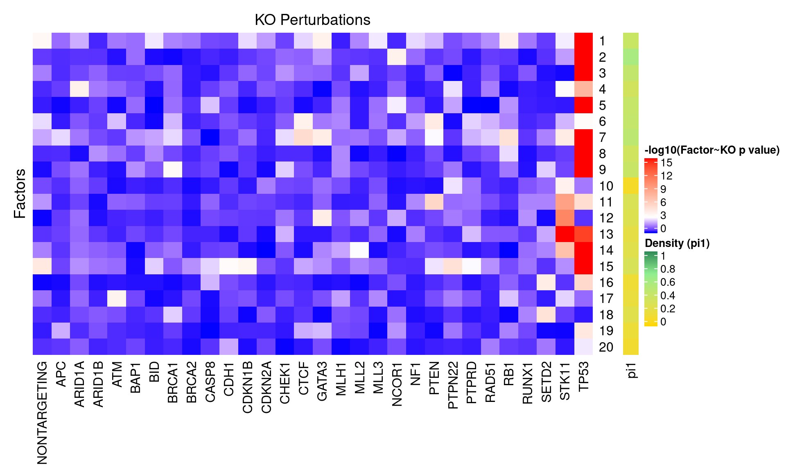
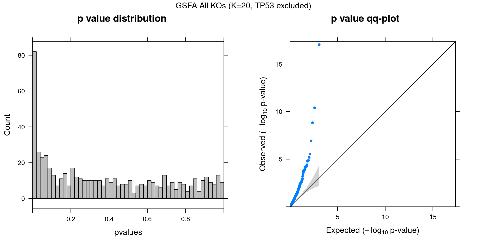
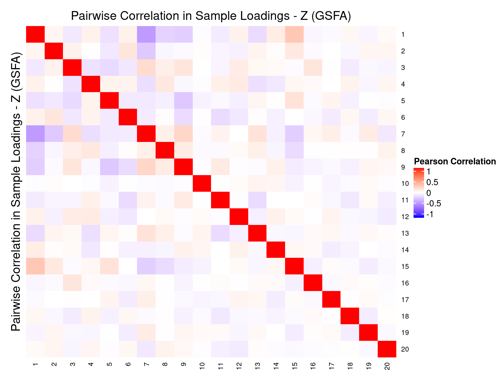
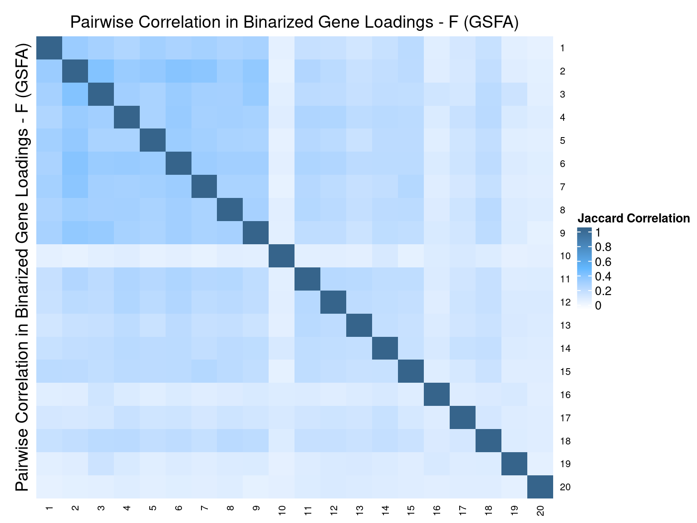
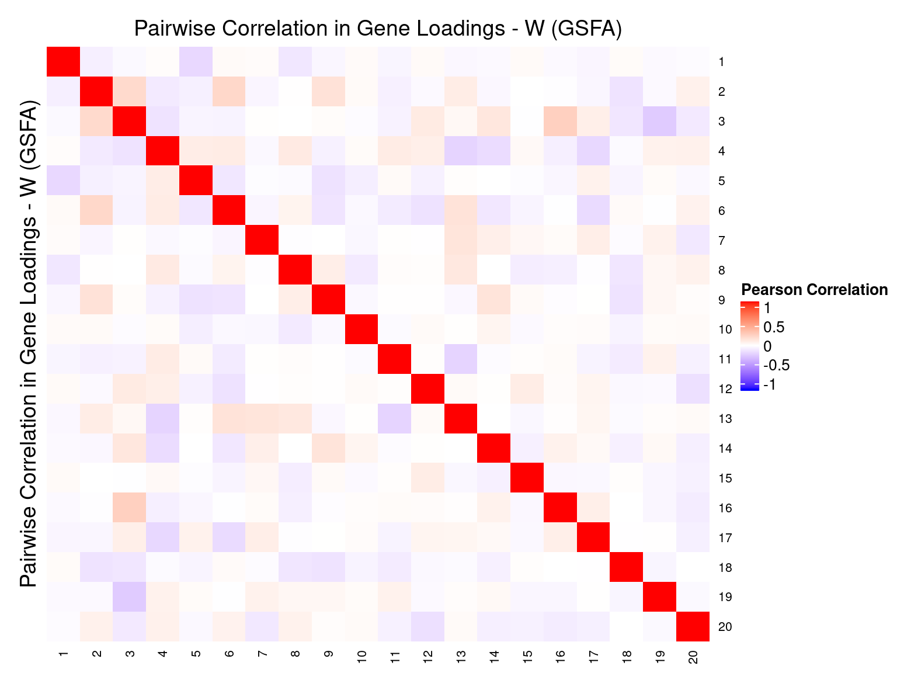

CROP-seq data are from this paper: On the design of CRISPR-based single cell molecular screens, GEO accession: GSE108699.
Perturbations:
Knock-outs of 29 tumor-suppressor genes (TP53, …), 1 non-targeting control.
Cells:
MCF10A cells (normal human breast epithelial cells) with exposure to a DNA damaging agent, doxorubicin.
Only cells with gRNA readout were kept, resulted in 5584 cells.
Genes:
Only the top 8000 variable genes by vst (also detected in at least 10 cells) were kept.
Normalization:
Seurat “LogNormalize”: log(count per 10K + 1).
Library size was regressed out, and the residuals were used as input.
Guided sparse factor analysis, with the \(G\) matrix being 30 types of KO conditions across cells.





Genes w/ non-zero loadings vs all genes selected for factor analysis.
GO category: Biological Process.
| ID | Description | GeneRatio | BgRatio | pvalue | qvalue |
|---|---|---|---|---|---|
| GO:1903047 | mitotic cell cycle process | 307/2390 | 413/5877 | 5.36e-47 | 1.94e-43 |
| GO:0000278 | mitotic cell cycle | 341/2390 | 486/5877 | 6.48e-43 | 1.17e-39 |
| GO:0006259 | DNA metabolic process | 321/2390 | 453/5877 | 9.73e-42 | 1.17e-38 |
| GO:0051276 | chromosome organization | 336/2390 | 499/5877 | 2.77e-36 | 2.51e-33 |
| GO:0007059 | chromosome segregation | 141/2390 | 170/5877 | 1.65e-30 | 1.08e-27 |
| GO:0044772 | mitotic cell cycle phase transition | 196/2390 | 262/5877 | 1.80e-30 | 1.08e-27 |
| GO:0044770 | cell cycle phase transition | 206/2390 | 280/5877 | 2.75e-30 | 1.42e-27 |
| GO:0051301 | cell division | 226/2390 | 318/5877 | 1.67e-29 | 7.57e-27 |
| GO:0006974 | cellular response to DNA damage stimulus | 267/2390 | 396/5877 | 8.29e-29 | 3.33e-26 |
| GO:0010564 | regulation of cell cycle process | 235/2390 | 338/5877 | 2.23e-28 | 8.07e-26 |
| GO:0006281 | DNA repair | 183/2390 | 245/5877 | 2.48e-28 | 8.16e-26 |
| GO:0000280 | nuclear division | 163/2390 | 214/5877 | 5.93e-27 | 1.79e-24 |
| GO:0098813 | nuclear chromosome segregation | 114/2390 | 139/5877 | 5.33e-24 | 1.48e-21 |
| GO:0048285 | organelle fission | 167/2390 | 230/5877 | 1.39e-23 | 3.61e-21 |
| GO:0140014 | mitotic nuclear division | 125/2390 | 158/5877 | 1.72e-23 | 4.15e-21 |
| GO:0007346 | regulation of mitotic cell cycle | 208/2390 | 305/5877 | 1.92e-23 | 4.35e-21 |
| GO:0006260 | DNA replication | 129/2390 | 166/5877 | 6.65e-23 | 1.41e-20 |
| GO:0000819 | sister chromatid segregation | 91/2390 | 107/5877 | 1.43e-21 | 2.88e-19 |
| GO:1901987 | regulation of cell cycle phase transition | 146/2390 | 200/5877 | 4.30e-21 | 8.03e-19 |
| GO:1901990 | regulation of mitotic cell cycle phase transition | 138/2390 | 186/5877 | 4.44e-21 | 8.03e-19 |
| GO:0006261 | DNA-dependent DNA replication | 86/2390 | 103/5877 | 2.30e-19 | 3.97e-17 |
| GO:0000070 | mitotic sister chromatid segregation | 79/2390 | 94/5877 | 3.17e-18 | 5.21e-16 |
| GO:0051052 | regulation of DNA metabolic process | 135/2390 | 190/5877 | 6.98e-18 | 1.10e-15 |
| GO:0071103 | DNA conformation change | 97/2390 | 126/5877 | 5.48e-17 | 8.27e-15 |
| GO:0006302 | double-strand break repair | 91/2390 | 118/5877 | 4.28e-16 | 6.20e-14 |
| GO:0051983 | regulation of chromosome segregation | 53/2390 | 58/5877 | 5.17e-16 | 7.20e-14 |
| GO:0006310 | DNA recombination | 103/2390 | 139/5877 | 6.11e-16 | 8.19e-14 |
| GO:0000086 | G2/M transition of mitotic cell cycle | 86/2390 | 110/5877 | 6.37e-16 | 8.23e-14 |
| GO:1902749 | regulation of cell cycle G2/M phase transition | 78/2390 | 97/5877 | 8.04e-16 | 1.00e-13 |
| GO:0044839 | cell cycle G2/M phase transition | 94/2390 | 124/5877 | 9.88e-16 | 1.19e-13 |
| GO:0010389 | regulation of G2/M transition of mitotic cell cycle | 70/2390 | 85/5877 | 2.37e-15 | 2.77e-13 |
| GO:0071824 | protein-DNA complex subunit organization | 86/2390 | 112/5877 | 4.47e-15 | 5.03e-13 |
| GO:0044786 | cell cycle DNA replication | 43/2390 | 45/5877 | 4.58e-15 | 5.03e-13 |
| GO:0006323 | DNA packaging | 70/2390 | 87/5877 | 2.40e-14 | 2.55e-12 |
| GO:0090068 | positive regulation of cell cycle process | 100/2390 | 141/5877 | 1.85e-13 | 1.92e-11 |
| GO:0000082 | G1/S transition of mitotic cell cycle | 96/2390 | 134/5877 | 2.10e-13 | 2.11e-11 |
| GO:0065004 | protein-DNA complex assembly | 77/2390 | 101/5877 | 2.47e-13 | 2.41e-11 |
| GO:0044843 | cell cycle G1/S phase transition | 98/2390 | 139/5877 | 5.88e-13 | 5.60e-11 |
| GO:0033044 | regulation of chromosome organization | 102/2390 | 147/5877 | 9.79e-13 | 9.08e-11 |
| GO:0000075 | cell cycle checkpoint | 89/2390 | 124/5877 | 1.36e-12 | 1.23e-10 |
| GO:0006333 | chromatin assembly or disassembly | 61/2390 | 76/5877 | 1.43e-12 | 1.26e-10 |
| GO:0051304 | chromosome separation | 43/2390 | 48/5877 | 1.77e-12 | 1.53e-10 |
| GO:0033260 | nuclear DNA replication | 36/2390 | 38/5877 | 1.90e-12 | 1.60e-10 |
| GO:0045787 | positive regulation of cell cycle | 127/2390 | 195/5877 | 2.14e-12 | 1.75e-10 |
| GO:0007088 | regulation of mitotic nuclear division | 75/2390 | 100/5877 | 2.17e-12 | 1.75e-10 |
| GO:0051054 | positive regulation of DNA metabolic process | 82/2390 | 113/5877 | 4.08e-12 | 3.21e-10 |
| GO:0010948 | negative regulation of cell cycle process | 108/2390 | 161/5877 | 6.29e-12 | 4.85e-10 |
| GO:0033045 | regulation of sister chromatid segregation | 41/2390 | 46/5877 | 8.78e-12 | 6.62e-10 |
| GO:0051783 | regulation of nuclear division | 77/2390 | 106/5877 | 1.72e-11 | 1.27e-09 |
| GO:0045786 | negative regulation of cell cycle | 177/2390 | 298/5877 | 1.77e-11 | 1.28e-09 |
| GO:0007098 | centrosome cycle | 54/2390 | 67/5877 | 2.10e-11 | 1.49e-09 |
| GO:0031497 | chromatin assembly | 55/2390 | 69/5877 | 3.11e-11 | 2.16e-09 |
| GO:0000723 | telomere maintenance | 63/2390 | 83/5877 | 5.40e-11 | 3.69e-09 |
| GO:0006325 | chromatin organization | 175/2390 | 297/5877 | 5.90e-11 | 3.95e-09 |
| GO:0007062 | sister chromatid cohesion | 29/2390 | 30/5877 | 7.70e-11 | 5.06e-09 |
| GO:0007093 | mitotic cell cycle checkpoint | 73/2390 | 101/5877 | 8.65e-11 | 5.59e-09 |
| GO:0007051 | spindle organization | 65/2390 | 87/5877 | 8.82e-11 | 5.60e-09 |
| GO:0051321 | meiotic cell cycle | 84/2390 | 121/5877 | 1.00e-10 | 6.24e-09 |
| GO:1902850 | microtubule cytoskeleton organization involved in mitosis | 56/2390 | 72/5877 | 1.22e-10 | 7.49e-09 |
| GO:0034502 | protein localization to chromosome | 41/2390 | 48/5877 | 1.74e-10 | 1.05e-08 |
| GO:1901988 | negative regulation of cell cycle phase transition | 79/2390 | 113/5877 | 2.12e-10 | 1.26e-08 |
| GO:0000725 | recombinational repair | 55/2390 | 71/5877 | 2.37e-10 | 1.38e-08 |
| GO:1903046 | meiotic cell cycle process | 66/2390 | 90/5877 | 2.51e-10 | 1.44e-08 |
| GO:0071897 | DNA biosynthetic process | 67/2390 | 92/5877 | 3.04e-10 | 1.71e-08 |
| GO:0032200 | telomere organization | 63/2390 | 85/5877 | 3.07e-10 | 1.71e-08 |
| GO:0034728 | nucleosome organization | 53/2390 | 68/5877 | 3.37e-10 | 1.85e-08 |
| GO:2001020 | regulation of response to DNA damage stimulus | 73/2390 | 103/5877 | 3.84e-10 | 2.07e-08 |
| GO:0000724 | double-strand break repair via homologous recombination | 54/2390 | 70/5877 | 4.58e-10 | 2.44e-08 |
| GO:0000226 | microtubule cytoskeleton organization | 153/2390 | 258/5877 | 5.30e-10 | 2.78e-08 |
| GO:1901991 | negative regulation of mitotic cell cycle phase transition | 73/2390 | 104/5877 | 7.80e-10 | 4.03e-08 |
| GO:0045930 | negative regulation of mitotic cell cycle | 96/2390 | 147/5877 | 9.12e-10 | 4.65e-08 |
| GO:0033047 | regulation of mitotic sister chromatid segregation | 35/2390 | 40/5877 | 9.95e-10 | 5.00e-08 |
| GO:0051306 | mitotic sister chromatid separation | 32/2390 | 36/5877 | 2.24e-09 | 1.11e-07 |
| GO:0010212 | response to ionizing radiation | 58/2390 | 79/5877 | 2.91e-09 | 1.42e-07 |
| GO:0007052 | mitotic spindle organization | 48/2390 | 62/5877 | 3.52e-09 | 1.66e-07 |
| GO:0140013 | meiotic nuclear division | 59/2390 | 81/5877 | 3.52e-09 | 1.66e-07 |
| GO:0031023 | microtubule organizing center organization | 55/2390 | 74/5877 | 3.54e-09 | 1.66e-07 |
| GO:0034508 | centromere complex assembly | 29/2390 | 32/5877 | 4.74e-09 | 2.20e-07 |
| GO:0010965 | regulation of mitotic sister chromatid separation | 31/2390 | 35/5877 | 4.95e-09 | 2.24e-07 |
| GO:1905818 | regulation of chromosome separation | 31/2390 | 35/5877 | 4.95e-09 | 2.24e-07 |
| GO:0033365 | protein localization to organelle | 189/2390 | 339/5877 | 5.69e-09 | 2.54e-07 |
| GO:0032201 | telomere maintenance via semi-conservative replication | 21/2390 | 21/5877 | 5.91e-09 | 2.61e-07 |
| GO:0034622 | cellular protein-containing complex assembly | 213/2390 | 391/5877 | 8.30e-09 | 3.62e-07 |
| GO:0016071 | mRNA metabolic process | 161/2390 | 282/5877 | 8.88e-09 | 3.83e-07 |
| GO:0006334 | nucleosome assembly | 45/2390 | 58/5877 | 9.76e-09 | 4.15e-07 |
| GO:0007091 | metaphase/anaphase transition of mitotic cell cycle | 30/2390 | 34/5877 | 1.09e-08 | 4.53e-07 |
| GO:0044784 | metaphase/anaphase transition of cell cycle | 30/2390 | 34/5877 | 1.09e-08 | 4.53e-07 |
| GO:0090305 | nucleic acid phosphodiester bond hydrolysis | 82/2390 | 125/5877 | 1.15e-08 | 4.72e-07 |
| GO:0051169 | nuclear transport | 94/2390 | 148/5877 | 1.16e-08 | 4.72e-07 |
| GO:0031570 | DNA integrity checkpoint | 64/2390 | 92/5877 | 1.55e-08 | 6.23e-07 |
| GO:0030071 | regulation of mitotic metaphase/anaphase transition | 29/2390 | 33/5877 | 2.38e-08 | 9.28e-07 |
| GO:1902099 | regulation of metaphase/anaphase transition of cell cycle | 29/2390 | 33/5877 | 2.38e-08 | 9.28e-07 |
| GO:0036297 | interstrand cross-link repair | 27/2390 | 30/5877 | 2.39e-08 | 9.28e-07 |
| GO:0006913 | nucleocytoplasmic transport | 92/2390 | 146/5877 | 2.94e-08 | 1.13e-06 |
| GO:0034655 | nucleobase-containing compound catabolic process | 123/2390 | 208/5877 | 3.54e-08 | 1.35e-06 |
| GO:0006338 | chromatin remodeling | 51/2390 | 70/5877 | 4.08e-08 | 1.54e-06 |
| GO:0031055 | chromatin remodeling at centromere | 26/2390 | 29/5877 | 5.33e-08 | 1.99e-06 |
| GO:0009314 | response to radiation | 115/2390 | 193/5877 | 5.56e-08 | 2.05e-06 |
| GO:0043044 | ATP-dependent chromatin remodeling | 33/2390 | 40/5877 | 6.47e-08 | 2.36e-06 |
| GO:0072331 | signal transduction by p53 class mediator | 77/2390 | 119/5877 | 7.83e-08 | 2.84e-06 |
| GO:0007017 | microtubule-based process | 181/2390 | 331/5877 | 8.31e-08 | 2.98e-06 |
| GO:0016032 | viral process | 172/2390 | 312/5877 | 8.41e-08 | 2.99e-06 |
| GO:0006403 | RNA localization | 64/2390 | 95/5877 | 1.06e-07 | 3.74e-06 |
| GO:0043486 | histone exchange | 27/2390 | 31/5877 | 1.13e-07 | 3.93e-06 |
| GO:0072594 | establishment of protein localization to organelle | 115/2390 | 195/5877 | 1.22e-07 | 4.21e-06 |
| GO:0044419 | interspecies interaction between organisms | 185/2390 | 341/5877 | 1.27e-07 | 4.34e-06 |
| GO:0051225 | spindle assembly | 41/2390 | 54/5877 | 1.32e-07 | 4.41e-06 |
| GO:0050000 | chromosome localization | 32/2390 | 39/5877 | 1.33e-07 | 4.41e-06 |
| GO:0051303 | establishment of chromosome localization | 32/2390 | 39/5877 | 1.33e-07 | 4.41e-06 |
| GO:0019439 | aromatic compound catabolic process | 128/2390 | 222/5877 | 1.46e-07 | 4.80e-06 |
| GO:0006611 | protein export from nucleus | 56/2390 | 81/5877 | 1.74e-07 | 5.61e-06 |
| GO:2001252 | positive regulation of chromosome organization | 56/2390 | 81/5877 | 1.74e-07 | 5.61e-06 |
| GO:0045931 | positive regulation of mitotic cell cycle | 57/2390 | 83/5877 | 1.94e-07 | 6.20e-06 |
| GO:1901989 | positive regulation of cell cycle phase transition | 36/2390 | 46/5877 | 2.08e-07 | 6.59e-06 |
| GO:0051310 | metaphase plate congression | 28/2390 | 33/5877 | 2.10e-07 | 6.60e-06 |
| GO:0006297 | nucleotide-excision repair, DNA gap filling | 17/2390 | 17/5877 | 2.20e-07 | 6.80e-06 |
| GO:0051984 | positive regulation of chromosome segregation | 17/2390 | 17/5877 | 2.20e-07 | 6.80e-06 |
| GO:0006336 | DNA replication-independent nucleosome assembly | 26/2390 | 30/5877 | 2.44e-07 | 7.43e-06 |
| GO:0034724 | DNA replication-independent nucleosome organization | 26/2390 | 30/5877 | 2.44e-07 | 7.43e-06 |
| GO:0034080 | CENP-A containing nucleosome assembly | 24/2390 | 27/5877 | 2.62e-07 | 7.72e-06 |
| GO:0061641 | CENP-A containing chromatin organization | 24/2390 | 27/5877 | 2.62e-07 | 7.72e-06 |
| GO:1905819 | negative regulation of chromosome separation | 24/2390 | 27/5877 | 2.62e-07 | 7.72e-06 |
| GO:2000816 | negative regulation of mitotic sister chromatid separation | 24/2390 | 27/5877 | 2.62e-07 | 7.72e-06 |
| GO:0044403 | symbiont process | 180/2390 | 333/5877 | 2.67e-07 | 7.79e-06 |
| GO:0006613 | cotranslational protein targeting to membrane | 29/2390 | 35/5877 | 3.53e-07 | 1.02e-05 |
| GO:0045132 | meiotic chromosome segregation | 32/2390 | 40/5877 | 4.05e-07 | 1.15e-05 |
| GO:1901992 | positive regulation of mitotic cell cycle phase transition | 32/2390 | 40/5877 | 4.05e-07 | 1.15e-05 |
| GO:0051168 | nuclear export | 59/2390 | 88/5877 | 4.34e-07 | 1.23e-05 |
| GO:0031145 | anaphase-promoting complex-dependent catabolic process | 19/2390 | 20/5877 | 4.44e-07 | 1.24e-05 |
| GO:0033683 | nucleotide-excision repair, DNA incision | 19/2390 | 20/5877 | 4.44e-07 | 1.24e-05 |
| GO:0006282 | regulation of DNA repair | 39/2390 | 52/5877 | 4.72e-07 | 1.30e-05 |
| GO:0033046 | negative regulation of sister chromatid segregation | 25/2390 | 29/5877 | 5.26e-07 | 1.42e-05 |
| GO:0045005 | DNA-dependent DNA replication maintenance of fidelity | 25/2390 | 29/5877 | 5.26e-07 | 1.42e-05 |
| GO:0051985 | negative regulation of chromosome segregation | 25/2390 | 29/5877 | 5.26e-07 | 1.42e-05 |
| GO:0071459 | protein localization to chromosome, centromeric region | 16/2390 | 16/5877 | 5.43e-07 | 1.46e-05 |
| GO:2001251 | negative regulation of chromosome organization | 49/2390 | 70/5877 | 5.71e-07 | 1.51e-05 |
| GO:0042769 | DNA damage response, detection of DNA damage | 23/2390 | 26/5877 | 5.78e-07 | 1.51e-05 |
| GO:0045841 | negative regulation of mitotic metaphase/anaphase transition | 23/2390 | 26/5877 | 5.78e-07 | 1.51e-05 |
| GO:1902100 | negative regulation of metaphase/anaphase transition of cell cycle | 23/2390 | 26/5877 | 5.78e-07 | 1.51e-05 |
| GO:0061982 | meiosis I cell cycle process | 40/2390 | 54/5877 | 5.89e-07 | 1.52e-05 |
| GO:0044270 | cellular nitrogen compound catabolic process | 125/2390 | 220/5877 | 6.20e-07 | 1.58e-05 |
| GO:0046700 | heterocycle catabolic process | 125/2390 | 220/5877 | 6.20e-07 | 1.58e-05 |
| GO:0006397 | mRNA processing | 105/2390 | 179/5877 | 6.29e-07 | 1.59e-05 |
| GO:0000375 | RNA splicing, via transesterification reactions | 82/2390 | 133/5877 | 6.44e-07 | 1.62e-05 |
| GO:0009628 | response to abiotic stimulus | 249/2390 | 487/5877 | 7.18e-07 | 1.79e-05 |
| GO:0097711 | ciliary basal body-plasma membrane docking | 34/2390 | 44/5877 | 7.84e-07 | 1.94e-05 |
| GO:0000731 | DNA synthesis involved in DNA repair | 26/2390 | 31/5877 | 9.28e-07 | 2.28e-05 |
| GO:0000377 | RNA splicing, via transesterification reactions with bulged adenosine as nucleophile | 81/2390 | 132/5877 | 9.97e-07 | 2.42e-05 |
| GO:0000398 | mRNA splicing, via spliceosome | 81/2390 | 132/5877 | 9.97e-07 | 2.42e-05 |
| GO:0000018 | regulation of DNA recombination | 35/2390 | 46/5877 | 1.03e-06 | 2.49e-05 |
| GO:0006296 | nucleotide-excision repair, DNA incision, 5’-to lesion | 18/2390 | 19/5877 | 1.04e-06 | 2.50e-05 |
| GO:0033048 | negative regulation of mitotic sister chromatid segregation | 24/2390 | 28/5877 | 1.13e-06 | 2.68e-05 |
| GO:0030261 | chromosome condensation | 22/2390 | 25/5877 | 1.27e-06 | 3.00e-05 |
| GO:0051383 | kinetochore organization | 15/2390 | 15/5877 | 1.34e-06 | 3.15e-05 |
| GO:0006614 | SRP-dependent cotranslational protein targeting to membrane | 27/2390 | 33/5877 | 1.49e-06 | 3.48e-05 |
| GO:0006289 | nucleotide-excision repair | 33/2390 | 43/5877 | 1.51e-06 | 3.50e-05 |
| GO:0051298 | centrosome duplication | 30/2390 | 38/5877 | 1.60e-06 | 3.68e-05 |
| GO:0000956 | nuclear-transcribed mRNA catabolic process | 54/2390 | 81/5877 | 1.76e-06 | 4.03e-05 |
| GO:0000077 | DNA damage checkpoint | 55/2390 | 83/5877 | 1.89e-06 | 4.29e-05 |
| GO:1901361 | organic cyclic compound catabolic process | 131/2390 | 236/5877 | 1.90e-06 | 4.29e-05 |
| GO:0006301 | postreplication repair | 25/2390 | 30/5877 | 1.93e-06 | 4.35e-05 |
| GO:0006275 | regulation of DNA replication | 43/2390 | 61/5877 | 2.10e-06 | 4.67e-05 |
| GO:0006405 | RNA export from nucleus | 43/2390 | 61/5877 | 2.10e-06 | 4.67e-05 |
| GO:0000184 | nuclear-transcribed mRNA catabolic process, nonsense-mediated decay | 31/2390 | 40/5877 | 2.19e-06 | 4.83e-05 |
| GO:0080135 | regulation of cellular response to stress | 161/2390 | 301/5877 | 2.74e-06 | 5.93e-05 |
| GO:0007094 | mitotic spindle assembly checkpoint | 21/2390 | 24/5877 | 2.77e-06 | 5.93e-05 |
| GO:0031577 | spindle checkpoint | 21/2390 | 24/5877 | 2.77e-06 | 5.93e-05 |
| GO:0071173 | spindle assembly checkpoint | 21/2390 | 24/5877 | 2.77e-06 | 5.93e-05 |
| GO:0071174 | mitotic spindle checkpoint | 21/2390 | 24/5877 | 2.77e-06 | 5.93e-05 |
| GO:0006406 | mRNA export from nucleus | 36/2390 | 49/5877 | 3.03e-06 | 6.37e-05 |
| GO:0071427 | mRNA-containing ribonucleoprotein complex export from nucleus | 36/2390 | 49/5877 | 3.03e-06 | 6.37e-05 |
| GO:0090329 | regulation of DNA-dependent DNA replication | 26/2390 | 32/5877 | 3.03e-06 | 6.37e-05 |
| GO:0045047 | protein targeting to ER | 29/2390 | 37/5877 | 3.14e-06 | 6.56e-05 |
| GO:0071166 | ribonucleoprotein complex localization | 41/2390 | 58/5877 | 3.24e-06 | 6.70e-05 |
| GO:0071426 | ribonucleoprotein complex export from nucleus | 41/2390 | 58/5877 | 3.24e-06 | 6.70e-05 |
| GO:0010638 | positive regulation of organelle organization | 139/2390 | 255/5877 | 3.54e-06 | 7.29e-05 |
| GO:0006401 | RNA catabolic process | 79/2390 | 131/5877 | 3.59e-06 | 7.34e-05 |
| GO:0007127 | meiosis I | 37/2390 | 51/5877 | 3.64e-06 | 7.41e-05 |
| GO:0051028 | mRNA transport | 43/2390 | 62/5877 | 4.17e-06 | 8.44e-05 |
| GO:0050657 | nucleic acid transport | 51/2390 | 77/5877 | 4.56e-06 | 9.12e-05 |
| GO:0050658 | RNA transport | 51/2390 | 77/5877 | 4.56e-06 | 9.12e-05 |
| GO:0008380 | RNA splicing | 95/2390 | 164/5877 | 4.60e-06 | 9.15e-05 |
| GO:0044774 | mitotic DNA integrity checkpoint | 44/2390 | 64/5877 | 4.66e-06 | 9.16e-05 |
| GO:1901796 | regulation of signal transduction by p53 class mediator | 44/2390 | 64/5877 | 4.66e-06 | 9.16e-05 |
| GO:0031123 | RNA 3’-end processing | 39/2390 | 55/5877 | 5.00e-06 | 9.78e-05 |
| GO:0070925 | organelle assembly | 177/2390 | 338/5877 | 5.08e-06 | 9.89e-05 |
| GO:0051053 | negative regulation of DNA metabolic process | 46/2390 | 68/5877 | 5.64e-06 | 1.09e-04 |
| GO:0007099 | centriole replication | 20/2390 | 23/5877 | 6.02e-06 | 1.15e-04 |
| GO:1902751 | positive regulation of cell cycle G2/M phase transition | 20/2390 | 23/5877 | 6.02e-06 | 1.15e-04 |
| GO:0008608 | attachment of spindle microtubules to kinetochore | 18/2390 | 20/5877 | 6.44e-06 | 1.22e-04 |
| GO:0010971 | positive regulation of G2/M transition of mitotic cell cycle | 18/2390 | 20/5877 | 6.44e-06 | 1.22e-04 |
| GO:0009123 | nucleoside monophosphate metabolic process | 64/2390 | 103/5877 | 7.57e-06 | 1.43e-04 |
| GO:0072599 | establishment of protein localization to endoplasmic reticulum | 29/2390 | 38/5877 | 8.10e-06 | 1.52e-04 |
| GO:0034501 | protein localization to kinetochore | 13/2390 | 13/5877 | 8.16e-06 | 1.52e-04 |
| GO:0051236 | establishment of RNA localization | 52/2390 | 80/5877 | 8.45e-06 | 1.57e-04 |
| GO:0007080 | mitotic metaphase plate congression | 21/2390 | 25/5877 | 1.07e-05 | 1.96e-04 |
| GO:0019985 | translesion synthesis | 21/2390 | 25/5877 | 1.07e-05 | 1.96e-04 |
| GO:0090307 | mitotic spindle assembly | 27/2390 | 35/5877 | 1.19e-05 | 2.17e-04 |
| GO:0022613 | ribonucleoprotein complex biogenesis | 110/2390 | 198/5877 | 1.21e-05 | 2.21e-04 |
| GO:2000045 | regulation of G1/S transition of mitotic cell cycle | 49/2390 | 75/5877 | 1.25e-05 | 2.25e-04 |
| GO:0022616 | DNA strand elongation | 17/2390 | 19/5877 | 1.44e-05 | 2.59e-04 |
| GO:0016569 | covalent chromatin modification | 100/2390 | 178/5877 | 1.61e-05 | 2.88e-04 |
| GO:0006284 | base-excision repair | 22/2390 | 27/5877 | 1.68e-05 | 3.00e-04 |
| GO:0015931 | nucleobase-containing compound transport | 59/2390 | 95/5877 | 1.75e-05 | 3.10e-04 |
| GO:0006396 | RNA processing | 184/2390 | 359/5877 | 1.86e-05 | 3.29e-04 |
| GO:0006402 | mRNA catabolic process | 68/2390 | 113/5877 | 1.88e-05 | 3.31e-04 |
| GO:0051170 | import into nucleus | 49/2390 | 76/5877 | 2.13e-05 | 3.73e-04 |
| GO:0007131 | reciprocal meiotic recombination | 20/2390 | 24/5877 | 2.22e-05 | 3.85e-04 |
| GO:0035825 | homologous recombination | 20/2390 | 24/5877 | 2.22e-05 | 3.85e-04 |
| GO:1902806 | regulation of cell cycle G1/S phase transition | 51/2390 | 80/5877 | 2.31e-05 | 3.98e-04 |
| GO:0032392 | DNA geometric change | 30/2390 | 41/5877 | 2.36e-05 | 4.04e-04 |
| GO:0045739 | positive regulation of DNA repair | 23/2390 | 29/5877 | 2.45e-05 | 4.18e-04 |
| GO:0060249 | anatomical structure homeostasis | 96/2390 | 171/5877 | 2.46e-05 | 4.19e-04 |
| GO:0045910 | negative regulation of DNA recombination | 18/2390 | 21/5877 | 2.78e-05 | 4.69e-04 |
| GO:1901976 | regulation of cell cycle checkpoint | 18/2390 | 21/5877 | 2.78e-05 | 4.69e-04 |
| GO:0009141 | nucleoside triphosphate metabolic process | 62/2390 | 102/5877 | 2.83e-05 | 4.74e-04 |
| GO:0045839 | negative regulation of mitotic nuclear division | 27/2390 | 36/5877 | 2.91e-05 | 4.83e-04 |
| GO:2000779 | regulation of double-strand break repair | 27/2390 | 36/5877 | 2.91e-05 | 4.83e-04 |
| GO:0006271 | DNA strand elongation involved in DNA replication | 14/2390 | 15/5877 | 3.09e-05 | 5.10e-04 |
| GO:0006298 | mismatch repair | 16/2390 | 18/5877 | 3.19e-05 | 5.22e-04 |
| GO:0043628 | ncRNA 3’-end processing | 16/2390 | 18/5877 | 3.19e-05 | 5.22e-04 |
| GO:0046605 | regulation of centrosome cycle | 24/2390 | 31/5877 | 3.34e-05 | 5.45e-04 |
| GO:0018205 | peptidyl-lysine modification | 81/2390 | 141/5877 | 3.50e-05 | 5.68e-04 |
| GO:0000726 | non-recombinational repair | 29/2390 | 40/5877 | 4.31e-05 | 6.93e-04 |
| GO:0051784 | negative regulation of nuclear division | 29/2390 | 40/5877 | 4.31e-05 | 6.93e-04 |
| GO:0032508 | DNA duplex unwinding | 25/2390 | 33/5877 | 4.35e-05 | 6.96e-04 |
| GO:0016570 | histone modification | 96/2390 | 173/5877 | 4.60e-05 | 7.31e-04 |
| GO:0031297 | replication fork processing | 19/2390 | 23/5877 | 4.61e-05 | 7.31e-04 |
| GO:0006312 | mitotic recombination | 11/2390 | 11/5877 | 4.96e-05 | 7.77e-04 |
| GO:0006999 | nuclear pore organization | 11/2390 | 11/5877 | 4.96e-05 | 7.77e-04 |
| GO:0070987 | error-free translesion synthesis | 11/2390 | 11/5877 | 4.96e-05 | 7.77e-04 |
| GO:0000910 | cytokinesis | 46/2390 | 72/5877 | 5.33e-05 | 8.32e-04 |
| GO:0044773 | mitotic DNA damage checkpoint | 39/2390 | 59/5877 | 6.50e-05 | 1.00e-03 |
| GO:0045814 | negative regulation of gene expression, epigenetic | 39/2390 | 59/5877 | 6.50e-05 | 1.00e-03 |
| GO:0032886 | regulation of microtubule-based process | 58/2390 | 96/5877 | 6.52e-05 | 1.00e-03 |
| GO:0098534 | centriole assembly | 20/2390 | 25/5877 | 6.86e-05 | 1.05e-03 |
| GO:0006412 | translation | 117/2390 | 219/5877 | 6.92e-05 | 1.06e-03 |
| GO:0042276 | error-prone translesion synthesis | 13/2390 | 14/5877 | 7.12e-05 | 1.08e-03 |
| GO:0006479 | protein methylation | 41/2390 | 63/5877 | 7.28e-05 | 1.10e-03 |
| GO:0008213 | protein alkylation | 41/2390 | 63/5877 | 7.28e-05 | 1.10e-03 |
| GO:0070972 | protein localization to endoplasmic reticulum | 33/2390 | 48/5877 | 7.33e-05 | 1.10e-03 |
| GO:0016072 | rRNA metabolic process | 71/2390 | 123/5877 | 8.53e-05 | 1.28e-03 |
| GO:0070192 | chromosome organization involved in meiotic cell cycle | 21/2390 | 27/5877 | 9.46e-05 | 1.40e-03 |
| GO:0006270 | DNA replication initiation | 18/2390 | 22/5877 | 9.47e-05 | 1.40e-03 |
| GO:0006473 | protein acetylation | 51/2390 | 83/5877 | 9.63e-05 | 1.42e-03 |
| GO:0009161 | ribonucleoside monophosphate metabolic process | 55/2390 | 91/5877 | 9.88e-05 | 1.45e-03 |
| GO:0071479 | cellular response to ionizing radiation | 30/2390 | 43/5877 | 1.02e-04 | 1.50e-03 |
| GO:0006303 | double-strand break repair via nonhomologous end joining | 26/2390 | 36/5877 | 1.20e-04 | 1.76e-03 |
| GO:0051382 | kinetochore assembly | 10/2390 | 10/5877 | 1.22e-04 | 1.78e-03 |
| GO:0000083 | regulation of transcription involved in G1/S transition of mitotic cell cycle | 16/2390 | 19/5877 | 1.25e-04 | 1.81e-03 |
| GO:2000278 | regulation of DNA biosynthetic process | 33/2390 | 49/5877 | 1.37e-04 | 1.97e-03 |
| GO:2001022 | positive regulation of response to DNA damage stimulus | 33/2390 | 49/5877 | 1.37e-04 | 1.97e-03 |
| GO:2001021 | negative regulation of response to DNA damage stimulus | 27/2390 | 38/5877 | 1.40e-04 | 2.00e-03 |
| GO:0010639 | negative regulation of organelle organization | 89/2390 | 162/5877 | 1.40e-04 | 2.00e-03 |
| GO:0009126 | purine nucleoside monophosphate metabolic process | 51/2390 | 84/5877 | 1.49e-04 | 2.10e-03 |
| GO:0009167 | purine ribonucleoside monophosphate metabolic process | 51/2390 | 84/5877 | 1.49e-04 | 2.10e-03 |
| GO:0070507 | regulation of microtubule cytoskeleton organization | 52/2390 | 86/5877 | 1.50e-04 | 2.10e-03 |
| GO:0071478 | cellular response to radiation | 54/2390 | 90/5877 | 1.50e-04 | 2.10e-03 |
| GO:0007063 | regulation of sister chromatid cohesion | 12/2390 | 13/5877 | 1.64e-04 | 2.27e-03 |
| GO:0007064 | mitotic sister chromatid cohesion | 12/2390 | 13/5877 | 1.64e-04 | 2.27e-03 |
| GO:0051307 | meiotic chromosome separation | 12/2390 | 13/5877 | 1.64e-04 | 2.27e-03 |
| GO:0009262 | deoxyribonucleotide metabolic process | 20/2390 | 26/5877 | 1.84e-04 | 2.53e-03 |
| GO:0022618 | ribonucleoprotein complex assembly | 55/2390 | 93/5877 | 2.23e-04 | 3.06e-03 |
| GO:0042770 | signal transduction in response to DNA damage | 47/2390 | 77/5877 | 2.25e-04 | 3.09e-03 |
| GO:0006283 | transcription-coupled nucleotide-excision repair | 21/2390 | 28/5877 | 2.34e-04 | 3.19e-03 |
| GO:0010833 | telomere maintenance via telomere lengthening | 26/2390 | 37/5877 | 2.49e-04 | 3.38e-03 |
| GO:0007143 | female meiotic nuclear division | 15/2390 | 18/5877 | 2.62e-04 | 3.55e-03 |
| GO:0043069 | negative regulation of programmed cell death | 193/2390 | 393/5877 | 2.80e-04 | 3.79e-03 |
| GO:0006518 | peptide metabolic process | 139/2390 | 273/5877 | 2.92e-04 | 3.92e-03 |
| GO:0043543 | protein acylation | 55/2390 | 94/5877 | 3.27e-04 | 4.38e-03 |
| GO:0032467 | positive regulation of cytokinesis | 13/2390 | 15/5877 | 3.34e-04 | 4.45e-03 |
| GO:0046034 | ATP metabolic process | 42/2390 | 68/5877 | 3.34e-04 | 4.45e-03 |
| GO:0043043 | peptide biosynthetic process | 120/2390 | 232/5877 | 3.36e-04 | 4.45e-03 |
| GO:0097193 | intrinsic apoptotic signaling pathway | 80/2390 | 146/5877 | 3.37e-04 | 4.45e-03 |
| GO:0009144 | purine nucleoside triphosphate metabolic process | 51/2390 | 86/5877 | 3.40e-04 | 4.48e-03 |
| GO:0009411 | response to UV | 44/2390 | 72/5877 | 3.41e-04 | 4.48e-03 |
| GO:0043066 | negative regulation of apoptotic process | 188/2390 | 383/5877 | 3.47e-04 | 4.54e-03 |
| GO:0043604 | amide biosynthetic process | 144/2390 | 285/5877 | 3.56e-04 | 4.63e-03 |
| GO:0000076 | DNA replication checkpoint | 11/2390 | 12/5877 | 3.74e-04 | 4.80e-03 |
| GO:0044766 | multi-organism transport | 11/2390 | 12/5877 | 3.74e-04 | 4.80e-03 |
| GO:1902579 | multi-organism localization | 11/2390 | 12/5877 | 3.74e-04 | 4.80e-03 |
| GO:0009117 | nucleotide metabolic process | 128/2390 | 250/5877 | 3.74e-04 | 4.80e-03 |
| GO:0042254 | ribosome biogenesis | 76/2390 | 138/5877 | 3.83e-04 | 4.89e-03 |
| GO:0046364 | monosaccharide biosynthetic process | 24/2390 | 34/5877 | 3.88e-04 | 4.95e-03 |
| GO:1902750 | negative regulation of cell cycle G2/M phase transition | 25/2390 | 36/5877 | 4.37e-04 | 5.54e-03 |
| GO:0006119 | oxidative phosphorylation | 20/2390 | 27/5877 | 4.37e-04 | 5.54e-03 |
| GO:0006753 | nucleoside phosphate metabolic process | 128/2390 | 251/5877 | 4.63e-04 | 5.84e-03 |
| GO:2000573 | positive regulation of DNA biosynthetic process | 26/2390 | 38/5877 | 4.84e-04 | 6.09e-03 |
| GO:0044265 | cellular macromolecule catabolic process | 207/2390 | 428/5877 | 4.93e-04 | 6.17e-03 |
| GO:0009199 | ribonucleoside triphosphate metabolic process | 51/2390 | 87/5877 | 5.01e-04 | 6.25e-03 |
| GO:0006413 | translational initiation | 39/2390 | 63/5877 | 5.07e-04 | 6.31e-03 |
| GO:0016573 | histone acetylation | 40/2390 | 65/5877 | 5.14e-04 | 6.37e-03 |
| GO:0006606 | protein import into nucleus | 42/2390 | 69/5877 | 5.22e-04 | 6.43e-03 |
| GO:0018394 | peptidyl-lysine acetylation | 42/2390 | 69/5877 | 5.22e-04 | 6.43e-03 |
| GO:0043603 | cellular amide metabolic process | 181/2390 | 370/5877 | 5.55e-04 | 6.80e-03 |
| GO:0060548 | negative regulation of cell death | 204/2390 | 422/5877 | 5.59e-04 | 6.84e-03 |
| GO:0051338 | regulation of transferase activity | 190/2390 | 391/5877 | 6.23e-04 | 7.60e-03 |
| GO:0010824 | regulation of centrosome duplication | 18/2390 | 24/5877 | 6.69e-04 | 8.09e-03 |
| GO:0070316 | regulation of G0 to G1 transition | 18/2390 | 24/5877 | 6.69e-04 | 8.09e-03 |
| GO:0016571 | histone methylation | 31/2390 | 48/5877 | 6.70e-04 | 8.09e-03 |
| GO:0071214 | cellular response to abiotic stimulus | 76/2390 | 140/5877 | 6.81e-04 | 8.16e-03 |
| GO:0104004 | cellular response to environmental stimulus | 76/2390 | 140/5877 | 6.81e-04 | 8.16e-03 |
| GO:0019319 | hexose biosynthetic process | 23/2390 | 33/5877 | 6.86e-04 | 8.19e-03 |
| GO:0000291 | nuclear-transcribed mRNA catabolic process, exonucleolytic | 12/2390 | 14/5877 | 7.19e-04 | 8.39e-03 |
| GO:0009264 | deoxyribonucleotide catabolic process | 12/2390 | 14/5877 | 7.19e-04 | 8.39e-03 |
| GO:0043928 | exonucleolytic nuclear-transcribed mRNA catabolic process involved in deadenylation-dependent decay | 12/2390 | 14/5877 | 7.19e-04 | 8.39e-03 |
| GO:0046599 | regulation of centriole replication | 12/2390 | 14/5877 | 7.19e-04 | 8.39e-03 |
| GO:1904031 | positive regulation of cyclin-dependent protein kinase activity | 12/2390 | 14/5877 | 7.19e-04 | 8.39e-03 |
| GO:2000104 | negative regulation of DNA-dependent DNA replication | 12/2390 | 14/5877 | 7.19e-04 | 8.39e-03 |
| GO:2000781 | positive regulation of double-strand break repair | 12/2390 | 14/5877 | 7.19e-04 | 8.39e-03 |
| GO:0017038 | protein import | 50/2390 | 86/5877 | 7.38e-04 | 8.59e-03 |
| GO:2000134 | negative regulation of G1/S transition of mitotic cell cycle | 35/2390 | 56/5877 | 7.56e-04 | 8.77e-03 |
| GO:0032204 | regulation of telomere maintenance | 24/2390 | 35/5877 | 7.61e-04 | 8.80e-03 |
| GO:1902807 | negative regulation of cell cycle G1/S phase transition | 36/2390 | 58/5877 | 7.70e-04 | 8.87e-03 |
| GO:0006475 | internal protein amino acid acetylation | 40/2390 | 66/5877 | 7.97e-04 | 9.13e-03 |
| GO:0018393 | internal peptidyl-lysine acetylation | 40/2390 | 66/5877 | 7.97e-04 | 9.13e-03 |
| GO:0043967 | histone H4 acetylation | 19/2390 | 26/5877 | 8.10e-04 | 9.25e-03 |
| GO:0006364 | rRNA processing | 60/2390 | 107/5877 | 8.34e-04 | 9.50e-03 |
| GO:0002562 | somatic diversification of immune receptors via germline recombination within a single locus | 20/2390 | 28/5877 | 9.47e-04 | 1.07e-02 |
| GO:0016444 | somatic cell DNA recombination | 20/2390 | 28/5877 | 9.47e-04 | 1.07e-02 |
| GO:0045333 | cellular respiration | 27/2390 | 41/5877 | 9.52e-04 | 1.07e-02 |
| GO:0070317 | negative regulation of G0 to G1 transition | 16/2390 | 21/5877 | 1.02e-03 | 1.14e-02 |
| GO:0090199 | regulation of release of cytochrome c from mitochondria | 16/2390 | 21/5877 | 1.02e-03 | 1.14e-02 |
| GO:0061640 | cytoskeleton-dependent cytokinesis | 29/2390 | 45/5877 | 1.05e-03 | 1.17e-02 |
| GO:0072332 | intrinsic apoptotic signaling pathway by p53 class mediator | 29/2390 | 45/5877 | 1.05e-03 | 1.17e-02 |
| GO:0006342 | chromatin silencing | 31/2390 | 49/5877 | 1.12e-03 | 1.24e-02 |
| GO:0050684 | regulation of mRNA processing | 31/2390 | 49/5877 | 1.12e-03 | 1.24e-02 |
| GO:0006886 | intracellular protein transport | 190/2390 | 395/5877 | 1.17e-03 | 1.29e-02 |
| GO:0002200 | somatic diversification of immune receptors | 22/2390 | 32/5877 | 1.20e-03 | 1.31e-02 |
| GO:0006278 | RNA-dependent DNA biosynthetic process | 22/2390 | 32/5877 | 1.20e-03 | 1.31e-02 |
| GO:0007004 | telomere maintenance via telomerase | 22/2390 | 32/5877 | 1.20e-03 | 1.31e-02 |
| GO:0009124 | nucleoside monophosphate biosynthetic process | 36/2390 | 59/5877 | 1.21e-03 | 1.32e-02 |
| GO:0045740 | positive regulation of DNA replication | 17/2390 | 23/5877 | 1.25e-03 | 1.36e-02 |
| GO:0055086 | nucleobase-containing small molecule metabolic process | 143/2390 | 290/5877 | 1.39e-03 | 1.51e-02 |
| GO:0031124 | mRNA 3’-end processing | 24/2390 | 36/5877 | 1.41e-03 | 1.52e-02 |
| GO:0042273 | ribosomal large subunit biogenesis | 24/2390 | 36/5877 | 1.41e-03 | 1.52e-02 |
| GO:2001233 | regulation of apoptotic signaling pathway | 90/2390 | 173/5877 | 1.43e-03 | 1.53e-02 |
| GO:0043966 | histone H3 acetylation | 18/2390 | 25/5877 | 1.48e-03 | 1.58e-02 |
| GO:0045023 | G0 to G1 transition | 18/2390 | 25/5877 | 1.48e-03 | 1.58e-02 |
| GO:0009200 | deoxyribonucleoside triphosphate metabolic process | 11/2390 | 13/5877 | 1.53e-03 | 1.63e-02 |
| GO:0040001 | establishment of mitotic spindle localization | 11/2390 | 13/5877 | 1.53e-03 | 1.63e-02 |
| GO:0032465 | regulation of cytokinesis | 26/2390 | 40/5877 | 1.57e-03 | 1.67e-02 |
| GO:0009205 | purine ribonucleoside triphosphate metabolic process | 47/2390 | 82/5877 | 1.60e-03 | 1.69e-02 |
| GO:0034504 | protein localization to nucleus | 66/2390 | 122/5877 | 1.69e-03 | 1.77e-02 |
| GO:0032206 | positive regulation of telomere maintenance | 19/2390 | 27/5877 | 1.70e-03 | 1.78e-02 |
| GO:0006006 | glucose metabolic process | 43/2390 | 74/5877 | 1.72e-03 | 1.80e-02 |
| GO:0071826 | ribonucleoprotein complex subunit organization | 56/2390 | 101/5877 | 1.75e-03 | 1.83e-02 |
| GO:0046822 | regulation of nucleocytoplasmic transport | 31/2390 | 50/5877 | 1.81e-03 | 1.88e-02 |
| GO:0022406 | membrane docking | 39/2390 | 66/5877 | 1.82e-03 | 1.88e-02 |
| GO:0030330 | DNA damage response, signal transduction by p53 class mediator | 38/2390 | 64/5877 | 1.83e-03 | 1.89e-02 |
| GO:0140056 | organelle localization by membrane tethering | 38/2390 | 64/5877 | 1.83e-03 | 1.89e-02 |
| GO:1904029 | regulation of cyclin-dependent protein kinase activity | 33/2390 | 54/5877 | 1.85e-03 | 1.90e-02 |
| GO:0001836 | release of cytochrome c from mitochondria | 20/2390 | 29/5877 | 1.89e-03 | 1.94e-02 |
| GO:0070734 | histone H3-K27 methylation | 9/2390 | 10/5877 | 1.91e-03 | 1.96e-02 |
| GO:0008156 | negative regulation of DNA replication | 15/2390 | 20/5877 | 1.93e-03 | 1.97e-02 |
| GO:0010569 | regulation of double-strand break repair via homologous recombination | 15/2390 | 20/5877 | 1.93e-03 | 1.97e-02 |
| GO:0019318 | hexose metabolic process | 52/2390 | 93/5877 | 1.97e-03 | 1.99e-02 |
| GO:1903311 | regulation of mRNA metabolic process | 52/2390 | 93/5877 | 1.97e-03 | 1.99e-02 |
| GO:0009615 | response to virus | 68/2390 | 127/5877 | 2.06e-03 | 2.07e-02 |
| GO:0006094 | gluconeogenesis | 21/2390 | 31/5877 | 2.07e-03 | 2.08e-02 |
| GO:0000302 | response to reactive oxygen species | 59/2390 | 108/5877 | 2.15e-03 | 2.15e-02 |
| GO:0034660 | ncRNA metabolic process | 115/2390 | 230/5877 | 2.19e-03 | 2.18e-02 |
| GO:0046386 | deoxyribose phosphate catabolic process | 12/2390 | 15/5877 | 2.26e-03 | 2.24e-02 |
| GO:0070198 | protein localization to chromosome, telomeric region | 12/2390 | 15/5877 | 2.26e-03 | 2.24e-02 |
| GO:0070199 | establishment of protein localization to chromosome | 12/2390 | 15/5877 | 2.26e-03 | 2.24e-02 |
| GO:0009394 | 2’-deoxyribonucleotide metabolic process | 16/2390 | 22/5877 | 2.32e-03 | 2.29e-02 |
| GO:0016572 | histone phosphorylation | 16/2390 | 22/5877 | 2.32e-03 | 2.29e-02 |
| GO:0006839 | mitochondrial transport | 44/2390 | 77/5877 | 2.42e-03 | 2.38e-02 |
| GO:0034614 | cellular response to reactive oxygen species | 43/2390 | 75/5877 | 2.47e-03 | 2.42e-02 |
| GO:2001235 | positive regulation of apoptotic signaling pathway | 43/2390 | 75/5877 | 2.47e-03 | 2.42e-02 |
| GO:0034404 | nucleobase-containing small molecule biosynthetic process | 42/2390 | 73/5877 | 2.52e-03 | 2.45e-02 |
| GO:2001242 | regulation of intrinsic apoptotic signaling pathway | 42/2390 | 73/5877 | 2.52e-03 | 2.45e-02 |
| GO:0000281 | mitotic cytokinesis | 25/2390 | 39/5877 | 2.57e-03 | 2.49e-02 |
| GO:0034968 | histone lysine methylation | 25/2390 | 39/5877 | 2.57e-03 | 2.49e-02 |
| GO:0007006 | mitochondrial membrane organization | 26/2390 | 41/5877 | 2.65e-03 | 2.53e-02 |
| GO:0031571 | mitotic G1 DNA damage checkpoint | 26/2390 | 41/5877 | 2.65e-03 | 2.53e-02 |
| GO:0044783 | G1 DNA damage checkpoint | 26/2390 | 41/5877 | 2.65e-03 | 2.53e-02 |
| GO:0044819 | mitotic G1/S transition checkpoint | 26/2390 | 41/5877 | 2.65e-03 | 2.53e-02 |
| GO:0006979 | response to oxidative stress | 101/2390 | 200/5877 | 2.67e-03 | 2.53e-02 |
| GO:0002753 | cytoplasmic pattern recognition receptor signaling pathway | 17/2390 | 24/5877 | 2.68e-03 | 2.53e-02 |
| GO:0016447 | somatic recombination of immunoglobulin gene segments | 17/2390 | 24/5877 | 2.68e-03 | 2.53e-02 |
| GO:0019692 | deoxyribose phosphate metabolic process | 17/2390 | 24/5877 | 2.68e-03 | 2.53e-02 |
| GO:0045840 | positive regulation of mitotic nuclear division | 17/2390 | 24/5877 | 2.68e-03 | 2.53e-02 |
| GO:0018022 | peptidyl-lysine methylation | 28/2390 | 45/5877 | 2.77e-03 | 2.59e-02 |
| GO:0072395 | signal transduction involved in cell cycle checkpoint | 28/2390 | 45/5877 | 2.77e-03 | 2.59e-02 |
| GO:0072401 | signal transduction involved in DNA integrity checkpoint | 28/2390 | 45/5877 | 2.77e-03 | 2.59e-02 |
| GO:0072422 | signal transduction involved in DNA damage checkpoint | 28/2390 | 45/5877 | 2.77e-03 | 2.59e-02 |
| GO:0009408 | response to heat | 35/2390 | 59/5877 | 2.80e-03 | 2.61e-02 |
| GO:0008630 | intrinsic apoptotic signaling pathway in response to DNA damage | 34/2390 | 57/5877 | 2.82e-03 | 2.62e-02 |
| GO:0000079 | regulation of cyclin-dependent protein serine/threonine kinase activity | 31/2390 | 51/5877 | 2.84e-03 | 2.63e-02 |
| GO:0045911 | positive regulation of DNA recombination | 13/2390 | 17/5877 | 2.97e-03 | 2.75e-02 |
| GO:0010332 | response to gamma radiation | 18/2390 | 26/5877 | 2.99e-03 | 2.76e-02 |
| GO:0051972 | regulation of telomerase activity | 18/2390 | 26/5877 | 2.99e-03 | 2.76e-02 |
| GO:0051302 | regulation of cell division | 47/2390 | 84/5877 | 3.13e-03 | 2.87e-02 |
| GO:0000387 | spliceosomal snRNP assembly | 10/2390 | 12/5877 | 3.23e-03 | 2.93e-02 |
| GO:0007076 | mitotic chromosome condensation | 10/2390 | 12/5877 | 3.23e-03 | 2.93e-02 |
| GO:0090231 | regulation of spindle checkpoint | 10/2390 | 12/5877 | 3.23e-03 | 2.93e-02 |
| GO:0090266 | regulation of mitotic cell cycle spindle assembly checkpoint | 10/2390 | 12/5877 | 3.23e-03 | 2.93e-02 |
| GO:1903504 | regulation of mitotic spindle checkpoint | 10/2390 | 12/5877 | 3.23e-03 | 2.93e-02 |
| GO:0010972 | negative regulation of G2/M transition of mitotic cell cycle | 19/2390 | 28/5877 | 3.27e-03 | 2.96e-02 |
| GO:0016445 | somatic diversification of immunoglobulins | 19/2390 | 28/5877 | 3.27e-03 | 2.96e-02 |
| GO:0031503 | protein-containing complex localization | 62/2390 | 116/5877 | 3.36e-03 | 3.02e-02 |
| GO:0051347 | positive regulation of transferase activity | 130/2390 | 266/5877 | 3.40e-03 | 3.05e-02 |
| GO:0015980 | energy derivation by oxidation of organic compounds | 42/2390 | 74/5877 | 3.57e-03 | 3.20e-02 |
| GO:0031935 | regulation of chromatin silencing | 14/2390 | 19/5877 | 3.63e-03 | 3.24e-02 |
| GO:0051653 | spindle localization | 14/2390 | 19/5877 | 3.63e-03 | 3.24e-02 |
| GO:0006163 | purine nucleotide metabolic process | 92/2390 | 182/5877 | 3.90e-03 | 3.47e-02 |
| GO:0070125 | mitochondrial translational elongation | 23/2390 | 36/5877 | 4.04e-03 | 3.57e-02 |
| GO:0070126 | mitochondrial translational termination | 23/2390 | 36/5877 | 4.04e-03 | 3.57e-02 |
| GO:0005996 | monosaccharide metabolic process | 56/2390 | 104/5877 | 4.19e-03 | 3.67e-02 |
| GO:0034599 | cellular response to oxidative stress | 69/2390 | 132/5877 | 4.22e-03 | 3.67e-02 |
| GO:0002204 | somatic recombination of immunoglobulin genes involved in immune response | 15/2390 | 21/5877 | 4.23e-03 | 3.67e-02 |
| GO:0002208 | somatic diversification of immunoglobulins involved in immune response | 15/2390 | 21/5877 | 4.23e-03 | 3.67e-02 |
| GO:0009060 | aerobic respiration | 15/2390 | 21/5877 | 4.23e-03 | 3.67e-02 |
| GO:0045190 | isotype switching | 15/2390 | 21/5877 | 4.23e-03 | 3.67e-02 |
| GO:0051973 | positive regulation of telomerase activity | 15/2390 | 21/5877 | 4.23e-03 | 3.67e-02 |
| GO:0090224 | regulation of spindle organization | 15/2390 | 21/5877 | 4.23e-03 | 3.67e-02 |
| GO:0071456 | cellular response to hypoxia | 47/2390 | 85/5877 | 4.28e-03 | 3.70e-02 |
| GO:0009166 | nucleotide catabolic process | 31/2390 | 52/5877 | 4.32e-03 | 3.73e-02 |
| GO:0090150 | establishment of protein localization to membrane | 62/2390 | 117/5877 | 4.35e-03 | 3.75e-02 |
| GO:0031062 | positive regulation of histone methylation | 11/2390 | 14/5877 | 4.51e-03 | 3.87e-02 |
| GO:0045830 | positive regulation of isotype switching | 11/2390 | 14/5877 | 4.51e-03 | 3.87e-02 |
| GO:0032984 | protein-containing complex disassembly | 61/2390 | 115/5877 | 4.52e-03 | 3.87e-02 |
| GO:0018193 | peptidyl-amino acid modification | 214/2390 | 460/5877 | 4.65e-03 | 3.97e-02 |
| GO:0043414 | macromolecule methylation | 60/2390 | 113/5877 | 4.70e-03 | 4.00e-02 |
| GO:0051493 | regulation of cytoskeleton organization | 105/2390 | 212/5877 | 4.85e-03 | 4.12e-02 |
| GO:0008284 | positive regulation of cell proliferation | 169/2390 | 357/5877 | 4.96e-03 | 4.21e-02 |
| GO:0071453 | cellular response to oxygen levels | 51/2390 | 94/5877 | 5.02e-03 | 4.24e-02 |
| GO:0000380 | alternative mRNA splicing, via spliceosome | 17/2390 | 25/5877 | 5.21e-03 | 4.37e-02 |
| GO:0019080 | viral gene expression | 17/2390 | 25/5877 | 5.21e-03 | 4.37e-02 |
| GO:0043462 | regulation of ATPase activity | 17/2390 | 25/5877 | 5.21e-03 | 4.37e-02 |
| GO:0006612 | protein targeting to membrane | 39/2390 | 69/5877 | 5.40e-03 | 4.52e-02 |
| GO:0042113 | B cell activation | 48/2390 | 88/5877 | 5.57e-03 | 4.66e-02 |
| GO:0006369 | termination of RNA polymerase II transcription | 12/2390 | 16/5877 | 5.69e-03 | 4.70e-02 |
| GO:0032069 | regulation of nuclease activity | 12/2390 | 16/5877 | 5.69e-03 | 4.70e-02 |
| GO:0045191 | regulation of isotype switching | 12/2390 | 16/5877 | 5.69e-03 | 4.70e-02 |
| GO:0072698 | protein localization to microtubule cytoskeleton | 12/2390 | 16/5877 | 5.69e-03 | 4.70e-02 |
| GO:0090200 | positive regulation of release of cytochrome c from mitochondria | 12/2390 | 16/5877 | 5.69e-03 | 4.70e-02 |
| GO:0071900 | regulation of protein serine/threonine kinase activity | 104/2390 | 211/5877 | 6.06e-03 | 5.00e-02 |
| ID | Description | GeneRatio | BgRatio | pvalue | qvalue |
|---|---|---|---|---|---|
| GO:0006518 | peptide metabolic process | 216/3571 | 273/5877 | 2.74e-11 | 9.99e-08 |
| GO:0006412 | translation | 176/3571 | 219/5877 | 1.95e-10 | 2.60e-07 |
| GO:0022613 | ribonucleoprotein complex biogenesis | 161/3571 | 198/5877 | 2.14e-10 | 2.60e-07 |
| GO:0043603 | cellular amide metabolic process | 278/3571 | 370/5877 | 1.28e-09 | 1.16e-06 |
| GO:0006396 | RNA processing | 270/3571 | 359/5877 | 1.90e-09 | 1.38e-06 |
| GO:0034660 | ncRNA metabolic process | 181/3571 | 230/5877 | 2.68e-09 | 1.63e-06 |
| GO:0043043 | peptide biosynthetic process | 182/3571 | 232/5877 | 3.82e-09 | 1.99e-06 |
| GO:0042254 | ribosome biogenesis | 115/3571 | 138/5877 | 5.44e-09 | 2.48e-06 |
| GO:0016072 | rRNA metabolic process | 103/3571 | 123/5877 | 2.06e-08 | 8.34e-06 |
| GO:0044419 | interspecies interaction between organisms | 254/3571 | 341/5877 | 2.80e-08 | 1.02e-05 |
| GO:0044403 | symbiont process | 248/3571 | 333/5877 | 4.24e-08 | 1.40e-05 |
| GO:0051336 | regulation of hydrolase activity | 353/3571 | 491/5877 | 4.90e-08 | 1.49e-05 |
| GO:0016032 | viral process | 233/3571 | 312/5877 | 7.50e-08 | 2.10e-05 |
| GO:0006403 | RNA localization | 81/3571 | 95/5877 | 1.38e-07 | 3.60e-05 |
| GO:0051169 | nuclear transport | 119/3571 | 148/5877 | 1.77e-07 | 4.29e-05 |
| GO:0030162 | regulation of proteolysis | 222/3571 | 298/5877 | 2.17e-07 | 4.94e-05 |
| GO:0016071 | mRNA metabolic process | 211/3571 | 282/5877 | 2.48e-07 | 5.12e-05 |
| GO:0043604 | amide biosynthetic process | 213/3571 | 285/5877 | 2.53e-07 | 5.12e-05 |
| GO:0042493 | response to drug | 297/3571 | 411/5877 | 2.88e-07 | 5.51e-05 |
| GO:0006913 | nucleocytoplasmic transport | 117/3571 | 146/5877 | 3.17e-07 | 5.78e-05 |
| GO:0044265 | cellular macromolecule catabolic process | 306/3571 | 428/5877 | 9.76e-07 | 1.69e-04 |
| GO:0006364 | rRNA processing | 88/3571 | 107/5877 | 1.15e-06 | 1.83e-04 |
| GO:1901135 | carbohydrate derivative metabolic process | 307/3571 | 430/5877 | 1.15e-06 | 1.83e-04 |
| GO:0052547 | regulation of peptidase activity | 135/3571 | 174/5877 | 1.32e-06 | 2.01e-04 |
| GO:0006405 | RNA export from nucleus | 54/3571 | 61/5877 | 1.44e-06 | 2.10e-04 |
| GO:0051345 | positive regulation of hydrolase activity | 215/3571 | 292/5877 | 1.52e-06 | 2.13e-04 |
| GO:0032543 | mitochondrial translation | 47/3571 | 52/5877 | 1.78e-06 | 2.37e-04 |
| GO:0072594 | establishment of protein localization to organelle | 149/3571 | 195/5877 | 1.92e-06 | 2.37e-04 |
| GO:0006886 | intracellular protein transport | 283/3571 | 395/5877 | 1.92e-06 | 2.37e-04 |
| GO:0052548 | regulation of endopeptidase activity | 129/3571 | 166/5877 | 1.96e-06 | 2.37e-04 |
| GO:0008380 | RNA splicing | 127/3571 | 164/5877 | 3.28e-06 | 3.86e-04 |
| GO:0071166 | ribonucleoprotein complex localization | 51/3571 | 58/5877 | 4.55e-06 | 4.89e-04 |
| GO:0071426 | ribonucleoprotein complex export from nucleus | 51/3571 | 58/5877 | 4.55e-06 | 4.89e-04 |
| GO:0140053 | mitochondrial gene expression | 54/3571 | 62/5877 | 4.57e-06 | 4.89e-04 |
| GO:0000375 | RNA splicing, via transesterification reactions | 105/3571 | 133/5877 | 4.86e-06 | 5.05e-04 |
| GO:0010608 | posttranscriptional regulation of gene expression | 142/3571 | 187/5877 | 6.17e-06 | 6.12e-04 |
| GO:0000377 | RNA splicing, via transesterification reactions with bulged adenosine as nucleophile | 104/3571 | 132/5877 | 6.39e-06 | 6.12e-04 |
| GO:0000398 | mRNA splicing, via spliceosome | 104/3571 | 132/5877 | 6.39e-06 | 6.12e-04 |
| GO:0071826 | ribonucleoprotein complex subunit organization | 82/3571 | 101/5877 | 7.34e-06 | 6.86e-04 |
| GO:0034655 | nucleobase-containing compound catabolic process | 156/3571 | 208/5877 | 7.59e-06 | 6.91e-04 |
| GO:0034470 | ncRNA processing | 130/3571 | 170/5877 | 8.16e-06 | 7.25e-04 |
| GO:0022618 | ribonucleoprotein complex assembly | 76/3571 | 93/5877 | 1.00e-05 | 8.55e-04 |
| GO:0042255 | ribosome assembly | 28/3571 | 29/5877 | 1.01e-05 | 8.55e-04 |
| GO:0045862 | positive regulation of proteolysis | 120/3571 | 156/5877 | 1.10e-05 | 9.13e-04 |
| GO:0055086 | nucleobase-containing small molecule metabolic process | 210/3571 | 290/5877 | 1.38e-05 | 1.11e-03 |
| GO:0071363 | cellular response to growth factor stimulus | 202/3571 | 278/5877 | 1.41e-05 | 1.11e-03 |
| GO:0070848 | response to growth factor | 209/3571 | 289/5877 | 1.68e-05 | 1.27e-03 |
| GO:0051248 | negative regulation of protein metabolic process | 297/3571 | 423/5877 | 1.71e-05 | 1.27e-03 |
| GO:0050657 | nucleic acid transport | 64/3571 | 77/5877 | 1.75e-05 | 1.27e-03 |
| GO:0050658 | RNA transport | 64/3571 | 77/5877 | 1.75e-05 | 1.27e-03 |
| GO:0051236 | establishment of RNA localization | 66/3571 | 80/5877 | 2.11e-05 | 1.51e-03 |
| GO:0006415 | translational termination | 37/3571 | 41/5877 | 2.67e-05 | 1.87e-03 |
| GO:0009144 | purine nucleoside triphosphate metabolic process | 70/3571 | 86/5877 | 2.93e-05 | 2.02e-03 |
| GO:0009117 | nucleotide metabolic process | 182/3571 | 250/5877 | 3.13e-05 | 2.11e-03 |
| GO:0032269 | negative regulation of cellular protein metabolic process | 280/3571 | 399/5877 | 3.21e-05 | 2.13e-03 |
| GO:0009628 | response to abiotic stimulus | 337/3571 | 487/5877 | 3.37e-05 | 2.16e-03 |
| GO:0070125 | mitochondrial translational elongation | 33/3571 | 36/5877 | 3.44e-05 | 2.16e-03 |
| GO:0070126 | mitochondrial translational termination | 33/3571 | 36/5877 | 3.44e-05 | 2.16e-03 |
| GO:0006397 | mRNA processing | 134/3571 | 179/5877 | 3.92e-05 | 2.42e-03 |
| GO:0006163 | purine nucleotide metabolic process | 136/3571 | 182/5877 | 4.00e-05 | 2.43e-03 |
| GO:0006753 | nucleoside phosphate metabolic process | 182/3571 | 251/5877 | 4.61e-05 | 2.75e-03 |
| GO:0033365 | protein localization to organelle | 240/3571 | 339/5877 | 4.70e-05 | 2.76e-03 |
| GO:0007167 | enzyme linked receptor protein signaling pathway | 283/3571 | 405/5877 | 4.86e-05 | 2.81e-03 |
| GO:0009161 | ribonucleoside monophosphate metabolic process | 73/3571 | 91/5877 | 5.16e-05 | 2.89e-03 |
| GO:0019693 | ribose phosphate metabolic process | 139/3571 | 187/5877 | 5.16e-05 | 2.89e-03 |
| GO:0009126 | purine nucleoside monophosphate metabolic process | 68/3571 | 84/5877 | 5.38e-05 | 2.92e-03 |
| GO:0009167 | purine ribonucleoside monophosphate metabolic process | 68/3571 | 84/5877 | 5.38e-05 | 2.92e-03 |
| GO:0034622 | cellular protein-containing complex assembly | 273/3571 | 391/5877 | 7.28e-05 | 3.90e-03 |
| GO:0051170 | import into nucleus | 62/3571 | 76/5877 | 7.40e-05 | 3.90e-03 |
| GO:0007044 | cell-substrate junction assembly | 46/3571 | 54/5877 | 8.18e-05 | 4.26e-03 |
| GO:0072521 | purine-containing compound metabolic process | 147/3571 | 200/5877 | 8.30e-05 | 4.26e-03 |
| GO:0034504 | protein localization to nucleus | 94/3571 | 122/5877 | 8.88e-05 | 4.49e-03 |
| GO:0070647 | protein modification by small protein conjugation or removal | 275/3571 | 395/5877 | 9.49e-05 | 4.73e-03 |
| GO:0009205 | purine ribonucleoside triphosphate metabolic process | 66/3571 | 82/5877 | 9.75e-05 | 4.80e-03 |
| GO:0046700 | heterocycle catabolic process | 160/3571 | 220/5877 | 1.03e-04 | 4.99e-03 |
| GO:0051168 | nuclear export | 70/3571 | 88/5877 | 1.22e-04 | 5.71e-03 |
| GO:0019439 | aromatic compound catabolic process | 161/3571 | 222/5877 | 1.25e-04 | 5.71e-03 |
| GO:0042060 | wound healing | 149/3571 | 204/5877 | 1.25e-04 | 5.71e-03 |
| GO:0006406 | mRNA export from nucleus | 42/3571 | 49/5877 | 1.25e-04 | 5.71e-03 |
| GO:0071427 | mRNA-containing ribonucleoprotein complex export from nucleus | 42/3571 | 49/5877 | 1.25e-04 | 5.71e-03 |
| GO:0006611 | protein export from nucleus | 65/3571 | 81/5877 | 1.31e-04 | 5.88e-03 |
| GO:0045333 | cellular respiration | 36/3571 | 41/5877 | 1.35e-04 | 6.01e-03 |
| GO:0002283 | neutrophil activation involved in immune response | 136/3571 | 185/5877 | 1.50e-04 | 6.47e-03 |
| GO:0043312 | neutrophil degranulation | 136/3571 | 185/5877 | 1.50e-04 | 6.47e-03 |
| GO:0036230 | granulocyte activation | 138/3571 | 188/5877 | 1.51e-04 | 6.47e-03 |
| GO:0006413 | translational initiation | 52/3571 | 63/5877 | 1.58e-04 | 6.65e-03 |
| GO:0055114 | oxidation-reduction process | 255/3571 | 366/5877 | 1.59e-04 | 6.65e-03 |
| GO:0009199 | ribonucleoside triphosphate metabolic process | 69/3571 | 87/5877 | 1.62e-04 | 6.71e-03 |
| GO:0051098 | regulation of binding | 129/3571 | 175/5877 | 1.81e-04 | 7.39e-03 |
| GO:0044270 | cellular nitrogen compound catabolic process | 159/3571 | 220/5877 | 1.83e-04 | 7.39e-03 |
| GO:0042119 | neutrophil activation | 137/3571 | 187/5877 | 1.85e-04 | 7.41e-03 |
| GO:0010952 | positive regulation of peptidase activity | 66/3571 | 83/5877 | 1.95e-04 | 7.64e-03 |
| GO:0042273 | ribosomal large subunit biogenesis | 32/3571 | 36/5877 | 1.95e-04 | 7.64e-03 |
| GO:0034097 | response to cytokine | 319/3571 | 466/5877 | 2.03e-04 | 7.87e-03 |
| GO:0006606 | protein import into nucleus | 56/3571 | 69/5877 | 2.17e-04 | 8.26e-03 |
| GO:0006401 | RNA catabolic process | 99/3571 | 131/5877 | 2.18e-04 | 8.26e-03 |
| GO:0031329 | regulation of cellular catabolic process | 198/3571 | 280/5877 | 2.42e-04 | 9.10e-03 |
| GO:2000116 | regulation of cysteine-type endopeptidase activity | 81/3571 | 105/5877 | 2.53e-04 | 9.39e-03 |
| GO:0006979 | response to oxidative stress | 145/3571 | 200/5877 | 2.75e-04 | 1.01e-02 |
| GO:0006417 | regulation of translation | 93/3571 | 123/5877 | 3.26e-04 | 1.18e-02 |
| GO:0043299 | leukocyte degranulation | 144/3571 | 199/5877 | 3.33e-04 | 1.18e-02 |
| GO:0009150 | purine ribonucleotide metabolic process | 124/3571 | 169/5877 | 3.34e-04 | 1.18e-02 |
| GO:0002446 | neutrophil mediated immunity | 136/3571 | 187/5877 | 3.37e-04 | 1.18e-02 |
| GO:0009259 | ribonucleotide metabolic process | 130/3571 | 178/5877 | 3.37e-04 | 1.18e-02 |
| GO:0010517 | regulation of phospholipase activity | 24/3571 | 26/5877 | 3.55e-04 | 1.23e-02 |
| GO:0009127 | purine nucleoside monophosphate biosynthetic process | 39/3571 | 46/5877 | 3.60e-04 | 1.23e-02 |
| GO:0009168 | purine ribonucleoside monophosphate biosynthetic process | 39/3571 | 46/5877 | 3.60e-04 | 1.23e-02 |
| GO:0006402 | mRNA catabolic process | 86/3571 | 113/5877 | 3.72e-04 | 1.26e-02 |
| GO:0006414 | translational elongation | 44/3571 | 53/5877 | 3.98e-04 | 1.32e-02 |
| GO:0009156 | ribonucleoside monophosphate biosynthetic process | 44/3571 | 53/5877 | 3.98e-04 | 1.32e-02 |
| GO:0009123 | nucleoside monophosphate metabolic process | 79/3571 | 103/5877 | 4.17e-04 | 1.37e-02 |
| GO:1901361 | organic cyclic compound catabolic process | 168/3571 | 236/5877 | 4.24e-04 | 1.38e-02 |
| GO:0032872 | regulation of stress-activated MAPK cascade | 72/3571 | 93/5877 | 4.58e-04 | 1.46e-02 |
| GO:0070302 | regulation of stress-activated protein kinase signaling cascade | 72/3571 | 93/5877 | 4.58e-04 | 1.46e-02 |
| GO:0009894 | regulation of catabolic process | 229/3571 | 330/5877 | 4.98e-04 | 1.57e-02 |
| GO:0016570 | histone modification | 126/3571 | 173/5877 | 5.02e-04 | 1.57e-02 |
| GO:0030216 | keratinocyte differentiation | 76/3571 | 99/5877 | 5.10e-04 | 1.59e-02 |
| GO:0017038 | protein import | 67/3571 | 86/5877 | 5.23e-04 | 1.61e-02 |
| GO:0010950 | positive regulation of endopeptidase activity | 60/3571 | 76/5877 | 5.43e-04 | 1.65e-02 |
| GO:0031098 | stress-activated protein kinase signaling cascade | 95/3571 | 127/5877 | 5.43e-04 | 1.65e-02 |
| GO:0009124 | nucleoside monophosphate biosynthetic process | 48/3571 | 59/5877 | 5.54e-04 | 1.67e-02 |
| GO:0000027 | ribosomal large subunit assembly | 15/3571 | 15/5877 | 5.62e-04 | 1.68e-02 |
| GO:0002275 | myeloid cell activation involved in immune response | 145/3571 | 202/5877 | 5.75e-04 | 1.70e-02 |
| GO:1901657 | glycosyl compound metabolic process | 55/3571 | 69/5877 | 5.94e-04 | 1.74e-02 |
| GO:0090150 | establishment of protein localization to membrane | 88/3571 | 117/5877 | 6.35e-04 | 1.85e-02 |
| GO:0031123 | RNA 3’-end processing | 45/3571 | 55/5877 | 6.50e-04 | 1.87e-02 |
| GO:0030335 | positive regulation of cell migration | 154/3571 | 216/5877 | 6.51e-04 | 1.87e-02 |
| GO:0002444 | myeloid leukocyte mediated immunity | 144/3571 | 201/5877 | 6.90e-04 | 1.96e-02 |
| GO:0051272 | positive regulation of cellular component movement | 161/3571 | 227/5877 | 7.33e-04 | 2.06e-02 |
| GO:0071560 | cellular response to transforming growth factor beta stimulus | 81/3571 | 107/5877 | 7.34e-04 | 2.06e-02 |
| GO:0030855 | epithelial cell differentiation | 202/3571 | 290/5877 | 7.80e-04 | 2.16e-02 |
| GO:1901565 | organonitrogen compound catabolic process | 330/3571 | 489/5877 | 7.84e-04 | 2.16e-02 |
| GO:0046034 | ATP metabolic process | 54/3571 | 68/5877 | 7.90e-04 | 2.16e-02 |
| GO:0022411 | cellular component disassembly | 139/3571 | 194/5877 | 8.45e-04 | 2.30e-02 |
| GO:0048013 | ephrin receptor signaling pathway | 31/3571 | 36/5877 | 8.64e-04 | 2.33e-02 |
| GO:0071345 | cellular response to cytokine stimulus | 290/3571 | 427/5877 | 8.89e-04 | 2.38e-02 |
| GO:0043393 | regulation of protein binding | 78/3571 | 103/5877 | 8.99e-04 | 2.39e-02 |
| GO:1903313 | positive regulation of mRNA metabolic process | 25/3571 | 28/5877 | 9.06e-04 | 2.39e-02 |
| GO:0015980 | energy derivation by oxidation of organic compounds | 58/3571 | 74/5877 | 9.39e-04 | 2.46e-02 |
| GO:1903827 | regulation of cellular protein localization | 148/3571 | 208/5877 | 9.50e-04 | 2.47e-02 |
| GO:0043069 | negative regulation of programmed cell death | 268/3571 | 393/5877 | 9.55e-04 | 2.47e-02 |
| GO:0030163 | protein catabolic process | 239/3571 | 348/5877 | 9.73e-04 | 2.50e-02 |
| GO:0034333 | adherens junction assembly | 36/3571 | 43/5877 | 1.00e-03 | 2.55e-02 |
| GO:1901136 | carbohydrate derivative catabolic process | 60/3571 | 77/5877 | 1.01e-03 | 2.55e-02 |
| GO:0051403 | stress-activated MAPK cascade | 88/3571 | 118/5877 | 1.02e-03 | 2.56e-02 |
| GO:2000147 | positive regulation of cell motility | 157/3571 | 222/5877 | 1.05e-03 | 2.61e-02 |
| GO:0016569 | covalent chromatin modification | 128/3571 | 178/5877 | 1.06e-03 | 2.63e-02 |
| GO:0002274 | myeloid leukocyte activation | 170/3571 | 242/5877 | 1.09e-03 | 2.67e-02 |
| GO:0006605 | protein targeting | 104/3571 | 142/5877 | 1.10e-03 | 2.67e-02 |
| GO:0034330 | cell junction organization | 108/3571 | 148/5877 | 1.11e-03 | 2.67e-02 |
| GO:0007568 | aging | 110/3571 | 151/5877 | 1.11e-03 | 2.67e-02 |
| GO:1902533 | positive regulation of intracellular signal transduction | 265/3571 | 389/5877 | 1.12e-03 | 2.69e-02 |
| GO:0009141 | nucleoside triphosphate metabolic process | 77/3571 | 102/5877 | 1.14e-03 | 2.71e-02 |
| GO:0043066 | negative regulation of apoptotic process | 261/3571 | 383/5877 | 1.18e-03 | 2.80e-02 |
| GO:0071559 | response to transforming growth factor beta | 81/3571 | 108/5877 | 1.20e-03 | 2.80e-02 |
| GO:0044257 | cellular protein catabolic process | 201/3571 | 290/5877 | 1.20e-03 | 2.80e-02 |
| GO:0009725 | response to hormone | 262/3571 | 385/5877 | 1.31e-03 | 3.05e-02 |
| GO:0045454 | cell redox homeostasis | 27/3571 | 31/5877 | 1.32e-03 | 3.05e-02 |
| GO:0015931 | nucleobase-containing compound transport | 72/3571 | 95/5877 | 1.35e-03 | 3.10e-02 |
| GO:0007169 | transmembrane receptor protein tyrosine kinase signaling pathway | 189/3571 | 272/5877 | 1.38e-03 | 3.10e-02 |
| GO:0040017 | positive regulation of locomotion | 161/3571 | 229/5877 | 1.38e-03 | 3.10e-02 |
| GO:0051897 | positive regulation of protein kinase B signaling | 52/3571 | 66/5877 | 1.38e-03 | 3.10e-02 |
| GO:2000145 | regulation of cell motility | 258/3571 | 379/5877 | 1.39e-03 | 3.10e-02 |
| GO:0006325 | chromatin organization | 205/3571 | 297/5877 | 1.50e-03 | 3.32e-02 |
| GO:0002263 | cell activation involved in immune response | 181/3571 | 260/5877 | 1.51e-03 | 3.33e-02 |
| GO:0031503 | protein-containing complex localization | 86/3571 | 116/5877 | 1.58e-03 | 3.46e-02 |
| GO:0060548 | negative regulation of cell death | 285/3571 | 422/5877 | 1.67e-03 | 3.63e-02 |
| GO:0051028 | mRNA transport | 49/3571 | 62/5877 | 1.67e-03 | 3.63e-02 |
| GO:0043281 | regulation of cysteine-type endopeptidase activity involved in apoptotic process | 71/3571 | 94/5877 | 1.71e-03 | 3.69e-02 |
| GO:0030334 | regulation of cell migration | 242/3571 | 355/5877 | 1.73e-03 | 3.70e-02 |
| GO:0002366 | leukocyte activation involved in immune response | 180/3571 | 259/5877 | 1.76e-03 | 3.74e-02 |
| GO:0051701 | interaction with host | 75/3571 | 100/5877 | 1.80e-03 | 3.82e-02 |
| GO:1903362 | regulation of cellular protein catabolic process | 77/3571 | 103/5877 | 1.84e-03 | 3.88e-02 |
| GO:0051603 | proteolysis involved in cellular protein catabolic process | 187/3571 | 270/5877 | 1.86e-03 | 3.89e-02 |
| GO:0000956 | nuclear-transcribed mRNA catabolic process | 62/3571 | 81/5877 | 1.88e-03 | 3.92e-02 |
| GO:0007045 | cell-substrate adherens junction assembly | 34/3571 | 41/5877 | 1.94e-03 | 3.99e-02 |
| GO:0048041 | focal adhesion assembly | 34/3571 | 41/5877 | 1.94e-03 | 3.99e-02 |
| GO:0043408 | regulation of MAPK cascade | 192/3571 | 278/5877 | 2.00e-03 | 4.10e-02 |
| GO:0009991 | response to extracellular stimulus | 153/3571 | 218/5877 | 2.02e-03 | 4.10e-02 |
| GO:1900180 | regulation of protein localization to nucleus | 46/3571 | 58/5877 | 2.03e-03 | 4.10e-02 |
| GO:0010951 | negative regulation of endopeptidase activity | 68/3571 | 90/5877 | 2.10e-03 | 4.23e-02 |
| GO:0051270 | regulation of cellular component movement | 276/3571 | 409/5877 | 2.12e-03 | 4.24e-02 |
| GO:0010563 | negative regulation of phosphorus metabolic process | 162/3571 | 232/5877 | 2.14e-03 | 4.25e-02 |
| GO:0060429 | epithelium development | 325/3571 | 486/5877 | 2.15e-03 | 4.25e-02 |
| GO:1900182 | positive regulation of protein localization to nucleus | 31/3571 | 37/5877 | 2.23e-03 | 4.38e-02 |
| GO:0043588 | skin development | 110/3571 | 153/5877 | 2.37e-03 | 4.62e-02 |
| GO:0032874 | positive regulation of stress-activated MAPK cascade | 50/3571 | 64/5877 | 2.38e-03 | 4.62e-02 |
| GO:0070304 | positive regulation of stress-activated protein kinase signaling cascade | 50/3571 | 64/5877 | 2.38e-03 | 4.62e-02 |
| GO:0045861 | negative regulation of proteolysis | 94/3571 | 129/5877 | 2.46e-03 | 4.74e-02 |
| GO:0044003 | modification by symbiont of host morphology or physiology | 16/3571 | 17/5877 | 2.49e-03 | 4.76e-02 |
| GO:0045936 | negative regulation of phosphate metabolic process | 161/3571 | 231/5877 | 2.50e-03 | 4.77e-02 |
| GO:0032495 | response to muramyl dipeptide | 12/3571 | 12/5877 | 2.51e-03 | 4.77e-02 |
| GO:0040012 | regulation of locomotion | 271/3571 | 402/5877 | 2.53e-03 | 4.78e-02 |
| GO:0031667 | response to nutrient levels | 142/3571 | 202/5877 | 2.62e-03 | 4.89e-02 |
| GO:1903050 | regulation of proteolysis involved in cellular protein catabolic process | 67/3571 | 89/5877 | 2.65e-03 | 4.89e-02 |
| GO:0000184 | nuclear-transcribed mRNA catabolic process, nonsense-mediated decay | 33/3571 | 40/5877 | 2.68e-03 | 4.89e-02 |
| GO:0009145 | purine nucleoside triphosphate biosynthetic process | 33/3571 | 40/5877 | 2.68e-03 | 4.89e-02 |
| GO:0009206 | purine ribonucleoside triphosphate biosynthetic process | 33/3571 | 40/5877 | 2.68e-03 | 4.89e-02 |
| GO:0030968 | endoplasmic reticulum unfolded protein response | 45/3571 | 57/5877 | 2.68e-03 | 4.89e-02 |
| GO:0048545 | response to steroid hormone | 119/3571 | 167/5877 | 2.69e-03 | 4.89e-02 |
| GO:0010466 | negative regulation of peptidase activity | 69/3571 | 92/5877 | 2.72e-03 | 4.93e-02 |
| ID | Description | GeneRatio | BgRatio | pvalue | qvalue |
|---|---|---|---|---|---|
| GO:0006396 | RNA processing | 271/2674 | 359/5877 | 8.65e-33 | 3.25e-29 |
| GO:0016071 | mRNA metabolic process | 220/2674 | 282/5877 | 3.06e-30 | 5.74e-27 |
| GO:0008380 | RNA splicing | 138/2674 | 164/5877 | 3.04e-25 | 3.80e-22 |
| GO:0006397 | mRNA processing | 146/2674 | 179/5877 | 7.25e-24 | 6.81e-21 |
| GO:0000375 | RNA splicing, via transesterification reactions | 114/2674 | 133/5877 | 2.07e-22 | 1.56e-19 |
| GO:0000377 | RNA splicing, via transesterification reactions with bulged adenosine as nucleophile | 113/2674 | 132/5877 | 3.99e-22 | 2.14e-19 |
| GO:0000398 | mRNA splicing, via spliceosome | 113/2674 | 132/5877 | 3.99e-22 | 2.14e-19 |
| GO:0022613 | ribonucleoprotein complex biogenesis | 148/2674 | 198/5877 | 1.72e-17 | 8.09e-15 |
| GO:0043604 | amide biosynthetic process | 193/2674 | 285/5877 | 7.65e-15 | 3.19e-12 |
| GO:0006518 | peptide metabolic process | 185/2674 | 273/5877 | 2.60e-14 | 9.76e-12 |
| GO:0006412 | translation | 154/2674 | 219/5877 | 3.44e-14 | 1.17e-11 |
| GO:0043603 | cellular amide metabolic process | 237/2674 | 370/5877 | 9.70e-14 | 3.04e-11 |
| GO:0043043 | peptide biosynthetic process | 159/2674 | 232/5877 | 4.37e-13 | 1.26e-10 |
| GO:0006413 | translational initiation | 56/2674 | 63/5877 | 4.80e-13 | 1.29e-10 |
| GO:0044265 | cellular macromolecule catabolic process | 264/2674 | 428/5877 | 2.17e-12 | 5.43e-10 |
| GO:0034660 | ncRNA metabolic process | 155/2674 | 230/5877 | 7.26e-12 | 1.70e-09 |
| GO:0042254 | ribosome biogenesis | 101/2674 | 138/5877 | 2.31e-11 | 5.11e-09 |
| GO:0071826 | ribonucleoprotein complex subunit organization | 78/2674 | 101/5877 | 5.41e-11 | 1.13e-08 |
| GO:0022618 | ribonucleoprotein complex assembly | 73/2674 | 93/5877 | 5.71e-11 | 1.13e-08 |
| GO:0006401 | RNA catabolic process | 95/2674 | 131/5877 | 2.16e-10 | 4.05e-08 |
| GO:0006402 | mRNA catabolic process | 84/2674 | 113/5877 | 3.10e-10 | 5.55e-08 |
| GO:0006403 | RNA localization | 73/2674 | 95/5877 | 3.44e-10 | 5.87e-08 |
| GO:0034470 | ncRNA processing | 117/2674 | 170/5877 | 4.03e-10 | 6.42e-08 |
| GO:0006886 | intracellular protein transport | 239/2674 | 395/5877 | 4.10e-10 | 6.42e-08 |
| GO:0006405 | RNA export from nucleus | 51/2674 | 61/5877 | 7.44e-10 | 1.12e-07 |
| GO:0051168 | nuclear export | 68/2674 | 88/5877 | 9.13e-10 | 1.32e-07 |
| GO:0072594 | establishment of protein localization to organelle | 130/2674 | 195/5877 | 1.14e-09 | 1.59e-07 |
| GO:0070972 | protein localization to endoplasmic reticulum | 42/2674 | 48/5877 | 1.37e-09 | 1.84e-07 |
| GO:0043484 | regulation of RNA splicing | 45/2674 | 53/5877 | 2.83e-09 | 3.61e-07 |
| GO:0045047 | protein targeting to ER | 34/2674 | 37/5877 | 2.89e-09 | 3.61e-07 |
| GO:0016072 | rRNA metabolic process | 88/2674 | 123/5877 | 3.12e-09 | 3.78e-07 |
| GO:0016032 | viral process | 192/2674 | 312/5877 | 3.68e-09 | 4.32e-07 |
| GO:0000184 | nuclear-transcribed mRNA catabolic process, nonsense-mediated decay | 36/2674 | 40/5877 | 3.88e-09 | 4.41e-07 |
| GO:0071166 | ribonucleoprotein complex localization | 48/2674 | 58/5877 | 4.74e-09 | 5.09e-07 |
| GO:0071426 | ribonucleoprotein complex export from nucleus | 48/2674 | 58/5877 | 4.74e-09 | 5.09e-07 |
| GO:0044403 | symbiont process | 202/2674 | 333/5877 | 7.74e-09 | 8.07e-07 |
| GO:0000956 | nuclear-transcribed mRNA catabolic process | 62/2674 | 81/5877 | 9.92e-09 | 9.80e-07 |
| GO:0006611 | protein export from nucleus | 62/2674 | 81/5877 | 9.92e-09 | 9.80e-07 |
| GO:0006613 | cotranslational protein targeting to membrane | 32/2674 | 35/5877 | 1.19e-08 | 1.15e-06 |
| GO:0034976 | response to endoplasmic reticulum stress | 78/2674 | 108/5877 | 1.25e-08 | 1.17e-06 |
| GO:1903311 | regulation of mRNA metabolic process | 69/2674 | 93/5877 | 1.41e-08 | 1.29e-06 |
| GO:0072599 | establishment of protein localization to endoplasmic reticulum | 34/2674 | 38/5877 | 1.54e-08 | 1.38e-06 |
| GO:0044419 | interspecies interaction between organisms | 205/2674 | 341/5877 | 1.69e-08 | 1.47e-06 |
| GO:0006986 | response to unfolded protein | 64/2674 | 85/5877 | 1.79e-08 | 1.52e-06 |
| GO:0006364 | rRNA processing | 77/2674 | 107/5877 | 2.02e-08 | 1.68e-06 |
| GO:0050657 | nucleic acid transport | 59/2674 | 77/5877 | 2.12e-08 | 1.70e-06 |
| GO:0050658 | RNA transport | 59/2674 | 77/5877 | 2.12e-08 | 1.70e-06 |
| GO:0035966 | response to topologically incorrect protein | 68/2674 | 92/5877 | 2.33e-08 | 1.83e-06 |
| GO:0034622 | cellular protein-containing complex assembly | 230/2674 | 391/5877 | 3.09e-08 | 2.37e-06 |
| GO:0007005 | mitochondrion organization | 118/2674 | 181/5877 | 4.80e-08 | 3.60e-06 |
| GO:0006614 | SRP-dependent cotranslational protein targeting to membrane | 30/2674 | 33/5877 | 4.89e-08 | 3.60e-06 |
| GO:0051236 | establishment of RNA localization | 60/2674 | 80/5877 | 6.43e-08 | 4.65e-06 |
| GO:0006414 | translational elongation | 43/2674 | 53/5877 | 9.64e-08 | 6.83e-06 |
| GO:1902653 | secondary alcohol biosynthetic process | 37/2674 | 44/5877 | 1.30e-07 | 9.01e-06 |
| GO:0006415 | translational termination | 35/2674 | 41/5877 | 1.33e-07 | 9.12e-06 |
| GO:0034655 | nucleobase-containing compound catabolic process | 131/2674 | 208/5877 | 1.86e-07 | 1.25e-05 |
| GO:0015931 | nucleobase-containing compound transport | 68/2674 | 95/5877 | 1.92e-07 | 1.27e-05 |
| GO:0016126 | sterol biosynthetic process | 38/2674 | 46/5877 | 2.23e-07 | 1.44e-05 |
| GO:0006695 | cholesterol biosynthetic process | 36/2674 | 43/5877 | 2.42e-07 | 1.54e-05 |
| GO:0140053 | mitochondrial gene expression | 48/2674 | 62/5877 | 2.59e-07 | 1.62e-05 |
| GO:0034620 | cellular response to unfolded protein | 51/2674 | 67/5877 | 2.84e-07 | 1.75e-05 |
| GO:0035967 | cellular response to topologically incorrect protein | 54/2674 | 72/5877 | 2.96e-07 | 1.80e-05 |
| GO:0010608 | posttranscriptional regulation of gene expression | 119/2674 | 187/5877 | 3.06e-07 | 1.83e-05 |
| GO:0006694 | steroid biosynthetic process | 62/2674 | 86/5877 | 4.43e-07 | 2.60e-05 |
| GO:0070125 | mitochondrial translational elongation | 31/2674 | 36/5877 | 4.83e-07 | 2.79e-05 |
| GO:0019439 | aromatic compound catabolic process | 137/2674 | 222/5877 | 5.53e-07 | 3.15e-05 |
| GO:0033365 | protein localization to organelle | 198/2674 | 339/5877 | 6.16e-07 | 3.45e-05 |
| GO:0070647 | protein modification by small protein conjugation or removal | 226/2674 | 395/5877 | 8.82e-07 | 4.87e-05 |
| GO:0030968 | endoplasmic reticulum unfolded protein response | 44/2674 | 57/5877 | 9.59e-07 | 5.19e-05 |
| GO:0006406 | mRNA export from nucleus | 39/2674 | 49/5877 | 9.96e-07 | 5.19e-05 |
| GO:0050684 | regulation of mRNA processing | 39/2674 | 49/5877 | 9.96e-07 | 5.19e-05 |
| GO:0071427 | mRNA-containing ribonucleoprotein complex export from nucleus | 39/2674 | 49/5877 | 9.96e-07 | 5.19e-05 |
| GO:0044270 | cellular nitrogen compound catabolic process | 135/2674 | 220/5877 | 1.06e-06 | 5.37e-05 |
| GO:0046700 | heterocycle catabolic process | 135/2674 | 220/5877 | 1.06e-06 | 5.37e-05 |
| GO:0051169 | nuclear transport | 96/2674 | 148/5877 | 1.23e-06 | 6.16e-05 |
| GO:0009267 | cellular response to starvation | 46/2674 | 61/5877 | 1.75e-06 | 8.65e-05 |
| GO:0006913 | nucleocytoplasmic transport | 94/2674 | 146/5877 | 2.58e-06 | 1.26e-04 |
| GO:0031329 | regulation of cellular catabolic process | 165/2674 | 280/5877 | 2.63e-06 | 1.27e-04 |
| GO:0006352 | DNA-templated transcription, initiation | 66/2674 | 96/5877 | 3.01e-06 | 1.43e-04 |
| GO:0048024 | regulation of mRNA splicing, via spliceosome | 30/2674 | 36/5877 | 3.12e-06 | 1.45e-04 |
| GO:0070126 | mitochondrial translational termination | 30/2674 | 36/5877 | 3.12e-06 | 1.45e-04 |
| GO:0032543 | mitochondrial translation | 40/2674 | 52/5877 | 3.54e-06 | 1.62e-04 |
| GO:1901361 | organic cyclic compound catabolic process | 141/2674 | 236/5877 | 5.12e-06 | 2.32e-04 |
| GO:0050810 | regulation of steroid biosynthetic process | 36/2674 | 46/5877 | 5.44e-06 | 2.43e-04 |
| GO:0090150 | establishment of protein localization to membrane | 77/2674 | 117/5877 | 6.25e-06 | 2.74e-04 |
| GO:0009266 | response to temperature stimulus | 59/2674 | 85/5877 | 6.26e-06 | 2.74e-04 |
| GO:0045540 | regulation of cholesterol biosynthetic process | 25/2674 | 29/5877 | 6.44e-06 | 2.75e-04 |
| GO:0106118 | regulation of sterol biosynthetic process | 25/2674 | 29/5877 | 6.44e-06 | 2.75e-04 |
| GO:0044257 | cellular protein catabolic process | 168/2674 | 290/5877 | 8.90e-06 | 3.76e-04 |
| GO:0043632 | modification-dependent macromolecule catabolic process | 140/2674 | 236/5877 | 9.42e-06 | 3.93e-04 |
| GO:0006605 | protein targeting | 90/2674 | 142/5877 | 1.09e-05 | 4.50e-04 |
| GO:0051603 | proteolysis involved in cellular protein catabolic process | 157/2674 | 270/5877 | 1.32e-05 | 5.40e-04 |
| GO:0008610 | lipid biosynthetic process | 168/2674 | 292/5877 | 1.54e-05 | 6.23e-04 |
| GO:0033120 | positive regulation of RNA splicing | 14/2674 | 14/5877 | 1.60e-05 | 6.39e-04 |
| GO:0031124 | mRNA 3’-end processing | 29/2674 | 36/5877 | 1.68e-05 | 6.63e-04 |
| GO:0009408 | response to heat | 43/2674 | 59/5877 | 1.69e-05 | 6.63e-04 |
| GO:0032446 | protein modification by small protein conjugation | 172/2674 | 301/5877 | 2.10e-05 | 8.13e-04 |
| GO:0009205 | purine ribonucleoside triphosphate metabolic process | 56/2674 | 82/5877 | 2.30e-05 | 8.81e-04 |
| GO:1905897 | regulation of response to endoplasmic reticulum stress | 30/2674 | 38/5877 | 2.50e-05 | 9.49e-04 |
| GO:0034605 | cellular response to heat | 33/2674 | 43/5877 | 2.83e-05 | 1.06e-03 |
| GO:0009144 | purine nucleoside triphosphate metabolic process | 58/2674 | 86/5877 | 2.95e-05 | 1.10e-03 |
| GO:0030163 | protein catabolic process | 195/2674 | 348/5877 | 3.11e-05 | 1.15e-03 |
| GO:0090181 | regulation of cholesterol metabolic process | 26/2674 | 32/5877 | 3.55e-05 | 1.29e-03 |
| GO:0031123 | RNA 3’-end processing | 40/2674 | 55/5877 | 3.63e-05 | 1.31e-03 |
| GO:0006511 | ubiquitin-dependent protein catabolic process | 133/2674 | 227/5877 | 3.69e-05 | 1.32e-03 |
| GO:0019941 | modification-dependent protein catabolic process | 134/2674 | 229/5877 | 3.76e-05 | 1.33e-03 |
| GO:0006457 | protein folding | 56/2674 | 83/5877 | 3.96e-05 | 1.39e-03 |
| GO:0051028 | mRNA transport | 44/2674 | 62/5877 | 4.04e-05 | 1.40e-03 |
| GO:0006399 | tRNA metabolic process | 48/2674 | 69/5877 | 4.19e-05 | 1.43e-03 |
| GO:0006612 | protein targeting to membrane | 48/2674 | 69/5877 | 4.19e-05 | 1.43e-03 |
| GO:0006446 | regulation of translational initiation | 20/2674 | 23/5877 | 4.54e-05 | 1.54e-03 |
| GO:0042594 | response to starvation | 53/2674 | 78/5877 | 4.72e-05 | 1.58e-03 |
| GO:0009894 | regulation of catabolic process | 185/2674 | 330/5877 | 4.81e-05 | 1.60e-03 |
| GO:0006914 | autophagy | 100/2674 | 165/5877 | 5.49e-05 | 1.79e-03 |
| GO:0061919 | process utilizing autophagic mechanism | 100/2674 | 165/5877 | 5.49e-05 | 1.79e-03 |
| GO:0046165 | alcohol biosynthetic process | 51/2674 | 75/5877 | 6.35e-05 | 2.05e-03 |
| GO:0009141 | nucleoside triphosphate metabolic process | 66/2674 | 102/5877 | 6.38e-05 | 2.05e-03 |
| GO:0032984 | protein-containing complex disassembly | 73/2674 | 115/5877 | 6.81e-05 | 2.17e-03 |
| GO:0016567 | protein ubiquitination | 164/2674 | 290/5877 | 7.02e-05 | 2.22e-03 |
| GO:0006839 | mitochondrial transport | 52/2674 | 77/5877 | 7.17e-05 | 2.24e-03 |
| GO:0000387 | spliceosomal snRNP assembly | 12/2674 | 12/5877 | 7.77e-05 | 2.41e-03 |
| GO:1902652 | secondary alcohol metabolic process | 45/2674 | 65/5877 | 8.75e-05 | 2.69e-03 |
| GO:0009117 | nucleotide metabolic process | 143/2674 | 250/5877 | 9.82e-05 | 3.00e-03 |
| GO:0055086 | nucleobase-containing small molecule metabolic process | 163/2674 | 290/5877 | 1.14e-04 | 3.44e-03 |
| GO:0006353 | DNA-templated transcription, termination | 24/2674 | 30/5877 | 1.15e-04 | 3.45e-03 |
| GO:0006091 | generation of precursor metabolites and energy | 92/2674 | 152/5877 | 1.16e-04 | 3.45e-03 |
| GO:0008203 | cholesterol metabolic process | 43/2674 | 62/5877 | 1.17e-04 | 3.47e-03 |
| GO:0009199 | ribonucleoside triphosphate metabolic process | 57/2674 | 87/5877 | 1.20e-04 | 3.52e-03 |
| GO:0006753 | nucleoside phosphate metabolic process | 143/2674 | 251/5877 | 1.27e-04 | 3.71e-03 |
| GO:0018205 | peptidyl-lysine modification | 86/2674 | 141/5877 | 1.31e-04 | 3.80e-03 |
| GO:0006119 | oxidative phosphorylation | 22/2674 | 27/5877 | 1.36e-04 | 3.87e-03 |
| GO:1990542 | mitochondrial transmembrane transport | 22/2674 | 27/5877 | 1.36e-04 | 3.87e-03 |
| GO:0062012 | regulation of small molecule metabolic process | 88/2674 | 145/5877 | 1.42e-04 | 4.00e-03 |
| GO:0046949 | fatty-acyl-CoA biosynthetic process | 16/2674 | 18/5877 | 1.66e-04 | 4.64e-03 |
| GO:0042149 | cellular response to glucose starvation | 18/2674 | 21/5877 | 1.68e-04 | 4.64e-03 |
| GO:1903573 | negative regulation of response to endoplasmic reticulum stress | 18/2674 | 21/5877 | 1.68e-04 | 4.64e-03 |
| GO:0016125 | sterol metabolic process | 46/2674 | 68/5877 | 1.75e-04 | 4.76e-03 |
| GO:0046034 | ATP metabolic process | 46/2674 | 68/5877 | 1.75e-04 | 4.76e-03 |
| GO:0006417 | regulation of translation | 76/2674 | 123/5877 | 1.78e-04 | 4.80e-03 |
| GO:0044283 | small molecule biosynthetic process | 177/2674 | 320/5877 | 1.86e-04 | 4.99e-03 |
| GO:0022411 | cellular component disassembly | 113/2674 | 194/5877 | 1.96e-04 | 5.22e-03 |
| GO:0008033 | tRNA processing | 35/2674 | 49/5877 | 2.03e-04 | 5.37e-03 |
| GO:0002181 | cytoplasmic translation | 23/2674 | 29/5877 | 2.05e-04 | 5.38e-03 |
| GO:0006367 | transcription initiation from RNA polymerase II promoter | 48/2674 | 72/5877 | 2.19e-04 | 5.71e-03 |
| GO:0016236 | macroautophagy | 59/2674 | 92/5877 | 2.22e-04 | 5.76e-03 |
| GO:1903322 | positive regulation of protein modification by small protein conjugation or removal | 40/2674 | 58/5877 | 2.45e-04 | 6.31e-03 |
| GO:0006378 | mRNA polyadenylation | 13/2674 | 14/5877 | 2.86e-04 | 7.25e-03 |
| GO:1902235 | regulation of endoplasmic reticulum stress-induced intrinsic apoptotic signaling pathway | 13/2674 | 14/5877 | 2.86e-04 | 7.25e-03 |
| GO:0006984 | ER-nucleus signaling pathway | 19/2674 | 23/5877 | 2.88e-04 | 7.26e-03 |
| GO:0042273 | ribosomal large subunit biogenesis | 27/2674 | 36/5877 | 3.02e-04 | 7.55e-03 |
| GO:0006163 | purine nucleotide metabolic process | 106/2674 | 182/5877 | 3.08e-04 | 7.67e-03 |
| GO:0033108 | mitochondrial respiratory chain complex assembly | 17/2674 | 20/5877 | 3.20e-04 | 7.90e-03 |
| GO:0019218 | regulation of steroid metabolic process | 38/2674 | 55/5877 | 3.30e-04 | 8.10e-03 |
| GO:0019637 | organophosphate metabolic process | 233/2674 | 436/5877 | 3.33e-04 | 8.13e-03 |
| GO:0090501 | RNA phosphodiester bond hydrolysis | 43/2674 | 64/5877 | 3.57e-04 | 8.66e-03 |
| GO:0000715 | nucleotide-excision repair, DNA damage recognition | 10/2674 | 10/5877 | 3.77e-04 | 8.90e-03 |
| GO:0031581 | hemidesmosome assembly | 10/2674 | 10/5877 | 3.77e-04 | 8.90e-03 |
| GO:0033119 | negative regulation of RNA splicing | 10/2674 | 10/5877 | 3.77e-04 | 8.90e-03 |
| GO:0050686 | negative regulation of mRNA processing | 10/2674 | 10/5877 | 3.77e-04 | 8.90e-03 |
| GO:0000380 | alternative mRNA splicing, via spliceosome | 20/2674 | 25/5877 | 4.44e-04 | 1.04e-02 |
| GO:0009123 | nucleoside monophosphate metabolic process | 64/2674 | 103/5877 | 4.53e-04 | 1.05e-02 |
| GO:0016050 | vesicle organization | 64/2674 | 103/5877 | 4.53e-04 | 1.05e-02 |
| GO:0055088 | lipid homeostasis | 33/2674 | 47/5877 | 5.13e-04 | 1.18e-02 |
| GO:0007032 | endosome organization | 18/2674 | 22/5877 | 5.29e-04 | 1.21e-02 |
| GO:0080135 | regulation of cellular response to stress | 165/2674 | 301/5877 | 5.46e-04 | 1.24e-02 |
| GO:0034250 | positive regulation of cellular amide metabolic process | 38/2674 | 56/5877 | 5.79e-04 | 1.31e-02 |
| GO:0072521 | purine-containing compound metabolic process | 114/2674 | 200/5877 | 5.90e-04 | 1.33e-02 |
| GO:0002821 | positive regulation of adaptive immune response | 34/2674 | 49/5877 | 5.98e-04 | 1.34e-02 |
| GO:0009150 | purine ribonucleotide metabolic process | 98/2674 | 169/5877 | 6.34e-04 | 1.41e-02 |
| GO:1901293 | nucleoside phosphate biosynthetic process | 85/2674 | 144/5877 | 6.64e-04 | 1.47e-02 |
| GO:0034248 | regulation of cellular amide metabolic process | 86/2674 | 146/5877 | 6.79e-04 | 1.49e-02 |
| GO:0009161 | ribonucleoside monophosphate metabolic process | 57/2674 | 91/5877 | 6.86e-04 | 1.49e-02 |
| GO:0031398 | positive regulation of protein ubiquitination | 35/2674 | 51/5877 | 6.88e-04 | 1.49e-02 |
| GO:0046890 | regulation of lipid biosynthetic process | 58/2674 | 93/5877 | 7.24e-04 | 1.56e-02 |
| GO:0032922 | circadian regulation of gene expression | 19/2674 | 24/5877 | 7.92e-04 | 1.70e-02 |
| GO:0045727 | positive regulation of translation | 32/2674 | 46/5877 | 8.06e-04 | 1.72e-02 |
| GO:0009126 | purine nucleoside monophosphate metabolic process | 53/2674 | 84/5877 | 8.16e-04 | 1.72e-02 |
| GO:0009167 | purine ribonucleoside monophosphate metabolic process | 53/2674 | 84/5877 | 8.16e-04 | 1.72e-02 |
| GO:0072657 | protein localization to membrane | 133/2674 | 239/5877 | 8.35e-04 | 1.75e-02 |
| GO:0042255 | ribosome assembly | 22/2674 | 29/5877 | 8.56e-04 | 1.79e-02 |
| GO:0009259 | ribonucleotide metabolic process | 102/2674 | 178/5877 | 8.79e-04 | 1.81e-02 |
| GO:0009165 | nucleotide biosynthetic process | 84/2674 | 143/5877 | 8.79e-04 | 1.81e-02 |
| GO:0010498 | proteasomal protein catabolic process | 103/2674 | 180/5877 | 8.89e-04 | 1.82e-02 |
| GO:0008202 | steroid metabolic process | 73/2674 | 122/5877 | 9.15e-04 | 1.87e-02 |
| GO:1902930 | regulation of alcohol biosynthetic process | 29/2674 | 41/5877 | 9.26e-04 | 1.88e-02 |
| GO:0002824 | positive regulation of adaptive immune response based on somatic recombination of immune receptors built from immunoglobulin superfamily domains | 33/2674 | 48/5877 | 9.30e-04 | 1.88e-02 |
| GO:0043161 | proteasome-mediated ubiquitin-dependent protein catabolic process | 90/2674 | 155/5877 | 9.82e-04 | 1.97e-02 |
| GO:0040029 | regulation of gene expression, epigenetic | 76/2674 | 128/5877 | 9.94e-04 | 1.98e-02 |
| GO:0070585 | protein localization to mitochondrion | 34/2674 | 50/5877 | 1.06e-03 | 2.10e-02 |
| GO:0006164 | purine nucleotide biosynthetic process | 59/2674 | 96/5877 | 1.11e-03 | 2.19e-02 |
| GO:0000245 | spliceosomal complex assembly | 15/2674 | 18/5877 | 1.13e-03 | 2.22e-02 |
| GO:0030522 | intracellular receptor signaling pathway | 71/2674 | 119/5877 | 1.20e-03 | 2.34e-02 |
| GO:0006066 | alcohol metabolic process | 86/2674 | 148/5877 | 1.22e-03 | 2.38e-02 |
| GO:0043631 | RNA polyadenylation | 13/2674 | 15/5877 | 1.24e-03 | 2.38e-02 |
| GO:0070198 | protein localization to chromosome, telomeric region | 13/2674 | 15/5877 | 1.24e-03 | 2.38e-02 |
| GO:0070199 | establishment of protein localization to chromosome | 13/2674 | 15/5877 | 1.24e-03 | 2.38e-02 |
| GO:0019216 | regulation of lipid metabolic process | 93/2674 | 162/5877 | 1.35e-03 | 2.57e-02 |
| GO:1903312 | negative regulation of mRNA metabolic process | 18/2674 | 23/5877 | 1.40e-03 | 2.65e-02 |
| GO:0060548 | negative regulation of cell death | 222/2674 | 422/5877 | 1.41e-03 | 2.67e-02 |
| GO:0002708 | positive regulation of lymphocyte mediated immunity | 32/2674 | 47/5877 | 1.43e-03 | 2.69e-02 |
| GO:0030433 | ubiquitin-dependent ERAD pathway | 21/2674 | 28/5877 | 1.45e-03 | 2.71e-02 |
| GO:0043624 | cellular protein complex disassembly | 50/2674 | 80/5877 | 1.54e-03 | 2.87e-02 |
| GO:0072655 | establishment of protein localization to mitochondrion | 33/2674 | 49/5877 | 1.61e-03 | 2.98e-02 |
| GO:0006633 | fatty acid biosynthetic process | 44/2674 | 69/5877 | 1.62e-03 | 2.99e-02 |
| GO:0006400 | tRNA modification | 25/2674 | 35/5877 | 1.67e-03 | 3.06e-02 |
| GO:0043487 | regulation of RNA stability | 29/2674 | 42/5877 | 1.70e-03 | 3.10e-02 |
| GO:0072522 | purine-containing compound biosynthetic process | 61/2674 | 101/5877 | 1.71e-03 | 3.10e-02 |
| GO:0035337 | fatty-acyl-CoA metabolic process | 16/2674 | 20/5877 | 1.74e-03 | 3.14e-02 |
| GO:1903362 | regulation of cellular protein catabolic process | 62/2674 | 103/5877 | 1.77e-03 | 3.17e-02 |
| GO:0006626 | protein targeting to mitochondrion | 22/2674 | 30/5877 | 1.84e-03 | 3.28e-02 |
| GO:1901617 | organic hydroxy compound biosynthetic process | 64/2674 | 107/5877 | 1.88e-03 | 3.34e-02 |
| GO:0006360 | transcription by RNA polymerase I | 19/2674 | 25/5877 | 1.89e-03 | 3.35e-02 |
| GO:0019693 | ribose phosphate metabolic process | 105/2674 | 187/5877 | 1.92e-03 | 3.37e-02 |
| GO:0010256 | endomembrane system organization | 79/2674 | 136/5877 | 1.93e-03 | 3.37e-02 |
| GO:0071383 | cellular response to steroid hormone stimulus | 65/2674 | 109/5877 | 1.93e-03 | 3.37e-02 |
| GO:0090407 | organophosphate biosynthetic process | 142/2674 | 261/5877 | 1.95e-03 | 3.39e-02 |
| GO:0031331 | positive regulation of cellular catabolic process | 82/2674 | 142/5877 | 2.02e-03 | 3.49e-02 |
| GO:0010212 | response to ionizing radiation | 49/2674 | 79/5877 | 2.16e-03 | 3.73e-02 |
| GO:1901565 | organonitrogen compound catabolic process | 253/2674 | 489/5877 | 2.25e-03 | 3.86e-02 |
| GO:0000291 | nuclear-transcribed mRNA catabolic process, exonucleolytic | 12/2674 | 14/5877 | 2.39e-03 | 4.01e-02 |
| GO:0036499 | PERK-mediated unfolded protein response | 12/2674 | 14/5877 | 2.39e-03 | 4.01e-02 |
| GO:0043928 | exonucleolytic nuclear-transcribed mRNA catabolic process involved in deadenylation-dependent decay | 12/2674 | 14/5877 | 2.39e-03 | 4.01e-02 |
| GO:0006361 | transcription initiation from RNA polymerase I promoter | 10/2674 | 11/5877 | 2.43e-03 | 4.01e-02 |
| GO:0048147 | negative regulation of fibroblast proliferation | 10/2674 | 11/5877 | 2.43e-03 | 4.01e-02 |
| GO:0006636 | unsaturated fatty acid biosynthetic process | 20/2674 | 27/5877 | 2.44e-03 | 4.01e-02 |
| GO:0035384 | thioester biosynthetic process | 20/2674 | 27/5877 | 2.44e-03 | 4.01e-02 |
| GO:0071616 | acyl-CoA biosynthetic process | 20/2674 | 27/5877 | 2.44e-03 | 4.01e-02 |
| GO:0046626 | regulation of insulin receptor signaling pathway | 17/2674 | 22/5877 | 2.44e-03 | 4.01e-02 |
| GO:1900034 | regulation of cellular response to heat | 17/2674 | 22/5877 | 2.44e-03 | 4.01e-02 |
| GO:0043069 | negative regulation of programmed cell death | 206/2674 | 393/5877 | 2.61e-03 | 4.27e-02 |
| GO:0000209 | protein polyubiquitination | 55/2674 | 91/5877 | 2.77e-03 | 4.50e-02 |
| ID | Description | GeneRatio | BgRatio | pvalue | qvalue |
|---|---|---|---|---|---|
| GO:0000184 | nuclear-transcribed mRNA catabolic process, nonsense-mediated decay | 35/2013 | 40/5877 | 3.81e-12 | 1.37e-08 |
| GO:0006613 | cotranslational protein targeting to membrane | 31/2013 | 35/5877 | 3.44e-11 | 6.17e-08 |
| GO:0006413 | translational initiation | 47/2013 | 63/5877 | 5.71e-11 | 6.82e-08 |
| GO:0002446 | neutrophil mediated immunity | 106/2013 | 187/5877 | 1.49e-10 | 7.41e-08 |
| GO:0042119 | neutrophil activation | 106/2013 | 187/5877 | 1.49e-10 | 7.41e-08 |
| GO:0006887 | exocytosis | 168/2013 | 331/5877 | 1.52e-10 | 7.41e-08 |
| GO:0002283 | neutrophil activation involved in immune response | 105/2013 | 185/5877 | 1.65e-10 | 7.41e-08 |
| GO:0043312 | neutrophil degranulation | 105/2013 | 185/5877 | 1.65e-10 | 7.41e-08 |
| GO:0036230 | granulocyte activation | 106/2013 | 188/5877 | 2.30e-10 | 7.65e-08 |
| GO:0006518 | peptide metabolic process | 143/2013 | 273/5877 | 2.30e-10 | 7.65e-08 |
| GO:0006614 | SRP-dependent cotranslational protein targeting to membrane | 29/2013 | 33/5877 | 2.34e-10 | 7.65e-08 |
| GO:0045055 | regulated exocytosis | 153/2013 | 297/5877 | 2.64e-10 | 7.89e-08 |
| GO:0043603 | cellular amide metabolic process | 182/2013 | 370/5877 | 6.89e-10 | 1.90e-07 |
| GO:0043299 | leukocyte degranulation | 109/2013 | 199/5877 | 1.28e-09 | 3.28e-07 |
| GO:0006412 | translation | 117/2013 | 219/5877 | 2.34e-09 | 5.60e-07 |
| GO:0002444 | myeloid leukocyte mediated immunity | 109/2013 | 201/5877 | 2.76e-09 | 6.18e-07 |
| GO:0043604 | amide biosynthetic process | 144/2013 | 285/5877 | 5.05e-09 | 1.07e-06 |
| GO:0045047 | protein targeting to ER | 30/2013 | 37/5877 | 6.07e-09 | 1.21e-06 |
| GO:0043043 | peptide biosynthetic process | 121/2013 | 232/5877 | 8.38e-09 | 1.58e-06 |
| GO:0002275 | myeloid cell activation involved in immune response | 108/2013 | 202/5877 | 9.35e-09 | 1.68e-06 |
| GO:0072599 | establishment of protein localization to endoplasmic reticulum | 30/2013 | 38/5877 | 1.94e-08 | 3.32e-06 |
| GO:0002274 | myeloid leukocyte activation | 124/2013 | 242/5877 | 2.16e-08 | 3.52e-06 |
| GO:0030029 | actin filament-based process | 139/2013 | 280/5877 | 3.97e-08 | 6.19e-06 |
| GO:0010466 | negative regulation of peptidase activity | 57/2013 | 92/5877 | 4.25e-08 | 6.35e-06 |
| GO:0010951 | negative regulation of endopeptidase activity | 56/2013 | 90/5877 | 4.50e-08 | 6.37e-06 |
| GO:0070972 | protein localization to endoplasmic reticulum | 35/2013 | 48/5877 | 4.62e-08 | 6.37e-06 |
| GO:0002443 | leukocyte mediated immunity | 138/2013 | 280/5877 | 7.83e-08 | 1.04e-05 |
| GO:0010035 | response to inorganic substance | 119/2013 | 235/5877 | 9.84e-08 | 1.26e-05 |
| GO:0045321 | leukocyte activation | 203/2013 | 444/5877 | 1.31e-07 | 1.62e-05 |
| GO:0052547 | regulation of peptidase activity | 92/2013 | 174/5877 | 2.38e-07 | 2.84e-05 |
| GO:0052548 | regulation of endopeptidase activity | 88/2013 | 166/5877 | 3.74e-07 | 4.33e-05 |
| GO:0030036 | actin cytoskeleton organization | 122/2013 | 247/5877 | 3.94e-07 | 4.42e-05 |
| GO:0010038 | response to metal ion | 76/2013 | 139/5877 | 4.70e-07 | 5.11e-05 |
| GO:0006091 | generation of precursor metabolites and energy | 81/2013 | 152/5877 | 8.24e-07 | 8.49e-05 |
| GO:2000117 | negative regulation of cysteine-type endopeptidase activity | 29/2013 | 40/5877 | 8.29e-07 | 8.49e-05 |
| GO:0006986 | response to unfolded protein | 51/2013 | 85/5877 | 9.18e-07 | 9.14e-05 |
| GO:0043069 | negative regulation of programmed cell death | 179/2013 | 393/5877 | 1.06e-06 | 1.03e-04 |
| GO:0035966 | response to topologically incorrect protein | 54/2013 | 92/5877 | 1.17e-06 | 1.11e-04 |
| GO:0060548 | negative regulation of cell death | 190/2013 | 422/5877 | 1.28e-06 | 1.18e-04 |
| GO:0044265 | cellular macromolecule catabolic process | 192/2013 | 428/5877 | 1.52e-06 | 1.36e-04 |
| GO:0043154 | negative regulation of cysteine-type endopeptidase activity involved in apoptotic process | 27/2013 | 37/5877 | 1.63e-06 | 1.42e-04 |
| GO:0002263 | cell activation involved in immune response | 125/2013 | 260/5877 | 1.77e-06 | 1.51e-04 |
| GO:0043066 | negative regulation of apoptotic process | 174/2013 | 383/5877 | 1.85e-06 | 1.52e-04 |
| GO:0097190 | apoptotic signaling pathway | 131/2013 | 275/5877 | 1.86e-06 | 1.52e-04 |
| GO:0045861 | negative regulation of proteolysis | 70/2013 | 129/5877 | 1.94e-06 | 1.54e-04 |
| GO:0002366 | leukocyte activation involved in immune response | 124/2013 | 259/5877 | 2.56e-06 | 2.00e-04 |
| GO:0055114 | oxidation-reduction process | 166/2013 | 366/5877 | 3.66e-06 | 2.80e-04 |
| GO:0030162 | regulation of proteolysis | 139/2013 | 298/5877 | 3.83e-06 | 2.86e-04 |
| GO:0043687 | post-translational protein modification | 74/2013 | 141/5877 | 5.17e-06 | 3.79e-04 |
| GO:0030855 | epithelial cell differentiation | 135/2013 | 290/5877 | 6.04e-06 | 4.33e-04 |
| GO:0030198 | extracellular matrix organization | 78/2013 | 151/5877 | 6.33e-06 | 4.46e-04 |
| GO:0019439 | aromatic compound catabolic process | 107/2013 | 222/5877 | 8.65e-06 | 5.97e-04 |
| GO:2001234 | negative regulation of apoptotic signaling pathway | 55/2013 | 99/5877 | 9.62e-06 | 6.51e-04 |
| GO:0055086 | nucleobase-containing small molecule metabolic process | 134/2013 | 290/5877 | 1.05e-05 | 6.98e-04 |
| GO:0070482 | response to oxygen levels | 81/2013 | 160/5877 | 1.14e-05 | 7.44e-04 |
| GO:0002576 | platelet degranulation | 36/2013 | 58/5877 | 1.27e-05 | 8.16e-04 |
| GO:0001666 | response to hypoxia | 74/2013 | 144/5877 | 1.38e-05 | 8.72e-04 |
| GO:0034329 | cell junction assembly | 65/2013 | 123/5877 | 1.44e-05 | 8.89e-04 |
| GO:0036293 | response to decreased oxygen levels | 76/2013 | 149/5877 | 1.50e-05 | 9.14e-04 |
| GO:2001233 | regulation of apoptotic signaling pathway | 86/2013 | 173/5877 | 1.53e-05 | 9.15e-04 |
| GO:0072594 | establishment of protein localization to organelle | 95/2013 | 195/5877 | 1.60e-05 | 9.42e-04 |
| GO:0044270 | cellular nitrogen compound catabolic process | 105/2013 | 220/5877 | 1.80e-05 | 1.04e-03 |
| GO:0006401 | RNA catabolic process | 68/2013 | 131/5877 | 2.00e-05 | 1.13e-03 |
| GO:0090150 | establishment of protein localization to membrane | 62/2013 | 117/5877 | 2.02e-05 | 1.13e-03 |
| GO:0002252 | immune effector process | 183/2013 | 419/5877 | 2.06e-05 | 1.14e-03 |
| GO:0031581 | hemidesmosome assembly | 10/2013 | 10/5877 | 2.19e-05 | 1.17e-03 |
| GO:0022900 | electron transport chain | 36/2013 | 59/5877 | 2.20e-05 | 1.17e-03 |
| GO:0001953 | negative regulation of cell-matrix adhesion | 12/2013 | 13/5877 | 2.27e-05 | 1.17e-03 |
| GO:1901135 | carbohydrate derivative metabolic process | 187/2013 | 430/5877 | 2.28e-05 | 1.17e-03 |
| GO:0034330 | cell junction organization | 75/2013 | 148/5877 | 2.29e-05 | 1.17e-03 |
| GO:2001243 | negative regulation of intrinsic apoptotic signaling pathway | 30/2013 | 47/5877 | 3.10e-05 | 1.57e-03 |
| GO:0046700 | heterocycle catabolic process | 104/2013 | 220/5877 | 3.27e-05 | 1.63e-03 |
| GO:0031032 | actomyosin structure organization | 42/2013 | 73/5877 | 3.53e-05 | 1.74e-03 |
| GO:0034655 | nucleobase-containing compound catabolic process | 99/2013 | 208/5877 | 3.58e-05 | 1.74e-03 |
| GO:2000116 | regulation of cysteine-type endopeptidase activity | 56/2013 | 105/5877 | 3.96e-05 | 1.90e-03 |
| GO:0051248 | negative regulation of protein metabolic process | 183/2013 | 423/5877 | 4.05e-05 | 1.90e-03 |
| GO:0046677 | response to antibiotic | 70/2013 | 138/5877 | 4.10e-05 | 1.90e-03 |
| GO:1901361 | organic cyclic compound catabolic process | 110/2013 | 236/5877 | 4.16e-05 | 1.90e-03 |
| GO:0006612 | protein targeting to membrane | 40/2013 | 69/5877 | 4.26e-05 | 1.90e-03 |
| GO:0031424 | keratinization | 34/2013 | 56/5877 | 4.30e-05 | 1.90e-03 |
| GO:0048660 | regulation of smooth muscle cell proliferation | 34/2013 | 56/5877 | 4.30e-05 | 1.90e-03 |
| GO:0007044 | cell-substrate junction assembly | 33/2013 | 54/5877 | 4.62e-05 | 2.02e-03 |
| GO:0034620 | cellular response to unfolded protein | 39/2013 | 67/5877 | 4.67e-05 | 2.02e-03 |
| GO:0043281 | regulation of cysteine-type endopeptidase activity involved in apoptotic process | 51/2013 | 94/5877 | 4.78e-05 | 2.04e-03 |
| GO:0043086 | negative regulation of catalytic activity | 135/2013 | 300/5877 | 4.89e-05 | 2.07e-03 |
| GO:0034976 | response to endoplasmic reticulum stress | 57/2013 | 108/5877 | 5.03e-05 | 2.10e-03 |
| GO:0015980 | energy derivation by oxidation of organic compounds | 42/2013 | 74/5877 | 5.49e-05 | 2.27e-03 |
| GO:0006402 | mRNA catabolic process | 59/2013 | 113/5877 | 5.63e-05 | 2.27e-03 |
| GO:0097191 | extrinsic apoptotic signaling pathway | 56/2013 | 106/5877 | 5.64e-05 | 2.27e-03 |
| GO:0009117 | nucleotide metabolic process | 115/2013 | 250/5877 | 5.70e-05 | 2.27e-03 |
| GO:0035967 | cellular response to topologically incorrect protein | 41/2013 | 72/5877 | 6.06e-05 | 2.39e-03 |
| GO:2001236 | regulation of extrinsic apoptotic signaling pathway | 40/2013 | 70/5877 | 6.68e-05 | 2.61e-03 |
| GO:0001909 | leukocyte mediated cytotoxicity | 22/2013 | 32/5877 | 6.91e-05 | 2.66e-03 |
| GO:0006753 | nucleoside phosphate metabolic process | 115/2013 | 251/5877 | 7.04e-05 | 2.69e-03 |
| GO:0048659 | smooth muscle cell proliferation | 34/2013 | 57/5877 | 7.18e-05 | 2.71e-03 |
| GO:0051346 | negative regulation of hydrolase activity | 81/2013 | 167/5877 | 8.13e-05 | 3.04e-03 |
| GO:0042254 | ribosome biogenesis | 69/2013 | 138/5877 | 8.34e-05 | 3.08e-03 |
| GO:0032269 | negative regulation of cellular protein metabolic process | 172/2013 | 399/5877 | 8.80e-05 | 3.22e-03 |
| GO:0051272 | positive regulation of cellular component movement | 105/2013 | 227/5877 | 9.09e-05 | 3.29e-03 |
| GO:2001242 | regulation of intrinsic apoptotic signaling pathway | 41/2013 | 73/5877 | 9.30e-05 | 3.33e-03 |
| GO:0043062 | extracellular structure organization | 82/2013 | 170/5877 | 9.38e-05 | 3.33e-03 |
| GO:0072521 | purine-containing compound metabolic process | 94/2013 | 200/5877 | 1.02e-04 | 3.58e-03 |
| GO:0009991 | response to extracellular stimulus | 101/2013 | 218/5877 | 1.14e-04 | 3.98e-03 |
| GO:0001913 | T cell mediated cytotoxicity | 17/2013 | 23/5877 | 1.17e-04 | 4.03e-03 |
| GO:0007005 | mitochondrion organization | 86/2013 | 181/5877 | 1.25e-04 | 4.24e-03 |
| GO:0007584 | response to nutrient | 52/2013 | 99/5877 | 1.25e-04 | 4.24e-03 |
| GO:0034250 | positive regulation of cellular amide metabolic process | 33/2013 | 56/5877 | 1.28e-04 | 4.26e-03 |
| GO:0016071 | mRNA metabolic process | 126/2013 | 282/5877 | 1.28e-04 | 4.26e-03 |
| GO:0008284 | positive regulation of cell proliferation | 155/2013 | 357/5877 | 1.30e-04 | 4.28e-03 |
| GO:0030155 | regulation of cell adhesion | 124/2013 | 277/5877 | 1.31e-04 | 4.28e-03 |
| GO:0006457 | protein folding | 45/2013 | 83/5877 | 1.35e-04 | 4.29e-03 |
| GO:0006119 | oxidative phosphorylation | 19/2013 | 27/5877 | 1.35e-04 | 4.29e-03 |
| GO:0061045 | negative regulation of wound healing | 19/2013 | 27/5877 | 1.35e-04 | 4.29e-03 |
| GO:0000956 | nuclear-transcribed mRNA catabolic process | 44/2013 | 81/5877 | 1.50e-04 | 4.69e-03 |
| GO:0007167 | enzyme linked receptor protein signaling pathway | 173/2013 | 405/5877 | 1.50e-04 | 4.69e-03 |
| GO:2000147 | positive regulation of cell motility | 102/2013 | 222/5877 | 1.57e-04 | 4.86e-03 |
| GO:0006163 | purine nucleotide metabolic process | 86/2013 | 182/5877 | 1.58e-04 | 4.86e-03 |
| GO:0005975 | carbohydrate metabolic process | 92/2013 | 197/5877 | 1.61e-04 | 4.88e-03 |
| GO:0014070 | response to organic cyclic compound | 169/2013 | 395/5877 | 1.63e-04 | 4.90e-03 |
| GO:0009144 | purine nucleoside triphosphate metabolic process | 46/2013 | 86/5877 | 1.74e-04 | 5.21e-03 |
| GO:0006979 | response to oxidative stress | 93/2013 | 200/5877 | 1.80e-04 | 5.29e-03 |
| GO:0070848 | response to growth factor | 128/2013 | 289/5877 | 1.82e-04 | 5.29e-03 |
| GO:0044403 | symbiont process | 145/2013 | 333/5877 | 1.82e-04 | 5.29e-03 |
| GO:0050900 | leukocyte migration | 74/2013 | 153/5877 | 1.83e-04 | 5.29e-03 |
| GO:0044419 | interspecies interaction between organisms | 148/2013 | 341/5877 | 1.88e-04 | 5.41e-03 |
| GO:0045727 | positive regulation of translation | 28/2013 | 46/5877 | 1.91e-04 | 5.43e-03 |
| GO:0046034 | ATP metabolic process | 38/2013 | 68/5877 | 1.92e-04 | 5.43e-03 |
| GO:0009636 | response to toxic substance | 98/2013 | 213/5877 | 1.98e-04 | 5.55e-03 |
| GO:0030968 | endoplasmic reticulum unfolded protein response | 33/2013 | 57/5877 | 2.05e-04 | 5.69e-03 |
| GO:0009205 | purine ribonucleoside triphosphate metabolic process | 44/2013 | 82/5877 | 2.18e-04 | 5.99e-03 |
| GO:0030335 | positive regulation of cell migration | 99/2013 | 216/5877 | 2.19e-04 | 5.99e-03 |
| GO:0030334 | regulation of cell migration | 153/2013 | 355/5877 | 2.20e-04 | 5.99e-03 |
| GO:0034097 | response to cytokine | 195/2013 | 466/5877 | 2.28e-04 | 6.16e-03 |
| GO:0022904 | respiratory electron transport chain | 15/2013 | 20/5877 | 2.31e-04 | 6.18e-03 |
| GO:2000145 | regulation of cell motility | 162/2013 | 379/5877 | 2.36e-04 | 6.26e-03 |
| GO:0009150 | purine ribonucleotide metabolic process | 80/2013 | 169/5877 | 2.47e-04 | 6.53e-03 |
| GO:0050819 | negative regulation of coagulation | 16/2013 | 22/5877 | 2.56e-04 | 6.70e-03 |
| GO:0061041 | regulation of wound healing | 30/2013 | 51/5877 | 2.69e-04 | 6.94e-03 |
| GO:0098609 | cell-cell adhesion | 131/2013 | 299/5877 | 2.71e-04 | 6.94e-03 |
| GO:0019216 | regulation of lipid metabolic process | 77/2013 | 162/5877 | 2.74e-04 | 6.94e-03 |
| GO:0051270 | regulation of cellular component movement | 173/2013 | 409/5877 | 2.75e-04 | 6.94e-03 |
| GO:0010939 | regulation of necrotic cell death | 11/2013 | 13/5877 | 2.76e-04 | 6.94e-03 |
| GO:0031667 | response to nutrient levels | 93/2013 | 202/5877 | 2.78e-04 | 6.94e-03 |
| GO:0006081 | cellular aldehyde metabolic process | 21/2013 | 32/5877 | 2.78e-04 | 6.94e-03 |
| GO:0010812 | negative regulation of cell-substrate adhesion | 18/2013 | 26/5877 | 2.82e-04 | 6.94e-03 |
| GO:0006417 | regulation of translation | 61/2013 | 123/5877 | 2.82e-04 | 6.94e-03 |
| GO:0045785 | positive regulation of cell adhesion | 76/2013 | 160/5877 | 3.07e-04 | 7.50e-03 |
| GO:0031589 | cell-substrate adhesion | 69/2013 | 143/5877 | 3.26e-04 | 7.90e-03 |
| GO:0022613 | ribonucleoprotein complex biogenesis | 91/2013 | 198/5877 | 3.47e-04 | 8.36e-03 |
| GO:0010810 | regulation of cell-substrate adhesion | 46/2013 | 88/5877 | 3.50e-04 | 8.37e-03 |
| GO:0034248 | regulation of cellular amide metabolic process | 70/2013 | 146/5877 | 3.74e-04 | 8.83e-03 |
| GO:0072657 | protein localization to membrane | 107/2013 | 239/5877 | 3.74e-04 | 8.83e-03 |
| GO:0040017 | positive regulation of locomotion | 103/2013 | 229/5877 | 3.90e-04 | 9.12e-03 |
| GO:0031960 | response to corticosteroid | 42/2013 | 79/5877 | 3.92e-04 | 9.12e-03 |
| GO:1903034 | regulation of response to wounding | 35/2013 | 63/5877 | 3.97e-04 | 9.19e-03 |
| GO:0045333 | cellular respiration | 25/2013 | 41/5877 | 4.04e-04 | 9.30e-03 |
| GO:0019637 | organophosphate metabolic process | 182/2013 | 436/5877 | 4.31e-04 | 9.86e-03 |
| GO:0009126 | purine nucleoside monophosphate metabolic process | 44/2013 | 84/5877 | 4.41e-04 | 9.95e-03 |
| GO:0009167 | purine ribonucleoside monophosphate metabolic process | 44/2013 | 84/5877 | 4.41e-04 | 9.95e-03 |
| GO:0019693 | ribose phosphate metabolic process | 86/2013 | 187/5877 | 4.88e-04 | 1.09e-02 |
| GO:0097435 | supramolecular fiber organization | 111/2013 | 251/5877 | 5.17e-04 | 1.15e-02 |
| GO:0034109 | homotypic cell-cell adhesion | 21/2013 | 33/5877 | 5.20e-04 | 1.15e-02 |
| GO:0044257 | cellular protein catabolic process | 126/2013 | 290/5877 | 5.34e-04 | 1.17e-02 |
| GO:0045454 | cell redox homeostasis | 20/2013 | 31/5877 | 5.44e-04 | 1.17e-02 |
| GO:0009199 | ribonucleoside triphosphate metabolic process | 45/2013 | 87/5877 | 5.48e-04 | 1.17e-02 |
| GO:1902532 | negative regulation of intracellular signal transduction | 98/2013 | 218/5877 | 5.49e-04 | 1.17e-02 |
| GO:0016072 | rRNA metabolic process | 60/2013 | 123/5877 | 5.50e-04 | 1.17e-02 |
| GO:0030195 | negative regulation of blood coagulation | 15/2013 | 21/5877 | 5.52e-04 | 1.17e-02 |
| GO:1900047 | negative regulation of hemostasis | 15/2013 | 21/5877 | 5.52e-04 | 1.17e-02 |
| GO:0060429 | epithelium development | 200/2013 | 486/5877 | 5.57e-04 | 1.18e-02 |
| GO:0042255 | ribosome assembly | 19/2013 | 29/5877 | 5.64e-04 | 1.18e-02 |
| GO:0030216 | keratinocyte differentiation | 50/2013 | 99/5877 | 5.71e-04 | 1.19e-02 |
| GO:0043065 | positive regulation of apoptotic process | 120/2013 | 275/5877 | 5.89e-04 | 1.22e-02 |
| GO:1903364 | positive regulation of cellular protein catabolic process | 35/2013 | 64/5877 | 5.91e-04 | 1.22e-02 |
| GO:0009259 | ribonucleotide metabolic process | 82/2013 | 178/5877 | 6.13e-04 | 1.26e-02 |
| GO:2000377 | regulation of reactive oxygen species metabolic process | 41/2013 | 78/5877 | 6.23e-04 | 1.27e-02 |
| GO:0071363 | cellular response to growth factor stimulus | 121/2013 | 278/5877 | 6.31e-04 | 1.28e-02 |
| GO:0016032 | viral process | 134/2013 | 312/5877 | 6.43e-04 | 1.30e-02 |
| GO:0009141 | nucleoside triphosphate metabolic process | 51/2013 | 102/5877 | 6.83e-04 | 1.37e-02 |
| GO:0045214 | sarcomere organization | 10/2013 | 12/5877 | 6.89e-04 | 1.37e-02 |
| GO:0043068 | positive regulation of programmed cell death | 120/2013 | 276/5877 | 6.98e-04 | 1.38e-02 |
| GO:0001906 | cell killing | 24/2013 | 40/5877 | 7.36e-04 | 1.45e-02 |
| GO:0008610 | lipid biosynthetic process | 126/2013 | 292/5877 | 7.43e-04 | 1.46e-02 |
| GO:0097305 | response to alcohol | 50/2013 | 100/5877 | 7.68e-04 | 1.50e-02 |
| GO:0042493 | response to drug | 171/2013 | 411/5877 | 7.75e-04 | 1.50e-02 |
| GO:0010634 | positive regulation of epithelial cell migration | 39/2013 | 74/5877 | 7.84e-04 | 1.51e-02 |
| GO:0017144 | drug metabolic process | 117/2013 | 269/5877 | 7.98e-04 | 1.53e-02 |
| GO:0008202 | steroid metabolic process | 59/2013 | 122/5877 | 8.03e-04 | 1.53e-02 |
| GO:0051146 | striated muscle cell differentiation | 47/2013 | 93/5877 | 8.12e-04 | 1.54e-02 |
| GO:1901565 | organonitrogen compound catabolic process | 200/2013 | 489/5877 | 8.14e-04 | 1.54e-02 |
| GO:0010608 | posttranscriptional regulation of gene expression | 85/2013 | 187/5877 | 8.26e-04 | 1.55e-02 |
| GO:0009725 | response to hormone | 161/2013 | 385/5877 | 8.41e-04 | 1.57e-02 |
| GO:0007169 | transmembrane receptor protein tyrosine kinase signaling pathway | 118/2013 | 272/5877 | 8.53e-04 | 1.58e-02 |
| GO:0042273 | ribosomal large subunit biogenesis | 22/2013 | 36/5877 | 8.60e-04 | 1.58e-02 |
| GO:0007015 | actin filament organization | 69/2013 | 147/5877 | 8.65e-04 | 1.58e-02 |
| GO:0090130 | tissue migration | 69/2013 | 147/5877 | 8.65e-04 | 1.58e-02 |
| GO:1903035 | negative regulation of response to wounding | 21/2013 | 34/5877 | 9.24e-04 | 1.68e-02 |
| GO:0010942 | positive regulation of cell death | 129/2013 | 302/5877 | 1.05e-03 | 1.89e-02 |
| GO:0046686 | response to cadmium ion | 19/2013 | 30/5877 | 1.05e-03 | 1.89e-02 |
| GO:0060395 | SMAD protein signal transduction | 18/2013 | 28/5877 | 1.10e-03 | 1.96e-02 |
| GO:0071345 | cellular response to cytokine stimulus | 176/2013 | 427/5877 | 1.10e-03 | 1.96e-02 |
| GO:0034405 | response to fluid shear stress | 13/2013 | 18/5877 | 1.12e-03 | 1.99e-02 |
| GO:0044092 | negative regulation of molecular function | 177/2013 | 430/5877 | 1.15e-03 | 2.03e-02 |
| GO:0030239 | myofibril assembly | 14/2013 | 20/5877 | 1.17e-03 | 2.06e-02 |
| GO:0007566 | embryo implantation | 16/2013 | 24/5877 | 1.18e-03 | 2.06e-02 |
| GO:0048008 | platelet-derived growth factor receptor signaling pathway | 15/2013 | 22/5877 | 1.19e-03 | 2.07e-02 |
| GO:0006415 | translational termination | 24/2013 | 41/5877 | 1.20e-03 | 2.09e-02 |
| GO:0048771 | tissue remodeling | 32/2013 | 59/5877 | 1.21e-03 | 2.09e-02 |
| GO:0007162 | negative regulation of cell adhesion | 55/2013 | 114/5877 | 1.28e-03 | 2.19e-02 |
| GO:0009266 | response to temperature stimulus | 43/2013 | 85/5877 | 1.30e-03 | 2.22e-02 |
| GO:0042542 | response to hydrogen peroxide | 37/2013 | 71/5877 | 1.39e-03 | 2.35e-02 |
| GO:0051384 | response to glucocorticoid | 37/2013 | 71/5877 | 1.39e-03 | 2.35e-02 |
| GO:0044706 | multi-multicellular organism process | 47/2013 | 95/5877 | 1.46e-03 | 2.45e-02 |
| GO:0007565 | female pregnancy | 42/2013 | 83/5877 | 1.46e-03 | 2.45e-02 |
| GO:0006605 | protein targeting | 66/2013 | 142/5877 | 1.52e-03 | 2.54e-02 |
| GO:0070268 | cornification | 26/2013 | 46/5877 | 1.55e-03 | 2.58e-02 |
| GO:0048661 | positive regulation of smooth muscle cell proliferation | 21/2013 | 35/5877 | 1.57e-03 | 2.59e-02 |
| GO:0006886 | intracellular protein transport | 163/2013 | 395/5877 | 1.58e-03 | 2.59e-02 |
| GO:0046890 | regulation of lipid biosynthetic process | 46/2013 | 93/5877 | 1.64e-03 | 2.68e-02 |
| GO:0072593 | reactive oxygen species metabolic process | 55/2013 | 115/5877 | 1.65e-03 | 2.69e-02 |
| GO:0006414 | translational elongation | 29/2013 | 53/5877 | 1.69e-03 | 2.74e-02 |
| GO:0031639 | plasminogen activation | 9/2013 | 11/5877 | 1.70e-03 | 2.74e-02 |
| GO:0050870 | positive regulation of T cell activation | 38/2013 | 74/5877 | 1.72e-03 | 2.76e-02 |
| GO:0006694 | steroid biosynthetic process | 43/2013 | 86/5877 | 1.75e-03 | 2.78e-02 |
| GO:0051896 | regulation of protein kinase B signaling | 43/2013 | 86/5877 | 1.75e-03 | 2.78e-02 |
| GO:0051592 | response to calcium ion | 32/2013 | 60/5877 | 1.75e-03 | 2.78e-02 |
| GO:0009123 | nucleoside monophosphate metabolic process | 50/2013 | 103/5877 | 1.77e-03 | 2.79e-02 |
| GO:0030163 | protein catabolic process | 145/2013 | 348/5877 | 1.80e-03 | 2.83e-02 |
| GO:0071559 | response to transforming growth factor beta | 52/2013 | 108/5877 | 1.81e-03 | 2.84e-02 |
| GO:0030595 | leukocyte chemotaxis | 37/2013 | 72/5877 | 1.93e-03 | 3.01e-02 |
| GO:0040012 | regulation of locomotion | 165/2013 | 402/5877 | 1.95e-03 | 3.02e-02 |
| GO:0022411 | cellular component disassembly | 86/2013 | 194/5877 | 1.96e-03 | 3.03e-02 |
| GO:0002181 | cytoplasmic translation | 18/2013 | 29/5877 | 1.98e-03 | 3.03e-02 |
| GO:0002690 | positive regulation of leukocyte chemotaxis | 18/2013 | 29/5877 | 1.98e-03 | 3.03e-02 |
| GO:1902533 | positive regulation of intracellular signal transduction | 160/2013 | 389/5877 | 2.05e-03 | 3.10e-02 |
| GO:0045862 | positive regulation of proteolysis | 71/2013 | 156/5877 | 2.06e-03 | 3.10e-02 |
| GO:0008207 | C21-steroid hormone metabolic process | 10/2013 | 13/5877 | 2.06e-03 | 3.10e-02 |
| GO:0071675 | regulation of mononuclear cell migration | 10/2013 | 13/5877 | 2.06e-03 | 3.10e-02 |
| GO:0097066 | response to thyroid hormone | 10/2013 | 13/5877 | 2.06e-03 | 3.10e-02 |
| GO:1903039 | positive regulation of leukocyte cell-cell adhesion | 39/2013 | 77/5877 | 2.08e-03 | 3.12e-02 |
| GO:1990542 | mitochondrial transmembrane transport | 17/2013 | 27/5877 | 2.11e-03 | 3.14e-02 |
| GO:0044283 | small molecule biosynthetic process | 134/2013 | 320/5877 | 2.12e-03 | 3.15e-02 |
| GO:0022409 | positive regulation of cell-cell adhesion | 46/2013 | 94/5877 | 2.16e-03 | 3.18e-02 |
| GO:0071453 | cellular response to oxygen levels | 46/2013 | 94/5877 | 2.16e-03 | 3.18e-02 |
| GO:0031638 | zymogen activation | 16/2013 | 25/5877 | 2.23e-03 | 3.27e-02 |
| GO:0050873 | brown fat cell differentiation | 11/2013 | 15/5877 | 2.30e-03 | 3.35e-02 |
| GO:0009628 | response to abiotic stimulus | 196/2013 | 487/5877 | 2.30e-03 | 3.35e-02 |
| GO:0022407 | regulation of cell-cell adhesion | 68/2013 | 149/5877 | 2.33e-03 | 3.37e-02 |
| GO:0002456 | T cell mediated immunity | 26/2013 | 47/5877 | 2.36e-03 | 3.37e-02 |
| GO:0010631 | epithelial cell migration | 66/2013 | 144/5877 | 2.36e-03 | 3.37e-02 |
| GO:0090132 | epithelium migration | 66/2013 | 144/5877 | 2.36e-03 | 3.37e-02 |
| GO:0001912 | positive regulation of leukocyte mediated cytotoxicity | 12/2013 | 17/5877 | 2.41e-03 | 3.38e-02 |
| GO:0031294 | lymphocyte costimulation | 12/2013 | 17/5877 | 2.41e-03 | 3.38e-02 |
| GO:0042773 | ATP synthesis coupled electron transport | 12/2013 | 17/5877 | 2.41e-03 | 3.38e-02 |
| GO:0042775 | mitochondrial ATP synthesis coupled electron transport | 12/2013 | 17/5877 | 2.41e-03 | 3.38e-02 |
| GO:0009060 | aerobic respiration | 14/2013 | 21/5877 | 2.41e-03 | 3.38e-02 |
| GO:0031343 | positive regulation of cell killing | 13/2013 | 19/5877 | 2.44e-03 | 3.39e-02 |
| GO:0048662 | negative regulation of smooth muscle cell proliferation | 13/2013 | 19/5877 | 2.44e-03 | 3.39e-02 |
| GO:0071674 | mononuclear cell migration | 13/2013 | 19/5877 | 2.44e-03 | 3.39e-02 |
| GO:0001935 | endothelial cell proliferation | 32/2013 | 61/5877 | 2.49e-03 | 3.44e-02 |
| GO:0002688 | regulation of leukocyte chemotaxis | 21/2013 | 36/5877 | 2.57e-03 | 3.51e-02 |
| GO:0010927 | cellular component assembly involved in morphogenesis | 21/2013 | 36/5877 | 2.57e-03 | 3.51e-02 |
| GO:0010469 | regulation of signaling receptor activity | 78/2013 | 175/5877 | 2.60e-03 | 3.54e-02 |
| GO:0006364 | rRNA processing | 51/2013 | 107/5877 | 2.62e-03 | 3.54e-02 |
| GO:0071560 | cellular response to transforming growth factor beta stimulus | 51/2013 | 107/5877 | 2.62e-03 | 3.54e-02 |
| GO:0071456 | cellular response to hypoxia | 42/2013 | 85/5877 | 2.63e-03 | 3.54e-02 |
| GO:1903708 | positive regulation of hemopoiesis | 37/2013 | 73/5877 | 2.64e-03 | 3.55e-02 |
| GO:0051897 | positive regulation of protein kinase B signaling | 34/2013 | 66/5877 | 2.75e-03 | 3.67e-02 |
| GO:0097529 | myeloid leukocyte migration | 34/2013 | 66/5877 | 2.75e-03 | 3.67e-02 |
| GO:0009408 | response to heat | 31/2013 | 59/5877 | 2.80e-03 | 3.72e-02 |
| GO:0034284 | response to monosaccharide | 39/2013 | 78/5877 | 2.81e-03 | 3.72e-02 |
| GO:0050818 | regulation of coagulation | 20/2013 | 34/5877 | 2.82e-03 | 3.72e-02 |
| GO:0060326 | cell chemotaxis | 50/2013 | 105/5877 | 2.94e-03 | 3.86e-02 |
| GO:0036294 | cellular response to decreased oxygen levels | 43/2013 | 88/5877 | 3.08e-03 | 4.02e-02 |
| GO:0001101 | response to acid chemical | 71/2013 | 158/5877 | 3.08e-03 | 4.02e-02 |
| GO:0014812 | muscle cell migration | 19/2013 | 32/5877 | 3.09e-03 | 4.02e-02 |
| GO:0033993 | response to lipid | 158/2013 | 387/5877 | 3.11e-03 | 4.03e-02 |
| GO:0051186 | cofactor metabolic process | 90/2013 | 207/5877 | 3.14e-03 | 4.05e-02 |
| GO:0010595 | positive regulation of endothelial cell migration | 30/2013 | 57/5877 | 3.15e-03 | 4.05e-02 |
| GO:1901137 | carbohydrate derivative biosynthetic process | 111/2013 | 262/5877 | 3.17e-03 | 4.06e-02 |
| GO:0043436 | oxoacid metabolic process | 162/2013 | 398/5877 | 3.21e-03 | 4.09e-02 |
| GO:0051603 | proteolysis involved in cellular protein catabolic process | 114/2013 | 270/5877 | 3.22e-03 | 4.09e-02 |
| GO:1903362 | regulation of cellular protein catabolic process | 49/2013 | 103/5877 | 3.30e-03 | 4.19e-02 |
| GO:0006936 | muscle contraction | 53/2013 | 113/5877 | 3.36e-03 | 4.25e-02 |
| GO:0140053 | mitochondrial gene expression | 32/2013 | 62/5877 | 3.49e-03 | 4.39e-02 |
| GO:0008637 | apoptotic mitochondrial changes | 29/2013 | 55/5877 | 3.55e-03 | 4.41e-02 |
| GO:0097193 | intrinsic apoptotic signaling pathway | 66/2013 | 146/5877 | 3.56e-03 | 4.41e-02 |
| GO:0042445 | hormone metabolic process | 37/2013 | 74/5877 | 3.57e-03 | 4.41e-02 |
| GO:0002064 | epithelial cell development | 44/2013 | 91/5877 | 3.57e-03 | 4.41e-02 |
| GO:0009161 | ribonucleoside monophosphate metabolic process | 44/2013 | 91/5877 | 3.57e-03 | 4.41e-02 |
| GO:0019752 | carboxylic acid metabolic process | 150/2013 | 367/5877 | 3.74e-03 | 4.61e-02 |
| GO:0009913 | epidermal cell differentiation | 56/2013 | 121/5877 | 3.77e-03 | 4.63e-02 |
| GO:0006909 | phagocytosis | 41/2013 | 84/5877 | 3.90e-03 | 4.74e-02 |
| GO:0009743 | response to carbohydrate | 41/2013 | 84/5877 | 3.90e-03 | 4.74e-02 |
| GO:0033002 | muscle cell proliferation | 41/2013 | 84/5877 | 3.90e-03 | 4.74e-02 |
| GO:2001237 | negative regulation of extrinsic apoptotic signaling pathway | 25/2013 | 46/5877 | 3.91e-03 | 4.74e-02 |
| GO:0030048 | actin filament-based movement | 28/2013 | 53/5877 | 3.99e-03 | 4.80e-02 |
| GO:1903052 | positive regulation of proteolysis involved in cellular protein catabolic process | 28/2013 | 53/5877 | 3.99e-03 | 4.80e-02 |
| GO:0001938 | positive regulation of endothelial cell proliferation | 21/2013 | 37/5877 | 4.04e-03 | 4.85e-02 |
| GO:0031579 | membrane raft organization | 8/2013 | 10/5877 | 4.11e-03 | 4.86e-02 |
| GO:0033119 | negative regulation of RNA splicing | 8/2013 | 10/5877 | 4.11e-03 | 4.86e-02 |
| GO:0051560 | mitochondrial calcium ion homeostasis | 8/2013 | 10/5877 | 4.11e-03 | 4.86e-02 |
| GO:0060544 | regulation of necroptotic process | 8/2013 | 10/5877 | 4.11e-03 | 4.86e-02 |
| GO:0005996 | monosaccharide metabolic process | 49/2013 | 104/5877 | 4.21e-03 | 4.96e-02 |
| GO:0070646 | protein modification by small protein removal | 55/2013 | 119/5877 | 4.22e-03 | 4.96e-02 |
| GO:0070527 | platelet aggregation | 15/2013 | 24/5877 | 4.28e-03 | 5.00e-02 |
| GO:2001238 | positive regulation of extrinsic apoptotic signaling pathway | 15/2013 | 24/5877 | 4.28e-03 | 5.00e-02 |
| GO:0008544 | epidermis development | 75/2013 | 170/5877 | 4.29e-03 | 5.00e-02 |
| ID | Description | GeneRatio | BgRatio | pvalue | qvalue |
|---|---|---|---|---|---|
| GO:0072331 | signal transduction by p53 class mediator | 78/2314 | 119/5877 | 5.07e-09 | 1.86e-05 |
| GO:0030855 | epithelial cell differentiation | 153/2314 | 290/5877 | 1.53e-06 | 2.05e-03 |
| GO:0030330 | DNA damage response, signal transduction by p53 class mediator | 44/2314 | 64/5877 | 1.67e-06 | 2.05e-03 |
| GO:0052547 | regulation of peptidase activity | 98/2314 | 174/5877 | 3.32e-06 | 3.05e-03 |
| GO:0032612 | interleukin-1 production | 30/2314 | 40/5877 | 4.77e-06 | 3.26e-03 |
| GO:0097193 | intrinsic apoptotic signaling pathway | 84/2314 | 146/5877 | 5.39e-06 | 3.26e-03 |
| GO:0008544 | epidermis development | 95/2314 | 170/5877 | 7.36e-06 | 3.26e-03 |
| GO:0032652 | regulation of interleukin-1 production | 28/2314 | 37/5877 | 7.44e-06 | 3.26e-03 |
| GO:0052548 | regulation of endopeptidase activity | 93/2314 | 166/5877 | 7.97e-06 | 3.26e-03 |
| GO:0010952 | positive regulation of peptidase activity | 52/2314 | 83/5877 | 1.35e-05 | 4.58e-03 |
| GO:0006323 | DNA packaging | 54/2314 | 87/5877 | 1.37e-05 | 4.58e-03 |
| GO:0097190 | apoptotic signaling pathway | 142/2314 | 275/5877 | 1.64e-05 | 5.03e-03 |
| GO:0090068 | positive regulation of cell cycle process | 80/2314 | 141/5877 | 1.83e-05 | 5.18e-03 |
| GO:0044419 | interspecies interaction between organisms | 171/2314 | 341/5877 | 2.10e-05 | 5.52e-03 |
| GO:0007050 | cell cycle arrest | 70/2314 | 121/5877 | 2.53e-05 | 5.94e-03 |
| GO:0065004 | protein-DNA complex assembly | 60/2314 | 101/5877 | 3.21e-05 | 5.94e-03 |
| GO:0030162 | regulation of proteolysis | 151/2314 | 298/5877 | 3.26e-05 | 5.94e-03 |
| GO:0030216 | keratinocyte differentiation | 59/2314 | 99/5877 | 3.26e-05 | 5.94e-03 |
| GO:0051276 | chromosome organization | 239/2314 | 499/5877 | 3.28e-05 | 5.94e-03 |
| GO:0031497 | chromatin assembly | 44/2314 | 69/5877 | 3.28e-05 | 5.94e-03 |
| GO:0032651 | regulation of interleukin-1 beta production | 23/2314 | 30/5877 | 3.51e-05 | 5.94e-03 |
| GO:0016032 | viral process | 157/2314 | 312/5877 | 3.65e-05 | 5.94e-03 |
| GO:0045862 | positive regulation of proteolysis | 86/2314 | 156/5877 | 3.95e-05 | 5.94e-03 |
| GO:0045787 | positive regulation of cell cycle | 104/2314 | 195/5877 | 4.16e-05 | 5.94e-03 |
| GO:0044403 | symbiont process | 166/2314 | 333/5877 | 4.22e-05 | 5.94e-03 |
| GO:0071824 | protein-DNA complex subunit organization | 65/2314 | 112/5877 | 4.27e-05 | 5.94e-03 |
| GO:0032611 | interleukin-1 beta production | 24/2314 | 32/5877 | 4.42e-05 | 5.94e-03 |
| GO:0006334 | nucleosome assembly | 38/2314 | 58/5877 | 4.69e-05 | 5.94e-03 |
| GO:0071156 | regulation of cell cycle arrest | 38/2314 | 58/5877 | 4.69e-05 | 5.94e-03 |
| GO:1901796 | regulation of signal transduction by p53 class mediator | 41/2314 | 64/5877 | 5.20e-05 | 6.37e-03 |
| GO:0010950 | positive regulation of endopeptidase activity | 47/2314 | 76/5877 | 5.63e-05 | 6.68e-03 |
| GO:0007093 | mitotic cell cycle checkpoint | 59/2314 | 101/5877 | 7.37e-05 | 8.48e-03 |
| GO:0051301 | cell division | 158/2314 | 318/5877 | 8.05e-05 | 8.97e-03 |
| GO:0060429 | epithelium development | 231/2314 | 486/5877 | 8.36e-05 | 9.04e-03 |
| GO:0006919 | activation of cysteine-type endopeptidase activity involved in apoptotic process | 29/2314 | 42/5877 | 9.04e-05 | 9.50e-03 |
| GO:0006977 | DNA damage response, signal transduction by p53 class mediator resulting in cell cycle arrest | 25/2314 | 35/5877 | 1.18e-04 | 1.20e-02 |
| GO:1901990 | regulation of mitotic cell cycle phase transition | 98/2314 | 186/5877 | 1.27e-04 | 1.26e-02 |
| GO:0006333 | chromatin assembly or disassembly | 46/2314 | 76/5877 | 1.42e-04 | 1.26e-02 |
| GO:0044772 | mitotic cell cycle phase transition | 132/2314 | 262/5877 | 1.42e-04 | 1.26e-02 |
| GO:2001056 | positive regulation of cysteine-type endopeptidase activity | 41/2314 | 66/5877 | 1.44e-04 | 1.26e-02 |
| GO:0034728 | nucleosome organization | 42/2314 | 68/5877 | 1.45e-04 | 1.26e-02 |
| GO:0007346 | regulation of mitotic cell cycle | 151/2314 | 305/5877 | 1.45e-04 | 1.26e-02 |
| GO:0019752 | carboxylic acid metabolic process | 178/2314 | 367/5877 | 1.54e-04 | 1.26e-02 |
| GO:0031571 | mitotic G1 DNA damage checkpoint | 28/2314 | 41/5877 | 1.61e-04 | 1.26e-02 |
| GO:0044783 | G1 DNA damage checkpoint | 28/2314 | 41/5877 | 1.61e-04 | 1.26e-02 |
| GO:0044819 | mitotic G1/S transition checkpoint | 28/2314 | 41/5877 | 1.61e-04 | 1.26e-02 |
| GO:0098869 | cellular oxidant detoxification | 28/2314 | 41/5877 | 1.61e-04 | 1.26e-02 |
| GO:0010564 | regulation of cell cycle process | 165/2314 | 338/5877 | 1.79e-04 | 1.36e-02 |
| GO:0072332 | intrinsic apoptotic signaling pathway by p53 class mediator | 30/2314 | 45/5877 | 1.85e-04 | 1.36e-02 |
| GO:0043436 | oxoacid metabolic process | 191/2314 | 398/5877 | 1.85e-04 | 1.36e-02 |
| GO:0007059 | chromosome segregation | 90/2314 | 170/5877 | 1.91e-04 | 1.38e-02 |
| GO:0006082 | organic acid metabolic process | 193/2314 | 403/5877 | 1.97e-04 | 1.40e-02 |
| GO:0043588 | skin development | 82/2314 | 153/5877 | 2.15e-04 | 1.49e-02 |
| GO:0042770 | signal transduction in response to DNA damage | 46/2314 | 77/5877 | 2.20e-04 | 1.50e-02 |
| GO:0044770 | cell cycle phase transition | 139/2314 | 280/5877 | 2.27e-04 | 1.52e-02 |
| GO:0048145 | regulation of fibroblast proliferation | 25/2314 | 36/5877 | 2.42e-04 | 1.53e-02 |
| GO:0072431 | signal transduction involved in mitotic G1 DNA damage checkpoint | 25/2314 | 36/5877 | 2.42e-04 | 1.53e-02 |
| GO:1902400 | intracellular signal transduction involved in G1 DNA damage checkpoint | 25/2314 | 36/5877 | 2.42e-04 | 1.53e-02 |
| GO:0055114 | oxidation-reduction process | 176/2314 | 366/5877 | 2.92e-04 | 1.82e-02 |
| GO:1990748 | cellular detoxification | 28/2314 | 42/5877 | 3.03e-04 | 1.86e-02 |
| GO:0060548 | negative regulation of cell death | 200/2314 | 422/5877 | 3.12e-04 | 1.87e-02 |
| GO:0032787 | monocarboxylic acid metabolic process | 109/2314 | 214/5877 | 3.15e-04 | 1.87e-02 |
| GO:0007219 | Notch signaling pathway | 43/2314 | 72/5877 | 3.53e-04 | 2.06e-02 |
| GO:0000278 | mitotic cell cycle | 227/2314 | 486/5877 | 3.60e-04 | 2.07e-02 |
| GO:0043069 | negative regulation of programmed cell death | 187/2314 | 393/5877 | 3.79e-04 | 2.15e-02 |
| GO:1904951 | positive regulation of establishment of protein localization | 86/2314 | 164/5877 | 3.99e-04 | 2.22e-02 |
| GO:0042060 | wound healing | 104/2314 | 204/5877 | 4.12e-04 | 2.26e-02 |
| GO:0009913 | epidermal cell differentiation | 66/2314 | 121/5877 | 4.57e-04 | 2.36e-02 |
| GO:1901987 | regulation of cell cycle phase transition | 102/2314 | 200/5877 | 4.58e-04 | 2.36e-02 |
| GO:0048144 | fibroblast proliferation | 25/2314 | 37/5877 | 4.68e-04 | 2.36e-02 |
| GO:0072413 | signal transduction involved in mitotic cell cycle checkpoint | 25/2314 | 37/5877 | 4.68e-04 | 2.36e-02 |
| GO:1902402 | signal transduction involved in mitotic DNA damage checkpoint | 25/2314 | 37/5877 | 4.68e-04 | 2.36e-02 |
| GO:1902403 | signal transduction involved in mitotic DNA integrity checkpoint | 25/2314 | 37/5877 | 4.68e-04 | 2.36e-02 |
| GO:1903047 | mitotic cell cycle process | 195/2314 | 413/5877 | 4.75e-04 | 2.36e-02 |
| GO:0043066 | negative regulation of apoptotic process | 182/2314 | 383/5877 | 4.94e-04 | 2.42e-02 |
| GO:0010517 | regulation of phospholipase activity | 19/2314 | 26/5877 | 5.01e-04 | 2.43e-02 |
| GO:0016053 | organic acid biosynthetic process | 86/2314 | 165/5877 | 5.16e-04 | 2.43e-02 |
| GO:0046394 | carboxylic acid biosynthetic process | 86/2314 | 165/5877 | 5.16e-04 | 2.43e-02 |
| GO:0016049 | cell growth | 99/2314 | 194/5877 | 5.38e-04 | 2.50e-02 |
| GO:2000116 | regulation of cysteine-type endopeptidase activity | 58/2314 | 105/5877 | 6.51e-04 | 2.99e-02 |
| GO:0008284 | positive regulation of cell proliferation | 170/2314 | 357/5877 | 6.68e-04 | 3.03e-02 |
| GO:0051336 | regulation of hydrolase activity | 227/2314 | 491/5877 | 7.38e-04 | 3.31e-02 |
| GO:1901565 | organonitrogen compound catabolic process | 226/2314 | 489/5877 | 7.76e-04 | 3.44e-02 |
| GO:0045786 | negative regulation of cell cycle | 144/2314 | 298/5877 | 7.98e-04 | 3.49e-02 |
| GO:0140014 | mitotic nuclear division | 82/2314 | 158/5877 | 8.19e-04 | 3.52e-02 |
| GO:0045930 | negative regulation of mitotic cell cycle | 77/2314 | 147/5877 | 8.23e-04 | 3.52e-02 |
| GO:0000280 | nuclear division | 107/2314 | 214/5877 | 8.48e-04 | 3.59e-02 |
| GO:0033559 | unsaturated fatty acid metabolic process | 26/2314 | 40/5877 | 8.92e-04 | 3.65e-02 |
| GO:0045132 | meiotic chromosome segregation | 26/2314 | 40/5877 | 8.92e-04 | 3.65e-02 |
| GO:0051783 | regulation of nuclear division | 58/2314 | 106/5877 | 8.93e-04 | 3.65e-02 |
| GO:1901991 | negative regulation of mitotic cell cycle phase transition | 57/2314 | 104/5877 | 9.34e-04 | 3.73e-02 |
| GO:0043280 | positive regulation of cysteine-type endopeptidase activity involved in apoptotic process | 35/2314 | 58/5877 | 9.44e-04 | 3.73e-02 |
| GO:0031638 | zymogen activation | 18/2314 | 25/5877 | 9.47e-04 | 3.73e-02 |
| GO:0071158 | positive regulation of cell cycle arrest | 29/2314 | 46/5877 | 9.53e-04 | 3.73e-02 |
| GO:0016999 | antibiotic metabolic process | 31/2314 | 50/5877 | 9.66e-04 | 3.74e-02 |
| GO:0006259 | DNA metabolic process | 210/2314 | 453/5877 | 9.83e-04 | 3.75e-02 |
| GO:0044283 | small molecule biosynthetic process | 153/2314 | 320/5877 | 9.90e-04 | 3.75e-02 |
| GO:0072593 | reactive oxygen species metabolic process | 62/2314 | 115/5877 | 1.00e-03 | 3.77e-02 |
| GO:0007088 | regulation of mitotic nuclear division | 55/2314 | 100/5877 | 1.02e-03 | 3.79e-02 |
| GO:0071103 | DNA conformation change | 67/2314 | 126/5877 | 1.05e-03 | 3.85e-02 |
| GO:0001953 | negative regulation of cell-matrix adhesion | 11/2314 | 13/5877 | 1.11e-03 | 4.05e-02 |
| GO:0043065 | positive regulation of apoptotic process | 133/2314 | 275/5877 | 1.20e-03 | 4.33e-02 |
| GO:0006979 | response to oxidative stress | 100/2314 | 200/5877 | 1.24e-03 | 4.42e-02 |
| GO:0032732 | positive regulation of interleukin-1 production | 15/2314 | 20/5877 | 1.31e-03 | 4.58e-02 |
| GO:0045687 | positive regulation of glial cell differentiation | 15/2314 | 20/5877 | 1.31e-03 | 4.58e-02 |
| GO:0010810 | regulation of cell-substrate adhesion | 49/2314 | 88/5877 | 1.32e-03 | 4.58e-02 |
| GO:0030856 | regulation of epithelial cell differentiation | 36/2314 | 61/5877 | 1.42e-03 | 4.78e-02 |
| GO:0043068 | positive regulation of programmed cell death | 133/2314 | 276/5877 | 1.43e-03 | 4.78e-02 |
| GO:0044773 | mitotic DNA damage checkpoint | 35/2314 | 59/5877 | 1.45e-03 | 4.78e-02 |
| GO:0002479 | antigen processing and presentation of exogenous peptide antigen via MHC class I, TAP-dependent | 9/2314 | 10/5877 | 1.46e-03 | 4.78e-02 |
| GO:0008210 | estrogen metabolic process | 9/2314 | 10/5877 | 1.46e-03 | 4.78e-02 |
| GO:0050718 | positive regulation of interleukin-1 beta secretion | 9/2314 | 10/5877 | 1.46e-03 | 4.78e-02 |
| GO:0008630 | intrinsic apoptotic signaling pathway in response to DNA damage | 34/2314 | 57/5877 | 1.48e-03 | 4.82e-02 |
| GO:0006690 | icosanoid metabolic process | 25/2314 | 39/5877 | 1.50e-03 | 4.86e-02 |
| GO:0000086 | G2/M transition of mitotic cell cycle | 59/2314 | 110/5877 | 1.55e-03 | 4.96e-02 |
| GO:0031589 | cell-substrate adhesion | 74/2314 | 143/5877 | 1.60e-03 | 4.99e-02 |
| GO:0043299 | leukocyte degranulation | 99/2314 | 199/5877 | 1.61e-03 | 4.99e-02 |
| GO:0034599 | cellular response to oxidative stress | 69/2314 | 132/5877 | 1.62e-03 | 4.99e-02 |
| GO:0051383 | kinetochore organization | 12/2314 | 15/5877 | 1.62e-03 | 4.99e-02 |
| GO:0000302 | response to reactive oxygen species | 58/2314 | 108/5877 | 1.63e-03 | 4.99e-02 |
| ID | Description | GeneRatio | BgRatio | pvalue | qvalue |
|---|---|---|---|---|---|
| GO:0006518 | peptide metabolic process | 168/2522 | 273/5877 | 1.82e-10 | 6.76e-07 |
| GO:0043603 | cellular amide metabolic process | 215/2522 | 370/5877 | 9.30e-10 | 1.73e-06 |
| GO:0022613 | ribonucleoprotein complex biogenesis | 124/2522 | 198/5877 | 1.09e-08 | 1.15e-05 |
| GO:0042119 | neutrophil activation | 118/2522 | 187/5877 | 1.32e-08 | 1.15e-05 |
| GO:0030216 | keratinocyte differentiation | 70/2522 | 99/5877 | 1.61e-08 | 1.15e-05 |
| GO:0036230 | granulocyte activation | 118/2522 | 188/5877 | 2.06e-08 | 1.15e-05 |
| GO:0006415 | translational termination | 35/2522 | 41/5877 | 2.21e-08 | 1.15e-05 |
| GO:0002283 | neutrophil activation involved in immune response | 116/2522 | 185/5877 | 2.96e-08 | 1.15e-05 |
| GO:0043312 | neutrophil degranulation | 116/2522 | 185/5877 | 2.96e-08 | 1.15e-05 |
| GO:0002446 | neutrophil mediated immunity | 117/2522 | 187/5877 | 3.08e-08 | 1.15e-05 |
| GO:0043043 | peptide biosynthetic process | 140/2522 | 232/5877 | 3.86e-08 | 1.30e-05 |
| GO:0009913 | epidermal cell differentiation | 81/2522 | 121/5877 | 6.28e-08 | 1.95e-05 |
| GO:0043604 | amide biosynthetic process | 166/2522 | 285/5877 | 6.92e-08 | 1.98e-05 |
| GO:0042254 | ribosome biogenesis | 90/2522 | 138/5877 | 7.73e-08 | 2.06e-05 |
| GO:0002444 | myeloid leukocyte mediated immunity | 123/2522 | 201/5877 | 8.69e-08 | 2.12e-05 |
| GO:0070125 | mitochondrial translational elongation | 31/2522 | 36/5877 | 9.69e-08 | 2.12e-05 |
| GO:0070126 | mitochondrial translational termination | 31/2522 | 36/5877 | 9.69e-08 | 2.12e-05 |
| GO:0006412 | translation | 132/2522 | 219/5877 | 1.05e-07 | 2.17e-05 |
| GO:0009141 | nucleoside triphosphate metabolic process | 70/2522 | 102/5877 | 1.11e-07 | 2.17e-05 |
| GO:0006887 | exocytosis | 188/2522 | 331/5877 | 1.20e-07 | 2.24e-05 |
| GO:0043299 | leukocyte degranulation | 121/2522 | 199/5877 | 1.84e-07 | 3.26e-05 |
| GO:0045055 | regulated exocytosis | 170/2522 | 297/5877 | 2.48e-07 | 4.19e-05 |
| GO:0009205 | purine ribonucleoside triphosphate metabolic process | 58/2522 | 82/5877 | 2.72e-07 | 4.30e-05 |
| GO:0002275 | myeloid cell activation involved in immune response | 122/2522 | 202/5877 | 2.77e-07 | 4.30e-05 |
| GO:0009144 | purine nucleoside triphosphate metabolic process | 60/2522 | 86/5877 | 3.68e-07 | 5.48e-05 |
| GO:0017144 | drug metabolic process | 155/2522 | 269/5877 | 4.89e-07 | 6.77e-05 |
| GO:0006753 | nucleoside phosphate metabolic process | 146/2522 | 251/5877 | 4.91e-07 | 6.77e-05 |
| GO:0009117 | nucleotide metabolic process | 145/2522 | 250/5877 | 6.82e-07 | 8.89e-05 |
| GO:0009199 | ribonucleoside triphosphate metabolic process | 60/2522 | 87/5877 | 6.93e-07 | 8.89e-05 |
| GO:0009161 | ribonucleoside monophosphate metabolic process | 62/2522 | 91/5877 | 8.81e-07 | 1.09e-04 |
| GO:0046034 | ATP metabolic process | 49/2522 | 68/5877 | 9.52e-07 | 1.13e-04 |
| GO:0009126 | purine nucleoside monophosphate metabolic process | 58/2522 | 84/5877 | 1.00e-06 | 1.13e-04 |
| GO:0009167 | purine ribonucleoside monophosphate metabolic process | 58/2522 | 84/5877 | 1.00e-06 | 1.13e-04 |
| GO:0030855 | epithelial cell differentiation | 164/2522 | 290/5877 | 1.16e-06 | 1.27e-04 |
| GO:0055114 | oxidation-reduction process | 201/2522 | 366/5877 | 1.24e-06 | 1.32e-04 |
| GO:0002274 | myeloid leukocyte activation | 140/2522 | 242/5877 | 1.30e-06 | 1.35e-04 |
| GO:0006414 | translational elongation | 40/2522 | 53/5877 | 1.36e-06 | 1.37e-04 |
| GO:0002252 | immune effector process | 226/2522 | 419/5877 | 1.63e-06 | 1.60e-04 |
| GO:0008544 | epidermis development | 103/2522 | 170/5877 | 1.93e-06 | 1.84e-04 |
| GO:0055086 | nucleobase-containing small molecule metabolic process | 163/2522 | 290/5877 | 2.09e-06 | 1.94e-04 |
| GO:0002443 | leukocyte mediated immunity | 158/2522 | 280/5877 | 2.19e-06 | 1.99e-04 |
| GO:0016072 | rRNA metabolic process | 78/2522 | 123/5877 | 2.99e-06 | 2.65e-04 |
| GO:0031424 | keratinization | 41/2522 | 56/5877 | 3.83e-06 | 3.31e-04 |
| GO:0009123 | nucleoside monophosphate metabolic process | 67/2522 | 103/5877 | 4.12e-06 | 3.49e-04 |
| GO:0006163 | purine nucleotide metabolic process | 108/2522 | 182/5877 | 4.39e-06 | 3.63e-04 |
| GO:0006364 | rRNA processing | 69/2522 | 107/5877 | 4.70e-06 | 3.80e-04 |
| GO:0007005 | mitochondrion organization | 107/2522 | 181/5877 | 6.19e-06 | 4.91e-04 |
| GO:0019693 | ribose phosphate metabolic process | 110/2522 | 187/5877 | 6.34e-06 | 4.92e-04 |
| GO:0140053 | mitochondrial gene expression | 44/2522 | 62/5877 | 6.65e-06 | 5.05e-04 |
| GO:0006413 | translational initiation | 44/2522 | 63/5877 | 1.29e-05 | 9.63e-04 |
| GO:0051186 | cofactor metabolic process | 118/2522 | 207/5877 | 2.31e-05 | 1.67e-03 |
| GO:0009150 | purine ribonucleotide metabolic process | 99/2522 | 169/5877 | 2.34e-05 | 1.67e-03 |
| GO:1901361 | organic cyclic compound catabolic process | 132/2522 | 236/5877 | 2.75e-05 | 1.93e-03 |
| GO:0072521 | purine-containing compound metabolic process | 114/2522 | 200/5877 | 3.19e-05 | 2.20e-03 |
| GO:0009259 | ribonucleotide metabolic process | 103/2522 | 178/5877 | 3.28e-05 | 2.22e-03 |
| GO:0002263 | cell activation involved in immune response | 143/2522 | 260/5877 | 4.07e-05 | 2.70e-03 |
| GO:0006119 | oxidative phosphorylation | 22/2522 | 27/5877 | 4.62e-05 | 2.97e-03 |
| GO:0018149 | peptide cross-linking | 22/2522 | 27/5877 | 4.62e-05 | 2.97e-03 |
| GO:0019439 | aromatic compound catabolic process | 124/2522 | 222/5877 | 5.23e-05 | 3.25e-03 |
| GO:0044270 | cellular nitrogen compound catabolic process | 123/2522 | 220/5877 | 5.29e-05 | 3.25e-03 |
| GO:0002366 | leukocyte activation involved in immune response | 142/2522 | 259/5877 | 5.33e-05 | 3.25e-03 |
| GO:0006979 | response to oxidative stress | 113/2522 | 200/5877 | 5.81e-05 | 3.49e-03 |
| GO:0034097 | response to cytokine | 240/2522 | 466/5877 | 6.23e-05 | 3.68e-03 |
| GO:0045333 | cellular respiration | 30/2522 | 41/5877 | 8.04e-05 | 4.67e-03 |
| GO:0010595 | positive regulation of endothelial cell migration | 39/2522 | 57/5877 | 8.32e-05 | 4.76e-03 |
| GO:0043588 | skin development | 89/2522 | 153/5877 | 8.57e-05 | 4.84e-03 |
| GO:0042273 | ribosomal large subunit biogenesis | 27/2522 | 36/5877 | 9.07e-05 | 4.97e-03 |
| GO:0043542 | endothelial cell migration | 65/2522 | 106/5877 | 9.07e-05 | 4.97e-03 |
| GO:0046700 | heterocycle catabolic process | 122/2522 | 220/5877 | 9.23e-05 | 4.98e-03 |
| GO:0034655 | nucleobase-containing compound catabolic process | 116/2522 | 208/5877 | 9.94e-05 | 5.28e-03 |
| GO:0032543 | mitochondrial translation | 36/2522 | 52/5877 | 1.07e-04 | 5.59e-03 |
| GO:0030162 | regulation of proteolysis | 159/2522 | 298/5877 | 1.27e-04 | 6.57e-03 |
| GO:0034250 | positive regulation of cellular amide metabolic process | 38/2522 | 56/5877 | 1.35e-04 | 6.82e-03 |
| GO:0000184 | nuclear-transcribed mRNA catabolic process, nonsense-mediated decay | 29/2522 | 40/5877 | 1.39e-04 | 6.82e-03 |
| GO:0009145 | purine nucleoside triphosphate biosynthetic process | 29/2522 | 40/5877 | 1.39e-04 | 6.82e-03 |
| GO:0009206 | purine ribonucleoside triphosphate biosynthetic process | 29/2522 | 40/5877 | 1.39e-04 | 6.82e-03 |
| GO:0006402 | mRNA catabolic process | 68/2522 | 113/5877 | 1.44e-04 | 6.94e-03 |
| GO:0035295 | tube development | 226/2522 | 441/5877 | 1.53e-04 | 7.29e-03 |
| GO:0044419 | interspecies interaction between organisms | 179/2522 | 341/5877 | 1.55e-04 | 7.29e-03 |
| GO:0006790 | sulfur compound metabolic process | 81/2522 | 139/5877 | 1.63e-04 | 7.51e-03 |
| GO:0030198 | extracellular matrix organization | 87/2522 | 151/5877 | 1.63e-04 | 7.51e-03 |
| GO:0044403 | symbiont process | 175/2522 | 333/5877 | 1.70e-04 | 7.70e-03 |
| GO:0051188 | cofactor biosynthetic process | 62/2522 | 102/5877 | 1.88e-04 | 8.41e-03 |
| GO:1902175 | regulation of oxidative stress-induced intrinsic apoptotic signaling pathway | 10/2522 | 10/5877 | 2.10e-04 | 9.29e-03 |
| GO:0050673 | epithelial cell proliferation | 96/2522 | 170/5877 | 2.12e-04 | 9.29e-03 |
| GO:0009142 | nucleoside triphosphate biosynthetic process | 37/2522 | 55/5877 | 2.17e-04 | 9.40e-03 |
| GO:0006091 | generation of precursor metabolites and energy | 87/2522 | 152/5877 | 2.23e-04 | 9.43e-03 |
| GO:0070268 | cornification | 32/2522 | 46/5877 | 2.24e-04 | 9.43e-03 |
| GO:1901293 | nucleoside phosphate biosynthetic process | 83/2522 | 144/5877 | 2.26e-04 | 9.43e-03 |
| GO:0034660 | ncRNA metabolic process | 125/2522 | 230/5877 | 2.45e-04 | 1.01e-02 |
| GO:0045321 | leukocyte activation | 226/2522 | 444/5877 | 2.59e-04 | 1.06e-02 |
| GO:0015980 | energy derivation by oxidation of organic compounds | 47/2522 | 74/5877 | 2.63e-04 | 1.06e-02 |
| GO:0090130 | tissue migration | 84/2522 | 147/5877 | 3.07e-04 | 1.23e-02 |
| GO:0009165 | nucleotide biosynthetic process | 82/2522 | 143/5877 | 3.09e-04 | 1.23e-02 |
| GO:0009201 | ribonucleoside triphosphate biosynthetic process | 31/2522 | 45/5877 | 3.70e-04 | 1.45e-02 |
| GO:0072358 | cardiovascular system development | 165/2522 | 316/5877 | 3.91e-04 | 1.52e-02 |
| GO:0016032 | viral process | 163/2522 | 312/5877 | 4.10e-04 | 1.56e-02 |
| GO:0009060 | aerobic respiration | 17/2522 | 21/5877 | 4.20e-04 | 1.56e-02 |
| GO:0010631 | epithelial cell migration | 82/2522 | 144/5877 | 4.20e-04 | 1.56e-02 |
| GO:0090132 | epithelium migration | 82/2522 | 144/5877 | 4.20e-04 | 1.56e-02 |
| GO:0006605 | protein targeting | 81/2522 | 142/5877 | 4.22e-04 | 1.56e-02 |
| GO:0006396 | RNA processing | 185/2522 | 359/5877 | 4.28e-04 | 1.56e-02 |
| GO:0048514 | blood vessel morphogenesis | 142/2522 | 268/5877 | 4.36e-04 | 1.57e-02 |
| GO:0010594 | regulation of endothelial cell migration | 49/2522 | 79/5877 | 4.46e-04 | 1.58e-02 |
| GO:0010608 | posttranscriptional regulation of gene expression | 103/2522 | 187/5877 | 4.47e-04 | 1.58e-02 |
| GO:0006614 | SRP-dependent cotranslational protein targeting to membrane | 24/2522 | 33/5877 | 4.93e-04 | 1.72e-02 |
| GO:1901565 | organonitrogen compound catabolic process | 245/2522 | 489/5877 | 4.96e-04 | 1.72e-02 |
| GO:0001944 | vasculature development | 163/2522 | 313/5877 | 4.99e-04 | 1.72e-02 |
| GO:0009156 | ribonucleoside monophosphate biosynthetic process | 35/2522 | 53/5877 | 5.49e-04 | 1.88e-02 |
| GO:0006732 | coenzyme metabolic process | 79/2522 | 139/5877 | 5.77e-04 | 1.94e-02 |
| GO:0016071 | mRNA metabolic process | 148/2522 | 282/5877 | 5.79e-04 | 1.94e-02 |
| GO:0006613 | cotranslational protein targeting to membrane | 25/2522 | 35/5877 | 5.88e-04 | 1.94e-02 |
| GO:0006401 | RNA catabolic process | 75/2522 | 131/5877 | 5.88e-04 | 1.94e-02 |
| GO:0010634 | positive regulation of epithelial cell migration | 46/2522 | 74/5877 | 6.17e-04 | 2.01e-02 |
| GO:0009127 | purine nucleoside monophosphate biosynthetic process | 31/2522 | 46/5877 | 6.71e-04 | 2.13e-02 |
| GO:0009168 | purine ribonucleoside monophosphate biosynthetic process | 31/2522 | 46/5877 | 6.71e-04 | 2.13e-02 |
| GO:0045727 | positive regulation of translation | 31/2522 | 46/5877 | 6.71e-04 | 2.13e-02 |
| GO:0009124 | nucleoside monophosphate biosynthetic process | 38/2522 | 59/5877 | 6.75e-04 | 2.13e-02 |
| GO:0045047 | protein targeting to ER | 26/2522 | 37/5877 | 6.85e-04 | 2.14e-02 |
| GO:0006575 | cellular modified amino acid metabolic process | 51/2522 | 84/5877 | 7.10e-04 | 2.20e-02 |
| GO:0006164 | purine nucleotide biosynthetic process | 57/2522 | 96/5877 | 7.81e-04 | 2.40e-02 |
| GO:0071345 | cellular response to cytokine stimulus | 215/2522 | 427/5877 | 7.88e-04 | 2.40e-02 |
| GO:0043535 | regulation of blood vessel endothelial cell migration | 33/2522 | 50/5877 | 8.00e-04 | 2.42e-02 |
| GO:0001568 | blood vessel development | 158/2522 | 305/5877 | 8.25e-04 | 2.48e-02 |
| GO:0060429 | epithelium development | 242/2522 | 486/5877 | 8.46e-04 | 2.52e-02 |
| GO:0006612 | protein targeting to membrane | 43/2522 | 69/5877 | 8.54e-04 | 2.52e-02 |
| GO:1901135 | carbohydrate derivative metabolic process | 216/2522 | 430/5877 | 9.00e-04 | 2.64e-02 |
| GO:0009108 | coenzyme biosynthetic process | 49/2522 | 81/5877 | 1.01e-03 | 2.93e-02 |
| GO:0042773 | ATP synthesis coupled electron transport | 14/2522 | 17/5877 | 1.04e-03 | 2.96e-02 |
| GO:0042775 | mitochondrial ATP synthesis coupled electron transport | 14/2522 | 17/5877 | 1.04e-03 | 2.96e-02 |
| GO:0048009 | insulin-like growth factor receptor signaling pathway | 14/2522 | 17/5877 | 1.04e-03 | 2.96e-02 |
| GO:0001525 | angiogenesis | 121/2522 | 228/5877 | 1.05e-03 | 2.96e-02 |
| GO:0022618 | ribonucleoprotein complex assembly | 55/2522 | 93/5877 | 1.09e-03 | 3.06e-02 |
| GO:0046390 | ribose phosphate biosynthetic process | 59/2522 | 101/5877 | 1.12e-03 | 3.12e-02 |
| GO:0019637 | organophosphate metabolic process | 218/2522 | 436/5877 | 1.17e-03 | 3.21e-02 |
| GO:0006886 | intracellular protein transport | 199/2522 | 395/5877 | 1.19e-03 | 3.25e-02 |
| GO:0042255 | ribosome assembly | 21/2522 | 29/5877 | 1.23e-03 | 3.31e-02 |
| GO:1900542 | regulation of purine nucleotide metabolic process | 21/2522 | 29/5877 | 1.23e-03 | 3.31e-02 |
| GO:0072599 | establishment of protein localization to endoplasmic reticulum | 26/2522 | 38/5877 | 1.29e-03 | 3.45e-02 |
| GO:0034248 | regulation of cellular amide metabolic process | 81/2522 | 146/5877 | 1.33e-03 | 3.53e-02 |
| GO:0045601 | regulation of endothelial cell differentiation | 10/2522 | 11/5877 | 1.41e-03 | 3.72e-02 |
| GO:0006140 | regulation of nucleotide metabolic process | 22/2522 | 31/5877 | 1.45e-03 | 3.80e-02 |
| GO:2001239 | regulation of extrinsic apoptotic signaling pathway in absence of ligand | 15/2522 | 19/5877 | 1.52e-03 | 3.95e-02 |
| GO:0009152 | purine ribonucleotide biosynthetic process | 53/2522 | 90/5877 | 1.53e-03 | 3.96e-02 |
| GO:0009260 | ribonucleotide biosynthetic process | 57/2522 | 98/5877 | 1.56e-03 | 4.01e-02 |
| GO:1903707 | negative regulation of hemopoiesis | 36/2522 | 57/5877 | 1.57e-03 | 4.01e-02 |
| GO:0006754 | ATP biosynthetic process | 23/2522 | 33/5877 | 1.67e-03 | 4.20e-02 |
| GO:0071384 | cellular response to corticosteroid stimulus | 23/2522 | 33/5877 | 1.67e-03 | 4.20e-02 |
| GO:0019752 | carboxylic acid metabolic process | 185/2522 | 367/5877 | 1.70e-03 | 4.22e-02 |
| GO:0072359 | circulatory system development | 215/2522 | 432/5877 | 1.70e-03 | 4.22e-02 |
| GO:0052547 | regulation of peptidase activity | 94/2522 | 174/5877 | 1.80e-03 | 4.43e-02 |
| GO:0008360 | regulation of cell shape | 40/2522 | 65/5877 | 1.81e-03 | 4.44e-02 |
| GO:0034470 | ncRNA processing | 92/2522 | 170/5877 | 1.86e-03 | 4.53e-02 |
| GO:0043536 | positive regulation of blood vessel endothelial cell migration | 24/2522 | 35/5877 | 1.89e-03 | 4.56e-02 |
| GO:0043436 | oxoacid metabolic process | 199/2522 | 398/5877 | 1.90e-03 | 4.56e-02 |
| GO:0034101 | erythrocyte homeostasis | 31/2522 | 48/5877 | 1.95e-03 | 4.63e-02 |
| GO:0045446 | endothelial cell differentiation | 31/2522 | 48/5877 | 1.95e-03 | 4.63e-02 |
| GO:0072350 | tricarboxylic acid metabolic process | 13/2522 | 16/5877 | 2.03e-03 | 4.78e-02 |
| GO:0007167 | enzyme linked receptor protein signaling pathway | 202/2522 | 405/5877 | 2.05e-03 | 4.79e-02 |
| GO:0000956 | nuclear-transcribed mRNA catabolic process | 48/2522 | 81/5877 | 2.10e-03 | 4.86e-02 |
| GO:0006082 | organic acid metabolic process | 201/2522 | 403/5877 | 2.10e-03 | 4.86e-02 |
| GO:0010632 | regulation of epithelial cell migration | 61/2522 | 107/5877 | 2.13e-03 | 4.89e-02 |
| GO:0071826 | ribonucleoprotein complex subunit organization | 58/2522 | 101/5877 | 2.16e-03 | 4.89e-02 |
| GO:0072522 | purine-containing compound biosynthetic process | 58/2522 | 101/5877 | 2.16e-03 | 4.89e-02 |
| GO:0070848 | response to growth factor | 148/2522 | 289/5877 | 2.19e-03 | 4.95e-02 |
| ID | Description | GeneRatio | BgRatio | pvalue | qvalue |
|---|---|---|---|---|---|
| GO:0043069 | negative regulation of programmed cell death | 226/2684 | 393/5877 | 7.36e-07 | 0.000844 |
| GO:0006613 | cotranslational protein targeting to membrane | 30/2684 | 35/5877 | 1.02e-06 | 0.000844 |
| GO:0009628 | response to abiotic stimulus | 273/2684 | 487/5877 | 1.03e-06 | 0.000844 |
| GO:0060548 | negative regulation of cell death | 240/2684 | 422/5877 | 1.10e-06 | 0.000844 |
| GO:0043066 | negative regulation of apoptotic process | 220/2684 | 383/5877 | 1.17e-06 | 0.000844 |
| GO:0006614 | SRP-dependent cotranslational protein targeting to membrane | 28/2684 | 33/5877 | 3.64e-06 | 0.001994 |
| GO:0055114 | oxidation-reduction process | 209/2684 | 366/5877 | 3.88e-06 | 0.001994 |
| GO:0030855 | epithelial cell differentiation | 168/2684 | 290/5877 | 1.16e-05 | 0.005238 |
| GO:0006612 | protein targeting to membrane | 49/2684 | 69/5877 | 1.63e-05 | 0.006502 |
| GO:0045087 | innate immune response | 167/2684 | 290/5877 | 1.98e-05 | 0.007124 |
| GO:0060429 | epithelium development | 265/2684 | 486/5877 | 2.71e-05 | 0.007691 |
| GO:0072599 | establishment of protein localization to endoplasmic reticulum | 30/2684 | 38/5877 | 2.73e-05 | 0.007691 |
| GO:0034097 | response to cytokine | 255/2684 | 466/5877 | 2.78e-05 | 0.007691 |
| GO:0000184 | nuclear-transcribed mRNA catabolic process, nonsense-mediated decay | 31/2684 | 40/5877 | 3.88e-05 | 0.009331 |
| GO:0090150 | establishment of protein localization to membrane | 75/2684 | 117/5877 | 3.89e-05 | 0.009331 |
| GO:0045047 | protein targeting to ER | 29/2684 | 37/5877 | 4.79e-05 | 0.009629 |
| GO:0009266 | response to temperature stimulus | 57/2684 | 85/5877 | 5.06e-05 | 0.009629 |
| GO:0008544 | epidermis development | 103/2684 | 170/5877 | 5.22e-05 | 0.009629 |
| GO:0008284 | positive regulation of cell proliferation | 199/2684 | 357/5877 | 5.24e-05 | 0.009629 |
| GO:2000377 | regulation of reactive oxygen species metabolic process | 53/2684 | 78/5877 | 5.35e-05 | 0.009629 |
| GO:0070848 | response to growth factor | 164/2684 | 289/5877 | 6.98e-05 | 0.011969 |
| GO:0071345 | cellular response to cytokine stimulus | 233/2684 | 427/5877 | 8.02e-05 | 0.013131 |
| GO:0006413 | translational initiation | 44/2684 | 63/5877 | 8.40e-05 | 0.013144 |
| GO:0030162 | regulation of proteolysis | 168/2684 | 298/5877 | 9.18e-05 | 0.013431 |
| GO:0060537 | muscle tissue development | 91/2684 | 149/5877 | 9.33e-05 | 0.013431 |
| GO:0030155 | regulation of cell adhesion | 157/2684 | 277/5877 | 1.08e-04 | 0.014987 |
| GO:0019221 | cytokine-mediated signaling pathway | 163/2684 | 289/5877 | 1.13e-04 | 0.014987 |
| GO:0051248 | negative regulation of protein metabolic process | 230/2684 | 423/5877 | 1.20e-04 | 0.014987 |
| GO:0061061 | muscle structure development | 144/2684 | 252/5877 | 1.23e-04 | 0.014987 |
| GO:1902533 | positive regulation of intracellular signal transduction | 213/2684 | 389/5877 | 1.25e-04 | 0.014987 |
| GO:0071560 | cellular response to transforming growth factor beta stimulus | 68/2684 | 107/5877 | 1.31e-04 | 0.015221 |
| GO:0010035 | response to inorganic substance | 135/2684 | 235/5877 | 1.44e-04 | 0.015859 |
| GO:0097178 | ruffle assembly | 14/2684 | 15/5877 | 1.45e-04 | 0.015859 |
| GO:0014706 | striated muscle tissue development | 87/2684 | 143/5877 | 1.60e-04 | 0.016162 |
| GO:0009409 | response to cold | 20/2684 | 24/5877 | 1.66e-04 | 0.016162 |
| GO:0072593 | reactive oxygen species metabolic process | 72/2684 | 115/5877 | 1.67e-04 | 0.016162 |
| GO:0046890 | regulation of lipid biosynthetic process | 60/2684 | 93/5877 | 1.75e-04 | 0.016162 |
| GO:0031529 | ruffle organization | 16/2684 | 18/5877 | 1.75e-04 | 0.016162 |
| GO:0034341 | response to interferon-gamma | 50/2684 | 75/5877 | 1.82e-04 | 0.016162 |
| GO:0032269 | negative regulation of cellular protein metabolic process | 217/2684 | 399/5877 | 1.85e-04 | 0.016162 |
| GO:0097191 | extrinsic apoptotic signaling pathway | 67/2684 | 106/5877 | 1.86e-04 | 0.016162 |
| GO:0052547 | regulation of peptidase activity | 103/2684 | 174/5877 | 1.90e-04 | 0.016162 |
| GO:0071559 | response to transforming growth factor beta | 68/2684 | 108/5877 | 1.98e-04 | 0.016162 |
| GO:0051896 | regulation of protein kinase B signaling | 56/2684 | 86/5877 | 1.99e-04 | 0.016162 |
| GO:0043409 | negative regulation of MAPK cascade | 51/2684 | 77/5877 | 2.02e-04 | 0.016162 |
| GO:0001934 | positive regulation of protein phosphorylation | 202/2684 | 370/5877 | 2.34e-04 | 0.017901 |
| GO:0010951 | negative regulation of endopeptidase activity | 58/2684 | 90/5877 | 2.34e-04 | 0.017901 |
| GO:0014070 | response to organic cyclic compound | 214/2684 | 395/5877 | 2.75e-04 | 0.020634 |
| GO:0010038 | response to metal ion | 84/2684 | 139/5877 | 2.85e-04 | 0.020931 |
| GO:0019725 | cellular homeostasis | 177/2684 | 321/5877 | 2.93e-04 | 0.021064 |
| GO:0052548 | regulation of endopeptidase activity | 98/2684 | 166/5877 | 3.10e-04 | 0.021126 |
| GO:0098754 | detoxification | 37/2684 | 53/5877 | 3.12e-04 | 0.021126 |
| GO:0045333 | cellular respiration | 30/2684 | 41/5877 | 3.17e-04 | 0.021126 |
| GO:1902930 | regulation of alcohol biosynthetic process | 30/2684 | 41/5877 | 3.17e-04 | 0.021126 |
| GO:0010001 | glial cell differentiation | 51/2684 | 78/5877 | 3.27e-04 | 0.021396 |
| GO:0051293 | establishment of spindle localization | 15/2684 | 17/5877 | 3.44e-04 | 0.022092 |
| GO:0008210 | estrogen metabolic process | 10/2684 | 10/5877 | 3.91e-04 | 0.024702 |
| GO:0034329 | cell junction assembly | 75/2684 | 123/5877 | 4.05e-04 | 0.024975 |
| GO:0007517 | muscle organ development | 97/2684 | 165/5877 | 4.09e-04 | 0.024975 |
| GO:0023014 | signal transduction by protein phosphorylation | 179/2684 | 327/5877 | 4.43e-04 | 0.025128 |
| GO:2001233 | regulation of apoptotic signaling pathway | 101/2684 | 173/5877 | 4.44e-04 | 0.025128 |
| GO:0000165 | MAPK cascade | 177/2684 | 323/5877 | 4.44e-04 | 0.025128 |
| GO:0006694 | steroid biosynthetic process | 55/2684 | 86/5877 | 4.49e-04 | 0.025128 |
| GO:0042063 | gliogenesis | 69/2684 | 112/5877 | 4.50e-04 | 0.025128 |
| GO:0045861 | negative regulation of proteolysis | 78/2684 | 129/5877 | 4.54e-04 | 0.025128 |
| GO:0033627 | cell adhesion mediated by integrin | 23/2684 | 30/5877 | 5.35e-04 | 0.028894 |
| GO:0071363 | cellular response to growth factor stimulus | 154/2684 | 278/5877 | 5.44e-04 | 0.028894 |
| GO:0010466 | negative regulation of peptidase activity | 58/2684 | 92/5877 | 5.46e-04 | 0.028894 |
| GO:0048747 | muscle fiber development | 16/2684 | 19/5877 | 6.36e-04 | 0.033180 |
| GO:0001709 | cell fate determination | 14/2684 | 16/5877 | 6.70e-04 | 0.033334 |
| GO:0006882 | cellular zinc ion homeostasis | 14/2684 | 16/5877 | 6.70e-04 | 0.033334 |
| GO:0055069 | zinc ion homeostasis | 14/2684 | 16/5877 | 6.70e-04 | 0.033334 |
| GO:0080135 | regulation of cellular response to stress | 165/2684 | 301/5877 | 6.76e-04 | 0.033334 |
| GO:0006979 | response to oxidative stress | 114/2684 | 200/5877 | 7.01e-04 | 0.033790 |
| GO:0090181 | regulation of cholesterol metabolic process | 24/2684 | 32/5877 | 7.06e-04 | 0.033790 |
| GO:0055001 | muscle cell development | 39/2684 | 58/5877 | 7.13e-04 | 0.033790 |
| GO:0051346 | negative regulation of hydrolase activity | 97/2684 | 167/5877 | 7.29e-04 | 0.034103 |
| GO:0009913 | epidermal cell differentiation | 73/2684 | 121/5877 | 7.49e-04 | 0.034483 |
| GO:1902532 | negative regulation of intracellular signal transduction | 123/2684 | 218/5877 | 7.57e-04 | 0.034483 |
| GO:0051146 | striated muscle cell differentiation | 58/2684 | 93/5877 | 8.12e-04 | 0.036529 |
| GO:0043086 | negative regulation of catalytic activity | 164/2684 | 300/5877 | 8.30e-04 | 0.036871 |
| GO:0050810 | regulation of steroid biosynthetic process | 32/2684 | 46/5877 | 8.73e-04 | 0.038335 |
| GO:0044092 | negative regulation of molecular function | 228/2684 | 430/5877 | 8.94e-04 | 0.038613 |
| GO:0045540 | regulation of cholesterol biosynthetic process | 22/2684 | 29/5877 | 9.12e-04 | 0.038613 |
| GO:0106118 | regulation of sterol biosynthetic process | 22/2684 | 29/5877 | 9.12e-04 | 0.038613 |
| GO:0050673 | epithelial cell proliferation | 98/2684 | 170/5877 | 9.76e-04 | 0.040857 |
| GO:0010927 | cellular component assembly involved in morphogenesis | 26/2684 | 36/5877 | 1.11e-03 | 0.045740 |
| GO:0010562 | positive regulation of phosphorus metabolic process | 218/2684 | 411/5877 | 1.13e-03 | 0.045740 |
| GO:0045937 | positive regulation of phosphate metabolic process | 218/2684 | 411/5877 | 1.13e-03 | 0.045740 |
| GO:0010812 | negative regulation of cell-substrate adhesion | 20/2684 | 26/5877 | 1.17e-03 | 0.046694 |
| GO:0022900 | electron transport chain | 39/2684 | 59/5877 | 1.18e-03 | 0.046866 |
| GO:0050730 | regulation of peptidyl-tyrosine phosphorylation | 59/2684 | 96/5877 | 1.24e-03 | 0.048601 |
| GO:0055002 | striated muscle cell development | 35/2684 | 52/5877 | 1.29e-03 | 0.049959 |
| GO:0010469 | regulation of signaling receptor activity | 100/2684 | 175/5877 | 1.30e-03 | 0.049959 |
| ID | Description | GeneRatio | BgRatio | pvalue | qvalue |
|---|---|---|---|---|---|
| GO:0043603 | cellular amide metabolic process | 166/1943 | 370/5877 | 6.96e-07 | 0.00155 |
| GO:0006415 | translational termination | 29/1943 | 41/5877 | 8.31e-07 | 0.00155 |
| GO:0070126 | mitochondrial translational termination | 26/1943 | 36/5877 | 1.65e-06 | 0.00205 |
| GO:0006414 | translational elongation | 34/1943 | 53/5877 | 3.21e-06 | 0.00208 |
| GO:0044265 | cellular macromolecule catabolic process | 185/1943 | 428/5877 | 3.32e-06 | 0.00208 |
| GO:0044419 | interspecies interaction between organisms | 152/1943 | 341/5877 | 3.34e-06 | 0.00208 |
| GO:0000184 | nuclear-transcribed mRNA catabolic process, nonsense-mediated decay | 27/1943 | 40/5877 | 8.21e-06 | 0.00384 |
| GO:0070125 | mitochondrial translational elongation | 25/1943 | 36/5877 | 8.21e-06 | 0.00384 |
| GO:0044403 | symbiont process | 147/1943 | 333/5877 | 9.33e-06 | 0.00388 |
| GO:0031581 | hemidesmosome assembly | 10/1943 | 10/5877 | 1.54e-05 | 0.00525 |
| GO:0022411 | cellular component disassembly | 92/1943 | 194/5877 | 1.71e-05 | 0.00525 |
| GO:0002252 | immune effector process | 178/1943 | 419/5877 | 1.83e-05 | 0.00525 |
| GO:0042119 | neutrophil activation | 89/1943 | 187/5877 | 1.97e-05 | 0.00525 |
| GO:0031145 | anaphase-promoting complex-dependent catabolic process | 16/1943 | 20/5877 | 2.16e-05 | 0.00525 |
| GO:0002443 | leukocyte mediated immunity | 125/1943 | 280/5877 | 2.34e-05 | 0.00525 |
| GO:0051169 | nuclear transport | 73/1943 | 148/5877 | 2.45e-05 | 0.00525 |
| GO:0036230 | granulocyte activation | 89/1943 | 188/5877 | 2.55e-05 | 0.00525 |
| GO:0016032 | viral process | 137/1943 | 312/5877 | 2.62e-05 | 0.00525 |
| GO:0006518 | peptide metabolic process | 122/1943 | 273/5877 | 2.77e-05 | 0.00525 |
| GO:0006913 | nucleocytoplasmic transport | 72/1943 | 146/5877 | 2.81e-05 | 0.00525 |
| GO:0055114 | oxidation-reduction process | 157/1943 | 366/5877 | 3.15e-05 | 0.00561 |
| GO:0033559 | unsaturated fatty acid metabolic process | 26/1943 | 40/5877 | 3.34e-05 | 0.00568 |
| GO:0002446 | neutrophil mediated immunity | 88/1943 | 187/5877 | 3.75e-05 | 0.00590 |
| GO:0043604 | amide biosynthetic process | 126/1943 | 285/5877 | 3.79e-05 | 0.00590 |
| GO:0002283 | neutrophil activation involved in immune response | 87/1943 | 185/5877 | 4.28e-05 | 0.00616 |
| GO:0043312 | neutrophil degranulation | 87/1943 | 185/5877 | 4.28e-05 | 0.00616 |
| GO:0060548 | negative regulation of cell death | 177/1943 | 422/5877 | 4.65e-05 | 0.00643 |
| GO:0043069 | negative regulation of programmed cell death | 166/1943 | 393/5877 | 5.16e-05 | 0.00673 |
| GO:0006412 | translation | 100/1943 | 219/5877 | 5.22e-05 | 0.00673 |
| GO:0051168 | nuclear export | 47/1943 | 88/5877 | 5.84e-05 | 0.00706 |
| GO:0006611 | protein export from nucleus | 44/1943 | 81/5877 | 5.86e-05 | 0.00706 |
| GO:0051186 | cofactor metabolic process | 95/1943 | 207/5877 | 6.32e-05 | 0.00738 |
| GO:0006413 | translational initiation | 36/1943 | 63/5877 | 6.71e-05 | 0.00760 |
| GO:0032543 | mitochondrial translation | 31/1943 | 52/5877 | 7.13e-05 | 0.00771 |
| GO:0002548 | monocyte chemotaxis | 12/1943 | 14/5877 | 7.36e-05 | 0.00771 |
| GO:0006613 | cotranslational protein targeting to membrane | 23/1943 | 35/5877 | 7.43e-05 | 0.00771 |
| GO:0006614 | SRP-dependent cotranslational protein targeting to membrane | 22/1943 | 33/5877 | 7.70e-05 | 0.00778 |
| GO:0019439 | aromatic compound catabolic process | 100/1943 | 222/5877 | 1.01e-04 | 0.00969 |
| GO:0010035 | response to inorganic substance | 105/1943 | 235/5877 | 1.01e-04 | 0.00969 |
| GO:0002526 | acute inflammatory response | 32/1943 | 55/5877 | 1.06e-04 | 0.00987 |
| GO:0006633 | fatty acid biosynthetic process | 38/1943 | 69/5877 | 1.26e-04 | 0.01144 |
| GO:0043066 | negative regulation of apoptotic process | 160/1943 | 383/5877 | 1.39e-04 | 0.01236 |
| GO:0043043 | peptide biosynthetic process | 103/1943 | 232/5877 | 1.59e-04 | 0.01381 |
| GO:0002444 | myeloid leukocyte mediated immunity | 91/1943 | 201/5877 | 1.65e-04 | 0.01387 |
| GO:0051438 | regulation of ubiquitin-protein transferase activity | 17/1943 | 24/5877 | 1.67e-04 | 0.01387 |
| GO:0050657 | nucleic acid transport | 41/1943 | 77/5877 | 1.87e-04 | 0.01431 |
| GO:0050658 | RNA transport | 41/1943 | 77/5877 | 1.87e-04 | 0.01431 |
| GO:0043299 | leukocyte degranulation | 90/1943 | 199/5877 | 1.87e-04 | 0.01431 |
| GO:0007005 | mitochondrion organization | 83/1943 | 181/5877 | 1.88e-04 | 0.01431 |
| GO:0046700 | heterocycle catabolic process | 98/1943 | 220/5877 | 1.96e-04 | 0.01468 |
| GO:0006405 | RNA export from nucleus | 34/1943 | 61/5877 | 2.07e-04 | 0.01503 |
| GO:1901361 | organic cyclic compound catabolic process | 104/1943 | 236/5877 | 2.09e-04 | 0.01503 |
| GO:0030216 | keratinocyte differentiation | 50/1943 | 99/5877 | 2.21e-04 | 0.01534 |
| GO:0002263 | cell activation involved in immune response | 113/1943 | 260/5877 | 2.22e-04 | 0.01534 |
| GO:0022900 | electron transport chain | 33/1943 | 59/5877 | 2.34e-04 | 0.01585 |
| GO:0072594 | establishment of protein localization to organelle | 88/1943 | 195/5877 | 2.41e-04 | 0.01585 |
| GO:0034655 | nucleobase-containing compound catabolic process | 93/1943 | 208/5877 | 2.42e-04 | 0.01585 |
| GO:0009117 | nucleotide metabolic process | 109/1943 | 250/5877 | 2.46e-04 | 0.01585 |
| GO:0030162 | regulation of proteolysis | 127/1943 | 298/5877 | 2.55e-04 | 0.01615 |
| GO:1901565 | organonitrogen compound catabolic process | 197/1943 | 489/5877 | 2.79e-04 | 0.01738 |
| GO:0008544 | epidermis development | 78/1943 | 170/5877 | 2.84e-04 | 0.01742 |
| GO:0006753 | nucleoside phosphate metabolic process | 109/1943 | 251/5877 | 2.96e-04 | 0.01777 |
| GO:0002366 | leukocyte activation involved in immune response | 112/1943 | 259/5877 | 3.00e-04 | 0.01777 |
| GO:0061844 | antimicrobial humoral immune response mediated by antimicrobial peptide | 14/1943 | 19/5877 | 3.38e-04 | 0.01976 |
| GO:0002275 | myeloid cell activation involved in immune response | 90/1943 | 202/5877 | 3.51e-04 | 0.02021 |
| GO:0006886 | intracellular protein transport | 162/1943 | 395/5877 | 3.71e-04 | 0.02099 |
| GO:0002274 | myeloid leukocyte activation | 105/1943 | 242/5877 | 3.96e-04 | 0.02164 |
| GO:0007568 | aging | 70/1943 | 151/5877 | 3.98e-04 | 0.02164 |
| GO:0071166 | ribonucleoprotein complex localization | 32/1943 | 58/5877 | 4.05e-04 | 0.02164 |
| GO:0071426 | ribonucleoprotein complex export from nucleus | 32/1943 | 58/5877 | 4.05e-04 | 0.02164 |
| GO:0006401 | RNA catabolic process | 62/1943 | 131/5877 | 4.25e-04 | 0.02237 |
| GO:0032787 | monocarboxylic acid metabolic process | 94/1943 | 214/5877 | 4.77e-04 | 0.02478 |
| GO:0030163 | protein catabolic process | 144/1943 | 348/5877 | 4.97e-04 | 0.02546 |
| GO:0051236 | establishment of RNA localization | 41/1943 | 80/5877 | 5.39e-04 | 0.02725 |
| GO:0044270 | cellular nitrogen compound catabolic process | 96/1943 | 220/5877 | 5.50e-04 | 0.02739 |
| GO:0006403 | RNA localization | 47/1943 | 95/5877 | 6.14e-04 | 0.02979 |
| GO:0015931 | nucleobase-containing compound transport | 47/1943 | 95/5877 | 6.14e-04 | 0.02979 |
| GO:0019730 | antimicrobial humoral response | 19/1943 | 30/5877 | 6.37e-04 | 0.03034 |
| GO:0032984 | protein-containing complex disassembly | 55/1943 | 115/5877 | 6.41e-04 | 0.03034 |
| GO:1901568 | fatty acid derivative metabolic process | 34/1943 | 64/5877 | 6.86e-04 | 0.03204 |
| GO:1901135 | carbohydrate derivative metabolic process | 173/1943 | 430/5877 | 7.15e-04 | 0.03298 |
| GO:0000956 | nuclear-transcribed mRNA catabolic process | 41/1943 | 81/5877 | 7.48e-04 | 0.03412 |
| GO:0070972 | protein localization to endoplasmic reticulum | 27/1943 | 48/5877 | 7.58e-04 | 0.03413 |
| GO:0140053 | mitochondrial gene expression | 33/1943 | 62/5877 | 7.83e-04 | 0.03468 |
| GO:0008637 | apoptotic mitochondrial changes | 30/1943 | 55/5877 | 7.89e-04 | 0.03468 |
| GO:0045047 | protein targeting to ER | 22/1943 | 37/5877 | 8.43e-04 | 0.03666 |
| GO:0006091 | generation of precursor metabolites and energy | 69/1943 | 152/5877 | 9.01e-04 | 0.03838 |
| GO:0016053 | organic acid biosynthetic process | 74/1943 | 165/5877 | 9.14e-04 | 0.03838 |
| GO:0046394 | carboxylic acid biosynthetic process | 74/1943 | 165/5877 | 9.14e-04 | 0.03838 |
| GO:0055086 | nucleobase-containing small molecule metabolic process | 121/1943 | 290/5877 | 9.56e-04 | 0.03968 |
| GO:0051276 | chromosome organization | 197/1943 | 499/5877 | 9.67e-04 | 0.03974 |
| GO:0072524 | pyridine-containing compound metabolic process | 28/1943 | 51/5877 | 1.02e-03 | 0.04151 |
| GO:0031424 | keratinization | 30/1943 | 56/5877 | 1.17e-03 | 0.04695 |
| ID | Description | GeneRatio | BgRatio | pvalue | qvalue |
|---|---|---|---|---|---|
| GO:0006396 | RNA processing | 244/2201 | 359/5877 | 1.09e-33 | 4.05e-30 |
| GO:0022613 | ribonucleoprotein complex biogenesis | 153/2201 | 198/5877 | 3.59e-31 | 6.38e-28 |
| GO:0042254 | ribosome biogenesis | 117/2201 | 138/5877 | 5.14e-31 | 6.38e-28 |
| GO:0034660 | ncRNA metabolic process | 163/2201 | 230/5877 | 9.95e-26 | 9.26e-23 |
| GO:0034470 | ncRNA processing | 129/2201 | 170/5877 | 4.57e-25 | 3.40e-22 |
| GO:0016072 | rRNA metabolic process | 100/2201 | 123/5877 | 9.09e-24 | 5.64e-21 |
| GO:0006364 | rRNA processing | 90/2201 | 107/5877 | 1.47e-23 | 7.81e-21 |
| GO:0016071 | mRNA metabolic process | 179/2201 | 282/5877 | 1.06e-19 | 4.95e-17 |
| GO:0006518 | peptide metabolic process | 170/2201 | 273/5877 | 1.59e-17 | 6.27e-15 |
| GO:0006412 | translation | 143/2201 | 219/5877 | 1.68e-17 | 6.27e-15 |
| GO:0043603 | cellular amide metabolic process | 211/2201 | 370/5877 | 2.39e-15 | 8.08e-13 |
| GO:0008380 | RNA splicing | 110/2201 | 164/5877 | 6.24e-15 | 1.94e-12 |
| GO:0043043 | peptide biosynthetic process | 144/2201 | 232/5877 | 8.12e-15 | 2.33e-12 |
| GO:0043604 | amide biosynthetic process | 165/2201 | 285/5877 | 5.88e-13 | 1.56e-10 |
| GO:0006401 | RNA catabolic process | 89/2201 | 131/5877 | 8.43e-13 | 2.09e-10 |
| GO:0006403 | RNA localization | 69/2201 | 95/5877 | 2.38e-12 | 5.53e-10 |
| GO:0006457 | protein folding | 62/2201 | 83/5877 | 4.07e-12 | 8.70e-10 |
| GO:0006397 | mRNA processing | 112/2201 | 179/5877 | 4.20e-12 | 8.70e-10 |
| GO:0000375 | RNA splicing, via transesterification reactions | 88/2201 | 133/5877 | 1.10e-11 | 2.15e-09 |
| GO:0000377 | RNA splicing, via transesterification reactions with bulged adenosine as nucleophile | 87/2201 | 132/5877 | 1.98e-11 | 3.52e-09 |
| GO:0000398 | mRNA splicing, via spliceosome | 87/2201 | 132/5877 | 1.98e-11 | 3.52e-09 |
| GO:0042274 | ribosomal small subunit biogenesis | 32/2201 | 35/5877 | 3.34e-11 | 5.66e-09 |
| GO:0006413 | translational initiation | 49/2201 | 63/5877 | 6.26e-11 | 1.01e-08 |
| GO:0006402 | mRNA catabolic process | 76/2201 | 113/5877 | 8.73e-11 | 1.35e-08 |
| GO:0009199 | ribonucleoside triphosphate metabolic process | 62/2201 | 87/5877 | 1.19e-10 | 1.77e-08 |
| GO:0022618 | ribonucleoprotein complex assembly | 65/2201 | 93/5877 | 1.63e-10 | 2.34e-08 |
| GO:0009205 | purine ribonucleoside triphosphate metabolic process | 59/2201 | 82/5877 | 1.80e-10 | 2.48e-08 |
| GO:0042273 | ribosomal large subunit biogenesis | 32/2201 | 36/5877 | 1.93e-10 | 2.56e-08 |
| GO:0071826 | ribonucleoprotein complex subunit organization | 69/2201 | 101/5877 | 2.24e-10 | 2.88e-08 |
| GO:0072594 | establishment of protein localization to organelle | 115/2201 | 195/5877 | 4.76e-10 | 5.91e-08 |
| GO:0051236 | establishment of RNA localization | 57/2201 | 80/5877 | 6.83e-10 | 8.21e-08 |
| GO:0009144 | purine nucleoside triphosphate metabolic process | 60/2201 | 86/5877 | 9.35e-10 | 1.09e-07 |
| GO:0051168 | nuclear export | 61/2201 | 88/5877 | 1.02e-09 | 1.15e-07 |
| GO:0050657 | nucleic acid transport | 55/2201 | 77/5877 | 1.18e-09 | 1.25e-07 |
| GO:0050658 | RNA transport | 55/2201 | 77/5877 | 1.18e-09 | 1.25e-07 |
| GO:0034622 | cellular protein-containing complex assembly | 203/2201 | 391/5877 | 1.21e-09 | 1.25e-07 |
| GO:0006405 | RNA export from nucleus | 46/2201 | 61/5877 | 1.50e-09 | 1.51e-07 |
| GO:0006614 | SRP-dependent cotranslational protein targeting to membrane | 29/2201 | 33/5877 | 2.63e-09 | 2.58e-07 |
| GO:0019693 | ribose phosphate metabolic process | 109/2201 | 187/5877 | 3.49e-09 | 3.33e-07 |
| GO:0006613 | cotranslational protein targeting to membrane | 30/2201 | 35/5877 | 4.96e-09 | 4.62e-07 |
| GO:0046034 | ATP metabolic process | 49/2201 | 68/5877 | 5.97e-09 | 5.42e-07 |
| GO:0042255 | ribosome assembly | 26/2201 | 29/5877 | 7.17e-09 | 6.36e-07 |
| GO:0045047 | protein targeting to ER | 31/2201 | 37/5877 | 8.44e-09 | 7.29e-07 |
| GO:0015931 | nucleobase-containing compound transport | 63/2201 | 95/5877 | 8.62e-09 | 7.29e-07 |
| GO:0044270 | cellular nitrogen compound catabolic process | 123/2201 | 220/5877 | 1.14e-08 | 9.44e-07 |
| GO:0071166 | ribonucleoprotein complex localization | 43/2201 | 58/5877 | 1.26e-08 | 1.00e-06 |
| GO:0071426 | ribonucleoprotein complex export from nucleus | 43/2201 | 58/5877 | 1.26e-08 | 1.00e-06 |
| GO:0009259 | ribonucleotide metabolic process | 103/2201 | 178/5877 | 1.63e-08 | 1.25e-06 |
| GO:0034655 | nucleobase-containing compound catabolic process | 117/2201 | 208/5877 | 1.64e-08 | 1.25e-06 |
| GO:0009141 | nucleoside triphosphate metabolic process | 66/2201 | 102/5877 | 1.70e-08 | 1.25e-06 |
| GO:0006414 | translational elongation | 40/2201 | 53/5877 | 1.74e-08 | 1.25e-06 |
| GO:0140053 | mitochondrial gene expression | 45/2201 | 62/5877 | 1.75e-08 | 1.25e-06 |
| GO:0030490 | maturation of SSU-rRNA | 23/2201 | 25/5877 | 1.79e-08 | 1.26e-06 |
| GO:0000956 | nuclear-transcribed mRNA catabolic process | 55/2201 | 81/5877 | 2.18e-08 | 1.47e-06 |
| GO:0006611 | protein export from nucleus | 55/2201 | 81/5877 | 2.18e-08 | 1.47e-06 |
| GO:0019439 | aromatic compound catabolic process | 123/2201 | 222/5877 | 2.35e-08 | 1.56e-06 |
| GO:0046700 | heterocycle catabolic process | 122/2201 | 220/5877 | 2.50e-08 | 1.64e-06 |
| GO:0009161 | ribonucleoside monophosphate metabolic process | 60/2201 | 91/5877 | 2.71e-08 | 1.74e-06 |
| GO:0072599 | establishment of protein localization to endoplasmic reticulum | 31/2201 | 38/5877 | 2.94e-08 | 1.85e-06 |
| GO:0006913 | nucleocytoplasmic transport | 87/2201 | 146/5877 | 3.32e-08 | 2.06e-06 |
| GO:0000184 | nuclear-transcribed mRNA catabolic process, nonsense-mediated decay | 32/2201 | 40/5877 | 4.25e-08 | 2.59e-06 |
| GO:0009126 | purine nucleoside monophosphate metabolic process | 56/2201 | 84/5877 | 4.41e-08 | 2.61e-06 |
| GO:0009167 | purine ribonucleoside monophosphate metabolic process | 56/2201 | 84/5877 | 4.41e-08 | 2.61e-06 |
| GO:0044265 | cellular macromolecule catabolic process | 213/2201 | 428/5877 | 4.68e-08 | 2.72e-06 |
| GO:0009150 | purine ribonucleotide metabolic process | 97/2201 | 169/5877 | 7.49e-08 | 4.29e-06 |
| GO:0006163 | purine nucleotide metabolic process | 103/2201 | 182/5877 | 7.95e-08 | 4.46e-06 |
| GO:0051169 | nuclear transport | 87/2201 | 148/5877 | 8.03e-08 | 4.46e-06 |
| GO:0070972 | protein localization to endoplasmic reticulum | 36/2201 | 48/5877 | 1.21e-07 | 6.63e-06 |
| GO:1901361 | organic cyclic compound catabolic process | 127/2201 | 236/5877 | 1.36e-07 | 7.34e-06 |
| GO:0032543 | mitochondrial translation | 38/2201 | 52/5877 | 1.72e-07 | 9.14e-06 |
| GO:0006886 | intracellular protein transport | 196/2201 | 395/5877 | 2.23e-07 | 1.17e-05 |
| GO:0010608 | posttranscriptional regulation of gene expression | 104/2201 | 187/5877 | 2.27e-07 | 1.18e-05 |
| GO:1903311 | regulation of mRNA metabolic process | 59/2201 | 93/5877 | 2.75e-07 | 1.40e-05 |
| GO:0072521 | purine-containing compound metabolic process | 109/2201 | 200/5877 | 4.65e-07 | 2.34e-05 |
| GO:0035966 | response to topologically incorrect protein | 58/2201 | 92/5877 | 4.74e-07 | 2.36e-05 |
| GO:0044419 | interspecies interaction between organisms | 171/2201 | 341/5877 | 5.83e-07 | 2.86e-05 |
| GO:0033365 | protein localization to organelle | 170/2201 | 339/5877 | 6.29e-07 | 3.04e-05 |
| GO:0006415 | translational termination | 31/2201 | 41/5877 | 6.90e-07 | 3.29e-05 |
| GO:0016032 | viral process | 158/2201 | 312/5877 | 7.42e-07 | 3.50e-05 |
| GO:0070125 | mitochondrial translational elongation | 28/2201 | 36/5877 | 8.94e-07 | 4.11e-05 |
| GO:0070126 | mitochondrial translational termination | 28/2201 | 36/5877 | 8.94e-07 | 4.11e-05 |
| GO:0090501 | RNA phosphodiester bond hydrolysis | 43/2201 | 64/5877 | 1.20e-06 | 5.44e-05 |
| GO:0009117 | nucleotide metabolic process | 130/2201 | 250/5877 | 1.22e-06 | 5.46e-05 |
| GO:0044403 | symbiont process | 166/2201 | 333/5877 | 1.39e-06 | 6.15e-05 |
| GO:0006753 | nucleoside phosphate metabolic process | 130/2201 | 251/5877 | 1.61e-06 | 7.05e-05 |
| GO:0009123 | nucleoside monophosphate metabolic process | 62/2201 | 103/5877 | 1.96e-06 | 8.51e-05 |
| GO:0006986 | response to unfolded protein | 53/2201 | 85/5877 | 2.42e-06 | 1.04e-04 |
| GO:0006119 | oxidative phosphorylation | 22/2201 | 27/5877 | 3.48e-06 | 1.47e-04 |
| GO:0051028 | mRNA transport | 41/2201 | 62/5877 | 3.96e-06 | 1.66e-04 |
| GO:0006406 | mRNA export from nucleus | 34/2201 | 49/5877 | 5.31e-06 | 2.17e-04 |
| GO:0071427 | mRNA-containing ribonucleoprotein complex export from nucleus | 34/2201 | 49/5877 | 5.31e-06 | 2.17e-04 |
| GO:0043484 | regulation of RNA splicing | 36/2201 | 53/5877 | 6.08e-06 | 2.46e-04 |
| GO:0031123 | RNA 3’-end processing | 37/2201 | 55/5877 | 6.41e-06 | 2.56e-04 |
| GO:0006979 | response to oxidative stress | 105/2201 | 200/5877 | 7.54e-06 | 2.99e-04 |
| GO:0055086 | nucleobase-containing small molecule metabolic process | 144/2201 | 290/5877 | 9.32e-06 | 3.66e-04 |
| GO:0000027 | ribosomal large subunit assembly | 14/2201 | 15/5877 | 1.02e-05 | 3.95e-04 |
| GO:0000278 | mitotic cell cycle | 226/2201 | 486/5877 | 1.28e-05 | 4.92e-04 |
| GO:0007005 | mitochondrion organization | 95/2201 | 181/5877 | 2.07e-05 | 7.88e-04 |
| GO:0006399 | tRNA metabolic process | 43/2201 | 69/5877 | 2.20e-05 | 8.29e-04 |
| GO:0000462 | maturation of SSU-rRNA from tricistronic rRNA transcript (SSU-rRNA, 5.8S rRNA, LSU-rRNA) | 15/2201 | 17/5877 | 2.24e-05 | 8.32e-04 |
| GO:0051276 | chromosome organization | 230/2201 | 499/5877 | 2.27e-05 | 8.39e-04 |
| GO:1903047 | mitotic cell cycle process | 194/2201 | 413/5877 | 2.59e-05 | 9.47e-04 |
| GO:0009266 | response to temperature stimulus | 50/2201 | 85/5877 | 4.59e-05 | 1.66e-03 |
| GO:0000460 | maturation of 5.8S rRNA | 14/2201 | 16/5877 | 5.31e-05 | 1.88e-03 |
| GO:0000469 | cleavage involved in rRNA processing | 14/2201 | 16/5877 | 5.31e-05 | 1.88e-03 |
| GO:0009201 | ribonucleoside triphosphate biosynthetic process | 30/2201 | 45/5877 | 6.32e-05 | 2.22e-03 |
| GO:0050684 | regulation of mRNA processing | 32/2201 | 49/5877 | 6.67e-05 | 2.32e-03 |
| GO:0006353 | DNA-templated transcription, termination | 22/2201 | 30/5877 | 6.80e-05 | 2.33e-03 |
| GO:0009156 | ribonucleoside monophosphate biosynthetic process | 34/2201 | 53/5877 | 6.82e-05 | 2.33e-03 |
| GO:0046390 | ribose phosphate biosynthetic process | 57/2201 | 101/5877 | 7.18e-05 | 2.41e-03 |
| GO:0065004 | protein-DNA complex assembly | 57/2201 | 101/5877 | 7.18e-05 | 2.41e-03 |
| GO:0090305 | nucleic acid phosphodiester bond hydrolysis | 68/2201 | 125/5877 | 7.32e-05 | 2.43e-03 |
| GO:0019637 | organophosphate metabolic process | 201/2201 | 436/5877 | 7.63e-05 | 2.52e-03 |
| GO:0048024 | regulation of mRNA splicing, via spliceosome | 25/2201 | 36/5877 | 9.43e-05 | 3.08e-03 |
| GO:0006360 | transcription by RNA polymerase I | 19/2201 | 25/5877 | 9.76e-05 | 3.16e-03 |
| GO:0009145 | purine nucleoside triphosphate biosynthetic process | 27/2201 | 40/5877 | 1.07e-04 | 3.39e-03 |
| GO:0009206 | purine ribonucleoside triphosphate biosynthetic process | 27/2201 | 40/5877 | 1.07e-04 | 3.39e-03 |
| GO:0032200 | telomere organization | 49/2201 | 85/5877 | 1.11e-04 | 3.51e-03 |
| GO:0009127 | purine nucleoside monophosphate biosynthetic process | 30/2201 | 46/5877 | 1.17e-04 | 3.61e-03 |
| GO:0009168 | purine ribonucleoside monophosphate biosynthetic process | 30/2201 | 46/5877 | 1.17e-04 | 3.61e-03 |
| GO:0009260 | ribonucleotide biosynthetic process | 55/2201 | 98/5877 | 1.17e-04 | 3.61e-03 |
| GO:0006164 | purine nucleotide biosynthetic process | 54/2201 | 96/5877 | 1.25e-04 | 3.76e-03 |
| GO:0000466 | maturation of 5.8S rRNA from tricistronic rRNA transcript (SSU-rRNA, 5.8S rRNA, LSU-rRNA) | 13/2201 | 15/5877 | 1.25e-04 | 3.76e-03 |
| GO:0070198 | protein localization to chromosome, telomeric region | 13/2201 | 15/5877 | 1.25e-04 | 3.76e-03 |
| GO:0051186 | cofactor metabolic process | 103/2201 | 207/5877 | 1.59e-04 | 4.73e-03 |
| GO:0071824 | protein-DNA complex subunit organization | 61/2201 | 112/5877 | 1.63e-04 | 4.80e-03 |
| GO:0090502 | RNA phosphodiester bond hydrolysis, endonucleolytic | 24/2201 | 35/5877 | 1.78e-04 | 5.22e-03 |
| GO:0034605 | cellular response to heat | 28/2201 | 43/5877 | 2.05e-04 | 5.97e-03 |
| GO:1902532 | negative regulation of intracellular signal transduction | 107/2201 | 218/5877 | 2.35e-04 | 6.79e-03 |
| GO:0035967 | cellular response to topologically incorrect protein | 42/2201 | 72/5877 | 2.38e-04 | 6.81e-03 |
| GO:0000723 | telomere maintenance | 47/2201 | 83/5877 | 2.73e-04 | 7.76e-03 |
| GO:0043069 | negative regulation of programmed cell death | 180/2201 | 393/5877 | 2.79e-04 | 7.87e-03 |
| GO:0061077 | chaperone-mediated protein folding | 21/2201 | 30/5877 | 2.92e-04 | 8.18e-03 |
| GO:0009152 | purine ribonucleotide biosynthetic process | 50/2201 | 90/5877 | 3.30e-04 | 9.18e-03 |
| GO:0072522 | purine-containing compound biosynthetic process | 55/2201 | 101/5877 | 3.38e-04 | 9.33e-03 |
| GO:0034248 | regulation of cellular amide metabolic process | 75/2201 | 146/5877 | 3.62e-04 | 9.89e-03 |
| GO:0031100 | animal organ regeneration | 27/2201 | 42/5877 | 3.64e-04 | 9.89e-03 |
| GO:0017038 | protein import | 48/2201 | 86/5877 | 3.74e-04 | 1.01e-02 |
| GO:0006361 | transcription initiation from RNA polymerase I promoter | 10/2201 | 11/5877 | 3.89e-04 | 1.04e-02 |
| GO:0006418 | tRNA aminoacylation for protein translation | 10/2201 | 11/5877 | 3.89e-04 | 1.04e-02 |
| GO:0043066 | negative regulation of apoptotic process | 175/2201 | 383/5877 | 3.93e-04 | 1.04e-02 |
| GO:0060548 | negative regulation of cell death | 191/2201 | 422/5877 | 3.95e-04 | 1.04e-02 |
| GO:0034620 | cellular response to unfolded protein | 39/2201 | 67/5877 | 4.18e-04 | 1.09e-02 |
| GO:0043462 | regulation of ATPase activity | 18/2201 | 25/5877 | 4.67e-04 | 1.21e-02 |
| GO:0009124 | nucleoside monophosphate biosynthetic process | 35/2201 | 59/5877 | 5.01e-04 | 1.28e-02 |
| GO:0009408 | response to heat | 35/2201 | 59/5877 | 5.01e-04 | 1.28e-02 |
| GO:0044772 | mitotic cell cycle phase transition | 124/2201 | 262/5877 | 5.28e-04 | 1.34e-02 |
| GO:0015980 | energy derivation by oxidation of organic compounds | 42/2201 | 74/5877 | 5.33e-04 | 1.34e-02 |
| GO:0009142 | nucleoside triphosphate biosynthetic process | 33/2201 | 55/5877 | 5.41e-04 | 1.35e-02 |
| GO:0002181 | cytoplasmic translation | 20/2201 | 29/5877 | 5.56e-04 | 1.37e-02 |
| GO:1900542 | regulation of purine nucleotide metabolic process | 20/2201 | 29/5877 | 5.56e-04 | 1.37e-02 |
| GO:0031503 | protein-containing complex localization | 61/2201 | 116/5877 | 5.72e-04 | 1.40e-02 |
| GO:0043628 | ncRNA 3’-end processing | 14/2201 | 18/5877 | 5.79e-04 | 1.40e-02 |
| GO:2000142 | regulation of DNA-templated transcription, initiation | 14/2201 | 18/5877 | 5.79e-04 | 1.40e-02 |
| GO:0006140 | regulation of nucleotide metabolic process | 21/2201 | 31/5877 | 5.88e-04 | 1.41e-02 |
| GO:0008033 | tRNA processing | 30/2201 | 49/5877 | 5.95e-04 | 1.42e-02 |
| GO:0034599 | cellular response to oxidative stress | 68/2201 | 132/5877 | 6.06e-04 | 1.44e-02 |
| GO:0006417 | regulation of translation | 64/2201 | 123/5877 | 6.15e-04 | 1.45e-02 |
| GO:0032204 | regulation of telomere maintenance | 23/2201 | 35/5877 | 6.27e-04 | 1.47e-02 |
| GO:0010833 | telomere maintenance via telomere lengthening | 24/2201 | 37/5877 | 6.36e-04 | 1.47e-02 |
| GO:0045333 | cellular respiration | 26/2201 | 41/5877 | 6.37e-04 | 1.47e-02 |
| GO:0098781 | ncRNA transcription | 25/2201 | 39/5877 | 6.39e-04 | 1.47e-02 |
| GO:0009451 | RNA modification | 38/2201 | 66/5877 | 6.64e-04 | 1.51e-02 |
| GO:0031329 | regulation of cellular catabolic process | 131/2201 | 280/5877 | 6.69e-04 | 1.51e-02 |
| GO:0044770 | cell cycle phase transition | 131/2201 | 280/5877 | 6.69e-04 | 1.51e-02 |
| GO:0030212 | hyaluronan metabolic process | 11/2201 | 13/5877 | 6.77e-04 | 1.51e-02 |
| GO:0045070 | positive regulation of viral genome replication | 11/2201 | 13/5877 | 6.77e-04 | 1.51e-02 |
| GO:0033108 | mitochondrial respiratory chain complex assembly | 15/2201 | 20/5877 | 7.08e-04 | 1.57e-02 |
| GO:0032259 | methylation | 69/2201 | 135/5877 | 7.37e-04 | 1.62e-02 |
| GO:0000302 | response to reactive oxygen species | 57/2201 | 108/5877 | 7.62e-04 | 1.67e-02 |
| GO:0006605 | protein targeting | 72/2201 | 142/5877 | 7.65e-04 | 1.67e-02 |
| GO:0006383 | transcription by RNA polymerase III | 16/2201 | 22/5877 | 8.20e-04 | 1.78e-02 |
| GO:0034250 | positive regulation of cellular amide metabolic process | 33/2201 | 56/5877 | 8.49e-04 | 1.83e-02 |
| GO:0042542 | response to hydrogen peroxide | 40/2201 | 71/5877 | 8.78e-04 | 1.86e-02 |
| GO:0050821 | protein stabilization | 40/2201 | 71/5877 | 8.78e-04 | 1.86e-02 |
| GO:0043414 | macromolecule methylation | 59/2201 | 113/5877 | 8.85e-04 | 1.86e-02 |
| GO:0007569 | cell aging | 32/2201 | 54/5877 | 8.86e-04 | 1.86e-02 |
| GO:1901135 | carbohydrate derivative metabolic process | 192/2201 | 430/5877 | 8.89e-04 | 1.86e-02 |
| GO:0006458 | ‘de novo’ protein folding | 17/2201 | 24/5877 | 9.13e-04 | 1.90e-02 |
| GO:0006091 | generation of precursor metabolites and energy | 76/2201 | 152/5877 | 9.36e-04 | 1.92e-02 |
| GO:0016074 | snoRNA metabolic process | 9/2201 | 10/5877 | 9.52e-04 | 1.92e-02 |
| GO:0033119 | negative regulation of RNA splicing | 9/2201 | 10/5877 | 9.52e-04 | 1.92e-02 |
| GO:0050686 | negative regulation of mRNA processing | 9/2201 | 10/5877 | 9.52e-04 | 1.92e-02 |
| GO:0009303 | rRNA transcription | 12/2201 | 15/5877 | 9.62e-04 | 1.92e-02 |
| GO:0035066 | positive regulation of histone acetylation | 12/2201 | 15/5877 | 9.62e-04 | 1.92e-02 |
| GO:0043631 | RNA polyadenylation | 12/2201 | 15/5877 | 9.62e-04 | 1.92e-02 |
| GO:2000144 | positive regulation of DNA-templated transcription, initiation | 12/2201 | 15/5877 | 9.62e-04 | 1.92e-02 |
| GO:0009165 | nucleotide biosynthetic process | 72/2201 | 143/5877 | 9.86e-04 | 1.95e-02 |
| GO:0043487 | regulation of RNA stability | 26/2201 | 42/5877 | 1.08e-03 | 2.13e-02 |
| GO:0006278 | RNA-dependent DNA biosynthetic process | 21/2201 | 32/5877 | 1.11e-03 | 2.16e-02 |
| GO:0007004 | telomere maintenance via telomerase | 21/2201 | 32/5877 | 1.11e-03 | 2.16e-02 |
| GO:0031124 | mRNA 3’-end processing | 23/2201 | 36/5877 | 1.12e-03 | 2.18e-02 |
| GO:0007346 | regulation of mitotic cell cycle | 140/2201 | 305/5877 | 1.18e-03 | 2.28e-02 |
| GO:0000154 | rRNA modification | 13/2201 | 17/5877 | 1.22e-03 | 2.30e-02 |
| GO:0032781 | positive regulation of ATPase activity | 13/2201 | 17/5877 | 1.22e-03 | 2.30e-02 |
| GO:0042026 | protein refolding | 13/2201 | 17/5877 | 1.22e-03 | 2.30e-02 |
| GO:0042773 | ATP synthesis coupled electron transport | 13/2201 | 17/5877 | 1.22e-03 | 2.30e-02 |
| GO:0042775 | mitochondrial ATP synthesis coupled electron transport | 13/2201 | 17/5877 | 1.22e-03 | 2.30e-02 |
| GO:1901293 | nucleoside phosphate biosynthetic process | 72/2201 | 144/5877 | 1.26e-03 | 2.36e-02 |
| GO:0007568 | aging | 75/2201 | 151/5877 | 1.28e-03 | 2.38e-02 |
| GO:0006473 | protein acetylation | 45/2201 | 83/5877 | 1.29e-03 | 2.39e-02 |
| GO:0042493 | response to drug | 183/2201 | 411/5877 | 1.38e-03 | 2.52e-02 |
| GO:2001252 | positive regulation of chromosome organization | 44/2201 | 81/5877 | 1.38e-03 | 2.52e-02 |
| GO:0071103 | DNA conformation change | 64/2201 | 126/5877 | 1.39e-03 | 2.52e-02 |
| GO:0006259 | DNA metabolic process | 200/2201 | 453/5877 | 1.39e-03 | 2.52e-02 |
| GO:0008299 | isoprenoid biosynthetic process | 14/2201 | 19/5877 | 1.44e-03 | 2.58e-02 |
| GO:0042455 | ribonucleoside biosynthetic process | 14/2201 | 19/5877 | 1.44e-03 | 2.58e-02 |
| GO:1904358 | positive regulation of telomere maintenance via telomere lengthening | 14/2201 | 19/5877 | 1.44e-03 | 2.58e-02 |
| GO:0033044 | regulation of chromosome organization | 73/2201 | 147/5877 | 1.49e-03 | 2.65e-02 |
| GO:0061013 | regulation of mRNA catabolic process | 29/2201 | 49/5877 | 1.57e-03 | 2.79e-02 |
| GO:0062012 | regulation of small molecule metabolic process | 72/2201 | 145/5877 | 1.60e-03 | 2.83e-02 |
| GO:0051084 | ‘de novo’ posttranslational protein folding | 15/2201 | 21/5877 | 1.62e-03 | 2.85e-02 |
| GO:2001243 | negative regulation of intrinsic apoptotic signaling pathway | 28/2201 | 47/5877 | 1.64e-03 | 2.87e-02 |
| GO:1903578 | regulation of ATP metabolic process | 16/2201 | 23/5877 | 1.76e-03 | 3.06e-02 |
| GO:0000082 | G1/S transition of mitotic cell cycle | 67/2201 | 134/5877 | 1.83e-03 | 3.17e-02 |
| GO:0017144 | drug metabolic process | 124/2201 | 269/5877 | 1.84e-03 | 3.17e-02 |
| GO:0043687 | post-translational protein modification | 70/2201 | 141/5877 | 1.86e-03 | 3.19e-02 |
| GO:0032206 | positive regulation of telomere maintenance | 18/2201 | 27/5877 | 1.93e-03 | 3.28e-02 |
| GO:0035065 | regulation of histone acetylation | 18/2201 | 27/5877 | 1.93e-03 | 3.28e-02 |
| GO:0043467 | regulation of generation of precursor metabolites and energy | 22/2201 | 35/5877 | 1.96e-03 | 3.32e-02 |
| GO:0006754 | ATP biosynthetic process | 21/2201 | 33/5877 | 1.98e-03 | 3.33e-02 |
| GO:0045454 | cell redox homeostasis | 20/2201 | 31/5877 | 1.99e-03 | 3.33e-02 |
| GO:0044843 | cell cycle G1/S phase transition | 69/2201 | 139/5877 | 2.01e-03 | 3.35e-02 |
| GO:0000291 | nuclear-transcribed mRNA catabolic process, exonucleolytic | 11/2201 | 14/5877 | 2.08e-03 | 3.42e-02 |
| GO:0006378 | mRNA polyadenylation | 11/2201 | 14/5877 | 2.08e-03 | 3.42e-02 |
| GO:0033120 | positive regulation of RNA splicing | 11/2201 | 14/5877 | 2.08e-03 | 3.42e-02 |
| GO:0043928 | exonucleolytic nuclear-transcribed mRNA catabolic process involved in deadenylation-dependent decay | 11/2201 | 14/5877 | 2.08e-03 | 3.42e-02 |
| GO:0006352 | DNA-templated transcription, initiation | 50/2201 | 96/5877 | 2.28e-03 | 3.72e-02 |
| GO:0051170 | import into nucleus | 41/2201 | 76/5877 | 2.36e-03 | 3.84e-02 |
| GO:0055114 | oxidation-reduction process | 163/2201 | 366/5877 | 2.46e-03 | 3.99e-02 |
| GO:0016051 | carbohydrate biosynthetic process | 40/2201 | 74/5877 | 2.53e-03 | 4.03e-02 |
| GO:0000959 | mitochondrial RNA metabolic process | 12/2201 | 16/5877 | 2.53e-03 | 4.03e-02 |
| GO:0006369 | termination of RNA polymerase II transcription | 12/2201 | 16/5877 | 2.53e-03 | 4.03e-02 |
| GO:2000758 | positive regulation of peptidyl-lysine acetylation | 12/2201 | 16/5877 | 2.53e-03 | 4.03e-02 |
| GO:0016126 | sterol biosynthetic process | 27/2201 | 46/5877 | 2.68e-03 | 4.24e-02 |
| GO:0009894 | regulation of catabolic process | 148/2201 | 330/5877 | 2.76e-03 | 4.36e-02 |
| GO:0019752 | carboxylic acid metabolic process | 163/2201 | 367/5877 | 2.82e-03 | 4.44e-02 |
| GO:0060249 | anatomical structure homeostasis | 82/2201 | 171/5877 | 2.83e-03 | 4.44e-02 |
| GO:0032212 | positive regulation of telomere maintenance via telomerase | 13/2201 | 18/5877 | 2.89e-03 | 4.50e-02 |
| GO:0031960 | response to corticosteroid | 42/2201 | 79/5877 | 3.03e-03 | 4.70e-02 |
| GO:0043488 | regulation of mRNA stability | 24/2201 | 40/5877 | 3.05e-03 | 4.72e-02 |
| GO:0022904 | respiratory electron transport chain | 14/2201 | 20/5877 | 3.15e-03 | 4.85e-02 |
| GO:0006839 | mitochondrial transport | 41/2201 | 77/5877 | 3.25e-03 | 4.98e-02 |
| ID | Description | GeneRatio | BgRatio | pvalue | qvalue |
|---|---|---|---|---|---|
| GO:0006613 | cotranslational protein targeting to membrane | 27/425 | 35/5877 | 9.88e-25 | 3.11e-21 |
| GO:0006614 | SRP-dependent cotranslational protein targeting to membrane | 26/425 | 33/5877 | 2.81e-24 | 4.43e-21 |
| GO:0045047 | protein targeting to ER | 27/425 | 37/5877 | 1.28e-23 | 1.34e-20 |
| GO:0072599 | establishment of protein localization to endoplasmic reticulum | 27/425 | 38/5877 | 4.12e-23 | 3.25e-20 |
| GO:0000184 | nuclear-transcribed mRNA catabolic process, nonsense-mediated decay | 27/425 | 40/5877 | 3.60e-22 | 2.27e-19 |
| GO:0006413 | translational initiation | 33/425 | 63/5877 | 7.88e-22 | 4.14e-19 |
| GO:0070972 | protein localization to endoplasmic reticulum | 29/425 | 48/5877 | 1.06e-21 | 4.78e-19 |
| GO:0006518 | peptide metabolic process | 68/425 | 273/5877 | 6.01e-21 | 2.37e-18 |
| GO:0006412 | translation | 59/425 | 219/5877 | 4.96e-20 | 1.74e-17 |
| GO:0043043 | peptide biosynthetic process | 59/425 | 232/5877 | 1.08e-18 | 3.41e-16 |
| GO:0006402 | mRNA catabolic process | 39/425 | 113/5877 | 1.42e-17 | 4.06e-15 |
| GO:0006612 | protein targeting to membrane | 30/425 | 69/5877 | 5.09e-17 | 1.34e-14 |
| GO:0000956 | nuclear-transcribed mRNA catabolic process | 32/425 | 81/5877 | 1.36e-16 | 3.29e-14 |
| GO:0006605 | protein targeting | 42/425 | 142/5877 | 4.55e-16 | 1.02e-13 |
| GO:0006401 | RNA catabolic process | 40/425 | 131/5877 | 7.01e-16 | 1.47e-13 |
| GO:0043603 | cellular amide metabolic process | 72/425 | 370/5877 | 9.79e-16 | 1.93e-13 |
| GO:0043604 | amide biosynthetic process | 61/425 | 285/5877 | 2.10e-15 | 3.90e-13 |
| GO:0034655 | nucleobase-containing compound catabolic process | 50/425 | 208/5877 | 7.20e-15 | 1.26e-12 |
| GO:0044270 | cellular nitrogen compound catabolic process | 50/425 | 220/5877 | 7.83e-14 | 1.23e-11 |
| GO:0046700 | heterocycle catabolic process | 50/425 | 220/5877 | 7.83e-14 | 1.23e-11 |
| GO:0019439 | aromatic compound catabolic process | 50/425 | 222/5877 | 1.14e-13 | 1.71e-11 |
| GO:1901361 | organic cyclic compound catabolic process | 51/425 | 236/5877 | 3.60e-13 | 5.16e-11 |
| GO:0090150 | establishment of protein localization to membrane | 34/425 | 117/5877 | 5.83e-13 | 7.98e-11 |
| GO:0044265 | cellular macromolecule catabolic process | 72/425 | 428/5877 | 2.32e-12 | 3.04e-10 |
| GO:0016071 | mRNA metabolic process | 54/425 | 282/5877 | 1.16e-11 | 1.46e-09 |
| GO:0006886 | intracellular protein transport | 66/425 | 395/5877 | 3.06e-11 | 3.71e-09 |
| GO:0072594 | establishment of protein localization to organelle | 42/425 | 195/5877 | 5.75e-11 | 6.71e-09 |
| GO:0022613 | ribonucleoprotein complex biogenesis | 39/425 | 198/5877 | 4.54e-09 | 5.11e-07 |
| GO:0072657 | protein localization to membrane | 42/425 | 239/5877 | 3.84e-08 | 4.17e-06 |
| GO:0042273 | ribosomal large subunit biogenesis | 14/425 | 36/5877 | 7.52e-08 | 7.89e-06 |
| GO:0042254 | ribosome biogenesis | 29/425 | 138/5877 | 1.10e-07 | 1.11e-05 |
| GO:0010608 | posttranscriptional regulation of gene expression | 35/425 | 187/5877 | 1.13e-07 | 1.11e-05 |
| GO:0044419 | interspecies interaction between organisms | 51/425 | 341/5877 | 2.94e-07 | 2.81e-05 |
| GO:0034622 | cellular protein-containing complex assembly | 56/425 | 391/5877 | 3.23e-07 | 2.99e-05 |
| GO:0016072 | rRNA metabolic process | 26/425 | 123/5877 | 4.49e-07 | 4.04e-05 |
| GO:0044403 | symbiont process | 49/425 | 333/5877 | 8.47e-07 | 7.41e-05 |
| GO:0006364 | rRNA processing | 23/425 | 107/5877 | 1.54e-06 | 1.31e-04 |
| GO:0022618 | ribonucleoprotein complex assembly | 21/425 | 93/5877 | 1.90e-06 | 1.58e-04 |
| GO:0071826 | ribonucleoprotein complex subunit organization | 22/425 | 101/5877 | 2.06e-06 | 1.67e-04 |
| GO:0045727 | positive regulation of translation | 14/425 | 46/5877 | 2.42e-06 | 1.91e-04 |
| GO:0042255 | ribosome assembly | 11/425 | 29/5877 | 2.61e-06 | 2.01e-04 |
| GO:0033365 | protein localization to organelle | 48/425 | 339/5877 | 3.41e-06 | 2.55e-04 |
| GO:0016032 | viral process | 45/425 | 312/5877 | 4.28e-06 | 3.14e-04 |
| GO:0006417 | regulation of translation | 24/425 | 123/5877 | 5.59e-06 | 3.94e-04 |
| GO:0009126 | purine nucleoside monophosphate metabolic process | 19/425 | 84/5877 | 5.75e-06 | 3.94e-04 |
| GO:0009167 | purine ribonucleoside monophosphate metabolic process | 19/425 | 84/5877 | 5.75e-06 | 3.94e-04 |
| GO:0055114 | oxidation-reduction process | 50/425 | 366/5877 | 5.98e-06 | 4.01e-04 |
| GO:0034250 | positive regulation of cellular amide metabolic process | 15/425 | 56/5877 | 6.23e-06 | 4.09e-04 |
| GO:0006091 | generation of precursor metabolites and energy | 27/425 | 152/5877 | 9.31e-06 | 5.99e-04 |
| GO:0006119 | oxidative phosphorylation | 10/425 | 27/5877 | 9.70e-06 | 6.11e-04 |
| GO:0009123 | nucleoside monophosphate metabolic process | 21/425 | 103/5877 | 1.06e-05 | 6.57e-04 |
| GO:0015980 | energy derivation by oxidation of organic compounds | 17/425 | 74/5877 | 1.44e-05 | 8.71e-04 |
| GO:0009205 | purine ribonucleoside triphosphate metabolic process | 18/425 | 82/5877 | 1.58e-05 | 9.38e-04 |
| GO:0046034 | ATP metabolic process | 16/425 | 68/5877 | 1.86e-05 | 1.09e-03 |
| GO:0009161 | ribonucleoside monophosphate metabolic process | 19/425 | 91/5877 | 1.97e-05 | 1.12e-03 |
| GO:0045333 | cellular respiration | 12/425 | 41/5877 | 2.01e-05 | 1.12e-03 |
| GO:0002181 | cytoplasmic translation | 10/425 | 29/5877 | 2.02e-05 | 1.12e-03 |
| GO:0009144 | purine nucleoside triphosphate metabolic process | 18/425 | 86/5877 | 3.14e-05 | 1.71e-03 |
| GO:0009199 | ribonucleoside triphosphate metabolic process | 18/425 | 87/5877 | 3.70e-05 | 1.98e-03 |
| GO:0009060 | aerobic respiration | 8/425 | 21/5877 | 6.15e-05 | 3.23e-03 |
| GO:0006414 | translational elongation | 13/425 | 53/5877 | 7.15e-05 | 3.69e-03 |
| GO:0006396 | RNA processing | 46/425 | 359/5877 | 7.49e-05 | 3.81e-03 |
| GO:0002444 | myeloid leukocyte mediated immunity | 30/425 | 201/5877 | 9.68e-05 | 4.78e-03 |
| GO:0002443 | leukocyte mediated immunity | 38/425 | 280/5877 | 9.70e-05 | 4.78e-03 |
| GO:0042773 | ATP synthesis coupled electron transport | 7/425 | 17/5877 | 1.01e-04 | 4.83e-03 |
| GO:0042775 | mitochondrial ATP synthesis coupled electron transport | 7/425 | 17/5877 | 1.01e-04 | 4.83e-03 |
| GO:0009141 | nucleoside triphosphate metabolic process | 19/425 | 102/5877 | 1.03e-04 | 4.84e-03 |
| GO:0034248 | regulation of cellular amide metabolic process | 24/425 | 146/5877 | 1.07e-04 | 4.95e-03 |
| GO:0052547 | regulation of peptidase activity | 27/425 | 174/5877 | 1.11e-04 | 5.07e-03 |
| GO:0042274 | ribosomal small subunit biogenesis | 10/425 | 35/5877 | 1.25e-04 | 5.61e-03 |
| GO:0010257 | NADH dehydrogenase complex assembly | 6/425 | 13/5877 | 1.53e-04 | 6.66e-03 |
| GO:0032981 | mitochondrial respiratory chain complex I assembly | 6/425 | 13/5877 | 1.53e-04 | 6.66e-03 |
| GO:0002446 | neutrophil mediated immunity | 28/425 | 187/5877 | 1.56e-04 | 6.66e-03 |
| GO:0042119 | neutrophil activation | 28/425 | 187/5877 | 1.56e-04 | 6.66e-03 |
| GO:0070125 | mitochondrial translational elongation | 10/425 | 36/5877 | 1.62e-04 | 6.70e-03 |
| GO:0070126 | mitochondrial translational termination | 10/425 | 36/5877 | 1.62e-04 | 6.70e-03 |
| GO:0036230 | granulocyte activation | 28/425 | 188/5877 | 1.72e-04 | 6.99e-03 |
| GO:0030162 | regulation of proteolysis | 39/425 | 298/5877 | 1.73e-04 | 6.99e-03 |
| GO:0043299 | leukocyte degranulation | 29/425 | 199/5877 | 1.94e-04 | 7.74e-03 |
| GO:0034660 | ncRNA metabolic process | 32/425 | 230/5877 | 2.20e-04 | 8.66e-03 |
| GO:0002252 | immune effector process | 50/425 | 419/5877 | 2.23e-04 | 8.68e-03 |
| GO:0002275 | myeloid cell activation involved in immune response | 29/425 | 202/5877 | 2.52e-04 | 9.58e-03 |
| GO:0032543 | mitochondrial translation | 12/425 | 52/5877 | 2.52e-04 | 9.58e-03 |
| GO:0022411 | cellular component disassembly | 28/425 | 194/5877 | 2.94e-04 | 1.10e-02 |
| GO:0002283 | neutrophil activation involved in immune response | 27/425 | 185/5877 | 3.14e-04 | 1.15e-02 |
| GO:0043312 | neutrophil degranulation | 27/425 | 185/5877 | 3.14e-04 | 1.15e-02 |
| GO:0052548 | regulation of endopeptidase activity | 25/425 | 166/5877 | 3.20e-04 | 1.16e-02 |
| GO:0045861 | negative regulation of proteolysis | 21/425 | 129/5877 | 3.29e-04 | 1.17e-02 |
| GO:0022904 | respiratory electron transport chain | 7/425 | 20/5877 | 3.33e-04 | 1.17e-02 |
| GO:0033108 | mitochondrial respiratory chain complex assembly | 7/425 | 20/5877 | 3.33e-04 | 1.17e-02 |
| GO:0000027 | ribosomal large subunit assembly | 6/425 | 15/5877 | 3.94e-04 | 1.36e-02 |
| GO:0009145 | purine nucleoside triphosphate biosynthetic process | 10/425 | 40/5877 | 4.15e-04 | 1.41e-02 |
| GO:0009206 | purine ribonucleoside triphosphate biosynthetic process | 10/425 | 40/5877 | 4.15e-04 | 1.41e-02 |
| GO:0002366 | leukocyte activation involved in immune response | 34/425 | 259/5877 | 4.29e-04 | 1.44e-02 |
| GO:0002263 | cell activation involved in immune response | 34/425 | 260/5877 | 4.60e-04 | 1.52e-02 |
| GO:0034470 | ncRNA processing | 25/425 | 170/5877 | 4.64e-04 | 1.52e-02 |
| GO:0006415 | translational termination | 10/425 | 41/5877 | 5.14e-04 | 1.65e-02 |
| GO:0032984 | protein-containing complex disassembly | 19/425 | 115/5877 | 5.18e-04 | 1.65e-02 |
| GO:0007005 | mitochondrion organization | 26/425 | 181/5877 | 5.20e-04 | 1.65e-02 |
| GO:0002274 | myeloid leukocyte activation | 32/425 | 242/5877 | 5.55e-04 | 1.75e-02 |
| GO:0051702 | interaction with symbiont | 8/425 | 29/5877 | 7.75e-04 | 2.42e-02 |
| GO:0035966 | response to topologically incorrect protein | 16/425 | 92/5877 | 7.96e-04 | 2.46e-02 |
| GO:0042026 | protein refolding | 6/425 | 17/5877 | 8.59e-04 | 2.63e-02 |
| GO:1903311 | regulation of mRNA metabolic process | 16/425 | 93/5877 | 8.99e-04 | 2.72e-02 |
| GO:0006986 | response to unfolded protein | 15/425 | 85/5877 | 9.86e-04 | 2.96e-02 |
| GO:0009201 | ribonucleoside triphosphate biosynthetic process | 10/425 | 45/5877 | 1.13e-03 | 3.35e-02 |
| GO:0009409 | response to cold | 7/425 | 24/5877 | 1.16e-03 | 3.40e-02 |
| GO:0051100 | negative regulation of binding | 14/425 | 78/5877 | 1.22e-03 | 3.55e-02 |
| GO:0009127 | purine nucleoside monophosphate biosynthetic process | 10/425 | 46/5877 | 1.35e-03 | 3.84e-02 |
| GO:0009168 | purine ribonucleoside monophosphate biosynthetic process | 10/425 | 46/5877 | 1.35e-03 | 3.84e-02 |
| GO:0009628 | response to abiotic stimulus | 53/425 | 487/5877 | 1.36e-03 | 3.84e-02 |
| GO:0140053 | mitochondrial gene expression | 12/425 | 62/5877 | 1.36e-03 | 3.84e-02 |
| GO:0009607 | response to biotic stimulus | 41/425 | 353/5877 | 1.43e-03 | 4.00e-02 |
| GO:0031638 | zymogen activation | 7/425 | 25/5877 | 1.51e-03 | 4.16e-02 |
| GO:0043624 | cellular protein complex disassembly | 14/425 | 80/5877 | 1.57e-03 | 4.29e-02 |
| GO:0009142 | nucleoside triphosphate biosynthetic process | 11/425 | 55/5877 | 1.62e-03 | 4.41e-02 |
| GO:0071674 | mononuclear cell migration | 6/425 | 19/5877 | 1.66e-03 | 4.48e-02 |
| GO:0010951 | negative regulation of endopeptidase activity | 15/425 | 90/5877 | 1.80e-03 | 4.76e-02 |
| GO:0016485 | protein processing | 15/425 | 90/5877 | 1.80e-03 | 4.76e-02 |
| ID | Description | GeneRatio | BgRatio | pvalue | qvalue |
|---|---|---|---|---|---|
| GO:0030855 | epithelial cell differentiation | 130/1510 | 290/5877 | 3.48e-13 | 5.52e-10 |
| GO:0034097 | response to cytokine | 188/1510 | 466/5877 | 3.64e-13 | 5.52e-10 |
| GO:0033993 | response to lipid | 161/1510 | 387/5877 | 1.13e-12 | 1.14e-09 |
| GO:0043207 | response to external biotic stimulus | 144/1510 | 339/5877 | 3.02e-12 | 1.83e-09 |
| GO:0051707 | response to other organism | 144/1510 | 339/5877 | 3.02e-12 | 1.83e-09 |
| GO:0071345 | cellular response to cytokine stimulus | 171/1510 | 427/5877 | 1.03e-11 | 4.79e-09 |
| GO:0009607 | response to biotic stimulus | 147/1510 | 353/5877 | 1.10e-11 | 4.79e-09 |
| GO:0060429 | epithelium development | 189/1510 | 486/5877 | 1.65e-11 | 6.27e-09 |
| GO:0019221 | cytokine-mediated signaling pathway | 124/1510 | 289/5877 | 4.97e-11 | 1.68e-08 |
| GO:0009617 | response to bacterium | 101/1510 | 223/5877 | 8.48e-11 | 2.57e-08 |
| GO:0030155 | regulation of cell adhesion | 118/1510 | 277/5877 | 2.61e-10 | 7.19e-08 |
| GO:0008544 | epidermis development | 80/1510 | 170/5877 | 9.04e-10 | 2.17e-07 |
| GO:0002682 | regulation of immune system process | 185/1510 | 493/5877 | 9.28e-10 | 2.17e-07 |
| GO:0043062 | extracellular structure organization | 79/1510 | 170/5877 | 2.41e-09 | 4.93e-07 |
| GO:0030216 | keratinocyte differentiation | 53/1510 | 99/5877 | 2.44e-09 | 4.93e-07 |
| GO:0048646 | anatomical structure formation involved in morphogenesis | 169/1510 | 447/5877 | 2.86e-09 | 5.43e-07 |
| GO:0009725 | response to hormone | 149/1510 | 385/5877 | 4.41e-09 | 7.87e-07 |
| GO:0045321 | leukocyte activation | 167/1510 | 444/5877 | 5.60e-09 | 9.43e-07 |
| GO:0009913 | epidermal cell differentiation | 60/1510 | 121/5877 | 1.05e-08 | 1.68e-06 |
| GO:0043069 | negative regulation of programmed cell death | 150/1510 | 393/5877 | 1.18e-08 | 1.78e-06 |
| GO:0043588 | skin development | 71/1510 | 153/5877 | 1.70e-08 | 2.46e-06 |
| GO:0052547 | regulation of peptidase activity | 78/1510 | 174/5877 | 2.25e-08 | 2.99e-06 |
| GO:0030198 | extracellular matrix organization | 70/1510 | 151/5877 | 2.26e-08 | 2.99e-06 |
| GO:0071396 | cellular response to lipid | 105/1510 | 255/5877 | 2.44e-08 | 3.09e-06 |
| GO:0051248 | negative regulation of protein metabolic process | 158/1510 | 423/5877 | 2.63e-08 | 3.11e-06 |
| GO:0001525 | angiogenesis | 96/1510 | 228/5877 | 2.68e-08 | 3.11e-06 |
| GO:0052548 | regulation of endopeptidase activity | 75/1510 | 166/5877 | 2.80e-08 | 3.11e-06 |
| GO:0098609 | cell-cell adhesion | 119/1510 | 299/5877 | 2.87e-08 | 3.11e-06 |
| GO:1901701 | cellular response to oxygen-containing compound | 162/1510 | 438/5877 | 3.78e-08 | 3.93e-06 |
| GO:0043066 | negative regulation of apoptotic process | 145/1510 | 383/5877 | 3.89e-08 | 3.93e-06 |
| GO:0060548 | negative regulation of cell death | 156/1510 | 422/5877 | 7.24e-08 | 7.09e-06 |
| GO:0030162 | regulation of proteolysis | 117/1510 | 298/5877 | 9.17e-08 | 8.69e-06 |
| GO:0001568 | blood vessel development | 119/1510 | 305/5877 | 1.06e-07 | 9.78e-06 |
| GO:0032496 | response to lipopolysaccharide | 62/1510 | 133/5877 | 1.13e-07 | 1.01e-05 |
| GO:0009611 | response to wounding | 100/1510 | 247/5877 | 1.45e-07 | 1.22e-05 |
| GO:0072358 | cardiovascular system development | 122/1510 | 316/5877 | 1.45e-07 | 1.22e-05 |
| GO:0001944 | vasculature development | 121/1510 | 313/5877 | 1.51e-07 | 1.23e-05 |
| GO:0045785 | positive regulation of cell adhesion | 71/1510 | 160/5877 | 1.60e-07 | 1.28e-05 |
| GO:0002237 | response to molecule of bacterial origin | 64/1510 | 140/5877 | 1.74e-07 | 1.36e-05 |
| GO:0014070 | response to organic cyclic compound | 146/1510 | 395/5877 | 2.00e-07 | 1.50e-05 |
| GO:0035295 | tube development | 160/1510 | 441/5877 | 2.02e-07 | 1.50e-05 |
| GO:0007167 | enzyme linked receptor protein signaling pathway | 149/1510 | 405/5877 | 2.07e-07 | 1.50e-05 |
| GO:0048545 | response to steroid hormone | 73/1510 | 167/5877 | 2.23e-07 | 1.56e-05 |
| GO:0050673 | epithelial cell proliferation | 74/1510 | 170/5877 | 2.26e-07 | 1.56e-05 |
| GO:1903037 | regulation of leukocyte cell-cell adhesion | 52/1510 | 107/5877 | 2.32e-07 | 1.57e-05 |
| GO:0048514 | blood vessel morphogenesis | 106/1510 | 268/5877 | 2.47e-07 | 1.63e-05 |
| GO:0051093 | negative regulation of developmental process | 136/1510 | 364/5877 | 2.64e-07 | 1.70e-05 |
| GO:1903706 | regulation of hemopoiesis | 68/1510 | 153/5877 | 2.72e-07 | 1.72e-05 |
| GO:0051336 | regulation of hydrolase activity | 174/1510 | 491/5877 | 3.57e-07 | 2.21e-05 |
| GO:0002684 | positive regulation of immune system process | 131/1510 | 350/5877 | 3.96e-07 | 2.40e-05 |
| GO:0022407 | regulation of cell-cell adhesion | 66/1510 | 149/5877 | 4.75e-07 | 2.79e-05 |
| GO:0035239 | tube morphogenesis | 135/1510 | 364/5877 | 4.78e-07 | 2.79e-05 |
| GO:0051241 | negative regulation of multicellular organismal process | 157/1510 | 437/5877 | 5.42e-07 | 3.10e-05 |
| GO:0072593 | reactive oxygen species metabolic process | 54/1510 | 115/5877 | 5.59e-07 | 3.14e-05 |
| GO:0010562 | positive regulation of phosphorus metabolic process | 149/1510 | 411/5877 | 5.84e-07 | 3.16e-05 |
| GO:0045937 | positive regulation of phosphate metabolic process | 149/1510 | 411/5877 | 5.84e-07 | 3.16e-05 |
| GO:0042060 | wound healing | 84/1510 | 204/5877 | 6.41e-07 | 3.33e-05 |
| GO:0002573 | myeloid leukocyte differentiation | 40/1510 | 77/5877 | 6.48e-07 | 3.33e-05 |
| GO:1903039 | positive regulation of leukocyte cell-cell adhesion | 40/1510 | 77/5877 | 6.48e-07 | 3.33e-05 |
| GO:1902533 | positive regulation of intracellular signal transduction | 142/1510 | 389/5877 | 6.96e-07 | 3.52e-05 |
| GO:0072359 | circulatory system development | 155/1510 | 432/5877 | 7.08e-07 | 3.52e-05 |
| GO:0051270 | regulation of cellular component movement | 148/1510 | 409/5877 | 7.26e-07 | 3.56e-05 |
| GO:0045597 | positive regulation of cell differentiation | 139/1510 | 380/5877 | 8.05e-07 | 3.88e-05 |
| GO:0032870 | cellular response to hormone stimulus | 104/1510 | 268/5877 | 9.50e-07 | 4.51e-05 |
| GO:1902532 | negative regulation of intracellular signal transduction | 88/1510 | 218/5877 | 9.65e-07 | 4.51e-05 |
| GO:1902105 | regulation of leukocyte differentiation | 47/1510 | 97/5877 | 9.87e-07 | 4.54e-05 |
| GO:0043065 | positive regulation of apoptotic process | 106/1510 | 275/5877 | 1.09e-06 | 4.93e-05 |
| GO:0032269 | negative regulation of cellular protein metabolic process | 144/1510 | 399/5877 | 1.24e-06 | 5.53e-05 |
| GO:0071219 | cellular response to molecule of bacterial origin | 42/1510 | 84/5877 | 1.30e-06 | 5.72e-05 |
| GO:0043068 | positive regulation of programmed cell death | 106/1510 | 276/5877 | 1.33e-06 | 5.78e-05 |
| GO:0010942 | positive regulation of cell death | 114/1510 | 302/5877 | 1.44e-06 | 6.16e-05 |
| GO:0071222 | cellular response to lipopolysaccharide | 40/1510 | 79/5877 | 1.54e-06 | 6.48e-05 |
| GO:0061844 | antimicrobial humoral immune response mediated by antimicrobial peptide | 15/1510 | 19/5877 | 1.74e-06 | 7.21e-05 |
| GO:0042327 | positive regulation of phosphorylation | 139/1510 | 385/5877 | 1.88e-06 | 7.70e-05 |
| GO:0000165 | MAPK cascade | 120/1510 | 323/5877 | 1.95e-06 | 7.88e-05 |
| GO:0032101 | regulation of response to external stimulus | 105/1510 | 275/5877 | 2.06e-06 | 8.24e-05 |
| GO:0002252 | immune effector process | 149/1510 | 419/5877 | 2.15e-06 | 8.48e-05 |
| GO:0023014 | signal transduction by protein phosphorylation | 121/1510 | 327/5877 | 2.23e-06 | 8.67e-05 |
| GO:0006959 | humoral immune response | 34/1510 | 64/5877 | 2.31e-06 | 8.87e-05 |
| GO:0008284 | positive regulation of cell proliferation | 130/1510 | 357/5877 | 2.47e-06 | 9.37e-05 |
| GO:0019730 | antimicrobial humoral response | 20/1510 | 30/5877 | 2.71e-06 | 1.01e-04 |
| GO:0007159 | leukocyte cell-cell adhesion | 55/1510 | 123/5877 | 3.01e-06 | 1.11e-04 |
| GO:0045861 | negative regulation of proteolysis | 57/1510 | 129/5877 | 3.16e-06 | 1.16e-04 |
| GO:0071496 | cellular response to external stimulus | 63/1510 | 147/5877 | 3.41e-06 | 1.23e-04 |
| GO:1903708 | positive regulation of hemopoiesis | 37/1510 | 73/5877 | 3.67e-06 | 1.31e-04 |
| GO:0006954 | inflammatory response | 95/1510 | 247/5877 | 4.46e-06 | 1.56e-04 |
| GO:0034330 | cell junction organization | 63/1510 | 148/5877 | 4.48e-06 | 1.56e-04 |
| GO:0071356 | cellular response to tumor necrosis factor | 43/1510 | 90/5877 | 4.53e-06 | 1.56e-04 |
| GO:0045596 | negative regulation of cell differentiation | 104/1510 | 276/5877 | 4.66e-06 | 1.59e-04 |
| GO:0050730 | regulation of peptidyl-tyrosine phosphorylation | 45/1510 | 96/5877 | 5.19e-06 | 1.74e-04 |
| GO:0002521 | leukocyte differentiation | 74/1510 | 182/5877 | 5.22e-06 | 1.74e-04 |
| GO:0050870 | positive regulation of T cell activation | 37/1510 | 74/5877 | 5.55e-06 | 1.83e-04 |
| GO:0040012 | regulation of locomotion | 142/1510 | 402/5877 | 5.77e-06 | 1.88e-04 |
| GO:0043086 | negative regulation of catalytic activity | 111/1510 | 300/5877 | 5.99e-06 | 1.93e-04 |
| GO:2000145 | regulation of cell motility | 135/1510 | 379/5877 | 6.07e-06 | 1.94e-04 |
| GO:0022409 | positive regulation of cell-cell adhesion | 44/1510 | 94/5877 | 6.91e-06 | 2.16e-04 |
| GO:0045444 | fat cell differentiation | 44/1510 | 94/5877 | 6.91e-06 | 2.16e-04 |
| GO:0001934 | positive regulation of protein phosphorylation | 132/1510 | 370/5877 | 7.07e-06 | 2.17e-04 |
| GO:0097190 | apoptotic signaling pathway | 103/1510 | 275/5877 | 7.07e-06 | 2.17e-04 |
| GO:0034329 | cell junction assembly | 54/1510 | 123/5877 | 7.24e-06 | 2.18e-04 |
| GO:0031424 | keratinization | 30/1510 | 56/5877 | 7.27e-06 | 2.18e-04 |
| GO:0042110 | T cell activation | 66/1510 | 159/5877 | 7.46e-06 | 2.22e-04 |
| GO:0051249 | regulation of lymphocyte activation | 63/1510 | 150/5877 | 7.62e-06 | 2.25e-04 |
| GO:0046649 | lymphocyte activation | 90/1510 | 234/5877 | 7.99e-06 | 2.33e-04 |
| GO:0030334 | regulation of cell migration | 127/1510 | 355/5877 | 9.09e-06 | 2.63e-04 |
| GO:0050678 | regulation of epithelial cell proliferation | 61/1510 | 145/5877 | 9.98e-06 | 2.86e-04 |
| GO:0051251 | positive regulation of lymphocyte activation | 45/1510 | 98/5877 | 1.02e-05 | 2.88e-04 |
| GO:0045087 | innate immune response | 107/1510 | 290/5877 | 1.02e-05 | 2.88e-04 |
| GO:0044092 | negative regulation of molecular function | 149/1510 | 430/5877 | 1.12e-05 | 3.13e-04 |
| GO:0001816 | cytokine production | 104/1510 | 281/5877 | 1.17e-05 | 3.21e-04 |
| GO:1902106 | negative regulation of leukocyte differentiation | 20/1510 | 32/5877 | 1.17e-05 | 3.21e-04 |
| GO:0010951 | negative regulation of endopeptidase activity | 42/1510 | 90/5877 | 1.22e-05 | 3.32e-04 |
| GO:0030099 | myeloid cell differentiation | 63/1510 | 152/5877 | 1.27e-05 | 3.41e-04 |
| GO:0031589 | cell-substrate adhesion | 60/1510 | 143/5877 | 1.30e-05 | 3.46e-04 |
| GO:0007169 | transmembrane receptor protein tyrosine kinase signaling pathway | 101/1510 | 272/5877 | 1.34e-05 | 3.52e-04 |
| GO:0071216 | cellular response to biotic stimulus | 44/1510 | 96/5877 | 1.36e-05 | 3.55e-04 |
| GO:0044419 | interspecies interaction between organisms | 122/1510 | 341/5877 | 1.37e-05 | 3.56e-04 |
| GO:0009991 | response to extracellular stimulus | 84/1510 | 218/5877 | 1.48e-05 | 3.81e-04 |
| GO:0046677 | response to antibiotic | 58/1510 | 138/5877 | 1.70e-05 | 4.34e-04 |
| GO:0040007 | growth | 141/1510 | 407/5877 | 1.99e-05 | 5.03e-04 |
| GO:0050863 | regulation of T cell activation | 49/1510 | 112/5877 | 2.14e-05 | 5.36e-04 |
| GO:0061061 | muscle structure development | 94/1510 | 252/5877 | 2.17e-05 | 5.39e-04 |
| GO:0010466 | negative regulation of peptidase activity | 42/1510 | 92/5877 | 2.39e-05 | 5.89e-04 |
| GO:0042594 | response to starvation | 37/1510 | 78/5877 | 2.55e-05 | 6.19e-04 |
| GO:2000377 | regulation of reactive oxygen species metabolic process | 37/1510 | 78/5877 | 2.55e-05 | 6.19e-04 |
| GO:0070848 | response to growth factor | 105/1510 | 289/5877 | 2.66e-05 | 6.41e-04 |
| GO:0031667 | response to nutrient levels | 78/1510 | 202/5877 | 2.74e-05 | 6.54e-04 |
| GO:0050776 | regulation of immune response | 111/1510 | 309/5877 | 2.77e-05 | 6.58e-04 |
| GO:0090287 | regulation of cellular response to growth factor stimulus | 50/1510 | 116/5877 | 2.88e-05 | 6.77e-04 |
| GO:0030097 | hemopoiesis | 110/1510 | 306/5877 | 2.91e-05 | 6.80e-04 |
| GO:0042119 | neutrophil activation | 73/1510 | 187/5877 | 3.22e-05 | 7.46e-04 |
| GO:0007044 | cell-substrate junction assembly | 28/1510 | 54/5877 | 3.26e-05 | 7.49e-04 |
| GO:0001933 | negative regulation of protein phosphorylation | 71/1510 | 181/5877 | 3.42e-05 | 7.81e-04 |
| GO:0006979 | response to oxidative stress | 77/1510 | 200/5877 | 3.47e-05 | 7.85e-04 |
| GO:0034612 | response to tumor necrosis factor | 44/1510 | 99/5877 | 3.49e-05 | 7.85e-04 |
| GO:2000116 | regulation of cysteine-type endopeptidase activity | 46/1510 | 105/5877 | 3.64e-05 | 8.12e-04 |
| GO:0002274 | myeloid leukocyte activation | 90/1510 | 242/5877 | 3.70e-05 | 8.12e-04 |
| GO:0071407 | cellular response to organic cyclic compound | 90/1510 | 242/5877 | 3.70e-05 | 8.12e-04 |
| GO:0001836 | release of cytochrome c from mitochondria | 18/1510 | 29/5877 | 3.72e-05 | 8.12e-04 |
| GO:1903707 | negative regulation of hemopoiesis | 29/1510 | 57/5877 | 3.75e-05 | 8.14e-04 |
| GO:0043408 | regulation of MAPK cascade | 101/1510 | 278/5877 | 3.80e-05 | 8.18e-04 |
| GO:0006935 | chemotaxis | 89/1510 | 239/5877 | 3.86e-05 | 8.25e-04 |
| GO:0036230 | granulocyte activation | 73/1510 | 188/5877 | 3.97e-05 | 8.43e-04 |
| GO:0042542 | response to hydrogen peroxide | 34/1510 | 71/5877 | 4.22e-05 | 8.89e-04 |
| GO:0051345 | positive regulation of hydrolase activity | 105/1510 | 292/5877 | 4.37e-05 | 9.15e-04 |
| GO:0051272 | positive regulation of cellular component movement | 85/1510 | 227/5877 | 4.57e-05 | 9.37e-04 |
| GO:0040008 | regulation of growth | 104/1510 | 289/5877 | 4.59e-05 | 9.37e-04 |
| GO:0042330 | taxis | 89/1510 | 240/5877 | 4.63e-05 | 9.37e-04 |
| GO:0051223 | regulation of protein transport | 93/1510 | 253/5877 | 4.63e-05 | 9.37e-04 |
| GO:2001233 | regulation of apoptotic signaling pathway | 68/1510 | 173/5877 | 4.63e-05 | 9.37e-04 |
| GO:0050865 | regulation of cell activation | 74/1510 | 192/5877 | 4.72e-05 | 9.40e-04 |
| GO:0042742 | defense response to bacterium | 31/1510 | 63/5877 | 4.73e-05 | 9.40e-04 |
| GO:0085029 | extracellular matrix assembly | 10/1510 | 12/5877 | 4.77e-05 | 9.40e-04 |
| GO:1901342 | regulation of vasculature development | 56/1510 | 136/5877 | 4.77e-05 | 9.40e-04 |
| GO:0090087 | regulation of peptide transport | 96/1510 | 263/5877 | 4.80e-05 | 9.40e-04 |
| GO:0071383 | cellular response to steroid hormone stimulus | 47/1510 | 109/5877 | 4.91e-05 | 9.55e-04 |
| GO:0045598 | regulation of fat cell differentiation | 28/1510 | 55/5877 | 5.03e-05 | 9.66e-04 |
| GO:0002263 | cell activation involved in immune response | 95/1510 | 260/5877 | 5.03e-05 | 9.66e-04 |
| GO:0044403 | symbiont process | 117/1510 | 333/5877 | 5.22e-05 | 9.97e-04 |
| GO:0002443 | leukocyte mediated immunity | 101/1510 | 280/5877 | 5.30e-05 | 1.01e-03 |
| GO:0060333 | interferon-gamma-mediated signaling pathway | 23/1510 | 42/5877 | 5.39e-05 | 1.02e-03 |
| GO:0042493 | response to drug | 140/1510 | 411/5877 | 5.52e-05 | 1.03e-03 |
| GO:0002694 | regulation of leukocyte activation | 69/1510 | 177/5877 | 5.56e-05 | 1.04e-03 |
| GO:0030316 | osteoclast differentiation | 21/1510 | 37/5877 | 5.61e-05 | 1.04e-03 |
| GO:1902107 | positive regulation of leukocyte differentiation | 29/1510 | 58/5877 | 5.69e-05 | 1.05e-03 |
| GO:0002683 | negative regulation of immune system process | 67/1510 | 171/5877 | 5.91e-05 | 1.08e-03 |
| GO:0045637 | regulation of myeloid cell differentiation | 41/1510 | 92/5877 | 5.94e-05 | 1.08e-03 |
| GO:2000147 | positive regulation of cell motility | 83/1510 | 222/5877 | 5.97e-05 | 1.08e-03 |
| GO:0031347 | regulation of defense response | 91/1510 | 248/5877 | 6.03e-05 | 1.08e-03 |
| GO:0002446 | neutrophil mediated immunity | 72/1510 | 187/5877 | 6.19e-05 | 1.11e-03 |
| GO:0034341 | response to interferon-gamma | 35/1510 | 75/5877 | 6.43e-05 | 1.13e-03 |
| GO:0010632 | regulation of epithelial cell migration | 46/1510 | 107/5877 | 6.44e-05 | 1.13e-03 |
| GO:0007599 | hemostasis | 50/1510 | 119/5877 | 6.47e-05 | 1.13e-03 |
| GO:0030335 | positive regulation of cell migration | 81/1510 | 216/5877 | 6.49e-05 | 1.13e-03 |
| GO:0071363 | cellular response to growth factor stimulus | 100/1510 | 278/5877 | 6.55e-05 | 1.14e-03 |
| GO:0009636 | response to toxic substance | 80/1510 | 213/5877 | 6.75e-05 | 1.16e-03 |
| GO:0045862 | positive regulation of proteolysis | 62/1510 | 156/5877 | 6.79e-05 | 1.16e-03 |
| GO:0010243 | response to organonitrogen compound | 131/1510 | 382/5877 | 6.83e-05 | 1.16e-03 |
| GO:0042326 | negative regulation of phosphorylation | 74/1510 | 194/5877 | 7.04e-05 | 1.19e-03 |
| GO:0043627 | response to estrogen | 18/1510 | 30/5877 | 7.07e-05 | 1.19e-03 |
| GO:0051098 | regulation of binding | 68/1510 | 175/5877 | 7.08e-05 | 1.19e-03 |
| GO:0090130 | tissue migration | 59/1510 | 147/5877 | 7.29e-05 | 1.21e-03 |
| GO:0002366 | leukocyte activation involved in immune response | 94/1510 | 259/5877 | 7.39e-05 | 1.21e-03 |
| GO:0010631 | epithelial cell migration | 58/1510 | 144/5877 | 7.45e-05 | 1.21e-03 |
| GO:0090132 | epithelium migration | 58/1510 | 144/5877 | 7.45e-05 | 1.21e-03 |
| GO:0030260 | entry into host cell | 32/1510 | 67/5877 | 7.53e-05 | 1.21e-03 |
| GO:0044409 | entry into host | 32/1510 | 67/5877 | 7.53e-05 | 1.21e-03 |
| GO:0051806 | entry into cell of other organism involved in symbiotic interaction | 32/1510 | 67/5877 | 7.53e-05 | 1.21e-03 |
| GO:0051828 | entry into other organism involved in symbiotic interaction | 32/1510 | 67/5877 | 7.53e-05 | 1.21e-03 |
| GO:0001649 | osteoblast differentiation | 39/1510 | 87/5877 | 7.63e-05 | 1.22e-03 |
| GO:0001817 | regulation of cytokine production | 93/1510 | 256/5877 | 7.74e-05 | 1.23e-03 |
| GO:0002283 | neutrophil activation involved in immune response | 71/1510 | 185/5877 | 7.85e-05 | 1.23e-03 |
| GO:0043312 | neutrophil degranulation | 71/1510 | 185/5877 | 7.85e-05 | 1.23e-03 |
| GO:0002444 | myeloid leukocyte mediated immunity | 76/1510 | 201/5877 | 7.92e-05 | 1.24e-03 |
| GO:0007596 | blood coagulation | 49/1510 | 117/5877 | 8.43e-05 | 1.31e-03 |
| GO:0050817 | coagulation | 49/1510 | 117/5877 | 8.43e-05 | 1.31e-03 |
| GO:0000302 | response to reactive oxygen species | 46/1510 | 108/5877 | 8.47e-05 | 1.31e-03 |
| GO:0014910 | regulation of smooth muscle cell migration | 14/1510 | 21/5877 | 9.13e-05 | 1.40e-03 |
| GO:0031960 | response to corticosteroid | 36/1510 | 79/5877 | 9.43e-05 | 1.44e-03 |
| GO:0051235 | maintenance of location | 52/1510 | 127/5877 | 1.05e-04 | 1.59e-03 |
| GO:0002064 | epithelial cell development | 40/1510 | 91/5877 | 1.06e-04 | 1.60e-03 |
| GO:0010035 | response to inorganic substance | 86/1510 | 235/5877 | 1.07e-04 | 1.60e-03 |
| GO:0043281 | regulation of cysteine-type endopeptidase activity involved in apoptotic process | 41/1510 | 94/5877 | 1.08e-04 | 1.60e-03 |
| GO:0034332 | adherens junction organization | 32/1510 | 68/5877 | 1.08e-04 | 1.60e-03 |
| GO:1901698 | response to nitrogen compound | 139/1510 | 413/5877 | 1.12e-04 | 1.66e-03 |
| GO:0002761 | regulation of myeloid leukocyte differentiation | 22/1510 | 41/5877 | 1.17e-04 | 1.73e-03 |
| GO:0010634 | positive regulation of epithelial cell migration | 34/1510 | 74/5877 | 1.20e-04 | 1.76e-03 |
| GO:0045639 | positive regulation of myeloid cell differentiation | 20/1510 | 36/5877 | 1.27e-04 | 1.85e-03 |
| GO:0016049 | cell growth | 73/1510 | 194/5877 | 1.30e-04 | 1.89e-03 |
| GO:0050900 | leukocyte migration | 60/1510 | 153/5877 | 1.38e-04 | 2.00e-03 |
| GO:0050867 | positive regulation of cell activation | 48/1510 | 116/5877 | 1.41e-04 | 2.03e-03 |
| GO:0001558 | regulation of cell growth | 65/1510 | 169/5877 | 1.45e-04 | 2.07e-03 |
| GO:0018212 | peptidyl-tyrosine modification | 58/1510 | 147/5877 | 1.46e-04 | 2.08e-03 |
| GO:0002526 | acute inflammatory response | 27/1510 | 55/5877 | 1.52e-04 | 2.16e-03 |
| GO:0048147 | negative regulation of fibroblast proliferation | 9/1510 | 11/5877 | 1.56e-04 | 2.20e-03 |
| GO:0043620 | regulation of DNA-templated transcription in response to stress | 21/1510 | 39/5877 | 1.57e-04 | 2.20e-03 |
| GO:0019058 | viral life cycle | 53/1510 | 132/5877 | 1.66e-04 | 2.32e-03 |
| GO:0008285 | negative regulation of cell proliferation | 103/1510 | 294/5877 | 1.67e-04 | 2.33e-03 |
| GO:0098542 | defense response to other organism | 60/1510 | 154/5877 | 1.71e-04 | 2.36e-03 |
| GO:0045765 | regulation of angiogenesis | 51/1510 | 126/5877 | 1.72e-04 | 2.36e-03 |
| GO:0002275 | myeloid cell activation involved in immune response | 75/1510 | 202/5877 | 1.74e-04 | 2.36e-03 |
| GO:0048608 | reproductive structure development | 75/1510 | 202/5877 | 1.74e-04 | 2.36e-03 |
| GO:0061458 | reproductive system development | 75/1510 | 202/5877 | 1.74e-04 | 2.36e-03 |
| GO:0030856 | regulation of epithelial cell differentiation | 29/1510 | 61/5877 | 1.80e-04 | 2.43e-03 |
| GO:0043299 | leukocyte degranulation | 74/1510 | 199/5877 | 1.81e-04 | 2.43e-03 |
| GO:0032102 | negative regulation of response to external stimulus | 48/1510 | 117/5877 | 1.81e-04 | 2.43e-03 |
| GO:0002696 | positive regulation of leukocyte activation | 46/1510 | 111/5877 | 1.86e-04 | 2.48e-03 |
| GO:0070661 | leukocyte proliferation | 40/1510 | 93/5877 | 1.88e-04 | 2.50e-03 |
| GO:0043534 | blood vessel endothelial cell migration | 30/1510 | 64/5877 | 1.92e-04 | 2.53e-03 |
| GO:0045670 | regulation of osteoclast differentiation | 14/1510 | 22/5877 | 1.92e-04 | 2.53e-03 |
| GO:0016032 | viral process | 108/1510 | 312/5877 | 1.99e-04 | 2.62e-03 |
| GO:0071346 | cellular response to interferon-gamma | 31/1510 | 67/5877 | 2.02e-04 | 2.65e-03 |
| GO:0040017 | positive regulation of locomotion | 83/1510 | 229/5877 | 2.04e-04 | 2.66e-03 |
| GO:0055082 | cellular chemical homeostasis | 89/1510 | 249/5877 | 2.12e-04 | 2.75e-03 |
| GO:0048534 | hematopoietic or lymphoid organ development | 112/1510 | 326/5877 | 2.14e-04 | 2.76e-03 |
| GO:0014812 | muscle cell migration | 18/1510 | 32/5877 | 2.23e-04 | 2.87e-03 |
| GO:0050727 | regulation of inflammatory response | 49/1510 | 121/5877 | 2.27e-04 | 2.90e-03 |
| GO:0031668 | cellular response to extracellular stimulus | 47/1510 | 115/5877 | 2.35e-04 | 2.99e-03 |
| GO:0019216 | regulation of lipid metabolic process | 62/1510 | 162/5877 | 2.41e-04 | 3.05e-03 |
| GO:0010810 | regulation of cell-substrate adhesion | 38/1510 | 88/5877 | 2.45e-04 | 3.09e-03 |
| GO:0031401 | positive regulation of protein modification process | 151/1510 | 461/5877 | 2.49e-04 | 3.13e-03 |
| GO:0002520 | immune system development | 119/1510 | 351/5877 | 2.53e-04 | 3.17e-03 |
| GO:0030036 | actin cytoskeleton organization | 88/1510 | 247/5877 | 2.61e-04 | 3.26e-03 |
| GO:0061041 | regulation of wound healing | 25/1510 | 51/5877 | 2.73e-04 | 3.39e-03 |
| GO:0014909 | smooth muscle cell migration | 15/1510 | 25/5877 | 2.88e-04 | 3.57e-03 |
| GO:0048878 | chemical homeostasis | 128/1510 | 383/5877 | 2.95e-04 | 3.64e-03 |
| GO:0050731 | positive regulation of peptidyl-tyrosine phosphorylation | 33/1510 | 74/5877 | 3.01e-04 | 3.70e-03 |
| GO:0042176 | regulation of protein catabolic process | 61/1510 | 160/5877 | 3.04e-04 | 3.72e-03 |
| GO:0043409 | negative regulation of MAPK cascade | 34/1510 | 77/5877 | 3.08e-04 | 3.76e-03 |
| GO:0043900 | regulation of multi-organism process | 54/1510 | 138/5877 | 3.14e-04 | 3.81e-03 |
| GO:0010952 | positive regulation of peptidase activity | 36/1510 | 83/5877 | 3.18e-04 | 3.85e-03 |
| GO:0070201 | regulation of establishment of protein localization | 96/1510 | 275/5877 | 3.21e-04 | 3.86e-03 |
| GO:0090092 | regulation of transmembrane receptor protein serine/threonine kinase signaling pathway | 41/1510 | 98/5877 | 3.22e-04 | 3.86e-03 |
| GO:0007160 | cell-matrix adhesion | 40/1510 | 95/5877 | 3.23e-04 | 3.86e-03 |
| GO:0070268 | cornification | 23/1510 | 46/5877 | 3.30e-04 | 3.93e-03 |
| GO:0032355 | response to estradiol | 29/1510 | 63/5877 | 3.59e-04 | 4.24e-03 |
| GO:0090288 | negative regulation of cellular response to growth factor stimulus | 29/1510 | 63/5877 | 3.59e-04 | 4.24e-03 |
| GO:0018108 | peptidyl-tyrosine phosphorylation | 56/1510 | 145/5877 | 3.63e-04 | 4.25e-03 |
| GO:0002762 | negative regulation of myeloid leukocyte differentiation | 11/1510 | 16/5877 | 3.63e-04 | 4.25e-03 |
| GO:0001952 | regulation of cell-matrix adhesion | 24/1510 | 49/5877 | 3.66e-04 | 4.27e-03 |
| GO:0044283 | small molecule biosynthetic process | 109/1510 | 320/5877 | 3.76e-04 | 4.38e-03 |
| GO:0046824 | positive regulation of nucleocytoplasmic transport | 16/1510 | 28/5877 | 3.93e-04 | 4.55e-03 |
| GO:0030029 | actin filament-based process | 97/1510 | 280/5877 | 4.06e-04 | 4.69e-03 |
| GO:0010001 | glial cell differentiation | 34/1510 | 78/5877 | 4.14e-04 | 4.74e-03 |
| GO:0045055 | regulated exocytosis | 102/1510 | 297/5877 | 4.14e-04 | 4.74e-03 |
| GO:2001234 | negative regulation of apoptotic signaling pathway | 41/1510 | 99/5877 | 4.15e-04 | 4.74e-03 |
| GO:0032943 | mononuclear cell proliferation | 37/1510 | 87/5877 | 4.23e-04 | 4.79e-03 |
| GO:0046651 | lymphocyte proliferation | 37/1510 | 87/5877 | 4.23e-04 | 4.79e-03 |
| GO:0019731 | antibacterial humoral response | 10/1510 | 14/5877 | 4.28e-04 | 4.80e-03 |
| GO:0008637 | apoptotic mitochondrial changes | 26/1510 | 55/5877 | 4.29e-04 | 4.80e-03 |
| GO:0042476 | odontogenesis | 26/1510 | 55/5877 | 4.29e-04 | 4.80e-03 |
| GO:0070371 | ERK1 and ERK2 cascade | 50/1510 | 127/5877 | 4.37e-04 | 4.87e-03 |
| GO:0051222 | positive regulation of protein transport | 56/1510 | 146/5877 | 4.44e-04 | 4.94e-03 |
| GO:0042475 | odontogenesis of dentin-containing tooth | 19/1510 | 36/5877 | 4.52e-04 | 4.97e-03 |
| GO:0043618 | regulation of transcription from RNA polymerase II promoter in response to stress | 19/1510 | 36/5877 | 4.52e-04 | 4.97e-03 |
| GO:0048145 | regulation of fibroblast proliferation | 19/1510 | 36/5877 | 4.52e-04 | 4.97e-03 |
| GO:0001667 | ameboidal-type cell migration | 69/1510 | 188/5877 | 4.59e-04 | 5.03e-03 |
| GO:0009267 | cellular response to starvation | 28/1510 | 61/5877 | 4.78e-04 | 5.19e-03 |
| GO:0046718 | viral entry into host cell | 28/1510 | 61/5877 | 4.78e-04 | 5.19e-03 |
| GO:0045936 | negative regulation of phosphate metabolic process | 82/1510 | 231/5877 | 4.79e-04 | 5.19e-03 |
| GO:0043542 | endothelial cell migration | 43/1510 | 106/5877 | 5.15e-04 | 5.57e-03 |
| GO:0051090 | regulation of DNA-binding transcription factor activity | 62/1510 | 166/5877 | 5.18e-04 | 5.58e-03 |
| GO:0043491 | protein kinase B signaling | 41/1510 | 100/5877 | 5.32e-04 | 5.69e-03 |
| GO:0051701 | interaction with host | 41/1510 | 100/5877 | 5.32e-04 | 5.69e-03 |
| GO:0070663 | regulation of leukocyte proliferation | 32/1510 | 73/5877 | 5.38e-04 | 5.73e-03 |
| GO:0010950 | positive regulation of endopeptidase activity | 33/1510 | 76/5877 | 5.45e-04 | 5.76e-03 |
| GO:0050679 | positive regulation of epithelial cell proliferation | 33/1510 | 76/5877 | 5.45e-04 | 5.76e-03 |
| GO:0002253 | activation of immune response | 65/1510 | 176/5877 | 5.47e-04 | 5.76e-03 |
| GO:0010594 | regulation of endothelial cell migration | 34/1510 | 79/5877 | 5.51e-04 | 5.78e-03 |
| GO:0010563 | negative regulation of phosphorus metabolic process | 82/1510 | 232/5877 | 5.59e-04 | 5.85e-03 |
| GO:0017144 | drug metabolic process | 93/1510 | 269/5877 | 5.75e-04 | 6.00e-03 |
| GO:0030522 | intracellular receptor signaling pathway | 47/1510 | 119/5877 | 5.91e-04 | 6.14e-03 |
| GO:0032963 | collagen metabolic process | 21/1510 | 42/5877 | 5.96e-04 | 6.14e-03 |
| GO:0045445 | myoblast differentiation | 21/1510 | 42/5877 | 5.96e-04 | 6.14e-03 |
| GO:0050878 | regulation of body fluid levels | 67/1510 | 183/5877 | 5.97e-04 | 6.14e-03 |
| GO:0001942 | hair follicle development | 18/1510 | 34/5877 | 6.07e-04 | 6.15e-03 |
| GO:0022404 | molting cycle process | 18/1510 | 34/5877 | 6.07e-04 | 6.15e-03 |
| GO:0022405 | hair cycle process | 18/1510 | 34/5877 | 6.07e-04 | 6.15e-03 |
| GO:0043407 | negative regulation of MAP kinase activity | 18/1510 | 34/5877 | 6.07e-04 | 6.15e-03 |
| GO:0048660 | regulation of smooth muscle cell proliferation | 26/1510 | 56/5877 | 6.08e-04 | 6.15e-03 |
| GO:0051050 | positive regulation of transport | 112/1510 | 334/5877 | 6.13e-04 | 6.18e-03 |
| GO:0006887 | exocytosis | 111/1510 | 331/5877 | 6.46e-04 | 6.49e-03 |
| GO:0033209 | tumor necrosis factor-mediated signaling pathway | 22/1510 | 45/5877 | 6.59e-04 | 6.58e-03 |
| GO:2000379 | positive regulation of reactive oxygen species metabolic process | 22/1510 | 45/5877 | 6.59e-04 | 6.58e-03 |
| GO:0051101 | regulation of DNA binding | 28/1510 | 62/5877 | 6.62e-04 | 6.58e-03 |
| GO:0019725 | cellular homeostasis | 108/1510 | 321/5877 | 6.68e-04 | 6.62e-03 |
| GO:0009409 | response to cold | 14/1510 | 24/5877 | 6.88e-04 | 6.78e-03 |
| GO:0031663 | lipopolysaccharide-mediated signaling pathway | 14/1510 | 24/5877 | 6.88e-04 | 6.78e-03 |
| GO:0001101 | response to acid chemical | 59/1510 | 158/5877 | 7.05e-04 | 6.90e-03 |
| GO:0030510 | regulation of BMP signaling pathway | 19/1510 | 37/5877 | 7.08e-04 | 6.90e-03 |
| GO:0048144 | fibroblast proliferation | 19/1510 | 37/5877 | 7.08e-04 | 6.90e-03 |
| GO:0051384 | response to glucocorticoid | 31/1510 | 71/5877 | 7.10e-04 | 6.90e-03 |
| GO:0051896 | regulation of protein kinase B signaling | 36/1510 | 86/5877 | 7.21e-04 | 7.00e-03 |
| GO:0019637 | organophosphate metabolic process | 141/1510 | 436/5877 | 7.40e-04 | 7.15e-03 |
| GO:0050778 | positive regulation of immune response | 85/1510 | 244/5877 | 7.52e-04 | 7.24e-03 |
| GO:0007162 | negative regulation of cell adhesion | 45/1510 | 114/5877 | 7.77e-04 | 7.46e-03 |
| GO:0030224 | monocyte differentiation | 11/1510 | 17/5877 | 7.90e-04 | 7.54e-03 |
| GO:1903131 | mononuclear cell differentiation | 11/1510 | 17/5877 | 7.90e-04 | 7.54e-03 |
| GO:0010469 | regulation of signaling receptor activity | 64/1510 | 175/5877 | 8.12e-04 | 7.72e-03 |
| GO:0048659 | smooth muscle cell proliferation | 26/1510 | 57/5877 | 8.48e-04 | 8.04e-03 |
| GO:0031669 | cellular response to nutrient levels | 40/1510 | 99/5877 | 8.76e-04 | 8.24e-03 |
| GO:0034333 | adherens junction assembly | 21/1510 | 43/5877 | 8.86e-04 | 8.24e-03 |
| GO:0045682 | regulation of epidermis development | 21/1510 | 43/5877 | 8.86e-04 | 8.24e-03 |
| GO:0046916 | cellular transition metal ion homeostasis | 21/1510 | 43/5877 | 8.86e-04 | 8.24e-03 |
| GO:0009612 | response to mechanical stimulus | 39/1510 | 96/5877 | 8.92e-04 | 8.24e-03 |
| GO:0061045 | negative regulation of wound healing | 15/1510 | 27/5877 | 8.95e-04 | 8.24e-03 |
| GO:0009628 | response to abiotic stimulus | 155/1510 | 487/5877 | 8.98e-04 | 8.24e-03 |
| GO:0001889 | liver development | 28/1510 | 63/5877 | 9.04e-04 | 8.24e-03 |
| GO:0045619 | regulation of lymphocyte differentiation | 28/1510 | 63/5877 | 9.04e-04 | 8.24e-03 |
| GO:0061008 | hepaticobiliary system development | 28/1510 | 63/5877 | 9.04e-04 | 8.24e-03 |
| GO:1903034 | regulation of response to wounding | 28/1510 | 63/5877 | 9.04e-04 | 8.24e-03 |
| GO:0070372 | regulation of ERK1 and ERK2 cascade | 47/1510 | 121/5877 | 9.07e-04 | 8.24e-03 |
| GO:0061614 | pri-miRNA transcription by RNA polymerase II | 13/1510 | 22/5877 | 9.07e-04 | 8.24e-03 |
| GO:0051146 | striated muscle cell differentiation | 38/1510 | 93/5877 | 9.07e-04 | 8.24e-03 |
| GO:0031400 | negative regulation of protein modification process | 84/1510 | 242/5877 | 9.14e-04 | 8.28e-03 |
| GO:0051897 | positive regulation of protein kinase B signaling | 29/1510 | 66/5877 | 9.22e-04 | 8.32e-03 |
| GO:0033674 | positive regulation of kinase activity | 78/1510 | 222/5877 | 9.24e-04 | 8.32e-03 |
| GO:0006613 | cotranslational protein targeting to membrane | 18/1510 | 35/5877 | 9.52e-04 | 8.53e-03 |
| GO:0048010 | vascular endothelial growth factor receptor signaling pathway | 18/1510 | 35/5877 | 9.52e-04 | 8.53e-03 |
| GO:0042063 | gliogenesis | 44/1510 | 112/5877 | 9.94e-04 | 8.87e-03 |
| GO:0070482 | response to oxygen levels | 59/1510 | 160/5877 | 1.01e-03 | 9.02e-03 |
| GO:0048729 | tissue morphogenesis | 87/1510 | 253/5877 | 1.04e-03 | 9.21e-03 |
| GO:0001666 | response to hypoxia | 54/1510 | 144/5877 | 1.04e-03 | 9.22e-03 |
| GO:0090101 | negative regulation of transmembrane receptor protein serine/threonine kinase signaling pathway | 24/1510 | 52/5877 | 1.08e-03 | 9.53e-03 |
| GO:1903409 | reactive oxygen species biosynthetic process | 24/1510 | 52/5877 | 1.08e-03 | 9.53e-03 |
| GO:0019827 | stem cell population maintenance | 25/1510 | 55/5877 | 1.13e-03 | 9.91e-03 |
| GO:0002576 | platelet degranulation | 26/1510 | 58/5877 | 1.17e-03 | 1.02e-02 |
| GO:0005975 | carbohydrate metabolic process | 70/1510 | 197/5877 | 1.18e-03 | 1.03e-02 |
| GO:0007045 | cell-substrate adherens junction assembly | 20/1510 | 41/5877 | 1.19e-03 | 1.03e-02 |
| GO:0048041 | focal adhesion assembly | 20/1510 | 41/5877 | 1.19e-03 | 1.03e-02 |
| GO:0072577 | endothelial cell apoptotic process | 12/1510 | 20/5877 | 1.19e-03 | 1.03e-02 |
| GO:0051099 | positive regulation of binding | 35/1510 | 85/5877 | 1.21e-03 | 1.04e-02 |
| GO:0032944 | regulation of mononuclear cell proliferation | 30/1510 | 70/5877 | 1.24e-03 | 1.06e-02 |
| GO:0043901 | negative regulation of multi-organism process | 30/1510 | 70/5877 | 1.24e-03 | 1.06e-02 |
| GO:0050670 | regulation of lymphocyte proliferation | 30/1510 | 70/5877 | 1.24e-03 | 1.06e-02 |
| GO:0043401 | steroid hormone mediated signaling pathway | 32/1510 | 76/5877 | 1.24e-03 | 1.06e-02 |
| GO:0062012 | regulation of small molecule metabolic process | 54/1510 | 145/5877 | 1.26e-03 | 1.07e-02 |
| GO:0006614 | SRP-dependent cotranslational protein targeting to membrane | 17/1510 | 33/5877 | 1.28e-03 | 1.09e-02 |
| GO:0071560 | cellular response to transforming growth factor beta stimulus | 42/1510 | 107/5877 | 1.31e-03 | 1.11e-02 |
| GO:0002065 | columnar/cuboidal epithelial cell differentiation | 22/1510 | 47/5877 | 1.38e-03 | 1.16e-02 |
| GO:0042036 | negative regulation of cytokine biosynthetic process | 8/1510 | 11/5877 | 1.43e-03 | 1.20e-02 |
| GO:0071498 | cellular response to fluid shear stress | 8/1510 | 11/5877 | 1.43e-03 | 1.20e-02 |
| GO:0036293 | response to decreased oxygen levels | 55/1510 | 149/5877 | 1.44e-03 | 1.20e-02 |
| GO:0072594 | establishment of protein localization to organelle | 69/1510 | 195/5877 | 1.45e-03 | 1.20e-02 |
| GO:0043535 | regulation of blood vessel endothelial cell migration | 23/1510 | 50/5877 | 1.45e-03 | 1.20e-02 |
| GO:0098773 | skin epidermis development | 18/1510 | 36/5877 | 1.45e-03 | 1.20e-02 |
| GO:0035966 | response to topologically incorrect protein | 37/1510 | 92/5877 | 1.49e-03 | 1.23e-02 |
| GO:0045732 | positive regulation of protein catabolic process | 37/1510 | 92/5877 | 1.49e-03 | 1.23e-02 |
| GO:0097193 | intrinsic apoptotic signaling pathway | 54/1510 | 146/5877 | 1.51e-03 | 1.24e-02 |
| GO:1901652 | response to peptide | 68/1510 | 192/5877 | 1.52e-03 | 1.25e-02 |
| GO:0006518 | peptide metabolic process | 92/1510 | 273/5877 | 1.55e-03 | 1.27e-02 |
| GO:0034405 | response to fluid shear stress | 11/1510 | 18/5877 | 1.56e-03 | 1.27e-02 |
| GO:0035722 | interleukin-12-mediated signaling pathway | 11/1510 | 18/5877 | 1.56e-03 | 1.27e-02 |
| GO:2000351 | regulation of endothelial cell apoptotic process | 11/1510 | 18/5877 | 1.56e-03 | 1.27e-02 |
| GO:0002764 | immune response-regulating signaling pathway | 57/1510 | 156/5877 | 1.57e-03 | 1.27e-02 |
| GO:0048771 | tissue remodeling | 26/1510 | 59/5877 | 1.59e-03 | 1.28e-02 |
| GO:0045621 | positive regulation of lymphocyte differentiation | 19/1510 | 39/5877 | 1.60e-03 | 1.29e-02 |
| GO:0071559 | response to transforming growth factor beta | 42/1510 | 108/5877 | 1.62e-03 | 1.30e-02 |
| GO:0043433 | negative regulation of DNA-binding transcription factor activity | 28/1510 | 65/5877 | 1.63e-03 | 1.30e-02 |
| GO:0050918 | positive chemotaxis | 16/1510 | 31/5877 | 1.73e-03 | 1.38e-02 |
| GO:0061097 | regulation of protein tyrosine kinase activity | 16/1510 | 31/5877 | 1.73e-03 | 1.38e-02 |
| GO:1904018 | positive regulation of vasculature development | 36/1510 | 90/5877 | 1.92e-03 | 1.52e-02 |
| GO:0045446 | endothelial cell differentiation | 22/1510 | 48/5877 | 1.93e-03 | 1.53e-02 |
| GO:1903035 | negative regulation of response to wounding | 17/1510 | 34/5877 | 1.96e-03 | 1.55e-02 |
| GO:0097435 | supramolecular fiber organization | 85/1510 | 251/5877 | 1.97e-03 | 1.56e-02 |
| GO:0010517 | regulation of phospholipase activity | 14/1510 | 26/5877 | 1.99e-03 | 1.56e-02 |
| GO:0033002 | muscle cell proliferation | 34/1510 | 84/5877 | 2.00e-03 | 1.56e-02 |
| GO:0050708 | regulation of protein secretion | 59/1510 | 164/5877 | 2.00e-03 | 1.56e-02 |
| GO:1904951 | positive regulation of establishment of protein localization | 59/1510 | 164/5877 | 2.00e-03 | 1.56e-02 |
| GO:0045746 | negative regulation of Notch signaling pathway | 10/1510 | 16/5877 | 2.03e-03 | 1.58e-02 |
| GO:1901654 | response to ketone | 33/1510 | 81/5877 | 2.04e-03 | 1.58e-02 |
| GO:0019079 | viral genome replication | 24/1510 | 54/5877 | 2.06e-03 | 1.59e-02 |
| GO:0042692 | muscle cell differentiation | 46/1510 | 122/5877 | 2.10e-03 | 1.61e-02 |
| GO:0010595 | positive regulation of endothelial cell migration | 25/1510 | 57/5877 | 2.10e-03 | 1.61e-02 |
| GO:0098727 | maintenance of cell number | 25/1510 | 57/5877 | 2.10e-03 | 1.61e-02 |
| GO:0006066 | alcohol metabolic process | 54/1510 | 148/5877 | 2.14e-03 | 1.64e-02 |
| GO:2001056 | positive regulation of cysteine-type endopeptidase activity | 28/1510 | 66/5877 | 2.14e-03 | 1.64e-02 |
| GO:0045860 | positive regulation of protein kinase activity | 72/1510 | 208/5877 | 2.25e-03 | 1.71e-02 |
| GO:0009306 | protein secretion | 69/1510 | 198/5877 | 2.27e-03 | 1.73e-02 |
| GO:0048732 | gland development | 66/1510 | 188/5877 | 2.28e-03 | 1.73e-02 |
| GO:0008593 | regulation of Notch signaling pathway | 19/1510 | 40/5877 | 2.33e-03 | 1.75e-02 |
| GO:2000117 | negative regulation of cysteine-type endopeptidase activity | 19/1510 | 40/5877 | 2.33e-03 | 1.75e-02 |
| GO:0032147 | activation of protein kinase activity | 48/1510 | 129/5877 | 2.33e-03 | 1.75e-02 |
| GO:0071453 | cellular response to oxygen levels | 37/1510 | 94/5877 | 2.34e-03 | 1.75e-02 |
| GO:0032970 | regulation of actin filament-based process | 52/1510 | 142/5877 | 2.34e-03 | 1.75e-02 |
| GO:0031349 | positive regulation of defense response | 55/1510 | 152/5877 | 2.42e-03 | 1.81e-02 |
| GO:0007178 | transmembrane receptor protein serine/threonine kinase signaling pathway | 51/1510 | 139/5877 | 2.45e-03 | 1.83e-02 |
| GO:0031333 | negative regulation of protein complex assembly | 20/1510 | 43/5877 | 2.47e-03 | 1.84e-02 |
| GO:0006986 | response to unfolded protein | 34/1510 | 85/5877 | 2.53e-03 | 1.88e-02 |
| GO:0001655 | urogenital system development | 50/1510 | 136/5877 | 2.56e-03 | 1.89e-02 |
| GO:0002697 | regulation of immune effector process | 50/1510 | 136/5877 | 2.56e-03 | 1.89e-02 |
| GO:0043410 | positive regulation of MAPK cascade | 69/1510 | 199/5877 | 2.62e-03 | 1.93e-02 |
| GO:0000122 | negative regulation of transcription by RNA polymerase II | 115/1510 | 357/5877 | 2.63e-03 | 1.93e-02 |
| GO:0050777 | negative regulation of immune response | 22/1510 | 49/5877 | 2.67e-03 | 1.96e-02 |
| GO:0009117 | nucleotide metabolic process | 84/1510 | 250/5877 | 2.69e-03 | 1.97e-02 |
| GO:0097237 | cellular response to toxic substance | 39/1510 | 101/5877 | 2.72e-03 | 1.98e-02 |
| GO:2001242 | regulation of intrinsic apoptotic signaling pathway | 30/1510 | 73/5877 | 2.74e-03 | 1.99e-02 |
| GO:0009887 | animal organ morphogenesis | 124/1510 | 389/5877 | 2.75e-03 | 2.00e-02 |
| GO:0009896 | positive regulation of catabolic process | 59/1510 | 166/5877 | 2.76e-03 | 2.00e-02 |
| GO:2001236 | regulation of extrinsic apoptotic signaling pathway | 29/1510 | 70/5877 | 2.77e-03 | 2.00e-02 |
| GO:0031348 | negative regulation of defense response | 28/1510 | 67/5877 | 2.80e-03 | 2.00e-02 |
| GO:0042129 | regulation of T cell proliferation | 25/1510 | 58/5877 | 2.81e-03 | 2.00e-02 |
| GO:0043280 | positive regulation of cysteine-type endopeptidase activity involved in apoptotic process | 25/1510 | 58/5877 | 2.81e-03 | 2.00e-02 |
| GO:0055001 | muscle cell development | 25/1510 | 58/5877 | 2.81e-03 | 2.00e-02 |
| GO:0071772 | response to BMP | 27/1510 | 64/5877 | 2.81e-03 | 2.00e-02 |
| GO:0071773 | cellular response to BMP stimulus | 27/1510 | 64/5877 | 2.81e-03 | 2.00e-02 |
| GO:0001935 | endothelial cell proliferation | 26/1510 | 61/5877 | 2.82e-03 | 2.00e-02 |
| GO:0035019 | somatic stem cell population maintenance | 11/1510 | 19/5877 | 2.85e-03 | 2.01e-02 |
| GO:0048662 | negative regulation of smooth muscle cell proliferation | 11/1510 | 19/5877 | 2.85e-03 | 2.01e-02 |
| GO:0071349 | cellular response to interleukin-12 | 11/1510 | 19/5877 | 2.85e-03 | 2.01e-02 |
| GO:0007249 | I-kappaB kinase/NF-kappaB signaling | 37/1510 | 95/5877 | 2.90e-03 | 2.04e-02 |
| GO:0032231 | regulation of actin filament bundle assembly | 17/1510 | 35/5877 | 2.91e-03 | 2.04e-02 |
| GO:0071260 | cellular response to mechanical stimulus | 17/1510 | 35/5877 | 2.91e-03 | 2.04e-02 |
| GO:0002791 | regulation of peptide secretion | 61/1510 | 173/5877 | 2.92e-03 | 2.04e-02 |
| GO:0008610 | lipid biosynthetic process | 96/1510 | 292/5877 | 2.95e-03 | 2.06e-02 |
| GO:0098657 | import into cell | 91/1510 | 275/5877 | 3.04e-03 | 2.12e-02 |
| GO:0006753 | nucleoside phosphate metabolic process | 84/1510 | 251/5877 | 3.05e-03 | 2.12e-02 |
| GO:0045599 | negative regulation of fat cell differentiation | 14/1510 | 27/5877 | 3.16e-03 | 2.19e-02 |
| GO:0006694 | steroid biosynthetic process | 34/1510 | 86/5877 | 3.17e-03 | 2.19e-02 |
| GO:0031099 | regeneration | 34/1510 | 86/5877 | 3.17e-03 | 2.19e-02 |
| GO:0019693 | ribose phosphate metabolic process | 65/1510 | 187/5877 | 3.22e-03 | 2.21e-02 |
| GO:0051346 | negative regulation of hydrolase activity | 59/1510 | 167/5877 | 3.23e-03 | 2.21e-02 |
| GO:0006875 | cellular metal ion homeostasis | 62/1510 | 177/5877 | 3.23e-03 | 2.21e-02 |
| GO:0043122 | regulation of I-kappaB kinase/NF-kappaB signaling | 33/1510 | 83/5877 | 3.26e-03 | 2.22e-02 |
| GO:0045766 | positive regulation of angiogenesis | 33/1510 | 83/5877 | 3.26e-03 | 2.22e-02 |
| GO:0016137 | glycoside metabolic process | 8/1510 | 12/5877 | 3.32e-03 | 2.26e-02 |
| GO:0036003 | positive regulation of transcription from RNA polymerase II promoter in response to stress | 8/1510 | 12/5877 | 3.32e-03 | 2.26e-02 |
| GO:0001890 | placenta development | 31/1510 | 77/5877 | 3.42e-03 | 2.32e-02 |
| GO:0045069 | regulation of viral genome replication | 20/1510 | 44/5877 | 3.45e-03 | 2.33e-02 |
| GO:0051348 | negative regulation of transferase activity | 43/1510 | 115/5877 | 3.46e-03 | 2.33e-02 |
| GO:0042445 | hormone metabolic process | 30/1510 | 74/5877 | 3.49e-03 | 2.35e-02 |
| GO:0007568 | aging | 54/1510 | 151/5877 | 3.52e-03 | 2.36e-02 |
| GO:0045667 | regulation of osteoblast differentiation | 21/1510 | 47/5877 | 3.56e-03 | 2.36e-02 |
| GO:0055088 | lipid homeostasis | 21/1510 | 47/5877 | 3.56e-03 | 2.36e-02 |
| GO:2001243 | negative regulation of intrinsic apoptotic signaling pathway | 21/1510 | 47/5877 | 3.56e-03 | 2.36e-02 |
| GO:0042632 | cholesterol homeostasis | 15/1510 | 30/5877 | 3.58e-03 | 2.36e-02 |
| GO:0051893 | regulation of focal adhesion assembly | 15/1510 | 30/5877 | 3.58e-03 | 2.36e-02 |
| GO:0055092 | sterol homeostasis | 15/1510 | 30/5877 | 3.58e-03 | 2.36e-02 |
| GO:0090109 | regulation of cell-substrate junction assembly | 15/1510 | 30/5877 | 3.58e-03 | 2.36e-02 |
| GO:0006352 | DNA-templated transcription, initiation | 37/1510 | 96/5877 | 3.58e-03 | 2.36e-02 |
| GO:0042098 | T cell proliferation | 28/1510 | 68/5877 | 3.61e-03 | 2.36e-02 |
| GO:0032233 | positive regulation of actin filament bundle assembly | 12/1510 | 22/5877 | 3.61e-03 | 2.36e-02 |
| GO:0048008 | platelet-derived growth factor receptor signaling pathway | 12/1510 | 22/5877 | 3.61e-03 | 2.36e-02 |
| GO:0050819 | negative regulation of coagulation | 12/1510 | 22/5877 | 3.61e-03 | 2.36e-02 |
| GO:1901653 | cellular response to peptide | 50/1510 | 138/5877 | 3.62e-03 | 2.36e-02 |
| GO:0042177 | negative regulation of protein catabolic process | 22/1510 | 50/5877 | 3.63e-03 | 2.36e-02 |
| GO:0022408 | negative regulation of cell-cell adhesion | 27/1510 | 65/5877 | 3.66e-03 | 2.37e-02 |
| GO:1901615 | organic hydroxy compound metabolic process | 68/1510 | 198/5877 | 3.66e-03 | 2.37e-02 |
| GO:0003158 | endothelium development | 23/1510 | 53/5877 | 3.68e-03 | 2.38e-02 |
| GO:0051017 | actin filament bundle assembly | 26/1510 | 62/5877 | 3.69e-03 | 2.38e-02 |
| GO:0019318 | hexose metabolic process | 36/1510 | 93/5877 | 3.70e-03 | 2.38e-02 |
| GO:0046890 | regulation of lipid biosynthetic process | 36/1510 | 93/5877 | 3.70e-03 | 2.38e-02 |
| GO:0030574 | collagen catabolic process | 10/1510 | 17/5877 | 3.80e-03 | 2.43e-02 |
| GO:0042307 | positive regulation of protein import into nucleus | 10/1510 | 17/5877 | 3.80e-03 | 2.43e-02 |
| GO:0045620 | negative regulation of lymphocyte differentiation | 10/1510 | 17/5877 | 3.80e-03 | 2.43e-02 |
| GO:1904591 | positive regulation of protein import | 10/1510 | 17/5877 | 3.80e-03 | 2.43e-02 |
| GO:0016485 | protein processing | 35/1510 | 90/5877 | 3.83e-03 | 2.44e-02 |
| GO:0045582 | positive regulation of T cell differentiation | 16/1510 | 33/5877 | 3.93e-03 | 2.49e-02 |
| GO:0045604 | regulation of epidermal cell differentiation | 16/1510 | 33/5877 | 3.93e-03 | 2.49e-02 |
| GO:0001503 | ossification | 55/1510 | 155/5877 | 3.93e-03 | 2.49e-02 |
| GO:0035690 | cellular response to drug | 58/1510 | 165/5877 | 3.95e-03 | 2.49e-02 |
| GO:0006605 | protein targeting | 51/1510 | 142/5877 | 4.07e-03 | 2.56e-02 |
| GO:0031581 | hemidesmosome assembly | 7/1510 | 10/5877 | 4.12e-03 | 2.58e-02 |
| GO:0045944 | positive regulation of transcription by RNA polymerase II | 142/1510 | 457/5877 | 4.12e-03 | 2.58e-02 |
| GO:0030038 | contractile actin filament bundle assembly | 17/1510 | 36/5877 | 4.21e-03 | 2.62e-02 |
| GO:0043149 | stress fiber assembly | 17/1510 | 36/5877 | 4.21e-03 | 2.62e-02 |
| GO:0046470 | phosphatidylcholine metabolic process | 17/1510 | 36/5877 | 4.21e-03 | 2.62e-02 |
| GO:1903845 | negative regulation of cellular response to transforming growth factor beta stimulus | 17/1510 | 36/5877 | 4.21e-03 | 2.62e-02 |
| GO:0097305 | response to alcohol | 38/1510 | 100/5877 | 4.22e-03 | 2.62e-02 |
| GO:0010038 | response to metal ion | 50/1510 | 139/5877 | 4.27e-03 | 2.65e-02 |
| GO:0110053 | regulation of actin filament organization | 37/1510 | 97/5877 | 4.39e-03 | 2.71e-02 |
| GO:0030278 | regulation of ossification | 30/1510 | 75/5877 | 4.42e-03 | 2.72e-02 |
| GO:0046165 | alcohol biosynthetic process | 30/1510 | 75/5877 | 4.42e-03 | 2.72e-02 |
| GO:0006367 | transcription initiation from RNA polymerase II promoter | 29/1510 | 72/5877 | 4.52e-03 | 2.77e-02 |
| GO:0048015 | phosphatidylinositol-mediated signaling | 29/1510 | 72/5877 | 4.52e-03 | 2.77e-02 |
| GO:0006919 | activation of cysteine-type endopeptidase activity involved in apoptotic process | 19/1510 | 42/5877 | 4.61e-03 | 2.81e-02 |
| GO:0031100 | animal organ regeneration | 19/1510 | 42/5877 | 4.61e-03 | 2.81e-02 |
| GO:1904892 | regulation of STAT cascade | 19/1510 | 42/5877 | 4.61e-03 | 2.81e-02 |
| GO:0002790 | peptide secretion | 71/1510 | 210/5877 | 4.69e-03 | 2.85e-02 |
| GO:1901617 | organic hydroxy compound biosynthetic process | 40/1510 | 107/5877 | 4.73e-03 | 2.87e-02 |
| GO:0061572 | actin filament bundle organization | 26/1510 | 63/5877 | 4.77e-03 | 2.89e-02 |
| GO:0030279 | negative regulation of ossification | 14/1510 | 28/5877 | 4.85e-03 | 2.90e-02 |
| GO:0042446 | hormone biosynthetic process | 14/1510 | 28/5877 | 4.85e-03 | 2.90e-02 |
| GO:0043388 | positive regulation of DNA binding | 14/1510 | 28/5877 | 4.85e-03 | 2.90e-02 |
| GO:0010811 | positive regulation of cell-substrate adhesion | 22/1510 | 51/5877 | 4.87e-03 | 2.90e-02 |
| GO:0072524 | pyridine-containing compound metabolic process | 22/1510 | 51/5877 | 4.87e-03 | 2.90e-02 |
| GO:0030509 | BMP signaling pathway | 24/1510 | 57/5877 | 4.87e-03 | 2.90e-02 |
| GO:1903844 | regulation of cellular response to transforming growth factor beta stimulus | 24/1510 | 57/5877 | 4.87e-03 | 2.90e-02 |
| GO:0045834 | positive regulation of lipid metabolic process | 23/1510 | 54/5877 | 4.88e-03 | 2.90e-02 |
| GO:0070671 | response to interleukin-12 | 11/1510 | 20/5877 | 4.88e-03 | 2.90e-02 |
| GO:1900744 | regulation of p38MAPK cascade | 11/1510 | 20/5877 | 4.88e-03 | 2.90e-02 |
| GO:0036294 | cellular response to decreased oxygen levels | 34/1510 | 88/5877 | 4.89e-03 | 2.90e-02 |
| GO:0071456 | cellular response to hypoxia | 33/1510 | 85/5877 | 5.05e-03 | 2.99e-02 |
| GO:0050873 | brown fat cell differentiation | 9/1510 | 15/5877 | 5.06e-03 | 2.99e-02 |
| GO:0002757 | immune response-activating signal transduction | 53/1510 | 150/5877 | 5.08e-03 | 2.99e-02 |
| GO:0055086 | nucleobase-containing small molecule metabolic process | 94/1510 | 290/5877 | 5.14e-03 | 3.02e-02 |
| GO:0043549 | regulation of kinase activity | 108/1510 | 339/5877 | 5.16e-03 | 3.02e-02 |
| GO:0009615 | response to virus | 46/1510 | 127/5877 | 5.16e-03 | 3.02e-02 |
| GO:0031098 | stress-activated protein kinase signaling cascade | 46/1510 | 127/5877 | 5.16e-03 | 3.02e-02 |
| GO:0007179 | transforming growth factor beta receptor signaling pathway | 32/1510 | 82/5877 | 5.22e-03 | 3.04e-02 |
| GO:0097164 | ammonium ion metabolic process | 32/1510 | 82/5877 | 5.22e-03 | 3.04e-02 |
| GO:0045454 | cell redox homeostasis | 15/1510 | 31/5877 | 5.31e-03 | 3.08e-02 |
| GO:0051492 | regulation of stress fiber assembly | 15/1510 | 31/5877 | 5.31e-03 | 3.08e-02 |
| GO:1903391 | regulation of adherens junction organization | 15/1510 | 31/5877 | 5.31e-03 | 3.08e-02 |
| GO:0030003 | cellular cation homeostasis | 66/1510 | 194/5877 | 5.34e-03 | 3.08e-02 |
| GO:0007015 | actin filament organization | 52/1510 | 147/5877 | 5.34e-03 | 3.08e-02 |
| GO:0006082 | organic acid metabolic process | 126/1510 | 403/5877 | 5.36e-03 | 3.09e-02 |
| GO:0001818 | negative regulation of cytokine production | 36/1510 | 95/5877 | 5.56e-03 | 3.18e-02 |
| GO:0006469 | negative regulation of protein kinase activity | 36/1510 | 95/5877 | 5.56e-03 | 3.18e-02 |
| GO:0045927 | positive regulation of growth | 36/1510 | 95/5877 | 5.56e-03 | 3.18e-02 |
| GO:0032956 | regulation of actin cytoskeleton organization | 44/1510 | 121/5877 | 5.67e-03 | 3.23e-02 |
| GO:0030512 | negative regulation of transforming growth factor beta receptor signaling pathway | 16/1510 | 34/5877 | 5.68e-03 | 3.23e-02 |
| GO:1904894 | positive regulation of STAT cascade | 16/1510 | 34/5877 | 5.68e-03 | 3.23e-02 |
| GO:0031032 | actomyosin structure organization | 29/1510 | 73/5877 | 5.70e-03 | 3.24e-02 |
| GO:0007005 | mitochondrion organization | 62/1510 | 181/5877 | 5.74e-03 | 3.26e-02 |
| GO:0006873 | cellular ion homeostasis | 67/1510 | 198/5877 | 5.78e-03 | 3.27e-02 |
| GO:0045616 | regulation of keratinocyte differentiation | 12/1510 | 23/5877 | 5.81e-03 | 3.28e-02 |
| GO:0070555 | response to interleukin-1 | 28/1510 | 70/5877 | 5.85e-03 | 3.30e-02 |
| GO:0051403 | stress-activated MAPK cascade | 43/1510 | 118/5877 | 5.94e-03 | 3.33e-02 |
| GO:0060326 | cell chemotaxis | 39/1510 | 105/5877 | 5.94e-03 | 3.33e-02 |
| GO:0043154 | negative regulation of cysteine-type endopeptidase activity involved in apoptotic process | 17/1510 | 37/5877 | 5.96e-03 | 3.33e-02 |
| GO:0045047 | protein targeting to ER | 17/1510 | 37/5877 | 5.96e-03 | 3.33e-02 |
| GO:0045638 | negative regulation of myeloid cell differentiation | 17/1510 | 37/5877 | 5.96e-03 | 3.33e-02 |
| GO:0001906 | cell killing | 18/1510 | 40/5877 | 6.17e-03 | 3.44e-02 |
| GO:0070613 | regulation of protein processing | 19/1510 | 43/5877 | 6.31e-03 | 3.51e-02 |
| GO:1901888 | regulation of cell junction assembly | 19/1510 | 43/5877 | 6.31e-03 | 3.51e-02 |
| GO:0017015 | regulation of transforming growth factor beta receptor signaling pathway | 23/1510 | 55/5877 | 6.39e-03 | 3.51e-02 |
| GO:0007229 | integrin-mediated signaling pathway | 20/1510 | 46/5877 | 6.40e-03 | 3.51e-02 |
| GO:0014066 | regulation of phosphatidylinositol 3-kinase signaling | 20/1510 | 46/5877 | 6.40e-03 | 3.51e-02 |
| GO:2001237 | negative regulation of extrinsic apoptotic signaling pathway | 20/1510 | 46/5877 | 6.40e-03 | 3.51e-02 |
| GO:0032880 | regulation of protein localization | 117/1510 | 373/5877 | 6.41e-03 | 3.51e-02 |
| GO:0009166 | nucleotide catabolic process | 22/1510 | 52/5877 | 6.43e-03 | 3.51e-02 |
| GO:0045580 | regulation of T cell differentiation | 22/1510 | 52/5877 | 6.43e-03 | 3.51e-02 |
| GO:0055002 | striated muscle cell development | 22/1510 | 52/5877 | 6.43e-03 | 3.51e-02 |
| GO:0002831 | regulation of response to biotic stimulus | 21/1510 | 49/5877 | 6.43e-03 | 3.51e-02 |
| GO:0072655 | establishment of protein localization to mitochondrion | 21/1510 | 49/5877 | 6.43e-03 | 3.51e-02 |
| GO:0050663 | cytokine secretion | 32/1510 | 83/5877 | 6.45e-03 | 3.51e-02 |
| GO:1901135 | carbohydrate derivative metabolic process | 133/1510 | 430/5877 | 6.46e-03 | 3.51e-02 |
| GO:0055114 | oxidation-reduction process | 115/1510 | 366/5877 | 6.46e-03 | 3.51e-02 |
| GO:0043436 | oxoacid metabolic process | 124/1510 | 398/5877 | 6.50e-03 | 3.52e-02 |
| GO:0051271 | negative regulation of cellular component movement | 48/1510 | 135/5877 | 6.51e-03 | 3.52e-02 |
| GO:0009790 | embryo development | 122/1510 | 391/5877 | 6.57e-03 | 3.52e-02 |
| GO:0001954 | positive regulation of cell-matrix adhesion | 13/1510 | 26/5877 | 6.58e-03 | 3.52e-02 |
| GO:0046031 | ADP metabolic process | 13/1510 | 26/5877 | 6.58e-03 | 3.52e-02 |
| GO:0006163 | purine nucleotide metabolic process | 62/1510 | 182/5877 | 6.58e-03 | 3.52e-02 |
| GO:0030857 | negative regulation of epithelial cell differentiation | 10/1510 | 18/5877 | 6.61e-03 | 3.52e-02 |
| GO:0031529 | ruffle organization | 10/1510 | 18/5877 | 6.61e-03 | 3.52e-02 |
| GO:0051496 | positive regulation of stress fiber assembly | 10/1510 | 18/5877 | 6.61e-03 | 3.52e-02 |
| GO:1904705 | regulation of vascular smooth muscle cell proliferation | 10/1510 | 18/5877 | 6.61e-03 | 3.52e-02 |
| GO:1990874 | vascular smooth muscle cell proliferation | 10/1510 | 18/5877 | 6.61e-03 | 3.52e-02 |
| GO:0002437 | inflammatory response to antigenic stimulus | 8/1510 | 13/5877 | 6.71e-03 | 3.54e-02 |
| GO:0030513 | positive regulation of BMP signaling pathway | 8/1510 | 13/5877 | 6.71e-03 | 3.54e-02 |
| GO:0045577 | regulation of B cell differentiation | 8/1510 | 13/5877 | 6.71e-03 | 3.54e-02 |
| GO:0051894 | positive regulation of focal adhesion assembly | 8/1510 | 13/5877 | 6.71e-03 | 3.54e-02 |
| GO:2000352 | negative regulation of endothelial cell apoptotic process | 8/1510 | 13/5877 | 6.71e-03 | 3.54e-02 |
| GO:0034599 | cellular response to oxidative stress | 47/1510 | 132/5877 | 6.83e-03 | 3.60e-02 |
| GO:0006091 | generation of precursor metabolites and energy | 53/1510 | 152/5877 | 6.87e-03 | 3.61e-02 |
| GO:0031331 | positive regulation of cellular catabolic process | 50/1510 | 142/5877 | 6.88e-03 | 3.61e-02 |
| GO:0071229 | cellular response to acid chemical | 35/1510 | 93/5877 | 7.03e-03 | 3.68e-02 |
| GO:0061024 | membrane organization | 88/1510 | 272/5877 | 7.05e-03 | 3.69e-02 |
| GO:0097191 | extrinsic apoptotic signaling pathway | 39/1510 | 106/5877 | 7.12e-03 | 3.71e-02 |
| GO:0016051 | carbohydrate biosynthetic process | 29/1510 | 74/5877 | 7.13e-03 | 3.71e-02 |
| GO:0048017 | inositol lipid-mediated signaling | 29/1510 | 74/5877 | 7.13e-03 | 3.71e-02 |
| GO:1902903 | regulation of supramolecular fiber organization | 46/1510 | 129/5877 | 7.18e-03 | 3.72e-02 |
| GO:0032768 | regulation of monooxygenase activity | 14/1510 | 29/5877 | 7.19e-03 | 3.72e-02 |
| GO:0043392 | negative regulation of DNA binding | 14/1510 | 29/5877 | 7.19e-03 | 3.72e-02 |
| GO:0040013 | negative regulation of locomotion | 49/1510 | 139/5877 | 7.24e-03 | 3.74e-02 |
| GO:0019915 | lipid storage | 15/1510 | 32/5877 | 7.66e-03 | 3.94e-02 |
| GO:1903725 | regulation of phospholipid metabolic process | 15/1510 | 32/5877 | 7.66e-03 | 3.94e-02 |
| GO:1904589 | regulation of protein import | 15/1510 | 32/5877 | 7.66e-03 | 3.94e-02 |
| GO:0032103 | positive regulation of response to external stimulus | 37/1510 | 100/5877 | 7.79e-03 | 3.99e-02 |
| GO:0033673 | negative regulation of kinase activity | 37/1510 | 100/5877 | 7.79e-03 | 3.99e-02 |
| GO:0030195 | negative regulation of blood coagulation | 11/1510 | 21/5877 | 7.90e-03 | 4.02e-02 |
| GO:0043616 | keratinocyte proliferation | 11/1510 | 21/5877 | 7.90e-03 | 4.02e-02 |
| GO:0090199 | regulation of release of cytochrome c from mitochondria | 11/1510 | 21/5877 | 7.90e-03 | 4.02e-02 |
| GO:0097755 | positive regulation of blood vessel diameter | 11/1510 | 21/5877 | 7.90e-03 | 4.02e-02 |
| GO:1900047 | negative regulation of hemostasis | 11/1510 | 21/5877 | 7.90e-03 | 4.02e-02 |
| GO:0072001 | renal system development | 44/1510 | 123/5877 | 7.92e-03 | 4.02e-02 |
| GO:0030879 | mammary gland development | 25/1510 | 62/5877 | 7.94e-03 | 4.03e-02 |
| GO:0009124 | nucleoside monophosphate biosynthetic process | 24/1510 | 59/5877 | 8.11e-03 | 4.10e-02 |
| GO:0030307 | positive regulation of cell growth | 24/1510 | 59/5877 | 8.11e-03 | 4.10e-02 |
| GO:0002768 | immune response-regulating cell surface receptor signaling pathway | 36/1510 | 97/5877 | 8.13e-03 | 4.10e-02 |
| GO:0060191 | regulation of lipase activity | 17/1510 | 38/5877 | 8.25e-03 | 4.14e-02 |
| GO:0072599 | establishment of protein localization to endoplasmic reticulum | 17/1510 | 38/5877 | 8.25e-03 | 4.14e-02 |
| GO:0022612 | gland morphogenesis | 23/1510 | 56/5877 | 8.26e-03 | 4.14e-02 |
| GO:0034250 | positive regulation of cellular amide metabolic process | 23/1510 | 56/5877 | 8.26e-03 | 4.14e-02 |
| GO:2000146 | negative regulation of cell motility | 43/1510 | 120/5877 | 8.31e-03 | 4.14e-02 |
| GO:0009156 | ribonucleoside monophosphate biosynthetic process | 22/1510 | 53/5877 | 8.38e-03 | 4.14e-02 |
| GO:0055076 | transition metal ion homeostasis | 22/1510 | 53/5877 | 8.38e-03 | 4.14e-02 |
| GO:0098754 | detoxification | 22/1510 | 53/5877 | 8.38e-03 | 4.14e-02 |
| GO:1901292 | nucleoside phosphate catabolic process | 22/1510 | 53/5877 | 8.38e-03 | 4.14e-02 |
| GO:0046425 | regulation of JAK-STAT cascade | 18/1510 | 41/5877 | 8.41e-03 | 4.14e-02 |
| GO:0098869 | cellular oxidant detoxification | 18/1510 | 41/5877 | 8.41e-03 | 4.14e-02 |
| GO:1902930 | regulation of alcohol biosynthetic process | 18/1510 | 41/5877 | 8.41e-03 | 4.14e-02 |
| GO:0045185 | maintenance of protein location | 21/1510 | 50/5877 | 8.46e-03 | 4.14e-02 |
| GO:0070585 | protein localization to mitochondrion | 21/1510 | 50/5877 | 8.46e-03 | 4.14e-02 |
| GO:0044255 | cellular lipid metabolic process | 124/1510 | 401/5877 | 8.48e-03 | 4.14e-02 |
| GO:0032946 | positive regulation of mononuclear cell proliferation | 19/1510 | 44/5877 | 8.49e-03 | 4.14e-02 |
| GO:0050671 | positive regulation of lymphocyte proliferation | 19/1510 | 44/5877 | 8.49e-03 | 4.14e-02 |
| GO:0050852 | T cell receptor signaling pathway | 19/1510 | 44/5877 | 8.49e-03 | 4.14e-02 |
| GO:0062013 | positive regulation of small molecule metabolic process | 19/1510 | 44/5877 | 8.49e-03 | 4.14e-02 |
| GO:1903317 | regulation of protein maturation | 19/1510 | 44/5877 | 8.49e-03 | 4.14e-02 |
| GO:0002009 | morphogenesis of an epithelium | 69/1510 | 208/5877 | 8.62e-03 | 4.20e-02 |
| GO:0090150 | establishment of protein localization to membrane | 42/1510 | 117/5877 | 8.73e-03 | 4.24e-02 |
| GO:0006007 | glucose catabolic process | 7/1510 | 11/5877 | 8.82e-03 | 4.25e-02 |
| GO:0045601 | regulation of endothelial cell differentiation | 7/1510 | 11/5877 | 8.82e-03 | 4.25e-02 |
| GO:0051412 | response to corticosterone | 7/1510 | 11/5877 | 8.82e-03 | 4.25e-02 |
| GO:0072665 | protein localization to vacuole | 7/1510 | 11/5877 | 8.82e-03 | 4.25e-02 |
| GO:0097186 | amelogenesis | 7/1510 | 11/5877 | 8.82e-03 | 4.25e-02 |
| GO:2001235 | positive regulation of apoptotic signaling pathway | 29/1510 | 75/5877 | 8.83e-03 | 4.25e-02 |
| GO:0031341 | regulation of cell killing | 12/1510 | 24/5877 | 8.94e-03 | 4.27e-02 |
| GO:0006882 | cellular zinc ion homeostasis | 9/1510 | 16/5877 | 8.96e-03 | 4.27e-02 |
| GO:0043537 | negative regulation of blood vessel endothelial cell migration | 9/1510 | 16/5877 | 8.96e-03 | 4.27e-02 |
| GO:0051385 | response to mineralocorticoid | 9/1510 | 16/5877 | 8.96e-03 | 4.27e-02 |
| GO:0055069 | zinc ion homeostasis | 9/1510 | 16/5877 | 8.96e-03 | 4.27e-02 |
| GO:0071353 | cellular response to interleukin-4 | 9/1510 | 16/5877 | 8.96e-03 | 4.27e-02 |
| GO:0007219 | Notch signaling pathway | 28/1510 | 72/5877 | 9.14e-03 | 4.35e-02 |
| GO:0050707 | regulation of cytokine secretion | 28/1510 | 72/5877 | 9.14e-03 | 4.35e-02 |
| GO:0030336 | negative regulation of cell migration | 41/1510 | 114/5877 | 9.16e-03 | 4.35e-02 |
| GO:0045926 | negative regulation of growth | 44/1510 | 124/5877 | 9.30e-03 | 4.41e-02 |
| GO:0043603 | cellular amide metabolic process | 115/1510 | 370/5877 | 9.33e-03 | 4.42e-02 |
| GO:0009259 | ribonucleotide metabolic process | 60/1510 | 178/5877 | 9.53e-03 | 4.50e-02 |
| GO:0009755 | hormone-mediated signaling pathway | 32/1510 | 85/5877 | 9.64e-03 | 4.55e-02 |
| GO:0008584 | male gonad development | 26/1510 | 66/5877 | 9.74e-03 | 4.57e-02 |
| GO:0046546 | development of primary male sexual characteristics | 26/1510 | 66/5877 | 9.74e-03 | 4.57e-02 |
| GO:0097529 | myeloid leukocyte migration | 26/1510 | 66/5877 | 9.74e-03 | 4.57e-02 |
| GO:2000736 | regulation of stem cell differentiation | 13/1510 | 27/5877 | 9.75e-03 | 4.57e-02 |
| GO:0001819 | positive regulation of cytokine production | 57/1510 | 168/5877 | 9.79e-03 | 4.58e-02 |
| GO:0009205 | purine ribonucleoside triphosphate metabolic process | 31/1510 | 82/5877 | 1.00e-02 | 4.69e-02 |
| GO:0043903 | regulation of symbiosis, encompassing mutualism through parasitism | 31/1510 | 82/5877 | 1.00e-02 | 4.69e-02 |
| GO:0071375 | cellular response to peptide hormone stimulus | 42/1510 | 118/5877 | 1.03e-02 | 4.78e-02 |
| GO:0014065 | phosphatidylinositol 3-kinase signaling | 24/1510 | 60/5877 | 1.03e-02 | 4.78e-02 |
| GO:0090316 | positive regulation of intracellular protein transport | 24/1510 | 60/5877 | 1.03e-02 | 4.78e-02 |
| GO:1903900 | regulation of viral life cycle | 24/1510 | 60/5877 | 1.03e-02 | 4.78e-02 |
| GO:0006733 | oxidoreduction coenzyme metabolic process | 23/1510 | 57/5877 | 1.06e-02 | 4.88e-02 |
| GO:0030168 | platelet activation | 23/1510 | 57/5877 | 1.06e-02 | 4.88e-02 |
| GO:1903530 | regulation of secretion by cell | 82/1510 | 255/5877 | 1.07e-02 | 4.93e-02 |
| GO:1901137 | carbohydrate derivative biosynthetic process | 84/1510 | 262/5877 | 1.08e-02 | 4.93e-02 |
| GO:0022600 | digestive system process | 15/1510 | 33/5877 | 1.08e-02 | 4.93e-02 |
| GO:0034109 | homotypic cell-cell adhesion | 15/1510 | 33/5877 | 1.08e-02 | 4.93e-02 |
| GO:0046427 | positive regulation of JAK-STAT cascade | 15/1510 | 33/5877 | 1.08e-02 | 4.93e-02 |
| GO:0110020 | regulation of actomyosin structure organization | 15/1510 | 33/5877 | 1.08e-02 | 4.93e-02 |
| GO:0034394 | protein localization to cell surface | 10/1510 | 19/5877 | 1.08e-02 | 4.93e-02 |
| GO:0046688 | response to copper ion | 10/1510 | 19/5877 | 1.08e-02 | 4.93e-02 |
| GO:0051051 | negative regulation of transport | 60/1510 | 179/5877 | 1.08e-02 | 4.95e-02 |
| GO:0001678 | cellular glucose homeostasis | 21/1510 | 51/5877 | 1.10e-02 | 4.99e-02 |
| GO:0061351 | neural precursor cell proliferation | 21/1510 | 51/5877 | 1.10e-02 | 4.99e-02 |
| GO:0045859 | regulation of protein kinase activity | 99/1510 | 315/5877 | 1.10e-02 | 4.99e-02 |
| ID | Description | GeneRatio | BgRatio | pvalue | qvalue |
|---|---|---|---|---|---|
| GO:0060429 | epithelium development | 178/1359 | 486/5877 | 1.51e-12 | 5.08e-09 |
| GO:0030855 | epithelial cell differentiation | 116/1359 | 290/5877 | 3.36e-11 | 5.64e-08 |
| GO:0048646 | anatomical structure formation involved in morphogenesis | 156/1359 | 447/5877 | 2.74e-09 | 3.07e-06 |
| GO:0030198 | extracellular matrix organization | 67/1359 | 151/5877 | 4.28e-09 | 3.34e-06 |
| GO:0008544 | epidermis development | 73/1359 | 170/5877 | 4.97e-09 | 3.34e-06 |
| GO:0042060 | wound healing | 83/1359 | 204/5877 | 9.56e-09 | 4.74e-06 |
| GO:0045055 | regulated exocytosis | 111/1359 | 297/5877 | 9.88e-09 | 4.74e-06 |
| GO:0098609 | cell-cell adhesion | 110/1359 | 299/5877 | 3.15e-08 | 1.32e-05 |
| GO:0006887 | exocytosis | 119/1359 | 331/5877 | 3.81e-08 | 1.32e-05 |
| GO:0035295 | tube development | 150/1359 | 441/5877 | 4.07e-08 | 1.32e-05 |
| GO:0071345 | cellular response to cytokine stimulus | 146/1359 | 427/5877 | 4.32e-08 | 1.32e-05 |
| GO:0030155 | regulation of cell adhesion | 103/1359 | 277/5877 | 4.72e-08 | 1.32e-05 |
| GO:0009611 | response to wounding | 94/1359 | 247/5877 | 5.18e-08 | 1.34e-05 |
| GO:0001525 | angiogenesis | 88/1359 | 228/5877 | 6.61e-08 | 1.55e-05 |
| GO:0070482 | response to oxygen levels | 67/1359 | 160/5877 | 7.11e-08 | 1.55e-05 |
| GO:0030216 | keratinocyte differentiation | 47/1359 | 99/5877 | 7.39e-08 | 1.55e-05 |
| GO:0043062 | extracellular structure organization | 70/1359 | 170/5877 | 8.09e-08 | 1.60e-05 |
| GO:0072359 | circulatory system development | 146/1359 | 432/5877 | 9.96e-08 | 1.86e-05 |
| GO:0048514 | blood vessel morphogenesis | 99/1359 | 268/5877 | 1.27e-07 | 2.24e-05 |
| GO:0035239 | tube morphogenesis | 126/1359 | 364/5877 | 1.82e-07 | 3.05e-05 |
| GO:0050673 | epithelial cell proliferation | 69/1359 | 170/5877 | 1.95e-07 | 3.12e-05 |
| GO:0045321 | leukocyte activation | 148/1359 | 444/5877 | 2.14e-07 | 3.21e-05 |
| GO:0034097 | response to cytokine | 154/1359 | 466/5877 | 2.20e-07 | 3.21e-05 |
| GO:0072358 | cardiovascular system development | 112/1359 | 316/5877 | 2.32e-07 | 3.25e-05 |
| GO:0001944 | vasculature development | 111/1359 | 313/5877 | 2.55e-07 | 3.34e-05 |
| GO:0051270 | regulation of cellular component movement | 138/1359 | 409/5877 | 2.59e-07 | 3.34e-05 |
| GO:0009913 | epidermal cell differentiation | 53/1359 | 121/5877 | 3.03e-07 | 3.77e-05 |
| GO:0030029 | actin filament-based process | 101/1359 | 280/5877 | 3.61e-07 | 4.09e-05 |
| GO:0043588 | skin development | 63/1359 | 153/5877 | 3.64e-07 | 4.09e-05 |
| GO:0060548 | negative regulation of cell death | 141/1359 | 422/5877 | 3.66e-07 | 4.09e-05 |
| GO:0002576 | platelet degranulation | 31/1359 | 58/5877 | 4.81e-07 | 5.21e-05 |
| GO:0031424 | keratinization | 30/1359 | 56/5877 | 6.90e-07 | 7.20e-05 |
| GO:0036293 | response to decreased oxygen levels | 61/1359 | 149/5877 | 7.08e-07 | 7.20e-05 |
| GO:0001568 | blood vessel development | 107/1359 | 305/5877 | 7.80e-07 | 7.71e-05 |
| GO:0009628 | response to abiotic stimulus | 157/1359 | 487/5877 | 9.53e-07 | 9.05e-05 |
| GO:0030036 | actin cytoskeleton organization | 90/1359 | 247/5877 | 9.71e-07 | 9.05e-05 |
| GO:2000145 | regulation of cell motility | 127/1359 | 379/5877 | 1.23e-06 | 1.12e-04 |
| GO:0006882 | cellular zinc ion homeostasis | 13/1359 | 16/5877 | 1.41e-06 | 1.22e-04 |
| GO:0055069 | zinc ion homeostasis | 13/1359 | 16/5877 | 1.41e-06 | 1.22e-04 |
| GO:0036230 | granulocyte activation | 72/1359 | 188/5877 | 1.50e-06 | 1.26e-04 |
| GO:0043299 | leukocyte degranulation | 75/1359 | 199/5877 | 1.86e-06 | 1.52e-04 |
| GO:0014909 | smooth muscle cell migration | 17/1359 | 25/5877 | 2.21e-06 | 1.77e-04 |
| GO:0090130 | tissue migration | 59/1359 | 147/5877 | 2.34e-06 | 1.82e-04 |
| GO:0001666 | response to hypoxia | 58/1359 | 144/5877 | 2.49e-06 | 1.82e-04 |
| GO:0010631 | epithelial cell migration | 58/1359 | 144/5877 | 2.49e-06 | 1.82e-04 |
| GO:0090132 | epithelium migration | 58/1359 | 144/5877 | 2.49e-06 | 1.82e-04 |
| GO:0042119 | neutrophil activation | 71/1359 | 187/5877 | 2.57e-06 | 1.84e-04 |
| GO:0030334 | regulation of cell migration | 119/1359 | 355/5877 | 2.67e-06 | 1.87e-04 |
| GO:0002274 | myeloid leukocyte activation | 87/1359 | 242/5877 | 2.82e-06 | 1.93e-04 |
| GO:0002444 | myeloid leukocyte mediated immunity | 75/1359 | 201/5877 | 2.88e-06 | 1.94e-04 |
| GO:0009887 | animal organ morphogenesis | 128/1359 | 389/5877 | 3.29e-06 | 2.16e-04 |
| GO:0061041 | regulation of wound healing | 27/1359 | 51/5877 | 3.38e-06 | 2.18e-04 |
| GO:0043069 | negative regulation of programmed cell death | 129/1359 | 393/5877 | 3.46e-06 | 2.19e-04 |
| GO:0051272 | positive regulation of cellular component movement | 82/1359 | 227/5877 | 4.41e-06 | 2.74e-04 |
| GO:0002446 | neutrophil mediated immunity | 70/1359 | 187/5877 | 5.43e-06 | 3.32e-04 |
| GO:2000147 | positive regulation of cell motility | 80/1359 | 222/5877 | 6.43e-06 | 3.85e-04 |
| GO:0043542 | endothelial cell migration | 45/1359 | 106/5877 | 6.58e-06 | 3.88e-04 |
| GO:0043066 | negative regulation of apoptotic process | 125/1359 | 383/5877 | 6.84e-06 | 3.96e-04 |
| GO:0033993 | response to lipid | 126/1359 | 387/5877 | 7.18e-06 | 3.97e-04 |
| GO:0002275 | myeloid cell activation involved in immune response | 74/1359 | 202/5877 | 7.30e-06 | 3.97e-04 |
| GO:0002283 | neutrophil activation involved in immune response | 69/1359 | 185/5877 | 7.34e-06 | 3.97e-04 |
| GO:0043312 | neutrophil degranulation | 69/1359 | 185/5877 | 7.34e-06 | 3.97e-04 |
| GO:0010469 | regulation of signaling receptor activity | 66/1359 | 175/5877 | 7.54e-06 | 4.02e-04 |
| GO:0030335 | positive regulation of cell migration | 78/1359 | 216/5877 | 7.68e-06 | 4.03e-04 |
| GO:0010043 | response to zinc ion | 14/1359 | 20/5877 | 1.09e-05 | 5.55e-04 |
| GO:0014812 | muscle cell migration | 19/1359 | 32/5877 | 1.09e-05 | 5.55e-04 |
| GO:0048729 | tissue morphogenesis | 88/1359 | 253/5877 | 1.14e-05 | 5.70e-04 |
| GO:0040017 | positive regulation of locomotion | 81/1359 | 229/5877 | 1.26e-05 | 6.22e-04 |
| GO:0071294 | cellular response to zinc ion | 9/1359 | 10/5877 | 1.47e-05 | 7.15e-04 |
| GO:0034330 | cell junction organization | 57/1359 | 148/5877 | 1.53e-05 | 7.34e-04 |
| GO:0050678 | regulation of epithelial cell proliferation | 56/1359 | 145/5877 | 1.65e-05 | 7.81e-04 |
| GO:0002366 | leukocyte activation involved in immune response | 89/1359 | 259/5877 | 1.75e-05 | 8.14e-04 |
| GO:0034109 | homotypic cell-cell adhesion | 19/1359 | 33/5877 | 2.02e-05 | 9.28e-04 |
| GO:0002263 | cell activation involved in immune response | 89/1359 | 260/5877 | 2.07e-05 | 9.28e-04 |
| GO:0040012 | regulation of locomotion | 128/1359 | 402/5877 | 2.07e-05 | 9.28e-04 |
| GO:0070848 | response to growth factor | 97/1359 | 289/5877 | 2.20e-05 | 9.71e-04 |
| GO:0050900 | leukocyte migration | 58/1359 | 153/5877 | 2.25e-05 | 9.79e-04 |
| GO:0007162 | negative regulation of cell adhesion | 46/1359 | 114/5877 | 2.57e-05 | 1.09e-03 |
| GO:0014910 | regulation of smooth muscle cell migration | 14/1359 | 21/5877 | 2.57e-05 | 1.09e-03 |
| GO:0002443 | leukocyte mediated immunity | 94/1359 | 280/5877 | 2.92e-05 | 1.23e-03 |
| GO:0060326 | cell chemotaxis | 43/1359 | 105/5877 | 3.06e-05 | 1.27e-03 |
| GO:0071363 | cellular response to growth factor stimulus | 93/1359 | 278/5877 | 3.76e-05 | 1.54e-03 |
| GO:0050878 | regulation of body fluid levels | 66/1359 | 183/5877 | 4.03e-05 | 1.63e-03 |
| GO:1902532 | negative regulation of intracellular signal transduction | 76/1359 | 218/5877 | 4.14e-05 | 1.65e-03 |
| GO:0002252 | immune effector process | 131/1359 | 419/5877 | 4.40e-05 | 1.74e-03 |
| GO:0002009 | morphogenesis of an epithelium | 73/1359 | 208/5877 | 4.56e-05 | 1.78e-03 |
| GO:0010595 | positive regulation of endothelial cell migration | 27/1359 | 57/5877 | 4.73e-05 | 1.82e-03 |
| GO:0034329 | cell junction assembly | 48/1359 | 123/5877 | 4.82e-05 | 1.84e-03 |
| GO:0007167 | enzyme linked receptor protein signaling pathway | 127/1359 | 405/5877 | 4.98e-05 | 1.88e-03 |
| GO:0010632 | regulation of epithelial cell migration | 43/1359 | 107/5877 | 5.25e-05 | 1.96e-03 |
| GO:0001667 | ameboidal-type cell migration | 67/1359 | 188/5877 | 5.42e-05 | 2.00e-03 |
| GO:0010810 | regulation of cell-substrate adhesion | 37/1359 | 88/5877 | 5.54e-05 | 2.02e-03 |
| GO:0061045 | negative regulation of wound healing | 16/1359 | 27/5877 | 5.70e-05 | 2.06e-03 |
| GO:0006986 | response to unfolded protein | 36/1359 | 85/5877 | 5.78e-05 | 2.07e-03 |
| GO:0070268 | cornification | 23/1359 | 46/5877 | 5.94e-05 | 2.10e-03 |
| GO:0002521 | leukocyte differentiation | 65/1359 | 182/5877 | 6.49e-05 | 2.27e-03 |
| GO:0030856 | regulation of epithelial cell differentiation | 28/1359 | 61/5877 | 6.97e-05 | 2.41e-03 |
| GO:0035966 | response to topologically incorrect protein | 38/1359 | 92/5877 | 7.03e-05 | 2.41e-03 |
| GO:0051248 | negative regulation of protein metabolic process | 131/1359 | 423/5877 | 7.21e-05 | 2.41e-03 |
| GO:0097190 | apoptotic signaling pathway | 91/1359 | 275/5877 | 7.22e-05 | 2.41e-03 |
| GO:0044419 | interspecies interaction between organisms | 109/1359 | 341/5877 | 7.31e-05 | 2.41e-03 |
| GO:0033627 | cell adhesion mediated by integrin | 17/1359 | 30/5877 | 7.33e-05 | 2.41e-03 |
| GO:0035767 | endothelial cell chemotaxis | 13/1359 | 20/5877 | 7.54e-05 | 2.46e-03 |
| GO:0072593 | reactive oxygen species metabolic process | 45/1359 | 115/5877 | 7.63e-05 | 2.46e-03 |
| GO:0009144 | purine nucleoside triphosphate metabolic process | 36/1359 | 86/5877 | 7.77e-05 | 2.48e-03 |
| GO:0032970 | regulation of actin filament-based process | 53/1359 | 142/5877 | 8.17e-05 | 2.59e-03 |
| GO:2001233 | regulation of apoptotic signaling pathway | 62/1359 | 173/5877 | 8.49e-05 | 2.66e-03 |
| GO:0008284 | positive regulation of cell proliferation | 113/1359 | 357/5877 | 8.54e-05 | 2.66e-03 |
| GO:0097435 | supramolecular fiber organization | 84/1359 | 251/5877 | 8.81e-05 | 2.71e-03 |
| GO:0034250 | positive regulation of cellular amide metabolic process | 26/1359 | 56/5877 | 9.94e-05 | 3.03e-03 |
| GO:0034405 | response to fluid shear stress | 12/1359 | 18/5877 | 1.01e-04 | 3.04e-03 |
| GO:0040007 | growth | 126/1359 | 407/5877 | 1.01e-04 | 3.04e-03 |
| GO:0044403 | symbiont process | 106/1359 | 333/5877 | 1.11e-04 | 3.29e-03 |
| GO:0019221 | cytokine-mediated signaling pathway | 94/1359 | 289/5877 | 1.14e-04 | 3.34e-03 |
| GO:1904019 | epithelial cell apoptotic process | 20/1359 | 39/5877 | 1.14e-04 | 3.34e-03 |
| GO:0007596 | blood coagulation | 45/1359 | 117/5877 | 1.23e-04 | 3.54e-03 |
| GO:0050817 | coagulation | 45/1359 | 117/5877 | 1.23e-04 | 3.54e-03 |
| GO:0001894 | tissue homeostasis | 32/1359 | 75/5877 | 1.25e-04 | 3.54e-03 |
| GO:0033628 | regulation of cell adhesion mediated by integrin | 11/1359 | 16/5877 | 1.32e-04 | 3.72e-03 |
| GO:0097529 | myeloid leukocyte migration | 29/1359 | 66/5877 | 1.37e-04 | 3.81e-03 |
| GO:0008285 | negative regulation of cell proliferation | 95/1359 | 294/5877 | 1.37e-04 | 3.81e-03 |
| GO:1903034 | regulation of response to wounding | 28/1359 | 63/5877 | 1.40e-04 | 3.86e-03 |
| GO:0010812 | negative regulation of cell-substrate adhesion | 15/1359 | 26/5877 | 1.49e-04 | 4.01e-03 |
| GO:0017144 | drug metabolic process | 88/1359 | 269/5877 | 1.50e-04 | 4.01e-03 |
| GO:0042330 | taxis | 80/1359 | 240/5877 | 1.50e-04 | 4.01e-03 |
| GO:0032269 | negative regulation of cellular protein metabolic process | 123/1359 | 399/5877 | 1.51e-04 | 4.01e-03 |
| GO:0009205 | purine ribonucleoside triphosphate metabolic process | 34/1359 | 82/5877 | 1.53e-04 | 4.01e-03 |
| GO:0051241 | negative regulation of multicellular organismal process | 133/1359 | 437/5877 | 1.53e-04 | 4.01e-03 |
| GO:0030195 | negative regulation of blood coagulation | 13/1359 | 21/5877 | 1.56e-04 | 4.02e-03 |
| GO:1900047 | negative regulation of hemostasis | 13/1359 | 21/5877 | 1.56e-04 | 4.02e-03 |
| GO:0030097 | hemopoiesis | 98/1359 | 306/5877 | 1.57e-04 | 4.02e-03 |
| GO:0010594 | regulation of endothelial cell migration | 33/1359 | 79/5877 | 1.61e-04 | 4.05e-03 |
| GO:0031960 | response to corticosteroid | 33/1359 | 79/5877 | 1.61e-04 | 4.05e-03 |
| GO:0002548 | monocyte chemotaxis | 10/1359 | 14/5877 | 1.68e-04 | 4.20e-03 |
| GO:0009725 | response to hormone | 119/1359 | 385/5877 | 1.71e-04 | 4.26e-03 |
| GO:0031032 | actomyosin structure organization | 31/1359 | 73/5877 | 1.76e-04 | 4.34e-03 |
| GO:0061061 | muscle structure development | 83/1359 | 252/5877 | 1.79e-04 | 4.38e-03 |
| GO:0030260 | entry into host cell | 29/1359 | 67/5877 | 1.89e-04 | 4.51e-03 |
| GO:0044409 | entry into host | 29/1359 | 67/5877 | 1.89e-04 | 4.51e-03 |
| GO:0051806 | entry into cell of other organism involved in symbiotic interaction | 29/1359 | 67/5877 | 1.89e-04 | 4.51e-03 |
| GO:0051828 | entry into other organism involved in symbiotic interaction | 29/1359 | 67/5877 | 1.89e-04 | 4.51e-03 |
| GO:1903706 | regulation of hemopoiesis | 55/1359 | 153/5877 | 1.92e-04 | 4.55e-03 |
| GO:0048732 | gland development | 65/1359 | 188/5877 | 1.94e-04 | 4.55e-03 |
| GO:0007599 | hemostasis | 45/1359 | 119/5877 | 1.95e-04 | 4.55e-03 |
| GO:0048545 | response to steroid hormone | 59/1359 | 167/5877 | 1.96e-04 | 4.55e-03 |
| GO:1901342 | regulation of vasculature development | 50/1359 | 136/5877 | 1.99e-04 | 4.57e-03 |
| GO:0045765 | regulation of angiogenesis | 47/1359 | 126/5877 | 2.07e-04 | 4.73e-03 |
| GO:0071674 | mononuclear cell migration | 12/1359 | 19/5877 | 2.16e-04 | 4.90e-03 |
| GO:0051146 | striated muscle cell differentiation | 37/1359 | 93/5877 | 2.19e-04 | 4.94e-03 |
| GO:0006935 | chemotaxis | 79/1359 | 239/5877 | 2.24e-04 | 5.00e-03 |
| GO:0002573 | myeloid leukocyte differentiation | 32/1359 | 77/5877 | 2.25e-04 | 5.00e-03 |
| GO:0097501 | stress response to metal ion | 8/1359 | 10/5877 | 2.29e-04 | 5.00e-03 |
| GO:1902175 | regulation of oxidative stress-induced intrinsic apoptotic signaling pathway | 8/1359 | 10/5877 | 2.29e-04 | 5.00e-03 |
| GO:0007015 | actin filament organization | 53/1359 | 147/5877 | 2.30e-04 | 5.00e-03 |
| GO:0071356 | cellular response to tumor necrosis factor | 36/1359 | 90/5877 | 2.34e-04 | 5.04e-03 |
| GO:1904018 | positive regulation of vasculature development | 36/1359 | 90/5877 | 2.34e-04 | 5.04e-03 |
| GO:0010634 | positive regulation of epithelial cell migration | 31/1359 | 74/5877 | 2.37e-04 | 5.06e-03 |
| GO:0046034 | ATP metabolic process | 29/1359 | 68/5877 | 2.58e-04 | 5.49e-03 |
| GO:0006909 | phagocytosis | 34/1359 | 84/5877 | 2.66e-04 | 5.61e-03 |
| GO:1902533 | positive regulation of intracellular signal transduction | 119/1359 | 389/5877 | 2.74e-04 | 5.75e-03 |
| GO:0071453 | cellular response to oxygen levels | 37/1359 | 94/5877 | 2.82e-04 | 5.89e-03 |
| GO:0022612 | gland morphogenesis | 25/1359 | 56/5877 | 2.90e-04 | 6.01e-03 |
| GO:0007431 | salivary gland development | 13/1359 | 22/5877 | 3.01e-04 | 6.17e-03 |
| GO:0050819 | negative regulation of coagulation | 13/1359 | 22/5877 | 3.01e-04 | 6.17e-03 |
| GO:0030099 | myeloid cell differentiation | 54/1359 | 152/5877 | 3.09e-04 | 6.23e-03 |
| GO:0043086 | negative regulation of catalytic activity | 95/1359 | 300/5877 | 3.09e-04 | 6.23e-03 |
| GO:0003007 | heart morphogenesis | 39/1359 | 101/5877 | 3.12e-04 | 6.23e-03 |
| GO:0072522 | purine-containing compound biosynthetic process | 39/1359 | 101/5877 | 3.12e-04 | 6.23e-03 |
| GO:2001235 | positive regulation of apoptotic signaling pathway | 31/1359 | 75/5877 | 3.15e-04 | 6.27e-03 |
| GO:0036294 | cellular response to decreased oxygen levels | 35/1359 | 88/5877 | 3.24e-04 | 6.40e-03 |
| GO:0030595 | leukocyte chemotaxis | 30/1359 | 72/5877 | 3.32e-04 | 6.52e-03 |
| GO:0016032 | viral process | 98/1359 | 312/5877 | 3.45e-04 | 6.70e-03 |
| GO:0030193 | regulation of blood coagulation | 17/1359 | 33/5877 | 3.47e-04 | 6.70e-03 |
| GO:1900046 | regulation of hemostasis | 17/1359 | 33/5877 | 3.47e-04 | 6.70e-03 |
| GO:0010035 | response to inorganic substance | 77/1359 | 235/5877 | 3.64e-04 | 6.99e-03 |
| GO:0034248 | regulation of cellular amide metabolic process | 52/1359 | 146/5877 | 3.70e-04 | 7.05e-03 |
| GO:0042692 | muscle cell differentiation | 45/1359 | 122/5877 | 3.75e-04 | 7.12e-03 |
| GO:0003206 | cardiac chamber morphogenesis | 26/1359 | 60/5877 | 3.93e-04 | 7.40e-03 |
| GO:0009141 | nucleoside triphosphate metabolic process | 39/1359 | 102/5877 | 3.94e-04 | 7.40e-03 |
| GO:0031589 | cell-substrate adhesion | 51/1359 | 143/5877 | 4.05e-04 | 7.47e-03 |
| GO:0030168 | platelet activation | 25/1359 | 57/5877 | 4.05e-04 | 7.47e-03 |
| GO:0048659 | smooth muscle cell proliferation | 25/1359 | 57/5877 | 4.05e-04 | 7.47e-03 |
| GO:0034101 | erythrocyte homeostasis | 22/1359 | 48/5877 | 4.23e-04 | 7.75e-03 |
| GO:0006163 | purine nucleotide metabolic process | 62/1359 | 182/5877 | 4.28e-04 | 7.80e-03 |
| GO:0002682 | regulation of immune system process | 145/1359 | 493/5877 | 4.40e-04 | 7.98e-03 |
| GO:1904035 | regulation of epithelial cell apoptotic process | 15/1359 | 28/5877 | 4.48e-04 | 8.09e-03 |
| GO:0006164 | purine nucleotide biosynthetic process | 37/1359 | 96/5877 | 4.60e-04 | 8.26e-03 |
| GO:0045766 | positive regulation of angiogenesis | 33/1359 | 83/5877 | 4.79e-04 | 8.56e-03 |
| GO:0051093 | negative regulation of developmental process | 111/1359 | 364/5877 | 5.02e-04 | 8.92e-03 |
| GO:0040008 | regulation of growth | 91/1359 | 289/5877 | 5.10e-04 | 9.01e-03 |
| GO:0071675 | regulation of mononuclear cell migration | 9/1359 | 13/5877 | 5.26e-04 | 9.24e-03 |
| GO:0046718 | viral entry into host cell | 26/1359 | 61/5877 | 5.37e-04 | 9.34e-03 |
| GO:0051701 | interaction with host | 38/1359 | 100/5877 | 5.37e-04 | 9.34e-03 |
| GO:0050818 | regulation of coagulation | 17/1359 | 34/5877 | 5.47e-04 | 9.46e-03 |
| GO:0045597 | positive regulation of cell differentiation | 115/1359 | 380/5877 | 5.50e-04 | 9.47e-03 |
| GO:0055001 | muscle cell development | 25/1359 | 58/5877 | 5.58e-04 | 9.55e-03 |
| GO:0045926 | negative regulation of growth | 45/1359 | 124/5877 | 5.66e-04 | 9.65e-03 |
| GO:0009199 | ribonucleoside triphosphate metabolic process | 34/1359 | 87/5877 | 5.75e-04 | 9.74e-03 |
| GO:1902105 | regulation of leukocyte differentiation | 37/1359 | 97/5877 | 5.81e-04 | 9.80e-03 |
| GO:0008631 | intrinsic apoptotic signaling pathway in response to oxidative stress | 11/1359 | 18/5877 | 6.01e-04 | 1.01e-02 |
| GO:0009126 | purine nucleoside monophosphate metabolic process | 33/1359 | 84/5877 | 6.17e-04 | 1.02e-02 |
| GO:0009167 | purine ribonucleoside monophosphate metabolic process | 33/1359 | 84/5877 | 6.17e-04 | 1.02e-02 |
| GO:0032956 | regulation of actin cytoskeleton organization | 44/1359 | 121/5877 | 6.18e-04 | 1.02e-02 |
| GO:0030162 | regulation of proteolysis | 93/1359 | 298/5877 | 6.19e-04 | 1.02e-02 |
| GO:0055114 | oxidation-reduction process | 111/1359 | 366/5877 | 6.29e-04 | 1.03e-02 |
| GO:0051271 | negative regulation of cellular component movement | 48/1359 | 135/5877 | 6.41e-04 | 1.04e-02 |
| GO:0045596 | negative regulation of cell differentiation | 87/1359 | 276/5877 | 6.49e-04 | 1.05e-02 |
| GO:0048146 | positive regulation of fibroblast proliferation | 14/1359 | 26/5877 | 6.50e-04 | 1.05e-02 |
| GO:0034332 | adherens junction organization | 28/1359 | 68/5877 | 6.53e-04 | 1.05e-02 |
| GO:0031639 | plasminogen activation | 8/1359 | 11/5877 | 6.70e-04 | 1.07e-02 |
| GO:0071498 | cellular response to fluid shear stress | 8/1359 | 11/5877 | 6.70e-04 | 1.07e-02 |
| GO:0051346 | negative regulation of hydrolase activity | 57/1359 | 167/5877 | 6.82e-04 | 1.08e-02 |
| GO:0048534 | hematopoietic or lymphoid organ development | 100/1359 | 326/5877 | 7.60e-04 | 1.20e-02 |
| GO:0048878 | chemical homeostasis | 115/1359 | 383/5877 | 7.62e-04 | 1.20e-02 |
| GO:0051336 | regulation of hydrolase activity | 143/1359 | 491/5877 | 7.66e-04 | 1.20e-02 |
| GO:0001655 | urogenital system development | 48/1359 | 136/5877 | 7.73e-04 | 1.20e-02 |
| GO:0072091 | regulation of stem cell proliferation | 12/1359 | 21/5877 | 7.87e-04 | 1.21e-02 |
| GO:0071456 | cellular response to hypoxia | 33/1359 | 85/5877 | 7.89e-04 | 1.21e-02 |
| GO:0048660 | regulation of smooth muscle cell proliferation | 24/1359 | 56/5877 | 7.91e-04 | 1.21e-02 |
| GO:0010633 | negative regulation of epithelial cell migration | 16/1359 | 32/5877 | 7.94e-04 | 1.21e-02 |
| GO:0014070 | response to organic cyclic compound | 118/1359 | 395/5877 | 8.06e-04 | 1.22e-02 |
| GO:0045124 | regulation of bone resorption | 10/1359 | 16/5877 | 8.43e-04 | 1.27e-02 |
| GO:0030183 | B cell differentiation | 21/1359 | 47/5877 | 8.62e-04 | 1.30e-02 |
| GO:0002761 | regulation of myeloid leukocyte differentiation | 19/1359 | 41/5877 | 8.73e-04 | 1.31e-02 |
| GO:0034612 | response to tumor necrosis factor | 37/1359 | 99/5877 | 9.11e-04 | 1.36e-02 |
| GO:0070527 | platelet aggregation | 13/1359 | 24/5877 | 9.43e-04 | 1.40e-02 |
| GO:0009150 | purine ribonucleotide metabolic process | 57/1359 | 169/5877 | 9.48e-04 | 1.40e-02 |
| GO:0097191 | extrinsic apoptotic signaling pathway | 39/1359 | 106/5877 | 9.53e-04 | 1.40e-02 |
| GO:0032355 | response to estradiol | 26/1359 | 63/5877 | 9.67e-04 | 1.42e-02 |
| GO:0043603 | cellular amide metabolic process | 111/1359 | 370/5877 | 9.73e-04 | 1.42e-02 |
| GO:2000146 | negative regulation of cell motility | 43/1359 | 120/5877 | 1.00e-03 | 1.46e-02 |
| GO:0070371 | ERK1 and ERK2 cascade | 45/1359 | 127/5877 | 1.02e-03 | 1.47e-02 |
| GO:0009636 | response to toxic substance | 69/1359 | 213/5877 | 1.03e-03 | 1.48e-02 |
| GO:1903708 | positive regulation of hemopoiesis | 29/1359 | 73/5877 | 1.05e-03 | 1.51e-02 |
| GO:0018149 | peptide cross-linking | 14/1359 | 27/5877 | 1.07e-03 | 1.52e-02 |
| GO:0048598 | embryonic morphogenesis | 74/1359 | 232/5877 | 1.12e-03 | 1.59e-02 |
| GO:0006518 | peptide metabolic process | 85/1359 | 273/5877 | 1.14e-03 | 1.61e-02 |
| GO:0050921 | positive regulation of chemotaxis | 22/1359 | 51/5877 | 1.16e-03 | 1.62e-02 |
| GO:0009152 | purine ribonucleotide biosynthetic process | 34/1359 | 90/5877 | 1.17e-03 | 1.62e-02 |
| GO:0016485 | protein processing | 34/1359 | 90/5877 | 1.17e-03 | 1.62e-02 |
| GO:0022603 | regulation of anatomical structure morphogenesis | 122/1359 | 414/5877 | 1.17e-03 | 1.62e-02 |
| GO:0009790 | embryo development | 116/1359 | 391/5877 | 1.18e-03 | 1.63e-02 |
| GO:0070972 | protein localization to endoplasmic reticulum | 21/1359 | 48/5877 | 1.20e-03 | 1.66e-02 |
| GO:0045604 | regulation of epidermal cell differentiation | 16/1359 | 33/5877 | 1.21e-03 | 1.67e-02 |
| GO:0044092 | negative regulation of molecular function | 126/1359 | 430/5877 | 1.23e-03 | 1.68e-02 |
| GO:0071396 | cellular response to lipid | 80/1359 | 255/5877 | 1.24e-03 | 1.69e-02 |
| GO:0045639 | positive regulation of myeloid cell differentiation | 17/1359 | 36/5877 | 1.25e-03 | 1.69e-02 |
| GO:0031100 | animal organ regeneration | 19/1359 | 42/5877 | 1.25e-03 | 1.69e-02 |
| GO:0045785 | positive regulation of cell adhesion | 54/1359 | 160/5877 | 1.26e-03 | 1.69e-02 |
| GO:0009259 | ribonucleotide metabolic process | 59/1359 | 178/5877 | 1.26e-03 | 1.69e-02 |
| GO:0043534 | blood vessel endothelial cell migration | 26/1359 | 64/5877 | 1.28e-03 | 1.71e-02 |
| GO:0006979 | response to oxidative stress | 65/1359 | 200/5877 | 1.30e-03 | 1.72e-02 |
| GO:0072521 | purine-containing compound metabolic process | 65/1359 | 200/5877 | 1.30e-03 | 1.72e-02 |
| GO:0097193 | intrinsic apoptotic signaling pathway | 50/1359 | 146/5877 | 1.31e-03 | 1.73e-02 |
| GO:0010038 | response to metal ion | 48/1359 | 139/5877 | 1.33e-03 | 1.75e-02 |
| GO:0071364 | cellular response to epidermal growth factor stimulus | 12/1359 | 22/5877 | 1.37e-03 | 1.80e-02 |
| GO:1902107 | positive regulation of leukocyte differentiation | 24/1359 | 58/5877 | 1.43e-03 | 1.87e-02 |
| GO:0098657 | import into cell | 85/1359 | 275/5877 | 1.45e-03 | 1.88e-02 |
| GO:0002064 | epithelial cell development | 34/1359 | 91/5877 | 1.46e-03 | 1.88e-02 |
| GO:0009161 | ribonucleoside monophosphate metabolic process | 34/1359 | 91/5877 | 1.46e-03 | 1.88e-02 |
| GO:0032496 | response to lipopolysaccharide | 46/1359 | 133/5877 | 1.60e-03 | 2.04e-02 |
| GO:0010714 | positive regulation of collagen metabolic process | 8/1359 | 12/5877 | 1.60e-03 | 2.04e-02 |
| GO:0032967 | positive regulation of collagen biosynthetic process | 8/1359 | 12/5877 | 1.60e-03 | 2.04e-02 |
| GO:0051604 | protein maturation | 42/1359 | 119/5877 | 1.61e-03 | 2.05e-02 |
| GO:0019693 | ribose phosphate metabolic process | 61/1359 | 187/5877 | 1.63e-03 | 2.07e-02 |
| GO:0009117 | nucleotide metabolic process | 78/1359 | 250/5877 | 1.68e-03 | 2.12e-02 |
| GO:0009127 | purine nucleoside monophosphate biosynthetic process | 20/1359 | 46/5877 | 1.72e-03 | 2.14e-02 |
| GO:0009168 | purine ribonucleoside monophosphate biosynthetic process | 20/1359 | 46/5877 | 1.72e-03 | 2.14e-02 |
| GO:0045727 | positive regulation of translation | 20/1359 | 46/5877 | 1.72e-03 | 2.14e-02 |
| GO:0006417 | regulation of translation | 43/1359 | 123/5877 | 1.77e-03 | 2.17e-02 |
| GO:0030218 | erythrocyte differentiation | 19/1359 | 43/5877 | 1.77e-03 | 2.17e-02 |
| GO:0046916 | cellular transition metal ion homeostasis | 19/1359 | 43/5877 | 1.77e-03 | 2.17e-02 |
| GO:0000184 | nuclear-transcribed mRNA catabolic process, nonsense-mediated decay | 18/1359 | 40/5877 | 1.80e-03 | 2.17e-02 |
| GO:0001906 | cell killing | 18/1359 | 40/5877 | 1.80e-03 | 2.17e-02 |
| GO:0009145 | purine nucleoside triphosphate biosynthetic process | 18/1359 | 40/5877 | 1.80e-03 | 2.17e-02 |
| GO:0009206 | purine ribonucleoside triphosphate biosynthetic process | 18/1359 | 40/5877 | 1.80e-03 | 2.17e-02 |
| GO:0071621 | granulocyte chemotaxis | 18/1359 | 40/5877 | 1.80e-03 | 2.17e-02 |
| GO:0010466 | negative regulation of peptidase activity | 34/1359 | 92/5877 | 1.81e-03 | 2.17e-02 |
| GO:1903035 | negative regulation of response to wounding | 16/1359 | 34/5877 | 1.81e-03 | 2.17e-02 |
| GO:0045047 | protein targeting to ER | 17/1359 | 37/5877 | 1.82e-03 | 2.18e-02 |
| GO:0006753 | nucleoside phosphate metabolic process | 78/1359 | 251/5877 | 1.90e-03 | 2.27e-02 |
| GO:0007435 | salivary gland morphogenesis | 11/1359 | 20/5877 | 1.99e-03 | 2.36e-02 |
| GO:0030239 | myofibril assembly | 11/1359 | 20/5877 | 1.99e-03 | 2.36e-02 |
| GO:0072577 | endothelial cell apoptotic process | 11/1359 | 20/5877 | 1.99e-03 | 2.36e-02 |
| GO:0071222 | cellular response to lipopolysaccharide | 30/1359 | 79/5877 | 2.02e-03 | 2.38e-02 |
| GO:0052547 | regulation of peptidase activity | 57/1359 | 174/5877 | 2.05e-03 | 2.41e-02 |
| GO:0009123 | nucleoside monophosphate metabolic process | 37/1359 | 103/5877 | 2.09e-03 | 2.45e-02 |
| GO:0098754 | detoxification | 22/1359 | 53/5877 | 2.13e-03 | 2.48e-02 |
| GO:0031099 | regeneration | 32/1359 | 86/5877 | 2.14e-03 | 2.49e-02 |
| GO:0051897 | positive regulation of protein kinase B signaling | 26/1359 | 66/5877 | 2.16e-03 | 2.50e-02 |
| GO:0050679 | positive regulation of epithelial cell proliferation | 29/1359 | 76/5877 | 2.19e-03 | 2.53e-02 |
| GO:0055086 | nucleobase-containing small molecule metabolic process | 88/1359 | 290/5877 | 2.22e-03 | 2.55e-02 |
| GO:0043535 | regulation of blood vessel endothelial cell migration | 21/1359 | 50/5877 | 2.24e-03 | 2.57e-02 |
| GO:0045453 | bone resorption | 12/1359 | 23/5877 | 2.27e-03 | 2.57e-02 |
| GO:0045616 | regulation of keratinocyte differentiation | 12/1359 | 23/5877 | 2.27e-03 | 2.57e-02 |
| GO:0070849 | response to epidermal growth factor | 12/1359 | 23/5877 | 2.27e-03 | 2.57e-02 |
| GO:0070372 | regulation of ERK1 and ERK2 cascade | 42/1359 | 121/5877 | 2.32e-03 | 2.61e-02 |
| GO:0030336 | negative regulation of cell migration | 40/1359 | 114/5877 | 2.33e-03 | 2.61e-02 |
| GO:2001026 | regulation of endothelial cell chemotaxis | 9/1359 | 15/5877 | 2.33e-03 | 2.61e-02 |
| GO:0046649 | lymphocyte activation | 73/1359 | 234/5877 | 2.35e-03 | 2.63e-02 |
| GO:2001242 | regulation of intrinsic apoptotic signaling pathway | 28/1359 | 73/5877 | 2.37e-03 | 2.64e-02 |
| GO:0007178 | transmembrane receptor protein serine/threonine kinase signaling pathway | 47/1359 | 139/5877 | 2.42e-03 | 2.69e-02 |
| GO:0010951 | negative regulation of endopeptidase activity | 33/1359 | 90/5877 | 2.43e-03 | 2.70e-02 |
| GO:0097530 | granulocyte migration | 19/1359 | 44/5877 | 2.45e-03 | 2.70e-02 |
| GO:0035272 | exocrine system development | 13/1359 | 26/5877 | 2.46e-03 | 2.70e-02 |
| GO:0048871 | multicellular organismal homeostasis | 55/1359 | 168/5877 | 2.48e-03 | 2.72e-02 |
| GO:0110053 | regulation of actin filament organization | 35/1359 | 97/5877 | 2.50e-03 | 2.73e-02 |
| GO:0051289 | protein homotetramerization | 14/1359 | 29/5877 | 2.57e-03 | 2.80e-02 |
| GO:0072599 | establishment of protein localization to endoplasmic reticulum | 17/1359 | 38/5877 | 2.59e-03 | 2.82e-02 |
| GO:0016049 | cell growth | 62/1359 | 194/5877 | 2.61e-03 | 2.82e-02 |
| GO:0007492 | endoderm development | 16/1359 | 35/5877 | 2.63e-03 | 2.82e-02 |
| GO:0043536 | positive regulation of blood vessel endothelial cell migration | 16/1359 | 35/5877 | 2.63e-03 | 2.82e-02 |
| GO:1903707 | negative regulation of hemopoiesis | 23/1359 | 57/5877 | 2.65e-03 | 2.83e-02 |
| GO:0001649 | osteoblast differentiation | 32/1359 | 87/5877 | 2.65e-03 | 2.83e-02 |
| GO:0007163 | establishment or maintenance of cell polarity | 32/1359 | 87/5877 | 2.65e-03 | 2.83e-02 |
| GO:0030098 | lymphocyte differentiation | 42/1359 | 122/5877 | 2.76e-03 | 2.93e-02 |
| GO:0046390 | ribose phosphate biosynthetic process | 36/1359 | 101/5877 | 2.78e-03 | 2.94e-02 |
| GO:0001822 | kidney development | 40/1359 | 115/5877 | 2.79e-03 | 2.95e-02 |
| GO:0007044 | cell-substrate junction assembly | 22/1359 | 54/5877 | 2.82e-03 | 2.96e-02 |
| GO:0007156 | homophilic cell adhesion via plasma membrane adhesion molecules | 22/1359 | 54/5877 | 2.82e-03 | 2.96e-02 |
| GO:0001101 | response to acid chemical | 52/1359 | 158/5877 | 2.83e-03 | 2.96e-02 |
| GO:0001558 | regulation of cell growth | 55/1359 | 169/5877 | 2.87e-03 | 2.99e-02 |
| GO:0035722 | interleukin-12-mediated signaling pathway | 10/1359 | 18/5877 | 2.90e-03 | 3.02e-02 |
| GO:0043604 | amide biosynthetic process | 86/1359 | 285/5877 | 2.96e-03 | 3.06e-02 |
| GO:1901293 | nucleoside phosphate biosynthetic process | 48/1359 | 144/5877 | 3.04e-03 | 3.14e-02 |
| GO:0009260 | ribonucleotide biosynthetic process | 35/1359 | 98/5877 | 3.05e-03 | 3.14e-02 |
| GO:0048863 | stem cell differentiation | 30/1359 | 81/5877 | 3.15e-03 | 3.24e-02 |
| GO:0002262 | myeloid cell homeostasis | 24/1359 | 61/5877 | 3.21e-03 | 3.29e-02 |
| GO:0051384 | response to glucocorticoid | 27/1359 | 71/5877 | 3.24e-03 | 3.31e-02 |
| GO:0090303 | positive regulation of wound healing | 11/1359 | 21/5877 | 3.32e-03 | 3.34e-02 |
| GO:0001953 | negative regulation of cell-matrix adhesion | 8/1359 | 13/5877 | 3.32e-03 | 3.34e-02 |
| GO:0045577 | regulation of B cell differentiation | 8/1359 | 13/5877 | 3.32e-03 | 3.34e-02 |
| GO:0060445 | branching involved in salivary gland morphogenesis | 8/1359 | 13/5877 | 3.32e-03 | 3.34e-02 |
| GO:0061436 | establishment of skin barrier | 8/1359 | 13/5877 | 3.32e-03 | 3.34e-02 |
| GO:0007507 | heart development | 65/1359 | 207/5877 | 3.35e-03 | 3.36e-02 |
| GO:2000377 | regulation of reactive oxygen species metabolic process | 29/1359 | 78/5877 | 3.44e-03 | 3.43e-02 |
| GO:0006970 | response to osmotic stress | 18/1359 | 42/5877 | 3.49e-03 | 3.46e-02 |
| GO:0032963 | collagen metabolic process | 18/1359 | 42/5877 | 3.49e-03 | 3.46e-02 |
| GO:0030858 | positive regulation of epithelial cell differentiation | 12/1359 | 24/5877 | 3.59e-03 | 3.55e-02 |
| GO:0055013 | cardiac muscle cell development | 12/1359 | 24/5877 | 3.59e-03 | 3.55e-02 |
| GO:0045862 | positive regulation of proteolysis | 51/1359 | 156/5877 | 3.61e-03 | 3.55e-02 |
| GO:0045637 | regulation of myeloid cell differentiation | 33/1359 | 92/5877 | 3.65e-03 | 3.58e-02 |
| GO:0009142 | nucleoside triphosphate biosynthetic process | 22/1359 | 55/5877 | 3.70e-03 | 3.61e-02 |
| GO:0006412 | translation | 68/1359 | 219/5877 | 3.70e-03 | 3.61e-02 |
| GO:0048145 | regulation of fibroblast proliferation | 16/1359 | 36/5877 | 3.73e-03 | 3.61e-02 |
| GO:0055007 | cardiac muscle cell differentiation | 16/1359 | 36/5877 | 3.73e-03 | 3.61e-02 |
| GO:0098773 | skin epidermis development | 16/1359 | 36/5877 | 3.73e-03 | 3.61e-02 |
| GO:0006119 | oxidative phosphorylation | 13/1359 | 27/5877 | 3.75e-03 | 3.61e-02 |
| GO:0022407 | regulation of cell-cell adhesion | 49/1359 | 149/5877 | 3.76e-03 | 3.61e-02 |
| GO:0006614 | SRP-dependent cotranslational protein targeting to membrane | 15/1359 | 33/5877 | 3.79e-03 | 3.61e-02 |
| GO:0006754 | ATP biosynthetic process | 15/1359 | 33/5877 | 3.79e-03 | 3.61e-02 |
| GO:0019730 | antimicrobial humoral response | 14/1359 | 30/5877 | 3.81e-03 | 3.61e-02 |
| GO:0042632 | cholesterol homeostasis | 14/1359 | 30/5877 | 3.81e-03 | 3.61e-02 |
| GO:0055092 | sterol homeostasis | 14/1359 | 30/5877 | 3.81e-03 | 3.61e-02 |
| GO:0005975 | carbohydrate metabolic process | 62/1359 | 197/5877 | 3.88e-03 | 3.67e-02 |
| GO:0035051 | cardiocyte differentiation | 21/1359 | 52/5877 | 3.95e-03 | 3.72e-02 |
| GO:0055002 | striated muscle cell development | 21/1359 | 52/5877 | 3.95e-03 | 3.72e-02 |
| GO:0071353 | cellular response to interleukin-4 | 9/1359 | 16/5877 | 4.24e-03 | 3.96e-02 |
| GO:1904036 | negative regulation of epithelial cell apoptotic process | 9/1359 | 16/5877 | 4.24e-03 | 3.96e-02 |
| GO:0002684 | positive regulation of immune system process | 102/1359 | 350/5877 | 4.24e-03 | 3.96e-02 |
| GO:0019058 | viral life cycle | 44/1359 | 132/5877 | 4.43e-03 | 4.10e-02 |
| GO:0043491 | protein kinase B signaling | 35/1359 | 100/5877 | 4.44e-03 | 4.10e-02 |
| GO:0009124 | nucleoside monophosphate biosynthetic process | 23/1359 | 59/5877 | 4.44e-03 | 4.10e-02 |
| GO:0048771 | tissue remodeling | 23/1359 | 59/5877 | 4.44e-03 | 4.10e-02 |
| GO:0007229 | integrin-mediated signaling pathway | 19/1359 | 46/5877 | 4.47e-03 | 4.11e-02 |
| GO:1901698 | response to nitrogen compound | 118/1359 | 413/5877 | 4.50e-03 | 4.13e-02 |
| GO:0009165 | nucleotide biosynthetic process | 47/1359 | 143/5877 | 4.54e-03 | 4.15e-02 |
| GO:0043043 | peptide biosynthetic process | 71/1359 | 232/5877 | 4.55e-03 | 4.15e-02 |
| GO:0010243 | response to organonitrogen compound | 110/1359 | 382/5877 | 4.61e-03 | 4.19e-02 |
| GO:0003205 | cardiac chamber development | 28/1359 | 76/5877 | 4.65e-03 | 4.22e-02 |
| GO:0030049 | muscle filament sliding | 7/1359 | 11/5877 | 4.71e-03 | 4.22e-02 |
| GO:0033275 | actin-myosin filament sliding | 7/1359 | 11/5877 | 4.71e-03 | 4.22e-02 |
| GO:0034446 | substrate adhesion-dependent cell spreading | 18/1359 | 43/5877 | 4.72e-03 | 4.22e-02 |
| GO:0045682 | regulation of epidermis development | 18/1359 | 43/5877 | 4.72e-03 | 4.22e-02 |
| GO:0060993 | kidney morphogenesis | 18/1359 | 43/5877 | 4.72e-03 | 4.22e-02 |
| GO:0061326 | renal tubule development | 18/1359 | 43/5877 | 4.72e-03 | 4.22e-02 |
| GO:0098742 | cell-cell adhesion via plasma-membrane adhesion molecules | 30/1359 | 83/5877 | 4.79e-03 | 4.26e-02 |
| GO:0045861 | negative regulation of proteolysis | 43/1359 | 129/5877 | 4.87e-03 | 4.27e-02 |
| GO:1902903 | regulation of supramolecular fiber organization | 43/1359 | 129/5877 | 4.87e-03 | 4.27e-02 |
| GO:0043277 | apoptotic cell clearance | 10/1359 | 19/5877 | 4.87e-03 | 4.27e-02 |
| GO:0046850 | regulation of bone remodeling | 10/1359 | 19/5877 | 4.87e-03 | 4.27e-02 |
| GO:0071349 | cellular response to interleukin-12 | 10/1359 | 19/5877 | 4.87e-03 | 4.27e-02 |
| GO:2001239 | regulation of extrinsic apoptotic signaling pathway in absence of ligand | 10/1359 | 19/5877 | 4.87e-03 | 4.27e-02 |
| GO:0002237 | response to molecule of bacterial origin | 46/1359 | 140/5877 | 4.99e-03 | 4.36e-02 |
| GO:0048568 | embryonic organ development | 55/1359 | 173/5877 | 5.01e-03 | 4.37e-02 |
| GO:0007568 | aging | 49/1359 | 151/5877 | 5.04e-03 | 4.39e-02 |
| GO:1902905 | positive regulation of supramolecular fiber organization | 27/1359 | 73/5877 | 5.07e-03 | 4.40e-02 |
| GO:0003158 | endothelium development | 21/1359 | 53/5877 | 5.15e-03 | 4.40e-02 |
| GO:0009156 | ribonucleoside monophosphate biosynthetic process | 21/1359 | 53/5877 | 5.15e-03 | 4.40e-02 |
| GO:0055076 | transition metal ion homeostasis | 21/1359 | 53/5877 | 5.15e-03 | 4.40e-02 |
| GO:1903052 | positive regulation of proteolysis involved in cellular protein catabolic process | 21/1359 | 53/5877 | 5.15e-03 | 4.40e-02 |
| GO:0048144 | fibroblast proliferation | 16/1359 | 37/5877 | 5.18e-03 | 4.40e-02 |
| GO:0070373 | negative regulation of ERK1 and ERK2 cascade | 16/1359 | 37/5877 | 5.18e-03 | 4.40e-02 |
| GO:1990266 | neutrophil migration | 16/1359 | 37/5877 | 5.18e-03 | 4.40e-02 |
| GO:0043065 | positive regulation of apoptotic process | 82/1359 | 275/5877 | 5.19e-03 | 4.40e-02 |
| GO:0090288 | negative regulation of cellular response to growth factor stimulus | 24/1359 | 63/5877 | 5.22e-03 | 4.40e-02 |
| GO:0000302 | response to reactive oxygen species | 37/1359 | 108/5877 | 5.25e-03 | 4.40e-02 |
| GO:0034976 | response to endoplasmic reticulum stress | 37/1359 | 108/5877 | 5.25e-03 | 4.40e-02 |
| GO:0033077 | T cell differentiation in thymus | 11/1359 | 22/5877 | 5.27e-03 | 4.40e-02 |
| GO:0035987 | endodermal cell differentiation | 11/1359 | 22/5877 | 5.27e-03 | 4.40e-02 |
| GO:1903036 | positive regulation of response to wounding | 11/1359 | 22/5877 | 5.27e-03 | 4.40e-02 |
| GO:0052548 | regulation of endopeptidase activity | 53/1359 | 166/5877 | 5.27e-03 | 4.40e-02 |
| GO:0051186 | cofactor metabolic process | 64/1359 | 207/5877 | 5.33e-03 | 4.41e-02 |
| GO:0001942 | hair follicle development | 15/1359 | 34/5877 | 5.36e-03 | 4.41e-02 |
| GO:0022404 | molting cycle process | 15/1359 | 34/5877 | 5.36e-03 | 4.41e-02 |
| GO:0022405 | hair cycle process | 15/1359 | 34/5877 | 5.36e-03 | 4.41e-02 |
| GO:0030593 | neutrophil chemotaxis | 15/1359 | 34/5877 | 5.36e-03 | 4.41e-02 |
| GO:0061333 | renal tubule morphogenesis | 15/1359 | 34/5877 | 5.36e-03 | 4.41e-02 |
| GO:0006801 | superoxide metabolic process | 12/1359 | 25/5877 | 5.48e-03 | 4.48e-02 |
| GO:0031638 | zymogen activation | 12/1359 | 25/5877 | 5.48e-03 | 4.48e-02 |
| GO:0035924 | cellular response to vascular endothelial growth factor stimulus | 14/1359 | 31/5877 | 5.49e-03 | 4.48e-02 |
| GO:0033273 | response to vitamin | 20/1359 | 50/5877 | 5.52e-03 | 4.49e-02 |
| GO:2001236 | regulation of extrinsic apoptotic signaling pathway | 26/1359 | 70/5877 | 5.53e-03 | 4.49e-02 |
| GO:0055006 | cardiac cell development | 13/1359 | 28/5877 | 5.54e-03 | 4.49e-02 |
| GO:0007169 | transmembrane receptor protein tyrosine kinase signaling pathway | 81/1359 | 272/5877 | 5.66e-03 | 4.58e-02 |
| GO:0050920 | regulation of chemotaxis | 28/1359 | 77/5877 | 5.73e-03 | 4.62e-02 |
| GO:0043068 | positive regulation of programmed cell death | 82/1359 | 276/5877 | 5.76e-03 | 4.64e-02 |
| GO:0043687 | post-translational protein modification | 46/1359 | 141/5877 | 5.79e-03 | 4.65e-02 |
| GO:0033002 | muscle cell proliferation | 30/1359 | 84/5877 | 5.84e-03 | 4.65e-02 |
| GO:0071219 | cellular response to molecule of bacterial origin | 30/1359 | 84/5877 | 5.84e-03 | 4.65e-02 |
| GO:0048872 | homeostasis of number of cells | 34/1359 | 98/5877 | 5.85e-03 | 4.65e-02 |
| GO:0090092 | regulation of transmembrane receptor protein serine/threonine kinase signaling pathway | 34/1359 | 98/5877 | 5.85e-03 | 4.65e-02 |
| GO:0072001 | renal system development | 41/1359 | 123/5877 | 5.89e-03 | 4.68e-02 |
| GO:0009617 | response to bacterium | 68/1359 | 223/5877 | 5.95e-03 | 4.71e-02 |
| GO:0019637 | organophosphate metabolic process | 123/1359 | 436/5877 | 5.96e-03 | 4.71e-02 |
| GO:0034620 | cellular response to unfolded protein | 25/1359 | 67/5877 | 6.03e-03 | 4.75e-02 |
| GO:0090287 | regulation of cellular response to growth factor stimulus | 39/1359 | 116/5877 | 6.07e-03 | 4.77e-02 |
| GO:0006888 | ER to Golgi vesicle-mediated transport | 22/1359 | 57/5877 | 6.13e-03 | 4.81e-02 |
| GO:0010837 | regulation of keratinocyte proliferation | 8/1359 | 14/5877 | 6.20e-03 | 4.83e-02 |
| GO:0030225 | macrophage differentiation | 8/1359 | 14/5877 | 6.20e-03 | 4.83e-02 |
| GO:0033561 | regulation of water loss via skin | 8/1359 | 14/5877 | 6.20e-03 | 4.83e-02 |
| GO:0002683 | negative regulation of immune system process | 54/1359 | 171/5877 | 6.28e-03 | 4.88e-02 |
| ID | Description | GeneRatio | BgRatio | pvalue | qvalue |
|---|---|---|---|---|---|
| GO:0060429 | epithelium development | 145/1066 | 486/5877 | 3.25e-11 | 9.58e-08 |
| GO:0030855 | epithelial cell differentiation | 97/1066 | 290/5877 | 9.89e-11 | 1.46e-07 |
| GO:0030198 | extracellular matrix organization | 60/1066 | 151/5877 | 2.47e-10 | 1.64e-07 |
| GO:0034330 | cell junction organization | 59/1066 | 148/5877 | 3.00e-10 | 1.64e-07 |
| GO:0043062 | extracellular structure organization | 65/1066 | 170/5877 | 3.02e-10 | 1.64e-07 |
| GO:2000145 | regulation of cell motility | 117/1066 | 379/5877 | 3.33e-10 | 1.64e-07 |
| GO:0030334 | regulation of cell migration | 111/1066 | 355/5877 | 4.28e-10 | 1.80e-07 |
| GO:0051270 | regulation of cellular component movement | 123/1066 | 409/5877 | 7.19e-10 | 2.65e-07 |
| GO:0040012 | regulation of locomotion | 120/1066 | 402/5877 | 1.97e-09 | 6.37e-07 |
| GO:0042060 | wound healing | 72/1066 | 204/5877 | 2.16e-09 | 6.37e-07 |
| GO:0048646 | anatomical structure formation involved in morphogenesis | 130/1066 | 447/5877 | 2.48e-09 | 6.64e-07 |
| GO:0007044 | cell-substrate junction assembly | 29/1066 | 54/5877 | 3.55e-09 | 8.71e-07 |
| GO:0009611 | response to wounding | 82/1066 | 247/5877 | 4.56e-09 | 1.03e-06 |
| GO:0035295 | tube development | 127/1066 | 441/5877 | 7.58e-09 | 1.47e-06 |
| GO:0098609 | cell-cell adhesion | 94/1066 | 299/5877 | 7.70e-09 | 1.47e-06 |
| GO:0072358 | cardiovascular system development | 98/1066 | 316/5877 | 7.99e-09 | 1.47e-06 |
| GO:0001944 | vasculature development | 97/1066 | 313/5877 | 9.98e-09 | 1.68e-06 |
| GO:0034329 | cell junction assembly | 49/1066 | 123/5877 | 1.02e-08 | 1.68e-06 |
| GO:0006935 | chemotaxis | 79/1066 | 239/5877 | 1.11e-08 | 1.72e-06 |
| GO:0043588 | skin development | 57/1066 | 153/5877 | 1.18e-08 | 1.74e-06 |
| GO:0042330 | taxis | 79/1066 | 240/5877 | 1.37e-08 | 1.92e-06 |
| GO:0008544 | epidermis development | 61/1066 | 170/5877 | 1.88e-08 | 2.51e-06 |
| GO:0001568 | blood vessel development | 94/1066 | 305/5877 | 2.33e-08 | 2.98e-06 |
| GO:0030036 | actin cytoskeleton organization | 80/1066 | 247/5877 | 2.50e-08 | 2.98e-06 |
| GO:0045055 | regulated exocytosis | 92/1066 | 297/5877 | 2.53e-08 | 2.98e-06 |
| GO:0072359 | circulatory system development | 123/1066 | 432/5877 | 2.81e-08 | 3.19e-06 |
| GO:0061061 | muscle structure development | 81/1066 | 252/5877 | 2.98e-08 | 3.26e-06 |
| GO:0040007 | growth | 117/1066 | 407/5877 | 3.54e-08 | 3.73e-06 |
| GO:0031581 | hemidesmosome assembly | 10/1066 | 10/5877 | 3.72e-08 | 3.79e-06 |
| GO:0030216 | keratinocyte differentiation | 41/1066 | 99/5877 | 4.55e-08 | 4.48e-06 |
| GO:0031589 | cell-substrate adhesion | 53/1066 | 143/5877 | 4.75e-08 | 4.51e-06 |
| GO:0050673 | epithelial cell proliferation | 60/1066 | 170/5877 | 4.94e-08 | 4.55e-06 |
| GO:0033993 | response to lipid | 111/1066 | 387/5877 | 9.40e-08 | 8.40e-06 |
| GO:0030029 | actin filament-based process | 86/1066 | 280/5877 | 1.14e-07 | 9.87e-06 |
| GO:0045597 | positive regulation of cell differentiation | 109/1066 | 380/5877 | 1.24e-07 | 1.02e-05 |
| GO:0070848 | response to growth factor | 88/1066 | 289/5877 | 1.25e-07 | 1.02e-05 |
| GO:0048514 | blood vessel morphogenesis | 83/1066 | 268/5877 | 1.28e-07 | 1.02e-05 |
| GO:0014070 | response to organic cyclic compound | 112/1066 | 395/5877 | 1.60e-07 | 1.24e-05 |
| GO:0001666 | response to hypoxia | 52/1066 | 144/5877 | 1.70e-07 | 1.28e-05 |
| GO:0001525 | angiogenesis | 73/1066 | 228/5877 | 1.77e-07 | 1.30e-05 |
| GO:0006887 | exocytosis | 97/1066 | 331/5877 | 2.15e-07 | 1.54e-05 |
| GO:0036293 | response to decreased oxygen levels | 53/1066 | 149/5877 | 2.27e-07 | 1.59e-05 |
| GO:0002274 | myeloid leukocyte activation | 76/1066 | 242/5877 | 2.38e-07 | 1.63e-05 |
| GO:0060548 | negative regulation of cell death | 117/1066 | 422/5877 | 3.08e-07 | 2.07e-05 |
| GO:0071345 | cellular response to cytokine stimulus | 118/1066 | 427/5877 | 3.30e-07 | 2.16e-05 |
| GO:0002252 | immune effector process | 116/1066 | 419/5877 | 3.78e-07 | 2.43e-05 |
| GO:0043069 | negative regulation of programmed cell death | 110/1066 | 393/5877 | 4.29e-07 | 2.69e-05 |
| GO:0097190 | apoptotic signaling pathway | 83/1066 | 275/5877 | 4.40e-07 | 2.70e-05 |
| GO:0070482 | response to oxygen levels | 55/1066 | 160/5877 | 4.87e-07 | 2.88e-05 |
| GO:0009725 | response to hormone | 108/1066 | 385/5877 | 4.89e-07 | 2.88e-05 |
| GO:0030155 | regulation of cell adhesion | 83/1066 | 277/5877 | 6.17e-07 | 3.56e-05 |
| GO:0051146 | striated muscle cell differentiation | 37/1066 | 93/5877 | 6.92e-07 | 3.92e-05 |
| GO:0016049 | cell growth | 63/1066 | 194/5877 | 7.25e-07 | 3.98e-05 |
| GO:0071363 | cellular response to growth factor stimulus | 83/1066 | 278/5877 | 7.28e-07 | 3.98e-05 |
| GO:0034097 | response to cytokine | 125/1066 | 466/5877 | 8.42e-07 | 4.52e-05 |
| GO:0043068 | positive regulation of programmed cell death | 82/1066 | 276/5877 | 1.06e-06 | 5.60e-05 |
| GO:0035239 | tube morphogenesis | 102/1066 | 364/5877 | 1.10e-06 | 5.70e-05 |
| GO:0007167 | enzyme linked receptor protein signaling pathway | 111/1066 | 405/5877 | 1.19e-06 | 6.07e-05 |
| GO:0009913 | epidermal cell differentiation | 44/1066 | 121/5877 | 1.22e-06 | 6.10e-05 |
| GO:0097191 | extrinsic apoptotic signaling pathway | 40/1066 | 106/5877 | 1.25e-06 | 6.15e-05 |
| GO:0007160 | cell-matrix adhesion | 37/1066 | 95/5877 | 1.28e-06 | 6.20e-05 |
| GO:0048659 | smooth muscle cell proliferation | 26/1066 | 57/5877 | 1.52e-06 | 7.21e-05 |
| GO:0009607 | response to biotic stimulus | 99/1066 | 353/5877 | 1.54e-06 | 7.21e-05 |
| GO:0052547 | regulation of peptidase activity | 57/1066 | 174/5877 | 1.80e-06 | 8.26e-05 |
| GO:0043065 | positive regulation of apoptotic process | 81/1066 | 275/5877 | 1.82e-06 | 8.26e-05 |
| GO:0032103 | positive regulation of response to external stimulus | 38/1066 | 100/5877 | 1.89e-06 | 8.44e-05 |
| GO:0010942 | positive regulation of cell death | 87/1066 | 302/5877 | 2.08e-06 | 9.05e-05 |
| GO:0042119 | neutrophil activation | 60/1066 | 187/5877 | 2.09e-06 | 9.05e-05 |
| GO:0040008 | regulation of growth | 84/1066 | 289/5877 | 2.12e-06 | 9.05e-05 |
| GO:0010469 | regulation of signaling receptor activity | 57/1066 | 175/5877 | 2.22e-06 | 9.21e-05 |
| GO:0051271 | negative regulation of cellular component movement | 47/1066 | 135/5877 | 2.22e-06 | 9.21e-05 |
| GO:0048545 | response to steroid hormone | 55/1066 | 167/5877 | 2.28e-06 | 9.21e-05 |
| GO:0002576 | platelet degranulation | 26/1066 | 58/5877 | 2.28e-06 | 9.21e-05 |
| GO:0008285 | negative regulation of cell proliferation | 85/1066 | 294/5877 | 2.33e-06 | 9.22e-05 |
| GO:0043066 | negative regulation of apoptotic process | 105/1066 | 383/5877 | 2.34e-06 | 9.22e-05 |
| GO:0036230 | granulocyte activation | 60/1066 | 188/5877 | 2.55e-06 | 9.88e-05 |
| GO:0009628 | response to abiotic stimulus | 127/1066 | 487/5877 | 3.44e-06 | 1.32e-04 |
| GO:0048660 | regulation of smooth muscle cell proliferation | 25/1066 | 56/5877 | 3.92e-06 | 1.48e-04 |
| GO:0050920 | regulation of chemotaxis | 31/1066 | 77/5877 | 4.12e-06 | 1.54e-04 |
| GO:0002446 | neutrophil mediated immunity | 59/1066 | 187/5877 | 4.65e-06 | 1.72e-04 |
| GO:0043549 | regulation of kinase activity | 94/1066 | 339/5877 | 4.89e-06 | 1.78e-04 |
| GO:0072593 | reactive oxygen species metabolic process | 41/1066 | 115/5877 | 5.01e-06 | 1.80e-04 |
| GO:0007015 | actin filament organization | 49/1066 | 147/5877 | 5.57e-06 | 1.98e-04 |
| GO:0032269 | negative regulation of cellular protein metabolic process | 107/1066 | 399/5877 | 5.68e-06 | 1.99e-04 |
| GO:0002444 | myeloid leukocyte mediated immunity | 62/1066 | 201/5877 | 6.09e-06 | 2.11e-04 |
| GO:0032989 | cellular component morphogenesis | 112/1066 | 423/5877 | 6.47e-06 | 2.19e-04 |
| GO:0051248 | negative regulation of protein metabolic process | 112/1066 | 423/5877 | 6.47e-06 | 2.19e-04 |
| GO:2000146 | negative regulation of cell motility | 42/1066 | 120/5877 | 6.59e-06 | 2.21e-04 |
| GO:0048729 | tissue morphogenesis | 74/1066 | 253/5877 | 6.82e-06 | 2.26e-04 |
| GO:0002283 | neutrophil activation involved in immune response | 58/1066 | 185/5877 | 6.99e-06 | 2.26e-04 |
| GO:0043312 | neutrophil degranulation | 58/1066 | 185/5877 | 6.99e-06 | 2.26e-04 |
| GO:0030856 | regulation of epithelial cell differentiation | 26/1066 | 61/5877 | 7.17e-06 | 2.30e-04 |
| GO:0002275 | myeloid cell activation involved in immune response | 62/1066 | 202/5877 | 7.28e-06 | 2.31e-04 |
| GO:0060326 | cell chemotaxis | 38/1066 | 105/5877 | 7.39e-06 | 2.32e-04 |
| GO:0048878 | chemical homeostasis | 103/1066 | 383/5877 | 7.52e-06 | 2.33e-04 |
| GO:0050921 | positive regulation of chemotaxis | 23/1066 | 51/5877 | 7.74e-06 | 2.38e-04 |
| GO:0050678 | regulation of epithelial cell proliferation | 48/1066 | 145/5877 | 8.59e-06 | 2.58e-04 |
| GO:0062012 | regulation of small molecule metabolic process | 48/1066 | 145/5877 | 8.59e-06 | 2.58e-04 |
| GO:0045321 | leukocyte activation | 116/1066 | 444/5877 | 8.68e-06 | 2.59e-04 |
| GO:0043207 | response to external biotic stimulus | 93/1066 | 339/5877 | 8.93e-06 | 2.61e-04 |
| GO:0051707 | response to other organism | 93/1066 | 339/5877 | 8.93e-06 | 2.61e-04 |
| GO:0043299 | leukocyte degranulation | 61/1066 | 199/5877 | 9.03e-06 | 2.61e-04 |
| GO:0052548 | regulation of endopeptidase activity | 53/1066 | 166/5877 | 9.71e-06 | 2.78e-04 |
| GO:0097435 | supramolecular fiber organization | 73/1066 | 251/5877 | 9.83e-06 | 2.79e-04 |
| GO:0030336 | negative regulation of cell migration | 40/1066 | 114/5877 | 1.02e-05 | 2.86e-04 |
| GO:0045445 | myoblast differentiation | 20/1066 | 42/5877 | 1.11e-05 | 3.09e-04 |
| GO:0031032 | actomyosin structure organization | 29/1066 | 73/5877 | 1.14e-05 | 3.15e-04 |
| GO:0051897 | positive regulation of protein kinase B signaling | 27/1066 | 66/5877 | 1.21e-05 | 3.30e-04 |
| GO:0010810 | regulation of cell-substrate adhesion | 33/1066 | 88/5877 | 1.24e-05 | 3.36e-04 |
| GO:0072507 | divalent inorganic cation homeostasis | 50/1066 | 155/5877 | 1.26e-05 | 3.36e-04 |
| GO:1902532 | negative regulation of intracellular signal transduction | 65/1066 | 218/5877 | 1.26e-05 | 3.36e-04 |
| GO:0002688 | regulation of leukocyte chemotaxis | 18/1066 | 36/5877 | 1.31e-05 | 3.44e-04 |
| GO:0061045 | negative regulation of wound healing | 15/1066 | 27/5877 | 1.35e-05 | 3.51e-04 |
| GO:0010562 | positive regulation of phosphorus metabolic process | 108/1066 | 411/5877 | 1.38e-05 | 3.54e-04 |
| GO:0045937 | positive regulation of phosphate metabolic process | 108/1066 | 411/5877 | 1.38e-05 | 3.54e-04 |
| GO:0031424 | keratinization | 24/1066 | 56/5877 | 1.44e-05 | 3.66e-04 |
| GO:0019221 | cytokine-mediated signaling pathway | 81/1066 | 289/5877 | 1.48e-05 | 3.73e-04 |
| GO:0034976 | response to endoplasmic reticulum stress | 38/1066 | 108/5877 | 1.57e-05 | 3.92e-04 |
| GO:0090287 | regulation of cellular response to growth factor stimulus | 40/1066 | 116/5877 | 1.64e-05 | 4.05e-04 |
| GO:0001558 | regulation of cell growth | 53/1066 | 169/5877 | 1.72e-05 | 4.23e-04 |
| GO:0017144 | drug metabolic process | 76/1066 | 269/5877 | 2.01e-05 | 4.91e-04 |
| GO:0050819 | negative regulation of coagulation | 13/1066 | 22/5877 | 2.10e-05 | 5.08e-04 |
| GO:0055065 | metal ion homeostasis | 61/1066 | 204/5877 | 2.13e-05 | 5.10e-04 |
| GO:0008625 | extrinsic apoptotic signaling pathway via death domain receptors | 17/1066 | 34/5877 | 2.28e-05 | 5.42e-04 |
| GO:0045859 | regulation of protein kinase activity | 86/1066 | 315/5877 | 2.40e-05 | 5.63e-04 |
| GO:0033674 | positive regulation of kinase activity | 65/1066 | 222/5877 | 2.41e-05 | 5.63e-04 |
| GO:0030595 | leukocyte chemotaxis | 28/1066 | 72/5877 | 2.58e-05 | 5.97e-04 |
| GO:0042692 | muscle cell differentiation | 41/1066 | 122/5877 | 2.59e-05 | 5.97e-04 |
| GO:0032787 | monocarboxylic acid metabolic process | 63/1066 | 214/5877 | 2.67e-05 | 6.07e-04 |
| GO:0071280 | cellular response to copper ion | 9/1066 | 12/5877 | 2.68e-05 | 6.07e-04 |
| GO:0002064 | epithelial cell development | 33/1066 | 91/5877 | 2.79e-05 | 6.28e-04 |
| GO:0061041 | regulation of wound healing | 22/1066 | 51/5877 | 2.89e-05 | 6.45e-04 |
| GO:0040013 | negative regulation of locomotion | 45/1066 | 139/5877 | 3.08e-05 | 6.84e-04 |
| GO:0033002 | muscle cell proliferation | 31/1066 | 84/5877 | 3.27e-05 | 7.20e-04 |
| GO:0051338 | regulation of transferase activity | 102/1066 | 391/5877 | 3.37e-05 | 7.37e-04 |
| GO:0071294 | cellular response to zinc ion | 8/1066 | 10/5877 | 3.64e-05 | 7.81e-04 |
| GO:0097501 | stress response to metal ion | 8/1066 | 10/5877 | 3.64e-05 | 7.81e-04 |
| GO:0030335 | positive regulation of cell migration | 63/1066 | 216/5877 | 3.66e-05 | 7.81e-04 |
| GO:0097529 | myeloid leukocyte migration | 26/1066 | 66/5877 | 3.84e-05 | 8.15e-04 |
| GO:0045860 | positive regulation of protein kinase activity | 61/1066 | 208/5877 | 4.06e-05 | 8.55e-04 |
| GO:0002690 | positive regulation of leukocyte chemotaxis | 15/1066 | 29/5877 | 4.17e-05 | 8.72e-04 |
| GO:0050900 | leukocyte migration | 48/1066 | 153/5877 | 4.23e-05 | 8.78e-04 |
| GO:0072503 | cellular divalent inorganic cation homeostasis | 46/1066 | 145/5877 | 4.47e-05 | 9.17e-04 |
| GO:0044283 | small molecule biosynthetic process | 86/1066 | 320/5877 | 4.53e-05 | 9.17e-04 |
| GO:0009887 | animal organ morphogenesis | 101/1066 | 389/5877 | 4.54e-05 | 9.17e-04 |
| GO:1902533 | positive regulation of intracellular signal transduction | 101/1066 | 389/5877 | 4.54e-05 | 9.17e-04 |
| GO:0055114 | oxidation-reduction process | 96/1066 | 366/5877 | 4.62e-05 | 9.27e-04 |
| GO:0061572 | actin filament bundle organization | 25/1066 | 63/5877 | 4.67e-05 | 9.31e-04 |
| GO:2000147 | positive regulation of cell motility | 64/1066 | 222/5877 | 4.70e-05 | 9.31e-04 |
| GO:0008284 | positive regulation of cell proliferation | 94/1066 | 357/5877 | 4.74e-05 | 9.32e-04 |
| GO:0051051 | negative regulation of transport | 54/1066 | 179/5877 | 4.82e-05 | 9.41e-04 |
| GO:0042327 | positive regulation of phosphorylation | 100/1066 | 385/5877 | 4.88e-05 | 9.47e-04 |
| GO:0002443 | leukocyte mediated immunity | 77/1066 | 280/5877 | 4.96e-05 | 9.54e-04 |
| GO:0071383 | cellular response to steroid hormone stimulus | 37/1066 | 109/5877 | 4.98e-05 | 9.54e-04 |
| GO:0051272 | positive regulation of cellular component movement | 65/1066 | 227/5877 | 5.16e-05 | 9.80e-04 |
| GO:0019752 | carboxylic acid metabolic process | 96/1066 | 367/5877 | 5.18e-05 | 9.80e-04 |
| GO:0006631 | fatty acid metabolic process | 46/1066 | 146/5877 | 5.41e-05 | 1.02e-03 |
| GO:0022603 | regulation of anatomical structure morphogenesis | 106/1066 | 414/5877 | 5.47e-05 | 1.02e-03 |
| GO:0051896 | regulation of protein kinase B signaling | 31/1066 | 86/5877 | 5.54e-05 | 1.02e-03 |
| GO:0032970 | regulation of actin filament-based process | 45/1066 | 142/5877 | 5.56e-05 | 1.02e-03 |
| GO:0030195 | negative regulation of blood coagulation | 12/1066 | 21/5877 | 6.98e-05 | 1.27e-03 |
| GO:1900047 | negative regulation of hemostasis | 12/1066 | 21/5877 | 6.98e-05 | 1.27e-03 |
| GO:0051235 | maintenance of location | 41/1066 | 127/5877 | 7.40e-05 | 1.34e-03 |
| GO:0003012 | muscle system process | 45/1066 | 144/5877 | 8.11e-05 | 1.46e-03 |
| GO:0032101 | regulation of response to external stimulus | 75/1066 | 275/5877 | 8.37e-05 | 1.49e-03 |
| GO:0098657 | import into cell | 75/1066 | 275/5877 | 8.37e-05 | 1.49e-03 |
| GO:0051241 | negative regulation of multicellular organismal process | 110/1066 | 437/5877 | 8.46e-05 | 1.49e-03 |
| GO:1901342 | regulation of vasculature development | 43/1066 | 136/5877 | 8.60e-05 | 1.51e-03 |
| GO:0010817 | regulation of hormone levels | 52/1066 | 174/5877 | 8.72e-05 | 1.52e-03 |
| GO:0060537 | muscle tissue development | 46/1066 | 149/5877 | 9.41e-05 | 1.63e-03 |
| GO:0043491 | protein kinase B signaling | 34/1066 | 100/5877 | 9.62e-05 | 1.66e-03 |
| GO:0098771 | inorganic ion homeostasis | 64/1066 | 227/5877 | 9.77e-05 | 1.68e-03 |
| GO:0097530 | granulocyte migration | 19/1066 | 44/5877 | 9.91e-05 | 1.69e-03 |
| GO:0050818 | regulation of coagulation | 16/1066 | 34/5877 | 1.01e-04 | 1.71e-03 |
| GO:0007169 | transmembrane receptor protein tyrosine kinase signaling pathway | 74/1066 | 272/5877 | 1.02e-04 | 1.71e-03 |
| GO:0006882 | cellular zinc ion homeostasis | 10/1066 | 16/5877 | 1.03e-04 | 1.71e-03 |
| GO:0055069 | zinc ion homeostasis | 10/1066 | 16/5877 | 1.03e-04 | 1.71e-03 |
| GO:0051017 | actin filament bundle assembly | 24/1066 | 62/5877 | 1.05e-04 | 1.74e-03 |
| GO:0001890 | placenta development | 28/1066 | 77/5877 | 1.05e-04 | 1.74e-03 |
| GO:0032147 | activation of protein kinase activity | 41/1066 | 129/5877 | 1.10e-04 | 1.80e-03 |
| GO:0002088 | lens development in camera-type eye | 15/1066 | 31/5877 | 1.12e-04 | 1.83e-03 |
| GO:0032956 | regulation of actin cytoskeleton organization | 39/1066 | 121/5877 | 1.15e-04 | 1.85e-03 |
| GO:0002526 | acute inflammatory response | 22/1066 | 55/5877 | 1.15e-04 | 1.85e-03 |
| GO:0050801 | ion homeostasis | 70/1066 | 255/5877 | 1.16e-04 | 1.85e-03 |
| GO:0071396 | cellular response to lipid | 70/1066 | 255/5877 | 1.16e-04 | 1.85e-03 |
| GO:0055080 | cation homeostasis | 63/1066 | 224/5877 | 1.20e-04 | 1.89e-03 |
| GO:0043436 | oxoacid metabolic process | 101/1066 | 398/5877 | 1.20e-04 | 1.89e-03 |
| GO:0001934 | positive regulation of protein phosphorylation | 95/1066 | 370/5877 | 1.21e-04 | 1.90e-03 |
| GO:0009306 | protein secretion | 57/1066 | 198/5877 | 1.27e-04 | 1.98e-03 |
| GO:1902041 | regulation of extrinsic apoptotic signaling pathway via death domain receptors | 13/1066 | 25/5877 | 1.28e-04 | 1.98e-03 |
| GO:0000902 | cell morphogenesis | 100/1066 | 394/5877 | 1.29e-04 | 1.99e-03 |
| GO:0040017 | positive regulation of locomotion | 64/1066 | 229/5877 | 1.29e-04 | 1.99e-03 |
| GO:0016051 | carbohydrate biosynthetic process | 27/1066 | 74/5877 | 1.31e-04 | 2.00e-03 |
| GO:0045765 | regulation of angiogenesis | 40/1066 | 126/5877 | 1.36e-04 | 2.07e-03 |
| GO:2000377 | regulation of reactive oxygen species metabolic process | 28/1066 | 78/5877 | 1.37e-04 | 2.07e-03 |
| GO:0090130 | tissue migration | 45/1066 | 147/5877 | 1.39e-04 | 2.10e-03 |
| GO:1903034 | regulation of response to wounding | 24/1066 | 63/5877 | 1.41e-04 | 2.11e-03 |
| GO:0006875 | cellular metal ion homeostasis | 52/1066 | 177/5877 | 1.42e-04 | 2.11e-03 |
| GO:0006816 | calcium ion transport | 38/1066 | 118/5877 | 1.43e-04 | 2.11e-03 |
| GO:0010951 | negative regulation of endopeptidase activity | 31/1066 | 90/5877 | 1.48e-04 | 2.18e-03 |
| GO:0043542 | endothelial cell migration | 35/1066 | 106/5877 | 1.49e-04 | 2.18e-03 |
| GO:0007492 | endoderm development | 16/1066 | 35/5877 | 1.56e-04 | 2.25e-03 |
| GO:0032231 | regulation of actin filament bundle assembly | 16/1066 | 35/5877 | 1.56e-04 | 2.25e-03 |
| GO:0048644 | muscle organ morphogenesis | 16/1066 | 35/5877 | 1.56e-04 | 2.25e-03 |
| GO:0006897 | endocytosis | 65/1066 | 235/5877 | 1.60e-04 | 2.29e-03 |
| GO:0010243 | response to organonitrogen compound | 97/1066 | 382/5877 | 1.60e-04 | 2.29e-03 |
| GO:0051223 | regulation of protein transport | 69/1066 | 253/5877 | 1.61e-04 | 2.29e-03 |
| GO:0110110 | positive regulation of animal organ morphogenesis | 18/1066 | 42/5877 | 1.69e-04 | 2.40e-03 |
| GO:0006979 | response to oxidative stress | 57/1066 | 200/5877 | 1.71e-04 | 2.41e-03 |
| GO:0003206 | cardiac chamber morphogenesis | 23/1066 | 60/5877 | 1.74e-04 | 2.44e-03 |
| GO:0071560 | cellular response to transforming growth factor beta stimulus | 35/1066 | 107/5877 | 1.83e-04 | 2.56e-03 |
| GO:0006082 | organic acid metabolic process | 101/1066 | 403/5877 | 2.00e-04 | 2.75e-03 |
| GO:1904019 | epithelial cell apoptotic process | 17/1066 | 39/5877 | 2.00e-04 | 2.75e-03 |
| GO:0034332 | adherens junction organization | 25/1066 | 68/5877 | 2.00e-04 | 2.75e-03 |
| GO:0002790 | peptide secretion | 59/1066 | 210/5877 | 2.02e-04 | 2.75e-03 |
| GO:0001667 | ameboidal-type cell migration | 54/1066 | 188/5877 | 2.02e-04 | 2.75e-03 |
| GO:0070268 | cornification | 19/1066 | 46/5877 | 2.02e-04 | 2.75e-03 |
| GO:0090184 | positive regulation of kidney development | 10/1066 | 17/5877 | 2.09e-04 | 2.82e-03 |
| GO:1901698 | response to nitrogen compound | 103/1066 | 413/5877 | 2.10e-04 | 2.83e-03 |
| GO:0031401 | positive regulation of protein modification process | 113/1066 | 461/5877 | 2.17e-04 | 2.91e-03 |
| GO:0003179 | heart valve morphogenesis | 11/1066 | 20/5877 | 2.25e-04 | 2.98e-03 |
| GO:0010043 | response to zinc ion | 11/1066 | 20/5877 | 2.25e-04 | 2.98e-03 |
| GO:0071559 | response to transforming growth factor beta | 35/1066 | 108/5877 | 2.25e-04 | 2.98e-03 |
| GO:0071900 | regulation of protein serine/threonine kinase activity | 59/1066 | 211/5877 | 2.32e-04 | 3.02e-03 |
| GO:0010466 | negative regulation of peptidase activity | 31/1066 | 92/5877 | 2.33e-04 | 3.02e-03 |
| GO:0035966 | response to topologically incorrect protein | 31/1066 | 92/5877 | 2.33e-04 | 3.02e-03 |
| GO:0030038 | contractile actin filament bundle assembly | 16/1066 | 36/5877 | 2.33e-04 | 3.02e-03 |
| GO:0043149 | stress fiber assembly | 16/1066 | 36/5877 | 2.33e-04 | 3.02e-03 |
| GO:0045861 | negative regulation of proteolysis | 40/1066 | 129/5877 | 2.39e-04 | 3.05e-03 |
| GO:0070838 | divalent metal ion transport | 40/1066 | 129/5877 | 2.39e-04 | 3.05e-03 |
| GO:0072511 | divalent inorganic cation transport | 40/1066 | 129/5877 | 2.39e-04 | 3.05e-03 |
| GO:0003231 | cardiac ventricle development | 21/1066 | 54/5877 | 2.61e-04 | 3.30e-03 |
| GO:0032102 | negative regulation of response to external stimulus | 37/1066 | 117/5877 | 2.62e-04 | 3.30e-03 |
| GO:0001503 | ossification | 46/1066 | 155/5877 | 2.63e-04 | 3.30e-03 |
| GO:0051347 | positive regulation of transferase activity | 71/1066 | 266/5877 | 2.63e-04 | 3.30e-03 |
| GO:0030193 | regulation of blood coagulation | 15/1066 | 33/5877 | 2.70e-04 | 3.34e-03 |
| GO:0110020 | regulation of actomyosin structure organization | 15/1066 | 33/5877 | 2.70e-04 | 3.34e-03 |
| GO:1900046 | regulation of hemostasis | 15/1066 | 33/5877 | 2.70e-04 | 3.34e-03 |
| GO:0050708 | regulation of protein secretion | 48/1066 | 164/5877 | 2.79e-04 | 3.44e-03 |
| GO:2000116 | regulation of cysteine-type endopeptidase activity | 34/1066 | 105/5877 | 2.80e-04 | 3.44e-03 |
| GO:0045214 | sarcomere organization | 8/1066 | 12/5877 | 2.83e-04 | 3.45e-03 |
| GO:0085029 | extracellular matrix assembly | 8/1066 | 12/5877 | 2.83e-04 | 3.45e-03 |
| GO:0051048 | negative regulation of secretion | 29/1066 | 85/5877 | 2.88e-04 | 3.48e-03 |
| GO:0071456 | cellular response to hypoxia | 29/1066 | 85/5877 | 2.88e-04 | 3.48e-03 |
| GO:0071621 | granulocyte chemotaxis | 17/1066 | 40/5877 | 2.89e-04 | 3.48e-03 |
| GO:2001233 | regulation of apoptotic signaling pathway | 50/1066 | 173/5877 | 2.93e-04 | 3.52e-03 |
| GO:0023014 | signal transduction by protein phosphorylation | 84/1066 | 327/5877 | 2.97e-04 | 3.54e-03 |
| GO:0014706 | striated muscle tissue development | 43/1066 | 143/5877 | 3.02e-04 | 3.59e-03 |
| GO:0033627 | cell adhesion mediated by integrin | 14/1066 | 30/5877 | 3.07e-04 | 3.64e-03 |
| GO:0010038 | response to metal ion | 42/1066 | 139/5877 | 3.15e-04 | 3.72e-03 |
| GO:0090087 | regulation of peptide transport | 70/1066 | 263/5877 | 3.18e-04 | 3.72e-03 |
| GO:0000165 | MAPK cascade | 83/1066 | 323/5877 | 3.18e-04 | 3.72e-03 |
| GO:0044057 | regulation of system process | 51/1066 | 178/5877 | 3.23e-04 | 3.75e-03 |
| GO:0002685 | regulation of leukocyte migration | 24/1066 | 66/5877 | 3.23e-04 | 3.75e-03 |
| GO:0043086 | negative regulation of catalytic activity | 78/1066 | 300/5877 | 3.26e-04 | 3.76e-03 |
| GO:0007517 | muscle organ development | 48/1066 | 165/5877 | 3.27e-04 | 3.76e-03 |
| GO:0002366 | leukocyte activation involved in immune response | 69/1066 | 259/5877 | 3.40e-04 | 3.90e-03 |
| GO:0046888 | negative regulation of hormone secretion | 13/1066 | 27/5877 | 3.44e-04 | 3.92e-03 |
| GO:1903747 | regulation of establishment of protein localization to mitochondrion | 13/1066 | 27/5877 | 3.44e-04 | 3.92e-03 |
| GO:0051046 | regulation of secretion | 72/1066 | 273/5877 | 3.51e-04 | 3.93e-03 |
| GO:0072006 | nephron development | 21/1066 | 55/5877 | 3.51e-04 | 3.93e-03 |
| GO:0050878 | regulation of body fluid levels | 52/1066 | 183/5877 | 3.53e-04 | 3.93e-03 |
| GO:0043406 | positive regulation of MAP kinase activity | 32/1066 | 98/5877 | 3.55e-04 | 3.93e-03 |
| GO:0090092 | regulation of transmembrane receptor protein serine/threonine kinase signaling pathway | 32/1066 | 98/5877 | 3.55e-04 | 3.93e-03 |
| GO:0070371 | ERK1 and ERK2 cascade | 39/1066 | 127/5877 | 3.56e-04 | 3.93e-03 |
| GO:0010631 | epithelial cell migration | 43/1066 | 144/5877 | 3.57e-04 | 3.93e-03 |
| GO:0090132 | epithelium migration | 43/1066 | 144/5877 | 3.57e-04 | 3.93e-03 |
| GO:0043281 | regulation of cysteine-type endopeptidase activity involved in apoptotic process | 31/1066 | 94/5877 | 3.59e-04 | 3.93e-03 |
| GO:0071453 | cellular response to oxygen levels | 31/1066 | 94/5877 | 3.59e-04 | 3.93e-03 |
| GO:0090257 | regulation of muscle system process | 29/1066 | 86/5877 | 3.61e-04 | 3.94e-03 |
| GO:0051336 | regulation of hydrolase activity | 118/1066 | 491/5877 | 3.69e-04 | 4.01e-03 |
| GO:0030858 | positive regulation of epithelial cell differentiation | 12/1066 | 24/5877 | 3.75e-04 | 4.05e-03 |
| GO:0070527 | platelet aggregation | 12/1066 | 24/5877 | 3.75e-04 | 4.05e-03 |
| GO:0002263 | cell activation involved in immune response | 69/1066 | 260/5877 | 3.83e-04 | 4.13e-03 |
| GO:1903035 | negative regulation of response to wounding | 15/1066 | 34/5877 | 4.03e-04 | 4.32e-03 |
| GO:0007045 | cell-substrate adherens junction assembly | 17/1066 | 41/5877 | 4.12e-04 | 4.39e-03 |
| GO:0048041 | focal adhesion assembly | 17/1066 | 41/5877 | 4.12e-04 | 4.39e-03 |
| GO:0031667 | response to nutrient levels | 56/1066 | 202/5877 | 4.22e-04 | 4.48e-03 |
| GO:0042493 | response to drug | 101/1066 | 411/5877 | 4.31e-04 | 4.55e-03 |
| GO:0051224 | negative regulation of protein transport | 25/1066 | 71/5877 | 4.32e-04 | 4.55e-03 |
| GO:0070201 | regulation of establishment of protein localization | 72/1066 | 275/5877 | 4.43e-04 | 4.65e-03 |
| GO:0030324 | lung development | 27/1066 | 79/5877 | 4.48e-04 | 4.67e-03 |
| GO:0031960 | response to corticosteroid | 27/1066 | 79/5877 | 4.48e-04 | 4.67e-03 |
| GO:1902043 | positive regulation of extrinsic apoptotic signaling pathway via death domain receptors | 7/1066 | 10/5877 | 4.56e-04 | 4.74e-03 |
| GO:0007173 | epidermal growth factor receptor signaling pathway | 21/1066 | 56/5877 | 4.68e-04 | 4.83e-03 |
| GO:0051492 | regulation of stress fiber assembly | 14/1066 | 31/5877 | 4.68e-04 | 4.83e-03 |
| GO:0072009 | nephron epithelium development | 18/1066 | 45/5877 | 4.75e-04 | 4.88e-03 |
| GO:0030003 | cellular cation homeostasis | 54/1066 | 194/5877 | 4.78e-04 | 4.89e-03 |
| GO:0097193 | intrinsic apoptotic signaling pathway | 43/1066 | 146/5877 | 4.94e-04 | 5.04e-03 |
| GO:0002009 | morphogenesis of an epithelium | 57/1066 | 208/5877 | 5.17e-04 | 5.26e-03 |
| GO:0001952 | regulation of cell-matrix adhesion | 19/1066 | 49/5877 | 5.30e-04 | 5.37e-03 |
| GO:1904035 | regulation of epithelial cell apoptotic process | 13/1066 | 28/5877 | 5.37e-04 | 5.40e-03 |
| GO:2000177 | regulation of neural precursor cell proliferation | 13/1066 | 28/5877 | 5.37e-04 | 5.40e-03 |
| GO:0036294 | cellular response to decreased oxygen levels | 29/1066 | 88/5877 | 5.57e-04 | 5.55e-03 |
| GO:0003205 | cardiac chamber development | 26/1066 | 76/5877 | 5.58e-04 | 5.55e-03 |
| GO:0009126 | purine nucleoside monophosphate metabolic process | 28/1066 | 84/5877 | 5.61e-04 | 5.55e-03 |
| GO:0009167 | purine ribonucleoside monophosphate metabolic process | 28/1066 | 84/5877 | 5.61e-04 | 5.55e-03 |
| GO:0002791 | regulation of peptide secretion | 49/1066 | 173/5877 | 5.61e-04 | 5.55e-03 |
| GO:0007596 | blood coagulation | 36/1066 | 117/5877 | 5.68e-04 | 5.58e-03 |
| GO:0050817 | coagulation | 36/1066 | 117/5877 | 5.68e-04 | 5.58e-03 |
| GO:0050848 | regulation of calcium-mediated signaling | 17/1066 | 42/5877 | 5.77e-04 | 5.60e-03 |
| GO:0072080 | nephron tubule development | 17/1066 | 42/5877 | 5.77e-04 | 5.60e-03 |
| GO:0050709 | negative regulation of protein secretion | 20/1066 | 53/5877 | 5.77e-04 | 5.60e-03 |
| GO:0098754 | detoxification | 20/1066 | 53/5877 | 5.77e-04 | 5.60e-03 |
| GO:0009991 | response to extracellular stimulus | 59/1066 | 218/5877 | 5.88e-04 | 5.67e-03 |
| GO:0048661 | positive regulation of smooth muscle cell proliferation | 15/1066 | 35/5877 | 5.88e-04 | 5.67e-03 |
| GO:0002011 | morphogenesis of an epithelial sheet | 12/1066 | 25/5877 | 6.04e-04 | 5.80e-03 |
| GO:0003209 | cardiac atrium morphogenesis | 8/1066 | 13/5877 | 6.19e-04 | 5.87e-03 |
| GO:0035850 | epithelial cell differentiation involved in kidney development | 8/1066 | 13/5877 | 6.19e-04 | 5.87e-03 |
| GO:1905314 | semi-lunar valve development | 8/1066 | 13/5877 | 6.19e-04 | 5.87e-03 |
| GO:0010608 | posttranscriptional regulation of gene expression | 52/1066 | 187/5877 | 6.20e-04 | 5.87e-03 |
| GO:0043408 | regulation of MAPK cascade | 72/1066 | 278/5877 | 6.21e-04 | 5.87e-03 |
| GO:0007178 | transmembrane receptor protein serine/threonine kinase signaling pathway | 41/1066 | 139/5877 | 6.41e-04 | 6.03e-03 |
| GO:0030099 | myeloid cell differentiation | 44/1066 | 152/5877 | 6.42e-04 | 6.03e-03 |
| GO:0002687 | positive regulation of leukocyte migration | 18/1066 | 46/5877 | 6.50e-04 | 6.07e-03 |
| GO:0007229 | integrin-mediated signaling pathway | 18/1066 | 46/5877 | 6.50e-04 | 6.07e-03 |
| GO:0060541 | respiratory system development | 30/1066 | 93/5877 | 6.75e-04 | 6.28e-03 |
| GO:0071407 | cellular response to organic cyclic compound | 64/1066 | 242/5877 | 6.85e-04 | 6.34e-03 |
| GO:0010718 | positive regulation of epithelial to mesenchymal transition | 14/1066 | 32/5877 | 6.95e-04 | 6.34e-03 |
| GO:0060415 | muscle tissue morphogenesis | 14/1066 | 32/5877 | 6.95e-04 | 6.34e-03 |
| GO:0006986 | response to unfolded protein | 28/1066 | 85/5877 | 6.95e-04 | 6.34e-03 |
| GO:1904950 | negative regulation of establishment of protein localization | 25/1066 | 73/5877 | 6.96e-04 | 6.34e-03 |
| GO:2001242 | regulation of intrinsic apoptotic signaling pathway | 25/1066 | 73/5877 | 6.96e-04 | 6.34e-03 |
| GO:0046688 | response to copper ion | 10/1066 | 19/5877 | 6.97e-04 | 6.34e-03 |
| GO:0005975 | carbohydrate metabolic process | 54/1066 | 197/5877 | 7.15e-04 | 6.49e-03 |
| GO:0030162 | regulation of proteolysis | 76/1066 | 298/5877 | 7.21e-04 | 6.52e-03 |
| GO:0002792 | negative regulation of peptide secretion | 20/1066 | 54/5877 | 7.64e-04 | 6.89e-03 |
| GO:0048589 | developmental growth | 67/1066 | 257/5877 | 7.87e-04 | 7.04e-03 |
| GO:0001655 | urogenital system development | 40/1066 | 136/5877 | 7.91e-04 | 7.04e-03 |
| GO:0034333 | adherens junction assembly | 17/1066 | 43/5877 | 7.95e-04 | 7.04e-03 |
| GO:0045682 | regulation of epidermis development | 17/1066 | 43/5877 | 7.95e-04 | 7.04e-03 |
| GO:0061326 | renal tubule development | 17/1066 | 43/5877 | 7.95e-04 | 7.04e-03 |
| GO:0090100 | positive regulation of transmembrane receptor protein serine/threonine kinase signaling pathway | 17/1066 | 43/5877 | 7.95e-04 | 7.04e-03 |
| GO:0055001 | muscle cell development | 21/1066 | 58/5877 | 8.04e-04 | 7.08e-03 |
| GO:0007599 | hemostasis | 36/1066 | 119/5877 | 8.07e-04 | 7.08e-03 |
| GO:0030522 | intracellular receptor signaling pathway | 36/1066 | 119/5877 | 8.07e-04 | 7.08e-03 |
| GO:0003208 | cardiac ventricle morphogenesis | 13/1066 | 29/5877 | 8.13e-04 | 7.11e-03 |
| GO:0006873 | cellular ion homeostasis | 54/1066 | 198/5877 | 8.15e-04 | 7.11e-03 |
| GO:0045444 | fat cell differentiation | 30/1066 | 94/5877 | 8.24e-04 | 7.16e-03 |
| GO:1904018 | positive regulation of vasculature development | 29/1066 | 90/5877 | 8.42e-04 | 7.30e-03 |
| GO:0030323 | respiratory tube development | 27/1066 | 82/5877 | 8.67e-04 | 7.47e-03 |
| GO:2001236 | regulation of extrinsic apoptotic signaling pathway | 24/1066 | 70/5877 | 8.69e-04 | 7.47e-03 |
| GO:0061138 | morphogenesis of a branching epithelium | 26/1066 | 78/5877 | 8.73e-04 | 7.47e-03 |
| GO:1903531 | negative regulation of secretion by cell | 26/1066 | 78/5877 | 8.73e-04 | 7.47e-03 |
| GO:0042445 | hormone metabolic process | 25/1066 | 74/5877 | 8.74e-04 | 7.47e-03 |
| GO:0010035 | response to inorganic substance | 62/1066 | 235/5877 | 8.83e-04 | 7.53e-03 |
| GO:0061024 | membrane organization | 70/1066 | 272/5877 | 8.89e-04 | 7.56e-03 |
| GO:0045926 | negative regulation of growth | 37/1066 | 124/5877 | 9.14e-04 | 7.74e-03 |
| GO:0045936 | negative regulation of phosphate metabolic process | 61/1066 | 231/5877 | 9.46e-04 | 7.99e-03 |
| GO:0033559 | unsaturated fatty acid metabolic process | 16/1066 | 40/5877 | 9.71e-04 | 8.14e-03 |
| GO:0007584 | response to nutrient | 31/1066 | 99/5877 | 9.71e-04 | 8.14e-03 |
| GO:0044087 | regulation of cellular component biogenesis | 91/1066 | 372/5877 | 9.72e-04 | 8.14e-03 |
| GO:0032496 | response to lipopolysaccharide | 39/1066 | 133/5877 | 9.75e-04 | 8.15e-03 |
| GO:0045598 | regulation of fat cell differentiation | 20/1066 | 55/5877 | 9.99e-04 | 8.32e-03 |
| GO:0034109 | homotypic cell-cell adhesion | 14/1066 | 33/5877 | 1.01e-03 | 8.35e-03 |
| GO:0071384 | cellular response to corticosteroid stimulus | 14/1066 | 33/5877 | 1.01e-03 | 8.35e-03 |
| GO:0009161 | ribonucleoside monophosphate metabolic process | 29/1066 | 91/5877 | 1.03e-03 | 8.48e-03 |
| GO:0003170 | heart valve development | 11/1066 | 23/5877 | 1.06e-03 | 8.72e-03 |
| GO:0010563 | negative regulation of phosphorus metabolic process | 61/1066 | 232/5877 | 1.06e-03 | 8.72e-03 |
| GO:0090288 | negative regulation of cellular response to growth factor stimulus | 22/1066 | 63/5877 | 1.07e-03 | 8.72e-03 |
| GO:0010952 | positive regulation of peptidase activity | 27/1066 | 83/5877 | 1.07e-03 | 8.72e-03 |
| GO:0030260 | entry into host cell | 23/1066 | 67/5877 | 1.08e-03 | 8.76e-03 |
| GO:0044409 | entry into host | 23/1066 | 67/5877 | 1.08e-03 | 8.76e-03 |
| GO:0051806 | entry into cell of other organism involved in symbiotic interaction | 23/1066 | 67/5877 | 1.08e-03 | 8.76e-03 |
| GO:0051828 | entry into other organism involved in symbiotic interaction | 23/1066 | 67/5877 | 1.08e-03 | 8.76e-03 |
| GO:0019725 | cellular homeostasis | 80/1066 | 321/5877 | 1.10e-03 | 8.88e-03 |
| GO:0007050 | cell cycle arrest | 36/1066 | 121/5877 | 1.13e-03 | 9.08e-03 |
| GO:0010712 | regulation of collagen metabolic process | 10/1066 | 20/5877 | 1.17e-03 | 9.31e-03 |
| GO:0030239 | myofibril assembly | 10/1066 | 20/5877 | 1.17e-03 | 9.31e-03 |
| GO:0072577 | endothelial cell apoptotic process | 10/1066 | 20/5877 | 1.17e-03 | 9.31e-03 |
| GO:0048565 | digestive tract development | 18/1066 | 48/5877 | 1.17e-03 | 9.31e-03 |
| GO:0051153 | regulation of striated muscle cell differentiation | 15/1066 | 37/5877 | 1.18e-03 | 9.34e-03 |
| GO:1990266 | neutrophil migration | 15/1066 | 37/5877 | 1.18e-03 | 9.34e-03 |
| GO:1901652 | response to peptide | 52/1066 | 192/5877 | 1.20e-03 | 9.46e-03 |
| GO:0033598 | mammary gland epithelial cell proliferation | 8/1066 | 14/5877 | 1.22e-03 | 9.56e-03 |
| GO:0071276 | cellular response to cadmium ion | 9/1066 | 17/5877 | 1.23e-03 | 9.67e-03 |
| GO:0035051 | cardiocyte differentiation | 19/1066 | 52/5877 | 1.24e-03 | 9.71e-03 |
| GO:0043603 | cellular amide metabolic process | 90/1066 | 370/5877 | 1.25e-03 | 9.76e-03 |
| GO:0022612 | gland morphogenesis | 20/1066 | 56/5877 | 1.29e-03 | 1.01e-02 |
| GO:0014902 | myotube differentiation | 16/1066 | 41/5877 | 1.33e-03 | 1.03e-02 |
| GO:0048608 | reproductive structure development | 54/1066 | 202/5877 | 1.35e-03 | 1.04e-02 |
| GO:0061458 | reproductive system development | 54/1066 | 202/5877 | 1.35e-03 | 1.04e-02 |
| GO:0048738 | cardiac muscle tissue development | 25/1066 | 76/5877 | 1.35e-03 | 1.04e-02 |
| GO:0050679 | positive regulation of epithelial cell proliferation | 25/1066 | 76/5877 | 1.35e-03 | 1.04e-02 |
| GO:0035967 | cellular response to topologically incorrect protein | 24/1066 | 72/5877 | 1.36e-03 | 1.04e-02 |
| GO:0018149 | peptide cross-linking | 12/1066 | 27/5877 | 1.41e-03 | 1.08e-02 |
| GO:0007507 | heart development | 55/1066 | 207/5877 | 1.42e-03 | 1.08e-02 |
| GO:0051186 | cofactor metabolic process | 55/1066 | 207/5877 | 1.42e-03 | 1.08e-02 |
| GO:0030593 | neutrophil chemotaxis | 14/1066 | 34/5877 | 1.43e-03 | 1.09e-02 |
| GO:2000379 | positive regulation of reactive oxygen species metabolic process | 17/1066 | 45/5877 | 1.45e-03 | 1.10e-02 |
| GO:0110053 | regulation of actin filament organization | 30/1066 | 97/5877 | 1.45e-03 | 1.10e-02 |
| GO:0061448 | connective tissue development | 33/1066 | 110/5877 | 1.53e-03 | 1.15e-02 |
| GO:0042326 | negative regulation of phosphorylation | 52/1066 | 194/5877 | 1.54e-03 | 1.16e-02 |
| GO:0055074 | calcium ion homeostasis | 39/1066 | 136/5877 | 1.55e-03 | 1.16e-02 |
| GO:0032870 | cellular response to hormone stimulus | 68/1066 | 268/5877 | 1.57e-03 | 1.17e-02 |
| GO:0001763 | morphogenesis of a branching structure | 27/1066 | 85/5877 | 1.59e-03 | 1.19e-02 |
| GO:0055123 | digestive system development | 19/1066 | 53/5877 | 1.61e-03 | 1.20e-02 |
| GO:0043410 | positive regulation of MAPK cascade | 53/1066 | 199/5877 | 1.63e-03 | 1.20e-02 |
| GO:0005976 | polysaccharide metabolic process | 15/1066 | 38/5877 | 1.63e-03 | 1.20e-02 |
| GO:1901654 | response to ketone | 26/1066 | 81/5877 | 1.63e-03 | 1.20e-02 |
| GO:0090183 | regulation of kidney development | 11/1066 | 24/5877 | 1.64e-03 | 1.21e-02 |
| GO:0034762 | regulation of transmembrane transport | 45/1066 | 163/5877 | 1.65e-03 | 1.21e-02 |
| GO:0030518 | intracellular steroid hormone receptor signaling pathway | 20/1066 | 57/5877 | 1.66e-03 | 1.21e-02 |
| GO:0030968 | endoplasmic reticulum unfolded protein response | 20/1066 | 57/5877 | 1.66e-03 | 1.21e-02 |
| GO:1903844 | regulation of cellular response to transforming growth factor beta stimulus | 20/1066 | 57/5877 | 1.66e-03 | 1.21e-02 |
| GO:0060538 | skeletal muscle organ development | 24/1066 | 73/5877 | 1.69e-03 | 1.22e-02 |
| GO:0050680 | negative regulation of epithelial cell proliferation | 21/1066 | 61/5877 | 1.69e-03 | 1.22e-02 |
| GO:0000904 | cell morphogenesis involved in differentiation | 74/1066 | 297/5877 | 1.69e-03 | 1.22e-02 |
| GO:0045454 | cell redox homeostasis | 13/1066 | 31/5877 | 1.73e-03 | 1.24e-02 |
| GO:0071385 | cellular response to glucocorticoid stimulus | 13/1066 | 31/5877 | 1.73e-03 | 1.24e-02 |
| GO:1903530 | regulation of secretion by cell | 65/1066 | 255/5877 | 1.74e-03 | 1.25e-02 |
| GO:0016485 | protein processing | 28/1066 | 90/5877 | 1.87e-03 | 1.34e-02 |
| GO:0072091 | regulation of stem cell proliferation | 10/1066 | 21/5877 | 1.87e-03 | 1.34e-02 |
| GO:0042391 | regulation of membrane potential | 38/1066 | 133/5877 | 1.90e-03 | 1.35e-02 |
| GO:0009127 | purine nucleoside monophosphate biosynthetic process | 17/1066 | 46/5877 | 1.92e-03 | 1.36e-02 |
| GO:0009168 | purine ribonucleoside monophosphate biosynthetic process | 17/1066 | 46/5877 | 1.92e-03 | 1.36e-02 |
| GO:0007179 | transforming growth factor beta receptor signaling pathway | 26/1066 | 82/5877 | 1.99e-03 | 1.40e-02 |
| GO:0007009 | plasma membrane organization | 14/1066 | 35/5877 | 2.00e-03 | 1.40e-02 |
| GO:0016525 | negative regulation of angiogenesis | 14/1066 | 35/5877 | 2.00e-03 | 1.40e-02 |
| GO:0044264 | cellular polysaccharide metabolic process | 14/1066 | 35/5877 | 2.00e-03 | 1.40e-02 |
| GO:0033273 | response to vitamin | 18/1066 | 50/5877 | 2.01e-03 | 1.41e-02 |
| GO:0034284 | response to monosaccharide | 25/1066 | 78/5877 | 2.04e-03 | 1.42e-02 |
| GO:0000271 | polysaccharide biosynthetic process | 12/1066 | 28/5877 | 2.07e-03 | 1.43e-02 |
| GO:0055008 | cardiac muscle tissue morphogenesis | 12/1066 | 28/5877 | 2.07e-03 | 1.43e-02 |
| GO:0070059 | intrinsic apoptotic signaling pathway in response to endoplasmic reticulum stress | 12/1066 | 28/5877 | 2.07e-03 | 1.43e-02 |
| GO:2000351 | regulation of endothelial cell apoptotic process | 9/1066 | 18/5877 | 2.07e-03 | 1.43e-02 |
| GO:0051147 | regulation of muscle cell differentiation | 19/1066 | 54/5877 | 2.07e-03 | 1.43e-02 |
| GO:0006006 | glucose metabolic process | 24/1066 | 74/5877 | 2.08e-03 | 1.43e-02 |
| GO:0036003 | positive regulation of transcription from RNA polymerase II promoter in response to stress | 7/1066 | 12/5877 | 2.14e-03 | 1.47e-02 |
| GO:0042730 | fibrinolysis | 7/1066 | 12/5877 | 2.14e-03 | 1.47e-02 |
| GO:0071622 | regulation of granulocyte chemotaxis | 7/1066 | 12/5877 | 2.14e-03 | 1.47e-02 |
| GO:0016053 | organic acid biosynthetic process | 45/1066 | 165/5877 | 2.16e-03 | 1.47e-02 |
| GO:0046394 | carboxylic acid biosynthetic process | 45/1066 | 165/5877 | 2.16e-03 | 1.47e-02 |
| GO:0003230 | cardiac atrium development | 8/1066 | 15/5877 | 2.19e-03 | 1.48e-02 |
| GO:0050849 | negative regulation of calcium-mediated signaling | 8/1066 | 15/5877 | 2.19e-03 | 1.48e-02 |
| GO:1903214 | regulation of protein targeting to mitochondrion | 8/1066 | 15/5877 | 2.19e-03 | 1.48e-02 |
| GO:2001026 | regulation of endothelial cell chemotaxis | 8/1066 | 15/5877 | 2.19e-03 | 1.48e-02 |
| GO:0032649 | regulation of interferon-gamma production | 15/1066 | 39/5877 | 2.21e-03 | 1.48e-02 |
| GO:0043620 | regulation of DNA-templated transcription in response to stress | 15/1066 | 39/5877 | 2.21e-03 | 1.48e-02 |
| GO:1901343 | negative regulation of vasculature development | 15/1066 | 39/5877 | 2.21e-03 | 1.48e-02 |
| GO:0009914 | hormone transport | 32/1066 | 108/5877 | 2.24e-03 | 1.49e-02 |
| GO:0044262 | cellular carbohydrate metabolic process | 32/1066 | 108/5877 | 2.24e-03 | 1.49e-02 |
| GO:0070372 | regulation of ERK1 and ERK2 cascade | 35/1066 | 121/5877 | 2.25e-03 | 1.50e-02 |
| GO:0071902 | positive regulation of protein serine/threonine kinase activity | 37/1066 | 130/5877 | 2.34e-03 | 1.55e-02 |
| GO:0003006 | developmental process involved in reproduction | 68/1066 | 272/5877 | 2.35e-03 | 1.55e-02 |
| GO:0007411 | axon guidance | 31/1066 | 104/5877 | 2.35e-03 | 1.55e-02 |
| GO:0097485 | neuron projection guidance | 31/1066 | 104/5877 | 2.35e-03 | 1.55e-02 |
| GO:0030218 | erythrocyte differentiation | 16/1066 | 43/5877 | 2.38e-03 | 1.57e-02 |
| GO:0045766 | positive regulation of angiogenesis | 26/1066 | 83/5877 | 2.41e-03 | 1.58e-02 |
| GO:0080135 | regulation of cellular response to stress | 74/1066 | 301/5877 | 2.48e-03 | 1.62e-02 |
| GO:0006936 | muscle contraction | 33/1066 | 113/5877 | 2.50e-03 | 1.64e-02 |
| GO:0030278 | regulation of ossification | 24/1066 | 75/5877 | 2.54e-03 | 1.66e-02 |
| GO:0051384 | response to glucocorticoid | 23/1066 | 71/5877 | 2.60e-03 | 1.69e-02 |
| GO:0007519 | skeletal muscle tissue development | 22/1066 | 67/5877 | 2.64e-03 | 1.70e-02 |
| GO:0038127 | ERBB signaling pathway | 22/1066 | 67/5877 | 2.64e-03 | 1.70e-02 |
| GO:0006109 | regulation of carbohydrate metabolic process | 19/1066 | 55/5877 | 2.64e-03 | 1.70e-02 |
| GO:0017015 | regulation of transforming growth factor beta receptor signaling pathway | 19/1066 | 55/5877 | 2.64e-03 | 1.70e-02 |
| GO:0030001 | metal ion transport | 62/1066 | 245/5877 | 2.66e-03 | 1.71e-02 |
| GO:0030307 | positive regulation of cell growth | 20/1066 | 59/5877 | 2.66e-03 | 1.71e-02 |
| GO:0072073 | kidney epithelium development | 20/1066 | 59/5877 | 2.66e-03 | 1.71e-02 |
| GO:0043405 | regulation of MAP kinase activity | 37/1066 | 131/5877 | 2.70e-03 | 1.72e-02 |
| GO:0003281 | ventricular septum development | 14/1066 | 36/5877 | 2.73e-03 | 1.72e-02 |
| GO:0010927 | cellular component assembly involved in morphogenesis | 14/1066 | 36/5877 | 2.73e-03 | 1.72e-02 |
| GO:0032602 | chemokine production | 14/1066 | 36/5877 | 2.73e-03 | 1.72e-02 |
| GO:0043618 | regulation of transcription from RNA polymerase II promoter in response to stress | 14/1066 | 36/5877 | 2.73e-03 | 1.72e-02 |
| GO:0055007 | cardiac muscle cell differentiation | 14/1066 | 36/5877 | 2.73e-03 | 1.72e-02 |
| GO:2000181 | negative regulation of blood vessel morphogenesis | 14/1066 | 36/5877 | 2.73e-03 | 1.72e-02 |
| GO:0002237 | response to molecule of bacterial origin | 39/1066 | 140/5877 | 2.76e-03 | 1.73e-02 |
| GO:0071214 | cellular response to abiotic stimulus | 39/1066 | 140/5877 | 2.76e-03 | 1.73e-02 |
| GO:0104004 | cellular response to environmental stimulus | 39/1066 | 140/5877 | 2.76e-03 | 1.73e-02 |
| GO:0046879 | hormone secretion | 31/1066 | 105/5877 | 2.77e-03 | 1.73e-02 |
| GO:1901701 | cellular response to oxygen-containing compound | 102/1066 | 438/5877 | 2.80e-03 | 1.75e-02 |
| GO:0009636 | response to toxic substance | 55/1066 | 213/5877 | 2.84e-03 | 1.77e-02 |
| GO:0009615 | response to virus | 36/1066 | 127/5877 | 2.87e-03 | 1.78e-02 |
| GO:0035987 | endodermal cell differentiation | 10/1066 | 22/5877 | 2.88e-03 | 1.78e-02 |
| GO:0045661 | regulation of myoblast differentiation | 10/1066 | 22/5877 | 2.88e-03 | 1.78e-02 |
| GO:0071364 | cellular response to epidermal growth factor stimulus | 10/1066 | 22/5877 | 2.88e-03 | 1.78e-02 |
| GO:0009743 | response to carbohydrate | 26/1066 | 84/5877 | 2.90e-03 | 1.79e-02 |
| GO:0003007 | heart morphogenesis | 30/1066 | 101/5877 | 2.91e-03 | 1.79e-02 |
| GO:0007162 | negative regulation of cell adhesion | 33/1066 | 114/5877 | 2.92e-03 | 1.80e-02 |
| GO:0006417 | regulation of translation | 35/1066 | 123/5877 | 3.04e-03 | 1.86e-02 |
| GO:0072001 | renal system development | 35/1066 | 123/5877 | 3.04e-03 | 1.86e-02 |
| GO:0043269 | regulation of ion transport | 49/1066 | 186/5877 | 3.06e-03 | 1.87e-02 |
| GO:0009617 | response to bacterium | 57/1066 | 223/5877 | 3.07e-03 | 1.87e-02 |
| GO:0019318 | hexose metabolic process | 28/1066 | 93/5877 | 3.19e-03 | 1.94e-02 |
| GO:0045446 | endothelial cell differentiation | 17/1066 | 48/5877 | 3.24e-03 | 1.96e-02 |
| GO:0046034 | ATP metabolic process | 22/1066 | 68/5877 | 3.24e-03 | 1.96e-02 |
| GO:0009790 | embryo development | 92/1066 | 391/5877 | 3.26e-03 | 1.97e-02 |
| GO:0006163 | purine nucleotide metabolic process | 48/1066 | 182/5877 | 3.28e-03 | 1.97e-02 |
| GO:0055002 | striated muscle cell development | 18/1066 | 52/5877 | 3.30e-03 | 1.97e-02 |
| GO:0060401 | cytosolic calcium ion transport | 18/1066 | 52/5877 | 3.30e-03 | 1.97e-02 |
| GO:0090101 | negative regulation of transmembrane receptor protein serine/threonine kinase signaling pathway | 18/1066 | 52/5877 | 3.30e-03 | 1.97e-02 |
| GO:0060485 | mesenchyme development | 36/1066 | 128/5877 | 3.31e-03 | 1.97e-02 |
| GO:0003156 | regulation of animal organ formation | 9/1066 | 19/5877 | 3.31e-03 | 1.97e-02 |
| GO:0032965 | regulation of collagen biosynthetic process | 9/1066 | 19/5877 | 3.31e-03 | 1.97e-02 |
| GO:0048662 | negative regulation of smooth muscle cell proliferation | 9/1066 | 19/5877 | 3.31e-03 | 1.97e-02 |
| GO:0051592 | response to calcium ion | 20/1066 | 60/5877 | 3.33e-03 | 1.97e-02 |
| GO:0001570 | vasculogenesis | 13/1066 | 33/5877 | 3.36e-03 | 1.97e-02 |
| GO:0019395 | fatty acid oxidation | 13/1066 | 33/5877 | 3.36e-03 | 1.97e-02 |
| GO:0034440 | lipid oxidation | 13/1066 | 33/5877 | 3.36e-03 | 1.97e-02 |
| GO:0042058 | regulation of epidermal growth factor receptor signaling pathway | 13/1066 | 33/5877 | 3.36e-03 | 1.97e-02 |
| GO:0045604 | regulation of epidermal cell differentiation | 13/1066 | 33/5877 | 3.36e-03 | 1.97e-02 |
| GO:0034248 | regulation of cellular amide metabolic process | 40/1066 | 146/5877 | 3.39e-03 | 1.99e-02 |
| GO:0051099 | positive regulation of binding | 26/1066 | 85/5877 | 3.47e-03 | 2.03e-02 |
| GO:0001816 | cytokine production | 69/1066 | 281/5877 | 3.54e-03 | 2.06e-02 |
| GO:0010332 | response to gamma radiation | 11/1066 | 26/5877 | 3.57e-03 | 2.07e-02 |
| GO:0030521 | androgen receptor signaling pathway | 11/1066 | 26/5877 | 3.57e-03 | 2.07e-02 |
| GO:0033692 | cellular polysaccharide biosynthetic process | 11/1066 | 26/5877 | 3.57e-03 | 2.07e-02 |
| GO:0045785 | positive regulation of cell adhesion | 43/1066 | 160/5877 | 3.61e-03 | 2.09e-02 |
| GO:0032880 | regulation of protein localization | 88/1066 | 373/5877 | 3.67e-03 | 2.11e-02 |
| GO:0043154 | negative regulation of cysteine-type endopeptidase activity involved in apoptotic process | 14/1066 | 37/5877 | 3.67e-03 | 2.11e-02 |
| GO:0030511 | positive regulation of transforming growth factor beta receptor signaling pathway | 8/1066 | 16/5877 | 3.70e-03 | 2.11e-02 |
| GO:0033628 | regulation of cell adhesion mediated by integrin | 8/1066 | 16/5877 | 3.70e-03 | 2.11e-02 |
| GO:0045103 | intermediate filament-based process | 8/1066 | 16/5877 | 3.70e-03 | 2.11e-02 |
| GO:0045104 | intermediate filament cytoskeleton organization | 8/1066 | 16/5877 | 3.70e-03 | 2.11e-02 |
| GO:1903846 | positive regulation of cellular response to transforming growth factor beta stimulus | 8/1066 | 16/5877 | 3.70e-03 | 2.11e-02 |
| GO:0003176 | aortic valve development | 6/1066 | 10/5877 | 3.79e-03 | 2.14e-02 |
| GO:0043651 | linoleic acid metabolic process | 6/1066 | 10/5877 | 3.79e-03 | 2.14e-02 |
| GO:0060438 | trachea development | 6/1066 | 10/5877 | 3.79e-03 | 2.14e-02 |
| GO:1902932 | positive regulation of alcohol biosynthetic process | 6/1066 | 10/5877 | 3.79e-03 | 2.14e-02 |
| GO:1904037 | positive regulation of epithelial cell apoptotic process | 6/1066 | 10/5877 | 3.79e-03 | 2.14e-02 |
| GO:0006874 | cellular calcium ion homeostasis | 36/1066 | 129/5877 | 3.81e-03 | 2.15e-02 |
| GO:1902903 | regulation of supramolecular fiber organization | 36/1066 | 129/5877 | 3.81e-03 | 2.15e-02 |
| GO:0051093 | negative regulation of developmental process | 86/1066 | 364/5877 | 3.89e-03 | 2.18e-02 |
| GO:1903510 | mucopolysaccharide metabolic process | 15/1066 | 41/5877 | 3.90e-03 | 2.18e-02 |
| GO:0001953 | negative regulation of cell-matrix adhesion | 7/1066 | 13/5877 | 3.92e-03 | 2.18e-02 |
| GO:0007263 | nitric oxide mediated signal transduction | 7/1066 | 13/5877 | 3.92e-03 | 2.18e-02 |
| GO:0030212 | hyaluronan metabolic process | 7/1066 | 13/5877 | 3.92e-03 | 2.18e-02 |
| GO:0045987 | positive regulation of smooth muscle contraction | 7/1066 | 13/5877 | 3.92e-03 | 2.18e-02 |
| GO:0061311 | cell surface receptor signaling pathway involved in heart development | 7/1066 | 13/5877 | 3.92e-03 | 2.18e-02 |
| GO:0071675 | regulation of mononuclear cell migration | 7/1066 | 13/5877 | 3.92e-03 | 2.18e-02 |
| GO:0055082 | cellular chemical homeostasis | 62/1066 | 249/5877 | 3.97e-03 | 2.20e-02 |
| GO:0009123 | nucleoside monophosphate metabolic process | 30/1066 | 103/5877 | 4.02e-03 | 2.22e-02 |
| GO:0032609 | interferon-gamma production | 16/1066 | 45/5877 | 4.05e-03 | 2.24e-02 |
| GO:0006937 | regulation of muscle contraction | 21/1066 | 65/5877 | 4.06e-03 | 2.24e-02 |
| GO:0006518 | peptide metabolic process | 67/1066 | 273/5877 | 4.07e-03 | 2.24e-02 |
| GO:0002684 | positive regulation of immune system process | 83/1066 | 350/5877 | 4.08e-03 | 2.24e-02 |
| GO:0006091 | generation of precursor metabolites and energy | 41/1066 | 152/5877 | 4.12e-03 | 2.25e-02 |
| GO:0046718 | viral entry into host cell | 20/1066 | 61/5877 | 4.13e-03 | 2.25e-02 |
| GO:0046686 | response to cadmium ion | 12/1066 | 30/5877 | 4.13e-03 | 2.25e-02 |
| GO:0007498 | mesoderm development | 17/1066 | 49/5877 | 4.14e-03 | 2.25e-02 |
| GO:0006694 | steroid biosynthetic process | 26/1066 | 86/5877 | 4.14e-03 | 2.25e-02 |
| GO:0003158 | endothelium development | 18/1066 | 53/5877 | 4.17e-03 | 2.26e-02 |
| GO:0003279 | cardiac septum development | 18/1066 | 53/5877 | 4.17e-03 | 2.26e-02 |
| GO:0009156 | ribonucleoside monophosphate biosynthetic process | 18/1066 | 53/5877 | 4.17e-03 | 2.26e-02 |
| GO:0032990 | cell part morphogenesis | 64/1066 | 259/5877 | 4.18e-03 | 2.26e-02 |
| GO:0002682 | regulation of immune system process | 112/1066 | 493/5877 | 4.20e-03 | 2.26e-02 |
| GO:0002433 | immune response-regulating cell surface receptor signaling pathway involved in phagocytosis | 10/1066 | 23/5877 | 4.28e-03 | 2.29e-02 |
| GO:0006984 | ER-nucleus signaling pathway | 10/1066 | 23/5877 | 4.28e-03 | 2.29e-02 |
| GO:0038096 | Fc-gamma receptor signaling pathway involved in phagocytosis | 10/1066 | 23/5877 | 4.28e-03 | 2.29e-02 |
| GO:0070849 | response to epidermal growth factor | 10/1066 | 23/5877 | 4.28e-03 | 2.29e-02 |
| GO:1903578 | regulation of ATP metabolic process | 10/1066 | 23/5877 | 4.28e-03 | 2.29e-02 |
| GO:0006732 | coenzyme metabolic process | 38/1066 | 139/5877 | 4.41e-03 | 2.35e-02 |
| GO:0042594 | response to starvation | 24/1066 | 78/5877 | 4.49e-03 | 2.39e-02 |
| GO:0061333 | renal tubule morphogenesis | 13/1066 | 34/5877 | 4.56e-03 | 2.42e-02 |
| GO:0072088 | nephron epithelium morphogenesis | 13/1066 | 34/5877 | 4.56e-03 | 2.42e-02 |
| GO:0044092 | negative regulation of molecular function | 99/1066 | 430/5877 | 4.64e-03 | 2.45e-02 |
| GO:0005996 | monosaccharide metabolic process | 30/1066 | 104/5877 | 4.69e-03 | 2.48e-02 |
| GO:0051130 | positive regulation of cellular component organization | 112/1066 | 495/5877 | 4.81e-03 | 2.53e-02 |
| GO:0007369 | gastrulation | 22/1066 | 70/5877 | 4.82e-03 | 2.53e-02 |
| GO:0010821 | regulation of mitochondrion organization | 22/1066 | 70/5877 | 4.82e-03 | 2.53e-02 |
| GO:0051346 | negative regulation of hydrolase activity | 44/1066 | 167/5877 | 4.85e-03 | 2.54e-02 |
| GO:1901216 | positive regulation of neuron death | 14/1066 | 38/5877 | 4.86e-03 | 2.54e-02 |
| GO:1905897 | regulation of response to endoplasmic reticulum stress | 14/1066 | 38/5877 | 4.86e-03 | 2.54e-02 |
| GO:0007204 | positive regulation of cytosolic calcium ion concentration | 26/1066 | 87/5877 | 4.91e-03 | 2.56e-02 |
| GO:0001933 | negative regulation of protein phosphorylation | 47/1066 | 181/5877 | 4.96e-03 | 2.59e-02 |
| GO:0031400 | negative regulation of protein modification process | 60/1066 | 242/5877 | 5.04e-03 | 2.62e-02 |
| GO:0006636 | unsaturated fatty acid biosynthetic process | 11/1066 | 27/5877 | 5.06e-03 | 2.62e-02 |
| GO:0045599 | negative regulation of fat cell differentiation | 11/1066 | 27/5877 | 5.06e-03 | 2.62e-02 |
| GO:0035767 | endothelial cell chemotaxis | 9/1066 | 20/5877 | 5.07e-03 | 2.62e-02 |
| GO:0098742 | cell-cell adhesion via plasma-membrane adhesion molecules | 25/1066 | 83/5877 | 5.15e-03 | 2.66e-02 |
| GO:0006954 | inflammatory response | 61/1066 | 247/5877 | 5.17e-03 | 2.66e-02 |
| GO:0016126 | sterol biosynthetic process | 16/1066 | 46/5877 | 5.19e-03 | 2.66e-02 |
| GO:0045727 | positive regulation of translation | 16/1066 | 46/5877 | 5.19e-03 | 2.66e-02 |
| GO:0060402 | calcium ion transport into cytosol | 16/1066 | 46/5877 | 5.19e-03 | 2.66e-02 |
| GO:2001237 | negative regulation of extrinsic apoptotic signaling pathway | 16/1066 | 46/5877 | 5.19e-03 | 2.66e-02 |
| GO:0072521 | purine-containing compound metabolic process | 51/1066 | 200/5877 | 5.21e-03 | 2.66e-02 |
| GO:0006164 | purine nucleotide biosynthetic process | 28/1066 | 96/5877 | 5.23e-03 | 2.67e-02 |
| GO:0010675 | regulation of cellular carbohydrate metabolic process | 17/1066 | 50/5877 | 5.23e-03 | 2.67e-02 |
| GO:0010212 | response to ionizing radiation | 24/1066 | 79/5877 | 5.38e-03 | 2.72e-02 |
| GO:0010594 | regulation of endothelial cell migration | 24/1066 | 79/5877 | 5.38e-03 | 2.72e-02 |
| GO:0019722 | calcium-mediated signaling | 24/1066 | 79/5877 | 5.38e-03 | 2.72e-02 |
| GO:0051050 | positive regulation of transport | 79/1066 | 334/5877 | 5.39e-03 | 2.73e-02 |
| GO:0051962 | positive regulation of nervous system development | 50/1066 | 196/5877 | 5.59e-03 | 2.82e-02 |
| GO:0071248 | cellular response to metal ion | 23/1066 | 75/5877 | 5.60e-03 | 2.82e-02 |
| GO:2001235 | positive regulation of apoptotic signaling pathway | 23/1066 | 75/5877 | 5.60e-03 | 2.82e-02 |
| GO:0003073 | regulation of systemic arterial blood pressure | 12/1066 | 31/5877 | 5.65e-03 | 2.83e-02 |
| GO:0050918 | positive chemotaxis | 12/1066 | 31/5877 | 5.65e-03 | 2.83e-02 |
| GO:0019693 | ribose phosphate metabolic process | 48/1066 | 187/5877 | 5.78e-03 | 2.89e-02 |
| GO:0046390 | ribose phosphate biosynthetic process | 29/1066 | 101/5877 | 5.78e-03 | 2.89e-02 |
| GO:0072522 | purine-containing compound biosynthetic process | 29/1066 | 101/5877 | 5.78e-03 | 2.89e-02 |
| GO:0043434 | response to peptide hormone | 43/1066 | 164/5877 | 5.85e-03 | 2.90e-02 |
| GO:0010955 | negative regulation of protein processing | 8/1066 | 17/5877 | 5.89e-03 | 2.90e-02 |
| GO:0030224 | monocyte differentiation | 8/1066 | 17/5877 | 5.89e-03 | 2.90e-02 |
| GO:0061005 | cell differentiation involved in kidney development | 8/1066 | 17/5877 | 5.89e-03 | 2.90e-02 |
| GO:0090278 | negative regulation of peptide hormone secretion | 8/1066 | 17/5877 | 5.89e-03 | 2.90e-02 |
| GO:1903053 | regulation of extracellular matrix organization | 8/1066 | 17/5877 | 5.89e-03 | 2.90e-02 |
| GO:1903131 | mononuclear cell differentiation | 8/1066 | 17/5877 | 5.89e-03 | 2.90e-02 |
| GO:1903318 | negative regulation of protein maturation | 8/1066 | 17/5877 | 5.89e-03 | 2.90e-02 |
| GO:0009259 | ribonucleotide metabolic process | 46/1066 | 178/5877 | 5.96e-03 | 2.93e-02 |
| GO:0006022 | aminoglycan metabolic process | 21/1066 | 67/5877 | 6.02e-03 | 2.95e-02 |
| GO:0034620 | cellular response to unfolded protein | 21/1066 | 67/5877 | 6.02e-03 | 2.95e-02 |
| GO:0051222 | positive regulation of protein transport | 39/1066 | 146/5877 | 6.05e-03 | 2.95e-02 |
| GO:0006613 | cotranslational protein targeting to membrane | 13/1066 | 35/5877 | 6.07e-03 | 2.95e-02 |
| GO:0033138 | positive regulation of peptidyl-serine phosphorylation | 13/1066 | 35/5877 | 6.07e-03 | 2.95e-02 |
| GO:0034637 | cellular carbohydrate biosynthetic process | 13/1066 | 35/5877 | 6.07e-03 | 2.95e-02 |
| GO:0072028 | nephron morphogenesis | 13/1066 | 35/5877 | 6.07e-03 | 2.95e-02 |
| GO:0009150 | purine ribonucleotide metabolic process | 44/1066 | 169/5877 | 6.12e-03 | 2.97e-02 |
| GO:0001706 | endoderm formation | 10/1066 | 24/5877 | 6.17e-03 | 2.97e-02 |
| GO:0038094 | Fc-gamma receptor signaling pathway | 10/1066 | 24/5877 | 6.17e-03 | 2.97e-02 |
| GO:0050886 | endocrine process | 10/1066 | 24/5877 | 6.17e-03 | 2.97e-02 |
| GO:2001238 | positive regulation of extrinsic apoptotic signaling pathway | 10/1066 | 24/5877 | 6.17e-03 | 2.97e-02 |
| GO:0048754 | branching morphogenesis of an epithelial tube | 20/1066 | 63/5877 | 6.20e-03 | 2.98e-02 |
| GO:0062014 | negative regulation of small molecule metabolic process | 14/1066 | 39/5877 | 6.35e-03 | 3.04e-02 |
| GO:0009124 | nucleoside monophosphate biosynthetic process | 19/1066 | 59/5877 | 6.36e-03 | 3.04e-02 |
| GO:0048858 | cell projection morphogenesis | 62/1066 | 254/5877 | 6.37e-03 | 3.04e-02 |
| GO:0120039 | plasma membrane bounded cell projection morphogenesis | 62/1066 | 254/5877 | 6.37e-03 | 3.04e-02 |
| GO:0007568 | aging | 40/1066 | 151/5877 | 6.39e-03 | 3.05e-02 |
| GO:0006886 | intracellular protein transport | 91/1066 | 395/5877 | 6.41e-03 | 3.05e-02 |
| GO:0048732 | gland development | 48/1066 | 188/5877 | 6.43e-03 | 3.05e-02 |
| GO:0051960 | regulation of nervous system development | 81/1066 | 346/5877 | 6.45e-03 | 3.05e-02 |
| GO:0001764 | neuron migration | 18/1066 | 55/5877 | 6.48e-03 | 3.05e-02 |
| GO:0042476 | odontogenesis | 18/1066 | 55/5877 | 6.48e-03 | 3.05e-02 |
| GO:0060993 | kidney morphogenesis | 15/1066 | 43/5877 | 6.51e-03 | 3.05e-02 |
| GO:0071479 | cellular response to ionizing radiation | 15/1066 | 43/5877 | 6.51e-03 | 3.05e-02 |
| GO:1901655 | cellular response to ketone | 15/1066 | 43/5877 | 6.51e-03 | 3.05e-02 |
| GO:1901888 | regulation of cell junction assembly | 15/1066 | 43/5877 | 6.51e-03 | 3.05e-02 |
| GO:1904659 | glucose transmembrane transport | 15/1066 | 43/5877 | 6.51e-03 | 3.05e-02 |
| GO:0061351 | neural precursor cell proliferation | 17/1066 | 51/5877 | 6.56e-03 | 3.05e-02 |
| GO:0002065 | columnar/cuboidal epithelial cell differentiation | 16/1066 | 47/5877 | 6.57e-03 | 3.05e-02 |
| GO:0006023 | aminoglycan biosynthetic process | 16/1066 | 47/5877 | 6.57e-03 | 3.05e-02 |
| GO:0006812 | cation transport | 75/1066 | 317/5877 | 6.57e-03 | 3.05e-02 |
| GO:0003044 | regulation of systemic arterial blood pressure mediated by a chemical signal | 7/1066 | 14/5877 | 6.63e-03 | 3.05e-02 |
| GO:0003148 | outflow tract septum morphogenesis | 7/1066 | 14/5877 | 6.63e-03 | 3.05e-02 |
| GO:0007520 | myoblast fusion | 7/1066 | 14/5877 | 6.63e-03 | 3.05e-02 |
| GO:0032148 | activation of protein kinase B activity | 7/1066 | 14/5877 | 6.63e-03 | 3.05e-02 |
| GO:0033561 | regulation of water loss via skin | 7/1066 | 14/5877 | 6.63e-03 | 3.05e-02 |
| GO:0042059 | negative regulation of epidermal growth factor receptor signaling pathway | 7/1066 | 14/5877 | 6.63e-03 | 3.05e-02 |
| GO:0045912 | negative regulation of carbohydrate metabolic process | 7/1066 | 14/5877 | 6.63e-03 | 3.05e-02 |
| GO:0060512 | prostate gland morphogenesis | 7/1066 | 14/5877 | 6.63e-03 | 3.05e-02 |
| GO:1902235 | regulation of endoplasmic reticulum stress-induced intrinsic apoptotic signaling pathway | 7/1066 | 14/5877 | 6.63e-03 | 3.05e-02 |
| GO:0043401 | steroid hormone mediated signaling pathway | 23/1066 | 76/5877 | 6.69e-03 | 3.07e-02 |
| GO:0051493 | regulation of cytoskeleton organization | 53/1066 | 212/5877 | 6.82e-03 | 3.12e-02 |
| GO:2000027 | regulation of animal organ morphogenesis | 26/1066 | 89/5877 | 6.82e-03 | 3.12e-02 |
| GO:0071496 | cellular response to external stimulus | 39/1066 | 147/5877 | 6.84e-03 | 3.13e-02 |
| GO:0044255 | cellular lipid metabolic process | 92/1066 | 401/5877 | 6.93e-03 | 3.16e-02 |
| GO:0042446 | hormone biosynthetic process | 11/1066 | 28/5877 | 6.99e-03 | 3.18e-02 |
| GO:0055006 | cardiac cell development | 11/1066 | 28/5877 | 6.99e-03 | 3.18e-02 |
| GO:0060675 | ureteric bud morphogenesis | 11/1066 | 28/5877 | 6.99e-03 | 3.18e-02 |
| GO:0010002 | cardioblast differentiation | 6/1066 | 11/5877 | 7.07e-03 | 3.18e-02 |
| GO:0042554 | superoxide anion generation | 6/1066 | 11/5877 | 7.07e-03 | 3.18e-02 |
| GO:0043032 | positive regulation of macrophage activation | 6/1066 | 11/5877 | 7.07e-03 | 3.18e-02 |
| GO:0045601 | regulation of endothelial cell differentiation | 6/1066 | 11/5877 | 7.07e-03 | 3.18e-02 |
| GO:0045980 | negative regulation of nucleotide metabolic process | 6/1066 | 11/5877 | 7.07e-03 | 3.18e-02 |
| GO:0071379 | cellular response to prostaglandin stimulus | 6/1066 | 11/5877 | 7.07e-03 | 3.18e-02 |
| GO:1905209 | positive regulation of cardiocyte differentiation | 6/1066 | 11/5877 | 7.07e-03 | 3.18e-02 |
| GO:0009260 | ribonucleotide biosynthetic process | 28/1066 | 98/5877 | 7.13e-03 | 3.19e-02 |
| GO:0060560 | developmental growth involved in morphogenesis | 28/1066 | 98/5877 | 7.13e-03 | 3.19e-02 |
| GO:0007409 | axonogenesis | 46/1066 | 180/5877 | 7.41e-03 | 3.31e-02 |
| GO:0072330 | monocarboxylic acid biosynthetic process | 32/1066 | 116/5877 | 7.42e-03 | 3.31e-02 |
| GO:0045744 | negative regulation of G protein-coupled receptor signaling pathway | 9/1066 | 21/5877 | 7.46e-03 | 3.32e-02 |
| GO:0055010 | ventricular cardiac muscle tissue morphogenesis | 9/1066 | 21/5877 | 7.46e-03 | 3.32e-02 |
| GO:1903573 | negative regulation of response to endoplasmic reticulum stress | 9/1066 | 21/5877 | 7.46e-03 | 3.32e-02 |
| GO:1901568 | fatty acid derivative metabolic process | 20/1066 | 64/5877 | 7.53e-03 | 3.33e-02 |
| GO:0048598 | embryonic morphogenesis | 57/1066 | 232/5877 | 7.55e-03 | 3.33e-02 |
| GO:0000956 | nuclear-transcribed mRNA catabolic process | 24/1066 | 81/5877 | 7.57e-03 | 3.33e-02 |
| GO:0008016 | regulation of heart contraction | 24/1066 | 81/5877 | 7.57e-03 | 3.33e-02 |
| GO:0051216 | cartilage development | 24/1066 | 81/5877 | 7.57e-03 | 3.33e-02 |
| GO:0032642 | regulation of chemokine production | 12/1066 | 32/5877 | 7.58e-03 | 3.33e-02 |
| GO:0043500 | muscle adaptation | 12/1066 | 32/5877 | 7.58e-03 | 3.33e-02 |
| GO:0072078 | nephron tubule morphogenesis | 12/1066 | 32/5877 | 7.58e-03 | 3.33e-02 |
| GO:0001817 | regulation of cytokine production | 62/1066 | 256/5877 | 7.63e-03 | 3.35e-02 |
| GO:0000187 | activation of MAPK activity | 19/1066 | 60/5877 | 7.77e-03 | 3.40e-02 |
| GO:0019216 | regulation of lipid metabolic process | 42/1066 | 162/5877 | 7.88e-03 | 3.45e-02 |
| GO:0042063 | gliogenesis | 31/1066 | 112/5877 | 7.91e-03 | 3.45e-02 |
| GO:0003151 | outflow tract morphogenesis | 13/1066 | 36/5877 | 7.96e-03 | 3.47e-02 |
| GO:1903845 | negative regulation of cellular response to transforming growth factor beta stimulus | 13/1066 | 36/5877 | 7.96e-03 | 3.47e-02 |
| GO:0009152 | purine ribonucleotide biosynthetic process | 26/1066 | 90/5877 | 7.99e-03 | 3.47e-02 |
| GO:0001704 | formation of primary germ layer | 17/1066 | 52/5877 | 8.14e-03 | 3.52e-02 |
| GO:0051208 | sequestering of calcium ion | 14/1066 | 40/5877 | 8.17e-03 | 3.52e-02 |
| GO:0051341 | regulation of oxidoreductase activity | 14/1066 | 40/5877 | 8.17e-03 | 3.52e-02 |
| GO:0070542 | response to fatty acid | 14/1066 | 40/5877 | 8.17e-03 | 3.52e-02 |
| GO:0072089 | stem cell proliferation | 14/1066 | 40/5877 | 8.17e-03 | 3.52e-02 |
| GO:2000117 | negative regulation of cysteine-type endopeptidase activity | 14/1066 | 40/5877 | 8.17e-03 | 3.52e-02 |
| GO:0034101 | erythrocyte homeostasis | 16/1066 | 48/5877 | 8.24e-03 | 3.54e-02 |
| GO:0070972 | protein localization to endoplasmic reticulum | 16/1066 | 48/5877 | 8.24e-03 | 3.54e-02 |
| GO:0001892 | embryonic placenta development | 15/1066 | 44/5877 | 8.26e-03 | 3.54e-02 |
| GO:0062013 | positive regulation of small molecule metabolic process | 15/1066 | 44/5877 | 8.26e-03 | 3.54e-02 |
| GO:2001234 | negative regulation of apoptotic signaling pathway | 28/1066 | 99/5877 | 8.27e-03 | 3.54e-02 |
| GO:0009144 | purine nucleoside triphosphate metabolic process | 25/1066 | 86/5877 | 8.44e-03 | 3.61e-02 |
| GO:0001101 | response to acid chemical | 41/1066 | 158/5877 | 8.46e-03 | 3.61e-02 |
| GO:0001658 | branching involved in ureteric bud morphogenesis | 10/1066 | 25/5877 | 8.64e-03 | 3.66e-02 |
| GO:0002431 | Fc receptor mediated stimulatory signaling pathway | 10/1066 | 25/5877 | 8.64e-03 | 3.66e-02 |
| GO:0014909 | smooth muscle cell migration | 10/1066 | 25/5877 | 8.64e-03 | 3.66e-02 |
| GO:0046323 | glucose import | 10/1066 | 25/5877 | 8.64e-03 | 3.66e-02 |
| GO:0048016 | inositol phosphate-mediated signaling | 10/1066 | 25/5877 | 8.64e-03 | 3.66e-02 |
| GO:0022407 | regulation of cell-cell adhesion | 39/1066 | 149/5877 | 8.67e-03 | 3.67e-02 |
| GO:0001818 | negative regulation of cytokine production | 27/1066 | 95/5877 | 8.77e-03 | 3.70e-02 |
| GO:0045927 | positive regulation of growth | 27/1066 | 95/5877 | 8.77e-03 | 3.70e-02 |
| GO:0048812 | neuron projection morphogenesis | 60/1066 | 248/5877 | 8.79e-03 | 3.70e-02 |
| GO:0009205 | purine ribonucleoside triphosphate metabolic process | 24/1066 | 82/5877 | 8.91e-03 | 3.73e-02 |
| GO:0006692 | prostanoid metabolic process | 8/1066 | 18/5877 | 8.94e-03 | 3.73e-02 |
| GO:0006693 | prostaglandin metabolic process | 8/1066 | 18/5877 | 8.94e-03 | 3.73e-02 |
| GO:0048286 | lung alveolus development | 8/1066 | 18/5877 | 8.94e-03 | 3.73e-02 |
| GO:1904705 | regulation of vascular smooth muscle cell proliferation | 8/1066 | 18/5877 | 8.94e-03 | 3.73e-02 |
| GO:1990874 | vascular smooth muscle cell proliferation | 8/1066 | 18/5877 | 8.94e-03 | 3.73e-02 |
| GO:0006402 | mRNA catabolic process | 31/1066 | 113/5877 | 9.06e-03 | 3.78e-02 |
| GO:0008360 | regulation of cell shape | 20/1066 | 65/5877 | 9.07e-03 | 3.78e-02 |
| GO:0008610 | lipid biosynthetic process | 69/1066 | 292/5877 | 9.21e-03 | 3.83e-02 |
| GO:0030100 | regulation of endocytosis | 26/1066 | 91/5877 | 9.31e-03 | 3.85e-02 |
| GO:0046883 | regulation of hormone secretion | 26/1066 | 91/5877 | 9.31e-03 | 3.85e-02 |
| GO:0060047 | heart contraction | 26/1066 | 91/5877 | 9.31e-03 | 3.85e-02 |
| GO:0010001 | glial cell differentiation | 23/1066 | 78/5877 | 9.39e-03 | 3.88e-02 |
| GO:0001935 | endothelial cell proliferation | 19/1066 | 61/5877 | 9.41e-03 | 3.89e-02 |
| GO:0010660 | regulation of muscle cell apoptotic process | 11/1066 | 29/5877 | 9.46e-03 | 3.89e-02 |
| GO:0072171 | mesonephric tubule morphogenesis | 11/1066 | 29/5877 | 9.46e-03 | 3.89e-02 |
| GO:0033673 | negative regulation of kinase activity | 28/1066 | 100/5877 | 9.55e-03 | 3.93e-02 |
| GO:0010595 | positive regulation of endothelial cell migration | 18/1066 | 57/5877 | 9.73e-03 | 3.99e-02 |
| GO:0071774 | response to fibroblast growth factor | 18/1066 | 57/5877 | 9.73e-03 | 3.99e-02 |
| GO:1904951 | positive regulation of establishment of protein localization | 42/1066 | 164/5877 | 9.84e-03 | 4.02e-02 |
| GO:0007163 | establishment or maintenance of cell polarity | 25/1066 | 87/5877 | 9.86e-03 | 4.02e-02 |
| GO:0009199 | ribonucleoside triphosphate metabolic process | 25/1066 | 87/5877 | 9.86e-03 | 4.02e-02 |
| GO:0010634 | positive regulation of epithelial cell migration | 22/1066 | 74/5877 | 9.88e-03 | 4.02e-02 |
| GO:0042180 | cellular ketone metabolic process | 22/1066 | 74/5877 | 9.88e-03 | 4.02e-02 |
| GO:0043687 | post-translational protein modification | 37/1066 | 141/5877 | 9.97e-03 | 4.04e-02 |
| GO:0006614 | SRP-dependent cotranslational protein targeting to membrane | 12/1066 | 33/5877 | 9.98e-03 | 4.04e-02 |
| GO:0006754 | ATP biosynthetic process | 12/1066 | 33/5877 | 9.98e-03 | 4.04e-02 |
| GO:0010827 | regulation of glucose transmembrane transport | 12/1066 | 33/5877 | 9.98e-03 | 4.04e-02 |
| GO:0036503 | ERAD pathway | 12/1066 | 33/5877 | 9.98e-03 | 4.04e-02 |
| GO:0031056 | regulation of histone modification | 17/1066 | 53/5877 | 1.00e-02 | 4.04e-02 |
| GO:0009612 | response to mechanical stimulus | 27/1066 | 96/5877 | 1.02e-02 | 4.10e-02 |
| GO:0010717 | regulation of epithelial to mesenchymal transition | 16/1066 | 49/5877 | 1.02e-02 | 4.11e-02 |
| GO:0072655 | establishment of protein localization to mitochondrion | 16/1066 | 49/5877 | 1.02e-02 | 4.11e-02 |
| GO:1901184 | regulation of ERBB signaling pathway | 13/1066 | 37/5877 | 1.03e-02 | 4.13e-02 |
| GO:0032868 | response to insulin | 29/1066 | 105/5877 | 1.03e-02 | 4.14e-02 |
| GO:0050729 | positive regulation of inflammatory response | 15/1066 | 45/5877 | 1.04e-02 | 4.14e-02 |
| GO:0031644 | regulation of neurological system process | 14/1066 | 41/5877 | 1.04e-02 | 4.14e-02 |
| GO:0097553 | calcium ion transmembrane import into cytosol | 14/1066 | 41/5877 | 1.04e-02 | 4.14e-02 |
| GO:0050663 | cytokine secretion | 24/1066 | 83/5877 | 1.04e-02 | 4.14e-02 |
| GO:0006929 | substrate-dependent cell migration | 7/1066 | 15/5877 | 1.05e-02 | 4.14e-02 |
| GO:0032689 | negative regulation of interferon-gamma production | 7/1066 | 15/5877 | 1.05e-02 | 4.14e-02 |
| GO:0034694 | response to prostaglandin | 7/1066 | 15/5877 | 1.05e-02 | 4.14e-02 |
| GO:0035066 | positive regulation of histone acetylation | 7/1066 | 15/5877 | 1.05e-02 | 4.14e-02 |
| GO:0045606 | positive regulation of epidermal cell differentiation | 7/1066 | 15/5877 | 1.05e-02 | 4.14e-02 |
| GO:0046676 | negative regulation of insulin secretion | 7/1066 | 15/5877 | 1.05e-02 | 4.14e-02 |
| GO:0051154 | negative regulation of striated muscle cell differentiation | 7/1066 | 15/5877 | 1.05e-02 | 4.14e-02 |
| GO:0071604 | transforming growth factor beta production | 7/1066 | 15/5877 | 1.05e-02 | 4.14e-02 |
| GO:0071634 | regulation of transforming growth factor beta production | 7/1066 | 15/5877 | 1.05e-02 | 4.14e-02 |
| GO:1901185 | negative regulation of ERBB signaling pathway | 7/1066 | 15/5877 | 1.05e-02 | 4.14e-02 |
| GO:0022029 | telencephalon cell migration | 9/1066 | 22/5877 | 1.06e-02 | 4.15e-02 |
| GO:0032964 | collagen biosynthetic process | 9/1066 | 22/5877 | 1.06e-02 | 4.15e-02 |
| GO:0045684 | positive regulation of epidermis development | 9/1066 | 22/5877 | 1.06e-02 | 4.15e-02 |
| GO:0060324 | face development | 9/1066 | 22/5877 | 1.06e-02 | 4.15e-02 |
| GO:0071548 | response to dexamethasone | 9/1066 | 22/5877 | 1.06e-02 | 4.15e-02 |
| GO:1903036 | positive regulation of response to wounding | 9/1066 | 22/5877 | 1.06e-02 | 4.15e-02 |
| GO:0033157 | regulation of intracellular protein transport | 26/1066 | 92/5877 | 1.08e-02 | 4.21e-02 |
| GO:2001056 | positive regulation of cysteine-type endopeptidase activity | 20/1066 | 66/5877 | 1.09e-02 | 4.23e-02 |
| GO:0010959 | regulation of metal ion transport | 32/1066 | 119/5877 | 1.10e-02 | 4.28e-02 |
| GO:0070588 | calcium ion transmembrane transport | 25/1066 | 88/5877 | 1.15e-02 | 4.46e-02 |
| GO:0098662 | inorganic cation transmembrane transport | 51/1066 | 208/5877 | 1.16e-02 | 4.49e-02 |
| GO:0009746 | response to hexose | 22/1066 | 75/5877 | 1.16e-02 | 4.51e-02 |
| GO:0045216 | cell-cell junction organization | 22/1066 | 75/5877 | 1.16e-02 | 4.51e-02 |
| GO:0050769 | positive regulation of neurogenesis | 44/1066 | 175/5877 | 1.17e-02 | 4.52e-02 |
| GO:0051480 | regulation of cytosolic calcium ion concentration | 27/1066 | 97/5877 | 1.17e-02 | 4.52e-02 |
| GO:0001822 | kidney development | 31/1066 | 115/5877 | 1.18e-02 | 4.52e-02 |
| GO:0043280 | positive regulation of cysteine-type endopeptidase activity involved in apoptotic process | 18/1066 | 58/5877 | 1.18e-02 | 4.52e-02 |
| GO:0002066 | columnar/cuboidal epithelial cell development | 10/1066 | 26/5877 | 1.18e-02 | 4.52e-02 |
| GO:0010812 | negative regulation of cell-substrate adhesion | 10/1066 | 26/5877 | 1.18e-02 | 4.52e-02 |
| GO:0035794 | positive regulation of mitochondrial membrane permeability | 10/1066 | 26/5877 | 1.18e-02 | 4.52e-02 |
| GO:1905710 | positive regulation of membrane permeability | 10/1066 | 26/5877 | 1.18e-02 | 4.52e-02 |
| GO:0010661 | positive regulation of muscle cell apoptotic process | 6/1066 | 12/5877 | 1.20e-02 | 4.53e-02 |
| GO:0010714 | positive regulation of collagen metabolic process | 6/1066 | 12/5877 | 1.20e-02 | 4.53e-02 |
| GO:0032350 | regulation of hormone metabolic process | 6/1066 | 12/5877 | 1.20e-02 | 4.53e-02 |
| GO:0032967 | positive regulation of collagen biosynthetic process | 6/1066 | 12/5877 | 1.20e-02 | 4.53e-02 |
| GO:0044319 | wound healing, spreading of cells | 6/1066 | 12/5877 | 1.20e-02 | 4.53e-02 |
| GO:0045940 | positive regulation of steroid metabolic process | 6/1066 | 12/5877 | 1.20e-02 | 4.53e-02 |
| GO:0050927 | positive regulation of positive chemotaxis | 6/1066 | 12/5877 | 1.20e-02 | 4.53e-02 |
| GO:0055078 | sodium ion homeostasis | 6/1066 | 12/5877 | 1.20e-02 | 4.53e-02 |
| GO:0061217 | regulation of mesonephros development | 6/1066 | 12/5877 | 1.20e-02 | 4.53e-02 |
| GO:0090504 | epiboly | 6/1066 | 12/5877 | 1.20e-02 | 4.53e-02 |
| GO:0090505 | epiboly involved in wound healing | 6/1066 | 12/5877 | 1.20e-02 | 4.53e-02 |
| GO:0046677 | response to antibiotic | 36/1066 | 138/5877 | 1.20e-02 | 4.53e-02 |
| GO:0021700 | developmental maturation | 26/1066 | 93/5877 | 1.25e-02 | 4.69e-02 |
| GO:0009135 | purine nucleoside diphosphate metabolic process | 11/1066 | 30/5877 | 1.25e-02 | 4.69e-02 |
| GO:0009179 | purine ribonucleoside diphosphate metabolic process | 11/1066 | 30/5877 | 1.25e-02 | 4.69e-02 |
| GO:0009185 | ribonucleoside diphosphate metabolic process | 11/1066 | 30/5877 | 1.25e-02 | 4.69e-02 |
| GO:0010657 | muscle cell apoptotic process | 11/1066 | 30/5877 | 1.25e-02 | 4.69e-02 |
| GO:0035914 | skeletal muscle cell differentiation | 11/1066 | 30/5877 | 1.25e-02 | 4.69e-02 |
| GO:0070585 | protein localization to mitochondrion | 16/1066 | 50/5877 | 1.26e-02 | 4.70e-02 |
| GO:1901137 | carbohydrate derivative biosynthetic process | 62/1066 | 262/5877 | 1.27e-02 | 4.76e-02 |
| GO:1901135 | carbohydrate derivative metabolic process | 96/1066 | 430/5877 | 1.28e-02 | 4.76e-02 |
| GO:0006024 | glycosaminoglycan biosynthetic process | 15/1066 | 46/5877 | 1.29e-02 | 4.76e-02 |
| GO:0008645 | hexose transmembrane transport | 15/1066 | 46/5877 | 1.29e-02 | 4.76e-02 |
| GO:0015749 | monosaccharide transmembrane transport | 15/1066 | 46/5877 | 1.29e-02 | 4.76e-02 |
| GO:0050810 | regulation of steroid biosynthetic process | 15/1066 | 46/5877 | 1.29e-02 | 4.76e-02 |
| GO:0001659 | temperature homeostasis | 20/1066 | 67/5877 | 1.29e-02 | 4.76e-02 |
| GO:0030512 | negative regulation of transforming growth factor beta receptor signaling pathway | 12/1066 | 34/5877 | 1.29e-02 | 4.76e-02 |
| GO:0051881 | regulation of mitochondrial membrane potential | 12/1066 | 34/5877 | 1.29e-02 | 4.76e-02 |
| GO:0055117 | regulation of cardiac muscle contraction | 12/1066 | 34/5877 | 1.29e-02 | 4.76e-02 |
| GO:0045823 | positive regulation of heart contraction | 8/1066 | 19/5877 | 1.30e-02 | 4.76e-02 |
| GO:0071674 | mononuclear cell migration | 8/1066 | 19/5877 | 1.30e-02 | 4.76e-02 |
| GO:1903749 | positive regulation of establishment of protein localization to mitochondrion | 8/1066 | 19/5877 | 1.30e-02 | 4.76e-02 |
| GO:1905207 | regulation of cardiocyte differentiation | 8/1066 | 19/5877 | 1.30e-02 | 4.76e-02 |
| GO:0006919 | activation of cysteine-type endopeptidase activity involved in apoptotic process | 14/1066 | 42/5877 | 1.31e-02 | 4.76e-02 |
| GO:0010822 | positive regulation of mitochondrion organization | 14/1066 | 42/5877 | 1.31e-02 | 4.76e-02 |
| GO:0010906 | regulation of glucose metabolic process | 14/1066 | 42/5877 | 1.31e-02 | 4.76e-02 |
| GO:0032963 | collagen metabolic process | 14/1066 | 42/5877 | 1.31e-02 | 4.76e-02 |
| GO:0072594 | establishment of protein localization to organelle | 48/1066 | 195/5877 | 1.31e-02 | 4.76e-02 |
| GO:0002027 | regulation of heart rate | 13/1066 | 38/5877 | 1.31e-02 | 4.77e-02 |
| GO:0050807 | regulation of synapse organization | 25/1066 | 89/5877 | 1.33e-02 | 4.84e-02 |
| GO:0003013 | circulatory system process | 45/1066 | 181/5877 | 1.33e-02 | 4.84e-02 |
| GO:0007005 | mitochondrion organization | 45/1066 | 181/5877 | 1.33e-02 | 4.84e-02 |
| GO:0030182 | neuron differentiation | 108/1066 | 491/5877 | 1.33e-02 | 4.84e-02 |
| GO:0009410 | response to xenobiotic stimulus | 31/1066 | 116/5877 | 1.34e-02 | 4.84e-02 |
| GO:0010632 | regulation of epithelial cell migration | 29/1066 | 107/5877 | 1.35e-02 | 4.87e-02 |
| GO:1901617 | organic hydroxy compound biosynthetic process | 29/1066 | 107/5877 | 1.35e-02 | 4.87e-02 |
| GO:0010950 | positive regulation of endopeptidase activity | 22/1066 | 76/5877 | 1.37e-02 | 4.93e-02 |
| ID | Description | GeneRatio | BgRatio | pvalue | qvalue |
|---|---|---|---|---|---|
| GO:0006413 | translational initiation | 39/1219 | 63/5877 | 1.13e-12 | 3.85e-09 |
| GO:0006412 | translation | 87/1219 | 219/5877 | 4.92e-11 | 8.39e-08 |
| GO:0006613 | cotranslational protein targeting to membrane | 25/1219 | 35/5877 | 1.42e-10 | 1.37e-07 |
| GO:0006614 | SRP-dependent cotranslational protein targeting to membrane | 24/1219 | 33/5877 | 1.82e-10 | 1.37e-07 |
| GO:0000184 | nuclear-transcribed mRNA catabolic process, nonsense-mediated decay | 27/1219 | 40/5877 | 2.00e-10 | 1.37e-07 |
| GO:0006518 | peptide metabolic process | 100/1219 | 273/5877 | 4.13e-10 | 2.35e-07 |
| GO:0043043 | peptide biosynthetic process | 88/1219 | 232/5877 | 6.49e-10 | 3.16e-07 |
| GO:0043604 | amide biosynthetic process | 100/1219 | 285/5877 | 6.11e-09 | 2.61e-06 |
| GO:0045047 | protein targeting to ER | 24/1219 | 37/5877 | 7.05e-09 | 2.67e-06 |
| GO:0030855 | epithelial cell differentiation | 101/1219 | 290/5877 | 8.02e-09 | 2.74e-06 |
| GO:0072599 | establishment of protein localization to endoplasmic reticulum | 24/1219 | 38/5877 | 1.54e-08 | 4.77e-06 |
| GO:0043603 | cellular amide metabolic process | 121/1219 | 370/5877 | 1.81e-08 | 5.15e-06 |
| GO:0052547 | regulation of peptidase activity | 67/1219 | 174/5877 | 3.87e-08 | 1.02e-05 |
| GO:0070972 | protein localization to endoplasmic reticulum | 27/1219 | 48/5877 | 6.49e-08 | 1.58e-05 |
| GO:0072593 | reactive oxygen species metabolic process | 49/1219 | 115/5877 | 7.00e-08 | 1.59e-05 |
| GO:0002761 | regulation of myeloid leukocyte differentiation | 24/1219 | 41/5877 | 1.26e-07 | 2.68e-05 |
| GO:0010942 | positive regulation of cell death | 100/1219 | 302/5877 | 1.74e-07 | 3.49e-05 |
| GO:0060429 | epithelium development | 146/1219 | 486/5877 | 2.64e-07 | 5.00e-05 |
| GO:0052548 | regulation of endopeptidase activity | 62/1219 | 166/5877 | 4.49e-07 | 8.07e-05 |
| GO:0043065 | positive regulation of apoptotic process | 91/1219 | 275/5877 | 6.63e-07 | 1.13e-04 |
| GO:0043068 | positive regulation of programmed cell death | 91/1219 | 276/5877 | 7.94e-07 | 1.29e-04 |
| GO:0000956 | nuclear-transcribed mRNA catabolic process | 36/1219 | 81/5877 | 1.14e-06 | 1.77e-04 |
| GO:0010810 | regulation of cell-substrate adhesion | 38/1219 | 88/5877 | 1.39e-06 | 2.07e-04 |
| GO:0007044 | cell-substrate junction assembly | 27/1219 | 54/5877 | 1.54e-06 | 2.18e-04 |
| GO:0009123 | nucleoside monophosphate metabolic process | 42/1219 | 103/5877 | 2.46e-06 | 3.36e-04 |
| GO:0051186 | cofactor metabolic process | 71/1219 | 207/5877 | 2.76e-06 | 3.62e-04 |
| GO:0009126 | purine nucleoside monophosphate metabolic process | 36/1219 | 84/5877 | 3.27e-06 | 3.98e-04 |
| GO:0009167 | purine ribonucleoside monophosphate metabolic process | 36/1219 | 84/5877 | 3.27e-06 | 3.98e-04 |
| GO:0030155 | regulation of cell adhesion | 89/1219 | 277/5877 | 3.59e-06 | 4.23e-04 |
| GO:0009161 | ribonucleoside monophosphate metabolic process | 38/1219 | 91/5877 | 3.75e-06 | 4.27e-04 |
| GO:0030198 | extracellular matrix organization | 55/1219 | 151/5877 | 4.93e-06 | 5.42e-04 |
| GO:0010466 | negative regulation of peptidase activity | 38/1219 | 92/5877 | 5.14e-06 | 5.48e-04 |
| GO:0030216 | keratinocyte differentiation | 40/1219 | 99/5877 | 5.59e-06 | 5.67e-04 |
| GO:0031581 | hemidesmosome assembly | 9/1219 | 10/5877 | 5.65e-06 | 5.67e-04 |
| GO:0008544 | epidermis development | 60/1219 | 170/5877 | 5.92e-06 | 5.78e-04 |
| GO:0034655 | nucleobase-containing compound catabolic process | 70/1219 | 208/5877 | 6.94e-06 | 6.58e-04 |
| GO:0006163 | purine nucleotide metabolic process | 63/1219 | 182/5877 | 7.20e-06 | 6.64e-04 |
| GO:0010951 | negative regulation of endopeptidase activity | 37/1219 | 90/5877 | 7.78e-06 | 6.98e-04 |
| GO:0009913 | epidermal cell differentiation | 46/1219 | 121/5877 | 8.02e-06 | 7.02e-04 |
| GO:0030162 | regulation of proteolysis | 93/1219 | 298/5877 | 8.48e-06 | 7.24e-04 |
| GO:0046034 | ATP metabolic process | 30/1219 | 68/5877 | 1.07e-05 | 8.88e-04 |
| GO:0019439 | aromatic compound catabolic process | 73/1219 | 222/5877 | 1.12e-05 | 9.11e-04 |
| GO:0043062 | extracellular structure organization | 59/1219 | 170/5877 | 1.28e-05 | 9.92e-04 |
| GO:0072521 | purine-containing compound metabolic process | 67/1219 | 200/5877 | 1.30e-05 | 9.92e-04 |
| GO:0009141 | nucleoside triphosphate metabolic process | 40/1219 | 102/5877 | 1.32e-05 | 9.92e-04 |
| GO:0009117 | nucleotide metabolic process | 80/1219 | 250/5877 | 1.34e-05 | 9.92e-04 |
| GO:0098754 | detoxification | 25/1219 | 53/5877 | 1.40e-05 | 1.02e-03 |
| GO:0009205 | purine ribonucleoside triphosphate metabolic process | 34/1219 | 82/5877 | 1.45e-05 | 1.03e-03 |
| GO:0044270 | cellular nitrogen compound catabolic process | 72/1219 | 220/5877 | 1.55e-05 | 1.05e-03 |
| GO:0046700 | heterocycle catabolic process | 72/1219 | 220/5877 | 1.55e-05 | 1.05e-03 |
| GO:0006753 | nucleoside phosphate metabolic process | 80/1219 | 251/5877 | 1.58e-05 | 1.05e-03 |
| GO:0043066 | negative regulation of apoptotic process | 113/1219 | 383/5877 | 1.68e-05 | 1.08e-03 |
| GO:0006164 | purine nucleotide biosynthetic process | 38/1219 | 96/5877 | 1.68e-05 | 1.08e-03 |
| GO:0097190 | apoptotic signaling pathway | 86/1219 | 275/5877 | 1.71e-05 | 1.08e-03 |
| GO:0009144 | purine nucleoside triphosphate metabolic process | 35/1219 | 86/5877 | 1.77e-05 | 1.10e-03 |
| GO:0019693 | ribose phosphate metabolic process | 63/1219 | 187/5877 | 1.93e-05 | 1.17e-03 |
| GO:0009152 | purine ribonucleotide biosynthetic process | 36/1219 | 90/5877 | 2.13e-05 | 1.27e-03 |
| GO:0017144 | drug metabolic process | 84/1219 | 269/5877 | 2.29e-05 | 1.34e-03 |
| GO:0009199 | ribonucleoside triphosphate metabolic process | 35/1219 | 87/5877 | 2.39e-05 | 1.38e-03 |
| GO:0002573 | myeloid leukocyte differentiation | 32/1219 | 77/5877 | 2.44e-05 | 1.39e-03 |
| GO:0051248 | negative regulation of protein metabolic process | 122/1219 | 423/5877 | 2.48e-05 | 1.39e-03 |
| GO:0072522 | purine-containing compound biosynthetic process | 39/1219 | 101/5877 | 2.57e-05 | 1.41e-03 |
| GO:0055086 | nucleobase-containing small molecule metabolic process | 89/1219 | 290/5877 | 2.74e-05 | 1.49e-03 |
| GO:0009260 | ribonucleotide biosynthetic process | 38/1219 | 98/5877 | 2.91e-05 | 1.55e-03 |
| GO:0009259 | ribonucleotide metabolic process | 60/1219 | 178/5877 | 2.98e-05 | 1.56e-03 |
| GO:0009628 | response to abiotic stimulus | 137/1219 | 487/5877 | 3.02e-05 | 1.56e-03 |
| GO:0070482 | response to oxygen levels | 55/1219 | 160/5877 | 3.43e-05 | 1.72e-03 |
| GO:0070268 | cornification | 22/1219 | 46/5877 | 3.51e-05 | 1.72e-03 |
| GO:0036293 | response to decreased oxygen levels | 52/1219 | 149/5877 | 3.51e-05 | 1.72e-03 |
| GO:0043069 | negative regulation of programmed cell death | 114/1219 | 393/5877 | 3.53e-05 | 1.72e-03 |
| GO:0010812 | negative regulation of cell-substrate adhesion | 15/1219 | 26/5877 | 3.93e-05 | 1.89e-03 |
| GO:0044419 | interspecies interaction between organisms | 101/1219 | 341/5877 | 4.04e-05 | 1.91e-03 |
| GO:0090150 | establishment of protein localization to membrane | 43/1219 | 117/5877 | 4.12e-05 | 1.91e-03 |
| GO:0072594 | establishment of protein localization to organelle | 64/1219 | 195/5877 | 4.16e-05 | 1.91e-03 |
| GO:0009124 | nucleoside monophosphate biosynthetic process | 26/1219 | 59/5877 | 4.21e-05 | 1.91e-03 |
| GO:0055114 | oxidation-reduction process | 107/1219 | 366/5877 | 4.35e-05 | 1.95e-03 |
| GO:0006612 | protein targeting to membrane | 29/1219 | 69/5877 | 4.54e-05 | 1.99e-03 |
| GO:0051702 | interaction with symbiont | 16/1219 | 29/5877 | 4.58e-05 | 1.99e-03 |
| GO:0009150 | purine ribonucleotide metabolic process | 57/1219 | 169/5877 | 4.61e-05 | 1.99e-03 |
| GO:0001666 | response to hypoxia | 50/1219 | 144/5877 | 5.75e-05 | 2.45e-03 |
| GO:0060548 | negative regulation of cell death | 120/1219 | 422/5877 | 5.83e-05 | 2.46e-03 |
| GO:0034330 | cell junction organization | 51/1219 | 148/5877 | 6.10e-05 | 2.54e-03 |
| GO:0033120 | positive regulation of RNA splicing | 10/1219 | 14/5877 | 6.26e-05 | 2.58e-03 |
| GO:0046390 | ribose phosphate biosynthetic process | 38/1219 | 101/5877 | 6.35e-05 | 2.58e-03 |
| GO:0044403 | symbiont process | 98/1219 | 333/5877 | 6.95e-05 | 2.79e-03 |
| GO:0051893 | regulation of focal adhesion assembly | 16/1219 | 30/5877 | 7.95e-05 | 3.12e-03 |
| GO:0090109 | regulation of cell-substrate junction assembly | 16/1219 | 30/5877 | 7.95e-05 | 3.12e-03 |
| GO:0006605 | protein targeting | 49/1219 | 142/5877 | 8.14e-05 | 3.16e-03 |
| GO:0008285 | negative regulation of cell proliferation | 88/1219 | 294/5877 | 8.46e-05 | 3.24e-03 |
| GO:0006402 | mRNA catabolic process | 41/1219 | 113/5877 | 8.67e-05 | 3.26e-03 |
| GO:0045639 | positive regulation of myeloid cell differentiation | 18/1219 | 36/5877 | 8.70e-05 | 3.26e-03 |
| GO:0051270 | regulation of cellular component movement | 116/1219 | 409/5877 | 8.81e-05 | 3.27e-03 |
| GO:0043921 | modulation by host of viral transcription | 8/1219 | 10/5877 | 1.01e-04 | 3.59e-03 |
| GO:0052312 | modulation of transcription in other organism involved in symbiotic interaction | 8/1219 | 10/5877 | 1.01e-04 | 3.59e-03 |
| GO:0052472 | modulation by host of symbiont transcription | 8/1219 | 10/5877 | 1.01e-04 | 3.59e-03 |
| GO:1900025 | negative regulation of substrate adhesion-dependent cell spreading | 8/1219 | 10/5877 | 1.01e-04 | 3.59e-03 |
| GO:0002252 | immune effector process | 118/1219 | 419/5877 | 1.06e-04 | 3.74e-03 |
| GO:1901361 | organic cyclic compound catabolic process | 73/1219 | 236/5877 | 1.10e-04 | 3.84e-03 |
| GO:0019080 | viral gene expression | 14/1219 | 25/5877 | 1.12e-04 | 3.84e-03 |
| GO:0051336 | regulation of hydrolase activity | 135/1219 | 491/5877 | 1.13e-04 | 3.86e-03 |
| GO:0035821 | modification of morphology or physiology of other organism | 22/1219 | 49/5877 | 1.16e-04 | 3.90e-03 |
| GO:0032269 | negative regulation of cellular protein metabolic process | 113/1219 | 399/5877 | 1.16e-04 | 3.90e-03 |
| GO:0045861 | negative regulation of proteolysis | 45/1219 | 129/5877 | 1.18e-04 | 3.91e-03 |
| GO:0009127 | purine nucleoside monophosphate biosynthetic process | 21/1219 | 46/5877 | 1.23e-04 | 4.00e-03 |
| GO:0009168 | purine ribonucleoside monophosphate biosynthetic process | 21/1219 | 46/5877 | 1.23e-04 | 4.00e-03 |
| GO:0051346 | negative regulation of hydrolase activity | 55/1219 | 167/5877 | 1.29e-04 | 4.13e-03 |
| GO:1901888 | regulation of cell junction assembly | 20/1219 | 43/5877 | 1.29e-04 | 4.13e-03 |
| GO:1903391 | regulation of adherens junction organization | 16/1219 | 31/5877 | 1.33e-04 | 4.16e-03 |
| GO:0009145 | purine nucleoside triphosphate biosynthetic process | 19/1219 | 40/5877 | 1.34e-04 | 4.16e-03 |
| GO:0009206 | purine ribonucleoside triphosphate biosynthetic process | 19/1219 | 40/5877 | 1.34e-04 | 4.16e-03 |
| GO:1902105 | regulation of leukocyte differentiation | 36/1219 | 97/5877 | 1.36e-04 | 4.19e-03 |
| GO:0031424 | keratinization | 24/1219 | 56/5877 | 1.41e-04 | 4.30e-03 |
| GO:0002763 | positive regulation of myeloid leukocyte differentiation | 12/1219 | 20/5877 | 1.43e-04 | 4.32e-03 |
| GO:1903708 | positive regulation of hemopoiesis | 29/1219 | 73/5877 | 1.53e-04 | 4.57e-03 |
| GO:0009156 | ribonucleoside monophosphate biosynthetic process | 23/1219 | 53/5877 | 1.54e-04 | 4.57e-03 |
| GO:0042327 | positive regulation of phosphorylation | 109/1219 | 385/5877 | 1.57e-04 | 4.60e-03 |
| GO:0043588 | skin development | 51/1219 | 153/5877 | 1.60e-04 | 4.68e-03 |
| GO:0042254 | ribosome biogenesis | 47/1219 | 138/5877 | 1.62e-04 | 4.68e-03 |
| GO:0006401 | RNA catabolic process | 45/1219 | 131/5877 | 1.77e-04 | 5.09e-03 |
| GO:0045860 | positive regulation of protein kinase activity | 65/1219 | 208/5877 | 1.88e-04 | 5.31e-03 |
| GO:2001233 | regulation of apoptotic signaling pathway | 56/1219 | 173/5877 | 1.88e-04 | 5.31e-03 |
| GO:1900024 | regulation of substrate adhesion-dependent cell spreading | 14/1219 | 26/5877 | 1.96e-04 | 5.48e-03 |
| GO:2000145 | regulation of cell motility | 107/1219 | 379/5877 | 2.03e-04 | 5.63e-03 |
| GO:0097191 | extrinsic apoptotic signaling pathway | 38/1219 | 106/5877 | 2.08e-04 | 5.71e-03 |
| GO:0002181 | cytoplasmic translation | 15/1219 | 29/5877 | 2.09e-04 | 5.71e-03 |
| GO:0044092 | negative regulation of molecular function | 119/1219 | 430/5877 | 2.21e-04 | 5.97e-03 |
| GO:0048646 | anatomical structure formation involved in morphogenesis | 123/1219 | 447/5877 | 2.24e-04 | 6.01e-03 |
| GO:0045637 | regulation of myeloid cell differentiation | 34/1219 | 92/5877 | 2.28e-04 | 6.07e-03 |
| GO:2000377 | regulation of reactive oxygen species metabolic process | 30/1219 | 78/5877 | 2.34e-04 | 6.20e-03 |
| GO:0030856 | regulation of epithelial cell differentiation | 25/1219 | 61/5877 | 2.43e-04 | 6.37e-03 |
| GO:0009991 | response to extracellular stimulus | 67/1219 | 218/5877 | 2.58e-04 | 6.69e-03 |
| GO:0006364 | rRNA processing | 38/1219 | 107/5877 | 2.59e-04 | 6.69e-03 |
| GO:0006091 | generation of precursor metabolites and energy | 50/1219 | 152/5877 | 2.67e-04 | 6.84e-03 |
| GO:1902107 | positive regulation of leukocyte differentiation | 24/1219 | 58/5877 | 2.70e-04 | 6.88e-03 |
| GO:0043491 | protein kinase B signaling | 36/1219 | 100/5877 | 2.75e-04 | 6.95e-03 |
| GO:0009201 | ribonucleoside triphosphate biosynthetic process | 20/1219 | 45/5877 | 2.79e-04 | 6.99e-03 |
| GO:0008284 | positive regulation of cell proliferation | 101/1219 | 357/5877 | 2.82e-04 | 7.03e-03 |
| GO:0016032 | viral process | 90/1219 | 312/5877 | 2.97e-04 | 7.28e-03 |
| GO:1990748 | cellular detoxification | 19/1219 | 42/5877 | 2.98e-04 | 7.28e-03 |
| GO:0001934 | positive regulation of protein phosphorylation | 104/1219 | 370/5877 | 2.99e-04 | 7.28e-03 |
| GO:0051602 | response to electrical stimulus | 8/1219 | 11/5877 | 3.03e-04 | 7.33e-03 |
| GO:0030038 | contractile actin filament bundle assembly | 17/1219 | 36/5877 | 3.29e-04 | 7.83e-03 |
| GO:0043149 | stress fiber assembly | 17/1219 | 36/5877 | 3.29e-04 | 7.83e-03 |
| GO:0016072 | rRNA metabolic process | 42/1219 | 123/5877 | 3.34e-04 | 7.83e-03 |
| GO:0034329 | cell junction assembly | 42/1219 | 123/5877 | 3.34e-04 | 7.83e-03 |
| GO:0001944 | vasculature development | 90/1219 | 313/5877 | 3.35e-04 | 7.83e-03 |
| GO:0110020 | regulation of actomyosin structure organization | 16/1219 | 33/5877 | 3.38e-04 | 7.83e-03 |
| GO:1901135 | carbohydrate derivative metabolic process | 118/1219 | 430/5877 | 3.39e-04 | 7.83e-03 |
| GO:0001525 | angiogenesis | 69/1219 | 228/5877 | 3.46e-04 | 7.93e-03 |
| GO:0043281 | regulation of cysteine-type endopeptidase activity involved in apoptotic process | 34/1219 | 94/5877 | 3.64e-04 | 8.29e-03 |
| GO:2000116 | regulation of cysteine-type endopeptidase activity | 37/1219 | 105/5877 | 3.71e-04 | 8.38e-03 |
| GO:0034404 | nucleobase-containing small molecule biosynthetic process | 28/1219 | 73/5877 | 3.95e-04 | 8.84e-03 |
| GO:0006732 | coenzyme metabolic process | 46/1219 | 139/5877 | 3.98e-04 | 8.84e-03 |
| GO:0023014 | signal transduction by protein phosphorylation | 93/1219 | 327/5877 | 4.04e-04 | 8.84e-03 |
| GO:0000165 | MAPK cascade | 92/1219 | 323/5877 | 4.11e-04 | 8.84e-03 |
| GO:0034250 | positive regulation of cellular amide metabolic process | 23/1219 | 56/5877 | 4.11e-04 | 8.84e-03 |
| GO:0009165 | nucleotide biosynthetic process | 47/1219 | 143/5877 | 4.12e-04 | 8.84e-03 |
| GO:0031589 | cell-substrate adhesion | 47/1219 | 143/5877 | 4.12e-04 | 8.84e-03 |
| GO:0034097 | response to cytokine | 126/1219 | 466/5877 | 4.15e-04 | 8.84e-03 |
| GO:0010562 | positive regulation of phosphorus metabolic process | 113/1219 | 411/5877 | 4.20e-04 | 8.84e-03 |
| GO:0045937 | positive regulation of phosphate metabolic process | 113/1219 | 411/5877 | 4.20e-04 | 8.84e-03 |
| GO:0019083 | viral transcription | 11/1219 | 19/5877 | 4.22e-04 | 8.84e-03 |
| GO:0046782 | regulation of viral transcription | 11/1219 | 19/5877 | 4.22e-04 | 8.84e-03 |
| GO:0071479 | cellular response to ionizing radiation | 19/1219 | 43/5877 | 4.32e-04 | 8.97e-03 |
| GO:0051347 | positive regulation of transferase activity | 78/1219 | 266/5877 | 4.33e-04 | 8.97e-03 |
| GO:0007568 | aging | 49/1219 | 151/5877 | 4.38e-04 | 9.00e-03 |
| GO:0022613 | ribonucleoprotein complex biogenesis | 61/1219 | 198/5877 | 4.50e-04 | 9.19e-03 |
| GO:0033674 | positive regulation of kinase activity | 67/1219 | 222/5877 | 4.57e-04 | 9.29e-03 |
| GO:0072358 | cardiovascular system development | 90/1219 | 316/5877 | 4.75e-04 | 9.59e-03 |
| GO:1901293 | nucleoside phosphate biosynthetic process | 47/1219 | 144/5877 | 4.92e-04 | 9.88e-03 |
| GO:0043086 | negative regulation of catalytic activity | 86/1219 | 300/5877 | 5.04e-04 | 1.00e-02 |
| GO:0002446 | neutrophil mediated immunity | 58/1219 | 187/5877 | 5.10e-04 | 1.00e-02 |
| GO:0042119 | neutrophil activation | 58/1219 | 187/5877 | 5.10e-04 | 1.00e-02 |
| GO:0009611 | response to wounding | 73/1219 | 247/5877 | 5.12e-04 | 1.00e-02 |
| GO:0007162 | negative regulation of cell adhesion | 39/1219 | 114/5877 | 5.16e-04 | 1.01e-02 |
| GO:0051492 | regulation of stress fiber assembly | 15/1219 | 31/5877 | 5.32e-04 | 1.03e-02 |
| GO:0030334 | regulation of cell migration | 99/1219 | 355/5877 | 5.64e-04 | 1.09e-02 |
| GO:0071345 | cellular response to cytokine stimulus | 116/1219 | 427/5877 | 5.83e-04 | 1.12e-02 |
| GO:0036230 | granulocyte activation | 58/1219 | 188/5877 | 5.93e-04 | 1.13e-02 |
| GO:0019637 | organophosphate metabolic process | 118/1219 | 436/5877 | 6.11e-04 | 1.16e-02 |
| GO:2001235 | positive regulation of apoptotic signaling pathway | 28/1219 | 75/5877 | 6.59e-04 | 1.24e-02 |
| GO:0006415 | translational termination | 18/1219 | 41/5877 | 6.69e-04 | 1.24e-02 |
| GO:0051817 | modification of morphology or physiology of other organism involved in symbiotic interaction | 18/1219 | 41/5877 | 6.69e-04 | 1.24e-02 |
| GO:0098869 | cellular oxidant detoxification | 18/1219 | 41/5877 | 6.69e-04 | 1.24e-02 |
| GO:0007005 | mitochondrion organization | 56/1219 | 181/5877 | 6.78e-04 | 1.25e-02 |
| GO:0002283 | neutrophil activation involved in immune response | 57/1219 | 185/5877 | 6.83e-04 | 1.25e-02 |
| GO:0043312 | neutrophil degranulation | 57/1219 | 185/5877 | 6.83e-04 | 1.25e-02 |
| GO:0002444 | myeloid leukocyte mediated immunity | 61/1219 | 201/5877 | 6.94e-04 | 1.26e-02 |
| GO:0010043 | response to zinc ion | 11/1219 | 20/5877 | 7.64e-04 | 1.38e-02 |
| GO:0032231 | regulation of actin filament bundle assembly | 16/1219 | 35/5877 | 7.71e-04 | 1.38e-02 |
| GO:1902532 | negative regulation of intracellular signal transduction | 65/1219 | 218/5877 | 7.92e-04 | 1.41e-02 |
| GO:0002275 | myeloid cell activation involved in immune response | 61/1219 | 202/5877 | 7.99e-04 | 1.41e-02 |
| GO:0031667 | response to nutrient levels | 61/1219 | 202/5877 | 7.99e-04 | 1.41e-02 |
| GO:0009142 | nucleoside triphosphate biosynthetic process | 22/1219 | 55/5877 | 8.39e-04 | 1.48e-02 |
| GO:0051851 | modification by host of symbiont morphology or physiology | 13/1219 | 26/5877 | 8.45e-04 | 1.48e-02 |
| GO:0051017 | actin filament bundle assembly | 24/1219 | 62/5877 | 8.65e-04 | 1.51e-02 |
| GO:0002443 | leukocyte mediated immunity | 80/1219 | 280/5877 | 8.77e-04 | 1.51e-02 |
| GO:0030029 | actin filament-based process | 80/1219 | 280/5877 | 8.77e-04 | 1.51e-02 |
| GO:0010035 | response to inorganic substance | 69/1219 | 235/5877 | 8.81e-04 | 1.51e-02 |
| GO:0001568 | blood vessel development | 86/1219 | 305/5877 | 8.92e-04 | 1.52e-02 |
| GO:0048514 | blood vessel morphogenesis | 77/1219 | 268/5877 | 9.14e-04 | 1.55e-02 |
| GO:0043299 | leukocyte degranulation | 60/1219 | 199/5877 | 9.18e-04 | 1.55e-02 |
| GO:0040012 | regulation of locomotion | 109/1219 | 402/5877 | 9.19e-04 | 1.55e-02 |
| GO:0045862 | positive regulation of proteolysis | 49/1219 | 156/5877 | 9.97e-04 | 1.67e-02 |
| GO:1901661 | quinone metabolic process | 9/1219 | 15/5877 | 1.02e-03 | 1.70e-02 |
| GO:0030335 | positive regulation of cell migration | 64/1219 | 216/5877 | 1.04e-03 | 1.72e-02 |
| GO:0001952 | regulation of cell-matrix adhesion | 20/1219 | 49/5877 | 1.06e-03 | 1.75e-02 |
| GO:1902043 | positive regulation of extrinsic apoptotic signaling pathway via death domain receptors | 7/1219 | 10/5877 | 1.08e-03 | 1.77e-02 |
| GO:0042273 | ribosomal large subunit biogenesis | 16/1219 | 36/5877 | 1.12e-03 | 1.82e-02 |
| GO:0043618 | regulation of transcription from RNA polymerase II promoter in response to stress | 16/1219 | 36/5877 | 1.12e-03 | 1.82e-02 |
| GO:0061572 | actin filament bundle organization | 24/1219 | 63/5877 | 1.13e-03 | 1.82e-02 |
| GO:0045727 | positive regulation of translation | 19/1219 | 46/5877 | 1.18e-03 | 1.90e-02 |
| GO:0009636 | response to toxic substance | 63/1219 | 213/5877 | 1.19e-03 | 1.90e-02 |
| GO:0001558 | regulation of cell growth | 52/1219 | 169/5877 | 1.20e-03 | 1.90e-02 |
| GO:0006754 | ATP biosynthetic process | 15/1219 | 33/5877 | 1.21e-03 | 1.90e-02 |
| GO:0014009 | glial cell proliferation | 10/1219 | 18/5877 | 1.21e-03 | 1.90e-02 |
| GO:0042743 | hydrogen peroxide metabolic process | 10/1219 | 18/5877 | 1.21e-03 | 1.90e-02 |
| GO:0002274 | myeloid leukocyte activation | 70/1219 | 242/5877 | 1.27e-03 | 1.98e-02 |
| GO:0035914 | skeletal muscle cell differentiation | 14/1219 | 30/5877 | 1.28e-03 | 1.98e-02 |
| GO:0045321 | leukocyte activation | 118/1219 | 444/5877 | 1.28e-03 | 1.98e-02 |
| GO:0045597 | positive regulation of cell differentiation | 103/1219 | 380/5877 | 1.28e-03 | 1.98e-02 |
| GO:0072091 | regulation of stem cell proliferation | 11/1219 | 21/5877 | 1.31e-03 | 2.00e-02 |
| GO:0034248 | regulation of cellular amide metabolic process | 46/1219 | 146/5877 | 1.31e-03 | 2.00e-02 |
| GO:0006119 | oxidative phosphorylation | 13/1219 | 27/5877 | 1.32e-03 | 2.01e-02 |
| GO:0018149 | peptide cross-linking | 13/1219 | 27/5877 | 1.32e-03 | 2.01e-02 |
| GO:2000147 | positive regulation of cell motility | 65/1219 | 222/5877 | 1.33e-03 | 2.01e-02 |
| GO:2001238 | positive regulation of extrinsic apoptotic signaling pathway | 12/1219 | 24/5877 | 1.34e-03 | 2.01e-02 |
| GO:0006417 | regulation of translation | 40/1219 | 123/5877 | 1.36e-03 | 2.04e-02 |
| GO:0050673 | epithelial cell proliferation | 52/1219 | 170/5877 | 1.38e-03 | 2.06e-02 |
| GO:0016049 | cell growth | 58/1219 | 194/5877 | 1.39e-03 | 2.06e-02 |
| GO:0030036 | actin cytoskeleton organization | 71/1219 | 247/5877 | 1.41e-03 | 2.08e-02 |
| GO:0045055 | regulated exocytosis | 83/1219 | 297/5877 | 1.46e-03 | 2.14e-02 |
| GO:0002028 | regulation of sodium ion transport | 17/1219 | 40/5877 | 1.46e-03 | 2.14e-02 |
| GO:0006733 | oxidoreduction coenzyme metabolic process | 22/1219 | 57/5877 | 1.47e-03 | 2.14e-02 |
| GO:0051272 | positive regulation of cellular component movement | 66/1219 | 227/5877 | 1.50e-03 | 2.17e-02 |
| GO:0051896 | regulation of protein kinase B signaling | 30/1219 | 86/5877 | 1.55e-03 | 2.24e-02 |
| GO:0097237 | cellular response to toxic substance | 34/1219 | 101/5877 | 1.58e-03 | 2.27e-02 |
| GO:0001953 | negative regulation of cell-matrix adhesion | 8/1219 | 13/5877 | 1.58e-03 | 2.27e-02 |
| GO:0030316 | osteoclast differentiation | 16/1219 | 37/5877 | 1.60e-03 | 2.29e-02 |
| GO:0010212 | response to ionizing radiation | 28/1219 | 79/5877 | 1.67e-03 | 2.38e-02 |
| GO:0071453 | cellular response to oxygen levels | 32/1219 | 94/5877 | 1.74e-03 | 2.46e-02 |
| GO:0016071 | mRNA metabolic process | 79/1219 | 282/5877 | 1.75e-03 | 2.46e-02 |
| GO:0006936 | muscle contraction | 37/1219 | 113/5877 | 1.77e-03 | 2.48e-02 |
| GO:0006457 | protein folding | 29/1219 | 83/5877 | 1.79e-03 | 2.48e-02 |
| GO:0010952 | positive regulation of peptidase activity | 29/1219 | 83/5877 | 1.79e-03 | 2.48e-02 |
| GO:0098609 | cell-cell adhesion | 83/1219 | 299/5877 | 1.80e-03 | 2.48e-02 |
| GO:0030099 | myeloid cell differentiation | 47/1219 | 152/5877 | 1.80e-03 | 2.48e-02 |
| GO:0007167 | enzyme linked receptor protein signaling pathway | 108/1219 | 405/5877 | 1.81e-03 | 2.48e-02 |
| GO:0045785 | positive regulation of cell adhesion | 49/1219 | 160/5877 | 1.83e-03 | 2.50e-02 |
| GO:0002762 | negative regulation of myeloid leukocyte differentiation | 9/1219 | 16/5877 | 1.91e-03 | 2.56e-02 |
| GO:0006882 | cellular zinc ion homeostasis | 9/1219 | 16/5877 | 1.91e-03 | 2.56e-02 |
| GO:0055069 | zinc ion homeostasis | 9/1219 | 16/5877 | 1.91e-03 | 2.56e-02 |
| GO:2000758 | positive regulation of peptidyl-lysine acetylation | 9/1219 | 16/5877 | 1.91e-03 | 2.56e-02 |
| GO:0051188 | cofactor biosynthetic process | 34/1219 | 102/5877 | 1.91e-03 | 2.56e-02 |
| GO:0002576 | platelet degranulation | 22/1219 | 58/5877 | 1.91e-03 | 2.56e-02 |
| GO:0019725 | cellular homeostasis | 88/1219 | 321/5877 | 1.99e-03 | 2.66e-02 |
| GO:0050678 | regulation of epithelial cell proliferation | 45/1219 | 145/5877 | 2.06e-03 | 2.74e-02 |
| GO:1903706 | regulation of hemopoiesis | 47/1219 | 153/5877 | 2.09e-03 | 2.77e-02 |
| GO:0035987 | endodermal cell differentiation | 11/1219 | 22/5877 | 2.13e-03 | 2.79e-02 |
| GO:0045670 | regulation of osteoclast differentiation | 11/1219 | 22/5877 | 2.13e-03 | 2.79e-02 |
| GO:0008637 | apoptotic mitochondrial changes | 21/1219 | 55/5877 | 2.18e-03 | 2.86e-02 |
| GO:0031032 | actomyosin structure organization | 26/1219 | 73/5877 | 2.23e-03 | 2.89e-02 |
| GO:2001242 | regulation of intrinsic apoptotic signaling pathway | 26/1219 | 73/5877 | 2.23e-03 | 2.89e-02 |
| GO:0036294 | cellular response to decreased oxygen levels | 30/1219 | 88/5877 | 2.34e-03 | 3.02e-02 |
| GO:0070848 | response to growth factor | 80/1219 | 289/5877 | 2.36e-03 | 3.04e-02 |
| GO:0032970 | regulation of actin filament-based process | 44/1219 | 142/5877 | 2.38e-03 | 3.05e-02 |
| GO:0051338 | regulation of transferase activity | 104/1219 | 391/5877 | 2.39e-03 | 3.05e-02 |
| GO:0097193 | intrinsic apoptotic signaling pathway | 45/1219 | 146/5877 | 2.40e-03 | 3.05e-02 |
| GO:0042744 | hydrogen peroxide catabolic process | 7/1219 | 11/5877 | 2.43e-03 | 3.06e-02 |
| GO:0043267 | negative regulation of potassium ion transport | 7/1219 | 11/5877 | 2.43e-03 | 3.06e-02 |
| GO:0050685 | positive regulation of mRNA processing | 7/1219 | 11/5877 | 2.43e-03 | 3.06e-02 |
| GO:2000379 | positive regulation of reactive oxygen species metabolic process | 18/1219 | 45/5877 | 2.44e-03 | 3.06e-02 |
| GO:0009108 | coenzyme biosynthetic process | 28/1219 | 81/5877 | 2.56e-03 | 3.19e-02 |
| GO:0072331 | signal transduction by p53 class mediator | 38/1219 | 119/5877 | 2.56e-03 | 3.19e-02 |
| GO:0031401 | positive regulation of protein modification process | 120/1219 | 461/5877 | 2.60e-03 | 3.22e-02 |
| GO:0071456 | cellular response to hypoxia | 29/1219 | 85/5877 | 2.70e-03 | 3.34e-02 |
| GO:0006919 | activation of cysteine-type endopeptidase activity involved in apoptotic process | 17/1219 | 42/5877 | 2.75e-03 | 3.39e-02 |
| GO:0043408 | regulation of MAPK cascade | 77/1219 | 278/5877 | 2.78e-03 | 3.40e-02 |
| GO:0071363 | cellular response to growth factor stimulus | 77/1219 | 278/5877 | 2.78e-03 | 3.40e-02 |
| GO:0048729 | tissue morphogenesis | 71/1219 | 253/5877 | 2.80e-03 | 3.41e-02 |
| GO:0034976 | response to endoplasmic reticulum stress | 35/1219 | 108/5877 | 2.83e-03 | 3.43e-02 |
| GO:0055082 | cellular chemical homeostasis | 70/1219 | 249/5877 | 2.85e-03 | 3.44e-02 |
| GO:0042063 | gliogenesis | 36/1219 | 112/5877 | 2.90e-03 | 3.49e-02 |
| GO:0001836 | release of cytochrome c from mitochondria | 13/1219 | 29/5877 | 2.96e-03 | 3.53e-02 |
| GO:0051289 | protein homotetramerization | 13/1219 | 29/5877 | 2.96e-03 | 3.53e-02 |
| GO:0042594 | response to starvation | 27/1219 | 78/5877 | 2.96e-03 | 3.53e-02 |
| GO:0035295 | tube development | 115/1219 | 441/5877 | 2.98e-03 | 3.54e-02 |
| GO:0009725 | response to hormone | 102/1219 | 385/5877 | 3.00e-03 | 3.55e-02 |
| GO:0001937 | negative regulation of endothelial cell proliferation | 8/1219 | 14/5877 | 3.02e-03 | 3.55e-02 |
| GO:2000209 | regulation of anoikis | 8/1219 | 14/5877 | 3.02e-03 | 3.55e-02 |
| GO:0043436 | oxoacid metabolic process | 105/1219 | 398/5877 | 3.03e-03 | 3.55e-02 |
| GO:1901652 | response to peptide | 56/1219 | 192/5877 | 3.07e-03 | 3.59e-02 |
| GO:0043620 | regulation of DNA-templated transcription in response to stress | 16/1219 | 39/5877 | 3.09e-03 | 3.59e-02 |
| GO:0040017 | positive regulation of locomotion | 65/1219 | 229/5877 | 3.09e-03 | 3.59e-02 |
| GO:0035239 | tube morphogenesis | 97/1219 | 364/5877 | 3.12e-03 | 3.61e-02 |
| GO:0010332 | response to gamma radiation | 12/1219 | 26/5877 | 3.17e-03 | 3.65e-02 |
| GO:0006414 | translational elongation | 20/1219 | 53/5877 | 3.24e-03 | 3.71e-02 |
| GO:0043484 | regulation of RNA splicing | 20/1219 | 53/5877 | 3.24e-03 | 3.71e-02 |
| GO:0042773 | ATP synthesis coupled electron transport | 9/1219 | 17/5877 | 3.31e-03 | 3.77e-02 |
| GO:0042775 | mitochondrial ATP synthesis coupled electron transport | 9/1219 | 17/5877 | 3.31e-03 | 3.77e-02 |
| GO:0003229 | ventricular cardiac muscle tissue development | 11/1219 | 23/5877 | 3.32e-03 | 3.77e-02 |
| GO:0022904 | respiratory electron transport chain | 10/1219 | 20/5877 | 3.39e-03 | 3.83e-02 |
| GO:2000045 | regulation of G1/S transition of mitotic cell cycle | 26/1219 | 75/5877 | 3.43e-03 | 3.86e-02 |
| GO:0071478 | cellular response to radiation | 30/1219 | 90/5877 | 3.44e-03 | 3.86e-02 |
| GO:0006887 | exocytosis | 89/1219 | 331/5877 | 3.48e-03 | 3.89e-02 |
| GO:0032956 | regulation of actin cytoskeleton organization | 38/1219 | 121/5877 | 3.54e-03 | 3.95e-02 |
| GO:0045444 | fat cell differentiation | 31/1219 | 94/5877 | 3.57e-03 | 3.96e-02 |
| GO:0040008 | regulation of growth | 79/1219 | 289/5877 | 3.61e-03 | 4.01e-02 |
| GO:0046916 | cellular transition metal ion homeostasis | 17/1219 | 43/5877 | 3.68e-03 | 4.07e-02 |
| GO:0046427 | positive regulation of JAK-STAT cascade | 14/1219 | 33/5877 | 3.85e-03 | 4.23e-02 |
| GO:0061061 | muscle structure development | 70/1219 | 252/5877 | 3.93e-03 | 4.32e-02 |
| GO:0002521 | leukocyte differentiation | 53/1219 | 182/5877 | 4.06e-03 | 4.44e-02 |
| GO:0019752 | carboxylic acid metabolic process | 97/1219 | 367/5877 | 4.07e-03 | 4.44e-02 |
| GO:0002064 | epithelial cell development | 30/1219 | 91/5877 | 4.13e-03 | 4.49e-02 |
| GO:0071902 | positive regulation of protein serine/threonine kinase activity | 40/1219 | 130/5877 | 4.21e-03 | 4.56e-02 |
| GO:1902533 | positive regulation of intracellular signal transduction | 102/1219 | 389/5877 | 4.23e-03 | 4.57e-02 |
| GO:2001243 | negative regulation of intrinsic apoptotic signaling pathway | 18/1219 | 47/5877 | 4.25e-03 | 4.58e-02 |
| GO:0006937 | regulation of muscle contraction | 23/1219 | 65/5877 | 4.30e-03 | 4.61e-02 |
| GO:0071156 | regulation of cell cycle arrest | 21/1219 | 58/5877 | 4.59e-03 | 4.91e-02 |
| GO:0006082 | organic acid metabolic process | 105/1219 | 403/5877 | 4.60e-03 | 4.91e-02 |
| GO:0061045 | negative regulation of wound healing | 12/1219 | 27/5877 | 4.64e-03 | 4.92e-02 |
| GO:0010469 | regulation of signaling receptor activity | 51/1219 | 175/5877 | 4.69e-03 | 4.92e-02 |
| GO:0043154 | negative regulation of cysteine-type endopeptidase activity involved in apoptotic process | 15/1219 | 37/5877 | 4.72e-03 | 4.92e-02 |
| GO:0045638 | negative regulation of myeloid cell differentiation | 15/1219 | 37/5877 | 4.72e-03 | 4.92e-02 |
| GO:0002009 | morphogenesis of an epithelium | 59/1219 | 208/5877 | 4.77e-03 | 4.92e-02 |
| GO:0072524 | pyridine-containing compound metabolic process | 19/1219 | 51/5877 | 4.79e-03 | 4.92e-02 |
| GO:0010661 | positive regulation of muscle cell apoptotic process | 7/1219 | 12/5877 | 4.80e-03 | 4.92e-02 |
| GO:0010714 | positive regulation of collagen metabolic process | 7/1219 | 12/5877 | 4.80e-03 | 4.92e-02 |
| GO:0032462 | regulation of protein homooligomerization | 7/1219 | 12/5877 | 4.80e-03 | 4.92e-02 |
| GO:0032967 | positive regulation of collagen biosynthetic process | 7/1219 | 12/5877 | 4.80e-03 | 4.92e-02 |
| GO:0045214 | sarcomere organization | 7/1219 | 12/5877 | 4.80e-03 | 4.92e-02 |
| GO:0046827 | positive regulation of protein export from nucleus | 7/1219 | 12/5877 | 4.80e-03 | 4.92e-02 |
| GO:0055078 | sodium ion homeostasis | 7/1219 | 12/5877 | 4.80e-03 | 4.92e-02 |
| GO:0051260 | protein homooligomerization | 39/1219 | 127/5877 | 4.86e-03 | 4.96e-02 |
| GO:0033365 | protein localization to organelle | 90/1219 | 339/5877 | 4.87e-03 | 4.96e-02 |
| GO:0050792 | regulation of viral process | 25/1219 | 73/5877 | 4.88e-03 | 4.96e-02 |
| ID | Description | GeneRatio | BgRatio | pvalue | qvalue |
|---|---|---|---|---|---|
| GO:0043588 | skin development | 70/1441 | 153/5877 | 5.51e-09 | 1.93e-05 |
| GO:0008544 | epidermis development | 75/1441 | 170/5877 | 1.13e-08 | 1.93e-05 |
| GO:0030855 | epithelial cell differentiation | 113/1441 | 290/5877 | 1.60e-08 | 1.93e-05 |
| GO:0031424 | keratinization | 33/1441 | 56/5877 | 3.78e-08 | 3.40e-05 |
| GO:0030216 | keratinocyte differentiation | 48/1441 | 99/5877 | 1.63e-07 | 1.18e-04 |
| GO:0009913 | epidermal cell differentiation | 55/1441 | 121/5877 | 3.18e-07 | 1.91e-04 |
| GO:0051301 | cell division | 116/1441 | 318/5877 | 6.68e-07 | 3.35e-04 |
| GO:0070268 | cornification | 27/1441 | 46/5877 | 7.43e-07 | 3.35e-04 |
| GO:0060429 | epithelium development | 164/1441 | 486/5877 | 1.11e-06 | 4.43e-04 |
| GO:0008284 | positive regulation of cell proliferation | 126/1441 | 357/5877 | 1.67e-06 | 6.01e-04 |
| GO:0007044 | cell-substrate junction assembly | 28/1441 | 54/5877 | 1.28e-05 | 4.18e-03 |
| GO:0006887 | exocytosis | 114/1441 | 331/5877 | 1.94e-05 | 5.24e-03 |
| GO:0045055 | regulated exocytosis | 104/1441 | 297/5877 | 2.07e-05 | 5.24e-03 |
| GO:0034329 | cell junction assembly | 51/1441 | 123/5877 | 2.18e-05 | 5.24e-03 |
| GO:0031581 | hemidesmosome assembly | 9/1441 | 10/5877 | 2.45e-05 | 5.24e-03 |
| GO:0009199 | ribonucleoside triphosphate metabolic process | 39/1441 | 87/5877 | 2.47e-05 | 5.24e-03 |
| GO:0009141 | nucleoside triphosphate metabolic process | 44/1441 | 102/5877 | 2.48e-05 | 5.24e-03 |
| GO:0006959 | humoral immune response | 31/1441 | 64/5877 | 2.62e-05 | 5.24e-03 |
| GO:0007050 | cell cycle arrest | 50/1441 | 121/5877 | 2.92e-05 | 5.54e-03 |
| GO:0043069 | negative regulation of programmed cell death | 130/1441 | 393/5877 | 4.65e-05 | 8.38e-03 |
| GO:0031497 | chromatin assembly | 32/1441 | 69/5877 | 5.79e-05 | 9.40e-03 |
| GO:1903047 | mitotic cell cycle process | 135/1441 | 413/5877 | 6.26e-05 | 9.40e-03 |
| GO:0006323 | DNA packaging | 38/1441 | 87/5877 | 6.31e-05 | 9.40e-03 |
| GO:0000083 | regulation of transcription involved in G1/S transition of mitotic cell cycle | 13/1441 | 19/5877 | 6.52e-05 | 9.40e-03 |
| GO:0061844 | antimicrobial humoral immune response mediated by antimicrobial peptide | 13/1441 | 19/5877 | 6.52e-05 | 9.40e-03 |
| GO:0043066 | negative regulation of apoptotic process | 126/1441 | 383/5877 | 8.06e-05 | 1.11e-02 |
| GO:0008625 | extrinsic apoptotic signaling pathway via death domain receptors | 19/1441 | 34/5877 | 8.54e-05 | 1.11e-02 |
| GO:0009205 | purine ribonucleoside triphosphate metabolic process | 36/1441 | 82/5877 | 8.60e-05 | 1.11e-02 |
| GO:0034330 | cell junction organization | 57/1441 | 148/5877 | 9.19e-05 | 1.14e-02 |
| GO:0045861 | negative regulation of proteolysis | 51/1441 | 129/5877 | 9.78e-05 | 1.18e-02 |
| GO:0009201 | ribonucleoside triphosphate biosynthetic process | 23/1441 | 45/5877 | 1.01e-04 | 1.18e-02 |
| GO:0010466 | negative regulation of peptidase activity | 39/1441 | 92/5877 | 1.12e-04 | 1.25e-02 |
| GO:0009144 | purine nucleoside triphosphate metabolic process | 37/1441 | 86/5877 | 1.16e-04 | 1.25e-02 |
| GO:0030162 | regulation of proteolysis | 101/1441 | 298/5877 | 1.19e-04 | 1.25e-02 |
| GO:0018149 | peptide cross-linking | 16/1441 | 27/5877 | 1.22e-04 | 1.25e-02 |
| GO:0031589 | cell-substrate adhesion | 55/1441 | 143/5877 | 1.27e-04 | 1.27e-02 |
| GO:0034097 | response to cytokine | 148/1441 | 466/5877 | 1.36e-04 | 1.32e-02 |
| GO:0071345 | cellular response to cytokine stimulus | 137/1441 | 427/5877 | 1.46e-04 | 1.39e-02 |
| GO:0010951 | negative regulation of endopeptidase activity | 38/1441 | 90/5877 | 1.52e-04 | 1.40e-02 |
| GO:0019730 | antimicrobial humoral response | 17/1441 | 30/5877 | 1.61e-04 | 1.45e-02 |
| GO:0009123 | nucleoside monophosphate metabolic process | 42/1441 | 103/5877 | 1.78e-04 | 1.57e-02 |
| GO:0060548 | negative regulation of cell death | 135/1441 | 422/5877 | 1.90e-04 | 1.61e-02 |
| GO:0009142 | nucleoside triphosphate biosynthetic process | 26/1441 | 55/5877 | 1.92e-04 | 1.61e-02 |
| GO:0009161 | ribonucleoside monophosphate metabolic process | 38/1441 | 91/5877 | 2.00e-04 | 1.64e-02 |
| GO:0006333 | chromatin assembly or disassembly | 33/1441 | 76/5877 | 2.16e-04 | 1.69e-02 |
| GO:0009163 | nucleoside biosynthetic process | 14/1441 | 23/5877 | 2.20e-04 | 1.69e-02 |
| GO:1901659 | glycosyl compound biosynthetic process | 14/1441 | 23/5877 | 2.20e-04 | 1.69e-02 |
| GO:0061842 | microtubule organizing center localization | 11/1441 | 16/5877 | 2.32e-04 | 1.74e-02 |
| GO:0000278 | mitotic cell cycle | 152/1441 | 486/5877 | 2.50e-04 | 1.84e-02 |
| GO:0044772 | mitotic cell cycle phase transition | 89/1441 | 262/5877 | 2.76e-04 | 1.99e-02 |
| GO:0072091 | regulation of stem cell proliferation | 13/1441 | 21/5877 | 2.94e-04 | 2.05e-02 |
| GO:0046034 | ATP metabolic process | 30/1441 | 68/5877 | 2.96e-04 | 2.05e-02 |
| GO:1901293 | nucleoside phosphate biosynthetic process | 54/1441 | 144/5877 | 3.10e-04 | 2.10e-02 |
| GO:0052547 | regulation of peptidase activity | 63/1441 | 174/5877 | 3.17e-04 | 2.10e-02 |
| GO:0045786 | negative regulation of cell cycle | 99/1441 | 298/5877 | 3.20e-04 | 2.10e-02 |
| GO:0010942 | positive regulation of cell death | 100/1441 | 302/5877 | 3.41e-04 | 2.20e-02 |
| GO:0051302 | regulation of cell division | 35/1441 | 84/5877 | 3.71e-04 | 2.35e-02 |
| GO:0009611 | response to wounding | 84/1441 | 247/5877 | 3.91e-04 | 2.38e-02 |
| GO:0043065 | positive regulation of apoptotic process | 92/1441 | 275/5877 | 3.97e-04 | 2.38e-02 |
| GO:0006413 | translational initiation | 28/1441 | 63/5877 | 4.02e-04 | 2.38e-02 |
| GO:0000184 | nuclear-transcribed mRNA catabolic process, nonsense-mediated decay | 20/1441 | 40/5877 | 4.17e-04 | 2.38e-02 |
| GO:0009145 | purine nucleoside triphosphate biosynthetic process | 20/1441 | 40/5877 | 4.17e-04 | 2.38e-02 |
| GO:0009206 | purine ribonucleoside triphosphate biosynthetic process | 20/1441 | 40/5877 | 4.17e-04 | 2.38e-02 |
| GO:0071396 | cellular response to lipid | 86/1441 | 255/5877 | 4.55e-04 | 2.52e-02 |
| GO:0043068 | positive regulation of programmed cell death | 92/1441 | 276/5877 | 4.56e-04 | 2.52e-02 |
| GO:0052548 | regulation of endopeptidase activity | 60/1441 | 166/5877 | 4.61e-04 | 2.52e-02 |
| GO:0010810 | regulation of cell-substrate adhesion | 36/1441 | 88/5877 | 4.70e-04 | 2.53e-02 |
| GO:0002443 | leukocyte mediated immunity | 93/1441 | 280/5877 | 4.87e-04 | 2.54e-02 |
| GO:0009165 | nucleotide biosynthetic process | 53/1441 | 143/5877 | 4.89e-04 | 2.54e-02 |
| GO:0033993 | response to lipid | 123/1441 | 387/5877 | 4.93e-04 | 2.54e-02 |
| GO:0065004 | protein-DNA complex assembly | 40/1441 | 101/5877 | 5.15e-04 | 2.55e-02 |
| GO:0042060 | wound healing | 71/1441 | 204/5877 | 5.19e-04 | 2.55e-02 |
| GO:0002446 | neutrophil mediated immunity | 66/1441 | 187/5877 | 5.24e-04 | 2.55e-02 |
| GO:0042119 | neutrophil activation | 66/1441 | 187/5877 | 5.24e-04 | 2.55e-02 |
| GO:0002576 | platelet degranulation | 26/1441 | 58/5877 | 5.46e-04 | 2.57e-02 |
| GO:0048545 | response to steroid hormone | 60/1441 | 167/5877 | 5.51e-04 | 2.57e-02 |
| GO:0051346 | negative regulation of hydrolase activity | 60/1441 | 167/5877 | 5.51e-04 | 2.57e-02 |
| GO:0002444 | myeloid leukocyte mediated immunity | 70/1441 | 201/5877 | 5.55e-04 | 2.57e-02 |
| GO:0036230 | granulocyte activation | 66/1441 | 188/5877 | 6.19e-04 | 2.82e-02 |
| GO:0002275 | myeloid cell activation involved in immune response | 70/1441 | 202/5877 | 6.51e-04 | 2.88e-02 |
| GO:0002283 | neutrophil activation involved in immune response | 65/1441 | 185/5877 | 6.62e-04 | 2.88e-02 |
| GO:0043312 | neutrophil degranulation | 65/1441 | 185/5877 | 6.62e-04 | 2.88e-02 |
| GO:0051642 | centrosome localization | 10/1441 | 15/5877 | 6.62e-04 | 2.88e-02 |
| GO:0043299 | leukocyte degranulation | 69/1441 | 199/5877 | 6.97e-04 | 2.97e-02 |
| GO:0071824 | protein-DNA complex subunit organization | 43/1441 | 112/5877 | 7.01e-04 | 2.97e-02 |
| GO:0006091 | generation of precursor metabolites and energy | 55/1441 | 152/5877 | 7.60e-04 | 3.19e-02 |
| GO:0044770 | cell cycle phase transition | 92/1441 | 280/5877 | 7.80e-04 | 3.23e-02 |
| GO:0009126 | purine nucleoside monophosphate metabolic process | 34/1441 | 84/5877 | 8.39e-04 | 3.40e-02 |
| GO:0009167 | purine ribonucleoside monophosphate metabolic process | 34/1441 | 84/5877 | 8.39e-04 | 3.40e-02 |
| GO:0002274 | myeloid leukocyte activation | 81/1441 | 242/5877 | 8.57e-04 | 3.43e-02 |
| GO:0046824 | positive regulation of nucleocytoplasmic transport | 15/1441 | 28/5877 | 8.75e-04 | 3.44e-02 |
| GO:0010564 | regulation of cell cycle process | 108/1441 | 338/5877 | 8.77e-04 | 3.44e-02 |
| GO:0043281 | regulation of cysteine-type endopeptidase activity involved in apoptotic process | 37/1441 | 94/5877 | 9.44e-04 | 3.66e-02 |
| GO:1900739 | regulation of protein insertion into mitochondrial membrane involved in apoptotic signaling pathway | 8/1441 | 11/5877 | 1.02e-03 | 3.88e-02 |
| GO:1900740 | positive regulation of protein insertion into mitochondrial membrane involved in apoptotic signaling pathway | 8/1441 | 11/5877 | 1.02e-03 | 3.88e-02 |
| GO:0051248 | negative regulation of protein metabolic process | 131/1441 | 423/5877 | 1.05e-03 | 3.94e-02 |
| GO:0007093 | mitotic cell cycle checkpoint | 39/1441 | 101/5877 | 1.07e-03 | 3.95e-02 |
| GO:0046390 | ribose phosphate biosynthetic process | 39/1441 | 101/5877 | 1.07e-03 | 3.95e-02 |
| GO:0072594 | establishment of protein localization to organelle | 67/1441 | 195/5877 | 1.09e-03 | 3.98e-02 |
| GO:0030335 | positive regulation of cell migration | 73/1441 | 216/5877 | 1.13e-03 | 4.03e-02 |
| GO:0009260 | ribonucleotide biosynthetic process | 38/1441 | 98/5877 | 1.13e-03 | 4.03e-02 |
| GO:0043154 | negative regulation of cysteine-type endopeptidase activity involved in apoptotic process | 18/1441 | 37/5877 | 1.21e-03 | 4.29e-02 |
| GO:0002366 | leukocyte activation involved in immune response | 85/1441 | 259/5877 | 1.27e-03 | 4.45e-02 |
| GO:0072089 | stem cell proliferation | 19/1441 | 40/5877 | 1.29e-03 | 4.46e-02 |
| GO:0071158 | positive regulation of cell cycle arrest | 21/1441 | 46/5877 | 1.38e-03 | 4.69e-02 |
| GO:0046134 | pyrimidine nucleoside biosynthetic process | 10/1441 | 16/5877 | 1.38e-03 | 4.69e-02 |
| GO:0071156 | regulation of cell cycle arrest | 25/1441 | 58/5877 | 1.39e-03 | 4.69e-02 |
| GO:0002263 | cell activation involved in immune response | 85/1441 | 260/5877 | 1.45e-03 | 4.83e-02 |
| GO:0002252 | immune effector process | 129/1441 | 419/5877 | 1.47e-03 | 4.86e-02 |
| GO:0044843 | cell cycle G1/S phase transition | 50/1441 | 139/5877 | 1.50e-03 | 4.93e-02 |
| ID | Description | GeneRatio | BgRatio | pvalue | qvalue |
|---|---|---|---|---|---|
| GO:0006613 | cotranslational protein targeting to membrane | 30/680 | 35/5877 | 8.22e-24 | 2.76e-20 |
| GO:0006614 | SRP-dependent cotranslational protein targeting to membrane | 28/680 | 33/5877 | 4.84e-22 | 8.12e-19 |
| GO:0045047 | protein targeting to ER | 28/680 | 37/5877 | 1.61e-19 | 1.80e-16 |
| GO:0000184 | nuclear-transcribed mRNA catabolic process, nonsense-mediated decay | 29/680 | 40/5877 | 2.66e-19 | 2.23e-16 |
| GO:0072599 | establishment of protein localization to endoplasmic reticulum | 28/680 | 38/5877 | 5.46e-19 | 3.66e-16 |
| GO:0006413 | translational initiation | 35/680 | 63/5877 | 1.96e-17 | 1.09e-14 |
| GO:0006612 | protein targeting to membrane | 36/680 | 69/5877 | 1.03e-16 | 4.94e-14 |
| GO:0070972 | protein localization to endoplasmic reticulum | 29/680 | 48/5877 | 5.33e-16 | 2.23e-13 |
| GO:0006518 | peptide metabolic process | 78/680 | 273/5877 | 3.39e-15 | 1.26e-12 |
| GO:0043603 | cellular amide metabolic process | 95/680 | 370/5877 | 4.75e-15 | 1.59e-12 |
| GO:0006412 | translation | 67/680 | 219/5877 | 9.07e-15 | 2.76e-12 |
| GO:0043604 | amide biosynthetic process | 78/680 | 285/5877 | 4.52e-14 | 1.26e-11 |
| GO:0043043 | peptide biosynthetic process | 68/680 | 232/5877 | 5.98e-14 | 1.54e-11 |
| GO:0090150 | establishment of protein localization to membrane | 44/680 | 117/5877 | 1.50e-13 | 3.59e-11 |
| GO:0016071 | mRNA metabolic process | 75/680 | 282/5877 | 7.30e-13 | 1.63e-10 |
| GO:0006605 | protein targeting | 48/680 | 142/5877 | 1.20e-12 | 2.51e-10 |
| GO:0072594 | establishment of protein localization to organelle | 57/680 | 195/5877 | 8.39e-12 | 1.65e-09 |
| GO:0000956 | nuclear-transcribed mRNA catabolic process | 33/680 | 81/5877 | 1.40e-11 | 2.60e-09 |
| GO:0006402 | mRNA catabolic process | 38/680 | 113/5877 | 3.43e-10 | 6.06e-08 |
| GO:0006886 | intracellular protein transport | 86/680 | 395/5877 | 1.42e-09 | 2.39e-07 |
| GO:0046034 | ATP metabolic process | 26/680 | 68/5877 | 1.06e-08 | 1.69e-06 |
| GO:0006401 | RNA catabolic process | 38/680 | 131/5877 | 3.60e-08 | 5.48e-06 |
| GO:0009205 | purine ribonucleoside triphosphate metabolic process | 28/680 | 82/5877 | 5.20e-08 | 7.58e-06 |
| GO:0006414 | translational elongation | 21/680 | 53/5877 | 1.37e-07 | 1.91e-05 |
| GO:0009144 | purine nucleoside triphosphate metabolic process | 28/680 | 86/5877 | 1.65e-07 | 2.11e-05 |
| GO:0009161 | ribonucleoside monophosphate metabolic process | 29/680 | 91/5877 | 1.68e-07 | 2.11e-05 |
| GO:0006415 | translational termination | 18/680 | 41/5877 | 1.70e-07 | 2.11e-05 |
| GO:0009199 | ribonucleoside triphosphate metabolic process | 28/680 | 87/5877 | 2.18e-07 | 2.60e-05 |
| GO:1901216 | positive regulation of neuron death | 17/680 | 38/5877 | 2.70e-07 | 3.11e-05 |
| GO:0006091 | generation of precursor metabolites and energy | 40/680 | 152/5877 | 2.93e-07 | 3.27e-05 |
| GO:0044265 | cellular macromolecule catabolic process | 84/680 | 428/5877 | 3.37e-07 | 3.64e-05 |
| GO:0048511 | rhythmic process | 34/680 | 120/5877 | 3.55e-07 | 3.64e-05 |
| GO:0009126 | purine nucleoside monophosphate metabolic process | 27/680 | 84/5877 | 3.69e-07 | 3.64e-05 |
| GO:0009167 | purine ribonucleoside monophosphate metabolic process | 27/680 | 84/5877 | 3.69e-07 | 3.64e-05 |
| GO:0044270 | cellular nitrogen compound catabolic process | 51/680 | 220/5877 | 5.41e-07 | 4.95e-05 |
| GO:0046700 | heterocycle catabolic process | 51/680 | 220/5877 | 5.41e-07 | 4.95e-05 |
| GO:0034655 | nucleobase-containing compound catabolic process | 49/680 | 208/5877 | 5.46e-07 | 4.95e-05 |
| GO:0070125 | mitochondrial translational elongation | 16/680 | 36/5877 | 6.80e-07 | 5.84e-05 |
| GO:0070126 | mitochondrial translational termination | 16/680 | 36/5877 | 6.80e-07 | 5.84e-05 |
| GO:0019439 | aromatic compound catabolic process | 51/680 | 222/5877 | 7.27e-07 | 5.96e-05 |
| GO:0009141 | nucleoside triphosphate metabolic process | 30/680 | 102/5877 | 7.29e-07 | 5.96e-05 |
| GO:0097193 | intrinsic apoptotic signaling pathway | 38/680 | 146/5877 | 7.89e-07 | 6.29e-05 |
| GO:0006979 | response to oxidative stress | 47/680 | 200/5877 | 1.01e-06 | 7.88e-05 |
| GO:0006396 | RNA processing | 72/680 | 359/5877 | 1.09e-06 | 8.31e-05 |
| GO:0009259 | ribonucleotide metabolic process | 43/680 | 178/5877 | 1.35e-06 | 1.00e-04 |
| GO:0043525 | positive regulation of neuron apoptotic process | 11/680 | 19/5877 | 1.45e-06 | 1.06e-04 |
| GO:0009150 | purine ribonucleotide metabolic process | 41/680 | 169/5877 | 2.12e-06 | 1.51e-04 |
| GO:1901361 | organic cyclic compound catabolic process | 52/680 | 236/5877 | 2.18e-06 | 1.52e-04 |
| GO:0009123 | nucleoside monophosphate metabolic process | 29/680 | 103/5877 | 2.99e-06 | 2.04e-04 |
| GO:0043484 | regulation of RNA splicing | 19/680 | 53/5877 | 3.26e-06 | 2.18e-04 |
| GO:0032984 | protein-containing complex disassembly | 31/680 | 115/5877 | 3.75e-06 | 2.46e-04 |
| GO:0048024 | regulation of mRNA splicing, via spliceosome | 15/680 | 36/5877 | 4.12e-06 | 2.65e-04 |
| GO:0010035 | response to inorganic substance | 51/680 | 235/5877 | 4.38e-06 | 2.77e-04 |
| GO:0033365 | protein localization to organelle | 67/680 | 339/5877 | 4.52e-06 | 2.81e-04 |
| GO:0033993 | response to lipid | 74/680 | 387/5877 | 4.99e-06 | 3.04e-04 |
| GO:0019693 | ribose phosphate metabolic process | 43/680 | 187/5877 | 5.39e-06 | 3.17e-04 |
| GO:0080135 | regulation of cellular response to stress | 61/680 | 301/5877 | 5.40e-06 | 3.17e-04 |
| GO:0045333 | cellular respiration | 16/680 | 41/5877 | 5.48e-06 | 3.17e-04 |
| GO:0010942 | positive regulation of cell death | 61/680 | 302/5877 | 6.03e-06 | 3.43e-04 |
| GO:0071826 | ribonucleoprotein complex subunit organization | 28/680 | 101/5877 | 6.15e-06 | 3.43e-04 |
| GO:0006163 | purine nucleotide metabolic process | 42/680 | 182/5877 | 6.31e-06 | 3.47e-04 |
| GO:0022613 | ribonucleoprotein complex biogenesis | 44/680 | 198/5877 | 1.07e-05 | 5.63e-04 |
| GO:0014070 | response to organic cyclic compound | 74/680 | 395/5877 | 1.08e-05 | 5.63e-04 |
| GO:0034599 | cellular response to oxidative stress | 33/680 | 132/5877 | 1.08e-05 | 5.63e-04 |
| GO:0022618 | ribonucleoprotein complex assembly | 26/680 | 93/5877 | 1.12e-05 | 5.75e-04 |
| GO:1902532 | negative regulation of intracellular signal transduction | 47/680 | 218/5877 | 1.26e-05 | 6.41e-04 |
| GO:0062012 | regulation of small molecule metabolic process | 35/680 | 145/5877 | 1.34e-05 | 6.71e-04 |
| GO:0008380 | RNA splicing | 38/680 | 164/5877 | 1.58e-05 | 7.77e-04 |
| GO:0072657 | protein localization to membrane | 50/680 | 239/5877 | 1.60e-05 | 7.77e-04 |
| GO:0006119 | oxidative phosphorylation | 12/680 | 27/5877 | 1.75e-05 | 8.37e-04 |
| GO:0031329 | regulation of cellular catabolic process | 56/680 | 280/5877 | 2.00e-05 | 9.43e-04 |
| GO:0043086 | negative regulation of catalytic activity | 59/680 | 300/5877 | 2.03e-05 | 9.43e-04 |
| GO:0071248 | cellular response to metal ion | 22/680 | 75/5877 | 2.32e-05 | 1.06e-03 |
| GO:0097190 | apoptotic signaling pathway | 55/680 | 275/5877 | 2.38e-05 | 1.08e-03 |
| GO:0009260 | ribonucleotide biosynthetic process | 26/680 | 98/5877 | 3.07e-05 | 1.37e-03 |
| GO:0022411 | cellular component disassembly | 42/680 | 194/5877 | 3.31e-05 | 1.46e-03 |
| GO:0007623 | circadian rhythm | 23/680 | 82/5877 | 3.37e-05 | 1.46e-03 |
| GO:0010038 | response to metal ion | 33/680 | 139/5877 | 3.40e-05 | 1.46e-03 |
| GO:0042773 | ATP synthesis coupled electron transport | 9/680 | 17/5877 | 3.63e-05 | 1.52e-03 |
| GO:0042775 | mitochondrial ATP synthesis coupled electron transport | 9/680 | 17/5877 | 3.63e-05 | 1.52e-03 |
| GO:0044092 | negative regulation of molecular function | 77/680 | 430/5877 | 3.76e-05 | 1.55e-03 |
| GO:0032543 | mitochondrial translation | 17/680 | 52/5877 | 4.28e-05 | 1.75e-03 |
| GO:0090407 | organophosphate biosynthetic process | 52/680 | 261/5877 | 4.44e-05 | 1.79e-03 |
| GO:0071407 | cellular response to organic cyclic compound | 49/680 | 242/5877 | 4.80e-05 | 1.88e-03 |
| GO:0043065 | positive regulation of apoptotic process | 54/680 | 275/5877 | 4.81e-05 | 1.88e-03 |
| GO:0034622 | cellular protein-containing complex assembly | 71/680 | 391/5877 | 4.84e-05 | 1.88e-03 |
| GO:2001242 | regulation of intrinsic apoptotic signaling pathway | 21/680 | 73/5877 | 4.89e-05 | 1.88e-03 |
| GO:0000122 | negative regulation of transcription by RNA polymerase II | 66/680 | 357/5877 | 5.12e-05 | 1.95e-03 |
| GO:0043068 | positive regulation of programmed cell death | 54/680 | 276/5877 | 5.33e-05 | 2.01e-03 |
| GO:0046390 | ribose phosphate biosynthetic process | 26/680 | 101/5877 | 5.40e-05 | 2.01e-03 |
| GO:0006397 | mRNA processing | 39/680 | 179/5877 | 5.45e-05 | 2.01e-03 |
| GO:2001233 | regulation of apoptotic signaling pathway | 38/680 | 173/5877 | 5.63e-05 | 2.03e-03 |
| GO:0009152 | purine ribonucleotide biosynthetic process | 24/680 | 90/5877 | 5.64e-05 | 2.03e-03 |
| GO:0015980 | energy derivation by oxidation of organic compounds | 21/680 | 74/5877 | 6.10e-05 | 2.17e-03 |
| GO:0030162 | regulation of proteolysis | 57/680 | 298/5877 | 6.43e-05 | 2.27e-03 |
| GO:0043624 | cellular protein complex disassembly | 22/680 | 80/5877 | 6.92e-05 | 2.42e-03 |
| GO:0072521 | purine-containing compound metabolic process | 42/680 | 200/5877 | 7.02e-05 | 2.43e-03 |
| GO:0009636 | response to toxic substance | 44/680 | 213/5877 | 7.14e-05 | 2.44e-03 |
| GO:0000377 | RNA splicing, via transesterification reactions with bulged adenosine as nucleophile | 31/680 | 132/5877 | 7.29e-05 | 2.44e-03 |
| GO:0000398 | mRNA splicing, via spliceosome | 31/680 | 132/5877 | 7.29e-05 | 2.44e-03 |
| GO:0042326 | negative regulation of phosphorylation | 41/680 | 194/5877 | 7.36e-05 | 2.44e-03 |
| GO:0000375 | RNA splicing, via transesterification reactions | 31/680 | 133/5877 | 8.49e-05 | 2.79e-03 |
| GO:0009145 | purine nucleoside triphosphate biosynthetic process | 14/680 | 40/5877 | 8.76e-05 | 2.82e-03 |
| GO:0009206 | purine ribonucleoside triphosphate biosynthetic process | 14/680 | 40/5877 | 8.76e-05 | 2.82e-03 |
| GO:0032269 | negative regulation of cellular protein metabolic process | 71/680 | 399/5877 | 9.47e-05 | 2.98e-03 |
| GO:0009725 | response to hormone | 69/680 | 385/5877 | 9.51e-05 | 2.98e-03 |
| GO:0009142 | nucleoside triphosphate biosynthetic process | 17/680 | 55/5877 | 9.52e-05 | 2.98e-03 |
| GO:1901214 | regulation of neuron death | 28/680 | 116/5877 | 9.73e-05 | 3.02e-03 |
| GO:0009894 | regulation of catabolic process | 61/680 | 330/5877 | 1.00e-04 | 3.08e-03 |
| GO:2001244 | positive regulation of intrinsic apoptotic signaling pathway | 10/680 | 23/5877 | 1.12e-04 | 3.43e-03 |
| GO:0009117 | nucleotide metabolic process | 49/680 | 250/5877 | 1.13e-04 | 3.43e-03 |
| GO:0045936 | negative regulation of phosphate metabolic process | 46/680 | 231/5877 | 1.24e-04 | 3.70e-03 |
| GO:0006753 | nucleoside phosphate metabolic process | 49/680 | 251/5877 | 1.26e-04 | 3.70e-03 |
| GO:0030308 | negative regulation of cell growth | 22/680 | 83/5877 | 1.26e-04 | 3.70e-03 |
| GO:0010563 | negative regulation of phosphorus metabolic process | 46/680 | 232/5877 | 1.38e-04 | 4.03e-03 |
| GO:0042493 | response to drug | 72/680 | 411/5877 | 1.41e-04 | 4.06e-03 |
| GO:0140053 | mitochondrial gene expression | 18/680 | 62/5877 | 1.47e-04 | 4.22e-03 |
| GO:0070997 | neuron death | 30/680 | 131/5877 | 1.55e-04 | 4.35e-03 |
| GO:1903708 | positive regulation of hemopoiesis | 20/680 | 73/5877 | 1.55e-04 | 4.35e-03 |
| GO:0001933 | negative regulation of protein phosphorylation | 38/680 | 181/5877 | 1.56e-04 | 4.35e-03 |
| GO:0071241 | cellular response to inorganic substance | 23/680 | 90/5877 | 1.62e-04 | 4.50e-03 |
| GO:0006164 | purine nucleotide biosynthetic process | 24/680 | 96/5877 | 1.70e-04 | 4.67e-03 |
| GO:0022904 | respiratory electron transport chain | 9/680 | 20/5877 | 1.82e-04 | 4.95e-03 |
| GO:0006754 | ATP biosynthetic process | 12/680 | 33/5877 | 1.85e-04 | 4.99e-03 |
| GO:0051248 | negative regulation of protein metabolic process | 73/680 | 423/5877 | 2.04e-04 | 5.48e-03 |
| GO:0009156 | ribonucleoside monophosphate biosynthetic process | 16/680 | 53/5877 | 2.07e-04 | 5.51e-03 |
| GO:0002181 | cytoplasmic translation | 11/680 | 29/5877 | 2.22e-04 | 5.82e-03 |
| GO:0042255 | ribosome assembly | 11/680 | 29/5877 | 2.22e-04 | 5.82e-03 |
| GO:2001235 | positive regulation of apoptotic signaling pathway | 20/680 | 75/5877 | 2.32e-04 | 6.02e-03 |
| GO:0016032 | viral process | 57/680 | 312/5877 | 2.35e-04 | 6.06e-03 |
| GO:0043066 | negative regulation of apoptotic process | 67/680 | 383/5877 | 2.52e-04 | 6.46e-03 |
| GO:0044419 | interspecies interaction between organisms | 61/680 | 341/5877 | 2.59e-04 | 6.57e-03 |
| GO:0050684 | regulation of mRNA processing | 15/680 | 49/5877 | 2.75e-04 | 6.92e-03 |
| GO:0019637 | organophosphate metabolic process | 74/680 | 436/5877 | 3.13e-04 | 7.82e-03 |
| GO:0043069 | negative regulation of programmed cell death | 68/680 | 393/5877 | 3.15e-04 | 7.82e-03 |
| GO:0060548 | negative regulation of cell death | 72/680 | 422/5877 | 3.23e-04 | 7.96e-03 |
| GO:0055114 | oxidation-reduction process | 64/680 | 366/5877 | 3.53e-04 | 8.62e-03 |
| GO:0045862 | positive regulation of proteolysis | 33/680 | 156/5877 | 3.61e-04 | 8.62e-03 |
| GO:1901701 | cellular response to oxygen-containing compound | 74/680 | 438/5877 | 3.61e-04 | 8.62e-03 |
| GO:0071396 | cellular response to lipid | 48/680 | 255/5877 | 3.61e-04 | 8.62e-03 |
| GO:0009201 | ribonucleoside triphosphate biosynthetic process | 14/680 | 45/5877 | 3.63e-04 | 8.62e-03 |
| GO:0017144 | drug metabolic process | 50/680 | 269/5877 | 3.73e-04 | 8.81e-03 |
| GO:0031400 | negative regulation of protein modification process | 46/680 | 242/5877 | 3.81e-04 | 8.91e-03 |
| GO:0009267 | cellular response to starvation | 17/680 | 61/5877 | 3.84e-04 | 8.91e-03 |
| GO:0072522 | purine-containing compound biosynthetic process | 24/680 | 101/5877 | 3.88e-04 | 8.91e-03 |
| GO:0097237 | cellular response to toxic substance | 24/680 | 101/5877 | 3.88e-04 | 8.91e-03 |
| GO:1901293 | nucleoside phosphate biosynthetic process | 31/680 | 144/5877 | 3.92e-04 | 8.93e-03 |
| GO:0046677 | response to antibiotic | 30/680 | 138/5877 | 4.06e-04 | 9.20e-03 |
| GO:0044403 | symbiont process | 59/680 | 333/5877 | 4.24e-04 | 9.54e-03 |
| GO:0034620 | cellular response to unfolded protein | 18/680 | 67/5877 | 4.27e-04 | 9.54e-03 |
| GO:1900034 | regulation of cellular response to heat | 9/680 | 22/5877 | 4.34e-04 | 9.63e-03 |
| GO:0035722 | interleukin-12-mediated signaling pathway | 8/680 | 18/5877 | 4.66e-04 | 1.01e-02 |
| GO:0009127 | purine nucleoside monophosphate biosynthetic process | 14/680 | 46/5877 | 4.67e-04 | 1.01e-02 |
| GO:0009168 | purine ribonucleoside monophosphate biosynthetic process | 14/680 | 46/5877 | 4.67e-04 | 1.01e-02 |
| GO:0050810 | regulation of steroid biosynthetic process | 14/680 | 46/5877 | 4.67e-04 | 1.01e-02 |
| GO:0042273 | ribosomal large subunit biogenesis | 12/680 | 36/5877 | 4.69e-04 | 1.01e-02 |
| GO:0051101 | regulation of DNA binding | 17/680 | 62/5877 | 4.73e-04 | 1.01e-02 |
| GO:0006986 | response to unfolded protein | 21/680 | 85/5877 | 5.08e-04 | 1.08e-02 |
| GO:0051348 | negative regulation of transferase activity | 26/680 | 115/5877 | 5.17e-04 | 1.09e-02 |
| GO:0071383 | cellular response to steroid hormone stimulus | 25/680 | 109/5877 | 5.25e-04 | 1.10e-02 |
| GO:0034097 | response to cytokine | 77/680 | 466/5877 | 5.51e-04 | 1.15e-02 |
| GO:0035966 | response to topologically incorrect protein | 22/680 | 92/5877 | 6.12e-04 | 1.27e-02 |
| GO:0032870 | cellular response to hormone stimulus | 49/680 | 268/5877 | 6.31e-04 | 1.30e-02 |
| GO:0071243 | cellular response to arsenic-containing substance | 6/680 | 11/5877 | 6.49e-04 | 1.33e-02 |
| GO:0046165 | alcohol biosynthetic process | 19/680 | 75/5877 | 6.66e-04 | 1.35e-02 |
| GO:0007005 | mitochondrion organization | 36/680 | 181/5877 | 6.85e-04 | 1.38e-02 |
| GO:0032459 | regulation of protein oligomerization | 8/680 | 19/5877 | 7.25e-04 | 1.45e-02 |
| GO:0071349 | cellular response to interleukin-12 | 8/680 | 19/5877 | 7.25e-04 | 1.45e-02 |
| GO:0048534 | hematopoietic or lymphoid organ development | 57/680 | 326/5877 | 7.45e-04 | 1.48e-02 |
| GO:0009165 | nucleotide biosynthetic process | 30/680 | 143/5877 | 7.63e-04 | 1.50e-02 |
| GO:0009124 | nucleoside monophosphate biosynthetic process | 16/680 | 59/5877 | 7.87e-04 | 1.53e-02 |
| GO:0022900 | electron transport chain | 16/680 | 59/5877 | 7.87e-04 | 1.53e-02 |
| GO:0034605 | cellular response to heat | 13/680 | 43/5877 | 7.95e-04 | 1.54e-02 |
| GO:0019319 | hexose biosynthetic process | 11/680 | 33/5877 | 8.06e-04 | 1.54e-02 |
| GO:0045892 | negative regulation of transcription, DNA-templated | 80/680 | 494/5877 | 8.07e-04 | 1.54e-02 |
| GO:0044283 | small molecule biosynthetic process | 56/680 | 320/5877 | 8.10e-04 | 1.54e-02 |
| GO:0030097 | hemopoiesis | 54/680 | 306/5877 | 8.18e-04 | 1.55e-02 |
| GO:0033673 | negative regulation of kinase activity | 23/680 | 100/5877 | 8.32e-04 | 1.56e-02 |
| GO:0051168 | nuclear export | 21/680 | 88/5877 | 8.32e-04 | 1.56e-02 |
| GO:0043433 | negative regulation of DNA-binding transcription factor activity | 17/680 | 65/5877 | 8.56e-04 | 1.59e-02 |
| GO:0016241 | regulation of macroautophagy | 15/680 | 54/5877 | 8.68e-04 | 1.61e-02 |
| GO:0030522 | intracellular receptor signaling pathway | 26/680 | 119/5877 | 8.96e-04 | 1.65e-02 |
| GO:0042254 | ribosome biogenesis | 29/680 | 138/5877 | 9.03e-04 | 1.65e-02 |
| GO:0051241 | negative regulation of multicellular organismal process | 72/680 | 437/5877 | 9.12e-04 | 1.66e-02 |
| GO:0032922 | circadian regulation of gene expression | 9/680 | 24/5877 | 9.21e-04 | 1.67e-02 |
| GO:0001836 | release of cytochrome c from mitochondria | 10/680 | 29/5877 | 1.03e-03 | 1.84e-02 |
| GO:0045540 | regulation of cholesterol biosynthetic process | 10/680 | 29/5877 | 1.03e-03 | 1.84e-02 |
| GO:0106118 | regulation of sterol biosynthetic process | 10/680 | 29/5877 | 1.03e-03 | 1.84e-02 |
| GO:0046364 | monosaccharide biosynthetic process | 11/680 | 34/5877 | 1.07e-03 | 1.90e-02 |
| GO:0035967 | cellular response to topologically incorrect protein | 18/680 | 72/5877 | 1.08e-03 | 1.90e-02 |
| GO:0000302 | response to reactive oxygen species | 24/680 | 108/5877 | 1.09e-03 | 1.90e-02 |
| GO:0070671 | response to interleukin-12 | 8/680 | 20/5877 | 1.09e-03 | 1.90e-02 |
| GO:0006352 | DNA-templated transcription, initiation | 22/680 | 96/5877 | 1.13e-03 | 1.96e-02 |
| GO:0052548 | regulation of endopeptidase activity | 33/680 | 166/5877 | 1.14e-03 | 1.97e-02 |
| GO:1903706 | regulation of hemopoiesis | 31/680 | 153/5877 | 1.15e-03 | 1.98e-02 |
| GO:0006405 | RNA export from nucleus | 16/680 | 61/5877 | 1.17e-03 | 1.99e-02 |
| GO:0032462 | regulation of protein homooligomerization | 6/680 | 12/5877 | 1.17e-03 | 1.99e-02 |
| GO:0010506 | regulation of autophagy | 25/680 | 115/5877 | 1.21e-03 | 2.04e-02 |
| GO:0055086 | nucleobase-containing small molecule metabolic process | 51/680 | 290/5877 | 1.23e-03 | 2.07e-02 |
| GO:0048545 | response to steroid hormone | 33/680 | 167/5877 | 1.27e-03 | 2.13e-02 |
| GO:0045944 | positive regulation of transcription by RNA polymerase II | 74/680 | 457/5877 | 1.28e-03 | 2.13e-02 |
| GO:0051338 | regulation of transferase activity | 65/680 | 391/5877 | 1.28e-03 | 2.13e-02 |
| GO:1902041 | regulation of extrinsic apoptotic signaling pathway via death domain receptors | 9/680 | 25/5877 | 1.29e-03 | 2.14e-02 |
| GO:0034250 | positive regulation of cellular amide metabolic process | 15/680 | 56/5877 | 1.31e-03 | 2.15e-02 |
| GO:2000117 | negative regulation of cysteine-type endopeptidase activity | 12/680 | 40/5877 | 1.35e-03 | 2.21e-02 |
| GO:0042274 | ribosomal small subunit biogenesis | 11/680 | 35/5877 | 1.40e-03 | 2.28e-02 |
| GO:0006006 | glucose metabolic process | 18/680 | 74/5877 | 1.52e-03 | 2.46e-02 |
| GO:0001558 | regulation of cell growth | 33/680 | 169/5877 | 1.57e-03 | 2.52e-02 |
| GO:0009060 | aerobic respiration | 8/680 | 21/5877 | 1.58e-03 | 2.52e-02 |
| GO:0090199 | regulation of release of cytochrome c from mitochondria | 8/680 | 21/5877 | 1.58e-03 | 2.52e-02 |
| GO:0030968 | endoplasmic reticulum unfolded protein response | 15/680 | 57/5877 | 1.59e-03 | 2.52e-02 |
| GO:0002520 | immune system development | 59/680 | 351/5877 | 1.64e-03 | 2.59e-02 |
| GO:0045926 | negative regulation of growth | 26/680 | 124/5877 | 1.69e-03 | 2.66e-02 |
| GO:1902930 | regulation of alcohol biosynthetic process | 12/680 | 41/5877 | 1.72e-03 | 2.69e-02 |
| GO:2001234 | negative regulation of apoptotic signaling pathway | 22/680 | 99/5877 | 1.73e-03 | 2.69e-02 |
| GO:0046890 | regulation of lipid biosynthetic process | 21/680 | 93/5877 | 1.77e-03 | 2.74e-02 |
| GO:0043618 | regulation of transcription from RNA polymerase II promoter in response to stress | 11/680 | 36/5877 | 1.81e-03 | 2.79e-02 |
| GO:0006094 | gluconeogenesis | 10/680 | 31/5877 | 1.84e-03 | 2.82e-02 |
| GO:0071385 | cellular response to glucocorticoid stimulus | 10/680 | 31/5877 | 1.84e-03 | 2.82e-02 |
| GO:0007568 | aging | 30/680 | 151/5877 | 1.90e-03 | 2.90e-02 |
| GO:1902107 | positive regulation of leukocyte differentiation | 15/680 | 58/5877 | 1.92e-03 | 2.90e-02 |
| GO:0002683 | negative regulation of immune system process | 33/680 | 171/5877 | 1.92e-03 | 2.90e-02 |
| GO:0071345 | cellular response to cytokine stimulus | 69/680 | 427/5877 | 1.97e-03 | 2.96e-02 |
| GO:0045444 | fat cell differentiation | 21/680 | 94/5877 | 2.03e-03 | 3.04e-02 |
| GO:0035690 | cellular response to drug | 32/680 | 165/5877 | 2.06e-03 | 3.07e-02 |
| GO:0042752 | regulation of circadian rhythm | 12/680 | 42/5877 | 2.16e-03 | 3.18e-02 |
| GO:0045596 | negative regulation of cell differentiation | 48/680 | 276/5877 | 2.16e-03 | 3.18e-02 |
| GO:0098754 | detoxification | 14/680 | 53/5877 | 2.17e-03 | 3.18e-02 |
| GO:0006364 | rRNA processing | 23/680 | 107/5877 | 2.18e-03 | 3.18e-02 |
| GO:1901617 | organic hydroxy compound biosynthetic process | 23/680 | 107/5877 | 2.18e-03 | 3.18e-02 |
| GO:0009408 | response to heat | 15/680 | 59/5877 | 2.31e-03 | 3.33e-02 |
| GO:0043154 | negative regulation of cysteine-type endopeptidase activity involved in apoptotic process | 11/680 | 37/5877 | 2.31e-03 | 3.33e-02 |
| GO:0006403 | RNA localization | 21/680 | 95/5877 | 2.33e-03 | 3.33e-02 |
| GO:0006469 | negative regulation of protein kinase activity | 21/680 | 95/5877 | 2.33e-03 | 3.33e-02 |
| GO:0015931 | nucleobase-containing compound transport | 21/680 | 95/5877 | 2.33e-03 | 3.33e-02 |
| GO:0090181 | regulation of cholesterol metabolic process | 10/680 | 32/5877 | 2.41e-03 | 3.38e-02 |
| GO:0006637 | acyl-CoA metabolic process | 13/680 | 48/5877 | 2.43e-03 | 3.38e-02 |
| GO:0034101 | erythrocyte homeostasis | 13/680 | 48/5877 | 2.43e-03 | 3.38e-02 |
| GO:0035383 | thioester metabolic process | 13/680 | 48/5877 | 2.43e-03 | 3.38e-02 |
| GO:0006457 | protein folding | 19/680 | 83/5877 | 2.43e-03 | 3.38e-02 |
| GO:0042542 | response to hydrogen peroxide | 17/680 | 71/5877 | 2.44e-03 | 3.38e-02 |
| GO:0050657 | nucleic acid transport | 18/680 | 77/5877 | 2.45e-03 | 3.38e-02 |
| GO:0050658 | RNA transport | 18/680 | 77/5877 | 2.45e-03 | 3.38e-02 |
| GO:0034976 | response to endoplasmic reticulum stress | 23/680 | 108/5877 | 2.48e-03 | 3.40e-02 |
| GO:0016049 | cell growth | 36/680 | 194/5877 | 2.49e-03 | 3.40e-02 |
| GO:0052547 | regulation of peptidase activity | 33/680 | 174/5877 | 2.58e-03 | 3.52e-02 |
| GO:0045597 | positive regulation of cell differentiation | 62/680 | 380/5877 | 2.63e-03 | 3.57e-02 |
| GO:0006695 | cholesterol biosynthetic process | 12/680 | 43/5877 | 2.68e-03 | 3.63e-02 |
| GO:0051898 | negative regulation of protein kinase B signaling | 7/680 | 18/5877 | 2.72e-03 | 3.66e-02 |
| GO:0051169 | nuclear transport | 29/680 | 148/5877 | 2.79e-03 | 3.74e-02 |
| GO:0042594 | response to starvation | 18/680 | 78/5877 | 2.85e-03 | 3.81e-02 |
| GO:1902600 | proton transmembrane transport | 11/680 | 38/5877 | 2.92e-03 | 3.88e-02 |
| GO:0072330 | monocarboxylic acid biosynthetic process | 24/680 | 116/5877 | 3.02e-03 | 4.00e-02 |
| GO:0045861 | negative regulation of proteolysis | 26/680 | 129/5877 | 3.03e-03 | 4.00e-02 |
| GO:1903578 | regulation of ATP metabolic process | 8/680 | 23/5877 | 3.09e-03 | 4.00e-02 |
| GO:0009628 | response to abiotic stimulus | 76/680 | 487/5877 | 3.10e-03 | 4.00e-02 |
| GO:0071384 | cellular response to corticosteroid stimulus | 10/680 | 33/5877 | 3.10e-03 | 4.00e-02 |
| GO:0019731 | antibacterial humoral response | 6/680 | 14/5877 | 3.11e-03 | 4.00e-02 |
| GO:0036499 | PERK-mediated unfolded protein response | 6/680 | 14/5877 | 3.11e-03 | 4.00e-02 |
| GO:0043651 | linoleic acid metabolic process | 5/680 | 10/5877 | 3.13e-03 | 4.00e-02 |
| GO:0061082 | myeloid leukocyte cytokine production | 5/680 | 10/5877 | 3.13e-03 | 4.00e-02 |
| GO:1902043 | positive regulation of extrinsic apoptotic signaling pathway via death domain receptors | 5/680 | 10/5877 | 3.13e-03 | 4.00e-02 |
| GO:0008637 | apoptotic mitochondrial changes | 14/680 | 55/5877 | 3.15e-03 | 4.00e-02 |
| GO:0019218 | regulation of steroid metabolic process | 14/680 | 55/5877 | 3.15e-03 | 4.00e-02 |
| GO:0043549 | regulation of kinase activity | 56/680 | 339/5877 | 3.18e-03 | 4.01e-02 |
| GO:0070059 | intrinsic apoptotic signaling pathway in response to endoplasmic reticulum stress | 9/680 | 28/5877 | 3.18e-03 | 4.01e-02 |
| GO:0009266 | response to temperature stimulus | 19/680 | 85/5877 | 3.24e-03 | 4.07e-02 |
| GO:0043523 | regulation of neuron apoptotic process | 18/680 | 79/5877 | 3.30e-03 | 4.11e-02 |
| GO:0062013 | positive regulation of small molecule metabolic process | 12/680 | 44/5877 | 3.31e-03 | 4.11e-02 |
| GO:1902653 | secondary alcohol biosynthetic process | 12/680 | 44/5877 | 3.31e-03 | 4.11e-02 |
| GO:0019221 | cytokine-mediated signaling pathway | 49/680 | 289/5877 | 3.34e-03 | 4.13e-02 |
| GO:0048872 | homeostasis of number of cells | 21/680 | 98/5877 | 3.47e-03 | 4.28e-02 |
| GO:0043620 | regulation of DNA-templated transcription in response to stress | 11/680 | 39/5877 | 3.65e-03 | 4.48e-02 |
| GO:2000116 | regulation of cysteine-type endopeptidase activity | 22/680 | 105/5877 | 3.77e-03 | 4.61e-02 |
| GO:0051236 | establishment of RNA localization | 18/680 | 80/5877 | 3.82e-03 | 4.65e-02 |
| GO:0008299 | isoprenoid biosynthetic process | 7/680 | 19/5877 | 3.88e-03 | 4.71e-02 |
| GO:0008625 | extrinsic apoptotic signaling pathway via death domain receptors | 10/680 | 34/5877 | 3.95e-03 | 4.78e-02 |
| GO:0006914 | autophagy | 31/680 | 165/5877 | 3.98e-03 | 4.78e-02 |
| GO:0061919 | process utilizing autophagic mechanism | 31/680 | 165/5877 | 3.98e-03 | 4.78e-02 |
| GO:0019318 | hexose metabolic process | 20/680 | 93/5877 | 4.11e-03 | 4.92e-02 |
| GO:0043392 | negative regulation of DNA binding | 9/680 | 29/5877 | 4.15e-03 | 4.95e-02 |
| GO:0030099 | myeloid cell differentiation | 29/680 | 152/5877 | 4.19e-03 | 4.98e-02 |
| ID | Description | GeneRatio | BgRatio | pvalue | qvalue |
|---|---|---|---|---|---|
| GO:0006413 | translational initiation | 39/782 | 63/5877 | 1.94e-19 | 7.02e-16 |
| GO:0000184 | nuclear-transcribed mRNA catabolic process, nonsense-mediated decay | 29/782 | 40/5877 | 1.34e-17 | 2.38e-14 |
| GO:0006614 | SRP-dependent cotranslational protein targeting to membrane | 26/782 | 33/5877 | 1.97e-17 | 2.38e-14 |
| GO:0045047 | protein targeting to ER | 27/782 | 37/5877 | 1.39e-16 | 1.26e-13 |
| GO:0006613 | cotranslational protein targeting to membrane | 26/782 | 35/5877 | 2.49e-16 | 1.80e-13 |
| GO:0006518 | peptide metabolic process | 87/782 | 273/5877 | 2.98e-16 | 1.80e-13 |
| GO:0043043 | peptide biosynthetic process | 78/782 | 232/5877 | 4.05e-16 | 1.91e-13 |
| GO:0072599 | establishment of protein localization to endoplasmic reticulum | 27/782 | 38/5877 | 4.20e-16 | 1.91e-13 |
| GO:0006412 | translation | 75/782 | 219/5877 | 4.95e-16 | 2.00e-13 |
| GO:0043604 | amide biosynthetic process | 87/782 | 285/5877 | 5.49e-15 | 1.99e-12 |
| GO:0070972 | protein localization to endoplasmic reticulum | 29/782 | 48/5877 | 2.32e-14 | 7.63e-12 |
| GO:0043603 | cellular amide metabolic process | 100/782 | 370/5877 | 2.69e-13 | 8.13e-11 |
| GO:0006402 | mRNA catabolic process | 41/782 | 113/5877 | 3.73e-10 | 1.04e-07 |
| GO:0006612 | protein targeting to membrane | 30/782 | 69/5877 | 5.73e-10 | 1.48e-07 |
| GO:0000956 | nuclear-transcribed mRNA catabolic process | 33/782 | 81/5877 | 6.24e-10 | 1.51e-07 |
| GO:0006605 | protein targeting | 46/782 | 142/5877 | 2.33e-09 | 5.29e-07 |
| GO:0006401 | RNA catabolic process | 41/782 | 131/5877 | 5.32e-08 | 1.14e-05 |
| GO:0002181 | cytoplasmic translation | 16/782 | 29/5877 | 1.04e-07 | 2.10e-05 |
| GO:0090150 | establishment of protein localization to membrane | 37/782 | 117/5877 | 1.79e-07 | 3.41e-05 |
| GO:0009199 | ribonucleoside triphosphate metabolic process | 29/782 | 87/5877 | 1.15e-06 | 2.08e-04 |
| GO:0072657 | protein localization to membrane | 58/782 | 239/5877 | 2.03e-06 | 3.50e-04 |
| GO:0009144 | purine nucleoside triphosphate metabolic process | 28/782 | 86/5877 | 2.98e-06 | 4.86e-04 |
| GO:0046034 | ATP metabolic process | 24/782 | 68/5877 | 3.08e-06 | 4.86e-04 |
| GO:0009205 | purine ribonucleoside triphosphate metabolic process | 27/782 | 82/5877 | 3.51e-06 | 5.30e-04 |
| GO:0009141 | nucleoside triphosphate metabolic process | 31/782 | 102/5877 | 4.57e-06 | 6.63e-04 |
| GO:0042255 | ribosome assembly | 14/782 | 29/5877 | 5.44e-06 | 7.59e-04 |
| GO:0019439 | aromatic compound catabolic process | 53/782 | 222/5877 | 9.44e-06 | 1.27e-03 |
| GO:0045727 | positive regulation of translation | 18/782 | 46/5877 | 1.03e-05 | 1.33e-03 |
| GO:0006091 | generation of precursor metabolites and energy | 40/782 | 152/5877 | 1.07e-05 | 1.34e-03 |
| GO:1901361 | organic cyclic compound catabolic process | 55/782 | 236/5877 | 1.37e-05 | 1.65e-03 |
| GO:0007005 | mitochondrion organization | 45/782 | 181/5877 | 1.51e-05 | 1.76e-03 |
| GO:0046700 | heterocycle catabolic process | 52/782 | 220/5877 | 1.55e-05 | 1.76e-03 |
| GO:0006417 | regulation of translation | 34/782 | 123/5877 | 1.60e-05 | 1.76e-03 |
| GO:0034250 | positive regulation of cellular amide metabolic process | 20/782 | 56/5877 | 1.67e-05 | 1.79e-03 |
| GO:0009126 | purine nucleoside monophosphate metabolic process | 26/782 | 84/5877 | 1.87e-05 | 1.88e-03 |
| GO:0009167 | purine ribonucleoside monophosphate metabolic process | 26/782 | 84/5877 | 1.87e-05 | 1.88e-03 |
| GO:0034248 | regulation of cellular amide metabolic process | 38/782 | 146/5877 | 2.33e-05 | 2.23e-03 |
| GO:0072594 | establishment of protein localization to organelle | 47/782 | 195/5877 | 2.34e-05 | 2.23e-03 |
| GO:0006886 | intracellular protein transport | 81/782 | 395/5877 | 2.48e-05 | 2.30e-03 |
| GO:0055114 | oxidation-reduction process | 76/782 | 366/5877 | 2.85e-05 | 2.58e-03 |
| GO:0034655 | nucleobase-containing compound catabolic process | 49/782 | 208/5877 | 3.00e-05 | 2.62e-03 |
| GO:0009161 | ribonucleoside monophosphate metabolic process | 27/782 | 91/5877 | 3.04e-05 | 2.62e-03 |
| GO:0009201 | ribonucleoside triphosphate biosynthetic process | 17/782 | 45/5877 | 3.11e-05 | 2.62e-03 |
| GO:0044270 | cellular nitrogen compound catabolic process | 51/782 | 220/5877 | 3.29e-05 | 2.71e-03 |
| GO:0022900 | electron transport chain | 20/782 | 59/5877 | 4.02e-05 | 3.24e-03 |
| GO:0009123 | nucleoside monophosphate metabolic process | 29/782 | 103/5877 | 4.61e-05 | 3.58e-03 |
| GO:0009142 | nucleoside triphosphate biosynthetic process | 19/782 | 55/5877 | 4.64e-05 | 3.58e-03 |
| GO:0044265 | cellular macromolecule catabolic process | 85/782 | 428/5877 | 5.35e-05 | 4.04e-03 |
| GO:0010257 | NADH dehydrogenase complex assembly | 8/782 | 13/5877 | 6.59e-05 | 4.78e-03 |
| GO:0032981 | mitochondrial respiratory chain complex I assembly | 8/782 | 13/5877 | 6.59e-05 | 4.78e-03 |
| GO:0006119 | oxidative phosphorylation | 12/782 | 27/5877 | 7.24e-05 | 5.15e-03 |
| GO:0010608 | posttranscriptional regulation of gene expression | 44/782 | 187/5877 | 7.87e-05 | 5.38e-03 |
| GO:0042119 | neutrophil activation | 44/782 | 187/5877 | 7.87e-05 | 5.38e-03 |
| GO:0036230 | granulocyte activation | 44/782 | 188/5877 | 8.99e-05 | 6.04e-03 |
| GO:0009145 | purine nucleoside triphosphate biosynthetic process | 15/782 | 40/5877 | 1.00e-04 | 6.50e-03 |
| GO:0009206 | purine ribonucleoside triphosphate biosynthetic process | 15/782 | 40/5877 | 1.00e-04 | 6.50e-03 |
| GO:0042273 | ribosomal large subunit biogenesis | 14/782 | 36/5877 | 1.08e-04 | 6.87e-03 |
| GO:0043069 | negative regulation of programmed cell death | 78/782 | 393/5877 | 1.13e-04 | 7.07e-03 |
| GO:0002283 | neutrophil activation involved in immune response | 43/782 | 185/5877 | 1.28e-04 | 7.72e-03 |
| GO:0043312 | neutrophil degranulation | 43/782 | 185/5877 | 1.28e-04 | 7.72e-03 |
| GO:0043066 | negative regulation of apoptotic process | 76/782 | 383/5877 | 1.40e-04 | 8.32e-03 |
| GO:0060548 | negative regulation of cell death | 82/782 | 422/5877 | 1.59e-04 | 9.17e-03 |
| GO:0072593 | reactive oxygen species metabolic process | 30/782 | 115/5877 | 1.59e-04 | 9.17e-03 |
| GO:0002446 | neutrophil mediated immunity | 43/782 | 187/5877 | 1.65e-04 | 9.37e-03 |
| GO:0009628 | response to abiotic stimulus | 92/782 | 487/5877 | 1.81e-04 | 1.01e-02 |
| GO:0016071 | mRNA metabolic process | 59/782 | 282/5877 | 1.86e-04 | 1.02e-02 |
| GO:0070482 | response to oxygen levels | 38/782 | 160/5877 | 1.95e-04 | 1.06e-02 |
| GO:0036293 | response to decreased oxygen levels | 35/782 | 149/5877 | 4.32e-04 | 2.28e-02 |
| GO:0009124 | nucleoside monophosphate biosynthetic process | 18/782 | 59/5877 | 4.34e-04 | 2.28e-02 |
| GO:0042254 | ribosome biogenesis | 33/782 | 138/5877 | 4.44e-04 | 2.30e-02 |
| GO:0007596 | blood coagulation | 29/782 | 117/5877 | 5.19e-04 | 2.60e-02 |
| GO:0050817 | coagulation | 29/782 | 117/5877 | 5.19e-04 | 2.60e-02 |
| GO:0002763 | positive regulation of myeloid leukocyte differentiation | 9/782 | 20/5877 | 5.32e-04 | 2.60e-02 |
| GO:0033108 | mitochondrial respiratory chain complex assembly | 9/782 | 20/5877 | 5.32e-04 | 2.60e-02 |
| GO:0030198 | extracellular matrix organization | 35/782 | 151/5877 | 5.63e-04 | 2.72e-02 |
| GO:0009127 | purine nucleoside monophosphate biosynthetic process | 15/782 | 46/5877 | 5.90e-04 | 2.78e-02 |
| GO:0009168 | purine ribonucleoside monophosphate biosynthetic process | 15/782 | 46/5877 | 5.90e-04 | 2.78e-02 |
| GO:0019693 | ribose phosphate metabolic process | 41/782 | 187/5877 | 6.68e-04 | 3.09e-02 |
| GO:0043299 | leukocyte degranulation | 43/782 | 199/5877 | 6.86e-04 | 3.09e-02 |
| GO:0006754 | ATP biosynthetic process | 12/782 | 33/5877 | 6.89e-04 | 3.09e-02 |
| GO:0010942 | positive regulation of cell death | 60/782 | 302/5877 | 6.90e-04 | 3.09e-02 |
| GO:0007599 | hemostasis | 29/782 | 119/5877 | 6.99e-04 | 3.09e-02 |
| GO:0042773 | ATP synthesis coupled electron transport | 8/782 | 17/5877 | 7.60e-04 | 3.27e-02 |
| GO:0042775 | mitochondrial ATP synthesis coupled electron transport | 8/782 | 17/5877 | 7.60e-04 | 3.27e-02 |
| GO:0045055 | regulated exocytosis | 59/782 | 297/5877 | 7.66e-04 | 3.27e-02 |
| GO:0009260 | ribonucleotide biosynthetic process | 25/782 | 98/5877 | 7.87e-04 | 3.29e-02 |
| GO:0044419 | interspecies interaction between organisms | 66/782 | 341/5877 | 7.90e-04 | 3.29e-02 |
| GO:0002444 | myeloid leukocyte mediated immunity | 43/782 | 201/5877 | 8.53e-04 | 3.51e-02 |
| GO:0009636 | response to toxic substance | 45/782 | 213/5877 | 8.61e-04 | 3.51e-02 |
| GO:0002443 | leukocyte mediated immunity | 56/782 | 280/5877 | 8.77e-04 | 3.53e-02 |
| GO:0009259 | ribonucleotide metabolic process | 39/782 | 178/5877 | 9.09e-04 | 3.62e-02 |
| GO:0002275 | myeloid cell activation involved in immune response | 43/782 | 202/5877 | 9.49e-04 | 3.73e-02 |
| GO:0016032 | viral process | 61/782 | 312/5877 | 9.56e-04 | 3.73e-02 |
| GO:0097190 | apoptotic signaling pathway | 55/782 | 275/5877 | 9.74e-04 | 3.76e-02 |
| GO:0006414 | translational elongation | 16/782 | 53/5877 | 1.01e-03 | 3.83e-02 |
| GO:0009156 | ribonucleoside monophosphate biosynthetic process | 16/782 | 53/5877 | 1.01e-03 | 3.83e-02 |
| GO:1902107 | positive regulation of leukocyte differentiation | 17/782 | 58/5877 | 1.03e-03 | 3.83e-02 |
| GO:0008284 | positive regulation of cell proliferation | 68/782 | 357/5877 | 1.03e-03 | 3.83e-02 |
| GO:0031532 | actin cytoskeleton reorganization | 13/782 | 39/5877 | 1.07e-03 | 3.94e-02 |
| GO:0033365 | protein localization to organelle | 65/782 | 339/5877 | 1.12e-03 | 4.05e-02 |
| GO:0022613 | ribonucleoprotein complex biogenesis | 42/782 | 198/5877 | 1.17e-03 | 4.19e-02 |
| GO:0009152 | purine ribonucleotide biosynthetic process | 23/782 | 90/5877 | 1.23e-03 | 4.31e-02 |
| GO:0009150 | purine ribonucleotide metabolic process | 37/782 | 169/5877 | 1.24e-03 | 4.31e-02 |
| GO:0009611 | response to wounding | 50/782 | 247/5877 | 1.25e-03 | 4.31e-02 |
| GO:0046390 | ribose phosphate biosynthetic process | 25/782 | 101/5877 | 1.26e-03 | 4.31e-02 |
| GO:0072522 | purine-containing compound biosynthetic process | 25/782 | 101/5877 | 1.26e-03 | 4.31e-02 |
| GO:0006164 | purine nucleotide biosynthetic process | 24/782 | 96/5877 | 1.35e-03 | 4.57e-02 |
| GO:0002274 | myeloid leukocyte activation | 49/782 | 242/5877 | 1.38e-03 | 4.57e-02 |
| GO:0043062 | extracellular structure organization | 37/782 | 170/5877 | 1.39e-03 | 4.57e-02 |
| GO:0032435 | negative regulation of proteasomal ubiquitin-dependent protein catabolic process | 6/782 | 11/5877 | 1.39e-03 | 4.57e-02 |
| GO:2001235 | positive regulation of apoptotic signaling pathway | 20/782 | 75/5877 | 1.43e-03 | 4.68e-02 |
| GO:2000379 | positive regulation of reactive oxygen species metabolic process | 14/782 | 45/5877 | 1.50e-03 | 4.85e-02 |
| ID | Description | GeneRatio | BgRatio | pvalue | qvalue |
|---|---|---|---|---|---|
| GO:0006457 | protein folding | 44/1227 | 83/5877 | 8.20e-11 | 3.03e-07 |
| GO:0072594 | establishment of protein localization to organelle | 79/1227 | 195/5877 | 1.80e-10 | 3.33e-07 |
| GO:0009126 | purine nucleoside monophosphate metabolic process | 42/1227 | 84/5877 | 2.36e-09 | 2.18e-06 |
| GO:0009167 | purine ribonucleoside monophosphate metabolic process | 42/1227 | 84/5877 | 2.36e-09 | 2.18e-06 |
| GO:0009161 | ribonucleoside monophosphate metabolic process | 44/1227 | 91/5877 | 3.78e-09 | 2.79e-06 |
| GO:0016071 | mRNA metabolic process | 100/1227 | 282/5877 | 4.63e-09 | 2.85e-06 |
| GO:0009144 | purine nucleoside triphosphate metabolic process | 42/1227 | 86/5877 | 5.87e-09 | 3.10e-06 |
| GO:0006518 | peptide metabolic process | 97/1227 | 273/5877 | 7.13e-09 | 3.29e-06 |
| GO:0009123 | nucleoside monophosphate metabolic process | 47/1227 | 103/5877 | 1.18e-08 | 4.84e-06 |
| GO:0009205 | purine ribonucleoside triphosphate metabolic process | 40/1227 | 82/5877 | 1.42e-08 | 5.00e-06 |
| GO:0006396 | RNA processing | 119/1227 | 359/5877 | 1.49e-08 | 5.00e-06 |
| GO:0046034 | ATP metabolic process | 35/1227 | 68/5877 | 1.98e-08 | 6.09e-06 |
| GO:0002283 | neutrophil activation involved in immune response | 71/1227 | 185/5877 | 2.35e-08 | 6.20e-06 |
| GO:0043312 | neutrophil degranulation | 71/1227 | 185/5877 | 2.35e-08 | 6.20e-06 |
| GO:0009141 | nucleoside triphosphate metabolic process | 46/1227 | 102/5877 | 2.65e-08 | 6.53e-06 |
| GO:0006413 | translational initiation | 33/1227 | 63/5877 | 2.88e-08 | 6.64e-06 |
| GO:0009199 | ribonucleoside triphosphate metabolic process | 41/1227 | 87/5877 | 3.28e-08 | 7.13e-06 |
| GO:0002446 | neutrophil mediated immunity | 71/1227 | 187/5877 | 3.94e-08 | 7.63e-06 |
| GO:0042119 | neutrophil activation | 71/1227 | 187/5877 | 3.94e-08 | 7.63e-06 |
| GO:0006119 | oxidative phosphorylation | 19/1227 | 27/5877 | 4.13e-08 | 7.63e-06 |
| GO:0036230 | granulocyte activation | 71/1227 | 188/5877 | 5.08e-08 | 8.92e-06 |
| GO:0045047 | protein targeting to ER | 23/1227 | 37/5877 | 5.44e-08 | 9.13e-06 |
| GO:0070972 | protein localization to endoplasmic reticulum | 27/1227 | 48/5877 | 7.50e-08 | 1.20e-05 |
| GO:0006412 | translation | 79/1227 | 219/5877 | 9.06e-08 | 1.35e-05 |
| GO:0006091 | generation of precursor metabolites and energy | 60/1227 | 152/5877 | 9.12e-08 | 1.35e-05 |
| GO:0043603 | cellular amide metabolic process | 119/1227 | 370/5877 | 1.02e-07 | 1.44e-05 |
| GO:0072599 | establishment of protein localization to endoplasmic reticulum | 23/1227 | 38/5877 | 1.11e-07 | 1.51e-05 |
| GO:0009117 | nucleotide metabolic process | 87/1227 | 250/5877 | 1.31e-07 | 1.73e-05 |
| GO:0043043 | peptide biosynthetic process | 82/1227 | 232/5877 | 1.43e-07 | 1.76e-05 |
| GO:0045333 | cellular respiration | 24/1227 | 41/5877 | 1.43e-07 | 1.76e-05 |
| GO:0006753 | nucleoside phosphate metabolic process | 87/1227 | 251/5877 | 1.61e-07 | 1.92e-05 |
| GO:0019693 | ribose phosphate metabolic process | 69/1227 | 187/5877 | 2.25e-07 | 2.59e-05 |
| GO:0022613 | ribonucleoprotein complex biogenesis | 72/1227 | 198/5877 | 2.38e-07 | 2.67e-05 |
| GO:0043604 | amide biosynthetic process | 95/1227 | 285/5877 | 3.50e-07 | 3.80e-05 |
| GO:0006163 | purine nucleotide metabolic process | 67/1227 | 182/5877 | 3.73e-07 | 3.94e-05 |
| GO:0006397 | mRNA processing | 66/1227 | 179/5877 | 4.27e-07 | 4.38e-05 |
| GO:0009150 | purine ribonucleotide metabolic process | 63/1227 | 169/5877 | 5.01e-07 | 5.00e-05 |
| GO:0042254 | ribosome biogenesis | 54/1227 | 138/5877 | 5.63e-07 | 5.46e-05 |
| GO:0002275 | myeloid cell activation involved in immune response | 72/1227 | 202/5877 | 5.83e-07 | 5.52e-05 |
| GO:0043299 | leukocyte degranulation | 71/1227 | 199/5877 | 6.70e-07 | 6.19e-05 |
| GO:0000377 | RNA splicing, via transesterification reactions with bulged adenosine as nucleophile | 52/1227 | 132/5877 | 7.14e-07 | 6.28e-05 |
| GO:0000398 | mRNA splicing, via spliceosome | 52/1227 | 132/5877 | 7.14e-07 | 6.28e-05 |
| GO:0006614 | SRP-dependent cotranslational protein targeting to membrane | 20/1227 | 33/5877 | 7.39e-07 | 6.34e-05 |
| GO:0009259 | ribonucleotide metabolic process | 65/1227 | 178/5877 | 7.81e-07 | 6.55e-05 |
| GO:0000375 | RNA splicing, via transesterification reactions | 52/1227 | 133/5877 | 9.40e-07 | 7.71e-05 |
| GO:0002444 | myeloid leukocyte mediated immunity | 71/1227 | 201/5877 | 1.03e-06 | 8.28e-05 |
| GO:0006887 | exocytosis | 105/1227 | 331/5877 | 1.27e-06 | 9.99e-05 |
| GO:0042773 | ATP synthesis coupled electron transport | 13/1227 | 17/5877 | 1.38e-06 | 1.04e-04 |
| GO:0042775 | mitochondrial ATP synthesis coupled electron transport | 13/1227 | 17/5877 | 1.38e-06 | 1.04e-04 |
| GO:0006886 | intracellular protein transport | 121/1227 | 395/5877 | 1.47e-06 | 1.07e-04 |
| GO:0045055 | regulated exocytosis | 96/1227 | 297/5877 | 1.48e-06 | 1.07e-04 |
| GO:0055086 | nucleobase-containing small molecule metabolic process | 94/1227 | 290/5877 | 1.66e-06 | 1.18e-04 |
| GO:0008380 | RNA splicing | 60/1227 | 164/5877 | 1.94e-06 | 1.35e-04 |
| GO:0006613 | cotranslational protein targeting to membrane | 20/1227 | 35/5877 | 2.71e-06 | 1.85e-04 |
| GO:0022904 | respiratory electron transport chain | 14/1227 | 20/5877 | 3.03e-06 | 2.03e-04 |
| GO:0044419 | interspecies interaction between organisms | 106/1227 | 341/5877 | 3.27e-06 | 2.16e-04 |
| GO:0015980 | energy derivation by oxidation of organic compounds | 33/1227 | 74/5877 | 3.39e-06 | 2.19e-04 |
| GO:0006605 | protein targeting | 53/1227 | 142/5877 | 3.89e-06 | 2.48e-04 |
| GO:0022900 | electron transport chain | 28/1227 | 59/5877 | 4.24e-06 | 2.65e-04 |
| GO:0044403 | symbiont process | 103/1227 | 333/5877 | 5.81e-06 | 3.57e-04 |
| GO:0043069 | negative regulation of programmed cell death | 118/1227 | 393/5877 | 5.96e-06 | 3.57e-04 |
| GO:0031581 | hemidesmosome assembly | 9/1227 | 10/5877 | 5.99e-06 | 3.57e-04 |
| GO:0034622 | cellular protein-containing complex assembly | 117/1227 | 391/5877 | 7.83e-06 | 4.55e-04 |
| GO:0043066 | negative regulation of apoptotic process | 115/1227 | 383/5877 | 7.88e-06 | 4.55e-04 |
| GO:0072521 | purine-containing compound metabolic process | 68/1227 | 200/5877 | 8.01e-06 | 4.55e-04 |
| GO:0016032 | viral process | 97/1227 | 312/5877 | 8.65e-06 | 4.84e-04 |
| GO:0000184 | nuclear-transcribed mRNA catabolic process, nonsense-mediated decay | 21/1227 | 40/5877 | 9.41e-06 | 5.19e-04 |
| GO:0060548 | negative regulation of cell death | 124/1227 | 422/5877 | 1.11e-05 | 6.01e-04 |
| GO:0002274 | myeloid leukocyte activation | 78/1227 | 242/5877 | 1.65e-05 | 8.80e-04 |
| GO:0030162 | regulation of proteolysis | 92/1227 | 298/5877 | 2.03e-05 | 1.07e-03 |
| GO:0033365 | protein localization to organelle | 102/1227 | 339/5877 | 2.40e-05 | 1.25e-03 |
| GO:0017144 | drug metabolic process | 84/1227 | 269/5877 | 2.95e-05 | 1.51e-03 |
| GO:0055114 | oxidation-reduction process | 108/1227 | 366/5877 | 3.47e-05 | 1.76e-03 |
| GO:0016072 | rRNA metabolic process | 45/1227 | 123/5877 | 3.71e-05 | 1.85e-03 |
| GO:0006403 | RNA localization | 37/1227 | 95/5877 | 3.84e-05 | 1.87e-03 |
| GO:0002366 | leukocyte activation involved in immune response | 81/1227 | 259/5877 | 3.86e-05 | 1.87e-03 |
| GO:0002263 | cell activation involved in immune response | 81/1227 | 260/5877 | 4.49e-05 | 2.15e-03 |
| GO:0009408 | response to heat | 26/1227 | 59/5877 | 4.74e-05 | 2.24e-03 |
| GO:0042255 | ribosome assembly | 16/1227 | 29/5877 | 4.99e-05 | 2.33e-03 |
| GO:0009060 | aerobic respiration | 13/1227 | 21/5877 | 5.06e-05 | 2.33e-03 |
| GO:0006612 | protein targeting to membrane | 29/1227 | 69/5877 | 5.16e-05 | 2.35e-03 |
| GO:0006364 | rRNA processing | 40/1227 | 107/5877 | 5.68e-05 | 2.56e-03 |
| GO:0034655 | nucleobase-containing compound catabolic process | 67/1227 | 208/5877 | 6.64e-05 | 2.95e-03 |
| GO:1901293 | nucleoside phosphate biosynthetic process | 50/1227 | 144/5877 | 6.87e-05 | 3.02e-03 |
| GO:0002443 | leukocyte mediated immunity | 85/1227 | 280/5877 | 8.23e-05 | 3.58e-03 |
| GO:0006402 | mRNA catabolic process | 41/1227 | 113/5877 | 1.01e-04 | 4.34e-03 |
| GO:0009165 | nucleotide biosynthetic process | 49/1227 | 143/5877 | 1.18e-04 | 5.01e-03 |
| GO:0044270 | cellular nitrogen compound catabolic process | 69/1227 | 220/5877 | 1.31e-04 | 5.49e-03 |
| GO:0022618 | ribonucleoprotein complex assembly | 35/1227 | 93/5877 | 1.40e-04 | 5.78e-03 |
| GO:0002252 | immune effector process | 118/1227 | 419/5877 | 1.42e-04 | 5.78e-03 |
| GO:0034605 | cellular response to heat | 20/1227 | 43/5877 | 1.42e-04 | 5.78e-03 |
| GO:0071826 | ribonucleoprotein complex subunit organization | 37/1227 | 101/5877 | 1.74e-04 | 6.97e-03 |
| GO:0019439 | aromatic compound catabolic process | 69/1227 | 222/5877 | 1.78e-04 | 7.05e-03 |
| GO:1903578 | regulation of ATP metabolic process | 13/1227 | 23/5877 | 1.87e-04 | 7.32e-03 |
| GO:0046700 | heterocycle catabolic process | 68/1227 | 220/5877 | 2.37e-04 | 9.20e-03 |
| GO:0034470 | ncRNA processing | 55/1227 | 170/5877 | 2.60e-04 | 9.99e-03 |
| GO:0052547 | regulation of peptidase activity | 56/1227 | 174/5877 | 2.67e-04 | 1.01e-02 |
| GO:0006164 | purine nucleotide biosynthetic process | 35/1227 | 96/5877 | 2.87e-04 | 1.08e-02 |
| GO:0045862 | positive regulation of proteolysis | 51/1227 | 156/5877 | 3.25e-04 | 1.21e-02 |
| GO:0006626 | protein targeting to mitochondrion | 15/1227 | 30/5877 | 3.65e-04 | 1.34e-02 |
| GO:0061077 | chaperone-mediated protein folding | 15/1227 | 30/5877 | 3.65e-04 | 1.34e-02 |
| GO:0009152 | purine ribonucleotide biosynthetic process | 33/1227 | 90/5877 | 3.76e-04 | 1.36e-02 |
| GO:0046390 | ribose phosphate biosynthetic process | 36/1227 | 101/5877 | 3.93e-04 | 1.41e-02 |
| GO:0009124 | nucleoside monophosphate biosynthetic process | 24/1227 | 59/5877 | 4.07e-04 | 1.44e-02 |
| GO:1901361 | organic cyclic compound catabolic process | 71/1227 | 236/5877 | 4.22e-04 | 1.49e-02 |
| GO:0009127 | purine nucleoside monophosphate biosynthetic process | 20/1227 | 46/5877 | 4.36e-04 | 1.50e-02 |
| GO:0009168 | purine ribonucleoside monophosphate biosynthetic process | 20/1227 | 46/5877 | 4.36e-04 | 1.50e-02 |
| GO:0009260 | ribonucleotide biosynthetic process | 35/1227 | 98/5877 | 4.51e-04 | 1.54e-02 |
| GO:0052548 | regulation of endopeptidase activity | 53/1227 | 166/5877 | 4.80e-04 | 1.63e-02 |
| GO:0006839 | mitochondrial transport | 29/1227 | 77/5877 | 5.02e-04 | 1.67e-02 |
| GO:0009156 | ribonucleoside monophosphate biosynthetic process | 22/1227 | 53/5877 | 5.03e-04 | 1.67e-02 |
| GO:0019637 | organophosphate metabolic process | 119/1227 | 436/5877 | 5.31e-04 | 1.75e-02 |
| GO:0034660 | ncRNA metabolic process | 69/1227 | 230/5877 | 5.54e-04 | 1.79e-02 |
| GO:0044265 | cellular macromolecule catabolic process | 117/1227 | 428/5877 | 5.54e-04 | 1.79e-02 |
| GO:0000956 | nuclear-transcribed mRNA catabolic process | 30/1227 | 81/5877 | 5.63e-04 | 1.81e-02 |
| GO:0009266 | response to temperature stimulus | 31/1227 | 85/5877 | 6.23e-04 | 1.98e-02 |
| GO:0043687 | post-translational protein modification | 46/1227 | 141/5877 | 6.61e-04 | 2.09e-02 |
| GO:1901135 | carbohydrate derivative metabolic process | 117/1227 | 430/5877 | 6.72e-04 | 2.10e-02 |
| GO:0042026 | protein refolding | 10/1227 | 17/5877 | 6.95e-04 | 2.16e-02 |
| GO:0072593 | reactive oxygen species metabolic process | 39/1227 | 115/5877 | 7.19e-04 | 2.21e-02 |
| GO:0060260 | regulation of transcription initiation from RNA polymerase II promoter | 8/1227 | 12/5877 | 7.79e-04 | 2.38e-02 |
| GO:0007005 | mitochondrion organization | 56/1227 | 181/5877 | 8.01e-04 | 2.42e-02 |
| GO:0034248 | regulation of cellular amide metabolic process | 47/1227 | 146/5877 | 8.06e-04 | 2.42e-02 |
| GO:0006401 | RNA catabolic process | 43/1227 | 131/5877 | 8.50e-04 | 2.52e-02 |
| GO:0072522 | purine-containing compound biosynthetic process | 35/1227 | 101/5877 | 8.52e-04 | 2.52e-02 |
| GO:0071806 | protein transmembrane transport | 12/1227 | 23/5877 | 8.76e-04 | 2.57e-02 |
| GO:0051702 | interaction with symbiont | 14/1227 | 29/5877 | 8.98e-04 | 2.61e-02 |
| GO:0030198 | extracellular matrix organization | 48/1227 | 151/5877 | 9.71e-04 | 2.80e-02 |
| GO:0001649 | osteoblast differentiation | 31/1227 | 87/5877 | 9.79e-04 | 2.80e-02 |
| GO:0019058 | viral life cycle | 43/1227 | 132/5877 | 1.01e-03 | 2.87e-02 |
| GO:0090150 | establishment of protein localization to membrane | 39/1227 | 117/5877 | 1.05e-03 | 2.95e-02 |
| GO:0070199 | establishment of protein localization to chromosome | 9/1227 | 15/5877 | 1.07e-03 | 2.99e-02 |
| GO:0010608 | posttranscriptional regulation of gene expression | 57/1227 | 187/5877 | 1.08e-03 | 2.99e-02 |
| GO:0050684 | regulation of mRNA processing | 20/1227 | 49/5877 | 1.15e-03 | 3.18e-02 |
| GO:0009725 | response to hormone | 105/1227 | 385/5877 | 1.16e-03 | 3.18e-02 |
| GO:0042273 | ribosomal large subunit biogenesis | 16/1227 | 36/5877 | 1.21e-03 | 3.26e-02 |
| GO:0048024 | regulation of mRNA splicing, via spliceosome | 16/1227 | 36/5877 | 1.21e-03 | 3.26e-02 |
| GO:2000142 | regulation of DNA-templated transcription, initiation | 10/1227 | 18/5877 | 1.27e-03 | 3.38e-02 |
| GO:2000378 | negative regulation of reactive oxygen species metabolic process | 10/1227 | 18/5877 | 1.27e-03 | 3.38e-02 |
| GO:0014070 | response to organic cyclic compound | 107/1227 | 395/5877 | 1.35e-03 | 3.55e-02 |
| GO:0009607 | response to biotic stimulus | 97/1227 | 353/5877 | 1.37e-03 | 3.59e-02 |
| GO:1903829 | positive regulation of cellular protein localization | 42/1227 | 130/5877 | 1.38e-03 | 3.60e-02 |
| GO:2001233 | regulation of apoptotic signaling pathway | 53/1227 | 173/5877 | 1.40e-03 | 3.63e-02 |
| GO:2000377 | regulation of reactive oxygen species metabolic process | 28/1227 | 78/5877 | 1.49e-03 | 3.81e-02 |
| GO:0045321 | leukocyte activation | 118/1227 | 444/5877 | 1.64e-03 | 4.16e-02 |
| GO:0010257 | NADH dehydrogenase complex assembly | 8/1227 | 13/5877 | 1.65e-03 | 4.16e-02 |
| GO:0032981 | mitochondrial respiratory chain complex I assembly | 8/1227 | 13/5877 | 1.65e-03 | 4.16e-02 |
| GO:0009611 | response to wounding | 71/1227 | 247/5877 | 1.69e-03 | 4.23e-02 |
| GO:0010035 | response to inorganic substance | 68/1227 | 235/5877 | 1.75e-03 | 4.33e-02 |
| GO:0032870 | cellular response to hormone stimulus | 76/1227 | 268/5877 | 1.78e-03 | 4.38e-02 |
| GO:0006405 | RNA export from nucleus | 23/1227 | 61/5877 | 1.83e-03 | 4.47e-02 |
| GO:0070848 | response to growth factor | 81/1227 | 289/5877 | 1.84e-03 | 4.47e-02 |
| ID | Description | GeneRatio | BgRatio | pvalue | qvalue |
|---|---|---|---|---|---|
| GO:1902653 | secondary alcohol biosynthetic process | 27/683 | 44/5877 | 3.58e-15 | 1.27e-11 |
| GO:0016126 | sterol biosynthetic process | 27/683 | 46/5877 | 1.72e-14 | 2.31e-11 |
| GO:0006695 | cholesterol biosynthetic process | 26/683 | 43/5877 | 1.96e-14 | 2.31e-11 |
| GO:0016125 | sterol metabolic process | 32/683 | 68/5877 | 2.63e-13 | 2.33e-10 |
| GO:1902652 | secondary alcohol metabolic process | 31/683 | 65/5877 | 3.97e-13 | 2.82e-10 |
| GO:0008203 | cholesterol metabolic process | 30/683 | 62/5877 | 5.93e-13 | 3.51e-10 |
| GO:0046165 | alcohol biosynthetic process | 32/683 | 75/5877 | 7.27e-12 | 3.69e-09 |
| GO:0044283 | small molecule biosynthetic process | 79/683 | 320/5877 | 1.42e-11 | 6.28e-09 |
| GO:0046890 | regulation of lipid biosynthetic process | 35/683 | 93/5877 | 5.52e-11 | 2.17e-08 |
| GO:0090181 | regulation of cholesterol metabolic process | 19/683 | 32/5877 | 1.10e-10 | 3.59e-08 |
| GO:0045540 | regulation of cholesterol biosynthetic process | 18/683 | 29/5877 | 1.21e-10 | 3.59e-08 |
| GO:0106118 | regulation of sterol biosynthetic process | 18/683 | 29/5877 | 1.21e-10 | 3.59e-08 |
| GO:0035384 | thioester biosynthetic process | 17/683 | 27/5877 | 2.92e-10 | 7.41e-08 |
| GO:0071616 | acyl-CoA biosynthetic process | 17/683 | 27/5877 | 2.92e-10 | 7.41e-08 |
| GO:0008202 | steroid metabolic process | 40/683 | 122/5877 | 3.20e-10 | 7.57e-08 |
| GO:0006694 | steroid biosynthetic process | 32/683 | 86/5877 | 5.28e-10 | 1.17e-07 |
| GO:0008610 | lipid biosynthetic process | 70/683 | 292/5877 | 9.31e-10 | 1.94e-07 |
| GO:0050810 | regulation of steroid biosynthetic process | 22/683 | 46/5877 | 1.03e-09 | 2.02e-07 |
| GO:0006637 | acyl-CoA metabolic process | 22/683 | 48/5877 | 2.84e-09 | 5.03e-07 |
| GO:0035383 | thioester metabolic process | 22/683 | 48/5877 | 2.84e-09 | 5.03e-07 |
| GO:0051186 | cofactor metabolic process | 54/683 | 207/5877 | 3.75e-09 | 6.33e-07 |
| GO:1901617 | organic hydroxy compound biosynthetic process | 35/683 | 107/5877 | 4.52e-09 | 7.29e-07 |
| GO:0033866 | nucleoside bisphosphate biosynthetic process | 17/683 | 31/5877 | 5.84e-09 | 8.29e-07 |
| GO:0034030 | ribonucleoside bisphosphate biosynthetic process | 17/683 | 31/5877 | 5.84e-09 | 8.29e-07 |
| GO:0034033 | purine nucleoside bisphosphate biosynthetic process | 17/683 | 31/5877 | 5.84e-09 | 8.29e-07 |
| GO:0033865 | nucleoside bisphosphate metabolic process | 24/683 | 58/5877 | 6.76e-09 | 8.56e-07 |
| GO:0033875 | ribonucleoside bisphosphate metabolic process | 24/683 | 58/5877 | 6.76e-09 | 8.56e-07 |
| GO:0034032 | purine nucleoside bisphosphate metabolic process | 24/683 | 58/5877 | 6.76e-09 | 8.56e-07 |
| GO:0019218 | regulation of steroid metabolic process | 23/683 | 55/5877 | 1.10e-08 | 1.34e-06 |
| GO:0006066 | alcohol metabolic process | 42/683 | 148/5877 | 1.57e-08 | 1.86e-06 |
| GO:0055086 | nucleobase-containing small molecule metabolic process | 66/683 | 290/5877 | 2.72e-08 | 3.09e-06 |
| GO:1902930 | regulation of alcohol biosynthetic process | 19/683 | 41/5877 | 2.79e-08 | 3.09e-06 |
| GO:0032787 | monocarboxylic acid metabolic process | 53/683 | 214/5877 | 3.63e-08 | 3.90e-06 |
| GO:0046949 | fatty-acyl-CoA biosynthetic process | 12/683 | 18/5877 | 5.30e-08 | 5.53e-06 |
| GO:0006732 | coenzyme metabolic process | 39/683 | 139/5877 | 7.29e-08 | 7.39e-06 |
| GO:0019216 | regulation of lipid metabolic process | 43/683 | 162/5877 | 9.04e-08 | 8.91e-06 |
| GO:0009117 | nucleotide metabolic process | 58/683 | 250/5877 | 9.85e-08 | 9.44e-06 |
| GO:0006753 | nucleoside phosphate metabolic process | 58/683 | 251/5877 | 1.14e-07 | 1.07e-05 |
| GO:0009108 | coenzyme biosynthetic process | 27/683 | 81/5877 | 1.75e-07 | 1.59e-05 |
| GO:0043603 | cellular amide metabolic process | 76/683 | 370/5877 | 2.33e-07 | 2.06e-05 |
| GO:0062012 | regulation of small molecule metabolic process | 39/683 | 145/5877 | 2.50e-07 | 2.16e-05 |
| GO:0035337 | fatty-acyl-CoA metabolic process | 12/683 | 20/5877 | 2.88e-07 | 2.43e-05 |
| GO:1901615 | organic hydroxy compound metabolic process | 48/683 | 198/5877 | 3.29e-07 | 2.71e-05 |
| GO:0019752 | carboxylic acid metabolic process | 74/683 | 367/5877 | 7.31e-07 | 5.89e-05 |
| GO:0019637 | organophosphate metabolic process | 84/683 | 436/5877 | 9.28e-07 | 7.32e-05 |
| GO:0035338 | long-chain fatty-acyl-CoA biosynthetic process | 8/683 | 10/5877 | 1.16e-06 | 8.97e-05 |
| GO:0009165 | nucleotide biosynthetic process | 37/683 | 143/5877 | 1.44e-06 | 1.08e-04 |
| GO:1901293 | nucleoside phosphate biosynthetic process | 37/683 | 144/5877 | 1.73e-06 | 1.27e-04 |
| GO:0006631 | fatty acid metabolic process | 37/683 | 146/5877 | 2.47e-06 | 1.79e-04 |
| GO:0051188 | cofactor biosynthetic process | 29/683 | 102/5877 | 2.63e-06 | 1.87e-04 |
| GO:0044255 | cellular lipid metabolic process | 77/683 | 401/5877 | 3.17e-06 | 2.20e-04 |
| GO:0043604 | amide biosynthetic process | 59/683 | 285/5877 | 4.42e-06 | 3.01e-04 |
| GO:0043436 | oxoacid metabolic process | 76/683 | 398/5877 | 4.58e-06 | 3.07e-04 |
| GO:0006790 | sulfur compound metabolic process | 35/683 | 139/5877 | 5.41e-06 | 3.55e-04 |
| GO:0006633 | fatty acid biosynthetic process | 22/683 | 69/5877 | 5.60e-06 | 3.61e-04 |
| GO:0009150 | purine ribonucleotide metabolic process | 40/683 | 169/5877 | 6.08e-06 | 3.85e-04 |
| GO:0009152 | purine ribonucleotide biosynthetic process | 26/683 | 90/5877 | 6.28e-06 | 3.91e-04 |
| GO:0072521 | purine-containing compound metabolic process | 45/683 | 200/5877 | 6.77e-06 | 4.14e-04 |
| GO:0070268 | cornification | 17/683 | 46/5877 | 7.09e-06 | 4.26e-04 |
| GO:0006082 | organic acid metabolic process | 76/683 | 403/5877 | 7.41e-06 | 4.38e-04 |
| GO:0006084 | acetyl-CoA metabolic process | 10/683 | 18/5877 | 7.71e-06 | 4.48e-04 |
| GO:0009259 | ribonucleotide metabolic process | 41/683 | 178/5877 | 9.54e-06 | 5.46e-04 |
| GO:0035336 | long-chain fatty-acyl-CoA metabolic process | 8/683 | 12/5877 | 1.03e-05 | 5.81e-04 |
| GO:0009260 | ribonucleotide biosynthetic process | 27/683 | 98/5877 | 1.11e-05 | 6.14e-04 |
| GO:0019693 | ribose phosphate metabolic process | 42/683 | 187/5877 | 1.44e-05 | 7.87e-04 |
| GO:0006163 | purine nucleotide metabolic process | 41/683 | 182/5877 | 1.69e-05 | 9.09e-04 |
| GO:0046390 | ribose phosphate biosynthetic process | 27/683 | 101/5877 | 2.02e-05 | 1.03e-03 |
| GO:0072522 | purine-containing compound biosynthetic process | 27/683 | 101/5877 | 2.02e-05 | 1.03e-03 |
| GO:0016053 | organic acid biosynthetic process | 38/683 | 165/5877 | 2.03e-05 | 1.03e-03 |
| GO:0046394 | carboxylic acid biosynthetic process | 38/683 | 165/5877 | 2.03e-05 | 1.03e-03 |
| GO:0006164 | purine nucleotide biosynthetic process | 26/683 | 96/5877 | 2.24e-05 | 1.12e-03 |
| GO:0090407 | organophosphate biosynthetic process | 53/683 | 261/5877 | 2.44e-05 | 1.20e-03 |
| GO:1901570 | fatty acid derivative biosynthetic process | 16/683 | 46/5877 | 3.19e-05 | 1.55e-03 |
| GO:0031424 | keratinization | 18/683 | 56/5877 | 3.52e-05 | 1.68e-03 |
| GO:0055114 | oxidation-reduction process | 68/683 | 366/5877 | 3.84e-05 | 1.81e-03 |
| GO:0072330 | monocarboxylic acid biosynthetic process | 29/683 | 116/5877 | 3.98e-05 | 1.86e-03 |
| GO:0044419 | interspecies interaction between organisms | 64/683 | 341/5877 | 4.77e-05 | 2.20e-03 |
| GO:0070972 | protein localization to endoplasmic reticulum | 16/683 | 48/5877 | 5.80e-05 | 2.63e-03 |
| GO:0034976 | response to endoplasmic reticulum stress | 27/683 | 108/5877 | 7.31e-05 | 3.26e-03 |
| GO:1901568 | fatty acid derivative metabolic process | 19/683 | 64/5877 | 7.36e-05 | 3.26e-03 |
| GO:0031667 | response to nutrient levels | 42/683 | 202/5877 | 9.87e-05 | 4.32e-03 |
| GO:0006091 | generation of precursor metabolites and energy | 34/683 | 152/5877 | 1.03e-04 | 4.45e-03 |
| GO:2001244 | positive regulation of intrinsic apoptotic signaling pathway | 10/683 | 23/5877 | 1.17e-04 | 4.99e-03 |
| GO:0009267 | cellular response to starvation | 18/683 | 61/5877 | 1.24e-04 | 5.23e-03 |
| GO:0009991 | response to extracellular stimulus | 44/683 | 218/5877 | 1.40e-04 | 5.83e-03 |
| GO:0016032 | viral process | 58/683 | 312/5877 | 1.43e-04 | 5.92e-03 |
| GO:0044403 | symbiont process | 61/683 | 333/5877 | 1.48e-04 | 6.05e-03 |
| GO:0045047 | protein targeting to ER | 13/683 | 37/5877 | 1.56e-04 | 6.31e-03 |
| GO:0031329 | regulation of cellular catabolic process | 53/683 | 280/5877 | 1.73e-04 | 6.91e-03 |
| GO:0006614 | SRP-dependent cotranslational protein targeting to membrane | 12/683 | 33/5877 | 1.93e-04 | 7.59e-03 |
| GO:0097190 | apoptotic signaling pathway | 52/683 | 275/5877 | 2.05e-04 | 7.99e-03 |
| GO:0072599 | establishment of protein localization to endoplasmic reticulum | 13/683 | 38/5877 | 2.13e-04 | 8.21e-03 |
| GO:0097193 | intrinsic apoptotic signaling pathway | 32/683 | 146/5877 | 2.44e-04 | 9.29e-03 |
| GO:0000038 | very long-chain fatty acid metabolic process | 7/683 | 13/5877 | 2.54e-04 | 9.56e-03 |
| GO:0043651 | linoleic acid metabolic process | 6/683 | 10/5877 | 3.35e-04 | 1.25e-02 |
| GO:0051701 | interaction with host | 24/683 | 100/5877 | 3.54e-04 | 1.31e-02 |
| GO:0006613 | cotranslational protein targeting to membrane | 12/683 | 35/5877 | 3.64e-04 | 1.32e-02 |
| GO:0009628 | response to abiotic stimulus | 81/683 | 487/5877 | 3.66e-04 | 1.32e-02 |
| GO:0044272 | sulfur compound biosynthetic process | 21/683 | 83/5877 | 3.82e-04 | 1.37e-02 |
| GO:0046718 | viral entry into host cell | 17/683 | 61/5877 | 4.04e-04 | 1.43e-02 |
| GO:0030260 | entry into host cell | 18/683 | 67/5877 | 4.51e-04 | 1.54e-02 |
| GO:0044409 | entry into host | 18/683 | 67/5877 | 4.51e-04 | 1.54e-02 |
| GO:0051806 | entry into cell of other organism involved in symbiotic interaction | 18/683 | 67/5877 | 4.51e-04 | 1.54e-02 |
| GO:0051828 | entry into other organism involved in symbiotic interaction | 18/683 | 67/5877 | 4.51e-04 | 1.54e-02 |
| GO:0032365 | intracellular lipid transport | 7/683 | 14/5877 | 4.56e-04 | 1.54e-02 |
| GO:0072524 | pyridine-containing compound metabolic process | 15/683 | 51/5877 | 4.67e-04 | 1.56e-02 |
| GO:0001676 | long-chain fatty acid metabolic process | 13/683 | 41/5877 | 4.98e-04 | 1.65e-02 |
| GO:0006733 | oxidoreduction coenzyme metabolic process | 16/683 | 57/5877 | 5.45e-04 | 1.79e-02 |
| GO:0006413 | translational initiation | 17/683 | 63/5877 | 6.10e-04 | 1.98e-02 |
| GO:0030148 | sphingolipid biosynthetic process | 12/683 | 37/5877 | 6.48e-04 | 2.09e-02 |
| GO:0009894 | regulation of catabolic process | 58/683 | 330/5877 | 6.55e-04 | 2.09e-02 |
| GO:0044270 | cellular nitrogen compound catabolic process | 42/683 | 220/5877 | 6.78e-04 | 2.15e-02 |
| GO:0014070 | response to organic cyclic compound | 67/683 | 395/5877 | 6.99e-04 | 2.19e-02 |
| GO:0043331 | response to dsRNA | 8/683 | 19/5877 | 7.47e-04 | 2.32e-02 |
| GO:0030216 | keratinocyte differentiation | 23/683 | 99/5877 | 7.62e-04 | 2.34e-02 |
| GO:0034383 | low-density lipoprotein particle clearance | 7/683 | 15/5877 | 7.71e-04 | 2.34e-02 |
| GO:0046329 | negative regulation of JNK cascade | 7/683 | 15/5877 | 7.71e-04 | 2.34e-02 |
| GO:0006638 | neutral lipid metabolic process | 14/683 | 49/5877 | 9.87e-04 | 2.92e-02 |
| GO:0019362 | pyridine nucleotide metabolic process | 14/683 | 49/5877 | 9.87e-04 | 2.92e-02 |
| GO:0046496 | nicotinamide nucleotide metabolic process | 14/683 | 49/5877 | 9.87e-04 | 2.92e-02 |
| GO:0043409 | negative regulation of MAPK cascade | 19/683 | 77/5877 | 9.95e-04 | 2.92e-02 |
| GO:0060548 | negative regulation of cell death | 70/683 | 422/5877 | 1.01e-03 | 2.92e-02 |
| GO:0019058 | viral life cycle | 28/683 | 132/5877 | 1.01e-03 | 2.92e-02 |
| GO:0042594 | response to starvation | 19/683 | 78/5877 | 1.18e-03 | 3.36e-02 |
| GO:0009913 | epidermal cell differentiation | 26/683 | 121/5877 | 1.24e-03 | 3.52e-02 |
| GO:0043065 | positive regulation of apoptotic process | 49/683 | 275/5877 | 1.26e-03 | 3.54e-02 |
| GO:0046700 | heterocycle catabolic process | 41/683 | 220/5877 | 1.28e-03 | 3.58e-02 |
| GO:2001242 | regulation of intrinsic apoptotic signaling pathway | 18/683 | 73/5877 | 1.35e-03 | 3.73e-02 |
| GO:0043068 | positive regulation of programmed cell death | 49/683 | 276/5877 | 1.36e-03 | 3.73e-02 |
| GO:0006665 | sphingolipid metabolic process | 15/683 | 56/5877 | 1.37e-03 | 3.73e-02 |
| GO:0000184 | nuclear-transcribed mRNA catabolic process, nonsense-mediated decay | 12/683 | 40/5877 | 1.41e-03 | 3.78e-02 |
| GO:0033559 | unsaturated fatty acid metabolic process | 12/683 | 40/5877 | 1.41e-03 | 3.78e-02 |
| GO:0019730 | antimicrobial humoral response | 10/683 | 30/5877 | 1.44e-03 | 3.80e-02 |
| GO:0043627 | response to estrogen | 10/683 | 30/5877 | 1.44e-03 | 3.80e-02 |
| GO:0007005 | mitochondrion organization | 35/683 | 181/5877 | 1.48e-03 | 3.88e-02 |
| GO:0045861 | negative regulation of proteolysis | 27/683 | 129/5877 | 1.53e-03 | 3.98e-02 |
| GO:0019439 | aromatic compound catabolic process | 41/683 | 222/5877 | 1.54e-03 | 3.98e-02 |
| GO:1901361 | organic cyclic compound catabolic process | 43/683 | 236/5877 | 1.57e-03 | 4.04e-02 |
| GO:0019674 | NAD metabolic process | 9/683 | 26/5877 | 1.84e-03 | 4.68e-02 |
| GO:0008544 | epidermis development | 33/683 | 170/5877 | 1.87e-03 | 4.73e-02 |
| GO:0019432 | triglyceride biosynthetic process | 7/683 | 17/5877 | 1.89e-03 | 4.75e-02 |
| ID | Description | GeneRatio | BgRatio | pvalue | qvalue |
|---|---|---|---|---|---|
| GO:0070268 | cornification | 28/572 | 46/5877 | 1.32e-17 | 4.72e-14 |
| GO:0008544 | epidermis development | 55/572 | 170/5877 | 9.88e-17 | 1.51e-13 |
| GO:0031424 | keratinization | 30/572 | 56/5877 | 1.27e-16 | 1.51e-13 |
| GO:0030216 | keratinocyte differentiation | 40/572 | 99/5877 | 3.19e-16 | 2.85e-13 |
| GO:0006614 | SRP-dependent cotranslational protein targeting to membrane | 22/572 | 33/5877 | 2.62e-15 | 1.87e-12 |
| GO:0009913 | epidermal cell differentiation | 43/572 | 121/5877 | 5.94e-15 | 3.53e-12 |
| GO:0043588 | skin development | 49/572 | 153/5877 | 8.16e-15 | 4.16e-12 |
| GO:0006613 | cotranslational protein targeting to membrane | 22/572 | 35/5877 | 1.65e-14 | 7.38e-12 |
| GO:0000184 | nuclear-transcribed mRNA catabolic process, nonsense-mediated decay | 23/572 | 40/5877 | 6.40e-14 | 2.54e-11 |
| GO:0045047 | protein targeting to ER | 22/572 | 37/5877 | 8.69e-14 | 3.10e-11 |
| GO:0072599 | establishment of protein localization to endoplasmic reticulum | 22/572 | 38/5877 | 1.88e-13 | 6.09e-11 |
| GO:0006413 | translational initiation | 27/572 | 63/5877 | 4.52e-12 | 1.34e-09 |
| GO:0030855 | epithelial cell differentiation | 65/572 | 290/5877 | 3.85e-11 | 1.06e-08 |
| GO:0070972 | protein localization to endoplasmic reticulum | 22/572 | 48/5877 | 9.03e-11 | 2.30e-08 |
| GO:0006402 | mRNA catabolic process | 33/572 | 113/5877 | 3.39e-09 | 8.07e-07 |
| GO:0006401 | RNA catabolic process | 36/572 | 131/5877 | 4.02e-09 | 8.96e-07 |
| GO:0060429 | epithelium development | 87/572 | 486/5877 | 4.31e-09 | 9.04e-07 |
| GO:0006612 | protein targeting to membrane | 24/572 | 69/5877 | 1.12e-08 | 2.22e-06 |
| GO:0090150 | establishment of protein localization to membrane | 32/572 | 117/5877 | 3.40e-08 | 6.39e-06 |
| GO:0000956 | nuclear-transcribed mRNA catabolic process | 25/572 | 81/5877 | 8.47e-08 | 1.51e-05 |
| GO:0044270 | cellular nitrogen compound catabolic process | 47/572 | 220/5877 | 1.14e-07 | 1.93e-05 |
| GO:0034655 | nucleobase-containing compound catabolic process | 45/572 | 208/5877 | 1.45e-07 | 2.36e-05 |
| GO:0046700 | heterocycle catabolic process | 46/572 | 220/5877 | 3.05e-07 | 4.73e-05 |
| GO:0019439 | aromatic compound catabolic process | 46/572 | 222/5877 | 4.02e-07 | 5.98e-05 |
| GO:0006887 | exocytosis | 60/572 | 331/5877 | 9.24e-07 | 1.32e-04 |
| GO:0006605 | protein targeting | 33/572 | 142/5877 | 1.32e-06 | 1.81e-04 |
| GO:0019730 | antimicrobial humoral response | 13/572 | 30/5877 | 1.55e-06 | 2.04e-04 |
| GO:1901361 | organic cyclic compound catabolic process | 46/572 | 236/5877 | 2.47e-06 | 3.14e-04 |
| GO:0045103 | intermediate filament-based process | 9/572 | 16/5877 | 4.51e-06 | 5.36e-04 |
| GO:0045104 | intermediate filament cytoskeleton organization | 9/572 | 16/5877 | 4.51e-06 | 5.36e-04 |
| GO:0031581 | hemidesmosome assembly | 7/572 | 10/5877 | 7.38e-06 | 8.49e-04 |
| GO:0009607 | response to biotic stimulus | 60/572 | 353/5877 | 8.11e-06 | 9.04e-04 |
| GO:0043207 | response to external biotic stimulus | 58/572 | 339/5877 | 9.44e-06 | 9.90e-04 |
| GO:0051707 | response to other organism | 58/572 | 339/5877 | 9.44e-06 | 9.90e-04 |
| GO:0034330 | cell junction organization | 32/572 | 148/5877 | 9.80e-06 | 1.00e-03 |
| GO:0044419 | interspecies interaction between organisms | 58/572 | 341/5877 | 1.14e-05 | 1.13e-03 |
| GO:0002283 | neutrophil activation involved in immune response | 37/572 | 185/5877 | 1.34e-05 | 1.24e-03 |
| GO:0043312 | neutrophil degranulation | 37/572 | 185/5877 | 1.34e-05 | 1.24e-03 |
| GO:0019731 | antibacterial humoral response | 8/572 | 14/5877 | 1.36e-05 | 1.24e-03 |
| GO:0045055 | regulated exocytosis | 52/572 | 297/5877 | 1.45e-05 | 1.29e-03 |
| GO:0002446 | neutrophil mediated immunity | 37/572 | 187/5877 | 1.72e-05 | 1.46e-03 |
| GO:0042119 | neutrophil activation | 37/572 | 187/5877 | 1.72e-05 | 1.46e-03 |
| GO:0072594 | establishment of protein localization to organelle | 38/572 | 195/5877 | 1.91e-05 | 1.58e-03 |
| GO:0036230 | granulocyte activation | 37/572 | 188/5877 | 1.95e-05 | 1.58e-03 |
| GO:0044403 | symbiont process | 56/572 | 333/5877 | 2.28e-05 | 1.81e-03 |
| GO:0043299 | leukocyte degranulation | 38/572 | 199/5877 | 3.07e-05 | 2.38e-03 |
| GO:0002444 | myeloid leukocyte mediated immunity | 38/572 | 201/5877 | 3.88e-05 | 2.94e-03 |
| GO:0072657 | protein localization to membrane | 43/572 | 239/5877 | 4.21e-05 | 3.13e-03 |
| GO:0002275 | myeloid cell activation involved in immune response | 38/572 | 202/5877 | 4.34e-05 | 3.16e-03 |
| GO:0052548 | regulation of endopeptidase activity | 33/572 | 166/5877 | 4.46e-05 | 3.18e-03 |
| GO:0010466 | negative regulation of peptidase activity | 22/572 | 92/5877 | 4.91e-05 | 3.40e-03 |
| GO:0052547 | regulation of peptidase activity | 34/572 | 174/5877 | 4.95e-05 | 3.40e-03 |
| GO:0016032 | viral process | 52/572 | 312/5877 | 5.81e-05 | 3.91e-03 |
| GO:0009060 | aerobic respiration | 9/572 | 21/5877 | 7.40e-05 | 4.89e-03 |
| GO:0030104 | water homeostasis | 11/572 | 31/5877 | 9.29e-05 | 6.03e-03 |
| GO:0010951 | negative regulation of endopeptidase activity | 21/572 | 90/5877 | 1.06e-04 | 6.77e-03 |
| GO:0006412 | translation | 39/572 | 219/5877 | 1.21e-04 | 7.56e-03 |
| GO:0045087 | innate immune response | 48/572 | 290/5877 | 1.34e-04 | 8.27e-03 |
| GO:0098609 | cell-cell adhesion | 49/572 | 299/5877 | 1.47e-04 | 8.90e-03 |
| GO:0048646 | anatomical structure formation involved in morphogenesis | 67/572 | 447/5877 | 1.54e-04 | 9.14e-03 |
| GO:0046718 | viral entry into host cell | 16/572 | 61/5877 | 1.65e-04 | 9.67e-03 |
| GO:0045616 | regulation of keratinocyte differentiation | 9/572 | 23/5877 | 1.72e-04 | 9.91e-03 |
| GO:0045604 | regulation of epidermal cell differentiation | 11/572 | 33/5877 | 1.77e-04 | 1.00e-02 |
| GO:0050891 | multicellular organismal water homeostasis | 10/572 | 28/5877 | 1.83e-04 | 1.02e-02 |
| GO:0043043 | peptide biosynthetic process | 40/572 | 232/5877 | 2.04e-04 | 1.12e-02 |
| GO:0002443 | leukocyte mediated immunity | 46/572 | 280/5877 | 2.22e-04 | 1.19e-02 |
| GO:0045216 | cell-cell junction organization | 18/572 | 75/5877 | 2.24e-04 | 1.19e-02 |
| GO:0045861 | negative regulation of proteolysis | 26/572 | 129/5877 | 2.26e-04 | 1.19e-02 |
| GO:0034329 | cell junction assembly | 25/572 | 123/5877 | 2.59e-04 | 1.34e-02 |
| GO:0006959 | humoral immune response | 16/572 | 64/5877 | 3.02e-04 | 1.54e-02 |
| GO:0030239 | myofibril assembly | 8/572 | 20/5877 | 3.35e-04 | 1.68e-02 |
| GO:0120192 | tight junction assembly | 10/572 | 30/5877 | 3.49e-04 | 1.73e-02 |
| GO:0002252 | immune effector process | 62/572 | 419/5877 | 3.93e-04 | 1.92e-02 |
| GO:0044265 | cellular macromolecule catabolic process | 63/572 | 428/5877 | 4.07e-04 | 1.96e-02 |
| GO:0010927 | cellular component assembly involved in morphogenesis | 11/572 | 36/5877 | 4.19e-04 | 2.00e-02 |
| GO:0006518 | peptide metabolic process | 44/572 | 273/5877 | 4.67e-04 | 2.19e-02 |
| GO:0120193 | tight junction organization | 10/572 | 31/5877 | 4.72e-04 | 2.19e-02 |
| GO:2001242 | regulation of intrinsic apoptotic signaling pathway | 17/572 | 73/5877 | 4.88e-04 | 2.23e-02 |
| GO:0030162 | regulation of proteolysis | 47/572 | 298/5877 | 4.96e-04 | 2.24e-02 |
| GO:0002274 | myeloid leukocyte activation | 40/572 | 242/5877 | 5.02e-04 | 2.24e-02 |
| GO:0030260 | entry into host cell | 16/572 | 67/5877 | 5.27e-04 | 2.24e-02 |
| GO:0044409 | entry into host | 16/572 | 67/5877 | 5.27e-04 | 2.24e-02 |
| GO:0051806 | entry into cell of other organism involved in symbiotic interaction | 16/572 | 67/5877 | 5.27e-04 | 2.24e-02 |
| GO:0051828 | entry into other organism involved in symbiotic interaction | 16/572 | 67/5877 | 5.27e-04 | 2.24e-02 |
| GO:0045682 | regulation of epidermis development | 12/572 | 43/5877 | 5.84e-04 | 2.45e-02 |
| GO:0009617 | response to bacterium | 37/572 | 223/5877 | 7.52e-04 | 3.12e-02 |
| GO:0019058 | viral life cycle | 25/572 | 132/5877 | 7.91e-04 | 3.24e-02 |
| GO:0034109 | homotypic cell-cell adhesion | 10/572 | 33/5877 | 8.23e-04 | 3.34e-02 |
| GO:0003014 | renal system process | 11/572 | 39/5877 | 8.93e-04 | 3.58e-02 |
| GO:0007043 | cell-cell junction assembly | 14/572 | 58/5877 | 1.04e-03 | 4.06e-02 |
| GO:0055001 | muscle cell development | 14/572 | 58/5877 | 1.04e-03 | 4.06e-02 |
| GO:0002366 | leukocyte activation involved in immune response | 41/572 | 259/5877 | 1.05e-03 | 4.06e-02 |
| GO:0002263 | cell activation involved in immune response | 41/572 | 260/5877 | 1.13e-03 | 4.31e-02 |
| GO:0031669 | cellular response to nutrient levels | 20/572 | 99/5877 | 1.14e-03 | 4.31e-02 |
| GO:0001101 | response to acid chemical | 28/572 | 158/5877 | 1.17e-03 | 4.39e-02 |
| GO:0070830 | bicellular tight junction assembly | 9/572 | 29/5877 | 1.24e-03 | 4.60e-02 |
| ID | Description | GeneRatio | BgRatio | pvalue | qvalue |
|---|---|---|---|---|---|
| GO:1903047 | mitotic cell cycle process | 285/1919 | 413/5877 | 1.36e-55 | 4.95e-52 |
| GO:0000278 | mitotic cell cycle | 312/1919 | 486/5877 | 3.11e-50 | 5.65e-47 |
| GO:0006259 | DNA metabolic process | 290/1919 | 453/5877 | 3.91e-46 | 4.73e-43 |
| GO:0051276 | chromosome organization | 307/1919 | 499/5877 | 1.20e-43 | 1.09e-40 |
| GO:0051301 | cell division | 214/1919 | 318/5877 | 1.09e-38 | 7.93e-36 |
| GO:0007059 | chromosome segregation | 136/1919 | 170/5877 | 6.56e-38 | 3.97e-35 |
| GO:0044772 | mitotic cell cycle phase transition | 183/1919 | 262/5877 | 1.95e-36 | 1.01e-33 |
| GO:0044770 | cell cycle phase transition | 191/1919 | 280/5877 | 9.34e-36 | 4.24e-33 |
| GO:0006281 | DNA repair | 170/1919 | 245/5877 | 2.82e-33 | 1.14e-30 |
| GO:0000280 | nuclear division | 154/1919 | 214/5877 | 4.16e-33 | 1.51e-30 |
| GO:0010564 | regulation of cell cycle process | 214/1919 | 338/5877 | 1.09e-32 | 3.60e-30 |
| GO:0006974 | cellular response to DNA damage stimulus | 240/1919 | 396/5877 | 2.61e-32 | 7.89e-30 |
| GO:0098813 | nuclear chromosome segregation | 111/1919 | 139/5877 | 6.41e-31 | 1.79e-28 |
| GO:0006260 | DNA replication | 125/1919 | 166/5877 | 3.67e-30 | 9.51e-28 |
| GO:0048285 | organelle fission | 157/1919 | 230/5877 | 1.80e-29 | 4.37e-27 |
| GO:0140014 | mitotic nuclear division | 118/1919 | 158/5877 | 5.99e-28 | 1.36e-25 |
| GO:0000819 | sister chromatid segregation | 89/1919 | 107/5877 | 1.82e-27 | 3.89e-25 |
| GO:0007346 | regulation of mitotic cell cycle | 187/1919 | 305/5877 | 5.08e-26 | 1.02e-23 |
| GO:0006261 | DNA-dependent DNA replication | 84/1919 | 103/5877 | 8.24e-25 | 1.58e-22 |
| GO:1901990 | regulation of mitotic cell cycle phase transition | 128/1919 | 186/5877 | 1.18e-24 | 2.15e-22 |
| GO:1901987 | regulation of cell cycle phase transition | 134/1919 | 200/5877 | 4.91e-24 | 8.49e-22 |
| GO:0000070 | mitotic sister chromatid segregation | 77/1919 | 94/5877 | 4.59e-23 | 7.57e-21 |
| GO:0071103 | DNA conformation change | 94/1919 | 126/5877 | 2.15e-22 | 3.39e-20 |
| GO:0006310 | DNA recombination | 100/1919 | 139/5877 | 9.50e-22 | 1.44e-19 |
| GO:0051983 | regulation of chromosome segregation | 52/1919 | 58/5877 | 1.39e-19 | 2.02e-17 |
| GO:0006302 | double-strand break repair | 86/1919 | 118/5877 | 1.86e-19 | 2.60e-17 |
| GO:0000086 | G2/M transition of mitotic cell cycle | 80/1919 | 110/5877 | 4.37e-18 | 5.87e-16 |
| GO:0044786 | cell cycle DNA replication | 42/1919 | 45/5877 | 1.30e-17 | 1.68e-15 |
| GO:0006323 | DNA packaging | 67/1919 | 87/5877 | 1.55e-17 | 1.94e-15 |
| GO:0051052 | regulation of DNA metabolic process | 118/1919 | 190/5877 | 2.60e-17 | 3.15e-15 |
| GO:0044839 | cell cycle G2/M phase transition | 86/1919 | 124/5877 | 3.14e-17 | 3.68e-15 |
| GO:0010389 | regulation of G2/M transition of mitotic cell cycle | 65/1919 | 85/5877 | 8.97e-17 | 1.02e-14 |
| GO:1902749 | regulation of cell cycle G2/M phase transition | 71/1919 | 97/5877 | 1.96e-16 | 2.16e-14 |
| GO:0000082 | G1/S transition of mitotic cell cycle | 89/1919 | 134/5877 | 6.11e-16 | 6.52e-14 |
| GO:0071824 | protein-DNA complex subunit organization | 78/1919 | 112/5877 | 6.73e-16 | 6.91e-14 |
| GO:0000075 | cell cycle checkpoint | 84/1919 | 124/5877 | 6.85e-16 | 6.91e-14 |
| GO:0006333 | chromatin assembly or disassembly | 59/1919 | 76/5877 | 7.11e-16 | 6.98e-14 |
| GO:0090068 | positive regulation of cell cycle process | 92/1919 | 141/5877 | 1.08e-15 | 1.03e-13 |
| GO:0044843 | cell cycle G1/S phase transition | 91/1919 | 139/5877 | 1.13e-15 | 1.05e-13 |
| GO:0051304 | chromosome separation | 42/1919 | 48/5877 | 3.62e-15 | 3.28e-13 |
| GO:0051321 | meiotic cell cycle | 81/1919 | 121/5877 | 6.54e-15 | 5.79e-13 |
| GO:0007088 | regulation of mitotic nuclear division | 70/1919 | 100/5877 | 1.42e-14 | 1.23e-12 |
| GO:0033260 | nuclear DNA replication | 35/1919 | 38/5877 | 2.15e-14 | 1.81e-12 |
| GO:0007051 | spindle organization | 63/1919 | 87/5877 | 2.37e-14 | 1.96e-12 |
| GO:0033045 | regulation of sister chromatid segregation | 40/1919 | 46/5877 | 2.67e-14 | 2.15e-12 |
| GO:0045786 | negative regulation of cell cycle | 159/1919 | 298/5877 | 3.07e-14 | 2.42e-12 |
| GO:0031497 | chromatin assembly | 53/1919 | 69/5877 | 4.82e-14 | 3.70e-12 |
| GO:0033044 | regulation of chromosome organization | 92/1919 | 147/5877 | 4.89e-14 | 3.70e-12 |
| GO:1903046 | meiotic cell cycle process | 64/1919 | 90/5877 | 6.03e-14 | 4.47e-12 |
| GO:0051783 | regulation of nuclear division | 72/1919 | 106/5877 | 6.91e-14 | 5.02e-12 |
| GO:0010948 | negative regulation of cell cycle process | 98/1919 | 161/5877 | 9.10e-14 | 6.48e-12 |
| GO:0034728 | nucleosome organization | 52/1919 | 68/5877 | 1.16e-13 | 8.08e-12 |
| GO:0065004 | protein-DNA complex assembly | 69/1919 | 101/5877 | 1.50e-13 | 1.02e-11 |
| GO:0000725 | recombinational repair | 53/1919 | 71/5877 | 3.68e-13 | 2.48e-11 |
| GO:0007093 | mitotic cell cycle checkpoint | 68/1919 | 101/5877 | 6.72e-13 | 4.44e-11 |
| GO:0000724 | double-strand break repair via homologous recombination | 52/1919 | 70/5877 | 8.58e-13 | 5.57e-11 |
| GO:1902850 | microtubule cytoskeleton organization involved in mitosis | 53/1919 | 72/5877 | 9.57e-13 | 6.10e-11 |
| GO:0051054 | positive regulation of DNA metabolic process | 73/1919 | 113/5877 | 2.21e-12 | 1.38e-10 |
| GO:0140013 | meiotic nuclear division | 57/1919 | 81/5877 | 2.98e-12 | 1.84e-10 |
| GO:0000723 | telomere maintenance | 58/1919 | 83/5877 | 3.07e-12 | 1.86e-10 |
| GO:0007052 | mitotic spindle organization | 47/1919 | 62/5877 | 3.15e-12 | 1.88e-10 |
| GO:0006325 | chromatin organization | 153/1919 | 297/5877 | 4.16e-12 | 2.44e-10 |
| GO:0007062 | sister chromatid cohesion | 28/1919 | 30/5877 | 4.42e-12 | 2.55e-10 |
| GO:0034502 | protein localization to chromosome | 39/1919 | 48/5877 | 4.80e-12 | 2.73e-10 |
| GO:1901988 | negative regulation of cell cycle phase transition | 72/1919 | 113/5877 | 8.44e-12 | 4.72e-10 |
| GO:0045787 | positive regulation of cell cycle | 109/1919 | 195/5877 | 9.30e-12 | 5.12e-10 |
| GO:0033047 | regulation of mitotic sister chromatid segregation | 34/1919 | 40/5877 | 9.82e-12 | 5.32e-10 |
| GO:0007098 | centrosome cycle | 49/1919 | 67/5877 | 1.05e-11 | 5.62e-10 |
| GO:0034508 | centromere complex assembly | 29/1919 | 32/5877 | 1.12e-11 | 5.89e-10 |
| GO:0032200 | telomere organization | 58/1919 | 85/5877 | 1.47e-11 | 7.61e-10 |
| GO:0006334 | nucleosome assembly | 44/1919 | 58/5877 | 1.51e-11 | 7.75e-10 |
| GO:0045930 | negative regulation of mitotic cell cycle | 87/1919 | 147/5877 | 2.06e-11 | 1.04e-09 |
| GO:1901991 | negative regulation of mitotic cell cycle phase transition | 67/1919 | 104/5877 | 2.18e-11 | 1.08e-09 |
| GO:0051306 | mitotic sister chromatid separation | 31/1919 | 36/5877 | 4.19e-11 | 2.06e-09 |
| GO:0032201 | telomere maintenance via semi-conservative replication | 21/1919 | 21/5877 | 5.76e-11 | 2.79e-09 |
| GO:0090305 | nucleic acid phosphodiester bond hydrolysis | 76/1919 | 125/5877 | 6.41e-11 | 3.06e-09 |
| GO:0036297 | interstrand cross-link repair | 27/1919 | 30/5877 | 8.79e-11 | 4.14e-09 |
| GO:0043044 | ATP-dependent chromatin remodeling | 33/1919 | 40/5877 | 1.02e-10 | 4.72e-09 |
| GO:0033365 | protein localization to organelle | 166/1919 | 339/5877 | 1.03e-10 | 4.72e-09 |
| GO:0000226 | microtubule cytoskeleton organization | 133/1919 | 258/5877 | 1.09e-10 | 4.93e-09 |
| GO:0010965 | regulation of mitotic sister chromatid separation | 30/1919 | 35/5877 | 1.12e-10 | 4.95e-09 |
| GO:1905818 | regulation of chromosome separation | 30/1919 | 35/5877 | 1.12e-10 | 4.95e-09 |
| GO:0006338 | chromatin remodeling | 49/1919 | 70/5877 | 1.40e-10 | 6.11e-09 |
| GO:2001020 | regulation of response to DNA damage stimulus | 65/1919 | 103/5877 | 1.64e-10 | 7.08e-09 |
| GO:0031055 | chromatin remodeling at centromere | 26/1919 | 29/5877 | 2.45e-10 | 1.05e-08 |
| GO:0007091 | metaphase/anaphase transition of mitotic cell cycle | 29/1919 | 34/5877 | 2.97e-10 | 1.24e-08 |
| GO:0044784 | metaphase/anaphase transition of cell cycle | 29/1919 | 34/5877 | 2.97e-10 | 1.24e-08 |
| GO:0010212 | response to ionizing radiation | 53/1919 | 79/5877 | 3.01e-10 | 1.24e-08 |
| GO:0051169 | nuclear transport | 85/1919 | 148/5877 | 3.04e-10 | 1.24e-08 |
| GO:0051225 | spindle assembly | 40/1919 | 54/5877 | 4.55e-10 | 1.81e-08 |
| GO:0031570 | DNA integrity checkpoint | 59/1919 | 92/5877 | 4.57e-10 | 1.81e-08 |
| GO:0071897 | DNA biosynthetic process | 59/1919 | 92/5877 | 4.57e-10 | 1.81e-08 |
| GO:0043486 | histone exchange | 27/1919 | 31/5877 | 4.69e-10 | 1.83e-08 |
| GO:0031023 | microtubule organizing center organization | 50/1919 | 74/5877 | 6.57e-10 | 2.54e-08 |
| GO:0030071 | regulation of mitotic metaphase/anaphase transition | 28/1919 | 33/5877 | 7.86e-10 | 2.94e-08 |
| GO:0051310 | metaphase plate congression | 28/1919 | 33/5877 | 7.86e-10 | 2.94e-08 |
| GO:1902099 | regulation of metaphase/anaphase transition of cell cycle | 28/1919 | 33/5877 | 7.86e-10 | 2.94e-08 |
| GO:0006913 | nucleocytoplasmic transport | 83/1919 | 146/5877 | 9.86e-10 | 3.65e-08 |
| GO:0016071 | mRNA metabolic process | 140/1919 | 282/5877 | 1.03e-09 | 3.76e-08 |
| GO:0006336 | DNA replication-independent nucleosome assembly | 26/1919 | 30/5877 | 1.26e-09 | 4.52e-08 |
| GO:0034724 | DNA replication-independent nucleosome organization | 26/1919 | 30/5877 | 1.26e-09 | 4.52e-08 |
| GO:0009314 | response to radiation | 103/1919 | 193/5877 | 1.27e-09 | 4.52e-08 |
| GO:0007017 | microtubule-based process | 159/1919 | 331/5877 | 1.60e-09 | 5.64e-08 |
| GO:0034080 | CENP-A containing nucleosome assembly | 24/1919 | 27/5877 | 1.88e-09 | 6.37e-08 |
| GO:0061641 | CENP-A containing chromatin organization | 24/1919 | 27/5877 | 1.88e-09 | 6.37e-08 |
| GO:1905819 | negative regulation of chromosome separation | 24/1919 | 27/5877 | 1.88e-09 | 6.37e-08 |
| GO:2000816 | negative regulation of mitotic sister chromatid separation | 24/1919 | 27/5877 | 1.88e-09 | 6.37e-08 |
| GO:0050000 | chromosome localization | 31/1919 | 39/5877 | 2.22e-09 | 7.41e-08 |
| GO:0051303 | establishment of chromosome localization | 31/1919 | 39/5877 | 2.22e-09 | 7.41e-08 |
| GO:0034622 | cellular protein-containing complex assembly | 182/1919 | 391/5877 | 2.30e-09 | 7.60e-08 |
| GO:0061982 | meiosis I cell cycle process | 39/1919 | 54/5877 | 2.60e-09 | 8.49e-08 |
| GO:2001251 | negative regulation of chromosome organization | 47/1919 | 70/5877 | 2.98e-09 | 9.65e-08 |
| GO:0033046 | negative regulation of sister chromatid segregation | 25/1919 | 29/5877 | 3.39e-09 | 1.07e-07 |
| GO:0045005 | DNA-dependent DNA replication maintenance of fidelity | 25/1919 | 29/5877 | 3.39e-09 | 1.07e-07 |
| GO:0051985 | negative regulation of chromosome segregation | 25/1919 | 29/5877 | 3.39e-09 | 1.07e-07 |
| GO:0045841 | negative regulation of mitotic metaphase/anaphase transition | 23/1919 | 26/5877 | 5.16e-09 | 1.59e-07 |
| GO:1902100 | negative regulation of metaphase/anaphase transition of cell cycle | 23/1919 | 26/5877 | 5.16e-09 | 1.59e-07 |
| GO:0006297 | nucleotide-excision repair, DNA gap filling | 17/1919 | 17/5877 | 5.20e-09 | 1.59e-07 |
| GO:0051984 | positive regulation of chromosome segregation | 17/1919 | 17/5877 | 5.20e-09 | 1.59e-07 |
| GO:0072594 | establishment of protein localization to organelle | 102/1919 | 195/5877 | 6.45e-09 | 1.95e-07 |
| GO:0045132 | meiotic chromosome segregation | 31/1919 | 40/5877 | 6.80e-09 | 2.02e-07 |
| GO:1901992 | positive regulation of mitotic cell cycle phase transition | 31/1919 | 40/5877 | 6.80e-09 | 2.02e-07 |
| GO:0033683 | nucleotide-excision repair, DNA incision | 19/1919 | 20/5877 | 7.57e-09 | 2.24e-07 |
| GO:0006614 | SRP-dependent cotranslational protein targeting to membrane | 27/1919 | 33/5877 | 7.83e-09 | 2.29e-07 |
| GO:0033048 | negative regulation of mitotic sister chromatid segregation | 24/1919 | 28/5877 | 9.06e-09 | 2.63e-07 |
| GO:0070925 | organelle assembly | 159/1919 | 338/5877 | 1.04e-08 | 3.00e-07 |
| GO:1901989 | positive regulation of cell cycle phase transition | 34/1919 | 46/5877 | 1.05e-08 | 3.00e-07 |
| GO:0006613 | cotranslational protein targeting to membrane | 28/1919 | 35/5877 | 1.06e-08 | 3.00e-07 |
| GO:0071459 | protein localization to chromosome, centromeric region | 16/1919 | 16/5877 | 1.60e-08 | 4.51e-07 |
| GO:0006611 | protein export from nucleus | 51/1919 | 81/5877 | 1.76e-08 | 4.92e-07 |
| GO:0000377 | RNA splicing, via transesterification reactions with bulged adenosine as nucleophile | 74/1919 | 132/5877 | 1.85e-08 | 5.08e-07 |
| GO:0000398 | mRNA splicing, via spliceosome | 74/1919 | 132/5877 | 1.85e-08 | 5.08e-07 |
| GO:0006296 | nucleotide-excision repair, DNA incision, 5’-to lesion | 18/1919 | 19/5877 | 2.22e-08 | 6.06e-07 |
| GO:0051168 | nuclear export | 54/1919 | 88/5877 | 2.47e-08 | 6.69e-07 |
| GO:0000375 | RNA splicing, via transesterification reactions | 74/1919 | 133/5877 | 2.85e-08 | 7.67e-07 |
| GO:0007127 | meiosis I | 36/1919 | 51/5877 | 2.89e-08 | 7.71e-07 |
| GO:0007094 | mitotic spindle assembly checkpoint | 21/1919 | 24/5877 | 3.84e-08 | 9.97e-07 |
| GO:0031577 | spindle checkpoint | 21/1919 | 24/5877 | 3.84e-08 | 9.97e-07 |
| GO:0071173 | spindle assembly checkpoint | 21/1919 | 24/5877 | 3.84e-08 | 9.97e-07 |
| GO:0071174 | mitotic spindle checkpoint | 21/1919 | 24/5877 | 3.84e-08 | 9.97e-07 |
| GO:0000184 | nuclear-transcribed mRNA catabolic process, nonsense-mediated decay | 30/1919 | 40/5877 | 4.51e-08 | 1.16e-06 |
| GO:0034655 | nucleobase-containing compound catabolic process | 105/1919 | 208/5877 | 4.57e-08 | 1.17e-06 |
| GO:0006397 | mRNA processing | 93/1919 | 179/5877 | 4.69e-08 | 1.19e-06 |
| GO:0051383 | kinetochore organization | 15/1919 | 15/5877 | 4.93e-08 | 1.24e-06 |
| GO:0000731 | DNA synthesis involved in DNA repair | 25/1919 | 31/5877 | 5.00e-08 | 1.25e-06 |
| GO:0097711 | ciliary basal body-plasma membrane docking | 32/1919 | 44/5877 | 5.50e-08 | 1.37e-06 |
| GO:0045931 | positive regulation of mitotic cell cycle | 51/1919 | 83/5877 | 5.69e-08 | 1.41e-06 |
| GO:0042769 | DNA damage response, detection of DNA damage | 22/1919 | 26/5877 | 6.34e-08 | 1.56e-06 |
| GO:0006282 | regulation of DNA repair | 36/1919 | 52/5877 | 6.45e-08 | 1.57e-06 |
| GO:0019439 | aromatic compound catabolic process | 110/1919 | 222/5877 | 7.82e-08 | 1.89e-06 |
| GO:0045047 | protein targeting to ER | 28/1919 | 37/5877 | 9.27e-08 | 2.23e-06 |
| GO:0006403 | RNA localization | 56/1919 | 95/5877 | 1.00e-07 | 2.40e-06 |
| GO:0032392 | DNA geometric change | 30/1919 | 41/5877 | 1.16e-07 | 2.75e-06 |
| GO:0006275 | regulation of DNA replication | 40/1919 | 61/5877 | 1.23e-07 | 2.91e-06 |
| GO:0006289 | nucleotide-excision repair | 31/1919 | 43/5877 | 1.24e-07 | 2.91e-06 |
| GO:0006301 | postreplication repair | 24/1919 | 30/5877 | 1.25e-07 | 2.91e-06 |
| GO:0008608 | attachment of spindle microtubules to kinetochore | 18/1919 | 20/5877 | 1.54e-07 | 3.54e-06 |
| GO:0031145 | anaphase-promoting complex-dependent catabolic process | 18/1919 | 20/5877 | 1.54e-07 | 3.54e-06 |
| GO:0090329 | regulation of DNA-dependent DNA replication | 25/1919 | 32/5877 | 1.58e-07 | 3.60e-06 |
| GO:0007080 | mitotic metaphase plate congression | 21/1919 | 25/5877 | 1.66e-07 | 3.74e-06 |
| GO:0030261 | chromosome condensation | 21/1919 | 25/5877 | 1.66e-07 | 3.74e-06 |
| GO:0000077 | DNA damage checkpoint | 50/1919 | 83/5877 | 1.89e-07 | 4.23e-06 |
| GO:2001252 | positive regulation of chromosome organization | 49/1919 | 81/5877 | 2.08e-07 | 4.64e-06 |
| GO:0045839 | negative regulation of mitotic nuclear division | 27/1919 | 36/5877 | 2.18e-07 | 4.82e-06 |
| GO:0072599 | establishment of protein localization to endoplasmic reticulum | 28/1919 | 38/5877 | 2.43e-07 | 5.34e-06 |
| GO:0000726 | non-recombinational repair | 29/1919 | 40/5877 | 2.63e-07 | 5.72e-06 |
| GO:0051784 | negative regulation of nuclear division | 29/1919 | 40/5877 | 2.63e-07 | 5.72e-06 |
| GO:0000018 | regulation of DNA recombination | 32/1919 | 46/5877 | 2.96e-07 | 6.40e-06 |
| GO:0044270 | cellular nitrogen compound catabolic process | 107/1919 | 220/5877 | 3.92e-07 | 8.36e-06 |
| GO:0046700 | heterocycle catabolic process | 107/1919 | 220/5877 | 3.92e-07 | 8.36e-06 |
| GO:0022616 | DNA strand elongation | 17/1919 | 19/5877 | 4.28e-07 | 9.06e-06 |
| GO:0007131 | reciprocal meiotic recombination | 20/1919 | 24/5877 | 4.32e-07 | 9.06e-06 |
| GO:0035825 | homologous recombination | 20/1919 | 24/5877 | 4.32e-07 | 9.06e-06 |
| GO:0032508 | DNA duplex unwinding | 25/1919 | 33/5877 | 4.49e-07 | 9.37e-06 |
| GO:0034501 | protein localization to kinetochore | 13/1919 | 13/5877 | 4.67e-07 | 9.68e-06 |
| GO:0044419 | interspecies interaction between organisms | 154/1919 | 341/5877 | 4.74e-07 | 9.78e-06 |
| GO:0006405 | RNA export from nucleus | 39/1919 | 61/5877 | 4.80e-07 | 9.84e-06 |
| GO:0009628 | response to abiotic stimulus | 209/1919 | 487/5877 | 4.82e-07 | 9.84e-06 |
| GO:0090307 | mitotic spindle assembly | 26/1919 | 35/5877 | 5.07e-07 | 1.03e-05 |
| GO:1901361 | organic cyclic compound catabolic process | 113/1919 | 236/5877 | 5.10e-07 | 1.03e-05 |
| GO:0000910 | cytokinesis | 44/1919 | 72/5877 | 5.82e-07 | 1.17e-05 |
| GO:0051053 | negative regulation of DNA metabolic process | 42/1919 | 68/5877 | 6.96e-07 | 1.39e-05 |
| GO:0071166 | ribonucleoprotein complex localization | 37/1919 | 58/5877 | 1.03e-06 | 2.02e-05 |
| GO:0071426 | ribonucleoprotein complex export from nucleus | 37/1919 | 58/5877 | 1.03e-06 | 2.02e-05 |
| GO:0008380 | RNA splicing | 83/1919 | 164/5877 | 1.05e-06 | 2.07e-05 |
| GO:0031297 | replication fork processing | 19/1919 | 23/5877 | 1.11e-06 | 2.17e-05 |
| GO:0006298 | mismatch repair | 16/1919 | 18/5877 | 1.18e-06 | 2.30e-05 |
| GO:0006303 | double-strand break repair via nonhomologous end joining | 26/1919 | 36/5877 | 1.26e-06 | 2.43e-05 |
| GO:0070972 | protein localization to endoplasmic reticulum | 32/1919 | 48/5877 | 1.32e-06 | 2.54e-05 |
| GO:0006401 | RNA catabolic process | 69/1919 | 131/5877 | 1.35e-06 | 2.59e-05 |
| GO:0016032 | viral process | 141/1919 | 312/5877 | 1.41e-06 | 2.69e-05 |
| GO:0044403 | symbiont process | 149/1919 | 333/5877 | 1.44e-06 | 2.72e-05 |
| GO:0019985 | translesion synthesis | 20/1919 | 25/5877 | 1.49e-06 | 2.81e-05 |
| GO:0006271 | DNA strand elongation involved in DNA replication | 14/1919 | 15/5877 | 1.59e-06 | 2.97e-05 |
| GO:0006413 | translational initiation | 39/1919 | 63/5877 | 1.61e-06 | 2.99e-05 |
| GO:0010971 | positive regulation of G2/M transition of mitotic cell cycle | 17/1919 | 20/5877 | 1.98e-06 | 3.67e-05 |
| GO:0000956 | nuclear-transcribed mRNA catabolic process | 47/1919 | 81/5877 | 2.01e-06 | 3.71e-05 |
| GO:0045739 | positive regulation of DNA repair | 22/1919 | 29/5877 | 2.19e-06 | 4.01e-05 |
| GO:0006396 | RNA processing | 158/1919 | 359/5877 | 2.32e-06 | 4.23e-05 |
| GO:0050657 | nucleic acid transport | 45/1919 | 77/5877 | 2.53e-06 | 4.57e-05 |
| GO:0050658 | RNA transport | 45/1919 | 77/5877 | 2.53e-06 | 4.57e-05 |
| GO:0006406 | mRNA export from nucleus | 32/1919 | 49/5877 | 2.62e-06 | 4.66e-05 |
| GO:0071427 | mRNA-containing ribonucleoprotein complex export from nucleus | 32/1919 | 49/5877 | 2.62e-06 | 4.66e-05 |
| GO:2001022 | positive regulation of response to DNA damage stimulus | 32/1919 | 49/5877 | 2.62e-06 | 4.66e-05 |
| GO:0044774 | mitotic DNA integrity checkpoint | 39/1919 | 64/5877 | 2.83e-06 | 5.00e-05 |
| GO:2000045 | regulation of G1/S transition of mitotic cell cycle | 44/1919 | 75/5877 | 2.83e-06 | 5.00e-05 |
| GO:0006270 | DNA replication initiation | 18/1919 | 22/5877 | 2.85e-06 | 5.00e-05 |
| GO:0051236 | establishment of RNA localization | 46/1919 | 80/5877 | 3.65e-06 | 6.34e-05 |
| GO:1902806 | regulation of cell cycle G1/S phase transition | 46/1919 | 80/5877 | 3.65e-06 | 6.34e-05 |
| GO:0006312 | mitotic recombination | 11/1919 | 11/5877 | 4.41e-06 | 7.59e-05 |
| GO:0070987 | error-free translesion synthesis | 11/1919 | 11/5877 | 4.41e-06 | 7.59e-05 |
| GO:0042276 | error-prone translesion synthesis | 13/1919 | 14/5877 | 4.56e-06 | 7.81e-05 |
| GO:0006402 | mRNA catabolic process | 60/1919 | 113/5877 | 4.70e-06 | 8.02e-05 |
| GO:0000083 | regulation of transcription involved in G1/S transition of mitotic cell cycle | 16/1919 | 19/5877 | 5.20e-06 | 8.83e-05 |
| GO:0010639 | negative regulation of organelle organization | 80/1919 | 162/5877 | 5.63e-06 | 9.50e-05 |
| GO:0015931 | nucleobase-containing compound transport | 52/1919 | 95/5877 | 6.36e-06 | 1.07e-04 |
| GO:0051298 | centrosome duplication | 26/1919 | 38/5877 | 6.40e-06 | 1.07e-04 |
| GO:0045910 | negative regulation of DNA recombination | 17/1919 | 21/5877 | 7.22e-06 | 1.20e-04 |
| GO:1901976 | regulation of cell cycle checkpoint | 17/1919 | 21/5877 | 7.22e-06 | 1.20e-04 |
| GO:0022613 | ribonucleoprotein complex biogenesis | 94/1919 | 198/5877 | 7.39e-06 | 1.21e-04 |
| GO:0072331 | signal transduction by p53 class mediator | 62/1919 | 119/5877 | 7.39e-06 | 1.21e-04 |
| GO:0031123 | RNA 3’-end processing | 34/1919 | 55/5877 | 7.85e-06 | 1.28e-04 |
| GO:1902751 | positive regulation of cell cycle G2/M phase transition | 18/1919 | 23/5877 | 9.09e-06 | 1.48e-04 |
| GO:0050684 | regulation of mRNA processing | 31/1919 | 49/5877 | 1.00e-05 | 1.62e-04 |
| GO:0051028 | mRNA transport | 37/1919 | 62/5877 | 1.01e-05 | 1.64e-04 |
| GO:0006284 | base-excision repair | 20/1919 | 27/5877 | 1.20e-05 | 1.92e-04 |
| GO:0070192 | chromosome organization involved in meiotic cell cycle | 20/1919 | 27/5877 | 1.20e-05 | 1.92e-04 |
| GO:0071479 | cellular response to ionizing radiation | 28/1919 | 43/5877 | 1.21e-05 | 1.93e-04 |
| GO:0007063 | regulation of sister chromatid cohesion | 12/1919 | 13/5877 | 1.31e-05 | 2.05e-04 |
| GO:0007064 | mitotic sister chromatid cohesion | 12/1919 | 13/5877 | 1.31e-05 | 2.05e-04 |
| GO:0051307 | meiotic chromosome separation | 12/1919 | 13/5877 | 1.31e-05 | 2.05e-04 |
| GO:0051170 | import into nucleus | 43/1919 | 76/5877 | 1.33e-05 | 2.08e-04 |
| GO:0046605 | regulation of centrosome cycle | 22/1919 | 31/5877 | 1.35e-05 | 2.10e-04 |
| GO:0051382 | kinetochore assembly | 10/1919 | 10/5877 | 1.36e-05 | 2.10e-04 |
| GO:0045814 | negative regulation of gene expression, epigenetic | 35/1919 | 59/5877 | 2.11e-05 | 3.26e-04 |
| GO:0009123 | nucleoside monophosphate metabolic process | 54/1919 | 103/5877 | 2.26e-05 | 3.48e-04 |
| GO:0032886 | regulation of microtubule-based process | 51/1919 | 96/5877 | 2.37e-05 | 3.63e-04 |
| GO:0032467 | positive regulation of cytokinesis | 13/1919 | 15/5877 | 2.39e-05 | 3.65e-04 |
| GO:0032465 | regulation of cytokinesis | 26/1919 | 40/5877 | 2.62e-05 | 3.97e-04 |
| GO:2000779 | regulation of double-strand break repair | 24/1919 | 36/5877 | 2.87e-05 | 4.34e-04 |
| GO:0006283 | transcription-coupled nucleotide-excision repair | 20/1919 | 28/5877 | 2.91e-05 | 4.38e-04 |
| GO:0060249 | anatomical structure homeostasis | 81/1919 | 171/5877 | 3.49e-05 | 5.23e-04 |
| GO:0071478 | cellular response to radiation | 48/1919 | 90/5877 | 3.58e-05 | 5.35e-04 |
| GO:0000076 | DNA replication checkpoint | 11/1919 | 12/5877 | 3.72e-05 | 5.53e-04 |
| GO:0018022 | peptidyl-lysine methylation | 28/1919 | 45/5877 | 4.21e-05 | 6.24e-04 |
| GO:0009411 | response to UV | 40/1919 | 72/5877 | 4.69e-05 | 6.92e-04 |
| GO:0070507 | regulation of microtubule cytoskeleton organization | 46/1919 | 86/5877 | 4.71e-05 | 6.93e-04 |
| GO:0006479 | protein methylation | 36/1919 | 63/5877 | 4.99e-05 | 7.28e-04 |
| GO:0008213 | protein alkylation | 36/1919 | 63/5877 | 4.99e-05 | 7.28e-04 |
| GO:0034968 | histone lysine methylation | 25/1919 | 39/5877 | 5.30e-05 | 7.70e-04 |
| GO:0051302 | regulation of cell division | 45/1919 | 84/5877 | 5.40e-05 | 7.82e-04 |
| GO:0007099 | centriole replication | 17/1919 | 23/5877 | 5.89e-05 | 8.48e-04 |
| GO:0019319 | hexose biosynthetic process | 22/1919 | 33/5877 | 6.22e-05 | 8.93e-04 |
| GO:0044773 | mitotic DNA damage checkpoint | 34/1919 | 59/5877 | 6.36e-05 | 9.10e-04 |
| GO:2000104 | negative regulation of DNA-dependent DNA replication | 12/1919 | 14/5877 | 6.40e-05 | 9.12e-04 |
| GO:0016571 | histone methylation | 29/1919 | 48/5877 | 6.72e-05 | 9.54e-04 |
| GO:0018205 | peptidyl-lysine modification | 68/1919 | 141/5877 | 7.31e-05 | 1.03e-03 |
| GO:0010638 | positive regulation of organelle organization | 112/1919 | 255/5877 | 7.97e-05 | 1.12e-03 |
| GO:0009141 | nucleoside triphosphate metabolic process | 52/1919 | 102/5877 | 8.48e-05 | 1.19e-03 |
| GO:0080135 | regulation of cellular response to stress | 129/1919 | 301/5877 | 9.17e-05 | 1.28e-03 |
| GO:0016569 | covalent chromatin modification | 82/1919 | 178/5877 | 1.06e-04 | 1.47e-03 |
| GO:0016570 | histone modification | 80/1919 | 173/5877 | 1.09e-04 | 1.52e-03 |
| GO:0031124 | mRNA 3’-end processing | 23/1919 | 36/5877 | 1.14e-04 | 1.58e-03 |
| GO:0046364 | monosaccharide biosynthetic process | 22/1919 | 34/5877 | 1.22e-04 | 1.68e-03 |
| GO:0008156 | negative regulation of DNA replication | 15/1919 | 20/5877 | 1.25e-04 | 1.72e-03 |
| GO:0016072 | rRNA metabolic process | 60/1919 | 123/5877 | 1.28e-04 | 1.75e-03 |
| GO:0002200 | somatic diversification of immune receptors | 21/1919 | 32/5877 | 1.29e-04 | 1.76e-03 |
| GO:0016572 | histone phosphorylation | 16/1919 | 22/5877 | 1.35e-04 | 1.83e-03 |
| GO:0042770 | signal transduction in response to DNA damage | 41/1919 | 77/5877 | 1.37e-04 | 1.86e-03 |
| GO:0002562 | somatic diversification of immune receptors via germline recombination within a single locus | 19/1919 | 28/5877 | 1.40e-04 | 1.87e-03 |
| GO:0016444 | somatic cell DNA recombination | 19/1919 | 28/5877 | 1.40e-04 | 1.87e-03 |
| GO:0010824 | regulation of centrosome duplication | 17/1919 | 24/5877 | 1.40e-04 | 1.87e-03 |
| GO:0061640 | cytoskeleton-dependent cytokinesis | 27/1919 | 45/5877 | 1.41e-04 | 1.88e-03 |
| GO:0000281 | mitotic cytokinesis | 24/1919 | 39/5877 | 1.91e-04 | 2.53e-03 |
| GO:0010833 | telomere maintenance via telomere lengthening | 23/1919 | 37/5877 | 2.09e-04 | 2.76e-03 |
| GO:0019318 | hexose metabolic process | 47/1919 | 93/5877 | 2.39e-04 | 3.13e-03 |
| GO:0022618 | ribonucleoprotein complex assembly | 47/1919 | 93/5877 | 2.39e-04 | 3.13e-03 |
| GO:1903311 | regulation of mRNA metabolic process | 47/1919 | 93/5877 | 2.39e-04 | 3.13e-03 |
| GO:0042254 | ribosome biogenesis | 65/1919 | 138/5877 | 2.49e-04 | 3.24e-03 |
| GO:0009144 | purine nucleoside triphosphate metabolic process | 44/1919 | 86/5877 | 2.63e-04 | 3.42e-03 |
| GO:0006094 | gluconeogenesis | 20/1919 | 31/5877 | 2.65e-04 | 3.42e-03 |
| GO:0045911 | positive regulation of DNA recombination | 13/1919 | 17/5877 | 2.65e-04 | 3.42e-03 |
| GO:0009161 | ribonucleoside monophosphate metabolic process | 46/1919 | 91/5877 | 2.76e-04 | 3.54e-03 |
| GO:0006412 | translation | 96/1919 | 219/5877 | 2.78e-04 | 3.56e-03 |
| GO:0070734 | histone H3-K27 methylation | 9/1919 | 10/5877 | 2.95e-04 | 3.75e-03 |
| GO:0006119 | oxidative phosphorylation | 18/1919 | 27/5877 | 2.96e-04 | 3.75e-03 |
| GO:0000079 | regulation of cyclin-dependent protein serine/threonine kinase activity | 29/1919 | 51/5877 | 3.00e-04 | 3.79e-03 |
| GO:0009126 | purine nucleoside monophosphate metabolic process | 43/1919 | 84/5877 | 3.04e-04 | 3.79e-03 |
| GO:0009167 | purine ribonucleoside monophosphate metabolic process | 43/1919 | 84/5877 | 3.04e-04 | 3.79e-03 |
| GO:0000380 | alternative mRNA splicing, via spliceosome | 17/1919 | 25/5877 | 3.06e-04 | 3.79e-03 |
| GO:0043462 | regulation of ATPase activity | 17/1919 | 25/5877 | 3.06e-04 | 3.79e-03 |
| GO:0098534 | centriole assembly | 17/1919 | 25/5877 | 3.06e-04 | 3.79e-03 |
| GO:0070317 | negative regulation of G0 to G1 transition | 15/1919 | 21/5877 | 3.06e-04 | 3.79e-03 |
| GO:0006342 | chromatin silencing | 28/1919 | 49/5877 | 3.40e-04 | 4.18e-03 |
| GO:2000278 | regulation of DNA biosynthetic process | 28/1919 | 49/5877 | 3.40e-04 | 4.18e-03 |
| GO:2000573 | positive regulation of DNA biosynthetic process | 23/1919 | 38/5877 | 3.68e-04 | 4.50e-03 |
| GO:2001021 | negative regulation of response to DNA damage stimulus | 23/1919 | 38/5877 | 3.68e-04 | 4.50e-03 |
| GO:0090150 | establishment of protein localization to membrane | 56/1919 | 117/5877 | 3.95e-04 | 4.82e-03 |
| GO:0046034 | ATP metabolic process | 36/1919 | 68/5877 | 4.02e-04 | 4.88e-03 |
| GO:1902750 | negative regulation of cell cycle G2/M phase transition | 22/1919 | 36/5877 | 4.07e-04 | 4.93e-03 |
| GO:1904029 | regulation of cyclin-dependent protein kinase activity | 30/1919 | 54/5877 | 4.11e-04 | 4.95e-03 |
| GO:0044766 | multi-organism transport | 10/1919 | 12/5877 | 4.44e-04 | 5.28e-03 |
| GO:0090231 | regulation of spindle checkpoint | 10/1919 | 12/5877 | 4.44e-04 | 5.28e-03 |
| GO:0090266 | regulation of mitotic cell cycle spindle assembly checkpoint | 10/1919 | 12/5877 | 4.44e-04 | 5.28e-03 |
| GO:1902579 | multi-organism localization | 10/1919 | 12/5877 | 4.44e-04 | 5.28e-03 |
| GO:1903504 | regulation of mitotic spindle checkpoint | 10/1919 | 12/5877 | 4.44e-04 | 5.28e-03 |
| GO:0009408 | response to heat | 32/1919 | 59/5877 | 4.75e-04 | 5.62e-03 |
| GO:0097193 | intrinsic apoptotic signaling pathway | 67/1919 | 146/5877 | 5.06e-04 | 5.96e-03 |
| GO:0090501 | RNA phosphodiester bond hydrolysis | 34/1919 | 64/5877 | 5.31e-04 | 6.23e-03 |
| GO:0140056 | organelle localization by membrane tethering | 34/1919 | 64/5877 | 5.31e-04 | 6.23e-03 |
| GO:0046822 | regulation of nucleocytoplasmic transport | 28/1919 | 50/5877 | 5.34e-04 | 6.24e-03 |
| GO:0045333 | cellular respiration | 24/1919 | 41/5877 | 5.53e-04 | 6.38e-03 |
| GO:0009264 | deoxyribonucleotide catabolic process | 11/1919 | 14/5877 | 5.57e-04 | 6.38e-03 |
| GO:0031062 | positive regulation of histone methylation | 11/1919 | 14/5877 | 5.57e-04 | 6.38e-03 |
| GO:0045830 | positive regulation of isotype switching | 11/1919 | 14/5877 | 5.57e-04 | 6.38e-03 |
| GO:0046599 | regulation of centriole replication | 11/1919 | 14/5877 | 5.57e-04 | 6.38e-03 |
| GO:2000781 | positive regulation of double-strand break repair | 11/1919 | 14/5877 | 5.57e-04 | 6.38e-03 |
| GO:0016445 | somatic diversification of immunoglobulins | 18/1919 | 28/5877 | 5.76e-04 | 6.58e-03 |
| GO:0006606 | protein import into nucleus | 36/1919 | 69/5877 | 5.79e-04 | 6.58e-03 |
| GO:0006612 | protein targeting to membrane | 36/1919 | 69/5877 | 5.79e-04 | 6.58e-03 |
| GO:0017038 | protein import | 43/1919 | 86/5877 | 5.83e-04 | 6.59e-03 |
| GO:0009262 | deoxyribonucleotide metabolic process | 17/1919 | 26/5877 | 6.15e-04 | 6.91e-03 |
| GO:0010332 | response to gamma radiation | 17/1919 | 26/5877 | 6.15e-04 | 6.91e-03 |
| GO:0006006 | glucose metabolic process | 38/1919 | 74/5877 | 6.19e-04 | 6.91e-03 |
| GO:0015980 | energy derivation by oxidation of organic compounds | 38/1919 | 74/5877 | 6.19e-04 | 6.91e-03 |
| GO:0016447 | somatic recombination of immunoglobulin gene segments | 16/1919 | 24/5877 | 6.49e-04 | 7.18e-03 |
| GO:0045840 | positive regulation of mitotic nuclear division | 16/1919 | 24/5877 | 6.49e-04 | 7.18e-03 |
| GO:0070316 | regulation of G0 to G1 transition | 16/1919 | 24/5877 | 6.49e-04 | 7.18e-03 |
| GO:0007143 | female meiotic nuclear division | 13/1919 | 18/5877 | 6.70e-04 | 7.37e-03 |
| GO:0010165 | response to X-ray | 13/1919 | 18/5877 | 6.70e-04 | 7.37e-03 |
| GO:0043043 | peptide biosynthetic process | 99/1919 | 232/5877 | 7.11e-04 | 7.80e-03 |
| GO:0009199 | ribonucleoside triphosphate metabolic process | 43/1919 | 87/5877 | 7.94e-04 | 8.68e-03 |
| GO:0006364 | rRNA processing | 51/1919 | 107/5877 | 7.98e-04 | 8.70e-03 |
| GO:1902807 | negative regulation of cell cycle G1/S phase transition | 31/1919 | 58/5877 | 8.08e-04 | 8.79e-03 |
| GO:0044265 | cellular macromolecule catabolic process | 170/1919 | 428/5877 | 8.37e-04 | 9.08e-03 |
| GO:2000134 | negative regulation of G1/S transition of mitotic cell cycle | 30/1919 | 56/5877 | 9.30e-04 | 1.00e-02 |
| GO:0006473 | protein acetylation | 41/1919 | 83/5877 | 1.06e-03 | 1.14e-02 |
| GO:0051338 | regulation of transferase activity | 156/1919 | 391/5877 | 1.09e-03 | 1.17e-02 |
| GO:0022406 | membrane docking | 34/1919 | 66/5877 | 1.10e-03 | 1.17e-02 |
| GO:0000737 | DNA catabolic process, endonucleolytic | 9/1919 | 11/5877 | 1.15e-03 | 1.22e-02 |
| GO:0006999 | nuclear pore organization | 9/1919 | 11/5877 | 1.15e-03 | 1.22e-02 |
| GO:0050685 | positive regulation of mRNA processing | 9/1919 | 11/5877 | 1.15e-03 | 1.22e-02 |
| GO:0072332 | intrinsic apoptotic signaling pathway by p53 class mediator | 25/1919 | 45/5877 | 1.23e-03 | 1.29e-02 |
| GO:0072395 | signal transduction involved in cell cycle checkpoint | 25/1919 | 45/5877 | 1.23e-03 | 1.29e-02 |
| GO:0072401 | signal transduction involved in DNA integrity checkpoint | 25/1919 | 45/5877 | 1.23e-03 | 1.29e-02 |
| GO:0072422 | signal transduction involved in DNA damage checkpoint | 25/1919 | 45/5877 | 1.23e-03 | 1.29e-02 |
| GO:0045023 | G0 to G1 transition | 16/1919 | 25/5877 | 1.26e-03 | 1.32e-02 |
| GO:1901796 | regulation of signal transduction by p53 class mediator | 33/1919 | 64/5877 | 1.26e-03 | 1.32e-02 |
| GO:0006886 | intracellular protein transport | 157/1919 | 395/5877 | 1.27e-03 | 1.33e-02 |
| GO:0042273 | ribosomal large subunit biogenesis | 21/1919 | 36/5877 | 1.30e-03 | 1.34e-02 |
| GO:0048024 | regulation of mRNA splicing, via spliceosome | 21/1919 | 36/5877 | 1.30e-03 | 1.34e-02 |
| GO:0045740 | positive regulation of DNA replication | 15/1919 | 23/5877 | 1.35e-03 | 1.39e-02 |
| GO:0071168 | protein localization to chromatin | 10/1919 | 13/5877 | 1.36e-03 | 1.39e-02 |
| GO:1904666 | regulation of ubiquitin protein ligase activity | 10/1919 | 13/5877 | 1.36e-03 | 1.39e-02 |
| GO:0071214 | cellular response to abiotic stimulus | 63/1919 | 140/5877 | 1.37e-03 | 1.39e-02 |
| GO:0104004 | cellular response to environmental stimulus | 63/1919 | 140/5877 | 1.37e-03 | 1.39e-02 |
| GO:0005996 | monosaccharide metabolic process | 49/1919 | 104/5877 | 1.38e-03 | 1.40e-02 |
| GO:0034504 | protein localization to nucleus | 56/1919 | 122/5877 | 1.41e-03 | 1.42e-02 |
| GO:0060271 | cilium assembly | 66/1919 | 148/5877 | 1.42e-03 | 1.42e-02 |
| GO:0043543 | protein acylation | 45/1919 | 94/5877 | 1.42e-03 | 1.42e-02 |
| GO:0002204 | somatic recombination of immunoglobulin genes involved in immune response | 14/1919 | 21/5877 | 1.43e-03 | 1.42e-02 |
| GO:0002208 | somatic diversification of immunoglobulins involved in immune response | 14/1919 | 21/5877 | 1.43e-03 | 1.42e-02 |
| GO:0009060 | aerobic respiration | 14/1919 | 21/5877 | 1.43e-03 | 1.42e-02 |
| GO:0045190 | isotype switching | 14/1919 | 21/5877 | 1.43e-03 | 1.42e-02 |
| GO:0090224 | regulation of spindle organization | 14/1919 | 21/5877 | 1.43e-03 | 1.42e-02 |
| GO:0046386 | deoxyribose phosphate catabolic process | 11/1919 | 15/5877 | 1.47e-03 | 1.46e-02 |
| GO:0070199 | establishment of protein localization to chromosome | 11/1919 | 15/5877 | 1.47e-03 | 1.46e-02 |
| GO:0031935 | regulation of chromatin silencing | 13/1919 | 19/5877 | 1.49e-03 | 1.47e-02 |
| GO:0032781 | positive regulation of ATPase activity | 12/1919 | 17/5877 | 1.51e-03 | 1.48e-02 |
| GO:0031571 | mitotic G1 DNA damage checkpoint | 23/1919 | 41/5877 | 1.60e-03 | 1.57e-02 |
| GO:0044783 | G1 DNA damage checkpoint | 23/1919 | 41/5877 | 1.60e-03 | 1.57e-02 |
| GO:0044819 | mitotic G1/S transition checkpoint | 23/1919 | 41/5877 | 1.60e-03 | 1.57e-02 |
| GO:0009205 | purine ribonucleoside triphosphate metabolic process | 40/1919 | 82/5877 | 1.64e-03 | 1.59e-02 |
| GO:0006278 | RNA-dependent DNA biosynthetic process | 19/1919 | 32/5877 | 1.65e-03 | 1.59e-02 |
| GO:0007004 | telomere maintenance via telomerase | 19/1919 | 32/5877 | 1.65e-03 | 1.59e-02 |
| GO:0006518 | peptide metabolic process | 112/1919 | 273/5877 | 1.81e-03 | 1.75e-02 |
| GO:2001233 | regulation of apoptotic signaling pathway | 75/1919 | 173/5877 | 1.82e-03 | 1.75e-02 |
| GO:2001235 | positive regulation of apoptotic signaling pathway | 37/1919 | 75/5877 | 1.88e-03 | 1.80e-02 |
| GO:0071156 | regulation of cell cycle arrest | 30/1919 | 58/5877 | 1.95e-03 | 1.86e-02 |
| GO:0051129 | negative regulation of cellular component organization | 115/1919 | 282/5877 | 2.02e-03 | 1.93e-02 |
| GO:0007050 | cell cycle arrest | 55/1919 | 121/5877 | 2.04e-03 | 1.94e-02 |
| GO:0010972 | negative regulation of G2/M transition of mitotic cell cycle | 17/1919 | 28/5877 | 2.06e-03 | 1.95e-02 |
| GO:0051785 | positive regulation of nuclear division | 17/1919 | 28/5877 | 2.06e-03 | 1.95e-02 |
| GO:0043604 | amide biosynthetic process | 116/1919 | 285/5877 | 2.10e-03 | 1.98e-02 |
| GO:0031503 | protein-containing complex localization | 53/1919 | 116/5877 | 2.12e-03 | 2.00e-02 |
| GO:2001242 | regulation of intrinsic apoptotic signaling pathway | 36/1919 | 73/5877 | 2.17e-03 | 2.04e-02 |
| GO:0009117 | nucleotide metabolic process | 103/1919 | 250/5877 | 2.31e-03 | 2.17e-02 |
| GO:0009416 | response to light stimulus | 54/1919 | 119/5877 | 2.33e-03 | 2.18e-02 |
| GO:0071826 | ribonucleoprotein complex subunit organization | 47/1919 | 101/5877 | 2.35e-03 | 2.19e-02 |
| GO:0019692 | deoxyribose phosphate metabolic process | 15/1919 | 24/5877 | 2.52e-03 | 2.35e-02 |
| GO:0006753 | nucleoside phosphate metabolic process | 103/1919 | 251/5877 | 2.69e-03 | 2.50e-02 |
| GO:0009124 | nucleoside monophosphate biosynthetic process | 30/1919 | 59/5877 | 2.74e-03 | 2.54e-02 |
| GO:0002381 | immunoglobulin production involved in immunoglobulin mediated immune response | 14/1919 | 22/5877 | 2.76e-03 | 2.54e-02 |
| GO:0009394 | 2’-deoxyribonucleotide metabolic process | 14/1919 | 22/5877 | 2.76e-03 | 2.54e-02 |
| GO:0031060 | regulation of histone methylation | 14/1919 | 22/5877 | 2.76e-03 | 2.54e-02 |
| GO:0030330 | DNA damage response, signal transduction by p53 class mediator | 32/1919 | 64/5877 | 2.84e-03 | 2.60e-02 |
| GO:0006309 | apoptotic DNA fragmentation | 8/1919 | 10/5877 | 2.91e-03 | 2.64e-02 |
| GO:0033119 | negative regulation of RNA splicing | 8/1919 | 10/5877 | 2.91e-03 | 2.64e-02 |
| GO:0050686 | negative regulation of mRNA processing | 8/1919 | 10/5877 | 2.91e-03 | 2.64e-02 |
| GO:2001032 | regulation of double-strand break repair via nonhomologous end joining | 8/1919 | 10/5877 | 2.91e-03 | 2.64e-02 |
| GO:0010569 | regulation of double-strand break repair via homologous recombination | 13/1919 | 20/5877 | 2.99e-03 | 2.70e-02 |
| GO:0060236 | regulation of mitotic spindle organization | 13/1919 | 20/5877 | 2.99e-03 | 2.70e-02 |
| GO:0008630 | intrinsic apoptotic signaling pathway in response to DNA damage | 29/1919 | 57/5877 | 3.17e-03 | 2.85e-02 |
| GO:0006091 | generation of precursor metabolites and energy | 66/1919 | 152/5877 | 3.18e-03 | 2.85e-02 |
| GO:0044380 | protein localization to cytoskeleton | 12/1919 | 18/5877 | 3.18e-03 | 2.85e-02 |
| GO:1902808 | positive regulation of cell cycle G1/S phase transition | 12/1919 | 18/5877 | 3.18e-03 | 2.85e-02 |
| GO:0002377 | immunoglobulin production | 24/1919 | 45/5877 | 3.19e-03 | 2.85e-02 |
| GO:0000387 | spliceosomal snRNP assembly | 9/1919 | 12/5877 | 3.26e-03 | 2.89e-02 |
| GO:0007076 | mitotic chromosome condensation | 9/1919 | 12/5877 | 3.26e-03 | 2.89e-02 |
| GO:0045191 | regulation of isotype switching | 11/1919 | 16/5877 | 3.32e-03 | 2.92e-02 |
| GO:0045738 | negative regulation of DNA repair | 11/1919 | 16/5877 | 3.32e-03 | 2.92e-02 |
| GO:0072698 | protein localization to microtubule cytoskeleton | 11/1919 | 16/5877 | 3.32e-03 | 2.92e-02 |
| GO:2000780 | negative regulation of double-strand break repair | 11/1919 | 16/5877 | 3.32e-03 | 2.92e-02 |
| GO:0000291 | nuclear-transcribed mRNA catabolic process, exonucleolytic | 10/1919 | 14/5877 | 3.37e-03 | 2.93e-02 |
| GO:0006308 | DNA catabolic process | 10/1919 | 14/5877 | 3.37e-03 | 2.93e-02 |
| GO:0043928 | exonucleolytic nuclear-transcribed mRNA catabolic process involved in deadenylation-dependent decay | 10/1919 | 14/5877 | 3.37e-03 | 2.93e-02 |
| GO:1904031 | positive regulation of cyclin-dependent protein kinase activity | 10/1919 | 14/5877 | 3.37e-03 | 2.93e-02 |
| GO:1902275 | regulation of chromatin organization | 35/1919 | 72/5877 | 3.37e-03 | 2.93e-02 |
| GO:0043414 | macromolecule methylation | 51/1919 | 113/5877 | 3.49e-03 | 3.03e-02 |
| GO:0034605 | cellular response to heat | 23/1919 | 43/5877 | 3.68e-03 | 3.18e-02 |
| GO:0009266 | response to temperature stimulus | 40/1919 | 85/5877 | 3.76e-03 | 3.24e-02 |
| GO:0090398 | cellular senescence | 19/1919 | 34/5877 | 4.28e-03 | 3.68e-02 |
| GO:0034470 | ncRNA processing | 72/1919 | 170/5877 | 4.54e-03 | 3.90e-02 |
| GO:0071158 | positive regulation of cell cycle arrest | 24/1919 | 46/5877 | 4.64e-03 | 3.97e-02 |
| GO:0034660 | ncRNA metabolic process | 94/1919 | 230/5877 | 4.65e-03 | 3.97e-02 |
| GO:0002312 | B cell activation involved in immune response | 18/1919 | 32/5877 | 4.90e-03 | 4.18e-02 |
| GO:1903578 | regulation of ATP metabolic process | 14/1919 | 23/5877 | 4.95e-03 | 4.20e-02 |
| GO:2000772 | regulation of cellular senescence | 14/1919 | 23/5877 | 4.95e-03 | 4.20e-02 |
| GO:0000381 | regulation of alternative mRNA splicing, via spliceosome | 13/1919 | 21/5877 | 5.51e-03 | 4.64e-02 |
| GO:0051973 | positive regulation of telomerase activity | 13/1919 | 21/5877 | 5.51e-03 | 4.64e-02 |
| GO:0090199 | regulation of release of cytochrome c from mitochondria | 13/1919 | 21/5877 | 5.51e-03 | 4.64e-02 |
| GO:0002637 | regulation of immunoglobulin production | 17/1919 | 30/5877 | 5.61e-03 | 4.72e-02 |
| GO:0035821 | modification of morphology or physiology of other organism | 25/1919 | 49/5877 | 5.69e-03 | 4.77e-02 |
| GO:0008284 | positive regulation of cell proliferation | 139/1919 | 357/5877 | 5.78e-03 | 4.84e-02 |
| GO:0018394 | peptidyl-lysine acetylation | 33/1919 | 69/5877 | 5.97e-03 | 4.98e-02 |
| ID | Description | GeneRatio | BgRatio | pvalue | qvalue |
|---|---|---|---|---|---|
| GO:0006518 | peptide metabolic process | 192/2929 | 273/5877 | 1.66e-12 | 5.78e-09 |
| GO:0006412 | translation | 158/2929 | 219/5877 | 6.58e-12 | 1.15e-08 |
| GO:0022613 | ribonucleoprotein complex biogenesis | 144/2929 | 198/5877 | 2.19e-11 | 2.55e-08 |
| GO:0043043 | peptide biosynthetic process | 163/2929 | 232/5877 | 9.92e-11 | 8.63e-08 |
| GO:0006396 | RNA processing | 237/2929 | 359/5877 | 1.29e-10 | 9.01e-08 |
| GO:0043603 | cellular amide metabolic process | 243/2929 | 370/5877 | 1.62e-10 | 9.39e-08 |
| GO:0034660 | ncRNA metabolic process | 161/2929 | 230/5877 | 2.05e-10 | 1.02e-07 |
| GO:0042254 | ribosome biogenesis | 104/2929 | 138/5877 | 4.94e-10 | 2.15e-07 |
| GO:0006403 | RNA localization | 76/2929 | 95/5877 | 9.38e-10 | 3.29e-07 |
| GO:0016072 | rRNA metabolic process | 94/2929 | 123/5877 | 9.46e-10 | 3.29e-07 |
| GO:0044403 | symbiont process | 219/2929 | 333/5877 | 1.16e-09 | 3.68e-07 |
| GO:0044419 | interspecies interaction between organisms | 223/2929 | 341/5877 | 1.75e-09 | 5.07e-07 |
| GO:0016032 | viral process | 205/2929 | 312/5877 | 4.60e-09 | 1.23e-06 |
| GO:0006913 | nucleocytoplasmic transport | 106/2929 | 146/5877 | 1.22e-08 | 3.02e-06 |
| GO:0043604 | amide biosynthetic process | 188/2929 | 285/5877 | 1.32e-08 | 3.06e-06 |
| GO:0051169 | nuclear transport | 107/2929 | 148/5877 | 1.52e-08 | 3.31e-06 |
| GO:0006364 | rRNA processing | 80/2929 | 107/5877 | 9.44e-08 | 1.87e-05 |
| GO:0072594 | establishment of protein localization to organelle | 133/2929 | 195/5877 | 1.01e-07 | 1.87e-05 |
| GO:0006886 | intracellular protein transport | 247/2929 | 395/5877 | 1.02e-07 | 1.87e-05 |
| GO:0006405 | RNA export from nucleus | 50/2929 | 61/5877 | 1.77e-07 | 3.09e-05 |
| GO:0016071 | mRNA metabolic process | 182/2929 | 282/5877 | 2.44e-07 | 4.05e-05 |
| GO:0034470 | ncRNA processing | 117/2929 | 170/5877 | 2.86e-07 | 4.48e-05 |
| GO:0051336 | regulation of hydrolase activity | 298/2929 | 491/5877 | 2.96e-07 | 4.48e-05 |
| GO:0042255 | ribosome assembly | 27/2929 | 29/5877 | 7.11e-07 | 1.03e-04 |
| GO:0071166 | ribonucleoprotein complex localization | 47/2929 | 58/5877 | 8.07e-07 | 1.06e-04 |
| GO:0071426 | ribonucleoprotein complex export from nucleus | 47/2929 | 58/5877 | 8.07e-07 | 1.06e-04 |
| GO:0032543 | mitochondrial translation | 43/2929 | 52/5877 | 8.26e-07 | 1.06e-04 |
| GO:0051236 | establishment of RNA localization | 61/2929 | 80/5877 | 1.02e-06 | 1.27e-04 |
| GO:0050657 | nucleic acid transport | 59/2929 | 77/5877 | 1.15e-06 | 1.30e-04 |
| GO:0050658 | RNA transport | 59/2929 | 77/5877 | 1.15e-06 | 1.30e-04 |
| GO:0006413 | translational initiation | 50/2929 | 63/5877 | 1.19e-06 | 1.30e-04 |
| GO:0022618 | ribonucleoprotein complex assembly | 69/2929 | 93/5877 | 1.19e-06 | 1.30e-04 |
| GO:0044265 | cellular macromolecule catabolic process | 260/2929 | 428/5877 | 1.64e-06 | 1.73e-04 |
| GO:0009126 | purine nucleoside monophosphate metabolic process | 63/2929 | 84/5877 | 1.85e-06 | 1.84e-04 |
| GO:0009167 | purine ribonucleoside monophosphate metabolic process | 63/2929 | 84/5877 | 1.85e-06 | 1.84e-04 |
| GO:0140053 | mitochondrial gene expression | 49/2929 | 62/5877 | 1.91e-06 | 1.85e-04 |
| GO:0045333 | cellular respiration | 35/2929 | 41/5877 | 2.06e-06 | 1.94e-04 |
| GO:0002283 | neutrophil activation involved in immune response | 123/2929 | 185/5877 | 2.50e-06 | 2.24e-04 |
| GO:0043312 | neutrophil degranulation | 123/2929 | 185/5877 | 2.50e-06 | 2.24e-04 |
| GO:0009161 | ribonucleoside monophosphate metabolic process | 67/2929 | 91/5877 | 2.71e-06 | 2.36e-04 |
| GO:0010608 | posttranscriptional regulation of gene expression | 124/2929 | 187/5877 | 2.81e-06 | 2.39e-04 |
| GO:0071826 | ribonucleoprotein complex subunit organization | 73/2929 | 101/5877 | 3.11e-06 | 2.57e-04 |
| GO:0051168 | nuclear export | 65/2929 | 88/5877 | 3.17e-06 | 2.57e-04 |
| GO:0030855 | epithelial cell differentiation | 182/2929 | 290/5877 | 3.83e-06 | 3.03e-04 |
| GO:0051345 | positive regulation of hydrolase activity | 183/2929 | 292/5877 | 4.10e-06 | 3.17e-04 |
| GO:0036230 | granulocyte activation | 124/2929 | 188/5877 | 4.24e-06 | 3.21e-04 |
| GO:0033365 | protein localization to organelle | 209/2929 | 339/5877 | 4.44e-06 | 3.29e-04 |
| GO:0051248 | negative regulation of protein metabolic process | 255/2929 | 423/5877 | 4.87e-06 | 3.53e-04 |
| GO:0002446 | neutrophil mediated immunity | 123/2929 | 187/5877 | 5.72e-06 | 3.98e-04 |
| GO:0042119 | neutrophil activation | 123/2929 | 187/5877 | 5.72e-06 | 3.98e-04 |
| GO:0060548 | negative regulation of cell death | 254/2929 | 422/5877 | 6.03e-06 | 4.12e-04 |
| GO:0006611 | protein export from nucleus | 60/2929 | 81/5877 | 6.51e-06 | 4.36e-04 |
| GO:1901135 | carbohydrate derivative metabolic process | 258/2929 | 430/5877 | 7.14e-06 | 4.69e-04 |
| GO:0002275 | myeloid cell activation involved in immune response | 131/2929 | 202/5877 | 8.57e-06 | 5.53e-04 |
| GO:0000375 | RNA splicing, via transesterification reactions | 91/2929 | 133/5877 | 8.87e-06 | 5.61e-04 |
| GO:0042060 | wound healing | 132/2929 | 204/5877 | 9.40e-06 | 5.76e-04 |
| GO:0042493 | response to drug | 247/2929 | 411/5877 | 9.59e-06 | 5.76e-04 |
| GO:0008380 | RNA splicing | 109/2929 | 164/5877 | 9.59e-06 | 5.76e-04 |
| GO:0043299 | leukocyte degranulation | 129/2929 | 199/5877 | 1.04e-05 | 6.02e-04 |
| GO:0043069 | negative regulation of programmed cell death | 237/2929 | 393/5877 | 1.04e-05 | 6.02e-04 |
| GO:0006415 | translational termination | 34/2929 | 41/5877 | 1.09e-05 | 6.22e-04 |
| GO:0002444 | myeloid leukocyte mediated immunity | 130/2929 | 201/5877 | 1.14e-05 | 6.25e-04 |
| GO:0019693 | ribose phosphate metabolic process | 122/2929 | 187/5877 | 1.14e-05 | 6.25e-04 |
| GO:0055114 | oxidation-reduction process | 222/2929 | 366/5877 | 1.15e-05 | 6.25e-04 |
| GO:0055086 | nucleobase-containing small molecule metabolic process | 180/2929 | 290/5877 | 1.17e-05 | 6.26e-04 |
| GO:0051098 | regulation of binding | 115/2929 | 175/5877 | 1.23e-05 | 6.30e-04 |
| GO:0000377 | RNA splicing, via transesterification reactions with bulged adenosine as nucleophile | 90/2929 | 132/5877 | 1.24e-05 | 6.30e-04 |
| GO:0000398 | mRNA splicing, via spliceosome | 90/2929 | 132/5877 | 1.24e-05 | 6.30e-04 |
| GO:0009205 | purine ribonucleoside triphosphate metabolic process | 60/2929 | 82/5877 | 1.25e-05 | 6.30e-04 |
| GO:0009894 | regulation of catabolic process | 202/2929 | 330/5877 | 1.27e-05 | 6.30e-04 |
| GO:0007167 | enzyme linked receptor protein signaling pathway | 243/2929 | 405/5877 | 1.34e-05 | 6.58e-04 |
| GO:0009144 | purine nucleoside triphosphate metabolic process | 62/2929 | 86/5877 | 1.97e-05 | 9.54e-04 |
| GO:0043066 | negative regulation of apoptotic process | 230/2929 | 383/5877 | 2.12e-05 | 1.01e-03 |
| GO:0007044 | cell-substrate junction assembly | 42/2929 | 54/5877 | 2.18e-05 | 1.03e-03 |
| GO:0002263 | cell activation involved in immune response | 162/2929 | 260/5877 | 2.38e-05 | 1.10e-03 |
| GO:0006163 | purine nucleotide metabolic process | 118/2929 | 182/5877 | 2.44e-05 | 1.12e-03 |
| GO:0009628 | response to abiotic stimulus | 286/2929 | 487/5877 | 2.48e-05 | 1.12e-03 |
| GO:0072521 | purine-containing compound metabolic process | 128/2929 | 200/5877 | 2.83e-05 | 1.25e-03 |
| GO:0000027 | ribosomal large subunit assembly | 15/2929 | 15/5877 | 2.86e-05 | 1.25e-03 |
| GO:0032269 | negative regulation of cellular protein metabolic process | 238/2929 | 399/5877 | 2.93e-05 | 1.25e-03 |
| GO:0060429 | epithelium development | 285/2929 | 486/5877 | 2.99e-05 | 1.25e-03 |
| GO:0009117 | nucleotide metabolic process | 156/2929 | 250/5877 | 3.00e-05 | 1.25e-03 |
| GO:0002366 | leukocyte activation involved in immune response | 161/2929 | 259/5877 | 3.03e-05 | 1.25e-03 |
| GO:0070125 | mitochondrial translational elongation | 30/2929 | 36/5877 | 3.06e-05 | 1.25e-03 |
| GO:0070126 | mitochondrial translational termination | 30/2929 | 36/5877 | 3.06e-05 | 1.25e-03 |
| GO:0009199 | ribonucleoside triphosphate metabolic process | 62/2929 | 87/5877 | 3.55e-05 | 1.44e-03 |
| GO:0015980 | energy derivation by oxidation of organic compounds | 54/2929 | 74/5877 | 3.88e-05 | 1.55e-03 |
| GO:0002274 | myeloid leukocyte activation | 151/2929 | 242/5877 | 4.04e-05 | 1.60e-03 |
| GO:0006753 | nucleoside phosphate metabolic process | 156/2929 | 251/5877 | 4.08e-05 | 1.60e-03 |
| GO:0030162 | regulation of proteolysis | 182/2929 | 298/5877 | 4.15e-05 | 1.60e-03 |
| GO:0070647 | protein modification by small protein conjugation or removal | 235/2929 | 395/5877 | 4.22e-05 | 1.60e-03 |
| GO:0030216 | keratinocyte differentiation | 69/2929 | 99/5877 | 4.25e-05 | 1.60e-03 |
| GO:0031329 | regulation of cellular catabolic process | 172/2929 | 280/5877 | 4.28e-05 | 1.60e-03 |
| GO:2000145 | regulation of cell motility | 226/2929 | 379/5877 | 4.83e-05 | 1.79e-03 |
| GO:0002064 | epithelial cell development | 64/2929 | 91/5877 | 5.17e-05 | 1.88e-03 |
| GO:0045055 | regulated exocytosis | 181/2929 | 297/5877 | 5.19e-05 | 1.88e-03 |
| GO:0006406 | mRNA export from nucleus | 38/2929 | 49/5877 | 6.10e-05 | 2.17e-03 |
| GO:0071427 | mRNA-containing ribonucleoprotein complex export from nucleus | 38/2929 | 49/5877 | 6.10e-05 | 2.17e-03 |
| GO:0034504 | protein localization to nucleus | 82/2929 | 122/5877 | 6.66e-05 | 2.34e-03 |
| GO:0071363 | cellular response to growth factor stimulus | 170/2929 | 278/5877 | 6.76e-05 | 2.35e-03 |
| GO:0009150 | purine ribonucleotide metabolic process | 109/2929 | 169/5877 | 6.88e-05 | 2.37e-03 |
| GO:0015931 | nucleobase-containing compound transport | 66/2929 | 95/5877 | 7.29e-05 | 2.49e-03 |
| GO:0009259 | ribonucleotide metabolic process | 114/2929 | 178/5877 | 7.38e-05 | 2.50e-03 |
| GO:0022411 | cellular component disassembly | 123/2929 | 194/5877 | 7.57e-05 | 2.53e-03 |
| GO:0016570 | histone modification | 111/2929 | 173/5877 | 8.19e-05 | 2.70e-03 |
| GO:0051270 | regulation of cellular component movement | 241/2929 | 409/5877 | 8.26e-05 | 2.70e-03 |
| GO:0052548 | regulation of endopeptidase activity | 107/2929 | 166/5877 | 8.31e-05 | 2.70e-03 |
| GO:0006091 | generation of precursor metabolites and energy | 99/2929 | 152/5877 | 8.38e-05 | 2.70e-03 |
| GO:0030335 | positive regulation of cell migration | 135/2929 | 216/5877 | 9.22e-05 | 2.95e-03 |
| GO:0051272 | positive regulation of cellular component movement | 141/2929 | 227/5877 | 9.94e-05 | 3.15e-03 |
| GO:1901657 | glycosyl compound metabolic process | 50/2929 | 69/5877 | 1.01e-04 | 3.18e-03 |
| GO:0042149 | cellular response to glucose starvation | 19/2929 | 21/5877 | 1.02e-04 | 3.18e-03 |
| GO:0006417 | regulation of translation | 82/2929 | 123/5877 | 1.03e-04 | 3.18e-03 |
| GO:0006397 | mRNA processing | 114/2929 | 179/5877 | 1.05e-04 | 3.20e-03 |
| GO:0040017 | positive regulation of locomotion | 142/2929 | 229/5877 | 1.06e-04 | 3.20e-03 |
| GO:0006887 | exocytosis | 198/2929 | 331/5877 | 1.11e-04 | 3.33e-03 |
| GO:2000147 | positive regulation of cell motility | 138/2929 | 222/5877 | 1.12e-04 | 3.33e-03 |
| GO:0070848 | response to growth factor | 175/2929 | 289/5877 | 1.13e-04 | 3.34e-03 |
| GO:0030334 | regulation of cell migration | 211/2929 | 355/5877 | 1.14e-04 | 3.34e-03 |
| GO:0052547 | regulation of peptidase activity | 111/2929 | 174/5877 | 1.16e-04 | 3.38e-03 |
| GO:0042176 | regulation of protein catabolic process | 103/2929 | 160/5877 | 1.21e-04 | 3.49e-03 |
| GO:0034655 | nucleobase-containing compound catabolic process | 130/2929 | 208/5877 | 1.24e-04 | 3.52e-03 |
| GO:0030163 | protein catabolic process | 207/2929 | 348/5877 | 1.24e-04 | 3.52e-03 |
| GO:0051170 | import into nucleus | 54/2929 | 76/5877 | 1.28e-04 | 3.61e-03 |
| GO:0016999 | antibiotic metabolic process | 38/2929 | 50/5877 | 1.32e-04 | 3.65e-03 |
| GO:0009123 | nucleoside monophosphate metabolic process | 70/2929 | 103/5877 | 1.33e-04 | 3.65e-03 |
| GO:0043393 | regulation of protein binding | 70/2929 | 103/5877 | 1.33e-04 | 3.65e-03 |
| GO:0040012 | regulation of locomotion | 236/2929 | 402/5877 | 1.36e-04 | 3.68e-03 |
| GO:0016569 | covalent chromatin modification | 113/2929 | 178/5877 | 1.36e-04 | 3.68e-03 |
| GO:0042273 | ribosomal large subunit biogenesis | 29/2929 | 36/5877 | 1.39e-04 | 3.73e-03 |
| GO:0046034 | ATP metabolic process | 49/2929 | 68/5877 | 1.50e-04 | 3.98e-03 |
| GO:0031123 | RNA 3’-end processing | 41/2929 | 55/5877 | 1.52e-04 | 4.02e-03 |
| GO:0006457 | protein folding | 58/2929 | 83/5877 | 1.54e-04 | 4.02e-03 |
| GO:0051701 | interaction with host | 68/2929 | 100/5877 | 1.61e-04 | 4.19e-03 |
| GO:0007599 | hemostasis | 79/2929 | 119/5877 | 1.70e-04 | 4.39e-03 |
| GO:0009611 | response to wounding | 151/2929 | 247/5877 | 1.75e-04 | 4.49e-03 |
| GO:0045862 | positive regulation of proteolysis | 100/2929 | 156/5877 | 1.92e-04 | 4.89e-03 |
| GO:0006914 | autophagy | 105/2929 | 165/5877 | 2.04e-04 | 5.09e-03 |
| GO:0061919 | process utilizing autophagic mechanism | 105/2929 | 165/5877 | 2.04e-04 | 5.09e-03 |
| GO:0007005 | mitochondrion organization | 114/2929 | 181/5877 | 2.05e-04 | 5.09e-03 |
| GO:0034622 | cellular protein-containing complex assembly | 229/2929 | 391/5877 | 2.10e-04 | 5.17e-03 |
| GO:0006446 | regulation of translational initiation | 20/2929 | 23/5877 | 2.25e-04 | 5.53e-03 |
| GO:0009127 | purine nucleoside monophosphate biosynthetic process | 35/2929 | 46/5877 | 2.35e-04 | 5.69e-03 |
| GO:0009168 | purine ribonucleoside monophosphate biosynthetic process | 35/2929 | 46/5877 | 2.35e-04 | 5.69e-03 |
| GO:2001233 | regulation of apoptotic signaling pathway | 109/2929 | 173/5877 | 2.75e-04 | 6.60e-03 |
| GO:0006979 | response to oxidative stress | 124/2929 | 200/5877 | 2.89e-04 | 6.89e-03 |
| GO:0017038 | protein import | 59/2929 | 86/5877 | 3.00e-04 | 7.10e-03 |
| GO:0007596 | blood coagulation | 77/2929 | 117/5877 | 3.11e-04 | 7.28e-03 |
| GO:0050817 | coagulation | 77/2929 | 117/5877 | 3.11e-04 | 7.28e-03 |
| GO:0006401 | RNA catabolic process | 85/2929 | 131/5877 | 3.17e-04 | 7.36e-03 |
| GO:0034097 | response to cytokine | 268/2929 | 466/5877 | 3.26e-04 | 7.52e-03 |
| GO:0061028 | establishment of endothelial barrier | 17/2929 | 19/5877 | 3.40e-04 | 7.80e-03 |
| GO:0006414 | translational elongation | 39/2929 | 53/5877 | 3.49e-04 | 7.90e-03 |
| GO:0009156 | ribonucleoside monophosphate biosynthetic process | 39/2929 | 53/5877 | 3.49e-04 | 7.90e-03 |
| GO:0045321 | leukocyte activation | 256/2929 | 444/5877 | 3.58e-04 | 8.05e-03 |
| GO:0044257 | cellular protein catabolic process | 173/2929 | 290/5877 | 3.66e-04 | 8.16e-03 |
| GO:0009141 | nucleoside triphosphate metabolic process | 68/2929 | 102/5877 | 3.96e-04 | 8.78e-03 |
| GO:0046128 | purine ribonucleoside metabolic process | 25/2929 | 31/5877 | 4.00e-04 | 8.81e-03 |
| GO:0006986 | response to unfolded protein | 58/2929 | 85/5877 | 4.20e-04 | 9.15e-03 |
| GO:1903829 | positive regulation of cellular protein localization | 84/2929 | 130/5877 | 4.20e-04 | 9.15e-03 |
| GO:0043408 | regulation of MAPK cascade | 166/2929 | 278/5877 | 4.49e-04 | 9.72e-03 |
| GO:0010498 | proteasomal protein catabolic process | 112/2929 | 180/5877 | 4.61e-04 | 9.86e-03 |
| GO:0006356 | regulation of transcription by RNA polymerase I | 14/2929 | 15/5877 | 4.62e-04 | 9.86e-03 |
| GO:0002443 | leukocyte mediated immunity | 167/2929 | 280/5877 | 4.67e-04 | 9.93e-03 |
| GO:0034330 | cell junction organization | 94/2929 | 148/5877 | 4.77e-04 | 1.01e-02 |
| GO:2001234 | negative regulation of apoptotic signaling pathway | 66/2929 | 99/5877 | 4.80e-04 | 1.01e-02 |
| GO:0046700 | heterocycle catabolic process | 134/2929 | 220/5877 | 5.02e-04 | 1.05e-02 |
| GO:0006402 | mRNA catabolic process | 74/2929 | 113/5877 | 5.07e-04 | 1.05e-02 |
| GO:0031098 | stress-activated protein kinase signaling cascade | 82/2929 | 127/5877 | 5.08e-04 | 1.05e-02 |
| GO:0019439 | aromatic compound catabolic process | 135/2929 | 222/5877 | 5.28e-04 | 1.08e-02 |
| GO:0048013 | ephrin receptor signaling pathway | 28/2929 | 36/5877 | 5.39e-04 | 1.10e-02 |
| GO:0051028 | mRNA transport | 44/2929 | 62/5877 | 5.61e-04 | 1.13e-02 |
| GO:0008544 | epidermis development | 106/2929 | 170/5877 | 5.82e-04 | 1.17e-02 |
| GO:0051603 | proteolysis involved in cellular protein catabolic process | 161/2929 | 270/5877 | 5.97e-04 | 1.19e-02 |
| GO:0042278 | purine nucleoside metabolic process | 26/2929 | 33/5877 | 6.00e-04 | 1.19e-02 |
| GO:1903362 | regulation of cellular protein catabolic process | 68/2929 | 103/5877 | 6.03e-04 | 1.19e-02 |
| GO:1903827 | regulation of cellular protein localization | 127/2929 | 208/5877 | 6.08e-04 | 1.20e-02 |
| GO:0007169 | transmembrane receptor protein tyrosine kinase signaling pathway | 162/2929 | 272/5877 | 6.21e-04 | 1.21e-02 |
| GO:0010634 | positive regulation of epithelial cell migration | 51/2929 | 74/5877 | 6.43e-04 | 1.25e-02 |
| GO:0051817 | modification of morphology or physiology of other organism involved in symbiotic interaction | 31/2929 | 41/5877 | 6.51e-04 | 1.26e-02 |
| GO:0050878 | regulation of body fluid levels | 113/2929 | 183/5877 | 6.62e-04 | 1.27e-02 |
| GO:0006606 | protein import into nucleus | 48/2929 | 69/5877 | 6.63e-04 | 1.27e-02 |
| GO:0010563 | negative regulation of phosphorus metabolic process | 140/2929 | 232/5877 | 6.68e-04 | 1.27e-02 |
| GO:0070646 | protein modification by small protein removal | 77/2929 | 119/5877 | 6.78e-04 | 1.28e-02 |
| GO:0042326 | negative regulation of phosphorylation | 119/2929 | 194/5877 | 6.96e-04 | 1.29e-02 |
| GO:0009060 | aerobic respiration | 18/2929 | 21/5877 | 6.96e-04 | 1.29e-02 |
| GO:0006119 | oxidative phosphorylation | 22/2929 | 27/5877 | 6.98e-04 | 1.29e-02 |
| GO:0032872 | regulation of stress-activated MAPK cascade | 62/2929 | 93/5877 | 7.07e-04 | 1.29e-02 |
| GO:0046777 | protein autophosphorylation | 62/2929 | 93/5877 | 7.07e-04 | 1.29e-02 |
| GO:0070302 | regulation of stress-activated protein kinase signaling cascade | 62/2929 | 93/5877 | 7.07e-04 | 1.29e-02 |
| GO:0007568 | aging | 95/2929 | 151/5877 | 7.17e-04 | 1.31e-02 |
| GO:0043588 | skin development | 96/2929 | 153/5877 | 7.69e-04 | 1.39e-02 |
| GO:0006325 | chromatin organization | 175/2929 | 297/5877 | 7.88e-04 | 1.42e-02 |
| GO:0000165 | MAPK cascade | 189/2929 | 323/5877 | 7.98e-04 | 1.43e-02 |
| GO:0034248 | regulation of cellular amide metabolic process | 92/2929 | 146/5877 | 8.02e-04 | 1.43e-02 |
| GO:0031424 | keratinization | 40/2929 | 56/5877 | 8.07e-04 | 1.43e-02 |
| GO:0044270 | cellular nitrogen compound catabolic process | 133/2929 | 220/5877 | 8.15e-04 | 1.43e-02 |
| GO:0097190 | apoptotic signaling pathway | 163/2929 | 275/5877 | 8.15e-04 | 1.43e-02 |
| GO:0031503 | protein-containing complex localization | 75/2929 | 116/5877 | 8.20e-04 | 1.44e-02 |
| GO:0045936 | negative regulation of phosphate metabolic process | 139/2929 | 231/5877 | 8.25e-04 | 1.44e-02 |
| GO:0080135 | regulation of cellular response to stress | 177/2929 | 301/5877 | 8.42e-04 | 1.46e-02 |
| GO:0034333 | adherens junction assembly | 32/2929 | 43/5877 | 8.58e-04 | 1.48e-02 |
| GO:0019058 | viral life cycle | 84/2929 | 132/5877 | 8.60e-04 | 1.48e-02 |
| GO:0051403 | stress-activated MAPK cascade | 76/2929 | 118/5877 | 8.98e-04 | 1.53e-02 |
| GO:0000715 | nucleotide-excision repair, DNA damage recognition | 10/2929 | 10/5877 | 9.38e-04 | 1.57e-02 |
| GO:0006099 | tricarboxylic acid cycle | 10/2929 | 10/5877 | 9.38e-04 | 1.57e-02 |
| GO:0016074 | snoRNA metabolic process | 10/2929 | 10/5877 | 9.38e-04 | 1.57e-02 |
| GO:0031581 | hemidesmosome assembly | 10/2929 | 10/5877 | 9.38e-04 | 1.57e-02 |
| GO:0035966 | response to topologically incorrect protein | 61/2929 | 92/5877 | 9.63e-04 | 1.60e-02 |
| GO:1901565 | organonitrogen compound catabolic process | 277/2929 | 489/5877 | 9.65e-04 | 1.60e-02 |
| GO:0043624 | cellular protein complex disassembly | 54/2929 | 80/5877 | 9.85e-04 | 1.62e-02 |
| GO:0016579 | protein deubiquitination | 73/2929 | 113/5877 | 9.92e-04 | 1.62e-02 |
| GO:0043414 | macromolecule methylation | 73/2929 | 113/5877 | 9.92e-04 | 1.62e-02 |
| GO:0000184 | nuclear-transcribed mRNA catabolic process, nonsense-mediated decay | 30/2929 | 40/5877 | 1.00e-03 | 1.63e-02 |
| GO:0001933 | negative regulation of protein phosphorylation | 111/2929 | 181/5877 | 1.05e-03 | 1.71e-02 |
| GO:0032984 | protein-containing complex disassembly | 74/2929 | 115/5877 | 1.08e-03 | 1.75e-02 |
| GO:1901361 | organic cyclic compound catabolic process | 141/2929 | 236/5877 | 1.15e-03 | 1.85e-02 |
| GO:1900182 | positive regulation of protein localization to nucleus | 28/2929 | 37/5877 | 1.17e-03 | 1.86e-02 |
| GO:0090150 | establishment of protein localization to membrane | 75/2929 | 117/5877 | 1.18e-03 | 1.88e-02 |
| GO:1900744 | regulation of p38MAPK cascade | 17/2929 | 20/5877 | 1.21e-03 | 1.91e-02 |
| GO:0070849 | response to epidermal growth factor | 19/2929 | 23/5877 | 1.21e-03 | 1.91e-02 |
| GO:0023014 | signal transduction by protein phosphorylation | 190/2929 | 327/5877 | 1.25e-03 | 1.95e-02 |
| GO:0030198 | extracellular matrix organization | 94/2929 | 151/5877 | 1.26e-03 | 1.97e-02 |
| GO:0031400 | negative regulation of protein modification process | 144/2929 | 242/5877 | 1.29e-03 | 2.01e-02 |
| GO:0030183 | B cell differentiation | 34/2929 | 47/5877 | 1.38e-03 | 2.14e-02 |
| GO:0031667 | response to nutrient levels | 122/2929 | 202/5877 | 1.39e-03 | 2.14e-02 |
| GO:0009116 | nucleoside metabolic process | 40/2929 | 57/5877 | 1.41e-03 | 2.16e-02 |
| GO:0030968 | endoplasmic reticulum unfolded protein response | 40/2929 | 57/5877 | 1.41e-03 | 2.16e-02 |
| GO:0019752 | carboxylic acid metabolic process | 211/2929 | 367/5877 | 1.44e-03 | 2.20e-02 |
| GO:0071560 | cellular response to transforming growth factor beta stimulus | 69/2929 | 107/5877 | 1.45e-03 | 2.20e-02 |
| GO:0072657 | protein localization to membrane | 142/2929 | 239/5877 | 1.52e-03 | 2.29e-02 |
| GO:0045454 | cell redox homeostasis | 24/2929 | 31/5877 | 1.53e-03 | 2.30e-02 |
| GO:0034599 | cellular response to oxidative stress | 83/2929 | 132/5877 | 1.56e-03 | 2.33e-02 |
| GO:0010810 | regulation of cell-substrate adhesion | 58/2929 | 88/5877 | 1.58e-03 | 2.35e-02 |
| GO:0042113 | B cell activation | 58/2929 | 88/5877 | 1.58e-03 | 2.35e-02 |
| GO:0043687 | post-translational protein modification | 88/2929 | 141/5877 | 1.59e-03 | 2.35e-02 |
| GO:0001667 | ameboidal-type cell migration | 114/2929 | 188/5877 | 1.62e-03 | 2.37e-02 |
| GO:0006101 | citrate metabolic process | 12/2929 | 13/5877 | 1.63e-03 | 2.38e-02 |
| GO:0045577 | regulation of B cell differentiation | 12/2929 | 13/5877 | 1.63e-03 | 2.38e-02 |
| GO:0009124 | nucleoside monophosphate biosynthetic process | 41/2929 | 59/5877 | 1.67e-03 | 2.43e-02 |
| GO:0035821 | modification of morphology or physiology of other organism | 35/2929 | 49/5877 | 1.70e-03 | 2.46e-02 |
| GO:0043436 | oxoacid metabolic process | 227/2929 | 398/5877 | 1.72e-03 | 2.47e-02 |
| GO:0001885 | endothelial cell development | 22/2929 | 28/5877 | 1.72e-03 | 2.47e-02 |
| GO:0010951 | negative regulation of endopeptidase activity | 59/2929 | 90/5877 | 1.76e-03 | 2.51e-02 |
| GO:0031124 | mRNA 3’-end processing | 27/2929 | 36/5877 | 1.80e-03 | 2.56e-02 |
| GO:0042594 | response to starvation | 52/2929 | 78/5877 | 1.86e-03 | 2.63e-02 |
| GO:0051100 | negative regulation of binding | 52/2929 | 78/5877 | 1.86e-03 | 2.63e-02 |
| GO:0038066 | p38MAPK cascade | 20/2929 | 25/5877 | 1.90e-03 | 2.67e-02 |
| GO:0051099 | positive regulation of binding | 56/2929 | 85/5877 | 1.92e-03 | 2.69e-02 |
| GO:0071345 | cellular response to cytokine stimulus | 242/2929 | 427/5877 | 1.95e-03 | 2.70e-02 |
| GO:0009267 | cellular response to starvation | 42/2929 | 61/5877 | 1.96e-03 | 2.70e-02 |
| GO:0007045 | cell-substrate adherens junction assembly | 30/2929 | 41/5877 | 1.96e-03 | 2.70e-02 |
| GO:0048041 | focal adhesion assembly | 30/2929 | 41/5877 | 1.96e-03 | 2.70e-02 |
| GO:0072350 | tricarboxylic acid metabolic process | 14/2929 | 16/5877 | 1.99e-03 | 2.72e-02 |
| GO:0032233 | positive regulation of actin filament bundle assembly | 18/2929 | 22/5877 | 2.04e-03 | 2.77e-02 |
| GO:0071364 | cellular response to epidermal growth factor stimulus | 18/2929 | 22/5877 | 2.04e-03 | 2.77e-02 |
| GO:0034976 | response to endoplasmic reticulum stress | 69/2929 | 108/5877 | 2.08e-03 | 2.81e-02 |
| GO:0071559 | response to transforming growth factor beta | 69/2929 | 108/5877 | 2.08e-03 | 2.81e-02 |
| GO:0034332 | adherens junction organization | 46/2929 | 68/5877 | 2.14e-03 | 2.88e-02 |
| GO:0006479 | protein methylation | 43/2929 | 63/5877 | 2.27e-03 | 3.03e-02 |
| GO:0008213 | protein alkylation | 43/2929 | 63/5877 | 2.27e-03 | 3.03e-02 |
| GO:0006164 | purine nucleotide biosynthetic process | 62/2929 | 96/5877 | 2.35e-03 | 3.13e-02 |
| GO:1903050 | regulation of proteolysis involved in cellular protein catabolic process | 58/2929 | 89/5877 | 2.36e-03 | 3.13e-02 |
| GO:1904951 | positive regulation of establishment of protein localization | 100/2929 | 164/5877 | 2.38e-03 | 3.14e-02 |
| GO:1901888 | regulation of cell junction assembly | 31/2929 | 43/5877 | 2.45e-03 | 3.22e-02 |
| GO:0002252 | immune effector process | 237/2929 | 419/5877 | 2.48e-03 | 3.25e-02 |
| GO:1902533 | positive regulation of intracellular signal transduction | 221/2929 | 389/5877 | 2.57e-03 | 3.36e-02 |
| GO:0007178 | transmembrane receptor protein serine/threonine kinase signaling pathway | 86/2929 | 139/5877 | 2.59e-03 | 3.36e-02 |
| GO:0031401 | positive regulation of protein modification process | 259/2929 | 461/5877 | 2.62e-03 | 3.39e-02 |
| GO:0034329 | cell junction assembly | 77/2929 | 123/5877 | 2.70e-03 | 3.49e-02 |
| GO:0043065 | positive regulation of apoptotic process | 160/2929 | 275/5877 | 2.74e-03 | 3.52e-02 |
| GO:0048010 | vascular endothelial growth factor receptor signaling pathway | 26/2929 | 35/5877 | 2.76e-03 | 3.52e-02 |
| GO:1903008 | organelle disassembly | 26/2929 | 35/5877 | 2.76e-03 | 3.52e-02 |
| GO:0030155 | regulation of cell adhesion | 161/2929 | 277/5877 | 2.82e-03 | 3.58e-02 |
| GO:1903311 | regulation of mRNA metabolic process | 60/2929 | 93/5877 | 2.85e-03 | 3.61e-02 |
| GO:0009145 | purine nucleoside triphosphate biosynthetic process | 29/2929 | 40/5877 | 2.94e-03 | 3.68e-02 |
| GO:0009206 | purine ribonucleoside triphosphate biosynthetic process | 29/2929 | 40/5877 | 2.94e-03 | 3.68e-02 |
| GO:0006082 | organic acid metabolic process | 228/2929 | 403/5877 | 2.94e-03 | 3.68e-02 |
| GO:0034620 | cellular response to unfolded protein | 45/2929 | 67/5877 | 2.97e-03 | 3.68e-02 |
| GO:0042177 | negative regulation of protein catabolic process | 35/2929 | 50/5877 | 2.97e-03 | 3.68e-02 |
| GO:0009119 | ribonucleoside metabolic process | 32/2929 | 45/5877 | 3.00e-03 | 3.68e-02 |
| GO:0009991 | response to extracellular stimulus | 129/2929 | 218/5877 | 3.01e-03 | 3.68e-02 |
| GO:0032495 | response to muramyl dipeptide | 11/2929 | 12/5877 | 3.05e-03 | 3.68e-02 |
| GO:0044766 | multi-organism transport | 11/2929 | 12/5877 | 3.05e-03 | 3.68e-02 |
| GO:0046466 | membrane lipid catabolic process | 11/2929 | 12/5877 | 3.05e-03 | 3.68e-02 |
| GO:1902579 | multi-organism localization | 11/2929 | 12/5877 | 3.05e-03 | 3.68e-02 |
| GO:1903319 | positive regulation of protein maturation | 11/2929 | 12/5877 | 3.05e-03 | 3.68e-02 |
| GO:0051186 | cofactor metabolic process | 123/2929 | 207/5877 | 3.05e-03 | 3.68e-02 |
| GO:0061136 | regulation of proteasomal protein catabolic process | 49/2929 | 74/5877 | 3.09e-03 | 3.72e-02 |
| GO:0010256 | endomembrane system organization | 84/2929 | 136/5877 | 3.09e-03 | 3.72e-02 |
| GO:0035690 | cellular response to drug | 100/2929 | 165/5877 | 3.12e-03 | 3.73e-02 |
| GO:0000956 | nuclear-transcribed mRNA catabolic process | 53/2929 | 81/5877 | 3.15e-03 | 3.76e-02 |
| GO:0036498 | IRE1-mediated unfolded protein response | 24/2929 | 32/5877 | 3.24e-03 | 3.85e-02 |
| GO:0010942 | positive regulation of cell death | 174/2929 | 302/5877 | 3.26e-03 | 3.86e-02 |
| GO:0019637 | organophosphate metabolic process | 245/2929 | 436/5877 | 3.36e-03 | 3.93e-02 |
| GO:0043068 | positive regulation of programmed cell death | 160/2929 | 276/5877 | 3.36e-03 | 3.93e-02 |
| GO:0006354 | DNA-templated transcription, elongation | 17/2929 | 21/5877 | 3.40e-03 | 3.93e-02 |
| GO:0010830 | regulation of myotube differentiation | 17/2929 | 21/5877 | 3.40e-03 | 3.93e-02 |
| GO:0046148 | pigment biosynthetic process | 17/2929 | 21/5877 | 3.40e-03 | 3.93e-02 |
| GO:0090303 | positive regulation of wound healing | 17/2929 | 21/5877 | 3.40e-03 | 3.93e-02 |
| GO:1901068 | guanosine-containing compound metabolic process | 17/2929 | 21/5877 | 3.40e-03 | 3.93e-02 |
| GO:0009303 | rRNA transcription | 13/2929 | 15/5877 | 3.53e-03 | 4.07e-02 |
| GO:0097191 | extrinsic apoptotic signaling pathway | 67/2929 | 106/5877 | 3.55e-03 | 4.08e-02 |
| GO:0043628 | ncRNA 3’-end processing | 15/2929 | 18/5877 | 3.58e-03 | 4.09e-02 |
| GO:0051496 | positive regulation of stress fiber assembly | 15/2929 | 18/5877 | 3.58e-03 | 4.09e-02 |
| GO:2001243 | negative regulation of intrinsic apoptotic signaling pathway | 33/2929 | 47/5877 | 3.60e-03 | 4.10e-02 |
| GO:0006605 | protein targeting | 87/2929 | 142/5877 | 3.67e-03 | 4.16e-02 |
| GO:0010466 | negative regulation of peptidase activity | 59/2929 | 92/5877 | 3.77e-03 | 4.26e-02 |
| GO:0051702 | interaction with symbiont | 22/2929 | 29/5877 | 3.79e-03 | 4.27e-02 |
| GO:0010631 | epithelial cell migration | 88/2929 | 144/5877 | 3.87e-03 | 4.33e-02 |
| GO:0090132 | epithelium migration | 88/2929 | 144/5877 | 3.87e-03 | 4.33e-02 |
| GO:0046390 | ribose phosphate biosynthetic process | 64/2929 | 101/5877 | 3.97e-03 | 4.42e-02 |
| GO:0072522 | purine-containing compound biosynthetic process | 64/2929 | 101/5877 | 3.97e-03 | 4.42e-02 |
| GO:0051222 | positive regulation of protein transport | 89/2929 | 146/5877 | 4.08e-03 | 4.50e-02 |
| GO:0097193 | intrinsic apoptotic signaling pathway | 89/2929 | 146/5877 | 4.08e-03 | 4.50e-02 |
| GO:0050818 | regulation of coagulation | 25/2929 | 34/5877 | 4.19e-03 | 4.61e-02 |
| GO:0001952 | regulation of cell-matrix adhesion | 34/2929 | 49/5877 | 4.26e-03 | 4.68e-02 |
| GO:0010562 | positive regulation of phosphorus metabolic process | 231/2929 | 411/5877 | 4.30e-03 | 4.69e-02 |
| GO:0045937 | positive regulation of phosphate metabolic process | 231/2929 | 411/5877 | 4.30e-03 | 4.69e-02 |
| GO:0044092 | negative regulation of molecular function | 241/2929 | 430/5877 | 4.31e-03 | 4.69e-02 |
| GO:0098781 | ncRNA transcription | 28/2929 | 39/5877 | 4.36e-03 | 4.73e-02 |
| GO:0009913 | epidermal cell differentiation | 75/2929 | 121/5877 | 4.43e-03 | 4.79e-02 |
| GO:2000116 | regulation of cysteine-type endopeptidase activity | 66/2929 | 105/5877 | 4.60e-03 | 4.96e-02 |
| GO:0007179 | transforming growth factor beta receptor signaling pathway | 53/2929 | 82/5877 | 4.64e-03 | 4.99e-02 |
| GO:0001894 | tissue homeostasis | 49/2929 | 75/5877 | 4.65e-03 | 4.99e-02 |
| ID | Description | GeneRatio | BgRatio | pvalue | qvalue |
|---|---|---|---|---|---|
| GO:0006396 | RNA processing | 240/2183 | 359/5877 | 4.88e-32 | 1.80e-28 |
| GO:0016071 | mRNA metabolic process | 195/2183 | 282/5877 | 5.56e-29 | 1.03e-25 |
| GO:0008380 | RNA splicing | 124/2183 | 164/5877 | 2.97e-24 | 3.65e-21 |
| GO:0006397 | mRNA processing | 131/2183 | 179/5877 | 2.68e-23 | 2.48e-20 |
| GO:0000375 | RNA splicing, via transesterification reactions | 104/2183 | 133/5877 | 1.70e-22 | 1.26e-19 |
| GO:0000377 | RNA splicing, via transesterification reactions with bulged adenosine as nucleophile | 103/2183 | 132/5877 | 3.68e-22 | 1.94e-19 |
| GO:0000398 | mRNA splicing, via spliceosome | 103/2183 | 132/5877 | 3.68e-22 | 1.94e-19 |
| GO:0022613 | ribonucleoprotein complex biogenesis | 132/2183 | 198/5877 | 1.05e-17 | 4.83e-15 |
| GO:0043604 | amide biosynthetic process | 173/2183 | 285/5877 | 1.20e-16 | 4.94e-14 |
| GO:0043603 | cellular amide metabolic process | 212/2183 | 370/5877 | 3.51e-16 | 1.29e-13 |
| GO:0006518 | peptide metabolic process | 166/2183 | 273/5877 | 4.16e-16 | 1.40e-13 |
| GO:0006412 | translation | 138/2183 | 219/5877 | 2.39e-15 | 7.34e-13 |
| GO:0043043 | peptide biosynthetic process | 143/2183 | 232/5877 | 1.06e-14 | 3.01e-12 |
| GO:0006413 | translational initiation | 52/2183 | 63/5877 | 1.36e-13 | 3.58e-11 |
| GO:0044265 | cellular macromolecule catabolic process | 227/2183 | 428/5877 | 2.73e-12 | 6.71e-10 |
| GO:0042254 | ribosome biogenesis | 91/2183 | 138/5877 | 3.78e-12 | 8.72e-10 |
| GO:0000184 | nuclear-transcribed mRNA catabolic process, nonsense-mediated decay | 36/2183 | 40/5877 | 4.26e-12 | 9.25e-10 |
| GO:0034660 | ncRNA metabolic process | 134/2183 | 230/5877 | 2.78e-11 | 5.70e-09 |
| GO:0070972 | protein localization to endoplasmic reticulum | 40/2183 | 48/5877 | 5.43e-11 | 1.06e-08 |
| GO:1902653 | secondary alcohol biosynthetic process | 37/2183 | 44/5877 | 1.74e-10 | 3.21e-08 |
| GO:0006402 | mRNA catabolic process | 75/2183 | 113/5877 | 1.95e-10 | 3.42e-08 |
| GO:0006401 | RNA catabolic process | 84/2183 | 131/5877 | 2.27e-10 | 3.72e-08 |
| GO:0006886 | intracellular protein transport | 206/2183 | 395/5877 | 2.32e-10 | 3.72e-08 |
| GO:0000956 | nuclear-transcribed mRNA catabolic process | 58/2183 | 81/5877 | 2.42e-10 | 3.72e-08 |
| GO:0016126 | sterol biosynthetic process | 38/2183 | 46/5877 | 2.79e-10 | 4.13e-08 |
| GO:0006613 | cotranslational protein targeting to membrane | 31/2183 | 35/5877 | 3.65e-10 | 5.18e-08 |
| GO:0043484 | regulation of RNA splicing | 42/2183 | 53/5877 | 3.90e-10 | 5.26e-08 |
| GO:0006695 | cholesterol biosynthetic process | 36/2183 | 43/5877 | 3.99e-10 | 5.26e-08 |
| GO:0022618 | ribonucleoprotein complex assembly | 64/2183 | 93/5877 | 4.27e-10 | 5.44e-08 |
| GO:0071826 | ribonucleoprotein complex subunit organization | 68/2183 | 101/5877 | 5.40e-10 | 6.64e-08 |
| GO:0045047 | protein targeting to ER | 32/2183 | 37/5877 | 7.18e-10 | 8.55e-08 |
| GO:0034976 | response to endoplasmic reticulum stress | 71/2183 | 108/5877 | 1.14e-09 | 1.31e-07 |
| GO:0006986 | response to unfolded protein | 59/2183 | 85/5877 | 1.23e-09 | 1.37e-07 |
| GO:1903311 | regulation of mRNA metabolic process | 63/2183 | 93/5877 | 1.60e-09 | 1.73e-07 |
| GO:0072594 | establishment of protein localization to organelle | 113/2183 | 195/5877 | 1.64e-09 | 1.73e-07 |
| GO:0006614 | SRP-dependent cotranslational protein targeting to membrane | 29/2183 | 33/5877 | 2.11e-09 | 2.16e-07 |
| GO:0016072 | rRNA metabolic process | 78/2183 | 123/5877 | 2.17e-09 | 2.16e-07 |
| GO:0007005 | mitochondrion organization | 106/2183 | 181/5877 | 2.36e-09 | 2.29e-07 |
| GO:0072599 | establishment of protein localization to endoplasmic reticulum | 32/2183 | 38/5877 | 2.93e-09 | 2.75e-07 |
| GO:0035966 | response to topologically incorrect protein | 62/2183 | 92/5877 | 2.98e-09 | 2.75e-07 |
| GO:0034470 | ncRNA processing | 100/2183 | 170/5877 | 4.88e-09 | 4.39e-07 |
| GO:0006364 | rRNA processing | 69/2183 | 107/5877 | 6.67e-09 | 5.86e-07 |
| GO:0016032 | viral process | 164/2183 | 312/5877 | 8.84e-09 | 7.59e-07 |
| GO:0006694 | steroid biosynthetic process | 58/2183 | 86/5877 | 9.30e-09 | 7.80e-07 |
| GO:0034622 | cellular protein-containing complex assembly | 198/2183 | 391/5877 | 1.25e-08 | 1.03e-06 |
| GO:0050810 | regulation of steroid biosynthetic process | 36/2183 | 46/5877 | 1.34e-08 | 1.08e-06 |
| GO:0044403 | symbiont process | 172/2183 | 333/5877 | 2.01e-08 | 1.58e-06 |
| GO:0044419 | interspecies interaction between organisms | 175/2183 | 341/5877 | 2.76e-08 | 2.12e-06 |
| GO:0034655 | nucleobase-containing compound catabolic process | 115/2183 | 208/5877 | 4.72e-08 | 3.56e-06 |
| GO:0046165 | alcohol biosynthetic process | 51/2183 | 75/5877 | 4.86e-08 | 3.59e-06 |
| GO:0006414 | translational elongation | 39/2183 | 53/5877 | 6.66e-08 | 4.66e-06 |
| GO:0045540 | regulation of cholesterol biosynthetic process | 25/2183 | 29/5877 | 6.70e-08 | 4.66e-06 |
| GO:0106118 | regulation of sterol biosynthetic process | 25/2183 | 29/5877 | 6.70e-08 | 4.66e-06 |
| GO:0044270 | cellular nitrogen compound catabolic process | 119/2183 | 220/5877 | 1.41e-07 | 9.21e-06 |
| GO:0046700 | heterocycle catabolic process | 119/2183 | 220/5877 | 1.41e-07 | 9.21e-06 |
| GO:0010608 | posttranscriptional regulation of gene expression | 104/2183 | 187/5877 | 1.41e-07 | 9.21e-06 |
| GO:0034620 | cellular response to unfolded protein | 46/2183 | 67/5877 | 1.42e-07 | 9.21e-06 |
| GO:0006403 | RNA localization | 60/2183 | 95/5877 | 1.96e-07 | 1.25e-05 |
| GO:0050684 | regulation of mRNA processing | 36/2183 | 49/5877 | 2.31e-07 | 1.44e-05 |
| GO:0019439 | aromatic compound catabolic process | 119/2183 | 222/5877 | 2.71e-07 | 1.67e-05 |
| GO:0035967 | cellular response to topologically incorrect protein | 48/2183 | 72/5877 | 3.08e-07 | 1.86e-05 |
| GO:0070647 | protein modification by small protein conjugation or removal | 194/2183 | 395/5877 | 3.33e-07 | 1.98e-05 |
| GO:0030968 | endoplasmic reticulum unfolded protein response | 40/2183 | 57/5877 | 3.76e-07 | 2.21e-05 |
| GO:0090181 | regulation of cholesterol metabolic process | 26/2183 | 32/5877 | 3.92e-07 | 2.26e-05 |
| GO:0006405 | RNA export from nucleus | 42/2183 | 61/5877 | 4.42e-07 | 2.51e-05 |
| GO:1902652 | secondary alcohol metabolic process | 44/2183 | 65/5877 | 4.99e-07 | 2.79e-05 |
| GO:0033365 | protein localization to organelle | 169/2183 | 339/5877 | 5.99e-07 | 3.21e-05 |
| GO:0050657 | nucleic acid transport | 50/2183 | 77/5877 | 5.99e-07 | 3.21e-05 |
| GO:0050658 | RNA transport | 50/2183 | 77/5877 | 5.99e-07 | 3.21e-05 |
| GO:0048024 | regulation of mRNA splicing, via spliceosome | 28/2183 | 36/5877 | 7.36e-07 | 3.88e-05 |
| GO:0008203 | cholesterol metabolic process | 42/2183 | 62/5877 | 8.82e-07 | 4.58e-05 |
| GO:1905897 | regulation of response to endoplasmic reticulum stress | 29/2183 | 38/5877 | 9.38e-07 | 4.81e-05 |
| GO:0051236 | establishment of RNA localization | 51/2183 | 80/5877 | 1.07e-06 | 5.43e-05 |
| GO:0019218 | regulation of steroid metabolic process | 38/2183 | 55/5877 | 1.38e-06 | 6.87e-05 |
| GO:0015931 | nucleobase-containing compound transport | 58/2183 | 95/5877 | 1.62e-06 | 7.94e-05 |
| GO:0009267 | cellular response to starvation | 41/2183 | 61/5877 | 1.64e-06 | 7.94e-05 |
| GO:1901361 | organic cyclic compound catabolic process | 122/2183 | 236/5877 | 2.37e-06 | 1.14e-04 |
| GO:0031329 | regulation of cellular catabolic process | 141/2183 | 280/5877 | 2.64e-06 | 1.24e-04 |
| GO:0090150 | establishment of protein localization to membrane | 68/2183 | 117/5877 | 2.65e-06 | 1.24e-04 |
| GO:0006415 | translational termination | 30/2183 | 41/5877 | 2.78e-06 | 1.28e-04 |
| GO:0071166 | ribonucleoprotein complex localization | 39/2183 | 58/5877 | 2.89e-06 | 1.30e-04 |
| GO:0071426 | ribonucleoprotein complex export from nucleus | 39/2183 | 58/5877 | 2.89e-06 | 1.30e-04 |
| GO:0051168 | nuclear export | 54/2183 | 88/5877 | 2.96e-06 | 1.32e-04 |
| GO:0034605 | cellular response to heat | 31/2183 | 43/5877 | 3.18e-06 | 1.40e-04 |
| GO:0016125 | sterol metabolic process | 44/2183 | 68/5877 | 3.28e-06 | 1.43e-04 |
| GO:1901617 | organic hydroxy compound biosynthetic process | 63/2183 | 107/5877 | 3.39e-06 | 1.45e-04 |
| GO:0070125 | mitochondrial translational elongation | 27/2183 | 36/5877 | 4.03e-06 | 1.71e-04 |
| GO:0009266 | response to temperature stimulus | 52/2183 | 85/5877 | 5.14e-06 | 2.15e-04 |
| GO:0009408 | response to heat | 39/2183 | 59/5877 | 5.50e-06 | 2.28e-04 |
| GO:0006091 | generation of precursor metabolites and energy | 83/2183 | 152/5877 | 6.91e-06 | 2.83e-04 |
| GO:0046949 | fatty-acyl-CoA biosynthetic process | 16/2183 | 18/5877 | 8.26e-06 | 3.35e-04 |
| GO:0032543 | mitochondrial translation | 35/2183 | 52/5877 | 9.08e-06 | 3.64e-04 |
| GO:0006605 | protein targeting | 78/2183 | 142/5877 | 9.74e-06 | 3.87e-04 |
| GO:0140053 | mitochondrial gene expression | 40/2183 | 62/5877 | 1.02e-05 | 4.01e-04 |
| GO:1902930 | regulation of alcohol biosynthetic process | 29/2183 | 41/5877 | 1.22e-05 | 4.76e-04 |
| GO:0006839 | mitochondrial transport | 47/2183 | 77/5877 | 1.59e-05 | 6.10e-04 |
| GO:0044257 | cellular protein catabolic process | 142/2183 | 290/5877 | 1.66e-05 | 6.29e-04 |
| GO:0051169 | nuclear transport | 80/2183 | 148/5877 | 1.67e-05 | 6.29e-04 |
| GO:0006913 | nucleocytoplasmic transport | 79/2183 | 146/5877 | 1.79e-05 | 6.68e-04 |
| GO:0070126 | mitochondrial translational termination | 26/2183 | 36/5877 | 1.93e-05 | 7.11e-04 |
| GO:0009144 | purine nucleoside triphosphate metabolic process | 51/2183 | 86/5877 | 2.19e-05 | 8.00e-04 |
| GO:0006378 | mRNA polyadenylation | 13/2183 | 14/5877 | 2.30e-05 | 8.25e-04 |
| GO:0033120 | positive regulation of RNA splicing | 13/2183 | 14/5877 | 2.30e-05 | 8.25e-04 |
| GO:0009205 | purine ribonucleoside triphosphate metabolic process | 49/2183 | 82/5877 | 2.38e-05 | 8.44e-04 |
| GO:0002181 | cytoplasmic translation | 22/2183 | 29/5877 | 2.42e-05 | 8.49e-04 |
| GO:0008610 | lipid biosynthetic process | 142/2183 | 292/5877 | 2.59e-05 | 9.02e-04 |
| GO:0043632 | modification-dependent macromolecule catabolic process | 118/2183 | 236/5877 | 2.66e-05 | 9.13e-04 |
| GO:0062012 | regulation of small molecule metabolic process | 78/2183 | 145/5877 | 2.67e-05 | 9.13e-04 |
| GO:0015980 | energy derivation by oxidation of organic compounds | 45/2183 | 74/5877 | 2.75e-05 | 9.30e-04 |
| GO:0030163 | protein catabolic process | 165/2183 | 348/5877 | 3.46e-05 | 1.16e-03 |
| GO:0009141 | nucleoside triphosphate metabolic process | 58/2183 | 102/5877 | 3.52e-05 | 1.17e-03 |
| GO:0051603 | proteolysis involved in cellular protein catabolic process | 132/2183 | 270/5877 | 3.63e-05 | 1.20e-03 |
| GO:0006611 | protein export from nucleus | 48/2183 | 81/5877 | 3.91e-05 | 1.26e-03 |
| GO:0032446 | protein modification by small protein conjugation | 145/2183 | 301/5877 | 3.91e-05 | 1.26e-03 |
| GO:0006612 | protein targeting to membrane | 42/2183 | 69/5877 | 4.90e-05 | 1.55e-03 |
| GO:0000715 | nucleotide-excision repair, DNA damage recognition | 10/2183 | 10/5877 | 4.94e-05 | 1.55e-03 |
| GO:0031581 | hemidesmosome assembly | 10/2183 | 10/5877 | 4.94e-05 | 1.55e-03 |
| GO:0006914 | autophagy | 86/2183 | 165/5877 | 5.00e-05 | 1.55e-03 |
| GO:0061919 | process utilizing autophagic mechanism | 86/2183 | 165/5877 | 5.00e-05 | 1.55e-03 |
| GO:1903573 | negative regulation of response to endoplasmic reticulum stress | 17/2183 | 21/5877 | 5.06e-05 | 1.56e-03 |
| GO:0006406 | mRNA export from nucleus | 32/2183 | 49/5877 | 5.53e-05 | 1.67e-03 |
| GO:0071427 | mRNA-containing ribonucleoprotein complex export from nucleus | 32/2183 | 49/5877 | 5.53e-05 | 1.67e-03 |
| GO:0044283 | small molecule biosynthetic process | 152/2183 | 320/5877 | 6.32e-05 | 1.90e-03 |
| GO:0042594 | response to starvation | 46/2183 | 78/5877 | 6.66e-05 | 1.98e-03 |
| GO:0006163 | purine nucleotide metabolic process | 93/2183 | 182/5877 | 6.73e-05 | 1.99e-03 |
| GO:0006984 | ER-nucleus signaling pathway | 18/2183 | 23/5877 | 6.82e-05 | 2.00e-03 |
| GO:0009894 | regulation of catabolic process | 156/2183 | 330/5877 | 6.88e-05 | 2.00e-03 |
| GO:0055086 | nucleobase-containing small molecule metabolic process | 139/2183 | 290/5877 | 7.65e-05 | 2.21e-03 |
| GO:0031124 | mRNA 3’-end processing | 25/2183 | 36/5877 | 8.07e-05 | 2.29e-03 |
| GO:0042273 | ribosomal large subunit biogenesis | 25/2183 | 36/5877 | 8.07e-05 | 2.29e-03 |
| GO:0009199 | ribonucleoside triphosphate metabolic process | 50/2183 | 87/5877 | 8.29e-05 | 2.34e-03 |
| GO:0000380 | alternative mRNA splicing, via spliceosome | 19/2183 | 25/5877 | 8.57e-05 | 2.40e-03 |
| GO:0008202 | steroid metabolic process | 66/2183 | 122/5877 | 8.74e-05 | 2.43e-03 |
| GO:0006457 | protein folding | 48/2183 | 83/5877 | 9.25e-05 | 2.55e-03 |
| GO:1903322 | positive regulation of protein modification by small protein conjugation or removal | 36/2183 | 58/5877 | 9.48e-05 | 2.59e-03 |
| GO:0006164 | purine nucleotide biosynthetic process | 54/2183 | 96/5877 | 9.68e-05 | 2.63e-03 |
| GO:0035384 | thioester biosynthetic process | 20/2183 | 27/5877 | 1.02e-04 | 2.74e-03 |
| GO:0071616 | acyl-CoA biosynthetic process | 20/2183 | 27/5877 | 1.02e-04 | 2.74e-03 |
| GO:0080135 | regulation of cellular response to stress | 143/2183 | 301/5877 | 1.03e-04 | 2.74e-03 |
| GO:0072521 | purine-containing compound metabolic process | 100/2183 | 200/5877 | 1.09e-04 | 2.87e-03 |
| GO:0035337 | fatty-acyl-CoA metabolic process | 16/2183 | 20/5877 | 1.12e-04 | 2.92e-03 |
| GO:0043631 | RNA polyadenylation | 13/2183 | 15/5877 | 1.13e-04 | 2.95e-03 |
| GO:0016050 | vesicle organization | 57/2183 | 103/5877 | 1.15e-04 | 2.98e-03 |
| GO:0006417 | regulation of translation | 66/2183 | 123/5877 | 1.21e-04 | 3.10e-03 |
| GO:0072522 | purine-containing compound biosynthetic process | 56/2183 | 101/5877 | 1.23e-04 | 3.14e-03 |
| GO:0009117 | nucleotide metabolic process | 121/2183 | 250/5877 | 1.33e-04 | 3.36e-03 |
| GO:0019941 | modification-dependent protein catabolic process | 112/2183 | 229/5877 | 1.38e-04 | 3.47e-03 |
| GO:0040029 | regulation of gene expression, epigenetic | 68/2183 | 128/5877 | 1.43e-04 | 3.58e-03 |
| GO:0007032 | endosome organization | 17/2183 | 22/5877 | 1.46e-04 | 3.61e-03 |
| GO:0006511 | ubiquitin-dependent protein catabolic process | 111/2183 | 227/5877 | 1.49e-04 | 3.68e-03 |
| GO:0009150 | purine ribonucleotide metabolic process | 86/2183 | 169/5877 | 1.51e-04 | 3.70e-03 |
| GO:0046890 | regulation of lipid biosynthetic process | 52/2183 | 93/5877 | 1.60e-04 | 3.88e-03 |
| GO:0006753 | nucleoside phosphate metabolic process | 121/2183 | 251/5877 | 1.64e-04 | 3.96e-03 |
| GO:0031123 | RNA 3’-end processing | 34/2183 | 55/5877 | 1.66e-04 | 3.97e-03 |
| GO:0016567 | protein ubiquitination | 137/2183 | 290/5877 | 1.98e-04 | 4.72e-03 |
| GO:0046034 | ATP metabolic process | 40/2183 | 68/5877 | 2.13e-04 | 5.03e-03 |
| GO:0030433 | ubiquitin-dependent ERAD pathway | 20/2183 | 28/5877 | 2.34e-04 | 5.49e-03 |
| GO:0051028 | mRNA transport | 37/2183 | 62/5877 | 2.43e-04 | 5.69e-03 |
| GO:0016236 | macroautophagy | 51/2183 | 92/5877 | 2.46e-04 | 5.71e-03 |
| GO:0006626 | protein targeting to mitochondrion | 21/2183 | 30/5877 | 2.56e-04 | 5.90e-03 |
| GO:0009259 | ribonucleotide metabolic process | 89/2183 | 178/5877 | 2.57e-04 | 5.90e-03 |
| GO:1902235 | regulation of endoplasmic reticulum stress-induced intrinsic apoptotic signaling pathway | 12/2183 | 14/5877 | 2.67e-04 | 6.09e-03 |
| GO:1901293 | nucleoside phosphate biosynthetic process | 74/2183 | 144/5877 | 2.92e-04 | 6.62e-03 |
| GO:0070585 | protein localization to mitochondrion | 31/2183 | 50/5877 | 2.97e-04 | 6.68e-03 |
| GO:0042149 | cellular response to glucose starvation | 16/2183 | 21/5877 | 3.07e-04 | 6.84e-03 |
| GO:0045727 | positive regulation of translation | 29/2183 | 46/5877 | 3.08e-04 | 6.84e-03 |
| GO:0006399 | tRNA metabolic process | 40/2183 | 69/5877 | 3.27e-04 | 7.22e-03 |
| GO:0006446 | regulation of translational initiation | 17/2183 | 23/5877 | 3.65e-04 | 8.02e-03 |
| GO:0009165 | nucleotide biosynthetic process | 73/2183 | 143/5877 | 4.14e-04 | 9.04e-03 |
| GO:0019693 | ribose phosphate metabolic process | 92/2183 | 187/5877 | 4.16e-04 | 9.04e-03 |
| GO:0006119 | oxidative phosphorylation | 19/2183 | 27/5877 | 4.57e-04 | 9.81e-03 |
| GO:1990542 | mitochondrial transmembrane transport | 19/2183 | 27/5877 | 4.57e-04 | 9.81e-03 |
| GO:0006352 | DNA-templated transcription, initiation | 52/2183 | 96/5877 | 4.60e-04 | 9.81e-03 |
| GO:0090407 | organophosphate biosynthetic process | 123/2183 | 261/5877 | 4.70e-04 | 9.98e-03 |
| GO:0031398 | positive regulation of protein ubiquitination | 31/2183 | 51/5877 | 4.90e-04 | 1.03e-02 |
| GO:0042255 | ribosome assembly | 20/2183 | 29/5877 | 4.91e-04 | 1.03e-02 |
| GO:0034248 | regulation of cellular amide metabolic process | 74/2183 | 146/5877 | 4.99e-04 | 1.04e-02 |
| GO:0072655 | establishment of protein localization to mitochondrion | 30/2183 | 49/5877 | 5.06e-04 | 1.05e-02 |
| GO:0033866 | nucleoside bisphosphate biosynthetic process | 21/2183 | 31/5877 | 5.17e-04 | 1.05e-02 |
| GO:0034030 | ribonucleoside bisphosphate biosynthetic process | 21/2183 | 31/5877 | 5.17e-04 | 1.05e-02 |
| GO:0034033 | purine nucleoside bisphosphate biosynthetic process | 21/2183 | 31/5877 | 5.17e-04 | 1.05e-02 |
| GO:0045333 | cellular respiration | 26/2183 | 41/5877 | 5.50e-04 | 1.11e-02 |
| GO:0046390 | ribose phosphate biosynthetic process | 54/2183 | 101/5877 | 5.51e-04 | 1.11e-02 |
| GO:0009152 | purine ribonucleotide biosynthetic process | 49/2183 | 90/5877 | 5.69e-04 | 1.14e-02 |
| GO:0090501 | RNA phosphodiester bond hydrolysis | 37/2183 | 64/5877 | 5.83e-04 | 1.16e-02 |
| GO:0033108 | mitochondrial respiratory chain complex assembly | 15/2183 | 20/5877 | 6.40e-04 | 1.27e-02 |
| GO:0019637 | organophosphate metabolic process | 194/2183 | 436/5877 | 6.41e-04 | 1.27e-02 |
| GO:0034250 | positive regulation of cellular amide metabolic process | 33/2183 | 56/5877 | 7.17e-04 | 1.41e-02 |
| GO:0010256 | endomembrane system organization | 69/2183 | 136/5877 | 7.37e-04 | 1.43e-02 |
| GO:1900034 | regulation of cellular response to heat | 16/2183 | 22/5877 | 7.38e-04 | 1.43e-02 |
| GO:0043066 | negative regulation of apoptotic process | 172/2183 | 383/5877 | 7.71e-04 | 1.49e-02 |
| GO:0043069 | negative regulation of programmed cell death | 176/2183 | 393/5877 | 7.89e-04 | 1.52e-02 |
| GO:1903320 | regulation of protein modification by small protein conjugation or removal | 53/2183 | 100/5877 | 8.12e-04 | 1.55e-02 |
| GO:0018205 | peptidyl-lysine modification | 71/2183 | 141/5877 | 8.17e-04 | 1.55e-02 |
| GO:0006637 | acyl-CoA metabolic process | 29/2183 | 48/5877 | 8.53e-04 | 1.61e-02 |
| GO:0035383 | thioester metabolic process | 29/2183 | 48/5877 | 8.53e-04 | 1.61e-02 |
| GO:0019058 | viral life cycle | 67/2183 | 132/5877 | 8.62e-04 | 1.61e-02 |
| GO:0009260 | ribonucleotide biosynthetic process | 52/2183 | 98/5877 | 8.75e-04 | 1.63e-02 |
| GO:1901570 | fatty acid derivative biosynthetic process | 28/2183 | 46/5877 | 8.84e-04 | 1.63e-02 |
| GO:0033119 | negative regulation of RNA splicing | 9/2183 | 10/5877 | 8.88e-04 | 1.63e-02 |
| GO:0035338 | long-chain fatty-acyl-CoA biosynthetic process | 9/2183 | 10/5877 | 8.88e-04 | 1.63e-02 |
| GO:0006283 | transcription-coupled nucleotide-excision repair | 19/2183 | 28/5877 | 9.29e-04 | 1.69e-02 |
| GO:0006900 | vesicle budding from membrane | 19/2183 | 28/5877 | 9.29e-04 | 1.69e-02 |
| GO:0006353 | DNA-templated transcription, termination | 20/2183 | 30/5877 | 9.61e-04 | 1.74e-02 |
| GO:0043618 | regulation of transcription from RNA polymerase II promoter in response to stress | 23/2183 | 36/5877 | 9.86e-04 | 1.77e-02 |
| GO:0009123 | nucleoside monophosphate metabolic process | 54/2183 | 103/5877 | 1.02e-03 | 1.83e-02 |
| GO:0045814 | negative regulation of gene expression, epigenetic | 34/2183 | 59/5877 | 1.04e-03 | 1.86e-02 |
| GO:0006325 | chromatin organization | 136/2183 | 297/5877 | 1.07e-03 | 1.90e-02 |
| GO:0072657 | protein localization to membrane | 112/2183 | 239/5877 | 1.07e-03 | 1.90e-02 |
| GO:0042773 | ATP synthesis coupled electron transport | 13/2183 | 17/5877 | 1.12e-03 | 1.95e-02 |
| GO:0042775 | mitochondrial ATP synthesis coupled electron transport | 13/2183 | 17/5877 | 1.12e-03 | 1.95e-02 |
| GO:0022411 | cellular component disassembly | 93/2183 | 194/5877 | 1.15e-03 | 2.00e-02 |
| GO:0032984 | protein-containing complex disassembly | 59/2183 | 115/5877 | 1.23e-03 | 2.13e-02 |
| GO:0043414 | macromolecule methylation | 58/2183 | 113/5877 | 1.33e-03 | 2.29e-02 |
| GO:0055088 | lipid homeostasis | 28/2183 | 47/5877 | 1.42e-03 | 2.44e-02 |
| GO:0048193 | Golgi vesicle transport | 57/2183 | 111/5877 | 1.44e-03 | 2.44e-02 |
| GO:0000387 | spliceosomal snRNP assembly | 10/2183 | 12/5877 | 1.44e-03 | 2.44e-02 |
| GO:0060548 | negative regulation of cell death | 186/2183 | 422/5877 | 1.44e-03 | 2.44e-02 |
| GO:0000381 | regulation of alternative mRNA splicing, via spliceosome | 15/2183 | 21/5877 | 1.47e-03 | 2.48e-02 |
| GO:1903312 | negative regulation of mRNA metabolic process | 16/2183 | 23/5877 | 1.59e-03 | 2.67e-02 |
| GO:0009161 | ribonucleoside monophosphate metabolic process | 48/2183 | 91/5877 | 1.61e-03 | 2.68e-02 |
| GO:0031396 | regulation of protein ubiquitination | 48/2183 | 91/5877 | 1.61e-03 | 2.68e-02 |
| GO:0043620 | regulation of DNA-templated transcription in response to stress | 24/2183 | 39/5877 | 1.65e-03 | 2.73e-02 |
| GO:0042274 | ribosomal small subunit biogenesis | 22/2183 | 35/5877 | 1.73e-03 | 2.86e-02 |
| GO:0036503 | ERAD pathway | 21/2183 | 33/5877 | 1.76e-03 | 2.88e-02 |
| GO:0031331 | positive regulation of cellular catabolic process | 70/2183 | 142/5877 | 1.84e-03 | 3.00e-02 |
| GO:0002548 | monocyte chemotaxis | 11/2183 | 14/5877 | 1.93e-03 | 3.12e-02 |
| GO:0036499 | PERK-mediated unfolded protein response | 11/2183 | 14/5877 | 1.93e-03 | 3.12e-02 |
| GO:0070646 | protein modification by small protein removal | 60/2183 | 119/5877 | 1.93e-03 | 3.12e-02 |
| GO:0000469 | cleavage involved in rRNA processing | 12/2183 | 16/5877 | 2.34e-03 | 3.72e-02 |
| GO:0006369 | termination of RNA polymerase II transcription | 12/2183 | 16/5877 | 2.34e-03 | 3.72e-02 |
| GO:0016925 | protein sumoylation | 12/2183 | 16/5877 | 2.34e-03 | 3.72e-02 |
| GO:0006066 | alcohol metabolic process | 72/2183 | 148/5877 | 2.48e-03 | 3.93e-02 |
| GO:0006888 | ER to Golgi vesicle-mediated transport | 32/2183 | 57/5877 | 2.60e-03 | 4.11e-02 |
| GO:0000245 | spliceosomal complex assembly | 13/2183 | 18/5877 | 2.65e-03 | 4.17e-02 |
| GO:0051188 | cofactor biosynthetic process | 52/2183 | 102/5877 | 2.79e-03 | 4.36e-02 |
| GO:0022904 | respiratory electron transport chain | 14/2183 | 20/5877 | 2.88e-03 | 4.47e-02 |
| GO:0070897 | transcription preinitiation complex assembly | 14/2183 | 20/5877 | 2.88e-03 | 4.47e-02 |
| GO:0016458 | gene silencing | 48/2183 | 93/5877 | 2.89e-03 | 4.47e-02 |
| GO:0009126 | purine nucleoside monophosphate metabolic process | 44/2183 | 84/5877 | 2.95e-03 | 4.52e-02 |
| GO:0009167 | purine ribonucleoside monophosphate metabolic process | 44/2183 | 84/5877 | 2.95e-03 | 4.52e-02 |
| GO:0036498 | IRE1-mediated unfolded protein response | 20/2183 | 32/5877 | 3.08e-03 | 4.70e-02 |
| GO:0010498 | proteasomal protein catabolic process | 85/2183 | 180/5877 | 3.16e-03 | 4.77e-02 |
| GO:2001242 | regulation of intrinsic apoptotic signaling pathway | 39/2183 | 73/5877 | 3.17e-03 | 4.77e-02 |
| GO:0070059 | intrinsic apoptotic signaling pathway in response to endoplasmic reticulum stress | 18/2183 | 28/5877 | 3.18e-03 | 4.77e-02 |
| GO:0042769 | DNA damage response, detection of DNA damage | 17/2183 | 26/5877 | 3.18e-03 | 4.77e-02 |
| GO:0016570 | histone modification | 82/2183 | 173/5877 | 3.26e-03 | 4.84e-02 |
| GO:0045022 | early endosome to late endosome transport | 9/2183 | 11/5877 | 3.26e-03 | 4.84e-02 |
| GO:1901673 | regulation of mitotic spindle assembly | 9/2183 | 11/5877 | 3.26e-03 | 4.84e-02 |
| GO:0006342 | chromatin silencing | 28/2183 | 49/5877 | 3.35e-03 | 4.93e-02 |
| GO:0061013 | regulation of mRNA catabolic process | 28/2183 | 49/5877 | 3.35e-03 | 4.93e-02 |
| GO:0016569 | covalent chromatin modification | 84/2183 | 178/5877 | 3.41e-03 | 4.99e-02 |
| ID | Description | GeneRatio | BgRatio | pvalue | qvalue |
|---|---|---|---|---|---|
| GO:0000184 | nuclear-transcribed mRNA catabolic process, nonsense-mediated decay | 34/1488 | 40/5877 | 2.86e-15 | 7.72e-12 |
| GO:0006613 | cotranslational protein targeting to membrane | 31/1488 | 35/5877 | 4.40e-15 | 7.72e-12 |
| GO:0006614 | SRP-dependent cotranslational protein targeting to membrane | 29/1488 | 33/5877 | 5.54e-14 | 6.47e-11 |
| GO:0045055 | regulated exocytosis | 131/1488 | 297/5877 | 3.74e-13 | 3.28e-10 |
| GO:0045047 | protein targeting to ER | 30/1488 | 37/5877 | 1.52e-12 | 1.06e-09 |
| GO:0006887 | exocytosis | 140/1488 | 331/5877 | 2.78e-12 | 1.62e-09 |
| GO:0006413 | translational initiation | 42/1488 | 63/5877 | 4.67e-12 | 2.13e-09 |
| GO:0070972 | protein localization to endoplasmic reticulum | 35/1488 | 48/5877 | 5.17e-12 | 2.13e-09 |
| GO:0072599 | establishment of protein localization to endoplasmic reticulum | 30/1488 | 38/5877 | 5.47e-12 | 2.13e-09 |
| GO:0002446 | neutrophil mediated immunity | 89/1488 | 187/5877 | 1.96e-11 | 6.25e-09 |
| GO:0042119 | neutrophil activation | 89/1488 | 187/5877 | 1.96e-11 | 6.25e-09 |
| GO:0002283 | neutrophil activation involved in immune response | 88/1488 | 185/5877 | 2.65e-11 | 7.07e-09 |
| GO:0043312 | neutrophil degranulation | 88/1488 | 185/5877 | 2.65e-11 | 7.07e-09 |
| GO:0036230 | granulocyte activation | 89/1488 | 188/5877 | 2.82e-11 | 7.07e-09 |
| GO:0043299 | leukocyte degranulation | 92/1488 | 199/5877 | 6.66e-11 | 1.56e-08 |
| GO:0002444 | myeloid leukocyte mediated immunity | 92/1488 | 201/5877 | 1.31e-10 | 2.86e-08 |
| GO:0030198 | extracellular matrix organization | 74/1488 | 151/5877 | 1.88e-10 | 3.87e-08 |
| GO:0002274 | myeloid leukocyte activation | 105/1488 | 242/5877 | 3.07e-10 | 5.98e-08 |
| GO:0006518 | peptide metabolic process | 115/1488 | 273/5877 | 3.86e-10 | 7.12e-08 |
| GO:0002275 | myeloid cell activation involved in immune response | 91/1488 | 202/5877 | 4.68e-10 | 8.21e-08 |
| GO:0002443 | leukocyte mediated immunity | 116/1488 | 280/5877 | 1.09e-09 | 1.82e-07 |
| GO:0043603 | cellular amide metabolic process | 144/1488 | 370/5877 | 1.81e-09 | 2.89e-07 |
| GO:0043062 | extracellular structure organization | 78/1488 | 170/5877 | 3.05e-09 | 4.65e-07 |
| GO:0006412 | translation | 94/1488 | 219/5877 | 5.36e-09 | 7.82e-07 |
| GO:0043604 | amide biosynthetic process | 115/1488 | 285/5877 | 8.14e-09 | 1.14e-06 |
| GO:0043043 | peptide biosynthetic process | 97/1488 | 232/5877 | 1.55e-08 | 2.10e-06 |
| GO:0035966 | response to topologically incorrect protein | 48/1488 | 92/5877 | 2.50e-08 | 3.24e-06 |
| GO:0006986 | response to unfolded protein | 45/1488 | 85/5877 | 3.84e-08 | 4.81e-06 |
| GO:0052547 | regulation of peptidase activity | 76/1488 | 174/5877 | 6.74e-08 | 8.15e-06 |
| GO:0030855 | epithelial cell differentiation | 113/1488 | 290/5877 | 1.06e-07 | 1.24e-05 |
| GO:0070482 | response to oxygen levels | 70/1488 | 160/5877 | 2.07e-07 | 2.31e-05 |
| GO:0052548 | regulation of endopeptidase activity | 72/1488 | 166/5877 | 2.10e-07 | 2.31e-05 |
| GO:0090150 | establishment of protein localization to membrane | 55/1488 | 117/5877 | 2.50e-07 | 2.65e-05 |
| GO:0010466 | negative regulation of peptidase activity | 46/1488 | 92/5877 | 2.57e-07 | 2.65e-05 |
| GO:0002576 | platelet degranulation | 33/1488 | 58/5877 | 2.77e-07 | 2.78e-05 |
| GO:0002263 | cell activation involved in immune response | 102/1488 | 260/5877 | 3.10e-07 | 3.02e-05 |
| GO:0010951 | negative regulation of endopeptidase activity | 45/1488 | 90/5877 | 3.47e-07 | 3.28e-05 |
| GO:0045321 | leukocyte activation | 158/1488 | 444/5877 | 3.63e-07 | 3.35e-05 |
| GO:0002366 | leukocyte activation involved in immune response | 101/1488 | 259/5877 | 4.98e-07 | 4.48e-05 |
| GO:0036293 | response to decreased oxygen levels | 65/1488 | 149/5877 | 6.42e-07 | 5.53e-05 |
| GO:0006091 | generation of precursor metabolites and energy | 66/1488 | 152/5877 | 6.47e-07 | 5.53e-05 |
| GO:0072594 | establishment of protein localization to organelle | 80/1488 | 195/5877 | 7.49e-07 | 6.26e-05 |
| GO:0001666 | response to hypoxia | 63/1488 | 144/5877 | 8.45e-07 | 6.89e-05 |
| GO:0055114 | oxidation-reduction process | 133/1488 | 366/5877 | 8.97e-07 | 7.15e-05 |
| GO:0030162 | regulation of proteolysis | 112/1488 | 298/5877 | 1.05e-06 | 8.07e-05 |
| GO:0031581 | hemidesmosome assembly | 10/1488 | 10/5877 | 1.06e-06 | 8.07e-05 |
| GO:0010035 | response to inorganic substance | 92/1488 | 235/5877 | 1.34e-06 | 9.98e-05 |
| GO:0006612 | protein targeting to membrane | 36/1488 | 69/5877 | 1.41e-06 | 1.03e-04 |
| GO:0031424 | keratinization | 31/1488 | 56/5877 | 1.44e-06 | 1.03e-04 |
| GO:0034976 | response to endoplasmic reticulum stress | 50/1488 | 108/5877 | 1.55e-06 | 1.09e-04 |
| GO:0030029 | actin filament-based process | 105/1488 | 280/5877 | 2.62e-06 | 1.80e-04 |
| GO:0072657 | protein localization to membrane | 92/1488 | 239/5877 | 3.13e-06 | 2.11e-04 |
| GO:0002252 | immune effector process | 146/1488 | 419/5877 | 4.14e-06 | 2.74e-04 |
| GO:0006457 | protein folding | 40/1488 | 83/5877 | 5.06e-06 | 3.28e-04 |
| GO:0035967 | cellular response to topologically incorrect protein | 36/1488 | 72/5877 | 5.16e-06 | 3.29e-04 |
| GO:0048660 | regulation of smooth muscle cell proliferation | 30/1488 | 56/5877 | 5.28e-06 | 3.30e-04 |
| GO:0006605 | protein targeting | 60/1488 | 142/5877 | 6.08e-06 | 3.68e-04 |
| GO:0010038 | response to metal ion | 59/1488 | 139/5877 | 6.11e-06 | 3.68e-04 |
| GO:0034620 | cellular response to unfolded protein | 34/1488 | 67/5877 | 6.20e-06 | 3.68e-04 |
| GO:0061045 | negative regulation of wound healing | 18/1488 | 27/5877 | 6.96e-06 | 4.06e-04 |
| GO:0048659 | smooth muscle cell proliferation | 30/1488 | 57/5877 | 8.47e-06 | 4.87e-04 |
| GO:0001909 | leukocyte mediated cytotoxicity | 20/1488 | 32/5877 | 9.23e-06 | 5.22e-04 |
| GO:0008284 | positive regulation of cell proliferation | 126/1488 | 357/5877 | 9.69e-06 | 5.40e-04 |
| GO:0043687 | post-translational protein modification | 59/1488 | 141/5877 | 1.04e-05 | 5.70e-04 |
| GO:0060548 | negative regulation of cell death | 145/1488 | 422/5877 | 1.06e-05 | 5.70e-04 |
| GO:0045861 | negative regulation of proteolysis | 55/1488 | 129/5877 | 1.07e-05 | 5.70e-04 |
| GO:0051272 | positive regulation of cellular component movement | 86/1488 | 227/5877 | 1.36e-05 | 7.13e-04 |
| GO:0044265 | cellular macromolecule catabolic process | 146/1488 | 428/5877 | 1.53e-05 | 7.90e-04 |
| GO:0006936 | muscle contraction | 49/1488 | 113/5877 | 1.87e-05 | 9.50e-04 |
| GO:0022900 | electron transport chain | 30/1488 | 59/5877 | 2.06e-05 | 1.03e-03 |
| GO:0061041 | regulation of wound healing | 27/1488 | 51/5877 | 2.08e-05 | 1.03e-03 |
| GO:0043069 | negative regulation of programmed cell death | 135/1488 | 393/5877 | 2.22e-05 | 1.08e-03 |
| GO:0007566 | embryo implantation | 16/1488 | 24/5877 | 2.30e-05 | 1.11e-03 |
| GO:0042060 | wound healing | 78/1488 | 204/5877 | 2.35e-05 | 1.11e-03 |
| GO:0030216 | keratinocyte differentiation | 44/1488 | 99/5877 | 2.36e-05 | 1.11e-03 |
| GO:0007044 | cell-substrate junction assembly | 28/1488 | 54/5877 | 2.43e-05 | 1.12e-03 |
| GO:0009611 | response to wounding | 91/1488 | 247/5877 | 2.77e-05 | 1.23e-03 |
| GO:0030968 | endoplasmic reticulum unfolded protein response | 29/1488 | 57/5877 | 2.79e-05 | 1.23e-03 |
| GO:2001233 | regulation of apoptotic signaling pathway | 68/1488 | 173/5877 | 2.79e-05 | 1.23e-03 |
| GO:0050819 | negative regulation of coagulation | 15/1488 | 22/5877 | 2.80e-05 | 1.23e-03 |
| GO:0043281 | regulation of cysteine-type endopeptidase activity involved in apoptotic process | 42/1488 | 94/5877 | 3.09e-05 | 1.34e-03 |
| GO:0015980 | energy derivation by oxidation of organic compounds | 35/1488 | 74/5877 | 3.25e-05 | 1.39e-03 |
| GO:2000147 | positive regulation of cell motility | 83/1488 | 222/5877 | 3.39e-05 | 1.43e-03 |
| GO:1903034 | regulation of response to wounding | 31/1488 | 63/5877 | 3.48e-05 | 1.45e-03 |
| GO:0097190 | apoptotic signaling pathway | 99/1488 | 275/5877 | 3.67e-05 | 1.51e-03 |
| GO:0031589 | cell-substrate adhesion | 58/1488 | 143/5877 | 3.74e-05 | 1.53e-03 |
| GO:0009636 | response to toxic substance | 80/1488 | 213/5877 | 3.90e-05 | 1.57e-03 |
| GO:0044706 | multi-multicellular organism process | 42/1488 | 95/5877 | 4.20e-05 | 1.67e-03 |
| GO:2000377 | regulation of reactive oxygen species metabolic process | 36/1488 | 78/5877 | 4.86e-05 | 1.89e-03 |
| GO:0051270 | regulation of cellular component movement | 138/1488 | 409/5877 | 4.89e-05 | 1.89e-03 |
| GO:0031638 | zymogen activation | 16/1488 | 25/5877 | 4.90e-05 | 1.89e-03 |
| GO:0030036 | actin cytoskeleton organization | 90/1488 | 247/5877 | 4.96e-05 | 1.89e-03 |
| GO:0000956 | nuclear-transcribed mRNA catabolic process | 37/1488 | 81/5877 | 5.06e-05 | 1.91e-03 |
| GO:1902532 | negative regulation of intracellular signal transduction | 81/1488 | 218/5877 | 5.42e-05 | 2.02e-03 |
| GO:0034329 | cell junction assembly | 51/1488 | 123/5877 | 5.50e-05 | 2.03e-03 |
| GO:0007584 | response to nutrient | 43/1488 | 99/5877 | 5.72e-05 | 2.06e-03 |
| GO:2001234 | negative regulation of apoptotic signaling pathway | 43/1488 | 99/5877 | 5.72e-05 | 2.06e-03 |
| GO:2000116 | regulation of cysteine-type endopeptidase activity | 45/1488 | 105/5877 | 5.76e-05 | 2.06e-03 |
| GO:0043066 | negative regulation of apoptotic process | 130/1488 | 383/5877 | 6.00e-05 | 2.11e-03 |
| GO:0009628 | response to abiotic stimulus | 160/1488 | 487/5877 | 6.01e-05 | 2.11e-03 |
| GO:0001913 | T cell mediated cytotoxicity | 15/1488 | 23/5877 | 6.17e-05 | 2.14e-03 |
| GO:0040017 | positive regulation of locomotion | 84/1488 | 229/5877 | 6.74e-05 | 2.32e-03 |
| GO:0030335 | positive regulation of cell migration | 80/1488 | 216/5877 | 6.85e-05 | 2.33e-03 |
| GO:0017144 | drug metabolic process | 96/1488 | 269/5877 | 7.09e-05 | 2.39e-03 |
| GO:0030195 | negative regulation of blood coagulation | 14/1488 | 21/5877 | 7.66e-05 | 2.54e-03 |
| GO:1900047 | negative regulation of hemostasis | 14/1488 | 21/5877 | 7.66e-05 | 2.54e-03 |
| GO:0051248 | negative regulation of protein metabolic process | 141/1488 | 423/5877 | 7.87e-05 | 2.58e-03 |
| GO:0046034 | ATP metabolic process | 32/1488 | 68/5877 | 7.95e-05 | 2.58e-03 |
| GO:2000145 | regulation of cell motility | 128/1488 | 379/5877 | 8.85e-05 | 2.85e-03 |
| GO:0007565 | female pregnancy | 37/1488 | 83/5877 | 9.61e-05 | 3.05e-03 |
| GO:0006402 | mRNA catabolic process | 47/1488 | 113/5877 | 9.74e-05 | 3.05e-03 |
| GO:0010812 | negative regulation of cell-substrate adhesion | 16/1488 | 26/5877 | 9.75e-05 | 3.05e-03 |
| GO:0009991 | response to extracellular stimulus | 80/1488 | 218/5877 | 9.84e-05 | 3.05e-03 |
| GO:0046677 | response to antibiotic | 55/1488 | 138/5877 | 1.04e-04 | 3.20e-03 |
| GO:0016071 | mRNA metabolic process | 99/1488 | 282/5877 | 1.13e-04 | 3.45e-03 |
| GO:0006886 | intracellular protein transport | 132/1488 | 395/5877 | 1.18e-04 | 3.57e-03 |
| GO:1901135 | carbohydrate derivative metabolic process | 142/1488 | 430/5877 | 1.22e-04 | 3.67e-03 |
| GO:0032269 | negative regulation of cellular protein metabolic process | 133/1488 | 399/5877 | 1.27e-04 | 3.76e-03 |
| GO:0009126 | purine nucleoside monophosphate metabolic process | 37/1488 | 84/5877 | 1.30e-04 | 3.81e-03 |
| GO:0009167 | purine ribonucleoside monophosphate metabolic process | 37/1488 | 84/5877 | 1.30e-04 | 3.81e-03 |
| GO:0051146 | striated muscle cell differentiation | 40/1488 | 93/5877 | 1.34e-04 | 3.87e-03 |
| GO:1903035 | negative regulation of response to wounding | 19/1488 | 34/5877 | 1.36e-04 | 3.87e-03 |
| GO:0031639 | plasminogen activation | 9/1488 | 11/5877 | 1.38e-04 | 3.87e-03 |
| GO:0042255 | ribosome assembly | 17/1488 | 29/5877 | 1.39e-04 | 3.87e-03 |
| GO:0001953 | negative regulation of cell-matrix adhesion | 10/1488 | 13/5877 | 1.39e-04 | 3.87e-03 |
| GO:0008207 | C21-steroid hormone metabolic process | 10/1488 | 13/5877 | 1.39e-04 | 3.87e-03 |
| GO:0042493 | response to drug | 136/1488 | 411/5877 | 1.54e-04 | 4.27e-03 |
| GO:0030048 | actin filament-based movement | 26/1488 | 53/5877 | 1.57e-04 | 4.31e-03 |
| GO:0072593 | reactive oxygen species metabolic process | 47/1488 | 115/5877 | 1.62e-04 | 4.39e-03 |
| GO:0031032 | actomyosin structure organization | 33/1488 | 73/5877 | 1.63e-04 | 4.41e-03 |
| GO:0043154 | negative regulation of cysteine-type endopeptidase activity involved in apoptotic process | 20/1488 | 37/5877 | 1.69e-04 | 4.52e-03 |
| GO:0034250 | positive regulation of cellular amide metabolic process | 27/1488 | 56/5877 | 1.71e-04 | 4.54e-03 |
| GO:0010942 | positive regulation of cell death | 104/1488 | 302/5877 | 1.79e-04 | 4.73e-03 |
| GO:0043065 | positive regulation of apoptotic process | 96/1488 | 275/5877 | 1.82e-04 | 4.76e-03 |
| GO:0006119 | oxidative phosphorylation | 16/1488 | 27/5877 | 1.83e-04 | 4.76e-03 |
| GO:0090130 | tissue migration | 57/1488 | 147/5877 | 1.88e-04 | 4.86e-03 |
| GO:0001906 | cell killing | 21/1488 | 40/5877 | 2.01e-04 | 5.11e-03 |
| GO:2000117 | negative regulation of cysteine-type endopeptidase activity | 21/1488 | 40/5877 | 2.01e-04 | 5.11e-03 |
| GO:0022904 | respiratory electron transport chain | 13/1488 | 20/5877 | 2.05e-04 | 5.14e-03 |
| GO:0030239 | myofibril assembly | 13/1488 | 20/5877 | 2.05e-04 | 5.14e-03 |
| GO:0043068 | positive regulation of programmed cell death | 96/1488 | 276/5877 | 2.11e-04 | 5.25e-03 |
| GO:0030334 | regulation of cell migration | 119/1488 | 355/5877 | 2.23e-04 | 5.50e-03 |
| GO:0010634 | positive regulation of epithelial cell migration | 33/1488 | 74/5877 | 2.24e-04 | 5.50e-03 |
| GO:0048661 | positive regulation of smooth muscle cell proliferation | 19/1488 | 35/5877 | 2.28e-04 | 5.52e-03 |
| GO:0006839 | mitochondrial transport | 34/1488 | 77/5877 | 2.28e-04 | 5.52e-03 |
| GO:0070252 | actin-mediated cell contraction | 22/1488 | 43/5877 | 2.32e-04 | 5.54e-03 |
| GO:0034330 | cell junction organization | 57/1488 | 148/5877 | 2.32e-04 | 5.54e-03 |
| GO:0009144 | purine nucleoside triphosphate metabolic process | 37/1488 | 86/5877 | 2.34e-04 | 5.55e-03 |
| GO:0022617 | extracellular matrix disassembly | 15/1488 | 25/5877 | 2.42e-04 | 5.65e-03 |
| GO:0043462 | regulation of ATPase activity | 15/1488 | 25/5877 | 2.42e-04 | 5.65e-03 |
| GO:0045727 | positive regulation of translation | 23/1488 | 46/5877 | 2.62e-04 | 6.03e-03 |
| GO:0070268 | cornification | 23/1488 | 46/5877 | 2.62e-04 | 6.03e-03 |
| GO:0007005 | mitochondrion organization | 67/1488 | 181/5877 | 2.68e-04 | 6.14e-03 |
| GO:0060429 | epithelium development | 156/1488 | 486/5877 | 2.71e-04 | 6.16e-03 |
| GO:0097435 | supramolecular fiber organization | 88/1488 | 251/5877 | 2.85e-04 | 6.44e-03 |
| GO:0016485 | protein processing | 38/1488 | 90/5877 | 3.08e-04 | 6.90e-03 |
| GO:0034097 | response to cytokine | 150/1488 | 466/5877 | 3.09e-04 | 6.90e-03 |
| GO:0045333 | cellular respiration | 21/1488 | 41/5877 | 3.15e-04 | 6.99e-03 |
| GO:0009913 | epidermal cell differentiation | 48/1488 | 121/5877 | 3.20e-04 | 7.02e-03 |
| GO:0045862 | positive regulation of proteolysis | 59/1488 | 156/5877 | 3.21e-04 | 7.02e-03 |
| GO:0031667 | response to nutrient levels | 73/1488 | 202/5877 | 3.37e-04 | 7.33e-03 |
| GO:0044419 | interspecies interaction between organisms | 114/1488 | 341/5877 | 3.41e-04 | 7.38e-03 |
| GO:0006401 | RNA catabolic process | 51/1488 | 131/5877 | 3.61e-04 | 7.76e-03 |
| GO:0042273 | ribosomal large subunit biogenesis | 19/1488 | 36/5877 | 3.69e-04 | 7.89e-03 |
| GO:0009123 | nucleoside monophosphate metabolic process | 42/1488 | 103/5877 | 3.76e-04 | 7.99e-03 |
| GO:2001243 | negative regulation of intrinsic apoptotic signaling pathway | 23/1488 | 47/5877 | 3.91e-04 | 8.26e-03 |
| GO:2001242 | regulation of intrinsic apoptotic signaling pathway | 32/1488 | 73/5877 | 4.06e-04 | 8.37e-03 |
| GO:0010810 | regulation of cell-substrate adhesion | 37/1488 | 88/5877 | 4.07e-04 | 8.37e-03 |
| GO:0051346 | negative regulation of hydrolase activity | 62/1488 | 167/5877 | 4.10e-04 | 8.37e-03 |
| GO:0009266 | response to temperature stimulus | 36/1488 | 85/5877 | 4.10e-04 | 8.37e-03 |
| GO:0009205 | purine ribonucleoside triphosphate metabolic process | 35/1488 | 82/5877 | 4.11e-04 | 8.37e-03 |
| GO:0031960 | response to corticosteroid | 34/1488 | 79/5877 | 4.12e-04 | 8.37e-03 |
| GO:0051604 | protein maturation | 47/1488 | 119/5877 | 4.14e-04 | 8.37e-03 |
| GO:0045454 | cell redox homeostasis | 17/1488 | 31/5877 | 4.15e-04 | 8.37e-03 |
| GO:0040012 | regulation of locomotion | 131/1488 | 402/5877 | 4.26e-04 | 8.43e-03 |
| GO:0014070 | response to organic cyclic compound | 129/1488 | 395/5877 | 4.27e-04 | 8.43e-03 |
| GO:0042730 | fibrinolysis | 9/1488 | 12/5877 | 4.28e-04 | 8.43e-03 |
| GO:0045214 | sarcomere organization | 9/1488 | 12/5877 | 4.28e-04 | 8.43e-03 |
| GO:0044403 | symbiont process | 111/1488 | 333/5877 | 4.62e-04 | 9.04e-03 |
| GO:0050818 | regulation of coagulation | 18/1488 | 34/5877 | 5.01e-04 | 9.75e-03 |
| GO:0070848 | response to growth factor | 98/1488 | 289/5877 | 5.10e-04 | 9.88e-03 |
| GO:0002931 | response to ischemia | 12/1488 | 19/5877 | 5.38e-04 | 1.03e-02 |
| GO:0071674 | mononuclear cell migration | 12/1488 | 19/5877 | 5.38e-04 | 1.03e-02 |
| GO:0051384 | response to glucocorticoid | 31/1488 | 71/5877 | 5.41e-04 | 1.03e-02 |
| GO:0043086 | negative regulation of catalytic activity | 101/1488 | 300/5877 | 5.61e-04 | 1.06e-02 |
| GO:0002181 | cytoplasmic translation | 16/1488 | 29/5877 | 5.61e-04 | 1.06e-02 |
| GO:0048646 | anatomical structure formation involved in morphogenesis | 143/1488 | 447/5877 | 5.78e-04 | 1.08e-02 |
| GO:0010595 | positive regulation of endothelial cell migration | 26/1488 | 57/5877 | 6.67e-04 | 1.24e-02 |
| GO:0042773 | ATP synthesis coupled electron transport | 11/1488 | 17/5877 | 6.90e-04 | 1.27e-02 |
| GO:0042775 | mitochondrial ATP synthesis coupled electron transport | 11/1488 | 17/5877 | 6.90e-04 | 1.27e-02 |
| GO:0009199 | ribonucleoside triphosphate metabolic process | 36/1488 | 87/5877 | 6.96e-04 | 1.28e-02 |
| GO:0008544 | epidermis development | 62/1488 | 170/5877 | 7.04e-04 | 1.28e-02 |
| GO:0006909 | phagocytosis | 35/1488 | 84/5877 | 7.06e-04 | 1.28e-02 |
| GO:0009743 | response to carbohydrate | 35/1488 | 84/5877 | 7.06e-04 | 1.28e-02 |
| GO:0003012 | muscle system process | 54/1488 | 144/5877 | 7.19e-04 | 1.28e-02 |
| GO:0010631 | epithelial cell migration | 54/1488 | 144/5877 | 7.19e-04 | 1.28e-02 |
| GO:0090132 | epithelium migration | 54/1488 | 144/5877 | 7.19e-04 | 1.28e-02 |
| GO:0034284 | response to monosaccharide | 33/1488 | 78/5877 | 7.20e-04 | 1.28e-02 |
| GO:0097191 | extrinsic apoptotic signaling pathway | 42/1488 | 106/5877 | 7.64e-04 | 1.35e-02 |
| GO:0007568 | aging | 56/1488 | 151/5877 | 7.91e-04 | 1.38e-02 |
| GO:0008202 | steroid metabolic process | 47/1488 | 122/5877 | 7.94e-04 | 1.38e-02 |
| GO:0061024 | membrane organization | 92/1488 | 272/5877 | 8.26e-04 | 1.43e-02 |
| GO:0071453 | cellular response to oxygen levels | 38/1488 | 94/5877 | 8.56e-04 | 1.48e-02 |
| GO:0001525 | angiogenesis | 79/1488 | 228/5877 | 8.61e-04 | 1.48e-02 |
| GO:0055002 | striated muscle cell development | 24/1488 | 52/5877 | 8.65e-04 | 1.48e-02 |
| GO:2001026 | regulation of endothelial cell chemotaxis | 10/1488 | 15/5877 | 8.72e-04 | 1.48e-02 |
| GO:0009161 | ribonucleoside monophosphate metabolic process | 37/1488 | 91/5877 | 8.76e-04 | 1.48e-02 |
| GO:0008637 | apoptotic mitochondrial changes | 25/1488 | 55/5877 | 8.98e-04 | 1.51e-02 |
| GO:0044092 | negative regulation of molecular function | 137/1488 | 430/5877 | 9.10e-04 | 1.53e-02 |
| GO:0055001 | muscle cell development | 26/1488 | 58/5877 | 9.23e-04 | 1.54e-02 |
| GO:0050679 | positive regulation of epithelial cell proliferation | 32/1488 | 76/5877 | 9.52e-04 | 1.57e-02 |
| GO:0051336 | regulation of hydrolase activity | 154/1488 | 491/5877 | 9.52e-04 | 1.57e-02 |
| GO:0071345 | cellular response to cytokine stimulus | 136/1488 | 427/5877 | 9.64e-04 | 1.59e-02 |
| GO:0006417 | regulation of translation | 47/1488 | 123/5877 | 9.76e-04 | 1.60e-02 |
| GO:0009725 | response to hormone | 124/1488 | 385/5877 | 1.01e-03 | 1.65e-02 |
| GO:0071826 | ribonucleoprotein complex subunit organization | 40/1488 | 101/5877 | 1.02e-03 | 1.66e-02 |
| GO:0035767 | endothelial cell chemotaxis | 12/1488 | 20/5877 | 1.04e-03 | 1.67e-02 |
| GO:0034248 | regulation of cellular amide metabolic process | 54/1488 | 146/5877 | 1.05e-03 | 1.68e-02 |
| GO:0001568 | blood vessel development | 101/1488 | 305/5877 | 1.06e-03 | 1.70e-02 |
| GO:0030193 | regulation of blood coagulation | 17/1488 | 33/5877 | 1.07e-03 | 1.70e-02 |
| GO:0034109 | homotypic cell-cell adhesion | 17/1488 | 33/5877 | 1.07e-03 | 1.70e-02 |
| GO:1900046 | regulation of hemostasis | 17/1488 | 33/5877 | 1.07e-03 | 1.70e-02 |
| GO:0071675 | regulation of mononuclear cell migration | 9/1488 | 13/5877 | 1.08e-03 | 1.70e-02 |
| GO:0007160 | cell-matrix adhesion | 38/1488 | 95/5877 | 1.08e-03 | 1.70e-02 |
| GO:0002456 | T cell mediated immunity | 22/1488 | 47/5877 | 1.12e-03 | 1.74e-02 |
| GO:0043588 | skin development | 56/1488 | 153/5877 | 1.14e-03 | 1.76e-02 |
| GO:0071363 | cellular response to growth factor stimulus | 93/1488 | 278/5877 | 1.16e-03 | 1.79e-02 |
| GO:0098609 | cell-cell adhesion | 99/1488 | 299/5877 | 1.19e-03 | 1.84e-02 |
| GO:0010927 | cellular component assembly involved in morphogenesis | 18/1488 | 36/5877 | 1.21e-03 | 1.84e-02 |
| GO:0001944 | vasculature development | 103/1488 | 313/5877 | 1.21e-03 | 1.84e-02 |
| GO:0006979 | response to oxidative stress | 70/1488 | 200/5877 | 1.23e-03 | 1.85e-02 |
| GO:0072521 | purine-containing compound metabolic process | 70/1488 | 200/5877 | 1.23e-03 | 1.85e-02 |
| GO:0060395 | SMAD protein signal transduction | 15/1488 | 28/5877 | 1.25e-03 | 1.89e-02 |
| GO:0009141 | nucleoside triphosphate metabolic process | 40/1488 | 102/5877 | 1.28e-03 | 1.91e-02 |
| GO:0030049 | muscle filament sliding | 8/1488 | 11/5877 | 1.29e-03 | 1.91e-02 |
| GO:0033275 | actin-myosin filament sliding | 8/1488 | 11/5877 | 1.29e-03 | 1.91e-02 |
| GO:0007167 | enzyme linked receptor protein signaling pathway | 129/1488 | 405/5877 | 1.30e-03 | 1.92e-02 |
| GO:1904705 | regulation of vascular smooth muscle cell proliferation | 11/1488 | 18/5877 | 1.37e-03 | 2.01e-02 |
| GO:1990874 | vascular smooth muscle cell proliferation | 11/1488 | 18/5877 | 1.37e-03 | 2.01e-02 |
| GO:0044257 | cellular protein catabolic process | 96/1488 | 290/5877 | 1.42e-03 | 2.07e-02 |
| GO:0055086 | nucleobase-containing small molecule metabolic process | 96/1488 | 290/5877 | 1.42e-03 | 2.07e-02 |
| GO:0019439 | aromatic compound catabolic process | 76/1488 | 222/5877 | 1.57e-03 | 2.28e-02 |
| GO:0050921 | positive regulation of chemotaxis | 23/1488 | 51/5877 | 1.62e-03 | 2.34e-02 |
| GO:0016032 | viral process | 102/1488 | 312/5877 | 1.63e-03 | 2.34e-02 |
| GO:0006163 | purine nucleotide metabolic process | 64/1488 | 182/5877 | 1.71e-03 | 2.45e-02 |
| GO:0072358 | cardiovascular system development | 103/1488 | 316/5877 | 1.73e-03 | 2.46e-02 |
| GO:0048514 | blood vessel morphogenesis | 89/1488 | 268/5877 | 1.88e-03 | 2.67e-02 |
| GO:0036294 | cellular response to decreased oxygen levels | 35/1488 | 88/5877 | 1.89e-03 | 2.67e-02 |
| GO:0043436 | oxoacid metabolic process | 126/1488 | 398/5877 | 1.90e-03 | 2.67e-02 |
| GO:0071456 | cellular response to hypoxia | 34/1488 | 85/5877 | 1.94e-03 | 2.73e-02 |
| GO:0097237 | cellular response to toxic substance | 39/1488 | 101/5877 | 2.04e-03 | 2.85e-02 |
| GO:0033365 | protein localization to organelle | 109/1488 | 339/5877 | 2.15e-03 | 2.99e-02 |
| GO:2001236 | regulation of extrinsic apoptotic signaling pathway | 29/1488 | 70/5877 | 2.18e-03 | 3.03e-02 |
| GO:0019693 | ribose phosphate metabolic process | 65/1488 | 187/5877 | 2.19e-03 | 3.03e-02 |
| GO:0014812 | muscle cell migration | 16/1488 | 32/5877 | 2.25e-03 | 3.08e-02 |
| GO:0048545 | response to steroid hormone | 59/1488 | 167/5877 | 2.25e-03 | 3.08e-02 |
| GO:0001935 | endothelial cell proliferation | 26/1488 | 61/5877 | 2.26e-03 | 3.08e-02 |
| GO:0010243 | response to organonitrogen compound | 121/1488 | 382/5877 | 2.27e-03 | 3.09e-02 |
| GO:0071559 | response to transforming growth factor beta | 41/1488 | 108/5877 | 2.31e-03 | 3.11e-02 |
| GO:0009409 | response to cold | 13/1488 | 24/5877 | 2.32e-03 | 3.11e-02 |
| GO:0070527 | platelet aggregation | 13/1488 | 24/5877 | 2.32e-03 | 3.11e-02 |
| GO:0002548 | monocyte chemotaxis | 9/1488 | 14/5877 | 2.34e-03 | 3.11e-02 |
| GO:0007520 | myoblast fusion | 9/1488 | 14/5877 | 2.34e-03 | 3.11e-02 |
| GO:0051123 | RNA polymerase II preinitiation complex assembly | 9/1488 | 14/5877 | 2.34e-03 | 3.11e-02 |
| GO:0030155 | regulation of cell adhesion | 91/1488 | 277/5877 | 2.43e-03 | 3.21e-02 |
| GO:0051896 | regulation of protein kinase B signaling | 34/1488 | 86/5877 | 2.45e-03 | 3.23e-02 |
| GO:0031343 | positive regulation of cell killing | 11/1488 | 19/5877 | 2.51e-03 | 3.29e-02 |
| GO:0048662 | negative regulation of smooth muscle cell proliferation | 11/1488 | 19/5877 | 2.51e-03 | 3.29e-02 |
| GO:0045766 | positive regulation of angiogenesis | 33/1488 | 83/5877 | 2.53e-03 | 3.30e-02 |
| GO:0030163 | protein catabolic process | 111/1488 | 348/5877 | 2.65e-03 | 3.44e-02 |
| GO:1990542 | mitochondrial transmembrane transport | 14/1488 | 27/5877 | 2.72e-03 | 3.53e-02 |
| GO:0042692 | muscle cell differentiation | 45/1488 | 122/5877 | 2.82e-03 | 3.63e-02 |
| GO:0022618 | ribonucleoprotein complex assembly | 36/1488 | 93/5877 | 2.84e-03 | 3.65e-02 |
| GO:0006937 | regulation of muscle contraction | 27/1488 | 65/5877 | 2.93e-03 | 3.74e-02 |
| GO:0043542 | endothelial cell migration | 40/1488 | 106/5877 | 2.95e-03 | 3.74e-02 |
| GO:1904018 | positive regulation of vasculature development | 35/1488 | 90/5877 | 2.95e-03 | 3.74e-02 |
| GO:0007599 | hemostasis | 44/1488 | 119/5877 | 2.96e-03 | 3.74e-02 |
| GO:0045471 | response to ethanol | 22/1488 | 50/5877 | 2.98e-03 | 3.74e-02 |
| GO:0070585 | protein localization to mitochondrion | 22/1488 | 50/5877 | 2.98e-03 | 3.74e-02 |
| GO:0016137 | glycoside metabolic process | 8/1488 | 12/5877 | 3.01e-03 | 3.74e-02 |
| GO:1903319 | positive regulation of protein maturation | 8/1488 | 12/5877 | 3.01e-03 | 3.74e-02 |
| GO:2001028 | positive regulation of endothelial cell chemotaxis | 8/1488 | 12/5877 | 3.01e-03 | 3.74e-02 |
| GO:0019752 | carboxylic acid metabolic process | 116/1488 | 367/5877 | 3.02e-03 | 3.74e-02 |
| GO:0044270 | cellular nitrogen compound catabolic process | 74/1488 | 220/5877 | 3.05e-03 | 3.75e-02 |
| GO:0046700 | heterocycle catabolic process | 74/1488 | 220/5877 | 3.05e-03 | 3.75e-02 |
| GO:0043627 | response to estrogen | 15/1488 | 30/5877 | 3.07e-03 | 3.75e-02 |
| GO:0009150 | purine ribonucleotide metabolic process | 59/1488 | 169/5877 | 3.07e-03 | 3.75e-02 |
| GO:0006082 | organic acid metabolic process | 126/1488 | 403/5877 | 3.12e-03 | 3.80e-02 |
| GO:0033002 | muscle cell proliferation | 33/1488 | 84/5877 | 3.17e-03 | 3.85e-02 |
| GO:0032103 | positive regulation of response to external stimulus | 38/1488 | 100/5877 | 3.22e-03 | 3.88e-02 |
| GO:0097305 | response to alcohol | 38/1488 | 100/5877 | 3.22e-03 | 3.88e-02 |
| GO:1901137 | carbohydrate derivative biosynthetic process | 86/1488 | 262/5877 | 3.24e-03 | 3.89e-02 |
| GO:0055074 | calcium ion homeostasis | 49/1488 | 136/5877 | 3.27e-03 | 3.92e-02 |
| GO:0016072 | rRNA metabolic process | 45/1488 | 123/5877 | 3.38e-03 | 4.01e-02 |
| GO:0001912 | positive regulation of leukocyte mediated cytotoxicity | 10/1488 | 17/5877 | 3.39e-03 | 4.01e-02 |
| GO:0032781 | positive regulation of ATPase activity | 10/1488 | 17/5877 | 3.39e-03 | 4.01e-02 |
| GO:0005975 | carbohydrate metabolic process | 67/1488 | 197/5877 | 3.48e-03 | 4.10e-02 |
| GO:0009746 | response to hexose | 30/1488 | 75/5877 | 3.50e-03 | 4.10e-02 |
| GO:2001235 | positive regulation of apoptotic signaling pathway | 30/1488 | 75/5877 | 3.50e-03 | 4.10e-02 |
| GO:1903845 | negative regulation of cellular response to transforming growth factor beta stimulus | 17/1488 | 36/5877 | 3.57e-03 | 4.16e-02 |
| GO:0010632 | regulation of epithelial cell migration | 40/1488 | 107/5877 | 3.58e-03 | 4.16e-02 |
| GO:0071560 | cellular response to transforming growth factor beta stimulus | 40/1488 | 107/5877 | 3.58e-03 | 4.16e-02 |
| GO:0014909 | smooth muscle cell migration | 13/1488 | 25/5877 | 3.73e-03 | 4.30e-02 |
| GO:0007596 | blood coagulation | 43/1488 | 117/5877 | 3.74e-03 | 4.30e-02 |
| GO:0050817 | coagulation | 43/1488 | 117/5877 | 3.74e-03 | 4.30e-02 |
| GO:0002479 | antigen processing and presentation of exogenous peptide antigen via MHC class I, TAP-dependent | 7/1488 | 10/5877 | 3.76e-03 | 4.30e-02 |
| GO:0033119 | negative regulation of RNA splicing | 7/1488 | 10/5877 | 3.76e-03 | 4.30e-02 |
| GO:0051897 | positive regulation of protein kinase B signaling | 27/1488 | 66/5877 | 3.78e-03 | 4.30e-02 |
| GO:0034655 | nucleobase-containing compound catabolic process | 70/1488 | 208/5877 | 3.84e-03 | 4.31e-02 |
| GO:0032355 | response to estradiol | 26/1488 | 63/5877 | 3.86e-03 | 4.31e-02 |
| GO:0090288 | negative regulation of cellular response to growth factor stimulus | 26/1488 | 63/5877 | 3.86e-03 | 4.31e-02 |
| GO:0006919 | activation of cysteine-type endopeptidase activity involved in apoptotic process | 19/1488 | 42/5877 | 3.87e-03 | 4.31e-02 |
| GO:0031100 | animal organ regeneration | 19/1488 | 42/5877 | 3.87e-03 | 4.31e-02 |
| GO:0007015 | actin filament organization | 52/1488 | 147/5877 | 3.87e-03 | 4.31e-02 |
| GO:0071496 | cellular response to external stimulus | 52/1488 | 147/5877 | 3.87e-03 | 4.31e-02 |
| GO:0051592 | response to calcium ion | 25/1488 | 60/5877 | 3.92e-03 | 4.35e-02 |
| GO:1903844 | regulation of cellular response to transforming growth factor beta stimulus | 24/1488 | 57/5877 | 3.97e-03 | 4.40e-02 |
| GO:0022613 | ribonucleoprotein complex biogenesis | 67/1488 | 198/5877 | 4.00e-03 | 4.41e-02 |
| GO:0001936 | regulation of endothelial cell proliferation | 22/1488 | 51/5877 | 4.02e-03 | 4.41e-02 |
| GO:1901361 | organic cyclic compound catabolic process | 78/1488 | 236/5877 | 4.04e-03 | 4.42e-02 |
| GO:1901565 | organonitrogen compound catabolic process | 149/1488 | 489/5877 | 4.14e-03 | 4.52e-02 |
| GO:0046824 | positive regulation of nucleocytoplasmic transport | 14/1488 | 28/5877 | 4.20e-03 | 4.57e-02 |
| GO:0009259 | ribonucleotide metabolic process | 61/1488 | 178/5877 | 4.27e-03 | 4.64e-02 |
| GO:0051259 | protein complex oligomerization | 68/1488 | 202/5877 | 4.32e-03 | 4.67e-02 |
| GO:0032101 | regulation of response to external stimulus | 89/1488 | 275/5877 | 4.35e-03 | 4.69e-02 |
| GO:0009303 | rRNA transcription | 9/1488 | 15/5877 | 4.55e-03 | 4.85e-02 |
| GO:0071604 | transforming growth factor beta production | 9/1488 | 15/5877 | 4.55e-03 | 4.85e-02 |
| GO:0071634 | regulation of transforming growth factor beta production | 9/1488 | 15/5877 | 4.55e-03 | 4.85e-02 |
| GO:0009749 | response to glucose | 29/1488 | 73/5877 | 4.56e-03 | 4.85e-02 |
| GO:0042254 | ribosome biogenesis | 49/1488 | 138/5877 | 4.56e-03 | 4.85e-02 |
| ID | Description | GeneRatio | BgRatio | pvalue | qvalue |
|---|---|---|---|---|---|
| GO:0006323 | DNA packaging | 50/1653 | 87/5877 | 7.47e-09 | 2.72e-05 |
| GO:0065004 | protein-DNA complex assembly | 55/1653 | 101/5877 | 1.85e-08 | 3.37e-05 |
| GO:0031497 | chromatin assembly | 41/1653 | 69/5877 | 4.63e-08 | 5.62e-05 |
| GO:0071824 | protein-DNA complex subunit organization | 57/1653 | 112/5877 | 2.35e-07 | 1.93e-04 |
| GO:0006334 | nucleosome assembly | 35/1653 | 58/5877 | 2.65e-07 | 1.93e-04 |
| GO:0097193 | intrinsic apoptotic signaling pathway | 69/1653 | 146/5877 | 5.15e-07 | 2.75e-04 |
| GO:0006333 | chromatin assembly or disassembly | 42/1653 | 76/5877 | 5.28e-07 | 2.75e-04 |
| GO:0072331 | signal transduction by p53 class mediator | 58/1653 | 119/5877 | 1.19e-06 | 5.42e-04 |
| GO:0071103 | DNA conformation change | 60/1653 | 126/5877 | 2.09e-06 | 8.44e-04 |
| GO:0097190 | apoptotic signaling pathway | 112/1653 | 275/5877 | 2.79e-06 | 1.02e-03 |
| GO:0043069 | negative regulation of programmed cell death | 150/1653 | 393/5877 | 5.22e-06 | 1.73e-03 |
| GO:0043066 | negative regulation of apoptotic process | 146/1653 | 383/5877 | 7.62e-06 | 2.31e-03 |
| GO:0008544 | epidermis development | 74/1653 | 170/5877 | 9.39e-06 | 2.63e-03 |
| GO:0060548 | negative regulation of cell death | 158/1653 | 422/5877 | 1.04e-05 | 2.71e-03 |
| GO:0052547 | regulation of peptidase activity | 75/1653 | 174/5877 | 1.25e-05 | 2.89e-03 |
| GO:0034728 | nucleosome organization | 36/1653 | 68/5877 | 1.27e-05 | 2.89e-03 |
| GO:0055114 | oxidation-reduction process | 139/1653 | 366/5877 | 1.59e-05 | 3.41e-03 |
| GO:2001233 | regulation of apoptotic signaling pathway | 74/1653 | 173/5877 | 1.98e-05 | 3.84e-03 |
| GO:0030330 | DNA damage response, signal transduction by p53 class mediator | 34/1653 | 64/5877 | 2.00e-05 | 3.84e-03 |
| GO:0072593 | reactive oxygen species metabolic process | 53/1653 | 115/5877 | 2.62e-05 | 4.77e-03 |
| GO:0052548 | regulation of endopeptidase activity | 71/1653 | 166/5877 | 2.91e-05 | 5.05e-03 |
| GO:0140014 | mitotic nuclear division | 68/1653 | 158/5877 | 3.36e-05 | 5.57e-03 |
| GO:0000280 | nuclear division | 87/1653 | 214/5877 | 3.97e-05 | 6.29e-03 |
| GO:0098869 | cellular oxidant detoxification | 24/1653 | 41/5877 | 4.20e-05 | 6.37e-03 |
| GO:0051383 | kinetochore organization | 12/1653 | 15/5877 | 4.43e-05 | 6.45e-03 |
| GO:0051276 | chromosome organization | 179/1653 | 499/5877 | 5.00e-05 | 7.00e-03 |
| GO:0030162 | regulation of proteolysis | 114/1653 | 298/5877 | 6.60e-05 | 8.18e-03 |
| GO:1903047 | mitotic cell cycle process | 151/1653 | 413/5877 | 6.90e-05 | 8.18e-03 |
| GO:0044770 | cell cycle phase transition | 108/1653 | 280/5877 | 6.95e-05 | 8.18e-03 |
| GO:1990748 | cellular detoxification | 24/1653 | 42/5877 | 7.20e-05 | 8.18e-03 |
| GO:0044772 | mitotic cell cycle phase transition | 102/1653 | 262/5877 | 7.21e-05 | 8.18e-03 |
| GO:0000278 | mitotic cell cycle | 174/1653 | 486/5877 | 7.24e-05 | 8.18e-03 |
| GO:0010952 | positive regulation of peptidase activity | 40/1653 | 83/5877 | 7.42e-05 | 8.18e-03 |
| GO:0030855 | epithelial cell differentiation | 111/1653 | 290/5877 | 8.03e-05 | 8.36e-03 |
| GO:0002479 | antigen processing and presentation of exogenous peptide antigen via MHC class I, TAP-dependent | 9/1653 | 10/5877 | 8.11e-05 | 8.36e-03 |
| GO:0045862 | positive regulation of proteolysis | 66/1653 | 156/5877 | 8.27e-05 | 8.36e-03 |
| GO:2001056 | positive regulation of cysteine-type endopeptidase activity | 33/1653 | 66/5877 | 1.28e-04 | 1.26e-02 |
| GO:0007050 | cell cycle arrest | 53/1653 | 121/5877 | 1.41e-04 | 1.27e-02 |
| GO:0090068 | positive regulation of cell cycle process | 60/1653 | 141/5877 | 1.42e-04 | 1.27e-02 |
| GO:0031571 | mitotic G1 DNA damage checkpoint | 23/1653 | 41/5877 | 1.50e-04 | 1.27e-02 |
| GO:0044783 | G1 DNA damage checkpoint | 23/1653 | 41/5877 | 1.50e-04 | 1.27e-02 |
| GO:0044819 | mitotic G1/S transition checkpoint | 23/1653 | 41/5877 | 1.50e-04 | 1.27e-02 |
| GO:0036230 | granulocyte activation | 76/1653 | 188/5877 | 1.50e-04 | 1.27e-02 |
| GO:0030216 | keratinocyte differentiation | 45/1653 | 99/5877 | 1.57e-04 | 1.27e-02 |
| GO:0043588 | skin development | 64/1653 | 153/5877 | 1.57e-04 | 1.27e-02 |
| GO:0098813 | nuclear chromosome segregation | 59/1653 | 139/5877 | 1.75e-04 | 1.38e-02 |
| GO:0045787 | positive regulation of cell cycle | 78/1653 | 195/5877 | 1.86e-04 | 1.44e-02 |
| GO:0034508 | centromere complex assembly | 19/1653 | 32/5877 | 2.06e-04 | 1.56e-02 |
| GO:2000241 | regulation of reproductive process | 29/1653 | 57/5877 | 2.21e-04 | 1.56e-02 |
| GO:0042119 | neutrophil activation | 75/1653 | 187/5877 | 2.23e-04 | 1.56e-02 |
| GO:0043299 | leukocyte degranulation | 79/1653 | 199/5877 | 2.26e-04 | 1.56e-02 |
| GO:0071897 | DNA biosynthetic process | 42/1653 | 92/5877 | 2.29e-04 | 1.56e-02 |
| GO:0051783 | regulation of nuclear division | 47/1653 | 106/5877 | 2.34e-04 | 1.56e-02 |
| GO:2001243 | negative regulation of intrinsic apoptotic signaling pathway | 25/1653 | 47/5877 | 2.43e-04 | 1.56e-02 |
| GO:0006919 | activation of cysteine-type endopeptidase activity involved in apoptotic process | 23/1653 | 42/5877 | 2.43e-04 | 1.56e-02 |
| GO:0034622 | cellular protein-containing complex assembly | 141/1653 | 391/5877 | 2.50e-04 | 1.56e-02 |
| GO:0010950 | positive regulation of endopeptidase activity | 36/1653 | 76/5877 | 2.59e-04 | 1.56e-02 |
| GO:0007059 | chromosome segregation | 69/1653 | 170/5877 | 2.60e-04 | 1.56e-02 |
| GO:0044419 | interspecies interaction between organisms | 125/1653 | 341/5877 | 2.61e-04 | 1.56e-02 |
| GO:0048285 | organelle fission | 89/1653 | 230/5877 | 2.64e-04 | 1.56e-02 |
| GO:0010564 | regulation of cell cycle process | 124/1653 | 338/5877 | 2.66e-04 | 1.56e-02 |
| GO:0002283 | neutrophil activation involved in immune response | 74/1653 | 185/5877 | 2.69e-04 | 1.56e-02 |
| GO:0043312 | neutrophil degranulation | 74/1653 | 185/5877 | 2.69e-04 | 1.56e-02 |
| GO:0006977 | DNA damage response, signal transduction by p53 class mediator resulting in cell cycle arrest | 20/1653 | 35/5877 | 2.89e-04 | 1.64e-02 |
| GO:0043277 | apoptotic cell clearance | 13/1653 | 19/5877 | 3.00e-04 | 1.68e-02 |
| GO:0072332 | intrinsic apoptotic signaling pathway by p53 class mediator | 24/1653 | 45/5877 | 3.06e-04 | 1.69e-02 |
| GO:0071156 | regulation of cell cycle arrest | 29/1653 | 58/5877 | 3.24e-04 | 1.75e-02 |
| GO:0002444 | myeloid leukocyte mediated immunity | 79/1653 | 201/5877 | 3.28e-04 | 1.75e-02 |
| GO:0051301 | cell division | 117/1653 | 318/5877 | 3.47e-04 | 1.83e-02 |
| GO:0016032 | viral process | 115/1653 | 312/5877 | 3.59e-04 | 1.87e-02 |
| GO:0043065 | positive regulation of apoptotic process | 103/1653 | 275/5877 | 3.73e-04 | 1.89e-02 |
| GO:0070482 | response to oxygen levels | 65/1653 | 160/5877 | 3.78e-04 | 1.89e-02 |
| GO:2000116 | regulation of cysteine-type endopeptidase activity | 46/1653 | 105/5877 | 3.78e-04 | 1.89e-02 |
| GO:0002275 | myeloid cell activation involved in immune response | 79/1653 | 202/5877 | 3.93e-04 | 1.92e-02 |
| GO:0002446 | neutrophil mediated immunity | 74/1653 | 187/5877 | 3.95e-04 | 1.92e-02 |
| GO:0000070 | mitotic sister chromatid segregation | 42/1653 | 94/5877 | 4.05e-04 | 1.94e-02 |
| GO:0043068 | positive regulation of programmed cell death | 103/1653 | 276/5877 | 4.34e-04 | 2.05e-02 |
| GO:0007088 | regulation of mitotic nuclear division | 44/1653 | 100/5877 | 4.49e-04 | 2.07e-02 |
| GO:0006259 | DNA metabolic process | 159/1653 | 453/5877 | 4.49e-04 | 2.07e-02 |
| GO:0072431 | signal transduction involved in mitotic G1 DNA damage checkpoint | 20/1653 | 36/5877 | 4.79e-04 | 2.15e-02 |
| GO:1902400 | intracellular signal transduction involved in G1 DNA damage checkpoint | 20/1653 | 36/5877 | 4.79e-04 | 2.15e-02 |
| GO:0007346 | regulation of mitotic cell cycle | 112/1653 | 305/5877 | 5.03e-04 | 2.23e-02 |
| GO:0031055 | chromatin remodeling at centromere | 17/1653 | 29/5877 | 5.50e-04 | 2.41e-02 |
| GO:2001242 | regulation of intrinsic apoptotic signaling pathway | 34/1653 | 73/5877 | 5.63e-04 | 2.44e-02 |
| GO:0000819 | sister chromatid segregation | 46/1653 | 107/5877 | 6.29e-04 | 2.69e-02 |
| GO:0044403 | symbiont process | 120/1653 | 333/5877 | 7.46e-04 | 3.15e-02 |
| GO:0072413 | signal transduction involved in mitotic cell cycle checkpoint | 20/1653 | 37/5877 | 7.70e-04 | 3.15e-02 |
| GO:1902402 | signal transduction involved in mitotic DNA damage checkpoint | 20/1653 | 37/5877 | 7.70e-04 | 3.15e-02 |
| GO:1902403 | signal transduction involved in mitotic DNA integrity checkpoint | 20/1653 | 37/5877 | 7.70e-04 | 3.15e-02 |
| GO:0010942 | positive regulation of cell death | 110/1653 | 302/5877 | 7.94e-04 | 3.21e-02 |
| GO:0036293 | response to decreased oxygen levels | 60/1653 | 149/5877 | 8.16e-04 | 3.27e-02 |
| GO:0016999 | antibiotic metabolic process | 25/1653 | 50/5877 | 8.26e-04 | 3.27e-02 |
| GO:0043280 | positive regulation of cysteine-type endopeptidase activity involved in apoptotic process | 28/1653 | 58/5877 | 8.41e-04 | 3.29e-02 |
| GO:0009607 | response to biotic stimulus | 126/1653 | 353/5877 | 8.50e-04 | 3.29e-02 |
| GO:0006887 | exocytosis | 119/1653 | 331/5877 | 8.67e-04 | 3.32e-02 |
| GO:2000147 | positive regulation of cell motility | 84/1653 | 222/5877 | 8.86e-04 | 3.36e-02 |
| GO:0006336 | DNA replication-independent nucleosome assembly | 17/1653 | 30/5877 | 9.39e-04 | 3.42e-02 |
| GO:0034724 | DNA replication-independent nucleosome organization | 17/1653 | 30/5877 | 9.39e-04 | 3.42e-02 |
| GO:0008284 | positive regulation of cell proliferation | 127/1653 | 357/5877 | 9.42e-04 | 3.42e-02 |
| GO:0098754 | detoxification | 26/1653 | 53/5877 | 9.44e-04 | 3.42e-02 |
| GO:0045132 | meiotic chromosome segregation | 21/1653 | 40/5877 | 9.50e-04 | 3.42e-02 |
| GO:0031581 | hemidesmosome assembly | 8/1653 | 10/5877 | 9.83e-04 | 3.43e-02 |
| GO:0051382 | kinetochore assembly | 8/1653 | 10/5877 | 9.83e-04 | 3.43e-02 |
| GO:1901990 | regulation of mitotic cell cycle phase transition | 72/1653 | 186/5877 | 9.83e-04 | 3.43e-02 |
| GO:0071496 | cellular response to external stimulus | 59/1653 | 147/5877 | 9.90e-04 | 3.43e-02 |
| GO:1901796 | regulation of signal transduction by p53 class mediator | 30/1653 | 64/5877 | 1.03e-03 | 3.52e-02 |
| GO:0031424 | keratinization | 27/1653 | 56/5877 | 1.06e-03 | 3.55e-02 |
| GO:0031668 | cellular response to extracellular stimulus | 48/1653 | 115/5877 | 1.07e-03 | 3.55e-02 |
| GO:0043207 | response to external biotic stimulus | 121/1653 | 339/5877 | 1.07e-03 | 3.55e-02 |
| GO:0051707 | response to other organism | 121/1653 | 339/5877 | 1.07e-03 | 3.55e-02 |
| GO:2000377 | regulation of reactive oxygen species metabolic process | 35/1653 | 78/5877 | 1.09e-03 | 3.58e-02 |
| GO:0002274 | myeloid leukocyte activation | 90/1653 | 242/5877 | 1.12e-03 | 3.63e-02 |
| GO:0051785 | positive regulation of nuclear division | 16/1653 | 28/5877 | 1.17e-03 | 3.78e-02 |
| GO:0051272 | positive regulation of cellular component movement | 85/1653 | 227/5877 | 1.20e-03 | 3.83e-02 |
| GO:1903046 | meiotic cell cycle process | 39/1653 | 90/5877 | 1.32e-03 | 4.19e-02 |
| GO:0016049 | cell growth | 74/1653 | 194/5877 | 1.36e-03 | 4.27e-02 |
| GO:0060429 | epithelium development | 166/1653 | 486/5877 | 1.41e-03 | 4.37e-02 |
| GO:0031589 | cell-substrate adhesion | 57/1653 | 143/5877 | 1.45e-03 | 4.48e-02 |
| GO:2001234 | negative regulation of apoptotic signaling pathway | 42/1653 | 99/5877 | 1.46e-03 | 4.48e-02 |
| GO:0008630 | intrinsic apoptotic signaling pathway in response to DNA damage | 27/1653 | 57/5877 | 1.49e-03 | 4.51e-02 |
| GO:0015949 | nucleobase-containing small molecule interconversion | 12/1653 | 19/5877 | 1.50e-03 | 4.53e-02 |
| GO:0002252 | immune effector process | 145/1653 | 419/5877 | 1.56e-03 | 4.67e-02 |
| GO:0006082 | organic acid metabolic process | 140/1653 | 403/5877 | 1.58e-03 | 4.68e-02 |
| GO:0040017 | positive regulation of locomotion | 85/1653 | 229/5877 | 1.62e-03 | 4.76e-02 |
| GO:0010810 | regulation of cell-substrate adhesion | 38/1653 | 88/5877 | 1.64e-03 | 4.78e-02 |
| GO:0043281 | regulation of cysteine-type endopeptidase activity involved in apoptotic process | 40/1653 | 94/5877 | 1.75e-03 | 4.88e-02 |
| GO:0001666 | response to hypoxia | 57/1653 | 144/5877 | 1.76e-03 | 4.88e-02 |
| GO:0006413 | translational initiation | 29/1653 | 63/5877 | 1.76e-03 | 4.88e-02 |
| GO:0042770 | signal transduction in response to DNA damage | 34/1653 | 77/5877 | 1.79e-03 | 4.88e-02 |
| GO:0032731 | positive regulation of interleukin-1 beta production | 11/1653 | 17/5877 | 1.80e-03 | 4.88e-02 |
| GO:1901797 | negative regulation of signal transduction by p53 class mediator | 11/1653 | 17/5877 | 1.80e-03 | 4.88e-02 |
| GO:0006690 | icosanoid metabolic process | 20/1653 | 39/5877 | 1.82e-03 | 4.88e-02 |
| GO:0050000 | chromosome localization | 20/1653 | 39/5877 | 1.82e-03 | 4.88e-02 |
| GO:0051303 | establishment of chromosome localization | 20/1653 | 39/5877 | 1.82e-03 | 4.88e-02 |
| GO:0030858 | positive regulation of epithelial cell differentiation | 14/1653 | 24/5877 | 1.82e-03 | 4.88e-02 |
| GO:2000243 | positive regulation of reproductive process | 14/1653 | 24/5877 | 1.82e-03 | 4.88e-02 |
| GO:0043436 | oxoacid metabolic process | 138/1653 | 398/5877 | 1.86e-03 | 4.91e-02 |
| GO:0008637 | apoptotic mitochondrial changes | 26/1653 | 55/5877 | 1.87e-03 | 4.91e-02 |
| GO:0008584 | male gonad development | 30/1653 | 66/5877 | 1.89e-03 | 4.91e-02 |
| GO:0046546 | development of primary male sexual characteristics | 30/1653 | 66/5877 | 1.89e-03 | 4.91e-02 |
| GO:1901565 | organonitrogen compound catabolic process | 166/1653 | 489/5877 | 1.90e-03 | 4.91e-02 |
| ID | Description | GeneRatio | BgRatio | pvalue | qvalue |
|---|---|---|---|---|---|
| GO:0006518 | peptide metabolic process | 137/1803 | 273/5877 | 4.41e-12 | 1.62e-08 |
| GO:0043603 | cellular amide metabolic process | 172/1803 | 370/5877 | 3.10e-11 | 5.71e-08 |
| GO:0009141 | nucleoside triphosphate metabolic process | 60/1803 | 102/5877 | 2.83e-09 | 2.59e-06 |
| GO:0006412 | translation | 108/1803 | 219/5877 | 3.28e-09 | 2.59e-06 |
| GO:0043043 | peptide biosynthetic process | 113/1803 | 232/5877 | 3.51e-09 | 2.59e-06 |
| GO:0009144 | purine nucleoside triphosphate metabolic process | 52/1803 | 86/5877 | 8.71e-09 | 5.07e-06 |
| GO:0043604 | amide biosynthetic process | 132/1803 | 285/5877 | 9.65e-09 | 5.07e-06 |
| GO:0009205 | purine ribonucleoside triphosphate metabolic process | 50/1803 | 82/5877 | 1.13e-08 | 5.21e-06 |
| GO:0009199 | ribonucleoside triphosphate metabolic process | 52/1803 | 87/5877 | 1.53e-08 | 6.25e-06 |
| GO:0006415 | translational termination | 30/1803 | 41/5877 | 2.37e-08 | 8.73e-06 |
| GO:0055086 | nucleobase-containing small molecule metabolic process | 132/1803 | 290/5877 | 3.62e-08 | 1.21e-05 |
| GO:0006753 | nucleoside phosphate metabolic process | 117/1803 | 251/5877 | 4.48e-08 | 1.37e-05 |
| GO:0042119 | neutrophil activation | 92/1803 | 187/5877 | 5.73e-08 | 1.55e-05 |
| GO:0006163 | purine nucleotide metabolic process | 90/1803 | 182/5877 | 5.90e-08 | 1.55e-05 |
| GO:0009117 | nucleotide metabolic process | 116/1803 | 250/5877 | 7.02e-08 | 1.72e-05 |
| GO:0036230 | granulocyte activation | 92/1803 | 188/5877 | 7.91e-08 | 1.82e-05 |
| GO:0042254 | ribosome biogenesis | 72/1803 | 138/5877 | 8.45e-08 | 1.83e-05 |
| GO:0009161 | ribonucleoside monophosphate metabolic process | 52/1803 | 91/5877 | 1.23e-07 | 2.39e-05 |
| GO:0002446 | neutrophil mediated immunity | 91/1803 | 187/5877 | 1.30e-07 | 2.39e-05 |
| GO:0019693 | ribose phosphate metabolic process | 91/1803 | 187/5877 | 1.30e-07 | 2.39e-05 |
| GO:0002283 | neutrophil activation involved in immune response | 90/1803 | 185/5877 | 1.55e-07 | 2.58e-05 |
| GO:0043312 | neutrophil degranulation | 90/1803 | 185/5877 | 1.55e-07 | 2.58e-05 |
| GO:0022613 | ribonucleoprotein complex biogenesis | 95/1803 | 198/5877 | 1.61e-07 | 2.58e-05 |
| GO:0016072 | rRNA metabolic process | 65/1803 | 123/5877 | 1.94e-07 | 2.87e-05 |
| GO:0030216 | keratinocyte differentiation | 55/1803 | 99/5877 | 1.95e-07 | 2.87e-05 |
| GO:0007005 | mitochondrion organization | 88/1803 | 181/5877 | 2.21e-07 | 3.13e-05 |
| GO:0072521 | purine-containing compound metabolic process | 95/1803 | 200/5877 | 2.92e-07 | 3.97e-05 |
| GO:0070125 | mitochondrial translational elongation | 26/1803 | 36/5877 | 3.23e-07 | 4.10e-05 |
| GO:0070126 | mitochondrial translational termination | 26/1803 | 36/5877 | 3.23e-07 | 4.10e-05 |
| GO:0046034 | ATP metabolic process | 41/1803 | 68/5877 | 3.70e-07 | 4.33e-05 |
| GO:0009126 | purine nucleoside monophosphate metabolic process | 48/1803 | 84/5877 | 3.76e-07 | 4.33e-05 |
| GO:0009167 | purine ribonucleoside monophosphate metabolic process | 48/1803 | 84/5877 | 3.76e-07 | 4.33e-05 |
| GO:0009259 | ribonucleotide metabolic process | 86/1803 | 178/5877 | 4.30e-07 | 4.79e-05 |
| GO:0006414 | translational elongation | 34/1803 | 53/5877 | 4.64e-07 | 5.03e-05 |
| GO:0006887 | exocytosis | 143/1803 | 331/5877 | 5.00e-07 | 5.25e-05 |
| GO:0009150 | purine ribonucleotide metabolic process | 82/1803 | 169/5877 | 6.40e-07 | 6.54e-05 |
| GO:0045055 | regulated exocytosis | 130/1803 | 297/5877 | 7.17e-07 | 7.00e-05 |
| GO:0055114 | oxidation-reduction process | 155/1803 | 366/5877 | 7.23e-07 | 7.00e-05 |
| GO:0002444 | myeloid leukocyte mediated immunity | 94/1803 | 201/5877 | 8.18e-07 | 7.72e-05 |
| GO:0030855 | epithelial cell differentiation | 127/1803 | 290/5877 | 9.37e-07 | 8.62e-05 |
| GO:0009123 | nucleoside monophosphate metabolic process | 55/1803 | 103/5877 | 1.10e-06 | 9.86e-05 |
| GO:0052547 | regulation of peptidase activity | 83/1803 | 174/5877 | 1.33e-06 | 1.17e-04 |
| GO:0009913 | epidermal cell differentiation | 62/1803 | 121/5877 | 1.51e-06 | 1.29e-04 |
| GO:0000184 | nuclear-transcribed mRNA catabolic process, nonsense-mediated decay | 27/1803 | 40/5877 | 1.65e-06 | 1.38e-04 |
| GO:0043299 | leukocyte degranulation | 92/1803 | 199/5877 | 2.00e-06 | 1.63e-04 |
| GO:0006364 | rRNA processing | 56/1803 | 107/5877 | 2.05e-06 | 1.63e-04 |
| GO:0017144 | drug metabolic process | 118/1803 | 269/5877 | 2.09e-06 | 1.63e-04 |
| GO:0002274 | myeloid leukocyte activation | 108/1803 | 242/5877 | 2.14e-06 | 1.64e-04 |
| GO:0002275 | myeloid cell activation involved in immune response | 93/1803 | 202/5877 | 2.20e-06 | 1.65e-04 |
| GO:0052548 | regulation of endopeptidase activity | 79/1803 | 166/5877 | 2.69e-06 | 1.98e-04 |
| GO:0006413 | translational initiation | 37/1803 | 63/5877 | 3.36e-06 | 2.42e-04 |
| GO:0008544 | epidermis development | 80/1803 | 170/5877 | 4.02e-06 | 2.85e-04 |
| GO:0006119 | oxidative phosphorylation | 20/1803 | 27/5877 | 4.13e-06 | 2.86e-04 |
| GO:0015980 | energy derivation by oxidation of organic compounds | 41/1803 | 74/5877 | 7.71e-06 | 5.25e-04 |
| GO:0042273 | ribosomal large subunit biogenesis | 24/1803 | 36/5877 | 8.79e-06 | 5.88e-04 |
| GO:0002252 | immune effector process | 168/1803 | 419/5877 | 1.36e-05 | 8.97e-04 |
| GO:0042773 | ATP synthesis coupled electron transport | 14/1803 | 17/5877 | 1.57e-05 | 9.99e-04 |
| GO:0042775 | mitochondrial ATP synthesis coupled electron transport | 14/1803 | 17/5877 | 1.57e-05 | 9.99e-04 |
| GO:0006091 | generation of precursor metabolites and energy | 71/1803 | 152/5877 | 1.92e-05 | 1.20e-03 |
| GO:0140053 | mitochondrial gene expression | 35/1803 | 62/5877 | 2.06e-05 | 1.26e-03 |
| GO:1901361 | organic cyclic compound catabolic process | 102/1803 | 236/5877 | 2.24e-05 | 1.35e-03 |
| GO:0031960 | response to corticosteroid | 42/1803 | 79/5877 | 2.35e-05 | 1.39e-03 |
| GO:0030162 | regulation of proteolysis | 124/1803 | 298/5877 | 2.69e-05 | 1.57e-03 |
| GO:0030198 | extracellular matrix organization | 70/1803 | 151/5877 | 3.00e-05 | 1.70e-03 |
| GO:0009145 | purine nucleoside triphosphate biosynthetic process | 25/1803 | 40/5877 | 3.05e-05 | 1.70e-03 |
| GO:0009206 | purine ribonucleoside triphosphate biosynthetic process | 25/1803 | 40/5877 | 3.05e-05 | 1.70e-03 |
| GO:0034660 | ncRNA metabolic process | 99/1803 | 230/5877 | 3.61e-05 | 1.97e-03 |
| GO:0002443 | leukocyte mediated immunity | 117/1803 | 280/5877 | 3.64e-05 | 1.97e-03 |
| GO:0034097 | response to cytokine | 182/1803 | 466/5877 | 3.73e-05 | 1.99e-03 |
| GO:0019439 | aromatic compound catabolic process | 96/1803 | 222/5877 | 3.80e-05 | 2.00e-03 |
| GO:0009201 | ribonucleoside triphosphate biosynthetic process | 27/1803 | 45/5877 | 4.22e-05 | 2.19e-03 |
| GO:0045333 | cellular respiration | 25/1803 | 41/5877 | 5.55e-05 | 2.84e-03 |
| GO:0002263 | cell activation involved in immune response | 109/1803 | 260/5877 | 5.71e-05 | 2.88e-03 |
| GO:0009142 | nucleoside triphosphate biosynthetic process | 31/1803 | 55/5877 | 6.35e-05 | 3.16e-03 |
| GO:0034655 | nucleobase-containing compound catabolic process | 90/1803 | 208/5877 | 6.44e-05 | 3.16e-03 |
| GO:0046700 | heterocycle catabolic process | 94/1803 | 220/5877 | 7.94e-05 | 3.83e-03 |
| GO:0002366 | leukocyte activation involved in immune response | 108/1803 | 259/5877 | 8.04e-05 | 3.83e-03 |
| GO:0006613 | cotranslational protein targeting to membrane | 22/1803 | 35/5877 | 8.12e-05 | 3.83e-03 |
| GO:0006614 | SRP-dependent cotranslational protein targeting to membrane | 21/1803 | 33/5877 | 9.11e-05 | 4.19e-03 |
| GO:0071384 | cellular response to corticosteroid stimulus | 21/1803 | 33/5877 | 9.11e-05 | 4.19e-03 |
| GO:0051186 | cofactor metabolic process | 89/1803 | 207/5877 | 9.34e-05 | 4.24e-03 |
| GO:0042255 | ribosome assembly | 19/1803 | 29/5877 | 1.12e-04 | 5.01e-03 |
| GO:0046390 | ribose phosphate biosynthetic process | 49/1803 | 101/5877 | 1.16e-04 | 5.13e-03 |
| GO:0006164 | purine nucleotide biosynthetic process | 47/1803 | 96/5877 | 1.20e-04 | 5.26e-03 |
| GO:0006979 | response to oxidative stress | 86/1803 | 200/5877 | 1.22e-04 | 5.26e-03 |
| GO:0051384 | response to glucocorticoid | 37/1803 | 71/5877 | 1.24e-04 | 5.30e-03 |
| GO:0044270 | cellular nitrogen compound catabolic process | 93/1803 | 220/5877 | 1.39e-04 | 5.88e-03 |
| GO:0032543 | mitochondrial translation | 29/1803 | 52/5877 | 1.41e-04 | 5.90e-03 |
| GO:0030029 | actin filament-based process | 114/1803 | 280/5877 | 1.68e-04 | 6.94e-03 |
| GO:0031581 | hemidesmosome assembly | 9/1803 | 10/5877 | 1.72e-04 | 7.04e-03 |
| GO:0032269 | negative regulation of cellular protein metabolic process | 155/1803 | 399/5877 | 1.97e-04 | 7.81e-03 |
| GO:0009628 | response to abiotic stimulus | 185/1803 | 487/5877 | 1.97e-04 | 7.81e-03 |
| GO:0045861 | negative regulation of proteolysis | 59/1803 | 129/5877 | 1.97e-04 | 7.81e-03 |
| GO:0009156 | ribonucleoside monophosphate biosynthetic process | 29/1803 | 53/5877 | 2.21e-04 | 8.65e-03 |
| GO:0009260 | ribonucleotide biosynthetic process | 47/1803 | 98/5877 | 2.24e-04 | 8.67e-03 |
| GO:0072594 | establishment of protein localization to organelle | 83/1803 | 195/5877 | 2.39e-04 | 9.18e-03 |
| GO:0010608 | posttranscriptional regulation of gene expression | 80/1803 | 187/5877 | 2.54e-04 | 9.63e-03 |
| GO:0045047 | protein targeting to ER | 22/1803 | 37/5877 | 2.61e-04 | 9.81e-03 |
| GO:0031424 | keratinization | 30/1803 | 56/5877 | 2.85e-04 | 1.05e-02 |
| GO:0034250 | positive regulation of cellular amide metabolic process | 30/1803 | 56/5877 | 2.85e-04 | 1.05e-02 |
| GO:0070848 | response to growth factor | 116/1803 | 289/5877 | 2.91e-04 | 1.06e-02 |
| GO:1901293 | nucleoside phosphate biosynthetic process | 64/1803 | 144/5877 | 2.95e-04 | 1.06e-02 |
| GO:0007167 | enzyme linked receptor protein signaling pathway | 156/1803 | 405/5877 | 3.01e-04 | 1.08e-02 |
| GO:0051248 | negative regulation of protein metabolic process | 162/1803 | 423/5877 | 3.19e-04 | 1.13e-02 |
| GO:0006790 | sulfur compound metabolic process | 62/1803 | 139/5877 | 3.23e-04 | 1.13e-02 |
| GO:0030036 | actin cytoskeleton organization | 101/1803 | 247/5877 | 3.25e-04 | 1.13e-02 |
| GO:0022904 | respiratory electron transport chain | 14/1803 | 20/5877 | 3.31e-04 | 1.14e-02 |
| GO:0048646 | anatomical structure formation involved in morphogenesis | 170/1803 | 447/5877 | 3.39e-04 | 1.15e-02 |
| GO:0009124 | nucleoside monophosphate biosynthetic process | 31/1803 | 59/5877 | 3.58e-04 | 1.21e-02 |
| GO:0071345 | cellular response to cytokine stimulus | 163/1803 | 427/5877 | 3.66e-04 | 1.23e-02 |
| GO:0071385 | cellular response to glucocorticoid stimulus | 19/1803 | 31/5877 | 4.00e-04 | 1.33e-02 |
| GO:0034470 | ncRNA processing | 73/1803 | 170/5877 | 4.09e-04 | 1.34e-02 |
| GO:0007568 | aging | 66/1803 | 151/5877 | 4.24e-04 | 1.38e-02 |
| GO:0009165 | nucleotide biosynthetic process | 63/1803 | 143/5877 | 4.39e-04 | 1.41e-02 |
| GO:0072599 | establishment of protein localization to endoplasmic reticulum | 22/1803 | 38/5877 | 4.42e-04 | 1.41e-02 |
| GO:0009152 | purine ribonucleotide biosynthetic process | 43/1803 | 90/5877 | 4.53e-04 | 1.44e-02 |
| GO:0034248 | regulation of cellular amide metabolic process | 64/1803 | 146/5877 | 4.68e-04 | 1.47e-02 |
| GO:0007169 | transmembrane receptor protein tyrosine kinase signaling pathway | 109/1803 | 272/5877 | 4.74e-04 | 1.48e-02 |
| GO:0045321 | leukocyte activation | 168/1803 | 444/5877 | 4.89e-04 | 1.51e-02 |
| GO:0072522 | purine-containing compound biosynthetic process | 47/1803 | 101/5877 | 5.32e-04 | 1.63e-02 |
| GO:0071496 | cellular response to external stimulus | 64/1803 | 147/5877 | 5.85e-04 | 1.78e-02 |
| GO:0034404 | nucleobase-containing small molecule biosynthetic process | 36/1803 | 73/5877 | 6.14e-04 | 1.85e-02 |
| GO:0043588 | skin development | 66/1803 | 153/5877 | 6.56e-04 | 1.96e-02 |
| GO:0009127 | purine nucleoside monophosphate biosynthetic process | 25/1803 | 46/5877 | 6.81e-04 | 1.99e-02 |
| GO:0009168 | purine ribonucleoside monophosphate biosynthetic process | 25/1803 | 46/5877 | 6.81e-04 | 1.99e-02 |
| GO:0045727 | positive regulation of translation | 25/1803 | 46/5877 | 6.81e-04 | 1.99e-02 |
| GO:0045601 | regulation of endothelial cell differentiation | 9/1803 | 11/5877 | 6.87e-04 | 1.99e-02 |
| GO:0035295 | tube development | 166/1803 | 441/5877 | 7.00e-04 | 2.01e-02 |
| GO:0043062 | extracellular structure organization | 72/1803 | 170/5877 | 7.20e-04 | 2.04e-02 |
| GO:0050673 | epithelial cell proliferation | 72/1803 | 170/5877 | 7.20e-04 | 2.04e-02 |
| GO:0060429 | epithelium development | 181/1803 | 486/5877 | 7.38e-04 | 2.07e-02 |
| GO:0006402 | mRNA catabolic process | 51/1803 | 113/5877 | 7.67e-04 | 2.13e-02 |
| GO:0071363 | cellular response to growth factor stimulus | 110/1803 | 278/5877 | 7.76e-04 | 2.13e-02 |
| GO:1901135 | carbohydrate derivative metabolic process | 162/1803 | 430/5877 | 7.76e-04 | 2.13e-02 |
| GO:0043207 | response to external biotic stimulus | 131/1803 | 339/5877 | 7.89e-04 | 2.14e-02 |
| GO:0051707 | response to other organism | 131/1803 | 339/5877 | 7.89e-04 | 2.14e-02 |
| GO:0051604 | protein maturation | 53/1803 | 119/5877 | 8.94e-04 | 2.40e-02 |
| GO:0010951 | negative regulation of endopeptidase activity | 42/1803 | 90/5877 | 9.62e-04 | 2.57e-02 |
| GO:0030336 | negative regulation of cell migration | 51/1803 | 114/5877 | 9.81e-04 | 2.60e-02 |
| GO:0032496 | response to lipopolysaccharide | 58/1803 | 133/5877 | 9.90e-04 | 2.60e-02 |
| GO:0009607 | response to biotic stimulus | 135/1803 | 353/5877 | 1.07e-03 | 2.80e-02 |
| GO:0043624 | cellular protein complex disassembly | 38/1803 | 80/5877 | 1.10e-03 | 2.84e-02 |
| GO:2000146 | negative regulation of cell motility | 53/1803 | 120/5877 | 1.13e-03 | 2.91e-02 |
| GO:0006754 | ATP biosynthetic process | 19/1803 | 33/5877 | 1.19e-03 | 3.03e-02 |
| GO:0006417 | regulation of translation | 54/1803 | 123/5877 | 1.21e-03 | 3.07e-02 |
| GO:0006457 | protein folding | 39/1803 | 83/5877 | 1.23e-03 | 3.07e-02 |
| GO:0010952 | positive regulation of peptidase activity | 39/1803 | 83/5877 | 1.23e-03 | 3.07e-02 |
| GO:0032984 | protein-containing complex disassembly | 51/1803 | 115/5877 | 1.25e-03 | 3.09e-02 |
| GO:0009991 | response to extracellular stimulus | 88/1803 | 218/5877 | 1.25e-03 | 3.09e-02 |
| GO:0034330 | cell junction organization | 63/1803 | 148/5877 | 1.30e-03 | 3.19e-02 |
| GO:0043069 | negative regulation of programmed cell death | 148/1803 | 393/5877 | 1.33e-03 | 3.25e-02 |
| GO:0044283 | small molecule biosynthetic process | 123/1803 | 320/5877 | 1.43e-03 | 3.46e-02 |
| GO:0043086 | negative regulation of catalytic activity | 116/1803 | 300/5877 | 1.52e-03 | 3.63e-02 |
| GO:0044419 | interspecies interaction between organisms | 130/1803 | 341/5877 | 1.52e-03 | 3.63e-02 |
| GO:0051270 | regulation of cellular component movement | 153/1803 | 409/5877 | 1.53e-03 | 3.63e-02 |
| GO:0070972 | protein localization to endoplasmic reticulum | 25/1803 | 48/5877 | 1.54e-03 | 3.63e-02 |
| GO:1901292 | nucleoside phosphate catabolic process | 27/1803 | 53/5877 | 1.56e-03 | 3.65e-02 |
| GO:0033108 | mitochondrial respiratory chain complex assembly | 13/1803 | 20/5877 | 1.58e-03 | 3.69e-02 |
| GO:0009743 | response to carbohydrate | 39/1803 | 84/5877 | 1.62e-03 | 3.76e-02 |
| GO:0002181 | cytoplasmic translation | 17/1803 | 29/5877 | 1.64e-03 | 3.77e-02 |
| GO:0010466 | negative regulation of peptidase activity | 42/1803 | 92/5877 | 1.65e-03 | 3.77e-02 |
| GO:0044403 | symbiont process | 127/1803 | 333/5877 | 1.69e-03 | 3.84e-02 |
| GO:0007006 | mitochondrial membrane organization | 22/1803 | 41/5877 | 1.77e-03 | 3.99e-02 |
| GO:0001944 | vasculature development | 120/1803 | 313/5877 | 1.81e-03 | 4.07e-02 |
| GO:0072358 | cardiovascular system development | 121/1803 | 316/5877 | 1.83e-03 | 4.08e-02 |
| GO:1901070 | guanosine-containing compound biosynthetic process | 8/1803 | 10/5877 | 1.86e-03 | 4.11e-02 |
| GO:0018149 | peptide cross-linking | 16/1803 | 27/5877 | 1.92e-03 | 4.22e-02 |
| GO:0042493 | response to drug | 153/1803 | 411/5877 | 1.94e-03 | 4.24e-02 |
| GO:0072359 | circulatory system development | 160/1803 | 432/5877 | 1.97e-03 | 4.27e-02 |
| GO:0090150 | establishment of protein localization to membrane | 51/1803 | 117/5877 | 1.97e-03 | 4.27e-02 |
| GO:0042451 | purine nucleoside biosynthetic process | 9/1803 | 12/5877 | 2.00e-03 | 4.27e-02 |
| GO:0046129 | purine ribonucleoside biosynthetic process | 9/1803 | 12/5877 | 2.00e-03 | 4.27e-02 |
| GO:0001568 | blood vessel development | 117/1803 | 305/5877 | 2.01e-03 | 4.28e-02 |
| GO:0006401 | RNA catabolic process | 56/1803 | 131/5877 | 2.10e-03 | 4.41e-02 |
| GO:0071826 | ribonucleoprotein complex subunit organization | 45/1803 | 101/5877 | 2.10e-03 | 4.41e-02 |
| GO:0006220 | pyrimidine nucleotide metabolic process | 21/1803 | 39/5877 | 2.11e-03 | 4.41e-02 |
| GO:0022618 | ribonucleoprotein complex assembly | 42/1803 | 93/5877 | 2.13e-03 | 4.43e-02 |
| GO:0044092 | negative regulation of molecular function | 159/1803 | 430/5877 | 2.20e-03 | 4.54e-02 |
| GO:0034644 | cellular response to UV | 23/1803 | 44/5877 | 2.21e-03 | 4.54e-02 |
| GO:0007044 | cell-substrate junction assembly | 27/1803 | 54/5877 | 2.22e-03 | 4.54e-02 |
| GO:0048514 | blood vessel morphogenesis | 104/1803 | 268/5877 | 2.28e-03 | 4.64e-02 |
| GO:0043066 | negative regulation of apoptotic process | 143/1803 | 383/5877 | 2.37e-03 | 4.77e-02 |
| GO:0030155 | regulation of cell adhesion | 107/1803 | 277/5877 | 2.37e-03 | 4.77e-02 |
| GO:0002237 | response to molecule of bacterial origin | 59/1803 | 140/5877 | 2.42e-03 | 4.84e-02 |
| GO:0060548 | negative regulation of cell death | 156/1803 | 422/5877 | 2.44e-03 | 4.86e-02 |
| GO:0019221 | cytokine-mediated signaling pathway | 111/1803 | 289/5877 | 2.48e-03 | 4.90e-02 |
| GO:0002064 | epithelial cell development | 41/1803 | 91/5877 | 2.53e-03 | 4.98e-02 |
| ID | Description | GeneRatio | BgRatio | pvalue | qvalue |
|---|---|---|---|---|---|
| GO:0008544 | epidermis development | 89/1797 | 170/5877 | 1.62e-09 | 5.91e-06 |
| GO:0030855 | epithelial cell differentiation | 135/1797 | 290/5877 | 3.40e-09 | 6.19e-06 |
| GO:0060429 | epithelium development | 206/1797 | 486/5877 | 5.89e-09 | 7.14e-06 |
| GO:0006613 | cotranslational protein targeting to membrane | 27/1797 | 35/5877 | 1.67e-08 | 1.51e-05 |
| GO:0006614 | SRP-dependent cotranslational protein targeting to membrane | 25/1797 | 33/5877 | 1.08e-07 | 7.86e-05 |
| GO:0000184 | nuclear-transcribed mRNA catabolic process, nonsense-mediated decay | 28/1797 | 40/5877 | 3.01e-07 | 1.83e-04 |
| GO:0006413 | translational initiation | 38/1797 | 63/5877 | 8.91e-07 | 4.63e-04 |
| GO:0034097 | response to cytokine | 189/1797 | 466/5877 | 1.19e-06 | 5.43e-04 |
| GO:0030155 | regulation of cell adhesion | 121/1797 | 277/5877 | 1.66e-06 | 6.69e-04 |
| GO:0043069 | negative regulation of programmed cell death | 162/1797 | 393/5877 | 2.36e-06 | 8.58e-04 |
| GO:0009913 | epidermal cell differentiation | 61/1797 | 121/5877 | 3.26e-06 | 1.07e-03 |
| GO:0045047 | protein targeting to ER | 25/1797 | 37/5877 | 3.67e-06 | 1.07e-03 |
| GO:0071345 | cellular response to cytokine stimulus | 173/1797 | 427/5877 | 3.81e-06 | 1.07e-03 |
| GO:0043066 | negative regulation of apoptotic process | 157/1797 | 383/5877 | 5.02e-06 | 1.25e-03 |
| GO:0034330 | cell junction organization | 71/1797 | 148/5877 | 5.30e-06 | 1.25e-03 |
| GO:0031529 | ruffle organization | 15/1797 | 18/5877 | 5.48e-06 | 1.25e-03 |
| GO:0006612 | protein targeting to membrane | 39/1797 | 69/5877 | 6.14e-06 | 1.31e-03 |
| GO:0034329 | cell junction assembly | 61/1797 | 123/5877 | 6.46e-06 | 1.31e-03 |
| GO:0060548 | negative regulation of cell death | 170/1797 | 422/5877 | 6.99e-06 | 1.34e-03 |
| GO:0072599 | establishment of protein localization to endoplasmic reticulum | 25/1797 | 38/5877 | 7.62e-06 | 1.39e-03 |
| GO:0030216 | keratinocyte differentiation | 51/1797 | 99/5877 | 9.47e-06 | 1.64e-03 |
| GO:0097178 | ruffle assembly | 13/1797 | 15/5877 | 1.07e-05 | 1.75e-03 |
| GO:0090150 | establishment of protein localization to membrane | 58/1797 | 117/5877 | 1.10e-05 | 1.75e-03 |
| GO:0019221 | cytokine-mediated signaling pathway | 122/1797 | 289/5877 | 1.17e-05 | 1.77e-03 |
| GO:0045087 | innate immune response | 121/1797 | 290/5877 | 2.45e-05 | 3.56e-03 |
| GO:0035295 | tube development | 173/1797 | 441/5877 | 3.59e-05 | 5.02e-03 |
| GO:0051896 | regulation of protein kinase B signaling | 44/1797 | 86/5877 | 4.77e-05 | 6.21e-03 |
| GO:0002064 | epithelial cell development | 46/1797 | 91/5877 | 4.78e-05 | 6.21e-03 |
| GO:0048646 | anatomical structure formation involved in morphogenesis | 174/1797 | 447/5877 | 5.65e-05 | 7.09e-03 |
| GO:2000146 | negative regulation of cell motility | 57/1797 | 120/5877 | 6.32e-05 | 7.67e-03 |
| GO:0034341 | response to interferon-gamma | 39/1797 | 75/5877 | 8.03e-05 | 9.42e-03 |
| GO:0008284 | positive regulation of cell proliferation | 142/1797 | 357/5877 | 8.62e-05 | 9.58e-03 |
| GO:1902533 | positive regulation of intracellular signal transduction | 153/1797 | 389/5877 | 8.90e-05 | 9.58e-03 |
| GO:0043588 | skin development | 69/1797 | 153/5877 | 8.95e-05 | 9.58e-03 |
| GO:0031424 | keratinization | 31/1797 | 56/5877 | 9.41e-05 | 9.78e-03 |
| GO:0030336 | negative regulation of cell migration | 54/1797 | 114/5877 | 1.07e-04 | 1.08e-02 |
| GO:0072657 | protein localization to membrane | 100/1797 | 239/5877 | 1.09e-04 | 1.08e-02 |
| GO:0051248 | negative regulation of protein metabolic process | 164/1797 | 423/5877 | 1.19e-04 | 1.14e-02 |
| GO:0042119 | neutrophil activation | 81/1797 | 187/5877 | 1.25e-04 | 1.15e-02 |
| GO:0045785 | positive regulation of cell adhesion | 71/1797 | 160/5877 | 1.33e-04 | 1.15e-02 |
| GO:0002263 | cell activation involved in immune response | 107/1797 | 260/5877 | 1.40e-04 | 1.15e-02 |
| GO:0055114 | oxidation-reduction process | 144/1797 | 366/5877 | 1.42e-04 | 1.15e-02 |
| GO:0002443 | leukocyte mediated immunity | 114/1797 | 280/5877 | 1.44e-04 | 1.15e-02 |
| GO:0052547 | regulation of peptidase activity | 76/1797 | 174/5877 | 1.46e-04 | 1.15e-02 |
| GO:0002283 | neutrophil activation involved in immune response | 80/1797 | 185/5877 | 1.47e-04 | 1.15e-02 |
| GO:0043312 | neutrophil degranulation | 80/1797 | 185/5877 | 1.47e-04 | 1.15e-02 |
| GO:0052548 | regulation of endopeptidase activity | 73/1797 | 166/5877 | 1.52e-04 | 1.15e-02 |
| GO:0002252 | immune effector process | 162/1797 | 419/5877 | 1.54e-04 | 1.15e-02 |
| GO:0036230 | granulocyte activation | 81/1797 | 188/5877 | 1.56e-04 | 1.15e-02 |
| GO:0002275 | myeloid cell activation involved in immune response | 86/1797 | 202/5877 | 1.62e-04 | 1.18e-02 |
| GO:0006402 | mRNA catabolic process | 53/1797 | 113/5877 | 1.71e-04 | 1.22e-02 |
| GO:0070972 | protein localization to endoplasmic reticulum | 27/1797 | 48/5877 | 1.85e-04 | 1.29e-02 |
| GO:0002366 | leukocyte activation involved in immune response | 106/1797 | 259/5877 | 1.94e-04 | 1.33e-02 |
| GO:0050673 | epithelial cell proliferation | 74/1797 | 170/5877 | 2.02e-04 | 1.36e-02 |
| GO:0051271 | negative regulation of cellular component movement | 61/1797 | 135/5877 | 2.12e-04 | 1.40e-02 |
| GO:0070268 | cornification | 26/1797 | 46/5877 | 2.18e-04 | 1.42e-02 |
| GO:0002446 | neutrophil mediated immunity | 80/1797 | 187/5877 | 2.25e-04 | 1.44e-02 |
| GO:0002444 | myeloid leukocyte mediated immunity | 85/1797 | 201/5877 | 2.32e-04 | 1.45e-02 |
| GO:0009628 | response to abiotic stimulus | 184/1797 | 487/5877 | 2.35e-04 | 1.45e-02 |
| GO:0070848 | response to growth factor | 116/1797 | 289/5877 | 2.52e-04 | 1.52e-02 |
| GO:0030162 | regulation of proteolysis | 119/1797 | 298/5877 | 2.68e-04 | 1.59e-02 |
| GO:0043299 | leukocyte degranulation | 84/1797 | 199/5877 | 2.71e-04 | 1.59e-02 |
| GO:0040013 | negative regulation of locomotion | 62/1797 | 139/5877 | 2.92e-04 | 1.69e-02 |
| GO:0033628 | regulation of cell adhesion mediated by integrin | 12/1797 | 16/5877 | 3.18e-04 | 1.81e-02 |
| GO:0050678 | regulation of epithelial cell proliferation | 64/1797 | 145/5877 | 3.36e-04 | 1.88e-02 |
| GO:0043491 | protein kinase B signaling | 47/1797 | 100/5877 | 3.70e-04 | 2.04e-02 |
| GO:0030198 | extracellular matrix organization | 66/1797 | 151/5877 | 3.82e-04 | 2.07e-02 |
| GO:0045321 | leukocyte activation | 168/1797 | 444/5877 | 4.09e-04 | 2.17e-02 |
| GO:0042060 | wound healing | 85/1797 | 204/5877 | 4.17e-04 | 2.17e-02 |
| GO:0010951 | negative regulation of endopeptidase activity | 43/1797 | 90/5877 | 4.19e-04 | 2.17e-02 |
| GO:0022407 | regulation of cell-cell adhesion | 65/1797 | 149/5877 | 4.50e-04 | 2.31e-02 |
| GO:0002526 | acute inflammatory response | 29/1797 | 55/5877 | 4.79e-04 | 2.42e-02 |
| GO:0008360 | regulation of cell shape | 33/1797 | 65/5877 | 4.95e-04 | 2.47e-02 |
| GO:0045446 | endothelial cell differentiation | 26/1797 | 48/5877 | 5.40e-04 | 2.58e-02 |
| GO:0042063 | gliogenesis | 51/1797 | 112/5877 | 5.45e-04 | 2.58e-02 |
| GO:0032269 | negative regulation of cellular protein metabolic process | 152/1797 | 399/5877 | 5.46e-04 | 2.58e-02 |
| GO:0048514 | blood vessel morphogenesis | 107/1797 | 268/5877 | 5.47e-04 | 2.58e-02 |
| GO:0010001 | glial cell differentiation | 38/1797 | 78/5877 | 5.52e-04 | 2.58e-02 |
| GO:0006401 | RNA catabolic process | 58/1797 | 131/5877 | 5.71e-04 | 2.63e-02 |
| GO:0071560 | cellular response to transforming growth factor beta stimulus | 49/1797 | 107/5877 | 5.93e-04 | 2.70e-02 |
| GO:0000956 | nuclear-transcribed mRNA catabolic process | 39/1797 | 81/5877 | 6.31e-04 | 2.84e-02 |
| GO:0032878 | regulation of establishment or maintenance of cell polarity | 9/1797 | 11/5877 | 6.68e-04 | 2.92e-02 |
| GO:0010633 | negative regulation of epithelial cell migration | 19/1797 | 32/5877 | 6.73e-04 | 2.92e-02 |
| GO:0045861 | negative regulation of proteolysis | 57/1797 | 129/5877 | 6.75e-04 | 2.92e-02 |
| GO:1902532 | negative regulation of intracellular signal transduction | 89/1797 | 218/5877 | 6.85e-04 | 2.93e-02 |
| GO:0070372 | regulation of ERK1 and ERK2 cascade | 54/1797 | 121/5877 | 6.93e-04 | 2.93e-02 |
| GO:0051897 | positive regulation of protein kinase B signaling | 33/1797 | 66/5877 | 7.04e-04 | 2.94e-02 |
| GO:0010466 | negative regulation of peptidase activity | 43/1797 | 92/5877 | 7.49e-04 | 3.02e-02 |
| GO:0050867 | positive regulation of cell activation | 52/1797 | 116/5877 | 7.61e-04 | 3.02e-02 |
| GO:0071559 | response to transforming growth factor beta | 49/1797 | 108/5877 | 7.69e-04 | 3.02e-02 |
| GO:0051336 | regulation of hydrolase activity | 182/1797 | 491/5877 | 7.77e-04 | 3.02e-02 |
| GO:0048729 | tissue morphogenesis | 101/1797 | 253/5877 | 7.80e-04 | 3.02e-02 |
| GO:0033627 | cell adhesion mediated by integrin | 18/1797 | 30/5877 | 7.82e-04 | 3.02e-02 |
| GO:0070371 | ERK1 and ERK2 cascade | 56/1797 | 127/5877 | 7.97e-04 | 3.02e-02 |
| GO:0007163 | establishment or maintenance of cell polarity | 41/1797 | 87/5877 | 8.02e-04 | 3.02e-02 |
| GO:0070373 | negative regulation of ERK1 and ERK2 cascade | 21/1797 | 37/5877 | 8.13e-04 | 3.02e-02 |
| GO:0001667 | ameboidal-type cell migration | 78/1797 | 188/5877 | 8.26e-04 | 3.02e-02 |
| GO:0072359 | circulatory system development | 162/1797 | 432/5877 | 8.37e-04 | 3.02e-02 |
| GO:0035239 | tube morphogenesis | 139/1797 | 364/5877 | 8.38e-04 | 3.02e-02 |
| GO:0002274 | myeloid leukocyte activation | 97/1797 | 242/5877 | 8.41e-04 | 3.02e-02 |
| GO:0000165 | MAPK cascade | 125/1797 | 323/5877 | 8.41e-04 | 3.02e-02 |
| GO:0007044 | cell-substrate junction assembly | 28/1797 | 54/5877 | 8.47e-04 | 3.02e-02 |
| GO:0001525 | angiogenesis | 92/1797 | 228/5877 | 8.81e-04 | 3.11e-02 |
| GO:0051251 | positive regulation of lymphocyte activation | 45/1797 | 98/5877 | 9.12e-04 | 3.13e-02 |
| GO:0010631 | epithelial cell migration | 62/1797 | 144/5877 | 9.12e-04 | 3.13e-02 |
| GO:0090132 | epithelium migration | 62/1797 | 144/5877 | 9.12e-04 | 3.13e-02 |
| GO:0023014 | signal transduction by protein phosphorylation | 126/1797 | 327/5877 | 9.77e-04 | 3.32e-02 |
| GO:0046890 | regulation of lipid biosynthetic process | 43/1797 | 93/5877 | 9.87e-04 | 3.33e-02 |
| GO:0071363 | cellular response to growth factor stimulus | 109/1797 | 278/5877 | 1.05e-03 | 3.51e-02 |
| GO:0010810 | regulation of cell-substrate adhesion | 41/1797 | 88/5877 | 1.07e-03 | 3.51e-02 |
| GO:0051346 | negative regulation of hydrolase activity | 70/1797 | 167/5877 | 1.08e-03 | 3.51e-02 |
| GO:0031401 | positive regulation of protein modification process | 171/1797 | 461/5877 | 1.08e-03 | 3.51e-02 |
| GO:0098609 | cell-cell adhesion | 116/1797 | 299/5877 | 1.16e-03 | 3.67e-02 |
| GO:2001233 | regulation of apoptotic signaling pathway | 72/1797 | 173/5877 | 1.17e-03 | 3.67e-02 |
| GO:0006954 | inflammatory response | 98/1797 | 247/5877 | 1.18e-03 | 3.67e-02 |
| GO:0009611 | response to wounding | 98/1797 | 247/5877 | 1.18e-03 | 3.67e-02 |
| GO:0030036 | actin cytoskeleton organization | 98/1797 | 247/5877 | 1.18e-03 | 3.67e-02 |
| GO:0019216 | regulation of lipid metabolic process | 68/1797 | 162/5877 | 1.21e-03 | 3.73e-02 |
| GO:0001934 | positive regulation of protein phosphorylation | 140/1797 | 370/5877 | 1.24e-03 | 3.77e-02 |
| GO:0043603 | cellular amide metabolic process | 140/1797 | 370/5877 | 1.24e-03 | 3.77e-02 |
| GO:2001242 | regulation of intrinsic apoptotic signaling pathway | 35/1797 | 73/5877 | 1.30e-03 | 3.89e-02 |
| GO:0006935 | chemotaxis | 95/1797 | 239/5877 | 1.30e-03 | 3.89e-02 |
| GO:0030029 | actin filament-based process | 109/1797 | 280/5877 | 1.41e-03 | 4.16e-02 |
| GO:0003158 | endothelium development | 27/1797 | 53/5877 | 1.47e-03 | 4.29e-02 |
| GO:0055076 | transition metal ion homeostasis | 27/1797 | 53/5877 | 1.47e-03 | 4.29e-02 |
| GO:0042330 | taxis | 95/1797 | 240/5877 | 1.52e-03 | 4.40e-02 |
| GO:0001944 | vasculature development | 120/1797 | 313/5877 | 1.59e-03 | 4.55e-02 |
| GO:0002696 | positive regulation of leukocyte activation | 49/1797 | 111/5877 | 1.61e-03 | 4.56e-02 |
| GO:0045333 | cellular respiration | 22/1797 | 41/5877 | 1.68e-03 | 4.69e-02 |
| GO:1902930 | regulation of alcohol biosynthetic process | 22/1797 | 41/5877 | 1.68e-03 | 4.69e-02 |
| GO:0090130 | tissue migration | 62/1797 | 147/5877 | 1.70e-03 | 4.69e-02 |
| GO:0001935 | endothelial cell proliferation | 30/1797 | 61/5877 | 1.70e-03 | 4.69e-02 |
| GO:0050810 | regulation of steroid biosynthetic process | 24/1797 | 46/5877 | 1.75e-03 | 4.72e-02 |
| GO:0001568 | blood vessel development | 117/1797 | 305/5877 | 1.77e-03 | 4.72e-02 |
| GO:0031581 | hemidesmosome assembly | 8/1797 | 10/5877 | 1.81e-03 | 4.72e-02 |
| GO:2000114 | regulation of establishment of cell polarity | 8/1797 | 10/5877 | 1.81e-03 | 4.72e-02 |
| GO:0010038 | response to metal ion | 59/1797 | 139/5877 | 1.81e-03 | 4.72e-02 |
| GO:2000145 | regulation of cell motility | 142/1797 | 379/5877 | 1.81e-03 | 4.72e-02 |
| GO:0001709 | cell fate determination | 11/1797 | 16/5877 | 1.84e-03 | 4.72e-02 |
| GO:0006882 | cellular zinc ion homeostasis | 11/1797 | 16/5877 | 1.84e-03 | 4.72e-02 |
| GO:0055069 | zinc ion homeostasis | 11/1797 | 16/5877 | 1.84e-03 | 4.72e-02 |
| GO:0018149 | peptide cross-linking | 16/1797 | 27/5877 | 1.84e-03 | 4.72e-02 |
| GO:0043062 | extracellular structure organization | 70/1797 | 170/5877 | 1.90e-03 | 4.79e-02 |
| GO:0044319 | wound healing, spreading of cells | 9/1797 | 12/5877 | 1.95e-03 | 4.79e-02 |
| GO:0090504 | epiboly | 9/1797 | 12/5877 | 1.95e-03 | 4.79e-02 |
| GO:0090505 | epiboly involved in wound healing | 9/1797 | 12/5877 | 1.95e-03 | 4.79e-02 |
| GO:1903319 | positive regulation of protein maturation | 9/1797 | 12/5877 | 1.95e-03 | 4.79e-02 |
| GO:0043409 | negative regulation of MAPK cascade | 36/1797 | 77/5877 | 1.95e-03 | 4.79e-02 |
| GO:0045055 | regulated exocytosis | 114/1797 | 297/5877 | 1.97e-03 | 4.80e-02 |
| GO:0022900 | electron transport chain | 29/1797 | 59/5877 | 2.04e-03 | 4.95e-02 |
| ID | Description | GeneRatio | BgRatio | pvalue | qvalue |
|---|---|---|---|---|---|
| GO:0000184 | nuclear-transcribed mRNA catabolic process, nonsense-mediated decay | 27/1302 | 40/5877 | 9.67e-10 | 3.58e-06 |
| GO:0043603 | cellular amide metabolic process | 130/1302 | 370/5877 | 2.48e-09 | 4.59e-06 |
| GO:0006613 | cotranslational protein targeting to membrane | 23/1302 | 35/5877 | 3.79e-08 | 4.68e-05 |
| GO:0006614 | SRP-dependent cotranslational protein targeting to membrane | 22/1302 | 33/5877 | 5.11e-08 | 4.72e-05 |
| GO:0006413 | translational initiation | 33/1302 | 63/5877 | 1.31e-07 | 9.71e-05 |
| GO:0072594 | establishment of protein localization to organelle | 74/1302 | 195/5877 | 2.75e-07 | 1.30e-04 |
| GO:0031581 | hemidesmosome assembly | 10/1302 | 10/5877 | 2.77e-07 | 1.30e-04 |
| GO:0044419 | interspecies interaction between organisms | 115/1302 | 341/5877 | 2.82e-07 | 1.30e-04 |
| GO:0006518 | peptide metabolic process | 96/1302 | 273/5877 | 3.33e-07 | 1.37e-04 |
| GO:0006415 | translational termination | 24/1302 | 41/5877 | 4.65e-07 | 1.64e-04 |
| GO:0022411 | cellular component disassembly | 73/1302 | 194/5877 | 4.87e-07 | 1.64e-04 |
| GO:0006091 | generation of precursor metabolites and energy | 60/1302 | 152/5877 | 8.10e-07 | 2.35e-04 |
| GO:0043604 | amide biosynthetic process | 98/1302 | 285/5877 | 8.27e-07 | 2.35e-04 |
| GO:0044403 | symbiont process | 111/1302 | 333/5877 | 8.92e-07 | 2.36e-04 |
| GO:0045047 | protein targeting to ER | 22/1302 | 37/5877 | 9.72e-07 | 2.40e-04 |
| GO:0044265 | cellular macromolecule catabolic process | 136/1302 | 428/5877 | 1.09e-06 | 2.53e-04 |
| GO:0055114 | oxidation-reduction process | 119/1302 | 366/5877 | 1.51e-06 | 3.28e-04 |
| GO:0072599 | establishment of protein localization to endoplasmic reticulum | 22/1302 | 38/5877 | 1.83e-06 | 3.64e-04 |
| GO:0051186 | cofactor metabolic process | 75/1302 | 207/5877 | 1.87e-06 | 3.64e-04 |
| GO:0019439 | aromatic compound catabolic process | 79/1302 | 222/5877 | 2.24e-06 | 4.14e-04 |
| GO:0006412 | translation | 78/1302 | 219/5877 | 2.50e-06 | 4.41e-04 |
| GO:0070126 | mitochondrial translational termination | 21/1302 | 36/5877 | 2.66e-06 | 4.47e-04 |
| GO:0043043 | peptide biosynthetic process | 81/1302 | 232/5877 | 3.93e-06 | 6.32e-04 |
| GO:0022900 | electron transport chain | 29/1302 | 59/5877 | 4.12e-06 | 6.35e-04 |
| GO:0070972 | protein localization to endoplasmic reticulum | 25/1302 | 48/5877 | 5.07e-06 | 7.50e-04 |
| GO:0000956 | nuclear-transcribed mRNA catabolic process | 36/1302 | 81/5877 | 5.84e-06 | 8.14e-04 |
| GO:0006402 | mRNA catabolic process | 46/1302 | 113/5877 | 5.94e-06 | 8.14e-04 |
| GO:0016032 | viral process | 102/1302 | 312/5877 | 6.73e-06 | 8.90e-04 |
| GO:1901361 | organic cyclic compound catabolic process | 81/1302 | 236/5877 | 8.29e-06 | 1.06e-03 |
| GO:0006401 | RNA catabolic process | 51/1302 | 131/5877 | 8.64e-06 | 1.07e-03 |
| GO:0006605 | protein targeting | 54/1302 | 142/5877 | 1.06e-05 | 1.27e-03 |
| GO:0006886 | intracellular protein transport | 123/1302 | 395/5877 | 1.13e-05 | 1.31e-03 |
| GO:0046700 | heterocycle catabolic process | 76/1302 | 220/5877 | 1.21e-05 | 1.36e-03 |
| GO:0070125 | mitochondrial translational elongation | 20/1302 | 36/5877 | 1.28e-05 | 1.39e-03 |
| GO:0034655 | nucleobase-containing compound catabolic process | 72/1302 | 208/5877 | 1.90e-05 | 1.99e-03 |
| GO:0051169 | nuclear transport | 55/1302 | 148/5877 | 1.93e-05 | 1.99e-03 |
| GO:0042119 | neutrophil activation | 66/1302 | 187/5877 | 2.09e-05 | 2.09e-03 |
| GO:0044270 | cellular nitrogen compound catabolic process | 75/1302 | 220/5877 | 2.35e-05 | 2.25e-03 |
| GO:0032984 | protein-containing complex disassembly | 45/1302 | 115/5877 | 2.50e-05 | 2.25e-03 |
| GO:0010035 | response to inorganic substance | 79/1302 | 235/5877 | 2.52e-05 | 2.25e-03 |
| GO:0036230 | granulocyte activation | 66/1302 | 188/5877 | 2.54e-05 | 2.25e-03 |
| GO:0007005 | mitochondrion organization | 64/1302 | 181/5877 | 2.61e-05 | 2.25e-03 |
| GO:0010038 | response to metal ion | 52/1302 | 139/5877 | 2.63e-05 | 2.25e-03 |
| GO:0006913 | nucleocytoplasmic transport | 54/1302 | 146/5877 | 2.68e-05 | 2.25e-03 |
| GO:0016071 | mRNA metabolic process | 91/1302 | 282/5877 | 3.77e-05 | 3.10e-03 |
| GO:0019730 | antimicrobial humoral response | 17/1302 | 30/5877 | 4.09e-05 | 3.21e-03 |
| GO:0090150 | establishment of protein localization to membrane | 45/1302 | 117/5877 | 4.13e-05 | 3.21e-03 |
| GO:0002446 | neutrophil mediated immunity | 65/1302 | 187/5877 | 4.17e-05 | 3.21e-03 |
| GO:0030162 | regulation of proteolysis | 95/1302 | 298/5877 | 4.34e-05 | 3.28e-03 |
| GO:0006414 | translational elongation | 25/1302 | 53/5877 | 4.61e-05 | 3.41e-03 |
| GO:0002283 | neutrophil activation involved in immune response | 64/1302 | 185/5877 | 5.62e-05 | 4.00e-03 |
| GO:0043312 | neutrophil degranulation | 64/1302 | 185/5877 | 5.62e-05 | 4.00e-03 |
| GO:0006612 | protein targeting to membrane | 30/1302 | 69/5877 | 5.78e-05 | 4.03e-03 |
| GO:0009117 | nucleotide metabolic process | 81/1302 | 250/5877 | 8.64e-05 | 5.92e-03 |
| GO:0006753 | nucleoside phosphate metabolic process | 81/1302 | 251/5877 | 1.01e-04 | 6.59e-03 |
| GO:0032543 | mitochondrial translation | 24/1302 | 52/5877 | 1.01e-04 | 6.59e-03 |
| GO:0006323 | DNA packaging | 35/1302 | 87/5877 | 1.01e-04 | 6.59e-03 |
| GO:0055086 | nucleobase-containing small molecule metabolic process | 91/1302 | 290/5877 | 1.20e-04 | 7.68e-03 |
| GO:0008380 | RNA splicing | 57/1302 | 164/5877 | 1.23e-04 | 7.71e-03 |
| GO:0061844 | antimicrobial humoral immune response mediated by antimicrobial peptide | 12/1302 | 19/5877 | 1.39e-04 | 8.58e-03 |
| GO:0031424 | keratinization | 25/1302 | 56/5877 | 1.41e-04 | 8.58e-03 |
| GO:0002443 | leukocyte mediated immunity | 88/1302 | 280/5877 | 1.46e-04 | 8.74e-03 |
| GO:0002456 | T cell mediated immunity | 22/1302 | 47/5877 | 1.51e-04 | 8.86e-03 |
| GO:0030216 | keratinocyte differentiation | 38/1302 | 99/5877 | 1.69e-04 | 9.78e-03 |
| GO:0061041 | regulation of wound healing | 23/1302 | 51/5877 | 2.16e-04 | 1.23e-02 |
| GO:0000377 | RNA splicing, via transesterification reactions with bulged adenosine as nucleophile | 47/1302 | 132/5877 | 2.51e-04 | 1.37e-02 |
| GO:0000398 | mRNA splicing, via spliceosome | 47/1302 | 132/5877 | 2.51e-04 | 1.37e-02 |
| GO:0002444 | myeloid leukocyte mediated immunity | 66/1302 | 201/5877 | 2.52e-04 | 1.37e-02 |
| GO:0043069 | negative regulation of programmed cell death | 116/1302 | 393/5877 | 2.57e-04 | 1.38e-02 |
| GO:0002576 | platelet degranulation | 25/1302 | 58/5877 | 2.78e-04 | 1.47e-02 |
| GO:0002526 | acute inflammatory response | 24/1302 | 55/5877 | 2.93e-04 | 1.53e-02 |
| GO:0000375 | RNA splicing, via transesterification reactions | 47/1302 | 133/5877 | 3.07e-04 | 1.58e-02 |
| GO:0051168 | nuclear export | 34/1302 | 88/5877 | 3.18e-04 | 1.61e-02 |
| GO:0043299 | leukocyte degranulation | 65/1302 | 199/5877 | 3.31e-04 | 1.63e-02 |
| GO:0001906 | cell killing | 19/1302 | 40/5877 | 3.34e-04 | 1.63e-02 |
| GO:0032787 | monocarboxylic acid metabolic process | 69/1302 | 214/5877 | 3.35e-04 | 1.63e-02 |
| GO:0008544 | epidermis development | 57/1302 | 170/5877 | 3.61e-04 | 1.74e-02 |
| GO:0031497 | chromatin assembly | 28/1302 | 69/5877 | 4.15e-04 | 1.97e-02 |
| GO:0009144 | purine nucleoside triphosphate metabolic process | 33/1302 | 86/5877 | 4.48e-04 | 2.03e-02 |
| GO:0033365 | protein localization to organelle | 101/1302 | 339/5877 | 4.49e-04 | 2.03e-02 |
| GO:0002181 | cytoplasmic translation | 15/1302 | 29/5877 | 4.50e-04 | 2.03e-02 |
| GO:0002709 | regulation of T cell mediated immunity | 15/1302 | 29/5877 | 4.50e-04 | 2.03e-02 |
| GO:0019752 | carboxylic acid metabolic process | 108/1302 | 367/5877 | 4.75e-04 | 2.12e-02 |
| GO:0045333 | cellular respiration | 19/1302 | 41/5877 | 4.95e-04 | 2.16e-02 |
| GO:0045055 | regulated exocytosis | 90/1302 | 297/5877 | 4.97e-04 | 2.16e-02 |
| GO:0071345 | cellular response to cytokine stimulus | 123/1302 | 427/5877 | 5.01e-04 | 2.16e-02 |
| GO:0002275 | myeloid cell activation involved in immune response | 65/1302 | 202/5877 | 5.26e-04 | 2.24e-02 |
| GO:0043624 | cellular protein complex disassembly | 31/1302 | 80/5877 | 5.43e-04 | 2.28e-02 |
| GO:0045861 | negative regulation of proteolysis | 45/1302 | 129/5877 | 5.66e-04 | 2.35e-02 |
| GO:0072524 | pyridine-containing compound metabolic process | 22/1302 | 51/5877 | 6.30e-04 | 2.57e-02 |
| GO:0071103 | DNA conformation change | 44/1302 | 126/5877 | 6.32e-04 | 2.57e-02 |
| GO:0071824 | protein-DNA complex subunit organization | 40/1302 | 112/5877 | 6.61e-04 | 2.61e-02 |
| GO:0034097 | response to cytokine | 132/1302 | 466/5877 | 6.69e-04 | 2.61e-02 |
| GO:0061045 | negative regulation of wound healing | 14/1302 | 27/5877 | 6.75e-04 | 2.61e-02 |
| GO:1990542 | mitochondrial transmembrane transport | 14/1302 | 27/5877 | 6.75e-04 | 2.61e-02 |
| GO:0060548 | negative regulation of cell death | 121/1302 | 422/5877 | 6.78e-04 | 2.61e-02 |
| GO:0006887 | exocytosis | 98/1302 | 331/5877 | 6.90e-04 | 2.63e-02 |
| GO:0006611 | protein export from nucleus | 31/1302 | 81/5877 | 6.97e-04 | 2.63e-02 |
| GO:0043066 | negative regulation of apoptotic process | 111/1302 | 383/5877 | 7.40e-04 | 2.75e-02 |
| GO:0009141 | nucleoside triphosphate metabolic process | 37/1302 | 102/5877 | 7.43e-04 | 2.75e-02 |
| GO:0072657 | protein localization to membrane | 74/1302 | 239/5877 | 7.92e-04 | 2.90e-02 |
| GO:0008637 | apoptotic mitochondrial changes | 23/1302 | 55/5877 | 8.11e-04 | 2.94e-02 |
| GO:0019731 | antibacterial humoral response | 9/1302 | 14/5877 | 8.39e-04 | 3.01e-02 |
| GO:0009205 | purine ribonucleoside triphosphate metabolic process | 31/1302 | 82/5877 | 8.87e-04 | 3.16e-02 |
| GO:0140053 | mitochondrial gene expression | 25/1302 | 62/5877 | 9.30e-04 | 3.28e-02 |
| GO:0070268 | cornification | 20/1302 | 46/5877 | 9.76e-04 | 3.41e-02 |
| GO:0006633 | fatty acid biosynthetic process | 27/1302 | 69/5877 | 1.02e-03 | 3.53e-02 |
| GO:0033559 | unsaturated fatty acid metabolic process | 18/1302 | 40/5877 | 1.07e-03 | 3.65e-02 |
| GO:0006333 | chromatin assembly or disassembly | 29/1302 | 76/5877 | 1.08e-03 | 3.68e-02 |
| GO:0006457 | protein folding | 31/1302 | 83/5877 | 1.12e-03 | 3.77e-02 |
| GO:0002274 | myeloid leukocyte activation | 74/1302 | 242/5877 | 1.17e-03 | 3.90e-02 |
| GO:0042730 | fibrinolysis | 8/1302 | 12/5877 | 1.19e-03 | 3.92e-02 |
| GO:0032355 | response to estradiol | 25/1302 | 63/5877 | 1.22e-03 | 3.97e-02 |
| GO:1903034 | regulation of response to wounding | 25/1302 | 63/5877 | 1.22e-03 | 3.97e-02 |
| GO:0052547 | regulation of peptidase activity | 56/1302 | 174/5877 | 1.25e-03 | 3.98e-02 |
| GO:0065004 | protein-DNA complex assembly | 36/1302 | 101/5877 | 1.26e-03 | 3.98e-02 |
| GO:0071826 | ribonucleoprotein complex subunit organization | 36/1302 | 101/5877 | 1.26e-03 | 3.98e-02 |
| GO:0051347 | positive regulation of transferase activity | 80/1302 | 266/5877 | 1.29e-03 | 4.03e-02 |
| GO:0022904 | respiratory electron transport chain | 11/1302 | 20/5877 | 1.37e-03 | 4.23e-02 |
| GO:0031145 | anaphase-promoting complex-dependent catabolic process | 11/1302 | 20/5877 | 1.37e-03 | 4.23e-02 |
| GO:1901135 | carbohydrate derivative metabolic process | 121/1302 | 430/5877 | 1.47e-03 | 4.46e-02 |
| GO:0051276 | chromosome organization | 138/1302 | 499/5877 | 1.47e-03 | 4.46e-02 |
| GO:0002478 | antigen processing and presentation of exogenous peptide antigen | 18/1302 | 41/5877 | 1.51e-03 | 4.52e-02 |
| GO:0022613 | ribonucleoprotein complex biogenesis | 62/1302 | 198/5877 | 1.51e-03 | 4.52e-02 |
| GO:0002711 | positive regulation of T cell mediated immunity | 12/1302 | 23/5877 | 1.53e-03 | 4.53e-02 |
| GO:0019693 | ribose phosphate metabolic process | 59/1302 | 187/5877 | 1.60e-03 | 4.65e-02 |
| GO:0002252 | immune effector process | 118/1302 | 419/5877 | 1.62e-03 | 4.65e-02 |
| GO:1903008 | organelle disassembly | 16/1302 | 35/5877 | 1.63e-03 | 4.65e-02 |
| GO:0002479 | antigen processing and presentation of exogenous peptide antigen via MHC class I, TAP-dependent | 7/1302 | 10/5877 | 1.64e-03 | 4.65e-02 |
| GO:0033119 | negative regulation of RNA splicing | 7/1302 | 10/5877 | 1.64e-03 | 4.65e-02 |
| GO:0006396 | RNA processing | 103/1302 | 359/5877 | 1.66e-03 | 4.66e-02 |
| GO:0001909 | leukocyte mediated cytotoxicity | 15/1302 | 32/5877 | 1.66e-03 | 4.66e-02 |
| GO:0016053 | organic acid biosynthetic process | 53/1302 | 165/5877 | 1.75e-03 | 4.82e-02 |
| GO:0046394 | carboxylic acid biosynthetic process | 53/1302 | 165/5877 | 1.75e-03 | 4.82e-02 |
| ID | Description | GeneRatio | BgRatio | pvalue | qvalue |
|---|---|---|---|---|---|
| GO:0042254 | ribosome biogenesis | 110/1460 | 138/5877 | 1.06e-42 | 3.88e-39 |
| GO:0006396 | RNA processing | 204/1460 | 359/5877 | 8.70e-41 | 1.59e-37 |
| GO:0022613 | ribonucleoprotein complex biogenesis | 132/1460 | 198/5877 | 1.43e-36 | 1.75e-33 |
| GO:0006364 | rRNA processing | 86/1460 | 107/5877 | 5.06e-34 | 4.62e-31 |
| GO:0034470 | ncRNA processing | 115/1460 | 170/5877 | 8.09e-33 | 5.91e-30 |
| GO:0016072 | rRNA metabolic process | 92/1460 | 123/5877 | 7.51e-32 | 4.58e-29 |
| GO:0034660 | ncRNA metabolic process | 138/1460 | 230/5877 | 6.79e-31 | 3.55e-28 |
| GO:0016071 | mRNA metabolic process | 145/1460 | 282/5877 | 6.50e-23 | 2.97e-20 |
| GO:0006518 | peptide metabolic process | 136/1460 | 273/5877 | 6.61e-20 | 2.69e-17 |
| GO:0006412 | translation | 116/1460 | 219/5877 | 8.38e-20 | 3.06e-17 |
| GO:0043603 | cellular amide metabolic process | 168/1460 | 370/5877 | 4.38e-19 | 1.45e-16 |
| GO:0043043 | peptide biosynthetic process | 117/1460 | 232/5877 | 9.26e-18 | 2.82e-15 |
| GO:0043604 | amide biosynthetic process | 134/1460 | 285/5877 | 6.89e-17 | 1.94e-14 |
| GO:0008380 | RNA splicing | 88/1460 | 164/5877 | 1.03e-15 | 2.69e-13 |
| GO:0042274 | ribosomal small subunit biogenesis | 31/1460 | 35/5877 | 2.49e-15 | 6.06e-13 |
| GO:0042273 | ribosomal large subunit biogenesis | 31/1460 | 36/5877 | 1.37e-14 | 3.12e-12 |
| GO:0006614 | SRP-dependent cotranslational protein targeting to membrane | 29/1460 | 33/5877 | 3.25e-14 | 7.00e-12 |
| GO:0006457 | protein folding | 53/1460 | 83/5877 | 4.42e-14 | 8.97e-12 |
| GO:0006613 | cotranslational protein targeting to membrane | 30/1460 | 35/5877 | 4.82e-14 | 9.27e-12 |
| GO:0006413 | translational initiation | 44/1460 | 63/5877 | 5.32e-14 | 9.73e-12 |
| GO:0006401 | RNA catabolic process | 72/1460 | 131/5877 | 9.02e-14 | 1.57e-11 |
| GO:0009199 | ribonucleoside triphosphate metabolic process | 54/1460 | 87/5877 | 1.43e-13 | 2.38e-11 |
| GO:0072594 | establishment of protein localization to organelle | 95/1460 | 195/5877 | 2.03e-13 | 3.22e-11 |
| GO:0042255 | ribosome assembly | 26/1460 | 29/5877 | 2.59e-13 | 3.95e-11 |
| GO:0006402 | mRNA catabolic process | 64/1460 | 113/5877 | 3.47e-13 | 5.07e-11 |
| GO:0009205 | purine ribonucleoside triphosphate metabolic process | 51/1460 | 82/5877 | 6.16e-13 | 8.66e-11 |
| GO:0140053 | mitochondrial gene expression | 42/1460 | 62/5877 | 1.03e-12 | 1.40e-10 |
| GO:0006397 | mRNA processing | 87/1460 | 179/5877 | 2.59e-12 | 3.38e-10 |
| GO:0000375 | RNA splicing, via transesterification reactions | 70/1460 | 133/5877 | 3.31e-12 | 3.97e-10 |
| GO:0046034 | ATP metabolic process | 44/1460 | 68/5877 | 3.37e-12 | 3.97e-10 |
| GO:0000184 | nuclear-transcribed mRNA catabolic process, nonsense-mediated decay | 31/1460 | 40/5877 | 3.37e-12 | 3.97e-10 |
| GO:0000377 | RNA splicing, via transesterification reactions with bulged adenosine as nucleophile | 69/1460 | 132/5877 | 7.24e-12 | 8.02e-10 |
| GO:0000398 | mRNA splicing, via spliceosome | 69/1460 | 132/5877 | 7.24e-12 | 8.02e-10 |
| GO:0009144 | purine nucleoside triphosphate metabolic process | 51/1460 | 86/5877 | 8.45e-12 | 9.08e-10 |
| GO:0045047 | protein targeting to ER | 29/1460 | 37/5877 | 1.04e-11 | 1.09e-09 |
| GO:0009141 | nucleoside triphosphate metabolic process | 57/1460 | 102/5877 | 1.48e-11 | 1.50e-09 |
| GO:0072599 | establishment of protein localization to endoplasmic reticulum | 29/1460 | 38/5877 | 3.37e-11 | 3.33e-09 |
| GO:0009259 | ribonucleotide metabolic process | 84/1460 | 178/5877 | 4.44e-11 | 4.24e-09 |
| GO:0030490 | maturation of SSU-rRNA | 22/1460 | 25/5877 | 4.52e-11 | 4.24e-09 |
| GO:0019693 | ribose phosphate metabolic process | 87/1460 | 187/5877 | 5.09e-11 | 4.65e-09 |
| GO:0032543 | mitochondrial translation | 35/1460 | 52/5877 | 1.10e-10 | 9.82e-09 |
| GO:0009161 | ribonucleoside monophosphate metabolic process | 51/1460 | 91/5877 | 1.54e-10 | 1.34e-08 |
| GO:0070972 | protein localization to endoplasmic reticulum | 33/1460 | 48/5877 | 1.59e-10 | 1.35e-08 |
| GO:0009126 | purine nucleoside monophosphate metabolic process | 48/1460 | 84/5877 | 2.15e-10 | 1.75e-08 |
| GO:0009167 | purine ribonucleoside monophosphate metabolic process | 48/1460 | 84/5877 | 2.15e-10 | 1.75e-08 |
| GO:0009150 | purine ribonucleotide metabolic process | 79/1460 | 169/5877 | 3.05e-10 | 2.42e-08 |
| GO:0006403 | RNA localization | 52/1460 | 95/5877 | 3.28e-10 | 2.55e-08 |
| GO:0044265 | cellular macromolecule catabolic process | 162/1460 | 428/5877 | 3.87e-10 | 2.95e-08 |
| GO:0022618 | ribonucleoprotein complex assembly | 51/1460 | 93/5877 | 4.45e-10 | 3.32e-08 |
| GO:0071826 | ribonucleoprotein complex subunit organization | 54/1460 | 101/5877 | 4.84e-10 | 3.54e-08 |
| GO:0006886 | intracellular protein transport | 151/1460 | 395/5877 | 7.19e-10 | 5.15e-08 |
| GO:0034655 | nucleobase-containing compound catabolic process | 91/1460 | 208/5877 | 1.04e-09 | 7.33e-08 |
| GO:0006163 | purine nucleotide metabolic process | 82/1460 | 182/5877 | 1.31e-09 | 9.03e-08 |
| GO:0006414 | translational elongation | 34/1460 | 53/5877 | 1.43e-09 | 9.68e-08 |
| GO:1903311 | regulation of mRNA metabolic process | 50/1460 | 93/5877 | 1.66e-09 | 1.11e-07 |
| GO:0034622 | cellular protein-containing complex assembly | 148/1460 | 391/5877 | 2.42e-09 | 1.58e-07 |
| GO:0044270 | cellular nitrogen compound catabolic process | 94/1460 | 220/5877 | 2.48e-09 | 1.59e-07 |
| GO:0000956 | nuclear-transcribed mRNA catabolic process | 45/1460 | 81/5877 | 2.75e-09 | 1.73e-07 |
| GO:0072521 | purine-containing compound metabolic process | 87/1460 | 200/5877 | 3.47e-09 | 2.15e-07 |
| GO:0009123 | nucleoside monophosphate metabolic process | 53/1460 | 103/5877 | 4.28e-09 | 2.61e-07 |
| GO:0019439 | aromatic compound catabolic process | 94/1460 | 222/5877 | 4.35e-09 | 2.61e-07 |
| GO:0046700 | heterocycle catabolic process | 93/1460 | 220/5877 | 5.84e-09 | 3.44e-07 |
| GO:0033365 | protein localization to organelle | 130/1460 | 339/5877 | 9.78e-09 | 5.67e-07 |
| GO:0007005 | mitochondrion organization | 79/1460 | 181/5877 | 1.55e-08 | 8.88e-07 |
| GO:0070125 | mitochondrial translational elongation | 25/1460 | 36/5877 | 2.04e-08 | 1.13e-06 |
| GO:0070126 | mitochondrial translational termination | 25/1460 | 36/5877 | 2.04e-08 | 1.13e-06 |
| GO:0009117 | nucleotide metabolic process | 101/1460 | 250/5877 | 2.26e-08 | 1.23e-06 |
| GO:0006753 | nucleoside phosphate metabolic process | 101/1460 | 251/5877 | 2.89e-08 | 1.55e-06 |
| GO:0006415 | translational termination | 27/1460 | 41/5877 | 3.19e-08 | 1.69e-06 |
| GO:1901361 | organic cyclic compound catabolic process | 96/1460 | 236/5877 | 3.42e-08 | 1.79e-06 |
| GO:0000027 | ribosomal large subunit assembly | 14/1460 | 15/5877 | 3.76e-08 | 1.93e-06 |
| GO:0006399 | tRNA metabolic process | 38/1460 | 69/5877 | 6.55e-08 | 3.32e-06 |
| GO:0055086 | nucleobase-containing small molecule metabolic process | 112/1460 | 290/5877 | 7.10e-08 | 3.56e-06 |
| GO:0010608 | posttranscriptional regulation of gene expression | 79/1460 | 187/5877 | 8.75e-08 | 4.32e-06 |
| GO:0006119 | oxidative phosphorylation | 20/1460 | 27/5877 | 1.00e-07 | 4.88e-06 |
| GO:0009201 | ribonucleoside triphosphate biosynthetic process | 28/1460 | 45/5877 | 1.09e-07 | 5.23e-06 |
| GO:0035966 | response to topologically incorrect protein | 46/1460 | 92/5877 | 1.40e-07 | 6.65e-06 |
| GO:0009260 | ribonucleotide biosynthetic process | 48/1460 | 98/5877 | 1.69e-07 | 7.75e-06 |
| GO:0071166 | ribonucleoprotein complex localization | 33/1460 | 58/5877 | 1.71e-07 | 7.75e-06 |
| GO:0071426 | ribonucleoprotein complex export from nucleus | 33/1460 | 58/5877 | 1.71e-07 | 7.75e-06 |
| GO:0043484 | regulation of RNA splicing | 31/1460 | 53/5877 | 1.72e-07 | 7.75e-06 |
| GO:0046390 | ribose phosphate biosynthetic process | 49/1460 | 101/5877 | 1.83e-07 | 8.17e-06 |
| GO:0006405 | RNA export from nucleus | 34/1460 | 61/5877 | 2.20e-07 | 9.67e-06 |
| GO:0051168 | nuclear export | 44/1460 | 88/5877 | 2.62e-07 | 1.14e-05 |
| GO:0050684 | regulation of mRNA processing | 29/1460 | 49/5877 | 3.03e-07 | 1.30e-05 |
| GO:0006913 | nucleocytoplasmic transport | 64/1460 | 146/5877 | 3.05e-07 | 1.30e-05 |
| GO:0006611 | protein export from nucleus | 41/1460 | 81/5877 | 4.39e-07 | 1.85e-05 |
| GO:0009145 | purine nucleoside triphosphate biosynthetic process | 25/1460 | 40/5877 | 4.68e-07 | 1.92e-05 |
| GO:0009206 | purine ribonucleoside triphosphate biosynthetic process | 25/1460 | 40/5877 | 4.68e-07 | 1.92e-05 |
| GO:0009142 | nucleoside triphosphate biosynthetic process | 31/1460 | 55/5877 | 5.40e-07 | 2.19e-05 |
| GO:0051169 | nuclear transport | 64/1460 | 148/5877 | 5.54e-07 | 2.20e-05 |
| GO:0006605 | protein targeting | 62/1460 | 142/5877 | 5.54e-07 | 2.20e-05 |
| GO:0009152 | purine ribonucleotide biosynthetic process | 44/1460 | 90/5877 | 5.91e-07 | 2.32e-05 |
| GO:0006164 | purine nucleotide biosynthetic process | 46/1460 | 96/5877 | 6.85e-07 | 2.66e-05 |
| GO:0006986 | response to unfolded protein | 42/1460 | 85/5877 | 7.40e-07 | 2.85e-05 |
| GO:0048024 | regulation of mRNA splicing, via spliceosome | 23/1460 | 36/5877 | 7.70e-07 | 2.93e-05 |
| GO:0050657 | nucleic acid transport | 39/1460 | 77/5877 | 8.22e-07 | 3.07e-05 |
| GO:0050658 | RNA transport | 39/1460 | 77/5877 | 8.22e-07 | 3.07e-05 |
| GO:0051236 | establishment of RNA localization | 40/1460 | 80/5877 | 9.18e-07 | 3.39e-05 |
| GO:0000462 | maturation of SSU-rRNA from tricistronic rRNA transcript (SSU-rRNA, 5.8S rRNA, LSU-rRNA) | 14/1460 | 17/5877 | 1.01e-06 | 3.69e-05 |
| GO:0072522 | purine-containing compound biosynthetic process | 47/1460 | 101/5877 | 1.50e-06 | 5.42e-05 |
| GO:0009156 | ribonucleoside monophosphate biosynthetic process | 29/1460 | 53/5877 | 2.86e-06 | 1.03e-04 |
| GO:0033108 | mitochondrial respiratory chain complex assembly | 15/1460 | 20/5877 | 3.35e-06 | 1.19e-04 |
| GO:0000469 | cleavage involved in rRNA processing | 13/1460 | 16/5877 | 3.39e-06 | 1.19e-04 |
| GO:0015931 | nucleobase-containing compound transport | 44/1460 | 95/5877 | 3.78e-06 | 1.31e-04 |
| GO:0002181 | cytoplasmic translation | 19/1460 | 29/5877 | 4.17e-06 | 1.41e-04 |
| GO:0009127 | purine nucleoside monophosphate biosynthetic process | 26/1460 | 46/5877 | 4.18e-06 | 1.41e-04 |
| GO:0009168 | purine ribonucleoside monophosphate biosynthetic process | 26/1460 | 46/5877 | 4.18e-06 | 1.41e-04 |
| GO:0031123 | RNA 3’-end processing | 29/1460 | 55/5877 | 7.65e-06 | 2.57e-04 |
| GO:0006839 | mitochondrial transport | 37/1460 | 77/5877 | 7.76e-06 | 2.58e-04 |
| GO:0006612 | protein targeting to membrane | 34/1460 | 69/5877 | 9.07e-06 | 2.99e-04 |
| GO:0009165 | nucleotide biosynthetic process | 59/1460 | 143/5877 | 9.36e-06 | 3.05e-04 |
| GO:0000466 | maturation of 5.8S rRNA from tricistronic rRNA transcript (SSU-rRNA, 5.8S rRNA, LSU-rRNA) | 12/1460 | 15/5877 | 1.12e-05 | 3.62e-04 |
| GO:0090501 | RNA phosphodiester bond hydrolysis | 32/1460 | 64/5877 | 1.13e-05 | 3.62e-04 |
| GO:1901293 | nucleoside phosphate biosynthetic process | 59/1460 | 144/5877 | 1.21e-05 | 3.84e-04 |
| GO:0006754 | ATP biosynthetic process | 20/1460 | 33/5877 | 1.32e-05 | 4.15e-04 |
| GO:0009124 | nucleoside monophosphate biosynthetic process | 30/1460 | 59/5877 | 1.38e-05 | 4.32e-04 |
| GO:0090150 | establishment of protein localization to membrane | 50/1460 | 117/5877 | 1.43e-05 | 4.42e-04 |
| GO:0045333 | cellular respiration | 23/1460 | 41/5877 | 1.78e-05 | 5.47e-04 |
| GO:0008033 | tRNA processing | 26/1460 | 49/5877 | 1.95e-05 | 5.94e-04 |
| GO:0044419 | interspecies interaction between organisms | 118/1460 | 341/5877 | 2.07e-05 | 6.24e-04 |
| GO:0017038 | protein import | 39/1460 | 86/5877 | 2.45e-05 | 7.35e-04 |
| GO:0009451 | RNA modification | 32/1460 | 66/5877 | 2.52e-05 | 7.49e-04 |
| GO:0000460 | maturation of 5.8S rRNA | 12/1460 | 16/5877 | 3.46e-05 | 1.02e-03 |
| GO:0006091 | generation of precursor metabolites and energy | 60/1460 | 152/5877 | 3.91e-05 | 1.14e-03 |
| GO:0051186 | cofactor metabolic process | 77/1460 | 207/5877 | 3.96e-05 | 1.15e-03 |
| GO:0015980 | energy derivation by oxidation of organic compounds | 34/1460 | 74/5877 | 5.80e-05 | 1.67e-03 |
| GO:0044403 | symbiont process | 113/1460 | 333/5877 | 8.05e-05 | 2.30e-03 |
| GO:0000154 | rRNA modification | 12/1460 | 17/5877 | 9.11e-05 | 2.52e-03 |
| GO:0042026 | protein refolding | 12/1460 | 17/5877 | 9.11e-05 | 2.52e-03 |
| GO:0042773 | ATP synthesis coupled electron transport | 12/1460 | 17/5877 | 9.11e-05 | 2.52e-03 |
| GO:0042775 | mitochondrial ATP synthesis coupled electron transport | 12/1460 | 17/5877 | 9.11e-05 | 2.52e-03 |
| GO:0017144 | drug metabolic process | 94/1460 | 269/5877 | 9.65e-05 | 2.64e-03 |
| GO:0019637 | organophosphate metabolic process | 142/1460 | 436/5877 | 9.69e-05 | 2.64e-03 |
| GO:0070585 | protein localization to mitochondrion | 25/1460 | 50/5877 | 1.02e-04 | 2.77e-03 |
| GO:1901135 | carbohydrate derivative metabolic process | 140/1460 | 430/5877 | 1.11e-04 | 2.97e-03 |
| GO:0090305 | nucleic acid phosphodiester bond hydrolysis | 50/1460 | 125/5877 | 1.15e-04 | 3.05e-03 |
| GO:0009266 | response to temperature stimulus | 37/1460 | 85/5877 | 1.15e-04 | 3.05e-03 |
| GO:0006418 | tRNA aminoacylation for protein translation | 9/1460 | 11/5877 | 1.18e-04 | 3.07e-03 |
| GO:0044743 | protein transmembrane import into intracellular organelle | 9/1460 | 11/5877 | 1.18e-04 | 3.07e-03 |
| GO:1990542 | mitochondrial transmembrane transport | 16/1460 | 27/5877 | 1.44e-04 | 3.73e-03 |
| GO:0022904 | respiratory electron transport chain | 13/1460 | 20/5877 | 1.67e-04 | 4.29e-03 |
| GO:0034605 | cellular response to heat | 22/1460 | 43/5877 | 1.73e-04 | 4.41e-03 |
| GO:0006626 | protein targeting to mitochondrion | 17/1460 | 30/5877 | 1.91e-04 | 4.81e-03 |
| GO:0061077 | chaperone-mediated protein folding | 17/1460 | 30/5877 | 1.91e-04 | 4.81e-03 |
| GO:0016032 | viral process | 105/1460 | 312/5877 | 2.07e-04 | 5.16e-03 |
| GO:0006406 | mRNA export from nucleus | 24/1460 | 49/5877 | 2.11e-04 | 5.16e-03 |
| GO:0071427 | mRNA-containing ribonucleoprotein complex export from nucleus | 24/1460 | 49/5877 | 2.11e-04 | 5.16e-03 |
| GO:0072655 | establishment of protein localization to mitochondrion | 24/1460 | 49/5877 | 2.11e-04 | 5.16e-03 |
| GO:0043628 | ncRNA 3’-end processing | 12/1460 | 18/5877 | 2.12e-04 | 5.16e-03 |
| GO:0042119 | neutrophil activation | 68/1460 | 187/5877 | 2.43e-04 | 5.87e-03 |
| GO:0071806 | protein transmembrane transport | 14/1460 | 23/5877 | 2.56e-04 | 6.15e-03 |
| GO:0032259 | methylation | 52/1460 | 135/5877 | 2.61e-04 | 6.24e-03 |
| GO:0000959 | mitochondrial RNA metabolic process | 11/1460 | 16/5877 | 2.63e-04 | 6.24e-03 |
| GO:2001243 | negative regulation of intrinsic apoptotic signaling pathway | 23/1460 | 47/5877 | 2.90e-04 | 6.79e-03 |
| GO:0036230 | granulocyte activation | 68/1460 | 188/5877 | 2.90e-04 | 6.79e-03 |
| GO:0031329 | regulation of cellular catabolic process | 95/1460 | 280/5877 | 3.00e-04 | 6.99e-03 |
| GO:0002283 | neutrophil activation involved in immune response | 67/1460 | 185/5877 | 3.08e-04 | 7.07e-03 |
| GO:0043312 | neutrophil degranulation | 67/1460 | 185/5877 | 3.08e-04 | 7.07e-03 |
| GO:0002275 | myeloid cell activation involved in immune response | 72/1460 | 202/5877 | 3.22e-04 | 7.36e-03 |
| GO:0045454 | cell redox homeostasis | 17/1460 | 31/5877 | 3.26e-04 | 7.39e-03 |
| GO:0034248 | regulation of cellular amide metabolic process | 55/1460 | 146/5877 | 3.41e-04 | 7.68e-03 |
| GO:0043299 | leukocyte degranulation | 71/1460 | 199/5877 | 3.42e-04 | 7.68e-03 |
| GO:0034250 | positive regulation of cellular amide metabolic process | 26/1460 | 56/5877 | 3.46e-04 | 7.70e-03 |
| GO:0009408 | response to heat | 27/1460 | 59/5877 | 3.58e-04 | 7.89e-03 |
| GO:0031100 | animal organ regeneration | 21/1460 | 42/5877 | 3.64e-04 | 7.89e-03 |
| GO:0043487 | regulation of RNA stability | 21/1460 | 42/5877 | 3.64e-04 | 7.89e-03 |
| GO:0044766 | multi-organism transport | 9/1460 | 12/5877 | 3.67e-04 | 7.89e-03 |
| GO:1902579 | multi-organism localization | 9/1460 | 12/5877 | 3.67e-04 | 7.89e-03 |
| GO:0051028 | mRNA transport | 28/1460 | 62/5877 | 3.67e-04 | 7.89e-03 |
| GO:0050821 | protein stabilization | 31/1460 | 71/5877 | 3.79e-04 | 8.11e-03 |
| GO:0016074 | snoRNA metabolic process | 8/1460 | 10/5877 | 3.92e-04 | 8.23e-03 |
| GO:0033119 | negative regulation of RNA splicing | 8/1460 | 10/5877 | 3.92e-04 | 8.23e-03 |
| GO:0050686 | negative regulation of mRNA processing | 8/1460 | 10/5877 | 3.92e-04 | 8.23e-03 |
| GO:0006979 | response to oxidative stress | 71/1460 | 200/5877 | 4.05e-04 | 8.46e-03 |
| GO:2001234 | negative regulation of apoptotic signaling pathway | 40/1460 | 99/5877 | 4.23e-04 | 8.79e-03 |
| GO:0002446 | neutrophil mediated immunity | 67/1460 | 187/5877 | 4.36e-04 | 9.00e-03 |
| GO:0006458 | ‘de novo’ protein folding | 14/1460 | 24/5877 | 4.75e-04 | 9.74e-03 |
| GO:0002444 | myeloid leukocyte mediated immunity | 71/1460 | 201/5877 | 4.78e-04 | 9.75e-03 |
| GO:0042493 | response to drug | 131/1460 | 411/5877 | 5.10e-04 | 1.03e-02 |
| GO:0035967 | cellular response to topologically incorrect protein | 31/1460 | 72/5877 | 5.10e-04 | 1.03e-02 |
| GO:1901607 | alpha-amino acid biosynthetic process | 17/1460 | 32/5877 | 5.35e-04 | 1.07e-02 |
| GO:0009894 | regulation of catabolic process | 108/1460 | 330/5877 | 5.54e-04 | 1.11e-02 |
| GO:0046939 | nucleotide phosphorylation | 18/1460 | 35/5877 | 6.17e-04 | 1.22e-02 |
| GO:0090502 | RNA phosphodiester bond hydrolysis, endonucleolytic | 18/1460 | 35/5877 | 6.17e-04 | 1.22e-02 |
| GO:0061013 | regulation of mRNA catabolic process | 23/1460 | 49/5877 | 6.19e-04 | 1.22e-02 |
| GO:0006417 | regulation of translation | 47/1460 | 123/5877 | 6.26e-04 | 1.22e-02 |
| GO:0032200 | telomere organization | 35/1460 | 85/5877 | 6.29e-04 | 1.22e-02 |
| GO:2001242 | regulation of intrinsic apoptotic signaling pathway | 31/1460 | 73/5877 | 6.79e-04 | 1.31e-02 |
| GO:0034620 | cellular response to unfolded protein | 29/1460 | 67/5877 | 6.90e-04 | 1.33e-02 |
| GO:2001233 | regulation of apoptotic signaling pathway | 62/1460 | 173/5877 | 6.99e-04 | 1.34e-02 |
| GO:0006356 | regulation of transcription by RNA polymerase I | 10/1460 | 15/5877 | 7.41e-04 | 1.40e-02 |
| GO:0070198 | protein localization to chromosome, telomeric region | 10/1460 | 15/5877 | 7.41e-04 | 1.40e-02 |
| GO:0007006 | mitochondrial membrane organization | 20/1460 | 41/5877 | 7.53e-04 | 1.42e-02 |
| GO:0006360 | transcription by RNA polymerase I | 14/1460 | 25/5877 | 8.34e-04 | 1.55e-02 |
| GO:0043462 | regulation of ATPase activity | 14/1460 | 25/5877 | 8.34e-04 | 1.55e-02 |
| GO:0010257 | NADH dehydrogenase complex assembly | 9/1460 | 13/5877 | 9.29e-04 | 1.71e-02 |
| GO:0032981 | mitochondrial respiratory chain complex I assembly | 9/1460 | 13/5877 | 9.29e-04 | 1.71e-02 |
| GO:0043039 | tRNA aminoacylation | 9/1460 | 13/5877 | 9.29e-04 | 1.71e-02 |
| GO:0009132 | nucleoside diphosphate metabolic process | 20/1460 | 42/5877 | 1.11e-03 | 2.02e-02 |
| GO:0043069 | negative regulation of programmed cell death | 124/1460 | 393/5877 | 1.11e-03 | 2.02e-02 |
| GO:0006732 | coenzyme metabolic process | 51/1460 | 139/5877 | 1.11e-03 | 2.02e-02 |
| GO:0065002 | intracellular protein transmembrane transport | 11/1460 | 18/5877 | 1.15e-03 | 2.07e-02 |
| GO:0043414 | macromolecule methylation | 43/1460 | 113/5877 | 1.16e-03 | 2.07e-02 |
| GO:0043066 | negative regulation of apoptotic process | 121/1460 | 383/5877 | 1.21e-03 | 2.15e-02 |
| GO:0006165 | nucleoside diphosphate phosphorylation | 17/1460 | 34/5877 | 1.31e-03 | 2.33e-02 |
| GO:0010332 | response to gamma radiation | 14/1460 | 26/5877 | 1.40e-03 | 2.46e-02 |
| GO:0046031 | ADP metabolic process | 14/1460 | 26/5877 | 1.40e-03 | 2.46e-02 |
| GO:0051170 | import into nucleus | 31/1460 | 76/5877 | 1.52e-03 | 2.65e-02 |
| GO:0043488 | regulation of mRNA stability | 19/1460 | 40/5877 | 1.52e-03 | 2.65e-02 |
| GO:1902230 | negative regulation of intrinsic apoptotic signaling pathway in response to DNA damage | 10/1460 | 16/5877 | 1.54e-03 | 2.65e-02 |
| GO:0060249 | anatomical structure homeostasis | 60/1460 | 171/5877 | 1.54e-03 | 2.65e-02 |
| GO:0051084 | ‘de novo’ posttranslational protein folding | 12/1460 | 21/5877 | 1.56e-03 | 2.68e-02 |
| GO:1900542 | regulation of purine nucleotide metabolic process | 15/1460 | 29/5877 | 1.62e-03 | 2.77e-02 |
| GO:0016126 | sterol biosynthetic process | 21/1460 | 46/5877 | 1.64e-03 | 2.80e-02 |
| GO:0051276 | chromosome organization | 152/1460 | 499/5877 | 1.70e-03 | 2.88e-02 |
| GO:0045055 | regulated exocytosis | 96/1460 | 297/5877 | 1.74e-03 | 2.93e-02 |
| GO:0000723 | telomere maintenance | 33/1460 | 83/5877 | 1.81e-03 | 3.03e-02 |
| GO:0030162 | regulation of proteolysis | 96/1460 | 298/5877 | 1.96e-03 | 3.26e-02 |
| GO:0006400 | tRNA modification | 17/1460 | 35/5877 | 1.97e-03 | 3.26e-02 |
| GO:0032204 | regulation of telomere maintenance | 17/1460 | 35/5877 | 1.97e-03 | 3.26e-02 |
| GO:0043038 | amino acid activation | 9/1460 | 14/5877 | 2.03e-03 | 3.34e-02 |
| GO:0002274 | myeloid leukocyte activation | 80/1460 | 242/5877 | 2.06e-03 | 3.38e-02 |
| GO:0045862 | positive regulation of proteolysis | 55/1460 | 156/5877 | 2.10e-03 | 3.42e-02 |
| GO:0031503 | protein-containing complex localization | 43/1460 | 116/5877 | 2.11e-03 | 3.42e-02 |
| GO:1902229 | regulation of intrinsic apoptotic signaling pathway in response to DNA damage | 11/1460 | 19/5877 | 2.13e-03 | 3.43e-02 |
| GO:1904358 | positive regulation of telomere maintenance via telomere lengthening | 11/1460 | 19/5877 | 2.13e-03 | 3.43e-02 |
| GO:1903362 | regulation of cellular protein catabolic process | 39/1460 | 103/5877 | 2.14e-03 | 3.43e-02 |
| GO:0034644 | cellular response to UV | 20/1460 | 44/5877 | 2.25e-03 | 3.57e-02 |
| GO:0051701 | interaction with host | 38/1460 | 100/5877 | 2.25e-03 | 3.57e-02 |
| GO:0042176 | regulation of protein catabolic process | 56/1460 | 160/5877 | 2.32e-03 | 3.67e-02 |
| GO:0060548 | negative regulation of cell death | 130/1460 | 422/5877 | 2.33e-03 | 3.67e-02 |
| GO:0031647 | regulation of protein stability | 40/1460 | 107/5877 | 2.48e-03 | 3.87e-02 |
| GO:0006353 | DNA-templated transcription, termination | 15/1460 | 30/5877 | 2.51e-03 | 3.87e-02 |
| GO:0009135 | purine nucleoside diphosphate metabolic process | 15/1460 | 30/5877 | 2.51e-03 | 3.87e-02 |
| GO:0009179 | purine ribonucleoside diphosphate metabolic process | 15/1460 | 30/5877 | 2.51e-03 | 3.87e-02 |
| GO:0009185 | ribonucleoside diphosphate metabolic process | 15/1460 | 30/5877 | 2.51e-03 | 3.87e-02 |
| GO:0031167 | rRNA methylation | 8/1460 | 12/5877 | 2.64e-03 | 4.00e-02 |
| GO:0046132 | pyrimidine ribonucleoside biosynthetic process | 8/1460 | 12/5877 | 2.64e-03 | 4.00e-02 |
| GO:0046466 | membrane lipid catabolic process | 8/1460 | 12/5877 | 2.64e-03 | 4.00e-02 |
| GO:0060260 | regulation of transcription initiation from RNA polymerase II promoter | 8/1460 | 12/5877 | 2.64e-03 | 4.00e-02 |
| GO:0006383 | transcription by RNA polymerase III | 12/1460 | 22/5877 | 2.66e-03 | 4.00e-02 |
| GO:1900034 | regulation of cellular response to heat | 12/1460 | 22/5877 | 2.66e-03 | 4.00e-02 |
| GO:0000082 | G1/S transition of mitotic cell cycle | 48/1460 | 134/5877 | 2.72e-03 | 4.08e-02 |
| GO:0014070 | response to organic cyclic compound | 122/1460 | 395/5877 | 2.85e-03 | 4.24e-02 |
| GO:0055114 | oxidation-reduction process | 114/1460 | 366/5877 | 2.85e-03 | 4.24e-02 |
| GO:0002443 | leukocyte mediated immunity | 90/1460 | 280/5877 | 2.88e-03 | 4.25e-02 |
| GO:0031124 | mRNA 3’-end processing | 17/1460 | 36/5877 | 2.88e-03 | 4.25e-02 |
| GO:0032781 | positive regulation of ATPase activity | 10/1460 | 17/5877 | 2.91e-03 | 4.27e-02 |
| GO:0008652 | cellular amino acid biosynthetic process | 18/1460 | 39/5877 | 3.00e-03 | 4.38e-02 |
| GO:0046677 | response to antibiotic | 49/1460 | 138/5877 | 3.04e-03 | 4.43e-02 |
| GO:0000380 | alternative mRNA splicing, via spliceosome | 13/1460 | 25/5877 | 3.11e-03 | 4.51e-02 |
| GO:0031960 | response to corticosteroid | 31/1460 | 79/5877 | 3.12e-03 | 4.51e-02 |
| GO:0000715 | nucleotide-excision repair, DNA damage recognition | 7/1460 | 10/5877 | 3.34e-03 | 4.68e-02 |
| GO:0002479 | antigen processing and presentation of exogenous peptide antigen via MHC class I, TAP-dependent | 7/1460 | 10/5877 | 3.34e-03 | 4.68e-02 |
| GO:0009208 | pyrimidine ribonucleoside triphosphate metabolic process | 7/1460 | 10/5877 | 3.34e-03 | 4.68e-02 |
| GO:0009209 | pyrimidine ribonucleoside triphosphate biosynthetic process | 7/1460 | 10/5877 | 3.34e-03 | 4.68e-02 |
| GO:0060261 | positive regulation of transcription initiation from RNA polymerase II promoter | 7/1460 | 10/5877 | 3.34e-03 | 4.68e-02 |
| GO:0061615 | glycolytic process through fructose-6-phosphate | 7/1460 | 10/5877 | 3.34e-03 | 4.68e-02 |
| GO:0061620 | glycolytic process through glucose-6-phosphate | 7/1460 | 10/5877 | 3.34e-03 | 4.68e-02 |
| GO:1902175 | regulation of oxidative stress-induced intrinsic apoptotic signaling pathway | 7/1460 | 10/5877 | 3.34e-03 | 4.68e-02 |
| GO:1903050 | regulation of proteolysis involved in cellular protein catabolic process | 34/1460 | 89/5877 | 3.39e-03 | 4.73e-02 |
| ID | Description | GeneRatio | BgRatio | pvalue | qvalue |
|---|---|---|---|---|---|
| GO:0006613 | cotranslational protein targeting to membrane | 25/304 | 35/5877 | 3.05e-25 | 8.70e-22 |
| GO:0006614 | SRP-dependent cotranslational protein targeting to membrane | 24/304 | 33/5877 | 1.40e-24 | 2.00e-21 |
| GO:0045047 | protein targeting to ER | 25/304 | 37/5877 | 2.80e-24 | 2.67e-21 |
| GO:0072599 | establishment of protein localization to endoplasmic reticulum | 25/304 | 38/5877 | 7.82e-24 | 5.58e-21 |
| GO:0070972 | protein localization to endoplasmic reticulum | 27/304 | 48/5877 | 5.03e-23 | 2.87e-20 |
| GO:0006413 | translational initiation | 30/304 | 63/5877 | 1.17e-22 | 5.58e-20 |
| GO:0006518 | peptide metabolic process | 59/304 | 273/5877 | 1.87e-22 | 7.60e-20 |
| GO:0000184 | nuclear-transcribed mRNA catabolic process, nonsense-mediated decay | 24/304 | 40/5877 | 1.65e-21 | 5.87e-19 |
| GO:0006412 | translation | 51/304 | 219/5877 | 5.87e-21 | 1.86e-18 |
| GO:0043043 | peptide biosynthetic process | 51/304 | 232/5877 | 9.14e-20 | 2.61e-17 |
| GO:0006612 | protein targeting to membrane | 28/304 | 69/5877 | 7.04e-19 | 1.83e-16 |
| GO:0006605 | protein targeting | 38/304 | 142/5877 | 5.74e-18 | 1.36e-15 |
| GO:0006402 | mRNA catabolic process | 34/304 | 113/5877 | 6.58e-18 | 1.44e-15 |
| GO:0043603 | cellular amide metabolic process | 61/304 | 370/5877 | 5.87e-17 | 1.20e-14 |
| GO:0006401 | RNA catabolic process | 35/304 | 131/5877 | 1.37e-16 | 2.60e-14 |
| GO:0043604 | amide biosynthetic process | 51/304 | 285/5877 | 9.92e-16 | 1.75e-13 |
| GO:0034655 | nucleobase-containing compound catabolic process | 43/304 | 208/5877 | 1.06e-15 | 1.75e-13 |
| GO:0000956 | nuclear-transcribed mRNA catabolic process | 27/304 | 81/5877 | 1.11e-15 | 1.75e-13 |
| GO:0044270 | cellular nitrogen compound catabolic process | 43/304 | 220/5877 | 9.01e-15 | 1.28e-12 |
| GO:0046700 | heterocycle catabolic process | 43/304 | 220/5877 | 9.01e-15 | 1.28e-12 |
| GO:0090150 | establishment of protein localization to membrane | 31/304 | 117/5877 | 1.08e-14 | 1.47e-12 |
| GO:0019439 | aromatic compound catabolic process | 43/304 | 222/5877 | 1.27e-14 | 1.64e-12 |
| GO:1901361 | organic cyclic compound catabolic process | 44/304 | 236/5877 | 2.57e-14 | 3.18e-12 |
| GO:0016071 | mRNA metabolic process | 47/304 | 282/5877 | 2.49e-13 | 2.96e-11 |
| GO:0072594 | establishment of protein localization to organelle | 37/304 | 195/5877 | 2.06e-12 | 2.35e-10 |
| GO:0044265 | cellular macromolecule catabolic process | 56/304 | 428/5877 | 3.13e-11 | 3.43e-09 |
| GO:0006886 | intracellular protein transport | 52/304 | 395/5877 | 1.44e-10 | 1.52e-08 |
| GO:0072657 | protein localization to membrane | 38/304 | 239/5877 | 2.62e-10 | 2.67e-08 |
| GO:0022613 | ribonucleoprotein complex biogenesis | 33/304 | 198/5877 | 1.26e-09 | 1.24e-07 |
| GO:0042273 | ribosomal large subunit biogenesis | 13/304 | 36/5877 | 1.16e-08 | 1.10e-06 |
| GO:0042254 | ribosome biogenesis | 25/304 | 138/5877 | 2.58e-08 | 2.37e-06 |
| GO:0033365 | protein localization to organelle | 42/304 | 339/5877 | 6.51e-08 | 5.80e-06 |
| GO:0034622 | cellular protein-containing complex assembly | 46/304 | 391/5877 | 7.07e-08 | 6.11e-06 |
| GO:0044419 | interspecies interaction between organisms | 41/304 | 341/5877 | 2.20e-07 | 1.85e-05 |
| GO:0016072 | rRNA metabolic process | 22/304 | 123/5877 | 2.32e-07 | 1.89e-05 |
| GO:0045727 | positive regulation of translation | 13/304 | 46/5877 | 3.19e-07 | 2.53e-05 |
| GO:0034250 | positive regulation of cellular amide metabolic process | 14/304 | 56/5877 | 5.89e-07 | 4.54e-05 |
| GO:0009205 | purine ribonucleoside triphosphate metabolic process | 17/304 | 82/5877 | 6.58e-07 | 4.94e-05 |
| GO:0071826 | ribonucleoprotein complex subunit organization | 19/304 | 101/5877 | 7.07e-07 | 5.17e-05 |
| GO:0044403 | symbiont process | 39/304 | 333/5877 | 8.90e-07 | 6.12e-05 |
| GO:0010608 | posttranscriptional regulation of gene expression | 27/304 | 187/5877 | 9.00e-07 | 6.12e-05 |
| GO:0022618 | ribonucleoprotein complex assembly | 18/304 | 93/5877 | 9.01e-07 | 6.12e-05 |
| GO:0042255 | ribosome assembly | 10/304 | 29/5877 | 9.85e-07 | 6.53e-05 |
| GO:0046034 | ATP metabolic process | 15/304 | 68/5877 | 1.32e-06 | 8.48e-05 |
| GO:0009144 | purine nucleoside triphosphate metabolic process | 17/304 | 86/5877 | 1.34e-06 | 8.48e-05 |
| GO:0009199 | ribonucleoside triphosphate metabolic process | 17/304 | 87/5877 | 1.59e-06 | 9.84e-05 |
| GO:0006364 | rRNA processing | 19/304 | 107/5877 | 1.77e-06 | 1.08e-04 |
| GO:0006091 | generation of precursor metabolites and energy | 23/304 | 152/5877 | 2.65e-06 | 1.57e-04 |
| GO:0009141 | nucleoside triphosphate metabolic process | 18/304 | 102/5877 | 3.66e-06 | 2.13e-04 |
| GO:0055114 | oxidation-reduction process | 40/304 | 366/5877 | 3.77e-06 | 2.15e-04 |
| GO:0015980 | energy derivation by oxidation of organic compounds | 15/304 | 74/5877 | 4.09e-06 | 2.29e-04 |
| GO:0009123 | nucleoside monophosphate metabolic process | 18/304 | 103/5877 | 4.23e-06 | 2.32e-04 |
| GO:0009126 | purine nucleoside monophosphate metabolic process | 16/304 | 84/5877 | 4.60e-06 | 2.41e-04 |
| GO:0009167 | purine ribonucleoside monophosphate metabolic process | 16/304 | 84/5877 | 4.60e-06 | 2.41e-04 |
| GO:0045333 | cellular respiration | 11/304 | 41/5877 | 4.64e-06 | 2.41e-04 |
| GO:0006119 | oxidative phosphorylation | 9/304 | 27/5877 | 4.83e-06 | 2.46e-04 |
| GO:0016032 | viral process | 35/304 | 312/5877 | 9.07e-06 | 4.54e-04 |
| GO:0002181 | cytoplasmic translation | 9/304 | 29/5877 | 9.42e-06 | 4.63e-04 |
| GO:0042773 | ATP synthesis coupled electron transport | 7/304 | 17/5877 | 1.15e-05 | 5.38e-04 |
| GO:0042775 | mitochondrial ATP synthesis coupled electron transport | 7/304 | 17/5877 | 1.15e-05 | 5.38e-04 |
| GO:0002444 | myeloid leukocyte mediated immunity | 26/304 | 201/5877 | 1.15e-05 | 5.38e-04 |
| GO:0009161 | ribonucleoside monophosphate metabolic process | 16/304 | 91/5877 | 1.35e-05 | 6.20e-04 |
| GO:0006417 | regulation of translation | 19/304 | 123/5877 | 1.48e-05 | 6.71e-04 |
| GO:0002366 | leukocyte activation involved in immune response | 30/304 | 259/5877 | 2.23e-05 | 9.92e-04 |
| GO:0010257 | NADH dehydrogenase complex assembly | 6/304 | 13/5877 | 2.30e-05 | 9.94e-04 |
| GO:0032981 | mitochondrial respiratory chain complex I assembly | 6/304 | 13/5877 | 2.30e-05 | 9.94e-04 |
| GO:0002263 | cell activation involved in immune response | 30/304 | 260/5877 | 2.40e-05 | 1.02e-03 |
| GO:0043299 | leukocyte degranulation | 25/304 | 199/5877 | 2.84e-05 | 1.18e-03 |
| GO:0002446 | neutrophil mediated immunity | 24/304 | 187/5877 | 2.88e-05 | 1.18e-03 |
| GO:0042119 | neutrophil activation | 24/304 | 187/5877 | 2.88e-05 | 1.18e-03 |
| GO:0036230 | granulocyte activation | 24/304 | 188/5877 | 3.15e-05 | 1.27e-03 |
| GO:0002275 | myeloid cell activation involved in immune response | 25/304 | 202/5877 | 3.66e-05 | 1.45e-03 |
| GO:0002443 | leukocyte mediated immunity | 31/304 | 280/5877 | 3.95e-05 | 1.52e-03 |
| GO:0022904 | respiratory electron transport chain | 7/304 | 20/5877 | 4.00e-05 | 1.52e-03 |
| GO:0033108 | mitochondrial respiratory chain complex assembly | 7/304 | 20/5877 | 4.00e-05 | 1.52e-03 |
| GO:0002274 | myeloid leukocyte activation | 28/304 | 242/5877 | 4.32e-05 | 1.62e-03 |
| GO:0034660 | ncRNA metabolic process | 27/304 | 230/5877 | 4.60e-05 | 1.70e-03 |
| GO:0009060 | aerobic respiration | 7/304 | 21/5877 | 5.74e-05 | 2.10e-03 |
| GO:0006414 | translational elongation | 11/304 | 53/5877 | 6.40e-05 | 2.31e-03 |
| GO:0002283 | neutrophil activation involved in immune response | 23/304 | 185/5877 | 7.04e-05 | 2.48e-03 |
| GO:0043312 | neutrophil degranulation | 23/304 | 185/5877 | 7.04e-05 | 2.48e-03 |
| GO:0051702 | interaction with symbiont | 8/304 | 29/5877 | 7.72e-05 | 2.69e-03 |
| GO:0006396 | RNA processing | 36/304 | 359/5877 | 7.83e-05 | 2.69e-03 |
| GO:0002252 | immune effector process | 40/304 | 419/5877 | 9.25e-05 | 3.14e-03 |
| GO:0042026 | protein refolding | 6/304 | 17/5877 | 1.39e-04 | 4.66e-03 |
| GO:0007005 | mitochondrion organization | 22/304 | 181/5877 | 1.42e-04 | 4.71e-03 |
| GO:0009145 | purine nucleoside triphosphate biosynthetic process | 9/304 | 40/5877 | 1.55e-04 | 5.03e-03 |
| GO:0009206 | purine ribonucleoside triphosphate biosynthetic process | 9/304 | 40/5877 | 1.55e-04 | 5.03e-03 |
| GO:0034248 | regulation of cellular amide metabolic process | 19/304 | 146/5877 | 1.65e-04 | 5.30e-03 |
| GO:0022900 | electron transport chain | 11/304 | 59/5877 | 1.78e-04 | 5.64e-03 |
| GO:1903311 | regulation of mRNA metabolic process | 14/304 | 93/5877 | 2.65e-04 | 8.29e-03 |
| GO:0032543 | mitochondrial translation | 10/304 | 52/5877 | 2.69e-04 | 8.33e-03 |
| GO:0071674 | mononuclear cell migration | 6/304 | 19/5877 | 2.79e-04 | 8.53e-03 |
| GO:0045055 | regulated exocytosis | 30/304 | 297/5877 | 2.81e-04 | 8.53e-03 |
| GO:0042274 | ribosomal small subunit biogenesis | 8/304 | 35/5877 | 3.23e-04 | 9.69e-03 |
| GO:0022411 | cellular component disassembly | 22/304 | 194/5877 | 3.87e-04 | 1.14e-02 |
| GO:0006887 | exocytosis | 32/304 | 331/5877 | 3.90e-04 | 1.14e-02 |
| GO:0070125 | mitochondrial translational elongation | 8/304 | 36/5877 | 3.97e-04 | 1.14e-02 |
| GO:0070126 | mitochondrial translational termination | 8/304 | 36/5877 | 3.97e-04 | 1.14e-02 |
| GO:0009201 | ribonucleoside triphosphate biosynthetic process | 9/304 | 45/5877 | 4.01e-04 | 1.14e-02 |
| GO:0055086 | nucleobase-containing small molecule metabolic process | 29/304 | 290/5877 | 4.22e-04 | 1.19e-02 |
| GO:0009142 | nucleoside triphosphate biosynthetic process | 10/304 | 55/5877 | 4.33e-04 | 1.21e-02 |
| GO:0034470 | ncRNA processing | 20/304 | 170/5877 | 4.40e-04 | 1.22e-02 |
| GO:0002548 | monocyte chemotaxis | 5/304 | 14/5877 | 4.87e-04 | 1.34e-02 |
| GO:0000027 | ribosomal large subunit assembly | 5/304 | 15/5877 | 7.00e-04 | 1.90e-02 |
| GO:0035821 | modification of morphology or physiology of other organism | 9/304 | 49/5877 | 7.74e-04 | 2.06e-02 |
| GO:0061013 | regulation of mRNA catabolic process | 9/304 | 49/5877 | 7.74e-04 | 2.06e-02 |
| GO:0032984 | protein-containing complex disassembly | 15/304 | 115/5877 | 7.82e-04 | 2.07e-02 |
| GO:0043488 | regulation of mRNA stability | 8/304 | 40/5877 | 8.41e-04 | 2.20e-02 |
| GO:0006415 | translational termination | 8/304 | 41/5877 | 9.99e-04 | 2.57e-02 |
| GO:0051817 | modification of morphology or physiology of other organism involved in symbiotic interaction | 8/304 | 41/5877 | 9.99e-04 | 2.57e-02 |
| GO:0009117 | nucleotide metabolic process | 25/304 | 250/5877 | 1.06e-03 | 2.69e-02 |
| GO:0009409 | response to cold | 6/304 | 24/5877 | 1.11e-03 | 2.77e-02 |
| GO:1903902 | positive regulation of viral life cycle | 6/304 | 24/5877 | 1.11e-03 | 2.77e-02 |
| GO:0006753 | nucleoside phosphate metabolic process | 25/304 | 251/5877 | 1.12e-03 | 2.77e-02 |
| GO:0140053 | mitochondrial gene expression | 10/304 | 62/5877 | 1.15e-03 | 2.84e-02 |
| GO:0043487 | regulation of RNA stability | 8/304 | 42/5877 | 1.18e-03 | 2.88e-02 |
| GO:0006754 | ATP biosynthetic process | 7/304 | 33/5877 | 1.23e-03 | 2.98e-02 |
| GO:0006986 | response to unfolded protein | 12/304 | 85/5877 | 1.29e-03 | 3.10e-02 |
| GO:0032615 | interleukin-12 production | 5/304 | 17/5877 | 1.32e-03 | 3.12e-02 |
| GO:0032655 | regulation of interleukin-12 production | 5/304 | 17/5877 | 1.32e-03 | 3.12e-02 |
| GO:0017144 | drug metabolic process | 26/304 | 269/5877 | 1.39e-03 | 3.24e-02 |
| GO:0052547 | regulation of peptidase activity | 19/304 | 174/5877 | 1.52e-03 | 3.51e-02 |
| GO:0097530 | granulocyte migration | 8/304 | 44/5877 | 1.62e-03 | 3.72e-02 |
| GO:0044788 | modulation by host of viral process | 4/304 | 11/5877 | 1.73e-03 | 3.96e-02 |
| GO:0042743 | hydrogen peroxide metabolic process | 5/304 | 18/5877 | 1.76e-03 | 3.98e-02 |
| GO:0097529 | myeloid leukocyte migration | 10/304 | 66/5877 | 1.89e-03 | 4.24e-02 |
| GO:0065004 | protein-DNA complex assembly | 13/304 | 101/5877 | 1.96e-03 | 4.36e-02 |
| GO:0009628 | response to abiotic stimulus | 40/304 | 487/5877 | 1.99e-03 | 4.41e-02 |
| GO:0009127 | purine nucleoside monophosphate biosynthetic process | 8/304 | 46/5877 | 2.18e-03 | 4.74e-02 |
| GO:0009168 | purine ribonucleoside monophosphate biosynthetic process | 8/304 | 46/5877 | 2.18e-03 | 4.74e-02 |
| GO:0051186 | cofactor metabolic process | 21/304 | 207/5877 | 2.20e-03 | 4.76e-02 |
| ID | Description | GeneRatio | BgRatio | pvalue | qvalue |
|---|---|---|---|---|---|
| GO:0030855 | epithelial cell differentiation | 100/990 | 290/5877 | 5.30e-14 | 1.57e-10 |
| GO:0033993 | response to lipid | 122/990 | 387/5877 | 1.29e-13 | 1.91e-10 |
| GO:0034097 | response to cytokine | 137/990 | 466/5877 | 1.39e-12 | 1.08e-09 |
| GO:0043207 | response to external biotic stimulus | 108/990 | 339/5877 | 1.82e-12 | 1.08e-09 |
| GO:0051707 | response to other organism | 108/990 | 339/5877 | 1.82e-12 | 1.08e-09 |
| GO:0009607 | response to biotic stimulus | 110/990 | 353/5877 | 5.50e-12 | 2.72e-09 |
| GO:0045321 | leukocyte activation | 130/990 | 444/5877 | 7.87e-12 | 3.33e-09 |
| GO:0060429 | epithelium development | 139/990 | 486/5877 | 9.09e-12 | 3.36e-09 |
| GO:0008544 | epidermis development | 64/990 | 170/5877 | 3.41e-11 | 1.12e-08 |
| GO:0030216 | keratinocyte differentiation | 44/990 | 99/5877 | 8.40e-11 | 2.49e-08 |
| GO:0071345 | cellular response to cytokine stimulus | 123/990 | 427/5877 | 1.03e-10 | 2.77e-08 |
| GO:0030155 | regulation of cell adhesion | 88/990 | 277/5877 | 2.92e-10 | 7.19e-08 |
| GO:0009617 | response to bacterium | 75/990 | 223/5877 | 3.58e-10 | 8.14e-08 |
| GO:0009913 | epidermal cell differentiation | 49/990 | 121/5877 | 3.94e-10 | 8.33e-08 |
| GO:0002682 | regulation of immune system process | 135/990 | 493/5877 | 5.26e-10 | 1.04e-07 |
| GO:0043062 | extracellular structure organization | 61/990 | 170/5877 | 9.61e-10 | 1.78e-07 |
| GO:0014070 | response to organic cyclic compound | 113/990 | 395/5877 | 1.03e-09 | 1.79e-07 |
| GO:0030198 | extracellular matrix organization | 56/990 | 151/5877 | 1.16e-09 | 1.91e-07 |
| GO:0048646 | anatomical structure formation involved in morphogenesis | 124/990 | 447/5877 | 1.23e-09 | 1.92e-07 |
| GO:0098609 | cell-cell adhesion | 91/990 | 299/5877 | 1.74e-09 | 2.57e-07 |
| GO:0052547 | regulation of peptidase activity | 61/990 | 174/5877 | 2.76e-09 | 3.89e-07 |
| GO:0019221 | cytokine-mediated signaling pathway | 88/990 | 289/5877 | 3.20e-09 | 4.31e-07 |
| GO:0002573 | myeloid leukocyte differentiation | 35/990 | 77/5877 | 3.55e-09 | 4.57e-07 |
| GO:0006959 | humoral immune response | 31/990 | 64/5877 | 4.17e-09 | 5.15e-07 |
| GO:0043588 | skin development | 55/990 | 153/5877 | 6.11e-09 | 7.23e-07 |
| GO:0052548 | regulation of endopeptidase activity | 58/990 | 166/5877 | 7.90e-09 | 9.00e-07 |
| GO:0031424 | keratinization | 28/990 | 56/5877 | 9.67e-09 | 1.06e-06 |
| GO:0035295 | tube development | 119/990 | 441/5877 | 1.65e-08 | 1.70e-06 |
| GO:0030162 | regulation of proteolysis | 88/990 | 298/5877 | 1.67e-08 | 1.70e-06 |
| GO:0002252 | immune effector process | 114/990 | 419/5877 | 2.08e-08 | 2.05e-06 |
| GO:0002684 | positive regulation of immune system process | 99/990 | 350/5877 | 2.36e-08 | 2.25e-06 |
| GO:0048545 | response to steroid hormone | 57/990 | 167/5877 | 2.79e-08 | 2.58e-06 |
| GO:0042060 | wound healing | 65/990 | 204/5877 | 6.14e-08 | 5.51e-06 |
| GO:0010942 | positive regulation of cell death | 87/990 | 302/5877 | 7.19e-08 | 6.27e-06 |
| GO:0045087 | innate immune response | 84/990 | 290/5877 | 9.41e-08 | 7.96e-06 |
| GO:0001525 | angiogenesis | 70/990 | 228/5877 | 9.93e-08 | 7.99e-06 |
| GO:0035239 | tube morphogenesis | 100/990 | 364/5877 | 9.98e-08 | 7.99e-06 |
| GO:0071396 | cellular response to lipid | 76/990 | 255/5877 | 1.10e-07 | 8.57e-06 |
| GO:0002274 | myeloid leukocyte activation | 73/990 | 242/5877 | 1.16e-07 | 8.81e-06 |
| GO:1903706 | regulation of hemopoiesis | 52/990 | 153/5877 | 1.34e-07 | 9.73e-06 |
| GO:0009725 | response to hormone | 104/990 | 385/5877 | 1.38e-07 | 9.73e-06 |
| GO:0051248 | negative regulation of protein metabolic process | 112/990 | 423/5877 | 1.38e-07 | 9.73e-06 |
| GO:0008284 | positive regulation of cell proliferation | 98/990 | 357/5877 | 1.41e-07 | 9.73e-06 |
| GO:0050673 | epithelial cell proliferation | 56/990 | 170/5877 | 1.48e-07 | 9.98e-06 |
| GO:0043065 | positive regulation of apoptotic process | 80/990 | 275/5877 | 1.58e-07 | 1.04e-05 |
| GO:0043068 | positive regulation of programmed cell death | 80/990 | 276/5877 | 1.88e-07 | 1.21e-05 |
| GO:0001944 | vasculature development | 88/990 | 313/5877 | 2.03e-07 | 1.28e-05 |
| GO:0071496 | cellular response to external stimulus | 50/990 | 147/5877 | 2.29e-07 | 1.38e-05 |
| GO:0043086 | negative regulation of catalytic activity | 85/990 | 300/5877 | 2.30e-07 | 1.38e-05 |
| GO:0031589 | cell-substrate adhesion | 49/990 | 143/5877 | 2.34e-07 | 1.38e-05 |
| GO:0072359 | circulatory system development | 113/990 | 432/5877 | 2.42e-07 | 1.40e-05 |
| GO:0001568 | blood vessel development | 86/990 | 305/5877 | 2.46e-07 | 1.40e-05 |
| GO:0002521 | leukocyte differentiation | 58/990 | 182/5877 | 3.20e-07 | 1.77e-05 |
| GO:0072358 | cardiovascular system development | 88/990 | 316/5877 | 3.24e-07 | 1.77e-05 |
| GO:0002443 | leukocyte mediated immunity | 80/990 | 280/5877 | 3.64e-07 | 1.96e-05 |
| GO:0042119 | neutrophil activation | 59/990 | 187/5877 | 3.71e-07 | 1.96e-05 |
| GO:0032496 | response to lipopolysaccharide | 46/990 | 133/5877 | 4.04e-07 | 2.10e-05 |
| GO:0036230 | granulocyte activation | 59/990 | 188/5877 | 4.55e-07 | 2.29e-05 |
| GO:0002444 | myeloid leukocyte mediated immunity | 62/990 | 201/5877 | 4.56e-07 | 2.29e-05 |
| GO:0051270 | regulation of cellular component movement | 107/990 | 409/5877 | 5.18e-07 | 2.56e-05 |
| GO:0009611 | response to wounding | 72/990 | 247/5877 | 6.24e-07 | 3.03e-05 |
| GO:0044092 | negative regulation of molecular function | 111/990 | 430/5877 | 6.46e-07 | 3.08e-05 |
| GO:0042493 | response to drug | 107/990 | 411/5877 | 6.72e-07 | 3.16e-05 |
| GO:0030099 | myeloid cell differentiation | 50/990 | 152/5877 | 7.31e-07 | 3.37e-05 |
| GO:0006935 | chemotaxis | 70/990 | 239/5877 | 7.39e-07 | 3.37e-05 |
| GO:0002237 | response to molecule of bacterial origin | 47/990 | 140/5877 | 8.15e-07 | 3.61e-05 |
| GO:0019730 | antimicrobial humoral response | 17/990 | 30/5877 | 8.29e-07 | 3.61e-05 |
| GO:0023014 | signal transduction by protein phosphorylation | 89/990 | 327/5877 | 8.31e-07 | 3.61e-05 |
| GO:0085029 | extracellular matrix assembly | 10/990 | 12/5877 | 8.41e-07 | 3.61e-05 |
| GO:0051336 | regulation of hydrolase activity | 123/990 | 491/5877 | 8.62e-07 | 3.63e-05 |
| GO:0042330 | taxis | 70/990 | 240/5877 | 8.78e-07 | 3.63e-05 |
| GO:0002446 | neutrophil mediated immunity | 58/990 | 187/5877 | 8.83e-07 | 3.63e-05 |
| GO:0000165 | MAPK cascade | 88/990 | 323/5877 | 9.18e-07 | 3.72e-05 |
| GO:1901701 | cellular response to oxygen-containing compound | 112/990 | 438/5877 | 9.55e-07 | 3.82e-05 |
| GO:0048514 | blood vessel morphogenesis | 76/990 | 268/5877 | 9.99e-07 | 3.95e-05 |
| GO:0070268 | cornification | 22/990 | 46/5877 | 1.01e-06 | 3.95e-05 |
| GO:0070661 | leukocyte proliferation | 35/990 | 93/5877 | 1.06e-06 | 4.06e-05 |
| GO:0007167 | enzyme linked receptor protein signaling pathway | 105/990 | 405/5877 | 1.07e-06 | 4.06e-05 |
| GO:1902105 | regulation of leukocyte differentiation | 36/990 | 97/5877 | 1.11e-06 | 4.14e-05 |
| GO:0051249 | regulation of lymphocyte activation | 49/990 | 150/5877 | 1.19e-06 | 4.40e-05 |
| GO:0002275 | myeloid cell activation involved in immune response | 61/990 | 202/5877 | 1.27e-06 | 4.63e-05 |
| GO:0006954 | inflammatory response | 71/990 | 247/5877 | 1.33e-06 | 4.81e-05 |
| GO:0002283 | neutrophil activation involved in immune response | 57/990 | 185/5877 | 1.40e-06 | 4.92e-05 |
| GO:0043312 | neutrophil degranulation | 57/990 | 185/5877 | 1.40e-06 | 4.92e-05 |
| GO:0051093 | negative regulation of developmental process | 96/990 | 364/5877 | 1.42e-06 | 4.96e-05 |
| GO:0046649 | lymphocyte activation | 68/990 | 234/5877 | 1.46e-06 | 5.04e-05 |
| GO:0043299 | leukocyte degranulation | 60/990 | 199/5877 | 1.64e-06 | 5.57e-05 |
| GO:0045785 | positive regulation of cell adhesion | 51/990 | 160/5877 | 1.65e-06 | 5.57e-05 |
| GO:0007044 | cell-substrate junction assembly | 24/990 | 54/5877 | 1.74e-06 | 5.73e-05 |
| GO:0032943 | mononuclear cell proliferation | 33/990 | 87/5877 | 1.76e-06 | 5.73e-05 |
| GO:0046651 | lymphocyte proliferation | 33/990 | 87/5877 | 1.76e-06 | 5.73e-05 |
| GO:0002366 | leukocyte activation involved in immune response | 73/990 | 259/5877 | 2.12e-06 | 6.81e-05 |
| GO:0002263 | cell activation involved in immune response | 73/990 | 260/5877 | 2.48e-06 | 7.84e-05 |
| GO:0070663 | regulation of leukocyte proliferation | 29/990 | 73/5877 | 2.50e-06 | 7.84e-05 |
| GO:0050678 | regulation of epithelial cell proliferation | 47/990 | 145/5877 | 2.51e-06 | 7.84e-05 |
| GO:0048608 | reproductive structure development | 60/990 | 202/5877 | 2.83e-06 | 8.64e-05 |
| GO:0061458 | reproductive system development | 60/990 | 202/5877 | 2.83e-06 | 8.64e-05 |
| GO:0032101 | regulation of response to external stimulus | 76/990 | 275/5877 | 2.95e-06 | 8.87e-05 |
| GO:0045861 | negative regulation of proteolysis | 43/990 | 129/5877 | 2.97e-06 | 8.87e-05 |
| GO:0002253 | activation of immune response | 54/990 | 176/5877 | 3.06e-06 | 9.03e-05 |
| GO:0032269 | negative regulation of cellular protein metabolic process | 102/990 | 399/5877 | 3.10e-06 | 9.03e-05 |
| GO:0008285 | negative regulation of cell proliferation | 80/990 | 294/5877 | 3.11e-06 | 9.03e-05 |
| GO:0032944 | regulation of mononuclear cell proliferation | 28/990 | 70/5877 | 3.18e-06 | 9.04e-05 |
| GO:0050670 | regulation of lymphocyte proliferation | 28/990 | 70/5877 | 3.18e-06 | 9.04e-05 |
| GO:0010562 | positive regulation of phosphorus metabolic process | 104/990 | 411/5877 | 4.07e-06 | 1.14e-04 |
| GO:0045937 | positive regulation of phosphate metabolic process | 104/990 | 411/5877 | 4.07e-06 | 1.14e-04 |
| GO:0034330 | cell junction organization | 47/990 | 148/5877 | 4.75e-06 | 1.31e-04 |
| GO:0045055 | regulated exocytosis | 80/990 | 297/5877 | 4.76e-06 | 1.31e-04 |
| GO:0043627 | response to estrogen | 16/990 | 30/5877 | 5.15e-06 | 1.39e-04 |
| GO:0007599 | hemostasis | 40/990 | 119/5877 | 5.20e-06 | 1.39e-04 |
| GO:2000145 | regulation of cell motility | 97/990 | 379/5877 | 5.22e-06 | 1.39e-04 |
| GO:0071407 | cellular response to organic cyclic compound | 68/990 | 242/5877 | 5.37e-06 | 1.42e-04 |
| GO:0001649 | osteoblast differentiation | 32/990 | 87/5877 | 5.45e-06 | 1.43e-04 |
| GO:1903037 | regulation of leukocyte cell-cell adhesion | 37/990 | 107/5877 | 5.56e-06 | 1.44e-04 |
| GO:0007160 | cell-matrix adhesion | 34/990 | 95/5877 | 5.63e-06 | 1.45e-04 |
| GO:0022407 | regulation of cell-cell adhesion | 47/990 | 149/5877 | 5.84e-06 | 1.49e-04 |
| GO:0061061 | muscle structure development | 70/990 | 252/5877 | 6.06e-06 | 1.53e-04 |
| GO:0050776 | regulation of immune response | 82/990 | 309/5877 | 6.76e-06 | 1.70e-04 |
| GO:0050863 | regulation of T cell activation | 38/990 | 112/5877 | 6.96e-06 | 1.73e-04 |
| GO:0030316 | osteoclast differentiation | 18/990 | 37/5877 | 7.29e-06 | 1.80e-04 |
| GO:0010035 | response to inorganic substance | 66/990 | 235/5877 | 7.54e-06 | 1.84e-04 |
| GO:0061844 | antimicrobial humoral immune response mediated by antimicrobial peptide | 12/990 | 19/5877 | 7.75e-06 | 1.88e-04 |
| GO:0040012 | regulation of locomotion | 101/990 | 402/5877 | 7.93e-06 | 1.91e-04 |
| GO:0042129 | regulation of T cell proliferation | 24/990 | 58/5877 | 8.01e-06 | 1.91e-04 |
| GO:0051241 | negative regulation of multicellular organismal process | 108/990 | 437/5877 | 8.41e-06 | 1.99e-04 |
| GO:0007596 | blood coagulation | 39/990 | 117/5877 | 8.55e-06 | 1.99e-04 |
| GO:0050817 | coagulation | 39/990 | 117/5877 | 8.55e-06 | 1.99e-04 |
| GO:0009628 | response to abiotic stimulus | 118/990 | 487/5877 | 8.61e-06 | 1.99e-04 |
| GO:1902533 | positive regulation of intracellular signal transduction | 98/990 | 389/5877 | 9.65e-06 | 2.22e-04 |
| GO:0030334 | regulation of cell migration | 91/990 | 355/5877 | 9.73e-06 | 2.22e-04 |
| GO:0006887 | exocytosis | 86/990 | 331/5877 | 9.87e-06 | 2.23e-04 |
| GO:0045597 | positive regulation of cell differentiation | 96/990 | 380/5877 | 1.06e-05 | 2.37e-04 |
| GO:0042594 | response to starvation | 29/990 | 78/5877 | 1.17e-05 | 2.61e-04 |
| GO:0007159 | leukocyte cell-cell adhesion | 40/990 | 123/5877 | 1.29e-05 | 2.81e-04 |
| GO:0034329 | cell junction assembly | 40/990 | 123/5877 | 1.29e-05 | 2.81e-04 |
| GO:0050900 | leukocyte migration | 47/990 | 153/5877 | 1.29e-05 | 2.81e-04 |
| GO:0045596 | negative regulation of cell differentiation | 74/990 | 276/5877 | 1.31e-05 | 2.83e-04 |
| GO:0051050 | positive regulation of transport | 86/990 | 334/5877 | 1.44e-05 | 3.08e-04 |
| GO:0042542 | response to hydrogen peroxide | 27/990 | 71/5877 | 1.45e-05 | 3.08e-04 |
| GO:0050778 | positive regulation of immune response | 67/990 | 244/5877 | 1.46e-05 | 3.09e-04 |
| GO:0030278 | regulation of ossification | 28/990 | 75/5877 | 1.51e-05 | 3.18e-04 |
| GO:0001836 | release of cytochrome c from mitochondria | 15/990 | 29/5877 | 1.67e-05 | 3.48e-04 |
| GO:0002694 | regulation of leukocyte activation | 52/990 | 177/5877 | 1.84e-05 | 3.81e-04 |
| GO:0042098 | T cell proliferation | 26/990 | 68/5877 | 1.86e-05 | 3.82e-04 |
| GO:0042327 | positive regulation of phosphorylation | 96/990 | 385/5877 | 1.88e-05 | 3.82e-04 |
| GO:0000302 | response to reactive oxygen species | 36/990 | 108/5877 | 1.89e-05 | 3.82e-04 |
| GO:0009991 | response to extracellular stimulus | 61/990 | 218/5877 | 1.90e-05 | 3.82e-04 |
| GO:0009612 | response to mechanical stimulus | 33/990 | 96/5877 | 2.04e-05 | 4.09e-04 |
| GO:0045637 | regulation of myeloid cell differentiation | 32/990 | 92/5877 | 2.07e-05 | 4.12e-04 |
| GO:0097190 | apoptotic signaling pathway | 73/990 | 275/5877 | 2.18e-05 | 4.30e-04 |
| GO:0030029 | actin filament-based process | 74/990 | 280/5877 | 2.25e-05 | 4.41e-04 |
| GO:0050865 | regulation of cell activation | 55/990 | 192/5877 | 2.37e-05 | 4.61e-04 |
| GO:0040007 | growth | 100/990 | 407/5877 | 2.42e-05 | 4.68e-04 |
| GO:0001816 | cytokine production | 74/990 | 281/5877 | 2.57e-05 | 4.94e-04 |
| GO:0043069 | negative regulation of programmed cell death | 97/990 | 393/5877 | 2.65e-05 | 5.07e-04 |
| GO:1903039 | positive regulation of leukocyte cell-cell adhesion | 28/990 | 77/5877 | 2.67e-05 | 5.07e-04 |
| GO:1901698 | response to nitrogen compound | 101/990 | 413/5877 | 2.70e-05 | 5.10e-04 |
| GO:0007169 | transmembrane receptor protein tyrosine kinase signaling pathway | 72/990 | 272/5877 | 2.75e-05 | 5.15e-04 |
| GO:0051090 | regulation of DNA-binding transcription factor activity | 49/990 | 166/5877 | 2.79e-05 | 5.17e-04 |
| GO:0045667 | regulation of osteoblast differentiation | 20/990 | 47/5877 | 2.79e-05 | 5.17e-04 |
| GO:0032870 | cellular response to hormone stimulus | 71/990 | 268/5877 | 3.04e-05 | 5.58e-04 |
| GO:0051251 | positive regulation of lymphocyte activation | 33/990 | 98/5877 | 3.31e-05 | 6.05e-04 |
| GO:0044419 | interspecies interaction between organisms | 86/990 | 341/5877 | 3.35e-05 | 6.08e-04 |
| GO:0050870 | positive regulation of T cell activation | 27/990 | 74/5877 | 3.46e-05 | 6.22e-04 |
| GO:0010951 | negative regulation of endopeptidase activity | 31/990 | 90/5877 | 3.46e-05 | 6.22e-04 |
| GO:0002526 | acute inflammatory response | 22/990 | 55/5877 | 3.60e-05 | 6.38e-04 |
| GO:0008637 | apoptotic mitochondrial changes | 22/990 | 55/5877 | 3.60e-05 | 6.38e-04 |
| GO:0042110 | T cell activation | 47/990 | 159/5877 | 3.90e-05 | 6.85e-04 |
| GO:0048771 | tissue remodeling | 23/990 | 59/5877 | 3.91e-05 | 6.85e-04 |
| GO:0043407 | negative regulation of MAP kinase activity | 16/990 | 34/5877 | 3.98e-05 | 6.94e-04 |
| GO:0010243 | response to organonitrogen compound | 94/990 | 382/5877 | 4.04e-05 | 7.00e-04 |
| GO:0001503 | ossification | 46/990 | 155/5877 | 4.22e-05 | 7.25e-04 |
| GO:0002761 | regulation of myeloid leukocyte differentiation | 18/990 | 41/5877 | 4.24e-05 | 7.25e-04 |
| GO:0030036 | actin cytoskeleton organization | 66/990 | 247/5877 | 4.35e-05 | 7.40e-04 |
| GO:0002064 | epithelial cell development | 31/990 | 91/5877 | 4.42e-05 | 7.49e-04 |
| GO:0043066 | negative regulation of apoptotic process | 94/990 | 383/5877 | 4.51e-05 | 7.58e-04 |
| GO:0010952 | positive regulation of peptidase activity | 29/990 | 83/5877 | 4.56e-05 | 7.62e-04 |
| GO:0071222 | cellular response to lipopolysaccharide | 28/990 | 79/5877 | 4.58e-05 | 7.62e-04 |
| GO:0090130 | tissue migration | 44/990 | 147/5877 | 4.92e-05 | 8.14e-04 |
| GO:0031347 | regulation of defense response | 66/990 | 248/5877 | 4.98e-05 | 8.19e-04 |
| GO:0045862 | positive regulation of proteolysis | 46/990 | 156/5877 | 5.03e-05 | 8.23e-04 |
| GO:0048729 | tissue morphogenesis | 67/990 | 253/5877 | 5.16e-05 | 8.40e-04 |
| GO:0001934 | positive regulation of protein phosphorylation | 91/990 | 370/5877 | 5.51e-05 | 8.92e-04 |
| GO:0010466 | negative regulation of peptidase activity | 31/990 | 92/5877 | 5.62e-05 | 9.04e-04 |
| GO:0010810 | regulation of cell-substrate adhesion | 30/990 | 88/5877 | 5.76e-05 | 9.22e-04 |
| GO:0071219 | cellular response to molecule of bacterial origin | 29/990 | 84/5877 | 5.87e-05 | 9.35e-04 |
| GO:0043408 | regulation of MAPK cascade | 72/990 | 278/5877 | 5.98e-05 | 9.47e-04 |
| GO:0045670 | regulation of osteoclast differentiation | 12/990 | 22/5877 | 6.05e-05 | 9.53e-04 |
| GO:0010631 | epithelial cell migration | 43/990 | 144/5877 | 6.36e-05 | 9.91e-04 |
| GO:0090132 | epithelium migration | 43/990 | 144/5877 | 6.36e-05 | 9.91e-04 |
| GO:0051235 | maintenance of location | 39/990 | 127/5877 | 7.05e-05 | 1.09e-03 |
| GO:0001655 | urogenital system development | 41/990 | 136/5877 | 7.39e-05 | 1.14e-03 |
| GO:0001933 | negative regulation of protein phosphorylation | 51/990 | 181/5877 | 7.51e-05 | 1.15e-03 |
| GO:0001817 | regulation of cytokine production | 67/990 | 256/5877 | 7.66e-05 | 1.16e-03 |
| GO:0001890 | placenta development | 27/990 | 77/5877 | 7.73e-05 | 1.16e-03 |
| GO:0043409 | negative regulation of MAPK cascade | 27/990 | 77/5877 | 7.73e-05 | 1.16e-03 |
| GO:1903708 | positive regulation of hemopoiesis | 26/990 | 73/5877 | 7.74e-05 | 1.16e-03 |
| GO:0031668 | cellular response to extracellular stimulus | 36/990 | 115/5877 | 8.55e-05 | 1.28e-03 |
| GO:0022409 | positive regulation of cell-cell adhesion | 31/990 | 94/5877 | 8.92e-05 | 1.32e-03 |
| GO:0045444 | fat cell differentiation | 31/990 | 94/5877 | 8.92e-05 | 1.32e-03 |
| GO:1902107 | positive regulation of leukocyte differentiation | 22/990 | 58/5877 | 9.33e-05 | 1.37e-03 |
| GO:0030097 | hemopoiesis | 77/990 | 306/5877 | 9.46e-05 | 1.39e-03 |
| GO:0042176 | regulation of protein catabolic process | 46/990 | 160/5877 | 9.93e-05 | 1.45e-03 |
| GO:0042445 | hormone metabolic process | 26/990 | 74/5877 | 1.01e-04 | 1.46e-03 |
| GO:0046677 | response to antibiotic | 41/990 | 138/5877 | 1.06e-04 | 1.53e-03 |
| GO:0002764 | immune response-regulating signaling pathway | 45/990 | 156/5877 | 1.08e-04 | 1.55e-03 |
| GO:0001667 | ameboidal-type cell migration | 52/990 | 188/5877 | 1.09e-04 | 1.55e-03 |
| GO:0030224 | monocyte differentiation | 10/990 | 17/5877 | 1.09e-04 | 1.55e-03 |
| GO:1903131 | mononuclear cell differentiation | 10/990 | 17/5877 | 1.09e-04 | 1.55e-03 |
| GO:0031667 | response to nutrient levels | 55/990 | 202/5877 | 1.10e-04 | 1.55e-03 |
| GO:0061041 | regulation of wound healing | 20/990 | 51/5877 | 1.13e-04 | 1.58e-03 |
| GO:0060548 | negative regulation of cell death | 100/990 | 422/5877 | 1.13e-04 | 1.58e-03 |
| GO:0031349 | positive regulation of defense response | 44/990 | 152/5877 | 1.18e-04 | 1.64e-03 |
| GO:0019827 | stem cell population maintenance | 21/990 | 55/5877 | 1.20e-04 | 1.65e-03 |
| GO:0045598 | regulation of fat cell differentiation | 21/990 | 55/5877 | 1.20e-04 | 1.65e-03 |
| GO:0031960 | response to corticosteroid | 27/990 | 79/5877 | 1.28e-04 | 1.75e-03 |
| GO:0032946 | positive regulation of mononuclear cell proliferation | 18/990 | 44/5877 | 1.30e-04 | 1.77e-03 |
| GO:0050671 | positive regulation of lymphocyte proliferation | 18/990 | 44/5877 | 1.30e-04 | 1.77e-03 |
| GO:0071383 | cellular response to steroid hormone stimulus | 34/990 | 109/5877 | 1.44e-04 | 1.95e-03 |
| GO:0062012 | regulation of small molecule metabolic process | 42/990 | 145/5877 | 1.65e-04 | 2.21e-03 |
| GO:0036003 | positive regulation of transcription from RNA polymerase II promoter in response to stress | 8/990 | 12/5877 | 1.65e-04 | 2.21e-03 |
| GO:0010950 | positive regulation of endopeptidase activity | 26/990 | 76/5877 | 1.66e-04 | 2.22e-03 |
| GO:0034332 | adherens junction organization | 24/990 | 68/5877 | 1.70e-04 | 2.26e-03 |
| GO:0001819 | positive regulation of cytokine production | 47/990 | 168/5877 | 1.72e-04 | 2.27e-03 |
| GO:0009409 | response to cold | 12/990 | 24/5877 | 1.82e-04 | 2.39e-03 |
| GO:0070665 | positive regulation of leukocyte proliferation | 18/990 | 45/5877 | 1.83e-04 | 2.40e-03 |
| GO:0001952 | regulation of cell-matrix adhesion | 19/990 | 49/5877 | 1.98e-04 | 2.59e-03 |
| GO:0072593 | reactive oxygen species metabolic process | 35/990 | 115/5877 | 1.99e-04 | 2.59e-03 |
| GO:0097755 | positive regulation of blood vessel diameter | 11/990 | 21/5877 | 2.00e-04 | 2.59e-03 |
| GO:0050878 | regulation of body fluid levels | 50/990 | 183/5877 | 2.04e-04 | 2.62e-03 |
| GO:0044403 | symbiont process | 81/990 | 333/5877 | 2.12e-04 | 2.71e-03 |
| GO:0002696 | positive regulation of leukocyte activation | 34/990 | 111/5877 | 2.14e-04 | 2.73e-03 |
| GO:0098727 | maintenance of cell number | 21/990 | 57/5877 | 2.17e-04 | 2.74e-03 |
| GO:1903707 | negative regulation of hemopoiesis | 21/990 | 57/5877 | 2.17e-04 | 2.74e-03 |
| GO:0009267 | cellular response to starvation | 22/990 | 61/5877 | 2.21e-04 | 2.78e-03 |
| GO:0070848 | response to growth factor | 72/990 | 289/5877 | 2.22e-04 | 2.78e-03 |
| GO:0032147 | activation of protein kinase activity | 38/990 | 129/5877 | 2.29e-04 | 2.86e-03 |
| GO:0032963 | collagen metabolic process | 17/990 | 42/5877 | 2.33e-04 | 2.88e-03 |
| GO:0045445 | myoblast differentiation | 17/990 | 42/5877 | 2.33e-04 | 2.88e-03 |
| GO:0016485 | protein processing | 29/990 | 90/5877 | 2.35e-04 | 2.91e-03 |
| GO:0050867 | positive regulation of cell activation | 35/990 | 116/5877 | 2.40e-04 | 2.95e-03 |
| GO:2000147 | positive regulation of cell motility | 58/990 | 222/5877 | 2.43e-04 | 2.97e-03 |
| GO:0010469 | regulation of signaling receptor activity | 48/990 | 175/5877 | 2.46e-04 | 3.00e-03 |
| GO:0051272 | positive regulation of cellular component movement | 59/990 | 227/5877 | 2.50e-04 | 3.02e-03 |
| GO:0045860 | positive regulation of protein kinase activity | 55/990 | 208/5877 | 2.52e-04 | 3.02e-03 |
| GO:0030279 | negative regulation of ossification | 13/990 | 28/5877 | 2.52e-04 | 3.02e-03 |
| GO:0046824 | positive regulation of nucleocytoplasmic transport | 13/990 | 28/5877 | 2.52e-04 | 3.02e-03 |
| GO:0007229 | integrin-mediated signaling pathway | 18/990 | 46/5877 | 2.54e-04 | 3.03e-03 |
| GO:0042102 | positive regulation of T cell proliferation | 15/990 | 35/5877 | 2.56e-04 | 3.04e-03 |
| GO:0016049 | cell growth | 52/990 | 194/5877 | 2.57e-04 | 3.04e-03 |
| GO:0042326 | negative regulation of phosphorylation | 52/990 | 194/5877 | 2.57e-04 | 3.04e-03 |
| GO:0009636 | response to toxic substance | 56/990 | 213/5877 | 2.60e-04 | 3.06e-03 |
| GO:0050727 | regulation of inflammatory response | 36/990 | 121/5877 | 2.67e-04 | 3.13e-03 |
| GO:1902532 | negative regulation of intracellular signal transduction | 57/990 | 218/5877 | 2.69e-04 | 3.13e-03 |
| GO:0042177 | negative regulation of protein catabolic process | 19/990 | 50/5877 | 2.70e-04 | 3.14e-03 |
| GO:0031581 | hemidesmosome assembly | 7/990 | 10/5877 | 2.82e-04 | 3.27e-03 |
| GO:0051101 | regulation of DNA binding | 22/990 | 62/5877 | 2.89e-04 | 3.32e-03 |
| GO:0043620 | regulation of DNA-templated transcription in response to stress | 16/990 | 39/5877 | 2.94e-04 | 3.38e-03 |
| GO:0051346 | negative regulation of hydrolase activity | 46/990 | 167/5877 | 2.97e-04 | 3.39e-03 |
| GO:0006979 | response to oxidative stress | 53/990 | 200/5877 | 3.06e-04 | 3.49e-03 |
| GO:0001101 | response to acid chemical | 44/990 | 158/5877 | 3.07e-04 | 3.49e-03 |
| GO:0051345 | positive regulation of hydrolase activity | 72/990 | 292/5877 | 3.09e-04 | 3.50e-03 |
| GO:1902106 | negative regulation of leukocyte differentiation | 14/990 | 32/5877 | 3.16e-04 | 3.56e-03 |
| GO:0071363 | cellular response to growth factor stimulus | 69/990 | 278/5877 | 3.36e-04 | 3.74e-03 |
| GO:0098542 | defense response to other organism | 43/990 | 154/5877 | 3.37e-04 | 3.74e-03 |
| GO:0050730 | regulation of peptidyl-tyrosine phosphorylation | 30/990 | 96/5877 | 3.37e-04 | 3.74e-03 |
| GO:0071216 | cellular response to biotic stimulus | 30/990 | 96/5877 | 3.37e-04 | 3.74e-03 |
| GO:0034341 | response to interferon-gamma | 25/990 | 75/5877 | 3.49e-04 | 3.86e-03 |
| GO:2000116 | regulation of cysteine-type endopeptidase activity | 32/990 | 105/5877 | 3.59e-04 | 3.95e-03 |
| GO:0051384 | response to glucocorticoid | 24/990 | 71/5877 | 3.60e-04 | 3.95e-03 |
| GO:2001233 | regulation of apoptotic signaling pathway | 47/990 | 173/5877 | 3.62e-04 | 3.95e-03 |
| GO:0002757 | immune response-activating signal transduction | 42/990 | 150/5877 | 3.69e-04 | 4.02e-03 |
| GO:0043618 | regulation of transcription from RNA polymerase II promoter in response to stress | 15/990 | 36/5877 | 3.71e-04 | 4.03e-03 |
| GO:0071901 | negative regulation of protein serine/threonine kinase activity | 22/990 | 63/5877 | 3.74e-04 | 4.04e-03 |
| GO:0072001 | renal system development | 36/990 | 123/5877 | 3.80e-04 | 4.09e-03 |
| GO:0030335 | positive regulation of cell migration | 56/990 | 216/5877 | 3.83e-04 | 4.11e-03 |
| GO:0002762 | negative regulation of myeloid leukocyte differentiation | 9/990 | 16/5877 | 3.90e-04 | 4.16e-03 |
| GO:0070482 | response to oxygen levels | 44/990 | 160/5877 | 4.15e-04 | 4.41e-03 |
| GO:0071621 | granulocyte chemotaxis | 16/990 | 40/5877 | 4.15e-04 | 4.41e-03 |
| GO:0051146 | striated muscle cell differentiation | 29/990 | 93/5877 | 4.39e-04 | 4.64e-03 |
| GO:0097435 | supramolecular fiber organization | 63/990 | 251/5877 | 4.40e-04 | 4.64e-03 |
| GO:0033674 | positive regulation of kinase activity | 57/990 | 222/5877 | 4.45e-04 | 4.65e-03 |
| GO:0051348 | negative regulation of transferase activity | 34/990 | 115/5877 | 4.46e-04 | 4.65e-03 |
| GO:0062013 | positive regulation of small molecule metabolic process | 17/990 | 44/5877 | 4.48e-04 | 4.65e-03 |
| GO:0097530 | granulocyte migration | 17/990 | 44/5877 | 4.48e-04 | 4.65e-03 |
| GO:0034109 | homotypic cell-cell adhesion | 14/990 | 33/5877 | 4.65e-04 | 4.82e-03 |
| GO:0002520 | immune system development | 83/990 | 351/5877 | 4.71e-04 | 4.86e-03 |
| GO:0048534 | hematopoietic or lymphoid organ development | 78/990 | 326/5877 | 4.78e-04 | 4.91e-03 |
| GO:0048660 | regulation of smooth muscle cell proliferation | 20/990 | 56/5877 | 4.89e-04 | 5.01e-03 |
| GO:0010632 | regulation of epithelial cell migration | 32/990 | 107/5877 | 5.21e-04 | 5.32e-03 |
| GO:0002683 | negative regulation of immune system process | 46/990 | 171/5877 | 5.28e-04 | 5.36e-03 |
| GO:1990266 | neutrophil migration | 15/990 | 37/5877 | 5.28e-04 | 5.36e-03 |
| GO:0010038 | response to metal ion | 39/990 | 139/5877 | 5.65e-04 | 5.71e-03 |
| GO:0007045 | cell-substrate adherens junction assembly | 16/990 | 41/5877 | 5.76e-04 | 5.77e-03 |
| GO:0048041 | focal adhesion assembly | 16/990 | 41/5877 | 5.76e-04 | 5.77e-03 |
| GO:0040017 | positive regulation of locomotion | 58/990 | 229/5877 | 5.77e-04 | 5.77e-03 |
| GO:0001666 | response to hypoxia | 40/990 | 144/5877 | 6.02e-04 | 6.00e-03 |
| GO:0031669 | cellular response to nutrient levels | 30/990 | 99/5877 | 6.05e-04 | 6.01e-03 |
| GO:0055082 | cellular chemical homeostasis | 62/990 | 249/5877 | 6.11e-04 | 6.05e-03 |
| GO:0043433 | negative regulation of DNA-binding transcription factor activity | 22/990 | 65/5877 | 6.14e-04 | 6.06e-03 |
| GO:0030856 | regulation of epithelial cell differentiation | 21/990 | 61/5877 | 6.28e-04 | 6.17e-03 |
| GO:0072655 | establishment of protein localization to mitochondrion | 18/990 | 49/5877 | 6.29e-04 | 6.17e-03 |
| GO:0017144 | drug metabolic process | 66/990 | 269/5877 | 6.33e-04 | 6.17e-03 |
| GO:0030168 | platelet activation | 20/990 | 57/5877 | 6.37e-04 | 6.17e-03 |
| GO:0048659 | smooth muscle cell proliferation | 20/990 | 57/5877 | 6.37e-04 | 6.17e-03 |
| GO:0036293 | response to decreased oxygen levels | 41/990 | 149/5877 | 6.37e-04 | 6.17e-03 |
| GO:0040008 | regulation of growth | 70/990 | 289/5877 | 6.45e-04 | 6.22e-03 |
| GO:0006469 | negative regulation of protein kinase activity | 29/990 | 95/5877 | 6.49e-04 | 6.24e-03 |
| GO:0030593 | neutrophil chemotaxis | 14/990 | 34/5877 | 6.70e-04 | 6.42e-03 |
| GO:0098657 | import into cell | 67/990 | 275/5877 | 7.08e-04 | 6.77e-03 |
| GO:0045859 | regulation of protein kinase activity | 75/990 | 315/5877 | 7.14e-04 | 6.79e-03 |
| GO:0050731 | positive regulation of peptidyl-tyrosine phosphorylation | 24/990 | 74/5877 | 7.15e-04 | 6.79e-03 |
| GO:1901342 | regulation of vasculature development | 38/990 | 136/5877 | 7.23e-04 | 6.79e-03 |
| GO:0019731 | antibacterial humoral response | 8/990 | 14/5877 | 7.28e-04 | 6.79e-03 |
| GO:0045662 | negative regulation of myoblast differentiation | 8/990 | 14/5877 | 7.28e-04 | 6.79e-03 |
| GO:0060512 | prostate gland morphogenesis | 8/990 | 14/5877 | 7.28e-04 | 6.79e-03 |
| GO:0033673 | negative regulation of kinase activity | 30/990 | 100/5877 | 7.28e-04 | 6.79e-03 |
| GO:0045936 | negative regulation of phosphate metabolic process | 58/990 | 231/5877 | 7.29e-04 | 6.79e-03 |
| GO:0031098 | stress-activated protein kinase signaling cascade | 36/990 | 127/5877 | 7.39e-04 | 6.86e-03 |
| GO:0051403 | stress-activated MAPK cascade | 34/990 | 118/5877 | 7.47e-04 | 6.92e-03 |
| GO:0001558 | regulation of cell growth | 45/990 | 169/5877 | 7.67e-04 | 7.07e-03 |
| GO:0097529 | myeloid leukocyte migration | 22/990 | 66/5877 | 7.78e-04 | 7.15e-03 |
| GO:0060326 | cell chemotaxis | 31/990 | 105/5877 | 8.07e-04 | 7.39e-03 |
| GO:0010563 | negative regulation of phosphorus metabolic process | 58/990 | 232/5877 | 8.18e-04 | 7.47e-03 |
| GO:0070585 | protein localization to mitochondrion | 18/990 | 50/5877 | 8.31e-04 | 7.57e-03 |
| GO:0061097 | regulation of protein tyrosine kinase activity | 13/990 | 31/5877 | 8.45e-04 | 7.68e-03 |
| GO:0031663 | lipopolysaccharide-mediated signaling pathway | 11/990 | 24/5877 | 8.68e-04 | 7.83e-03 |
| GO:0072376 | protein activation cascade | 11/990 | 24/5877 | 8.68e-04 | 7.83e-03 |
| GO:0003006 | developmental process involved in reproduction | 66/990 | 272/5877 | 8.70e-04 | 7.83e-03 |
| GO:0032970 | regulation of actin filament-based process | 39/990 | 142/5877 | 8.91e-04 | 8.00e-03 |
| GO:0007492 | endoderm development | 14/990 | 35/5877 | 9.46e-04 | 8.41e-03 |
| GO:0048010 | vascular endothelial growth factor receptor signaling pathway | 14/990 | 35/5877 | 9.46e-04 | 8.41e-03 |
| GO:0071260 | cellular response to mechanical stimulus | 14/990 | 35/5877 | 9.46e-04 | 8.41e-03 |
| GO:0051223 | regulation of protein transport | 62/990 | 253/5877 | 9.49e-04 | 8.41e-03 |
| GO:0090087 | regulation of peptide transport | 64/990 | 263/5877 | 9.59e-04 | 8.44e-03 |
| GO:0043542 | endothelial cell migration | 31/990 | 106/5877 | 9.61e-04 | 8.44e-03 |
| GO:0001822 | kidney development | 33/990 | 115/5877 | 9.61e-04 | 8.44e-03 |
| GO:0072594 | establishment of protein localization to organelle | 50/990 | 195/5877 | 1.01e-03 | 8.83e-03 |
| GO:0042742 | defense response to bacterium | 21/990 | 63/5877 | 1.02e-03 | 8.83e-03 |
| GO:0045619 | regulation of lymphocyte differentiation | 21/990 | 63/5877 | 1.02e-03 | 8.83e-03 |
| GO:1903034 | regulation of response to wounding | 21/990 | 63/5877 | 1.02e-03 | 8.83e-03 |
| GO:0043549 | regulation of kinase activity | 79/990 | 339/5877 | 1.02e-03 | 8.85e-03 |
| GO:0072073 | kidney epithelium development | 20/990 | 59/5877 | 1.05e-03 | 9.06e-03 |
| GO:0042446 | hormone biosynthetic process | 12/990 | 28/5877 | 1.06e-03 | 9.08e-03 |
| GO:0034333 | adherens junction assembly | 16/990 | 43/5877 | 1.06e-03 | 9.08e-03 |
| GO:0061326 | renal tubule development | 16/990 | 43/5877 | 1.06e-03 | 9.08e-03 |
| GO:0019216 | regulation of lipid metabolic process | 43/990 | 162/5877 | 1.07e-03 | 9.11e-03 |
| GO:0072006 | nephron development | 19/990 | 55/5877 | 1.07e-03 | 9.13e-03 |
| GO:0002065 | columnar/cuboidal epithelial cell differentiation | 17/990 | 47/5877 | 1.08e-03 | 9.19e-03 |
| GO:0043401 | steroid hormone mediated signaling pathway | 24/990 | 76/5877 | 1.09e-03 | 9.24e-03 |
| GO:0050679 | positive regulation of epithelial cell proliferation | 24/990 | 76/5877 | 1.09e-03 | 9.24e-03 |
| GO:0090287 | regulation of cellular response to growth factor stimulus | 33/990 | 116/5877 | 1.13e-03 | 9.52e-03 |
| GO:0031529 | ruffle organization | 9/990 | 18/5877 | 1.20e-03 | 1.00e-02 |
| GO:0032570 | response to progesterone | 9/990 | 18/5877 | 1.20e-03 | 1.00e-02 |
| GO:0035722 | interleukin-12-mediated signaling pathway | 9/990 | 18/5877 | 1.20e-03 | 1.00e-02 |
| GO:0043281 | regulation of cysteine-type endopeptidase activity involved in apoptotic process | 28/990 | 94/5877 | 1.22e-03 | 1.01e-02 |
| GO:0071453 | cellular response to oxygen levels | 28/990 | 94/5877 | 1.22e-03 | 1.01e-02 |
| GO:1901654 | response to ketone | 25/990 | 81/5877 | 1.26e-03 | 1.04e-02 |
| GO:0045639 | positive regulation of myeloid cell differentiation | 14/990 | 36/5877 | 1.31e-03 | 1.08e-02 |
| GO:0071356 | cellular response to tumor necrosis factor | 27/990 | 90/5877 | 1.32e-03 | 1.08e-02 |
| GO:0051592 | response to calcium ion | 20/990 | 60/5877 | 1.33e-03 | 1.08e-02 |
| GO:0010922 | positive regulation of phosphatase activity | 8/990 | 15/5877 | 1.33e-03 | 1.08e-02 |
| GO:0071604 | transforming growth factor beta production | 8/990 | 15/5877 | 1.33e-03 | 1.08e-02 |
| GO:0071634 | regulation of transforming growth factor beta production | 8/990 | 15/5877 | 1.33e-03 | 1.08e-02 |
| GO:0031401 | positive regulation of protein modification process | 102/990 | 461/5877 | 1.35e-03 | 1.09e-02 |
| GO:0000188 | inactivation of MAPK activity | 7/990 | 12/5877 | 1.36e-03 | 1.10e-02 |
| GO:0043405 | regulation of MAP kinase activity | 36/990 | 131/5877 | 1.37e-03 | 1.10e-02 |
| GO:0007173 | epidermal growth factor receptor signaling pathway | 19/990 | 56/5877 | 1.37e-03 | 1.10e-02 |
| GO:0016032 | viral process | 73/990 | 312/5877 | 1.40e-03 | 1.13e-02 |
| GO:0042692 | muscle cell differentiation | 34/990 | 122/5877 | 1.42e-03 | 1.13e-02 |
| GO:0006694 | steroid biosynthetic process | 26/990 | 86/5877 | 1.42e-03 | 1.13e-02 |
| GO:0009887 | animal organ morphogenesis | 88/990 | 389/5877 | 1.43e-03 | 1.14e-02 |
| GO:0002009 | morphogenesis of an epithelium | 52/990 | 208/5877 | 1.50e-03 | 1.19e-02 |
| GO:0009615 | response to virus | 35/990 | 127/5877 | 1.50e-03 | 1.19e-02 |
| GO:0043392 | negative regulation of DNA binding | 12/990 | 29/5877 | 1.53e-03 | 1.21e-02 |
| GO:0051222 | positive regulation of protein transport | 39/990 | 146/5877 | 1.58e-03 | 1.24e-02 |
| GO:0035690 | cellular response to drug | 43/990 | 165/5877 | 1.59e-03 | 1.25e-02 |
| GO:0032103 | positive regulation of response to external stimulus | 29/990 | 100/5877 | 1.60e-03 | 1.25e-02 |
| GO:0045661 | regulation of myoblast differentiation | 10/990 | 22/5877 | 1.62e-03 | 1.26e-02 |
| GO:0050819 | negative regulation of coagulation | 10/990 | 22/5877 | 1.62e-03 | 1.26e-02 |
| GO:0061614 | pri-miRNA transcription by RNA polymerase II | 10/990 | 22/5877 | 1.62e-03 | 1.26e-02 |
| GO:0051604 | protein maturation | 33/990 | 119/5877 | 1.81e-03 | 1.40e-02 |
| GO:0044283 | small molecule biosynthetic process | 74/990 | 320/5877 | 1.83e-03 | 1.42e-02 |
| GO:1902930 | regulation of alcohol biosynthetic process | 15/990 | 41/5877 | 1.84e-03 | 1.42e-02 |
| GO:0070555 | response to interleukin-1 | 22/990 | 70/5877 | 1.86e-03 | 1.43e-02 |
| GO:0070201 | regulation of establishment of protein localization | 65/990 | 275/5877 | 1.94e-03 | 1.47e-02 |
| GO:0045913 | positive regulation of carbohydrate metabolic process | 11/990 | 26/5877 | 1.94e-03 | 1.47e-02 |
| GO:0060711 | labyrinthine layer development | 11/990 | 26/5877 | 1.94e-03 | 1.47e-02 |
| GO:0006956 | complement activation | 9/990 | 19/5877 | 1.94e-03 | 1.47e-02 |
| GO:0035019 | somatic stem cell population maintenance | 9/990 | 19/5877 | 1.94e-03 | 1.47e-02 |
| GO:0048662 | negative regulation of smooth muscle cell proliferation | 9/990 | 19/5877 | 1.94e-03 | 1.47e-02 |
| GO:0071349 | cellular response to interleukin-12 | 9/990 | 19/5877 | 1.94e-03 | 1.47e-02 |
| GO:2001056 | positive regulation of cysteine-type endopeptidase activity | 21/990 | 66/5877 | 1.98e-03 | 1.49e-02 |
| GO:0045089 | positive regulation of innate immune response | 32/990 | 115/5877 | 1.99e-03 | 1.49e-02 |
| GO:0019725 | cellular homeostasis | 74/990 | 321/5877 | 2.00e-03 | 1.50e-02 |
| GO:0048878 | chemical homeostasis | 86/990 | 383/5877 | 2.04e-03 | 1.53e-02 |
| GO:0002768 | immune response-regulating cell surface receptor signaling pathway | 28/990 | 97/5877 | 2.06e-03 | 1.54e-02 |
| GO:0045944 | positive regulation of transcription by RNA polymerase II | 100/990 | 457/5877 | 2.19e-03 | 1.62e-02 |
| GO:0055001 | muscle cell development | 19/990 | 58/5877 | 2.19e-03 | 1.62e-02 |
| GO:0071229 | cellular response to acid chemical | 27/990 | 93/5877 | 2.24e-03 | 1.66e-02 |
| GO:0038083 | peptidyl-tyrosine autophosphorylation | 8/990 | 16/5877 | 2.27e-03 | 1.67e-02 |
| GO:0045746 | negative regulation of Notch signaling pathway | 8/990 | 16/5877 | 2.27e-03 | 1.67e-02 |
| GO:0071353 | cellular response to interleukin-4 | 8/990 | 16/5877 | 2.27e-03 | 1.67e-02 |
| GO:0051186 | cofactor metabolic process | 51/990 | 207/5877 | 2.32e-03 | 1.68e-02 |
| GO:0001942 | hair follicle development | 13/990 | 34/5877 | 2.32e-03 | 1.68e-02 |
| GO:0022404 | molting cycle process | 13/990 | 34/5877 | 2.32e-03 | 1.68e-02 |
| GO:0022405 | hair cycle process | 13/990 | 34/5877 | 2.32e-03 | 1.68e-02 |
| GO:0050818 | regulation of coagulation | 13/990 | 34/5877 | 2.32e-03 | 1.68e-02 |
| GO:0045185 | maintenance of protein location | 17/990 | 50/5877 | 2.36e-03 | 1.71e-02 |
| GO:0050810 | regulation of steroid biosynthetic process | 16/990 | 46/5877 | 2.41e-03 | 1.72e-02 |
| GO:0006919 | activation of cysteine-type endopeptidase activity involved in apoptotic process | 15/990 | 42/5877 | 2.43e-03 | 1.72e-02 |
| GO:0072080 | nephron tubule development | 15/990 | 42/5877 | 2.43e-03 | 1.72e-02 |
| GO:0003170 | heart valve development | 10/990 | 23/5877 | 2.43e-03 | 1.72e-02 |
| GO:0045453 | bone resorption | 10/990 | 23/5877 | 2.43e-03 | 1.72e-02 |
| GO:0030260 | entry into host cell | 21/990 | 67/5877 | 2.43e-03 | 1.72e-02 |
| GO:0044409 | entry into host | 21/990 | 67/5877 | 2.43e-03 | 1.72e-02 |
| GO:0051806 | entry into cell of other organism involved in symbiotic interaction | 21/990 | 67/5877 | 2.43e-03 | 1.72e-02 |
| GO:0051828 | entry into other organism involved in symbiotic interaction | 21/990 | 67/5877 | 2.43e-03 | 1.72e-02 |
| GO:0071346 | cellular response to interferon-gamma | 21/990 | 67/5877 | 2.43e-03 | 1.72e-02 |
| GO:0071214 | cellular response to abiotic stimulus | 37/990 | 140/5877 | 2.52e-03 | 1.74e-02 |
| GO:0104004 | cellular response to environmental stimulus | 37/990 | 140/5877 | 2.52e-03 | 1.74e-02 |
| GO:0030513 | positive regulation of BMP signaling pathway | 7/990 | 13/5877 | 2.53e-03 | 1.74e-02 |
| GO:0035850 | epithelial cell differentiation involved in kidney development | 7/990 | 13/5877 | 2.53e-03 | 1.74e-02 |
| GO:0043330 | response to exogenous dsRNA | 7/990 | 13/5877 | 2.53e-03 | 1.74e-02 |
| GO:0060740 | prostate gland epithelium morphogenesis | 7/990 | 13/5877 | 2.53e-03 | 1.74e-02 |
| GO:1905314 | semi-lunar valve development | 7/990 | 13/5877 | 2.53e-03 | 1.74e-02 |
| GO:0006873 | cellular ion homeostasis | 49/990 | 198/5877 | 2.54e-03 | 1.74e-02 |
| GO:0042063 | gliogenesis | 31/990 | 112/5877 | 2.54e-03 | 1.74e-02 |
| GO:0051338 | regulation of transferase activity | 87/990 | 391/5877 | 2.55e-03 | 1.74e-02 |
| GO:1904951 | positive regulation of establishment of protein localization | 42/990 | 164/5877 | 2.55e-03 | 1.74e-02 |
| GO:0003176 | aortic valve development | 6/990 | 10/5877 | 2.56e-03 | 1.74e-02 |
| GO:0030851 | granulocyte differentiation | 6/990 | 10/5877 | 2.56e-03 | 1.74e-02 |
| GO:0035994 | response to muscle stretch | 6/990 | 10/5877 | 2.56e-03 | 1.74e-02 |
| GO:0045671 | negative regulation of osteoclast differentiation | 6/990 | 10/5877 | 2.56e-03 | 1.74e-02 |
| GO:0045765 | regulation of angiogenesis | 34/990 | 126/5877 | 2.56e-03 | 1.74e-02 |
| GO:0001889 | liver development | 20/990 | 63/5877 | 2.58e-03 | 1.74e-02 |
| GO:0031214 | biomineral tissue development | 20/990 | 63/5877 | 2.58e-03 | 1.74e-02 |
| GO:0061008 | hepaticobiliary system development | 20/990 | 63/5877 | 2.58e-03 | 1.74e-02 |
| GO:0006518 | peptide metabolic process | 64/990 | 273/5877 | 2.59e-03 | 1.74e-02 |
| GO:0010817 | regulation of hormone levels | 44/990 | 174/5877 | 2.66e-03 | 1.79e-02 |
| GO:0030595 | leukocyte chemotaxis | 22/990 | 72/5877 | 2.77e-03 | 1.86e-02 |
| GO:0045088 | regulation of innate immune response | 36/990 | 136/5877 | 2.78e-03 | 1.86e-02 |
| GO:0061045 | negative regulation of wound healing | 11/990 | 27/5877 | 2.78e-03 | 1.86e-02 |
| GO:2000736 | regulation of stem cell differentiation | 11/990 | 27/5877 | 2.78e-03 | 1.86e-02 |
| GO:0030003 | cellular cation homeostasis | 48/990 | 194/5877 | 2.81e-03 | 1.87e-02 |
| GO:0034612 | response to tumor necrosis factor | 28/990 | 99/5877 | 2.86e-03 | 1.90e-02 |
| GO:0051098 | regulation of binding | 44/990 | 175/5877 | 2.99e-03 | 1.96e-02 |
| GO:0046849 | bone remodeling | 12/990 | 31/5877 | 3.01e-03 | 1.96e-02 |
| GO:0050918 | positive chemotaxis | 12/990 | 31/5877 | 3.01e-03 | 1.96e-02 |
| GO:0003179 | heart valve morphogenesis | 9/990 | 20/5877 | 3.01e-03 | 1.96e-02 |
| GO:0032835 | glomerulus development | 9/990 | 20/5877 | 3.01e-03 | 1.96e-02 |
| GO:0070671 | response to interleukin-12 | 9/990 | 20/5877 | 3.01e-03 | 1.96e-02 |
| GO:0072577 | endothelial cell apoptotic process | 9/990 | 20/5877 | 3.01e-03 | 1.96e-02 |
| GO:1900744 | regulation of p38MAPK cascade | 9/990 | 20/5877 | 3.01e-03 | 1.96e-02 |
| GO:0002224 | toll-like receptor signaling pathway | 16/990 | 47/5877 | 3.09e-03 | 2.01e-02 |
| GO:0007586 | digestion | 15/990 | 43/5877 | 3.16e-03 | 2.04e-02 |
| GO:0045682 | regulation of epidermis development | 15/990 | 43/5877 | 3.16e-03 | 2.04e-02 |
| GO:0007186 | G protein-coupled receptor signaling pathway | 61/990 | 260/5877 | 3.17e-03 | 2.04e-02 |
| GO:0045621 | positive regulation of lymphocyte differentiation | 14/990 | 39/5877 | 3.18e-03 | 2.04e-02 |
| GO:0071772 | response to BMP | 20/990 | 64/5877 | 3.18e-03 | 2.04e-02 |
| GO:0071773 | cellular response to BMP stimulus | 20/990 | 64/5877 | 3.18e-03 | 2.04e-02 |
| GO:0009117 | nucleotide metabolic process | 59/990 | 250/5877 | 3.20e-03 | 2.05e-02 |
| GO:0003013 | circulatory system process | 45/990 | 181/5877 | 3.40e-03 | 2.17e-02 |
| GO:0007162 | negative regulation of cell adhesion | 31/990 | 114/5877 | 3.42e-03 | 2.18e-02 |
| GO:0043269 | regulation of ion transport | 46/990 | 186/5877 | 3.44e-03 | 2.19e-02 |
| GO:0051347 | positive regulation of transferase activity | 62/990 | 266/5877 | 3.46e-03 | 2.20e-02 |
| GO:0006753 | nucleoside phosphate metabolic process | 59/990 | 251/5877 | 3.52e-03 | 2.23e-02 |
| GO:0001706 | endoderm formation | 10/990 | 24/5877 | 3.55e-03 | 2.25e-02 |
| GO:0034250 | positive regulation of cellular amide metabolic process | 18/990 | 56/5877 | 3.58e-03 | 2.25e-02 |
| GO:0035637 | multicellular organismal signaling | 18/990 | 56/5877 | 3.58e-03 | 2.25e-02 |
| GO:0030522 | intracellular receptor signaling pathway | 32/990 | 119/5877 | 3.58e-03 | 2.25e-02 |
| GO:0043900 | regulation of multi-organism process | 36/990 | 138/5877 | 3.62e-03 | 2.27e-02 |
| GO:0006953 | acute-phase response | 8/990 | 17/5877 | 3.66e-03 | 2.27e-02 |
| GO:0030449 | regulation of complement activation | 8/990 | 17/5877 | 3.66e-03 | 2.27e-02 |
| GO:0048713 | regulation of oligodendrocyte differentiation | 8/990 | 17/5877 | 3.66e-03 | 2.27e-02 |
| GO:0061005 | cell differentiation involved in kidney development | 8/990 | 17/5877 | 3.66e-03 | 2.27e-02 |
| GO:0070670 | response to interleukin-4 | 8/990 | 17/5877 | 3.66e-03 | 2.27e-02 |
| GO:2000257 | regulation of protein activation cascade | 8/990 | 17/5877 | 3.66e-03 | 2.27e-02 |
| GO:2000377 | regulation of reactive oxygen species metabolic process | 23/990 | 78/5877 | 3.72e-03 | 2.30e-02 |
| GO:0006875 | cellular metal ion homeostasis | 44/990 | 177/5877 | 3.76e-03 | 2.32e-02 |
| GO:0001704 | formation of primary germ layer | 17/990 | 52/5877 | 3.76e-03 | 2.32e-02 |
| GO:0009790 | embryo development | 86/990 | 391/5877 | 3.80e-03 | 2.33e-02 |
| GO:0019693 | ribose phosphate metabolic process | 46/990 | 187/5877 | 3.84e-03 | 2.35e-02 |
| GO:1902903 | regulation of supramolecular fiber organization | 34/990 | 129/5877 | 3.87e-03 | 2.37e-02 |
| GO:0034103 | regulation of tissue remodeling | 11/990 | 28/5877 | 3.90e-03 | 2.38e-02 |
| GO:0031400 | negative regulation of protein modification process | 57/990 | 242/5877 | 3.90e-03 | 2.38e-02 |
| GO:0003007 | heart morphogenesis | 28/990 | 101/5877 | 3.91e-03 | 2.38e-02 |
| GO:0045446 | endothelial cell differentiation | 16/990 | 48/5877 | 3.93e-03 | 2.38e-02 |
| GO:0010634 | positive regulation of epithelial cell migration | 22/990 | 74/5877 | 4.03e-03 | 2.44e-02 |
| GO:0001892 | embryonic placenta development | 15/990 | 44/5877 | 4.06e-03 | 2.45e-02 |
| GO:0050852 | T cell receptor signaling pathway | 15/990 | 44/5877 | 4.06e-03 | 2.45e-02 |
| GO:0050663 | cytokine secretion | 24/990 | 83/5877 | 4.07e-03 | 2.45e-02 |
| GO:0014812 | muscle cell migration | 12/990 | 32/5877 | 4.09e-03 | 2.45e-02 |
| GO:0007178 | transmembrane receptor protein serine/threonine kinase signaling pathway | 36/990 | 139/5877 | 4.12e-03 | 2.45e-02 |
| GO:2000146 | negative regulation of cell motility | 32/990 | 120/5877 | 4.12e-03 | 2.45e-02 |
| GO:0001906 | cell killing | 14/990 | 40/5877 | 4.15e-03 | 2.45e-02 |
| GO:0008593 | regulation of Notch signaling pathway | 14/990 | 40/5877 | 4.15e-03 | 2.45e-02 |
| GO:0050680 | negative regulation of epithelial cell proliferation | 19/990 | 61/5877 | 4.15e-03 | 2.45e-02 |
| GO:0048568 | embryonic organ development | 43/990 | 173/5877 | 4.16e-03 | 2.45e-02 |
| GO:0042475 | odontogenesis of dentin-containing tooth | 13/990 | 36/5877 | 4.16e-03 | 2.45e-02 |
| GO:0048013 | ephrin receptor signaling pathway | 13/990 | 36/5877 | 4.16e-03 | 2.45e-02 |
| GO:0070167 | regulation of biomineral tissue development | 13/990 | 36/5877 | 4.16e-03 | 2.45e-02 |
| GO:0098773 | skin epidermis development | 13/990 | 36/5877 | 4.16e-03 | 2.45e-02 |
| GO:0110053 | regulation of actin filament organization | 27/990 | 97/5877 | 4.30e-03 | 2.53e-02 |
| GO:0034142 | toll-like receptor 4 signaling pathway | 7/990 | 14/5877 | 4.32e-03 | 2.53e-02 |
| GO:0009306 | protein secretion | 48/990 | 198/5877 | 4.32e-03 | 2.53e-02 |
| GO:0036294 | cellular response to decreased oxygen levels | 25/990 | 88/5877 | 4.40e-03 | 2.57e-02 |
| GO:0010594 | regulation of endothelial cell migration | 23/990 | 79/5877 | 4.44e-03 | 2.58e-02 |
| GO:0002920 | regulation of humoral immune response | 9/990 | 21/5877 | 4.50e-03 | 2.58e-02 |
| GO:0014910 | regulation of smooth muscle cell migration | 9/990 | 21/5877 | 4.50e-03 | 2.58e-02 |
| GO:0030195 | negative regulation of blood coagulation | 9/990 | 21/5877 | 4.50e-03 | 2.58e-02 |
| GO:0042088 | T-helper 1 type immune response | 9/990 | 21/5877 | 4.50e-03 | 2.58e-02 |
| GO:0043616 | keratinocyte proliferation | 9/990 | 21/5877 | 4.50e-03 | 2.58e-02 |
| GO:0061098 | positive regulation of protein tyrosine kinase activity | 9/990 | 21/5877 | 4.50e-03 | 2.58e-02 |
| GO:0090199 | regulation of release of cytochrome c from mitochondria | 9/990 | 21/5877 | 4.50e-03 | 2.58e-02 |
| GO:1900047 | negative regulation of hemostasis | 9/990 | 21/5877 | 4.50e-03 | 2.58e-02 |
| GO:0050708 | regulation of protein secretion | 41/990 | 164/5877 | 4.55e-03 | 2.60e-02 |
| GO:0003158 | endothelium development | 17/990 | 53/5877 | 4.69e-03 | 2.68e-02 |
| GO:0008584 | male gonad development | 20/990 | 66/5877 | 4.71e-03 | 2.68e-02 |
| GO:0046546 | development of primary male sexual characteristics | 20/990 | 66/5877 | 4.71e-03 | 2.68e-02 |
| GO:0055086 | nucleobase-containing small molecule metabolic process | 66/990 | 290/5877 | 4.74e-03 | 2.69e-02 |
| GO:0071560 | cellular response to transforming growth factor beta stimulus | 29/990 | 107/5877 | 4.79e-03 | 2.69e-02 |
| GO:0043410 | positive regulation of MAPK cascade | 48/990 | 199/5877 | 4.80e-03 | 2.69e-02 |
| GO:0033002 | muscle cell proliferation | 24/990 | 84/5877 | 4.82e-03 | 2.69e-02 |
| GO:2001235 | positive regulation of apoptotic signaling pathway | 22/990 | 75/5877 | 4.82e-03 | 2.69e-02 |
| GO:0035902 | response to immobilization stress | 6/990 | 11/5877 | 4.83e-03 | 2.69e-02 |
| GO:0042311 | vasodilation | 6/990 | 11/5877 | 4.83e-03 | 2.69e-02 |
| GO:0045601 | regulation of endothelial cell differentiation | 6/990 | 11/5877 | 4.83e-03 | 2.69e-02 |
| GO:0051602 | response to electrical stimulus | 6/990 | 11/5877 | 4.83e-03 | 2.69e-02 |
| GO:0071379 | cellular response to prostaglandin stimulus | 6/990 | 11/5877 | 4.83e-03 | 2.69e-02 |
| GO:0097186 | amelogenesis | 6/990 | 11/5877 | 4.83e-03 | 2.69e-02 |
| GO:0032526 | response to retinoic acid | 16/990 | 49/5877 | 4.94e-03 | 2.74e-02 |
| GO:0035282 | segmentation | 16/990 | 49/5877 | 4.94e-03 | 2.74e-02 |
| GO:0035821 | modification of morphology or physiology of other organism | 16/990 | 49/5877 | 4.94e-03 | 2.74e-02 |
| GO:0050777 | negative regulation of immune response | 16/990 | 49/5877 | 4.94e-03 | 2.74e-02 |
| GO:0072507 | divalent inorganic cation homeostasis | 39/990 | 155/5877 | 4.96e-03 | 2.74e-02 |
| GO:0090092 | regulation of transmembrane receptor protein serine/threonine kinase signaling pathway | 27/990 | 98/5877 | 5.01e-03 | 2.76e-02 |
| GO:0014909 | smooth muscle cell migration | 10/990 | 25/5877 | 5.04e-03 | 2.76e-02 |
| GO:0031638 | zymogen activation | 10/990 | 25/5877 | 5.04e-03 | 2.76e-02 |
| GO:0045669 | positive regulation of osteoblast differentiation | 10/990 | 25/5877 | 5.04e-03 | 2.76e-02 |
| GO:0072009 | nephron epithelium development | 15/990 | 45/5877 | 5.16e-03 | 2.83e-02 |
| GO:0090150 | establishment of protein localization to membrane | 31/990 | 117/5877 | 5.21e-03 | 2.85e-02 |
| GO:0009123 | nucleoside monophosphate metabolic process | 28/990 | 103/5877 | 5.28e-03 | 2.88e-02 |
| GO:0007006 | mitochondrial membrane organization | 14/990 | 41/5877 | 5.34e-03 | 2.90e-02 |
| GO:0051289 | protein homotetramerization | 11/990 | 29/5877 | 5.34e-03 | 2.90e-02 |
| GO:0097193 | intrinsic apoptotic signaling pathway | 37/990 | 146/5877 | 5.39e-03 | 2.90e-02 |
| GO:0008202 | steroid metabolic process | 32/990 | 122/5877 | 5.40e-03 | 2.90e-02 |
| GO:0030098 | lymphocyte differentiation | 32/990 | 122/5877 | 5.40e-03 | 2.90e-02 |
| GO:0002576 | platelet degranulation | 18/990 | 58/5877 | 5.43e-03 | 2.90e-02 |
| GO:0043280 | positive regulation of cysteine-type endopeptidase activity involved in apoptotic process | 18/990 | 58/5877 | 5.43e-03 | 2.90e-02 |
| GO:0030510 | regulation of BMP signaling pathway | 13/990 | 37/5877 | 5.45e-03 | 2.90e-02 |
| GO:0045638 | negative regulation of myeloid cell differentiation | 13/990 | 37/5877 | 5.45e-03 | 2.90e-02 |
| GO:0045778 | positive regulation of ossification | 13/990 | 37/5877 | 5.45e-03 | 2.90e-02 |
| GO:0022600 | digestive system process | 12/990 | 33/5877 | 5.46e-03 | 2.90e-02 |
| GO:0030193 | regulation of blood coagulation | 12/990 | 33/5877 | 5.46e-03 | 2.90e-02 |
| GO:0048709 | oligodendrocyte differentiation | 12/990 | 33/5877 | 5.46e-03 | 2.90e-02 |
| GO:1900046 | regulation of hemostasis | 12/990 | 33/5877 | 5.46e-03 | 2.90e-02 |
| GO:0071559 | response to transforming growth factor beta | 29/990 | 108/5877 | 5.53e-03 | 2.93e-02 |
| GO:0031175 | neuron projection development | 81/990 | 370/5877 | 5.59e-03 | 2.95e-02 |
| GO:0043603 | cellular amide metabolic process | 81/990 | 370/5877 | 5.59e-03 | 2.95e-02 |
| GO:0042743 | hydrogen peroxide metabolic process | 8/990 | 18/5877 | 5.63e-03 | 2.95e-02 |
| GO:0043094 | cellular metabolic compound salvage | 8/990 | 18/5877 | 5.63e-03 | 2.95e-02 |
| GO:0045668 | negative regulation of osteoblast differentiation | 8/990 | 18/5877 | 5.63e-03 | 2.95e-02 |
| GO:0050798 | activated T cell proliferation | 8/990 | 18/5877 | 5.63e-03 | 2.95e-02 |
| GO:2000351 | regulation of endothelial cell apoptotic process | 8/990 | 18/5877 | 5.63e-03 | 2.95e-02 |
| GO:0009266 | response to temperature stimulus | 24/990 | 85/5877 | 5.67e-03 | 2.95e-02 |
| GO:0009755 | hormone-mediated signaling pathway | 24/990 | 85/5877 | 5.67e-03 | 2.95e-02 |
| GO:0071456 | cellular response to hypoxia | 24/990 | 85/5877 | 5.67e-03 | 2.95e-02 |
| GO:0038127 | ERBB signaling pathway | 20/990 | 67/5877 | 5.68e-03 | 2.95e-02 |
| GO:0019058 | viral life cycle | 34/990 | 132/5877 | 5.71e-03 | 2.97e-02 |
| GO:0007005 | mitochondrion organization | 44/990 | 181/5877 | 5.83e-03 | 3.02e-02 |
| GO:0071900 | regulation of protein serine/threonine kinase activity | 50/990 | 211/5877 | 5.86e-03 | 3.03e-02 |
| GO:0002218 | activation of innate immune response | 25/990 | 90/5877 | 6.05e-03 | 3.13e-02 |
| GO:0007015 | actin filament organization | 37/990 | 147/5877 | 6.07e-03 | 3.13e-02 |
| GO:0007411 | axon guidance | 28/990 | 104/5877 | 6.09e-03 | 3.13e-02 |
| GO:0097485 | neuron projection guidance | 28/990 | 104/5877 | 6.09e-03 | 3.13e-02 |
| GO:0048863 | stem cell differentiation | 23/990 | 81/5877 | 6.21e-03 | 3.19e-02 |
| GO:0048015 | phosphatidylinositol-mediated signaling | 21/990 | 72/5877 | 6.25e-03 | 3.20e-02 |
| GO:0051046 | regulation of secretion | 62/990 | 273/5877 | 6.40e-03 | 3.27e-02 |
| GO:0042391 | regulation of membrane potential | 34/990 | 133/5877 | 6.47e-03 | 3.28e-02 |
| GO:0060562 | epithelial tube morphogenesis | 34/990 | 133/5877 | 6.47e-03 | 3.28e-02 |
| GO:0030850 | prostate gland development | 9/990 | 22/5877 | 6.49e-03 | 3.28e-02 |
| GO:0033619 | membrane protein proteolysis | 9/990 | 22/5877 | 6.49e-03 | 3.28e-02 |
| GO:0035987 | endodermal cell differentiation | 9/990 | 22/5877 | 6.49e-03 | 3.28e-02 |
| GO:0048008 | platelet-derived growth factor receptor signaling pathway | 9/990 | 22/5877 | 6.49e-03 | 3.28e-02 |
| GO:0060674 | placenta blood vessel development | 9/990 | 22/5877 | 6.49e-03 | 3.28e-02 |
| GO:0030336 | negative regulation of cell migration | 30/990 | 114/5877 | 6.59e-03 | 3.32e-02 |
| GO:0009124 | nucleoside monophosphate biosynthetic process | 18/990 | 59/5877 | 6.62e-03 | 3.33e-02 |
| GO:0051701 | interaction with host | 27/990 | 100/5877 | 6.72e-03 | 3.37e-02 |
| GO:0009165 | nucleotide biosynthetic process | 36/990 | 143/5877 | 6.72e-03 | 3.37e-02 |
| GO:0031100 | animal organ regeneration | 14/990 | 42/5877 | 6.80e-03 | 3.39e-02 |
| GO:0060333 | interferon-gamma-mediated signaling pathway | 14/990 | 42/5877 | 6.80e-03 | 3.39e-02 |
| GO:0061337 | cardiac conduction | 14/990 | 42/5877 | 6.80e-03 | 3.39e-02 |
| GO:0046006 | regulation of activated T cell proliferation | 7/990 | 15/5877 | 6.94e-03 | 3.44e-02 |
| GO:0050873 | brown fat cell differentiation | 7/990 | 15/5877 | 6.94e-03 | 3.44e-02 |
| GO:0097028 | dendritic cell differentiation | 7/990 | 15/5877 | 6.94e-03 | 3.44e-02 |
| GO:0097178 | ruffle assembly | 7/990 | 15/5877 | 6.94e-03 | 3.44e-02 |
| GO:0099601 | regulation of neurotransmitter receptor activity | 7/990 | 15/5877 | 6.94e-03 | 3.44e-02 |
| GO:0010517 | regulation of phospholipase activity | 10/990 | 26/5877 | 6.97e-03 | 3.44e-02 |
| GO:0035794 | positive regulation of mitochondrial membrane permeability | 10/990 | 26/5877 | 6.97e-03 | 3.44e-02 |
| GO:1905710 | positive regulation of membrane permeability | 10/990 | 26/5877 | 6.97e-03 | 3.44e-02 |
| GO:0005976 | polysaccharide metabolic process | 13/990 | 38/5877 | 7.04e-03 | 3.45e-02 |
| GO:0098739 | import across plasma membrane | 13/990 | 38/5877 | 7.04e-03 | 3.45e-02 |
| GO:0002429 | immune response-activating cell surface receptor signaling pathway | 25/990 | 91/5877 | 7.04e-03 | 3.45e-02 |
| GO:0009161 | ribonucleoside monophosphate metabolic process | 25/990 | 91/5877 | 7.04e-03 | 3.45e-02 |
| GO:0006109 | regulation of carbohydrate metabolic process | 17/990 | 55/5877 | 7.11e-03 | 3.46e-02 |
| GO:0042476 | odontogenesis | 17/990 | 55/5877 | 7.11e-03 | 3.46e-02 |
| GO:0002791 | regulation of peptide secretion | 42/990 | 173/5877 | 7.13e-03 | 3.46e-02 |
| GO:0044057 | regulation of system process | 43/990 | 178/5877 | 7.16e-03 | 3.46e-02 |
| GO:0051893 | regulation of focal adhesion assembly | 11/990 | 30/5877 | 7.18e-03 | 3.46e-02 |
| GO:0090109 | regulation of cell-substrate junction assembly | 11/990 | 30/5877 | 7.18e-03 | 3.46e-02 |
| GO:0061333 | renal tubule morphogenesis | 12/990 | 34/5877 | 7.18e-03 | 3.46e-02 |
| GO:1903035 | negative regulation of response to wounding | 12/990 | 34/5877 | 7.18e-03 | 3.46e-02 |
| GO:0048732 | gland development | 45/990 | 188/5877 | 7.18e-03 | 3.46e-02 |
| GO:0043534 | blood vessel endothelial cell migration | 19/990 | 64/5877 | 7.39e-03 | 3.55e-02 |
| GO:0046683 | response to organophosphorus | 19/990 | 64/5877 | 7.39e-03 | 3.55e-02 |
| GO:0031032 | actomyosin structure organization | 21/990 | 73/5877 | 7.42e-03 | 3.55e-02 |
| GO:1902905 | positive regulation of supramolecular fiber organization | 21/990 | 73/5877 | 7.42e-03 | 3.55e-02 |
| GO:2001242 | regulation of intrinsic apoptotic signaling pathway | 21/990 | 73/5877 | 7.42e-03 | 3.55e-02 |
| GO:0072657 | protein localization to membrane | 55/990 | 239/5877 | 7.52e-03 | 3.59e-02 |
| GO:1901293 | nucleoside phosphate biosynthetic process | 36/990 | 144/5877 | 7.56e-03 | 3.60e-02 |
| GO:0010811 | positive regulation of cell-substrate adhesion | 16/990 | 51/5877 | 7.61e-03 | 3.62e-02 |
| GO:0030163 | protein catabolic process | 76/990 | 348/5877 | 7.62e-03 | 3.62e-02 |
| GO:0046390 | ribose phosphate biosynthetic process | 27/990 | 101/5877 | 7.74e-03 | 3.67e-02 |
| GO:1903530 | regulation of secretion by cell | 58/990 | 255/5877 | 7.95e-03 | 3.76e-02 |
| GO:0010001 | glial cell differentiation | 22/990 | 78/5877 | 8.00e-03 | 3.78e-02 |
| GO:0071902 | positive regulation of protein serine/threonine kinase activity | 33/990 | 130/5877 | 8.09e-03 | 3.81e-02 |
| GO:0002456 | T cell mediated immunity | 15/990 | 47/5877 | 8.09e-03 | 3.81e-02 |
| GO:0030183 | B cell differentiation | 15/990 | 47/5877 | 8.09e-03 | 3.81e-02 |
| GO:0006897 | endocytosis | 54/990 | 235/5877 | 8.29e-03 | 3.85e-02 |
| GO:0032350 | regulation of hormone metabolic process | 6/990 | 12/5877 | 8.29e-03 | 3.85e-02 |
| GO:0032495 | response to muramyl dipeptide | 6/990 | 12/5877 | 8.29e-03 | 3.85e-02 |
| GO:0034105 | positive regulation of tissue remodeling | 6/990 | 12/5877 | 8.29e-03 | 3.85e-02 |
| GO:0045214 | sarcomere organization | 6/990 | 12/5877 | 8.29e-03 | 3.85e-02 |
| GO:0050927 | positive regulation of positive chemotaxis | 6/990 | 12/5877 | 8.29e-03 | 3.85e-02 |
| GO:1900449 | regulation of glutamate receptor signaling pathway | 6/990 | 12/5877 | 8.29e-03 | 3.85e-02 |
| GO:0015949 | nucleobase-containing small molecule interconversion | 8/990 | 19/5877 | 8.32e-03 | 3.85e-02 |
| GO:0034394 | protein localization to cell surface | 8/990 | 19/5877 | 8.32e-03 | 3.85e-02 |
| GO:0043331 | response to dsRNA | 8/990 | 19/5877 | 8.32e-03 | 3.85e-02 |
| GO:0046850 | regulation of bone remodeling | 8/990 | 19/5877 | 8.32e-03 | 3.85e-02 |
| GO:0072503 | cellular divalent inorganic cation homeostasis | 36/990 | 145/5877 | 8.47e-03 | 3.91e-02 |
| GO:0007565 | female pregnancy | 23/990 | 83/5877 | 8.52e-03 | 3.91e-02 |
| GO:0031333 | negative regulation of protein complex assembly | 14/990 | 43/5877 | 8.56e-03 | 3.91e-02 |
| GO:0035296 | regulation of tube diameter | 14/990 | 43/5877 | 8.56e-03 | 3.91e-02 |
| GO:0046916 | cellular transition metal ion homeostasis | 14/990 | 43/5877 | 8.56e-03 | 3.91e-02 |
| GO:0051651 | maintenance of location in cell | 14/990 | 43/5877 | 8.56e-03 | 3.91e-02 |
| GO:0070613 | regulation of protein processing | 14/990 | 43/5877 | 8.56e-03 | 3.91e-02 |
| GO:0097746 | regulation of blood vessel diameter | 14/990 | 43/5877 | 8.56e-03 | 3.91e-02 |
| GO:0002790 | peptide secretion | 49/990 | 210/5877 | 8.62e-03 | 3.93e-02 |
| GO:0022612 | gland morphogenesis | 17/990 | 56/5877 | 8.65e-03 | 3.93e-02 |
| GO:0090090 | negative regulation of canonical Wnt signaling pathway | 17/990 | 56/5877 | 8.65e-03 | 3.93e-02 |
| GO:0016051 | carbohydrate biosynthetic process | 21/990 | 74/5877 | 8.77e-03 | 3.97e-02 |
| GO:0048017 | inositol lipid-mediated signaling | 21/990 | 74/5877 | 8.77e-03 | 3.97e-02 |
| GO:0032956 | regulation of actin cytoskeleton organization | 31/990 | 121/5877 | 8.77e-03 | 3.97e-02 |
| GO:0010676 | positive regulation of cellular carbohydrate metabolic process | 9/990 | 23/5877 | 9.10e-03 | 4.11e-02 |
| GO:0086065 | cell communication involved in cardiac conduction | 9/990 | 23/5877 | 9.10e-03 | 4.11e-02 |
| GO:0031647 | regulation of protein stability | 28/990 | 107/5877 | 9.20e-03 | 4.13e-02 |
| GO:1901617 | organic hydroxy compound biosynthetic process | 28/990 | 107/5877 | 9.20e-03 | 4.13e-02 |
| GO:1901137 | carbohydrate derivative biosynthetic process | 59/990 | 262/5877 | 9.28e-03 | 4.13e-02 |
| GO:0006613 | cotranslational protein targeting to membrane | 12/990 | 35/5877 | 9.29e-03 | 4.13e-02 |
| GO:0044264 | cellular polysaccharide metabolic process | 12/990 | 35/5877 | 9.29e-03 | 4.13e-02 |
| GO:0035051 | cardiocyte differentiation | 16/990 | 52/5877 | 9.31e-03 | 4.13e-02 |
| GO:0045580 | regulation of T cell differentiation | 16/990 | 52/5877 | 9.31e-03 | 4.13e-02 |
| GO:0055002 | striated muscle cell development | 16/990 | 52/5877 | 9.31e-03 | 4.13e-02 |
| GO:1903409 | reactive oxygen species biosynthetic process | 16/990 | 52/5877 | 9.31e-03 | 4.13e-02 |
| GO:0044087 | regulation of cellular component biogenesis | 80/990 | 372/5877 | 9.36e-03 | 4.13e-02 |
| GO:0043687 | post-translational protein modification | 35/990 | 141/5877 | 9.38e-03 | 4.13e-02 |
| GO:0006073 | cellular glucan metabolic process | 10/990 | 27/5877 | 9.44e-03 | 4.13e-02 |
| GO:0018149 | peptide cross-linking | 10/990 | 27/5877 | 9.44e-03 | 4.13e-02 |
| GO:0044042 | glucan metabolic process | 10/990 | 27/5877 | 9.44e-03 | 4.13e-02 |
| GO:0045599 | negative regulation of fat cell differentiation | 10/990 | 27/5877 | 9.44e-03 | 4.13e-02 |
| GO:1903747 | regulation of establishment of protein localization to mitochondrion | 10/990 | 27/5877 | 9.44e-03 | 4.13e-02 |
| GO:0032872 | regulation of stress-activated MAPK cascade | 25/990 | 93/5877 | 9.44e-03 | 4.13e-02 |
| GO:0046890 | regulation of lipid biosynthetic process | 25/990 | 93/5877 | 9.44e-03 | 4.13e-02 |
| GO:0070302 | regulation of stress-activated protein kinase signaling cascade | 25/990 | 93/5877 | 9.44e-03 | 4.13e-02 |
| GO:0019637 | organophosphate metabolic process | 92/990 | 436/5877 | 9.44e-03 | 4.13e-02 |
| GO:1903391 | regulation of adherens junction organization | 11/990 | 31/5877 | 9.47e-03 | 4.14e-02 |
| GO:0010821 | regulation of mitochondrion organization | 20/990 | 70/5877 | 9.60e-03 | 4.19e-02 |
| GO:0043901 | negative regulation of multi-organism process | 20/990 | 70/5877 | 9.60e-03 | 4.19e-02 |
| GO:0048839 | inner ear development | 18/990 | 61/5877 | 9.62e-03 | 4.19e-02 |
| GO:0008406 | gonad development | 26/990 | 98/5877 | 9.83e-03 | 4.26e-02 |
| GO:0043406 | positive regulation of MAP kinase activity | 26/990 | 98/5877 | 9.83e-03 | 4.26e-02 |
| GO:0045137 | development of primary sexual characteristics | 26/990 | 98/5877 | 9.83e-03 | 4.26e-02 |
| GO:0006909 | phagocytosis | 23/990 | 84/5877 | 9.92e-03 | 4.29e-02 |
| GO:0007254 | JNK cascade | 23/990 | 84/5877 | 9.92e-03 | 4.29e-02 |
| GO:0000122 | negative regulation of transcription by RNA polymerase II | 77/990 | 357/5877 | 9.93e-03 | 4.29e-02 |
| GO:0048565 | digestive tract development | 15/990 | 48/5877 | 9.99e-03 | 4.30e-02 |
| GO:0098771 | inorganic ion homeostasis | 52/990 | 227/5877 | 1.01e-02 | 4.33e-02 |
| GO:0070371 | ERK1 and ERK2 cascade | 32/990 | 127/5877 | 1.01e-02 | 4.34e-02 |
| GO:0001894 | tissue homeostasis | 21/990 | 75/5877 | 1.03e-02 | 4.41e-02 |
| GO:0034614 | cellular response to reactive oxygen species | 21/990 | 75/5877 | 1.03e-02 | 4.41e-02 |
| GO:0007507 | heart development | 48/990 | 207/5877 | 1.04e-02 | 4.45e-02 |
| GO:0030509 | BMP signaling pathway | 17/990 | 57/5877 | 1.04e-02 | 4.45e-02 |
| GO:0030518 | intracellular steroid hormone receptor signaling pathway | 17/990 | 57/5877 | 1.04e-02 | 4.45e-02 |
| GO:0006605 | protein targeting | 35/990 | 142/5877 | 1.05e-02 | 4.45e-02 |
| GO:0051897 | positive regulation of protein kinase B signaling | 19/990 | 66/5877 | 1.05e-02 | 4.45e-02 |
| GO:0005975 | carbohydrate metabolic process | 46/990 | 197/5877 | 1.06e-02 | 4.45e-02 |
| GO:0006882 | cellular zinc ion homeostasis | 7/990 | 16/5877 | 1.06e-02 | 4.45e-02 |
| GO:0009164 | nucleoside catabolic process | 7/990 | 16/5877 | 1.06e-02 | 4.45e-02 |
| GO:0032613 | interleukin-10 production | 7/990 | 16/5877 | 1.06e-02 | 4.45e-02 |
| GO:0032653 | regulation of interleukin-10 production | 7/990 | 16/5877 | 1.06e-02 | 4.45e-02 |
| GO:0055069 | zinc ion homeostasis | 7/990 | 16/5877 | 1.06e-02 | 4.45e-02 |
| GO:0098901 | regulation of cardiac muscle cell action potential | 7/990 | 16/5877 | 1.06e-02 | 4.45e-02 |
| GO:0045069 | regulation of viral genome replication | 14/990 | 44/5877 | 1.07e-02 | 4.47e-02 |
| GO:1903317 | regulation of protein maturation | 14/990 | 44/5877 | 1.07e-02 | 4.47e-02 |
| GO:0006163 | purine nucleotide metabolic process | 43/990 | 182/5877 | 1.07e-02 | 4.49e-02 |
| GO:0006936 | muscle contraction | 29/990 | 113/5877 | 1.08e-02 | 4.51e-02 |
| GO:0003015 | heart process | 25/990 | 94/5877 | 1.09e-02 | 4.54e-02 |
| GO:0002758 | innate immune response-activating signal transduction | 22/990 | 80/5877 | 1.09e-02 | 4.57e-02 |
| GO:0034754 | cellular hormone metabolic process | 13/990 | 40/5877 | 1.13e-02 | 4.70e-02 |
| GO:0070542 | response to fatty acid | 13/990 | 40/5877 | 1.13e-02 | 4.70e-02 |
| GO:0009156 | ribonucleoside monophosphate biosynthetic process | 16/990 | 53/5877 | 1.13e-02 | 4.70e-02 |
| GO:0046661 | male sex differentiation | 20/990 | 71/5877 | 1.13e-02 | 4.70e-02 |
| GO:0032989 | cellular component morphogenesis | 89/990 | 423/5877 | 1.14e-02 | 4.75e-02 |
| GO:0034764 | positive regulation of transmembrane transport | 18/990 | 62/5877 | 1.15e-02 | 4.75e-02 |
| GO:1901615 | organic hydroxy compound metabolic process | 46/990 | 198/5877 | 1.16e-02 | 4.79e-02 |
| GO:0014706 | striated muscle tissue development | 35/990 | 143/5877 | 1.17e-02 | 4.84e-02 |
| GO:0008015 | blood circulation | 42/990 | 178/5877 | 1.18e-02 | 4.87e-02 |
| GO:0003281 | ventricular septum development | 12/990 | 36/5877 | 1.18e-02 | 4.87e-02 |
| GO:0002763 | positive regulation of myeloid leukocyte differentiation | 8/990 | 20/5877 | 1.19e-02 | 4.87e-02 |
| GO:0032732 | positive regulation of interleukin-1 production | 8/990 | 20/5877 | 1.19e-02 | 4.87e-02 |
| GO:1904018 | positive regulation of vasculature development | 24/990 | 90/5877 | 1.20e-02 | 4.93e-02 |
| GO:0055080 | cation homeostasis | 51/990 | 224/5877 | 1.21e-02 | 4.96e-02 |
| GO:0050801 | ion homeostasis | 57/990 | 255/5877 | 1.22e-02 | 4.97e-02 |
| GO:0051250 | negative regulation of lymphocyte activation | 15/990 | 49/5877 | 1.22e-02 | 4.99e-02 |
| ID | Description | GeneRatio | BgRatio | pvalue | qvalue |
|---|---|---|---|---|---|
| GO:0060429 | epithelium development | 135/851 | 486/5877 | 1.08e-15 | 3.50e-12 |
| GO:0030855 | epithelial cell differentiation | 92/851 | 290/5877 | 1.34e-14 | 2.18e-11 |
| GO:0042060 | wound healing | 66/851 | 204/5877 | 3.59e-11 | 3.88e-08 |
| GO:0009611 | response to wounding | 74/851 | 247/5877 | 1.36e-10 | 1.10e-07 |
| GO:0008544 | epidermis development | 57/851 | 170/5877 | 1.75e-10 | 1.13e-07 |
| GO:0051270 | regulation of cellular component movement | 105/851 | 409/5877 | 4.59e-10 | 2.48e-07 |
| GO:0030155 | regulation of cell adhesion | 78/851 | 277/5877 | 1.11e-09 | 4.62e-07 |
| GO:0045055 | regulated exocytosis | 82/851 | 297/5877 | 1.14e-09 | 4.62e-07 |
| GO:0043588 | skin development | 51/851 | 153/5877 | 2.08e-09 | 7.49e-07 |
| GO:0006887 | exocytosis | 87/851 | 331/5877 | 4.92e-09 | 1.60e-06 |
| GO:2000145 | regulation of cell motility | 96/851 | 379/5877 | 5.97e-09 | 1.76e-06 |
| GO:0030334 | regulation of cell migration | 91/851 | 355/5877 | 8.23e-09 | 2.22e-06 |
| GO:0098609 | cell-cell adhesion | 80/851 | 299/5877 | 9.03e-09 | 2.25e-06 |
| GO:0030216 | keratinocyte differentiation | 37/851 | 99/5877 | 1.13e-08 | 2.63e-06 |
| GO:0002576 | platelet degranulation | 26/851 | 58/5877 | 2.27e-08 | 4.91e-06 |
| GO:0031424 | keratinization | 25/851 | 56/5877 | 4.71e-08 | 9.25e-06 |
| GO:0009913 | epidermal cell differentiation | 41/851 | 121/5877 | 4.85e-08 | 9.25e-06 |
| GO:0040012 | regulation of locomotion | 97/851 | 402/5877 | 6.94e-08 | 1.25e-05 |
| GO:0033993 | response to lipid | 94/851 | 387/5877 | 8.07e-08 | 1.38e-05 |
| GO:0048646 | anatomical structure formation involved in morphogenesis | 104/851 | 447/5877 | 1.63e-07 | 2.65e-05 |
| GO:0051272 | positive regulation of cellular component movement | 62/851 | 227/5877 | 2.10e-07 | 3.24e-05 |
| GO:0030198 | extracellular matrix organization | 46/851 | 151/5877 | 2.81e-07 | 4.14e-05 |
| GO:0072359 | circulatory system development | 100/851 | 432/5877 | 3.78e-07 | 5.32e-05 |
| GO:0030335 | positive regulation of cell migration | 59/851 | 216/5877 | 4.16e-07 | 5.53e-05 |
| GO:0060548 | negative regulation of cell death | 98/851 | 422/5877 | 4.26e-07 | 5.53e-05 |
| GO:2000147 | positive regulation of cell motility | 60/851 | 222/5877 | 4.93e-07 | 6.14e-05 |
| GO:0036230 | granulocyte activation | 53/851 | 188/5877 | 5.61e-07 | 6.73e-05 |
| GO:0009636 | response to toxic substance | 58/851 | 213/5877 | 5.86e-07 | 6.78e-05 |
| GO:0040017 | positive regulation of locomotion | 61/851 | 229/5877 | 6.81e-07 | 7.52e-05 |
| GO:0043062 | extracellular structure organization | 49/851 | 170/5877 | 7.38e-07 | 7.52e-05 |
| GO:0050673 | epithelial cell proliferation | 49/851 | 170/5877 | 7.38e-07 | 7.52e-05 |
| GO:0014910 | regulation of smooth muscle cell migration | 13/851 | 21/5877 | 7.43e-07 | 7.52e-05 |
| GO:0051248 | negative regulation of protein metabolic process | 97/851 | 423/5877 | 9.14e-07 | 8.97e-05 |
| GO:0035295 | tube development | 100/851 | 441/5877 | 1.06e-06 | 1.01e-04 |
| GO:0042119 | neutrophil activation | 52/851 | 187/5877 | 1.14e-06 | 1.06e-04 |
| GO:0032269 | negative regulation of cellular protein metabolic process | 92/851 | 399/5877 | 1.39e-06 | 1.25e-04 |
| GO:0045321 | leukocyte activation | 100/851 | 444/5877 | 1.48e-06 | 1.29e-04 |
| GO:0014909 | smooth muscle cell migration | 14/851 | 25/5877 | 1.51e-06 | 1.29e-04 |
| GO:0052547 | regulation of peptidase activity | 49/851 | 174/5877 | 1.56e-06 | 1.30e-04 |
| GO:0070268 | cornification | 20/851 | 46/5877 | 1.76e-06 | 1.43e-04 |
| GO:0007162 | negative regulation of cell adhesion | 36/851 | 114/5877 | 2.20e-06 | 1.74e-04 |
| GO:0051241 | negative regulation of multicellular organismal process | 98/851 | 437/5877 | 2.34e-06 | 1.78e-04 |
| GO:0043086 | negative regulation of catalytic activity | 73/851 | 300/5877 | 2.36e-06 | 1.78e-04 |
| GO:0010466 | negative regulation of peptidase activity | 31/851 | 92/5877 | 2.43e-06 | 1.79e-04 |
| GO:0043069 | negative regulation of programmed cell death | 90/851 | 393/5877 | 2.50e-06 | 1.80e-04 |
| GO:0002446 | neutrophil mediated immunity | 51/851 | 187/5877 | 2.72e-06 | 1.91e-04 |
| GO:0010812 | negative regulation of cell-substrate adhesion | 14/851 | 26/5877 | 2.84e-06 | 1.96e-04 |
| GO:0001525 | angiogenesis | 59/851 | 228/5877 | 2.91e-06 | 1.97e-04 |
| GO:0001944 | vasculature development | 75/851 | 313/5877 | 3.17e-06 | 2.09e-04 |
| GO:0050878 | regulation of body fluid levels | 50/851 | 183/5877 | 3.22e-06 | 2.09e-04 |
| GO:0034109 | homotypic cell-cell adhesion | 16/851 | 33/5877 | 3.37e-06 | 2.14e-04 |
| GO:0035239 | tube morphogenesis | 84/851 | 364/5877 | 4.02e-06 | 2.50e-04 |
| GO:0002283 | neutrophil activation involved in immune response | 50/851 | 185/5877 | 4.52e-06 | 2.68e-04 |
| GO:0043312 | neutrophil degranulation | 50/851 | 185/5877 | 4.52e-06 | 2.68e-04 |
| GO:0010951 | negative regulation of endopeptidase activity | 30/851 | 90/5877 | 4.55e-06 | 2.68e-04 |
| GO:0072358 | cardiovascular system development | 75/851 | 316/5877 | 4.62e-06 | 2.68e-04 |
| GO:0048514 | blood vessel morphogenesis | 66/851 | 268/5877 | 4.76e-06 | 2.71e-04 |
| GO:0002444 | myeloid leukocyte mediated immunity | 53/851 | 201/5877 | 5.19e-06 | 2.89e-04 |
| GO:0043066 | negative regulation of apoptotic process | 87/851 | 383/5877 | 5.28e-06 | 2.89e-04 |
| GO:0048729 | tissue morphogenesis | 63/851 | 253/5877 | 5.35e-06 | 2.89e-04 |
| GO:0014070 | response to organic cyclic compound | 89/851 | 395/5877 | 5.80e-06 | 3.08e-04 |
| GO:0090130 | tissue migration | 42/851 | 147/5877 | 5.89e-06 | 3.08e-04 |
| GO:0051346 | negative regulation of hydrolase activity | 46/851 | 167/5877 | 6.31e-06 | 3.25e-04 |
| GO:0060326 | cell chemotaxis | 33/851 | 105/5877 | 6.54e-06 | 3.31e-04 |
| GO:0044092 | negative regulation of molecular function | 95/851 | 430/5877 | 6.67e-06 | 3.32e-04 |
| GO:0048732 | gland development | 50/851 | 188/5877 | 7.41e-06 | 3.64e-04 |
| GO:0031960 | response to corticosteroid | 27/851 | 79/5877 | 8.03e-06 | 3.80e-04 |
| GO:0034097 | response to cytokine | 101/851 | 466/5877 | 8.09e-06 | 3.80e-04 |
| GO:0010631 | epithelial cell migration | 41/851 | 144/5877 | 8.35e-06 | 3.80e-04 |
| GO:0090132 | epithelium migration | 41/851 | 144/5877 | 8.35e-06 | 3.80e-04 |
| GO:0010810 | regulation of cell-substrate adhesion | 29/851 | 88/5877 | 8.45e-06 | 3.80e-04 |
| GO:0043299 | leukocyte degranulation | 52/851 | 199/5877 | 8.45e-06 | 3.80e-04 |
| GO:0008285 | negative regulation of cell proliferation | 70/851 | 294/5877 | 8.68e-06 | 3.83e-04 |
| GO:0071345 | cellular response to cytokine stimulus | 94/851 | 427/5877 | 8.77e-06 | 3.83e-04 |
| GO:0001568 | blood vessel development | 72/851 | 305/5877 | 8.86e-06 | 3.83e-04 |
| GO:0051271 | negative regulation of cellular component movement | 39/851 | 135/5877 | 9.50e-06 | 4.05e-04 |
| GO:0051336 | regulation of hydrolase activity | 105/851 | 491/5877 | 9.88e-06 | 4.16e-04 |
| GO:0050678 | regulation of epithelial cell proliferation | 41/851 | 145/5877 | 1.01e-05 | 4.18e-04 |
| GO:0002274 | myeloid leukocyte activation | 60/851 | 242/5877 | 1.04e-05 | 4.28e-04 |
| GO:0014812 | muscle cell migration | 15/851 | 32/5877 | 1.16e-05 | 4.68e-04 |
| GO:0061041 | regulation of wound healing | 20/851 | 51/5877 | 1.19e-05 | 4.75e-04 |
| GO:0052548 | regulation of endopeptidase activity | 45/851 | 166/5877 | 1.25e-05 | 4.94e-04 |
| GO:0002275 | myeloid cell activation involved in immune response | 52/851 | 202/5877 | 1.34e-05 | 5.13e-04 |
| GO:0006882 | cellular zinc ion homeostasis | 10/851 | 16/5877 | 1.35e-05 | 5.13e-04 |
| GO:0055069 | zinc ion homeostasis | 10/851 | 16/5877 | 1.35e-05 | 5.13e-04 |
| GO:1902532 | negative regulation of intracellular signal transduction | 55/851 | 218/5877 | 1.43e-05 | 5.38e-04 |
| GO:0050900 | leukocyte migration | 42/851 | 153/5877 | 1.75e-05 | 6.51e-04 |
| GO:2000146 | negative regulation of cell motility | 35/851 | 120/5877 | 2.17e-05 | 7.97e-04 |
| GO:0010469 | regulation of signaling receptor activity | 46/851 | 175/5877 | 2.39e-05 | 8.69e-04 |
| GO:0035767 | endothelial cell chemotaxis | 11/851 | 20/5877 | 2.64e-05 | 9.51e-04 |
| GO:0030162 | regulation of proteolysis | 69/851 | 298/5877 | 2.72e-05 | 9.69e-04 |
| GO:0010632 | regulation of epithelial cell migration | 32/851 | 107/5877 | 2.80e-05 | 9.85e-04 |
| GO:0007596 | blood coagulation | 34/851 | 117/5877 | 3.08e-05 | 1.06e-03 |
| GO:0050817 | coagulation | 34/851 | 117/5877 | 3.08e-05 | 1.06e-03 |
| GO:0061045 | negative regulation of wound healing | 13/851 | 27/5877 | 3.14e-05 | 1.07e-03 |
| GO:0040007 | growth | 88/851 | 407/5877 | 3.59e-05 | 1.21e-03 |
| GO:0032355 | response to estradiol | 22/851 | 63/5877 | 3.77e-05 | 1.26e-03 |
| GO:0034329 | cell junction assembly | 35/851 | 123/5877 | 3.86e-05 | 1.26e-03 |
| GO:0009725 | response to hormone | 84/851 | 385/5877 | 3.86e-05 | 1.26e-03 |
| GO:0046677 | response to antibiotic | 38/851 | 138/5877 | 4.06e-05 | 1.31e-03 |
| GO:0034330 | cell junction organization | 40/851 | 148/5877 | 4.08e-05 | 1.31e-03 |
| GO:0002443 | leukocyte mediated immunity | 65/851 | 280/5877 | 4.30e-05 | 1.37e-03 |
| GO:0007599 | hemostasis | 34/851 | 119/5877 | 4.53e-05 | 1.43e-03 |
| GO:0045861 | negative regulation of proteolysis | 36/851 | 129/5877 | 4.73e-05 | 1.48e-03 |
| GO:0070482 | response to oxygen levels | 42/851 | 160/5877 | 5.56e-05 | 1.72e-03 |
| GO:0043542 | endothelial cell migration | 31/851 | 106/5877 | 5.99e-05 | 1.83e-03 |
| GO:0006163 | purine nucleotide metabolic process | 46/851 | 182/5877 | 6.86e-05 | 2.06e-03 |
| GO:0010035 | response to inorganic substance | 56/851 | 235/5877 | 6.87e-05 | 2.06e-03 |
| GO:0008284 | positive regulation of cell proliferation | 78/851 | 357/5877 | 7.04e-05 | 2.09e-03 |
| GO:0030856 | regulation of epithelial cell differentiation | 21/851 | 61/5877 | 7.18e-05 | 2.11e-03 |
| GO:0030168 | platelet activation | 20/851 | 57/5877 | 7.83e-05 | 2.29e-03 |
| GO:0051093 | negative regulation of developmental process | 79/851 | 364/5877 | 8.03e-05 | 2.32e-03 |
| GO:0030029 | actin filament-based process | 64/851 | 280/5877 | 8.08e-05 | 2.32e-03 |
| GO:0071364 | cellular response to epidermal growth factor stimulus | 11/851 | 22/5877 | 8.40e-05 | 2.38e-03 |
| GO:0030048 | actin filament-based movement | 19/851 | 53/5877 | 8.44e-05 | 2.38e-03 |
| GO:0042493 | response to drug | 87/851 | 411/5877 | 8.99e-05 | 2.51e-03 |
| GO:0051384 | response to glucocorticoid | 23/851 | 71/5877 | 9.69e-05 | 2.68e-03 |
| GO:0030260 | entry into host cell | 22/851 | 67/5877 | 1.09e-04 | 2.90e-03 |
| GO:0044409 | entry into host | 22/851 | 67/5877 | 1.09e-04 | 2.90e-03 |
| GO:0051806 | entry into cell of other organism involved in symbiotic interaction | 22/851 | 67/5877 | 1.09e-04 | 2.90e-03 |
| GO:0051828 | entry into other organism involved in symbiotic interaction | 22/851 | 67/5877 | 1.09e-04 | 2.90e-03 |
| GO:0030336 | negative regulation of cell migration | 32/851 | 114/5877 | 1.09e-04 | 2.90e-03 |
| GO:0071356 | cellular response to tumor necrosis factor | 27/851 | 90/5877 | 1.10e-04 | 2.90e-03 |
| GO:0040013 | negative regulation of locomotion | 37/851 | 139/5877 | 1.12e-04 | 2.92e-03 |
| GO:0009790 | embryo development | 83/851 | 391/5877 | 1.19e-04 | 3.08e-03 |
| GO:0045471 | response to ethanol | 18/851 | 50/5877 | 1.21e-04 | 3.12e-03 |
| GO:0002009 | morphogenesis of an epithelium | 50/851 | 208/5877 | 1.33e-04 | 3.40e-03 |
| GO:0070849 | response to epidermal growth factor | 11/851 | 23/5877 | 1.40e-04 | 3.55e-03 |
| GO:0006164 | purine nucleotide biosynthetic process | 28/851 | 96/5877 | 1.42e-04 | 3.56e-03 |
| GO:0043603 | cellular amide metabolic process | 79/851 | 370/5877 | 1.43e-04 | 3.56e-03 |
| GO:0072522 | purine-containing compound biosynthetic process | 29/851 | 101/5877 | 1.47e-04 | 3.65e-03 |
| GO:0001667 | ameboidal-type cell migration | 46/851 | 188/5877 | 1.58e-04 | 3.88e-03 |
| GO:0048878 | chemical homeostasis | 81/851 | 383/5877 | 1.64e-04 | 4.00e-03 |
| GO:0018149 | peptide cross-linking | 12/851 | 27/5877 | 1.67e-04 | 4.05e-03 |
| GO:0002366 | leukocyte activation involved in immune response | 59/851 | 259/5877 | 1.69e-04 | 4.07e-03 |
| GO:2001233 | regulation of apoptotic signaling pathway | 43/851 | 173/5877 | 1.77e-04 | 4.19e-03 |
| GO:0010043 | response to zinc ion | 10/851 | 20/5877 | 1.79e-04 | 4.19e-03 |
| GO:0072577 | endothelial cell apoptotic process | 10/851 | 20/5877 | 1.79e-04 | 4.19e-03 |
| GO:0070252 | actin-mediated cell contraction | 16/851 | 43/5877 | 1.84e-04 | 4.30e-03 |
| GO:0006979 | response to oxidative stress | 48/851 | 200/5877 | 1.88e-04 | 4.32e-03 |
| GO:0072521 | purine-containing compound metabolic process | 48/851 | 200/5877 | 1.88e-04 | 4.32e-03 |
| GO:0002263 | cell activation involved in immune response | 59/851 | 260/5877 | 1.89e-04 | 4.32e-03 |
| GO:1904019 | epithelial cell apoptotic process | 15/851 | 39/5877 | 1.90e-04 | 4.32e-03 |
| GO:0006937 | regulation of muscle contraction | 21/851 | 65/5877 | 2.02e-04 | 4.54e-03 |
| GO:1901701 | cellular response to oxygen-containing compound | 90/851 | 438/5877 | 2.07e-04 | 4.64e-03 |
| GO:0031589 | cell-substrate adhesion | 37/851 | 143/5877 | 2.10e-04 | 4.64e-03 |
| GO:0009150 | purine ribonucleotide metabolic process | 42/851 | 169/5877 | 2.11e-04 | 4.64e-03 |
| GO:0010594 | regulation of endothelial cell migration | 24/851 | 79/5877 | 2.12e-04 | 4.64e-03 |
| GO:0070848 | response to growth factor | 64/851 | 289/5877 | 2.14e-04 | 4.65e-03 |
| GO:0032496 | response to lipopolysaccharide | 35/851 | 133/5877 | 2.17e-04 | 4.68e-03 |
| GO:0000302 | response to reactive oxygen species | 30/851 | 108/5877 | 2.18e-04 | 4.68e-03 |
| GO:0070972 | protein localization to endoplasmic reticulum | 17/851 | 48/5877 | 2.35e-04 | 5.00e-03 |
| GO:0044419 | interspecies interaction between organisms | 73/851 | 341/5877 | 2.36e-04 | 5.00e-03 |
| GO:0009628 | response to abiotic stimulus | 98/851 | 487/5877 | 2.41e-04 | 5.07e-03 |
| GO:2001235 | positive regulation of apoptotic signaling pathway | 23/851 | 75/5877 | 2.45e-04 | 5.11e-03 |
| GO:0002548 | monocyte chemotaxis | 8/851 | 14/5877 | 2.50e-04 | 5.12e-03 |
| GO:0030049 | muscle filament sliding | 7/851 | 11/5877 | 2.52e-04 | 5.12e-03 |
| GO:0031639 | plasminogen activation | 7/851 | 11/5877 | 2.52e-04 | 5.12e-03 |
| GO:0033275 | actin-myosin filament sliding | 7/851 | 11/5877 | 2.52e-04 | 5.12e-03 |
| GO:0034612 | response to tumor necrosis factor | 28/851 | 99/5877 | 2.53e-04 | 5.12e-03 |
| GO:1904035 | regulation of epithelial cell apoptotic process | 12/851 | 28/5877 | 2.55e-04 | 5.12e-03 |
| GO:0097529 | myeloid leukocyte migration | 21/851 | 66/5877 | 2.56e-04 | 5.12e-03 |
| GO:0010633 | negative regulation of epithelial cell migration | 13/851 | 32/5877 | 2.69e-04 | 5.35e-03 |
| GO:0009887 | animal organ morphogenesis | 81/851 | 389/5877 | 2.80e-04 | 5.53e-03 |
| GO:0009152 | purine ribonucleotide biosynthetic process | 26/851 | 90/5877 | 2.88e-04 | 5.62e-03 |
| GO:0016485 | protein processing | 26/851 | 90/5877 | 2.88e-04 | 5.62e-03 |
| GO:1901698 | response to nitrogen compound | 85/851 | 413/5877 | 2.96e-04 | 5.69e-03 |
| GO:0030195 | negative regulation of blood coagulation | 10/851 | 21/5877 | 2.97e-04 | 5.69e-03 |
| GO:1900047 | negative regulation of hemostasis | 10/851 | 21/5877 | 2.97e-04 | 5.69e-03 |
| GO:0002252 | immune effector process | 86/851 | 419/5877 | 3.00e-04 | 5.72e-03 |
| GO:0097305 | response to alcohol | 28/851 | 100/5877 | 3.04e-04 | 5.75e-03 |
| GO:0048545 | response to steroid hormone | 41/851 | 167/5877 | 3.30e-04 | 6.21e-03 |
| GO:0048598 | embryonic morphogenesis | 53/851 | 232/5877 | 3.36e-04 | 6.28e-03 |
| GO:0009144 | purine nucleoside triphosphate metabolic process | 25/851 | 86/5877 | 3.37e-04 | 6.28e-03 |
| GO:0002064 | epithelial cell development | 26/851 | 91/5877 | 3.49e-04 | 6.44e-03 |
| GO:0031638 | zymogen activation | 11/851 | 25/5877 | 3.50e-04 | 6.44e-03 |
| GO:0045765 | regulation of angiogenesis | 33/851 | 126/5877 | 3.58e-04 | 6.56e-03 |
| GO:1903034 | regulation of response to wounding | 20/851 | 63/5877 | 3.69e-04 | 6.73e-03 |
| GO:0040008 | regulation of growth | 63/851 | 289/5877 | 3.79e-04 | 6.82e-03 |
| GO:1904705 | regulation of vascular smooth muscle cell proliferation | 9/851 | 18/5877 | 3.81e-04 | 6.82e-03 |
| GO:1990874 | vascular smooth muscle cell proliferation | 9/851 | 18/5877 | 3.81e-04 | 6.82e-03 |
| GO:0046034 | ATP metabolic process | 21/851 | 68/5877 | 4.05e-04 | 7.22e-03 |
| GO:0045185 | maintenance of protein location | 17/851 | 50/5877 | 4.10e-04 | 7.26e-03 |
| GO:0010243 | response to organonitrogen compound | 79/851 | 382/5877 | 4.17e-04 | 7.33e-03 |
| GO:0070371 | ERK1 and ERK2 cascade | 33/851 | 127/5877 | 4.19e-04 | 7.33e-03 |
| GO:0010942 | positive regulation of cell death | 65/851 | 302/5877 | 4.44e-04 | 7.74e-03 |
| GO:2001026 | regulation of endothelial cell chemotaxis | 8/851 | 15/5877 | 4.67e-04 | 8.10e-03 |
| GO:0035987 | endodermal cell differentiation | 10/851 | 22/5877 | 4.74e-04 | 8.14e-03 |
| GO:0050819 | negative regulation of coagulation | 10/851 | 22/5877 | 4.74e-04 | 8.14e-03 |
| GO:0098742 | cell-cell adhesion via plasma-membrane adhesion molecules | 24/851 | 83/5877 | 4.81e-04 | 8.20e-03 |
| GO:0036293 | response to decreased oxygen levels | 37/851 | 149/5877 | 5.03e-04 | 8.53e-03 |
| GO:0043065 | positive regulation of apoptotic process | 60/851 | 275/5877 | 5.08e-04 | 8.58e-03 |
| GO:0006936 | muscle contraction | 30/851 | 113/5877 | 5.11e-04 | 8.59e-03 |
| GO:0001666 | response to hypoxia | 36/851 | 144/5877 | 5.20e-04 | 8.66e-03 |
| GO:0022603 | regulation of anatomical structure morphogenesis | 84/851 | 414/5877 | 5.21e-04 | 8.66e-03 |
| GO:0003206 | cardiac chamber morphogenesis | 19/851 | 60/5877 | 5.33e-04 | 8.78e-03 |
| GO:0045785 | positive regulation of cell adhesion | 39/851 | 160/5877 | 5.34e-04 | 8.78e-03 |
| GO:0010038 | response to metal ion | 35/851 | 139/5877 | 5.37e-04 | 8.79e-03 |
| GO:1903035 | negative regulation of response to wounding | 13/851 | 34/5877 | 5.43e-04 | 8.85e-03 |
| GO:0019730 | antimicrobial humoral response | 12/851 | 30/5877 | 5.48e-04 | 8.88e-03 |
| GO:0044403 | symbiont process | 70/851 | 333/5877 | 5.51e-04 | 8.88e-03 |
| GO:0043068 | positive regulation of programmed cell death | 60/851 | 276/5877 | 5.61e-04 | 8.95e-03 |
| GO:0045596 | negative regulation of cell differentiation | 60/851 | 276/5877 | 5.61e-04 | 8.95e-03 |
| GO:0009126 | purine nucleoside monophosphate metabolic process | 24/851 | 84/5877 | 5.83e-04 | 9.21e-03 |
| GO:0009167 | purine ribonucleoside monophosphate metabolic process | 24/851 | 84/5877 | 5.83e-04 | 9.21e-03 |
| GO:0034250 | positive regulation of cellular amide metabolic process | 18/851 | 56/5877 | 6.07e-04 | 9.55e-03 |
| GO:0002237 | response to molecule of bacterial origin | 35/851 | 140/5877 | 6.19e-04 | 9.69e-03 |
| GO:0071674 | mononuclear cell migration | 9/851 | 19/5877 | 6.32e-04 | 9.84e-03 |
| GO:0046718 | viral entry into host cell | 19/851 | 61/5877 | 6.71e-04 | 1.04e-02 |
| GO:0071363 | cellular response to growth factor stimulus | 60/851 | 278/5877 | 6.81e-04 | 1.05e-02 |
| GO:0009259 | ribonucleotide metabolic process | 42/851 | 178/5877 | 6.82e-04 | 1.05e-02 |
| GO:0009607 | response to biotic stimulus | 73/851 | 353/5877 | 6.91e-04 | 1.06e-02 |
| GO:0072593 | reactive oxygen species metabolic process | 30/851 | 115/5877 | 7.03e-04 | 1.07e-02 |
| GO:1904018 | positive regulation of vasculature development | 25/851 | 90/5877 | 7.16e-04 | 1.08e-02 |
| GO:0051897 | positive regulation of protein kinase B signaling | 20/851 | 66/5877 | 7.25e-04 | 1.09e-02 |
| GO:1901342 | regulation of vasculature development | 34/851 | 136/5877 | 7.37e-04 | 1.11e-02 |
| GO:0007492 | endoderm development | 13/851 | 35/5877 | 7.52e-04 | 1.12e-02 |
| GO:0042542 | response to hydrogen peroxide | 21/851 | 71/5877 | 7.69e-04 | 1.13e-02 |
| GO:0006888 | ER to Golgi vesicle-mediated transport | 18/851 | 57/5877 | 7.70e-04 | 1.13e-02 |
| GO:0010595 | positive regulation of endothelial cell migration | 18/851 | 57/5877 | 7.70e-04 | 1.13e-02 |
| GO:0043604 | amide biosynthetic process | 61/851 | 285/5877 | 7.72e-04 | 1.13e-02 |
| GO:0045446 | endothelial cell differentiation | 16/851 | 48/5877 | 7.72e-04 | 1.13e-02 |
| GO:0042330 | taxis | 53/851 | 240/5877 | 7.94e-04 | 1.15e-02 |
| GO:0051896 | regulation of protein kinase B signaling | 24/851 | 86/5877 | 8.45e-04 | 1.22e-02 |
| GO:0090257 | regulation of muscle system process | 24/851 | 86/5877 | 8.45e-04 | 1.22e-02 |
| GO:0003007 | heart morphogenesis | 27/851 | 101/5877 | 8.55e-04 | 1.22e-02 |
| GO:0046390 | ribose phosphate biosynthetic process | 27/851 | 101/5877 | 8.55e-04 | 1.22e-02 |
| GO:0097530 | granulocyte migration | 15/851 | 44/5877 | 8.60e-04 | 1.22e-02 |
| GO:1903317 | regulation of protein maturation | 15/851 | 44/5877 | 8.60e-04 | 1.22e-02 |
| GO:0019058 | viral life cycle | 33/851 | 132/5877 | 8.77e-04 | 1.23e-02 |
| GO:0003158 | endothelium development | 17/851 | 53/5877 | 8.78e-04 | 1.23e-02 |
| GO:0030036 | actin cytoskeleton organization | 54/851 | 247/5877 | 9.13e-04 | 1.28e-02 |
| GO:0043207 | response to external biotic stimulus | 70/851 | 339/5877 | 9.28e-04 | 1.29e-02 |
| GO:0051707 | response to other organism | 70/851 | 339/5877 | 9.28e-04 | 1.29e-02 |
| GO:0030595 | leukocyte chemotaxis | 21/851 | 72/5877 | 9.41e-04 | 1.29e-02 |
| GO:0032612 | interleukin-1 production | 14/851 | 40/5877 | 9.45e-04 | 1.29e-02 |
| GO:0070542 | response to fatty acid | 14/851 | 40/5877 | 9.45e-04 | 1.29e-02 |
| GO:0071621 | granulocyte chemotaxis | 14/851 | 40/5877 | 9.45e-04 | 1.29e-02 |
| GO:0009205 | purine ribonucleoside triphosphate metabolic process | 23/851 | 82/5877 | 9.97e-04 | 1.35e-02 |
| GO:0001953 | negative regulation of cell-matrix adhesion | 7/851 | 13/5877 | 1.01e-03 | 1.35e-02 |
| GO:0061436 | establishment of skin barrier | 7/851 | 13/5877 | 1.01e-03 | 1.35e-02 |
| GO:0071675 | regulation of mononuclear cell migration | 7/851 | 13/5877 | 1.01e-03 | 1.35e-02 |
| GO:0007167 | enzyme linked receptor protein signaling pathway | 81/851 | 405/5877 | 1.03e-03 | 1.38e-02 |
| GO:0019693 | ribose phosphate metabolic process | 43/851 | 187/5877 | 1.04e-03 | 1.38e-02 |
| GO:0003012 | muscle system process | 35/851 | 144/5877 | 1.07e-03 | 1.41e-02 |
| GO:0001706 | endoderm formation | 10/851 | 24/5877 | 1.09e-03 | 1.43e-02 |
| GO:0070527 | platelet aggregation | 10/851 | 24/5877 | 1.09e-03 | 1.43e-02 |
| GO:0007156 | homophilic cell adhesion via plasma membrane adhesion molecules | 17/851 | 54/5877 | 1.11e-03 | 1.45e-02 |
| GO:0019221 | cytokine-mediated signaling pathway | 61/851 | 289/5877 | 1.12e-03 | 1.45e-02 |
| GO:0032703 | negative regulation of interleukin-2 production | 6/851 | 10/5877 | 1.13e-03 | 1.46e-02 |
| GO:1902533 | positive regulation of intracellular signal transduction | 78/851 | 389/5877 | 1.18e-03 | 1.53e-02 |
| GO:0045766 | positive regulation of angiogenesis | 23/851 | 83/5877 | 1.20e-03 | 1.53e-02 |
| GO:0009260 | ribonucleotide biosynthetic process | 26/851 | 98/5877 | 1.20e-03 | 1.53e-02 |
| GO:0006518 | peptide metabolic process | 58/851 | 273/5877 | 1.25e-03 | 1.59e-02 |
| GO:0006935 | chemotaxis | 52/851 | 239/5877 | 1.27e-03 | 1.61e-02 |
| GO:0006959 | humoral immune response | 19/851 | 64/5877 | 1.29e-03 | 1.63e-02 |
| GO:0007568 | aging | 36/851 | 151/5877 | 1.32e-03 | 1.67e-02 |
| GO:0048713 | regulation of oligodendrocyte differentiation | 8/851 | 17/5877 | 1.35e-03 | 1.69e-02 |
| GO:0097435 | supramolecular fiber organization | 54/851 | 251/5877 | 1.35e-03 | 1.69e-02 |
| GO:0032652 | regulation of interleukin-1 production | 13/851 | 37/5877 | 1.37e-03 | 1.70e-02 |
| GO:0045047 | protein targeting to ER | 13/851 | 37/5877 | 1.37e-03 | 1.70e-02 |
| GO:0070373 | negative regulation of ERK1 and ERK2 cascade | 13/851 | 37/5877 | 1.37e-03 | 1.70e-02 |
| GO:0010634 | positive regulation of epithelial cell migration | 21/851 | 74/5877 | 1.39e-03 | 1.70e-02 |
| GO:0009617 | response to bacterium | 49/851 | 223/5877 | 1.39e-03 | 1.70e-02 |
| GO:0003015 | heart process | 25/851 | 94/5877 | 1.42e-03 | 1.74e-02 |
| GO:0006909 | phagocytosis | 23/851 | 84/5877 | 1.43e-03 | 1.74e-02 |
| GO:0009127 | purine nucleoside monophosphate biosynthetic process | 15/851 | 46/5877 | 1.44e-03 | 1.75e-02 |
| GO:0009168 | purine ribonucleoside monophosphate biosynthetic process | 15/851 | 46/5877 | 1.44e-03 | 1.75e-02 |
| GO:0051051 | negative regulation of transport | 41/851 | 179/5877 | 1.46e-03 | 1.75e-02 |
| GO:0017144 | drug metabolic process | 57/851 | 269/5877 | 1.46e-03 | 1.75e-02 |
| GO:0006614 | SRP-dependent cotranslational protein targeting to membrane | 12/851 | 33/5877 | 1.48e-03 | 1.75e-02 |
| GO:0030193 | regulation of blood coagulation | 12/851 | 33/5877 | 1.48e-03 | 1.75e-02 |
| GO:0045604 | regulation of epidermal cell differentiation | 12/851 | 33/5877 | 1.48e-03 | 1.75e-02 |
| GO:0048709 | oligodendrocyte differentiation | 12/851 | 33/5877 | 1.48e-03 | 1.75e-02 |
| GO:1900046 | regulation of hemostasis | 12/851 | 33/5877 | 1.48e-03 | 1.75e-02 |
| GO:0097190 | apoptotic signaling pathway | 58/851 | 275/5877 | 1.50e-03 | 1.75e-02 |
| GO:0098657 | import into cell | 58/851 | 275/5877 | 1.50e-03 | 1.75e-02 |
| GO:0032623 | interleukin-2 production | 11/851 | 29/5877 | 1.56e-03 | 1.82e-02 |
| GO:0048608 | reproductive structure development | 45/851 | 202/5877 | 1.61e-03 | 1.86e-02 |
| GO:0061458 | reproductive system development | 45/851 | 202/5877 | 1.61e-03 | 1.86e-02 |
| GO:0032963 | collagen metabolic process | 14/851 | 42/5877 | 1.63e-03 | 1.88e-02 |
| GO:0051701 | interaction with host | 26/851 | 100/5877 | 1.64e-03 | 1.89e-02 |
| GO:0032970 | regulation of actin filament-based process | 34/851 | 142/5877 | 1.65e-03 | 1.89e-02 |
| GO:0070372 | regulation of ERK1 and ERK2 cascade | 30/851 | 121/5877 | 1.70e-03 | 1.94e-02 |
| GO:0043434 | response to peptide hormone | 38/851 | 164/5877 | 1.72e-03 | 1.96e-02 |
| GO:0048660 | regulation of smooth muscle cell proliferation | 17/851 | 56/5877 | 1.74e-03 | 1.97e-02 |
| GO:0033561 | regulation of water loss via skin | 7/851 | 14/5877 | 1.76e-03 | 1.99e-02 |
| GO:1901652 | response to peptide | 43/851 | 192/5877 | 1.81e-03 | 2.03e-02 |
| GO:0002027 | regulation of heart rate | 13/851 | 38/5877 | 1.81e-03 | 2.03e-02 |
| GO:0072599 | establishment of protein localization to endoplasmic reticulum | 13/851 | 38/5877 | 1.81e-03 | 2.03e-02 |
| GO:0043408 | regulation of MAPK cascade | 58/851 | 278/5877 | 1.96e-03 | 2.18e-02 |
| GO:0055114 | oxidation-reduction process | 73/851 | 366/5877 | 1.96e-03 | 2.18e-02 |
| GO:0009161 | ribonucleoside monophosphate metabolic process | 24/851 | 91/5877 | 1.99e-03 | 2.19e-02 |
| GO:0060047 | heart contraction | 24/851 | 91/5877 | 1.99e-03 | 2.19e-02 |
| GO:0050818 | regulation of coagulation | 12/851 | 34/5877 | 1.99e-03 | 2.19e-02 |
| GO:0022407 | regulation of cell-cell adhesion | 35/851 | 149/5877 | 2.02e-03 | 2.21e-02 |
| GO:0034446 | substrate adhesion-dependent cell spreading | 14/851 | 43/5877 | 2.10e-03 | 2.27e-02 |
| GO:0046916 | cellular transition metal ion homeostasis | 14/851 | 43/5877 | 2.10e-03 | 2.27e-02 |
| GO:0070613 | regulation of protein processing | 14/851 | 43/5877 | 2.10e-03 | 2.27e-02 |
| GO:0042063 | gliogenesis | 28/851 | 112/5877 | 2.10e-03 | 2.27e-02 |
| GO:1901293 | nucleoside phosphate biosynthetic process | 34/851 | 144/5877 | 2.12e-03 | 2.27e-02 |
| GO:0010165 | response to X-ray | 8/851 | 18/5877 | 2.12e-03 | 2.27e-02 |
| GO:2000351 | regulation of endothelial cell apoptotic process | 8/851 | 18/5877 | 2.12e-03 | 2.27e-02 |
| GO:0006941 | striated muscle contraction | 17/851 | 57/5877 | 2.16e-03 | 2.29e-02 |
| GO:0048659 | smooth muscle cell proliferation | 17/851 | 57/5877 | 2.16e-03 | 2.29e-02 |
| GO:0055093 | response to hyperoxia | 6/851 | 11/5877 | 2.18e-03 | 2.31e-02 |
| GO:0009141 | nucleoside triphosphate metabolic process | 26/851 | 102/5877 | 2.23e-03 | 2.35e-02 |
| GO:0042326 | negative regulation of phosphorylation | 43/851 | 194/5877 | 2.24e-03 | 2.35e-02 |
| GO:0048146 | positive regulation of fibroblast proliferation | 10/851 | 26/5877 | 2.25e-03 | 2.35e-02 |
| GO:1900024 | regulation of substrate adhesion-dependent cell spreading | 10/851 | 26/5877 | 2.25e-03 | 2.35e-02 |
| GO:0030879 | mammary gland development | 18/851 | 62/5877 | 2.26e-03 | 2.35e-02 |
| GO:0009199 | ribonucleoside triphosphate metabolic process | 23/851 | 87/5877 | 2.36e-03 | 2.45e-02 |
| GO:0043409 | negative regulation of MAPK cascade | 21/851 | 77/5877 | 2.38e-03 | 2.47e-02 |
| GO:0006402 | mRNA catabolic process | 28/851 | 113/5877 | 2.42e-03 | 2.49e-02 |
| GO:0044057 | regulation of system process | 40/851 | 178/5877 | 2.42e-03 | 2.49e-02 |
| GO:0045926 | negative regulation of growth | 30/851 | 124/5877 | 2.56e-03 | 2.62e-02 |
| GO:0007417 | central nervous system development | 72/851 | 364/5877 | 2.64e-03 | 2.69e-02 |
| GO:0006613 | cotranslational protein targeting to membrane | 12/851 | 35/5877 | 2.64e-03 | 2.69e-02 |
| GO:0055001 | muscle cell development | 17/851 | 58/5877 | 2.65e-03 | 2.69e-02 |
| GO:0051604 | protein maturation | 29/851 | 119/5877 | 2.67e-03 | 2.70e-02 |
| GO:0007507 | heart development | 45/851 | 207/5877 | 2.68e-03 | 2.70e-02 |
| GO:0034248 | regulation of cellular amide metabolic process | 34/851 | 146/5877 | 2.70e-03 | 2.72e-02 |
| GO:0000165 | MAPK cascade | 65/851 | 323/5877 | 2.74e-03 | 2.75e-02 |
| GO:0007565 | female pregnancy | 22/851 | 83/5877 | 2.81e-03 | 2.81e-02 |
| GO:0031032 | actomyosin structure organization | 20/851 | 73/5877 | 2.83e-03 | 2.82e-02 |
| GO:0030097 | hemopoiesis | 62/851 | 306/5877 | 2.89e-03 | 2.87e-02 |
| GO:0016032 | viral process | 63/851 | 312/5877 | 2.92e-03 | 2.89e-02 |
| GO:0000184 | nuclear-transcribed mRNA catabolic process, nonsense-mediated decay | 13/851 | 40/5877 | 3.05e-03 | 3.00e-02 |
| GO:0001906 | cell killing | 13/851 | 40/5877 | 3.05e-03 | 3.00e-02 |
| GO:0001101 | response to acid chemical | 36/851 | 158/5877 | 3.05e-03 | 3.00e-02 |
| GO:0003231 | cardiac ventricle development | 16/851 | 54/5877 | 3.10e-03 | 3.03e-02 |
| GO:0007044 | cell-substrate junction assembly | 16/851 | 54/5877 | 3.10e-03 | 3.03e-02 |
| GO:0035384 | thioester biosynthetic process | 10/851 | 27/5877 | 3.12e-03 | 3.03e-02 |
| GO:0071616 | acyl-CoA biosynthetic process | 10/851 | 27/5877 | 3.12e-03 | 3.03e-02 |
| GO:0061028 | establishment of endothelial barrier | 8/851 | 19/5877 | 3.21e-03 | 3.10e-02 |
| GO:0002433 | immune response-regulating cell surface receptor signaling pathway involved in phagocytosis | 9/851 | 23/5877 | 3.25e-03 | 3.11e-02 |
| GO:0038096 | Fc-gamma receptor signaling pathway involved in phagocytosis | 9/851 | 23/5877 | 3.25e-03 | 3.11e-02 |
| GO:0045616 | regulation of keratinocyte differentiation | 9/851 | 23/5877 | 3.25e-03 | 3.11e-02 |
| GO:0071396 | cellular response to lipid | 53/851 | 255/5877 | 3.28e-03 | 3.14e-02 |
| GO:0043534 | blood vessel endothelial cell migration | 18/851 | 64/5877 | 3.31e-03 | 3.16e-02 |
| GO:0001933 | negative regulation of protein phosphorylation | 40/851 | 181/5877 | 3.32e-03 | 3.16e-02 |
| GO:0048145 | regulation of fibroblast proliferation | 12/851 | 36/5877 | 3.45e-03 | 3.26e-02 |
| GO:0098773 | skin epidermis development | 12/851 | 36/5877 | 3.45e-03 | 3.26e-02 |
| GO:0045597 | positive regulation of cell differentiation | 74/851 | 380/5877 | 3.53e-03 | 3.32e-02 |
| GO:0043491 | protein kinase B signaling | 25/851 | 100/5877 | 3.55e-03 | 3.34e-02 |
| GO:0034599 | cellular response to oxidative stress | 31/851 | 132/5877 | 3.57e-03 | 3.34e-02 |
| GO:0009165 | nucleotide biosynthetic process | 33/851 | 143/5877 | 3.61e-03 | 3.36e-02 |
| GO:0033273 | response to vitamin | 15/851 | 50/5877 | 3.62e-03 | 3.36e-02 |
| GO:0043535 | regulation of blood vessel endothelial cell migration | 15/851 | 50/5877 | 3.62e-03 | 3.36e-02 |
| GO:0060048 | cardiac muscle contraction | 15/851 | 50/5877 | 3.62e-03 | 3.36e-02 |
| GO:0001818 | negative regulation of cytokine production | 24/851 | 95/5877 | 3.67e-03 | 3.38e-02 |
| GO:0044706 | multi-multicellular organism process | 24/851 | 95/5877 | 3.67e-03 | 3.38e-02 |
| GO:0002521 | leukocyte differentiation | 40/851 | 182/5877 | 3.68e-03 | 3.38e-02 |
| GO:0023014 | signal transduction by protein phosphorylation | 65/851 | 327/5877 | 3.72e-03 | 3.41e-02 |
| GO:0010721 | negative regulation of cell development | 30/851 | 127/5877 | 3.75e-03 | 3.41e-02 |
| GO:0051235 | maintenance of location | 30/851 | 127/5877 | 3.75e-03 | 3.41e-02 |
| GO:0019439 | aromatic compound catabolic process | 47/851 | 222/5877 | 3.78e-03 | 3.41e-02 |
| GO:0008637 | apoptotic mitochondrial changes | 16/851 | 55/5877 | 3.80e-03 | 3.41e-02 |
| GO:0032462 | regulation of protein homooligomerization | 6/851 | 12/5877 | 3.83e-03 | 3.41e-02 |
| GO:0042730 | fibrinolysis | 6/851 | 12/5877 | 3.83e-03 | 3.41e-02 |
| GO:0044319 | wound healing, spreading of cells | 6/851 | 12/5877 | 3.83e-03 | 3.41e-02 |
| GO:0090504 | epiboly | 6/851 | 12/5877 | 3.83e-03 | 3.41e-02 |
| GO:0090505 | epiboly involved in wound healing | 6/851 | 12/5877 | 3.83e-03 | 3.41e-02 |
| GO:2001028 | positive regulation of endothelial cell chemotaxis | 6/851 | 12/5877 | 3.83e-03 | 3.41e-02 |
| GO:0051345 | positive regulation of hydrolase activity | 59/851 | 292/5877 | 3.86e-03 | 3.43e-02 |
| GO:0014065 | phosphatidylinositol 3-kinase signaling | 17/851 | 60/5877 | 3.92e-03 | 3.47e-02 |
| GO:0016049 | cell growth | 42/851 | 194/5877 | 3.96e-03 | 3.50e-02 |
| GO:0014066 | regulation of phosphatidylinositol 3-kinase signaling | 14/851 | 46/5877 | 4.22e-03 | 3.71e-02 |
| GO:0045727 | positive regulation of translation | 14/851 | 46/5877 | 4.22e-03 | 3.71e-02 |
| GO:1903522 | regulation of blood circulation | 24/851 | 96/5877 | 4.24e-03 | 3.71e-02 |
| GO:0006942 | regulation of striated muscle contraction | 12/851 | 37/5877 | 4.45e-03 | 3.84e-02 |
| GO:0048144 | fibroblast proliferation | 12/851 | 37/5877 | 4.45e-03 | 3.84e-02 |
| GO:1990266 | neutrophil migration | 12/851 | 37/5877 | 4.45e-03 | 3.84e-02 |
| GO:0050921 | positive regulation of chemotaxis | 15/851 | 51/5877 | 4.46e-03 | 3.84e-02 |
| GO:0031099 | regeneration | 22/851 | 86/5877 | 4.50e-03 | 3.84e-02 |
| GO:0033628 | regulation of cell adhesion mediated by integrin | 7/851 | 16/5877 | 4.51e-03 | 3.84e-02 |
| GO:0045124 | regulation of bone resorption | 7/851 | 16/5877 | 4.51e-03 | 3.84e-02 |
| GO:0098901 | regulation of cardiac muscle cell action potential | 7/851 | 16/5877 | 4.51e-03 | 3.84e-02 |
| GO:1904036 | negative regulation of epithelial cell apoptotic process | 7/851 | 16/5877 | 4.51e-03 | 3.84e-02 |
| GO:0045862 | positive regulation of proteolysis | 35/851 | 156/5877 | 4.52e-03 | 3.84e-02 |
| GO:0030858 | positive regulation of epithelial cell differentiation | 9/851 | 24/5877 | 4.54e-03 | 3.84e-02 |
| GO:0032663 | regulation of interleukin-2 production | 9/851 | 24/5877 | 4.54e-03 | 3.84e-02 |
| GO:0038094 | Fc-gamma receptor signaling pathway | 9/851 | 24/5877 | 4.54e-03 | 3.84e-02 |
| GO:0000956 | nuclear-transcribed mRNA catabolic process | 21/851 | 81/5877 | 4.60e-03 | 3.88e-02 |
| GO:0008016 | regulation of heart contraction | 21/851 | 81/5877 | 4.60e-03 | 3.88e-02 |
| GO:0035637 | multicellular organismal signaling | 16/851 | 56/5877 | 4.62e-03 | 3.88e-02 |
| GO:0048568 | embryonic organ development | 38/851 | 173/5877 | 4.63e-03 | 3.88e-02 |
| GO:0003205 | cardiac chamber development | 20/851 | 76/5877 | 4.68e-03 | 3.91e-02 |
| GO:1901361 | organic cyclic compound catabolic process | 49/851 | 236/5877 | 4.71e-03 | 3.92e-02 |
| GO:0006412 | translation | 46/851 | 219/5877 | 4.85e-03 | 4.03e-02 |
| GO:1902105 | regulation of leukocyte differentiation | 24/851 | 97/5877 | 4.88e-03 | 4.05e-02 |
| GO:0031100 | animal organ regeneration | 13/851 | 42/5877 | 4.90e-03 | 4.05e-02 |
| GO:0006754 | ATP biosynthetic process | 11/851 | 33/5877 | 5.04e-03 | 4.16e-02 |
| GO:0003006 | developmental process involved in reproduction | 55/851 | 272/5877 | 5.11e-03 | 4.20e-02 |
| GO:0007163 | establishment or maintenance of cell polarity | 22/851 | 87/5877 | 5.22e-03 | 4.28e-02 |
| GO:2001243 | negative regulation of intrinsic apoptotic signaling pathway | 14/851 | 47/5877 | 5.23e-03 | 4.28e-02 |
| GO:0006091 | generation of precursor metabolites and energy | 34/851 | 152/5877 | 5.34e-03 | 4.35e-02 |
| GO:0030099 | myeloid cell differentiation | 34/851 | 152/5877 | 5.34e-03 | 4.35e-02 |
| GO:0048534 | hematopoietic or lymphoid organ development | 64/851 | 326/5877 | 5.36e-03 | 4.35e-02 |
| GO:0009123 | nucleoside monophosphate metabolic process | 25/851 | 103/5877 | 5.38e-03 | 4.35e-02 |
| GO:0016050 | vesicle organization | 25/851 | 103/5877 | 5.38e-03 | 4.35e-02 |
| GO:0035051 | cardiocyte differentiation | 15/851 | 52/5877 | 5.46e-03 | 4.38e-02 |
| GO:0001558 | regulation of cell growth | 37/851 | 169/5877 | 5.46e-03 | 4.38e-02 |
| GO:0001890 | placenta development | 20/851 | 77/5877 | 5.49e-03 | 4.38e-02 |
| GO:0002573 | myeloid leukocyte differentiation | 20/851 | 77/5877 | 5.49e-03 | 4.38e-02 |
| GO:0043043 | peptide biosynthetic process | 48/851 | 232/5877 | 5.50e-03 | 4.38e-02 |
| GO:0006811 | ion transport | 88/851 | 472/5877 | 5.50e-03 | 4.38e-02 |
| GO:0001836 | release of cytochrome c from mitochondria | 10/851 | 29/5877 | 5.64e-03 | 4.48e-02 |
| GO:0009117 | nucleotide metabolic process | 51/851 | 250/5877 | 5.74e-03 | 4.55e-02 |
| GO:0021700 | developmental maturation | 23/851 | 93/5877 | 5.83e-03 | 4.61e-02 |
| GO:1903706 | regulation of hemopoiesis | 34/851 | 153/5877 | 5.95e-03 | 4.69e-02 |
| GO:0031333 | negative regulation of protein complex assembly | 13/851 | 43/5877 | 6.12e-03 | 4.79e-02 |
| GO:0045682 | regulation of epidermis development | 13/851 | 43/5877 | 6.12e-03 | 4.79e-02 |
| GO:0051651 | maintenance of location in cell | 13/851 | 43/5877 | 6.12e-03 | 4.79e-02 |
| GO:0002011 | morphogenesis of an epithelial sheet | 9/851 | 25/5877 | 6.20e-03 | 4.80e-02 |
| GO:0002431 | Fc receptor mediated stimulatory signaling pathway | 9/851 | 25/5877 | 6.20e-03 | 4.80e-02 |
| GO:0034113 | heterotypic cell-cell adhesion | 9/851 | 25/5877 | 6.20e-03 | 4.80e-02 |
| GO:0006753 | nucleoside phosphate metabolic process | 51/851 | 251/5877 | 6.23e-03 | 4.80e-02 |
| GO:0000578 | embryonic axis specification | 6/851 | 13/5877 | 6.25e-03 | 4.80e-02 |
| GO:0010939 | regulation of necrotic cell death | 6/851 | 13/5877 | 6.25e-03 | 4.80e-02 |
| GO:0036296 | response to increased oxygen levels | 6/851 | 13/5877 | 6.25e-03 | 4.80e-02 |
| GO:2000352 | negative regulation of endothelial cell apoptotic process | 6/851 | 13/5877 | 6.25e-03 | 4.80e-02 |
| GO:0010001 | glial cell differentiation | 20/851 | 78/5877 | 6.41e-03 | 4.82e-02 |
| GO:0007584 | response to nutrient | 24/851 | 99/5877 | 6.42e-03 | 4.82e-02 |
| GO:0006637 | acyl-CoA metabolic process | 14/851 | 48/5877 | 6.43e-03 | 4.82e-02 |
| GO:0034101 | erythrocyte homeostasis | 14/851 | 48/5877 | 6.43e-03 | 4.82e-02 |
| GO:0035383 | thioester metabolic process | 14/851 | 48/5877 | 6.43e-03 | 4.82e-02 |
| GO:0001942 | hair follicle development | 11/851 | 34/5877 | 6.50e-03 | 4.82e-02 |
| GO:0006090 | pyruvate metabolic process | 11/851 | 34/5877 | 6.50e-03 | 4.82e-02 |
| GO:0008625 | extrinsic apoptotic signaling pathway via death domain receptors | 11/851 | 34/5877 | 6.50e-03 | 4.82e-02 |
| GO:0022404 | molting cycle process | 11/851 | 34/5877 | 6.50e-03 | 4.82e-02 |
| GO:0022405 | hair cycle process | 11/851 | 34/5877 | 6.50e-03 | 4.82e-02 |
| GO:0030593 | neutrophil chemotaxis | 11/851 | 34/5877 | 6.50e-03 | 4.82e-02 |
| GO:0032507 | maintenance of protein location in cell | 11/851 | 34/5877 | 6.50e-03 | 4.82e-02 |
| GO:0055117 | regulation of cardiac muscle contraction | 11/851 | 34/5877 | 6.50e-03 | 4.82e-02 |
| GO:1903708 | positive regulation of hemopoiesis | 19/851 | 73/5877 | 6.55e-03 | 4.82e-02 |
| GO:2001242 | regulation of intrinsic apoptotic signaling pathway | 19/851 | 73/5877 | 6.55e-03 | 4.82e-02 |
| GO:0043616 | keratinocyte proliferation | 8/851 | 21/5877 | 6.61e-03 | 4.82e-02 |
| GO:0072091 | regulation of stem cell proliferation | 8/851 | 21/5877 | 6.61e-03 | 4.82e-02 |
| GO:0090303 | positive regulation of wound healing | 8/851 | 21/5877 | 6.61e-03 | 4.82e-02 |
| GO:0097755 | positive regulation of blood vessel diameter | 8/851 | 21/5877 | 6.61e-03 | 4.82e-02 |
| GO:1903115 | regulation of actin filament-based movement | 8/851 | 21/5877 | 6.61e-03 | 4.82e-02 |
| GO:0009156 | ribonucleoside monophosphate biosynthetic process | 15/851 | 53/5877 | 6.62e-03 | 4.82e-02 |
| GO:0055076 | transition metal ion homeostasis | 15/851 | 53/5877 | 6.62e-03 | 4.82e-02 |
| GO:0098754 | detoxification | 15/851 | 53/5877 | 6.62e-03 | 4.82e-02 |
| GO:0034332 | adherens junction organization | 18/851 | 68/5877 | 6.66e-03 | 4.82e-02 |
| GO:0007043 | cell-cell junction assembly | 16/851 | 58/5877 | 6.71e-03 | 4.82e-02 |
| GO:0001889 | liver development | 17/851 | 63/5877 | 6.72e-03 | 4.82e-02 |
| GO:0006413 | translational initiation | 17/851 | 63/5877 | 6.72e-03 | 4.82e-02 |
| GO:0061008 | hepaticobiliary system development | 17/851 | 63/5877 | 6.72e-03 | 4.82e-02 |
| GO:0010955 | negative regulation of protein processing | 7/851 | 17/5877 | 6.72e-03 | 4.82e-02 |
| GO:1903318 | negative regulation of protein maturation | 7/851 | 17/5877 | 6.72e-03 | 4.82e-02 |
| GO:0061061 | muscle structure development | 51/851 | 252/5877 | 6.75e-03 | 4.83e-02 |
| GO:0007050 | cell cycle arrest | 28/851 | 121/5877 | 6.76e-03 | 4.83e-02 |
| ID | Description | GeneRatio | BgRatio | pvalue | qvalue |
|---|---|---|---|---|---|
| GO:0060429 | epithelium development | 113/715 | 486/5877 | 6.93e-13 | 2.07e-09 |
| GO:0048646 | anatomical structure formation involved in morphogenesis | 105/715 | 447/5877 | 2.65e-12 | 2.85e-09 |
| GO:0034330 | cell junction organization | 50/715 | 148/5877 | 2.87e-12 | 2.85e-09 |
| GO:0009611 | response to wounding | 69/715 | 247/5877 | 5.96e-12 | 4.44e-09 |
| GO:0042060 | wound healing | 60/715 | 204/5877 | 1.51e-11 | 7.61e-09 |
| GO:0030855 | epithelial cell differentiation | 76/715 | 290/5877 | 1.53e-11 | 7.61e-09 |
| GO:0043062 | extracellular structure organization | 53/715 | 170/5877 | 2.16e-11 | 9.19e-09 |
| GO:0072359 | circulatory system development | 99/715 | 432/5877 | 5.77e-11 | 1.91e-08 |
| GO:2000145 | regulation of cell motility | 90/715 | 379/5877 | 6.49e-11 | 1.91e-08 |
| GO:0051270 | regulation of cellular component movement | 95/715 | 409/5877 | 6.74e-11 | 1.91e-08 |
| GO:0007044 | cell-substrate junction assembly | 26/715 | 54/5877 | 7.06e-11 | 1.91e-08 |
| GO:0030198 | extracellular matrix organization | 48/715 | 151/5877 | 9.29e-11 | 2.31e-08 |
| GO:0034329 | cell junction assembly | 42/715 | 123/5877 | 1.15e-10 | 2.63e-08 |
| GO:0030334 | regulation of cell migration | 85/715 | 355/5877 | 1.50e-10 | 3.19e-08 |
| GO:0040012 | regulation of locomotion | 92/715 | 402/5877 | 3.29e-10 | 6.53e-08 |
| GO:0030036 | actin cytoskeleton organization | 65/715 | 247/5877 | 4.24e-10 | 7.90e-08 |
| GO:0031581 | hemidesmosome assembly | 10/715 | 10/5877 | 6.72e-10 | 1.18e-07 |
| GO:0030029 | actin filament-based process | 70/715 | 280/5877 | 1.01e-09 | 1.67e-07 |
| GO:0072358 | cardiovascular system development | 76/715 | 316/5877 | 1.26e-09 | 1.97e-07 |
| GO:0098609 | cell-cell adhesion | 73/715 | 299/5877 | 1.35e-09 | 2.01e-07 |
| GO:0001944 | vasculature development | 75/715 | 313/5877 | 1.95e-09 | 2.77e-07 |
| GO:0035295 | tube development | 96/715 | 441/5877 | 2.29e-09 | 3.10e-07 |
| GO:0050673 | epithelial cell proliferation | 49/715 | 170/5877 | 2.59e-09 | 3.36e-07 |
| GO:0033993 | response to lipid | 87/715 | 387/5877 | 2.73e-09 | 3.39e-07 |
| GO:0001568 | blood vessel development | 73/715 | 305/5877 | 3.45e-09 | 4.11e-07 |
| GO:0048514 | blood vessel morphogenesis | 66/715 | 268/5877 | 6.09e-09 | 6.98e-07 |
| GO:0008285 | negative regulation of cell proliferation | 70/715 | 294/5877 | 9.42e-09 | 1.04e-06 |
| GO:0097435 | supramolecular fiber organization | 62/715 | 251/5877 | 1.60e-08 | 1.71e-06 |
| GO:0009607 | response to biotic stimulus | 79/715 | 353/5877 | 1.97e-08 | 2.03e-06 |
| GO:0034097 | response to cytokine | 97/715 | 466/5877 | 2.18e-08 | 2.17e-06 |
| GO:0001525 | angiogenesis | 57/715 | 228/5877 | 3.99e-08 | 3.78e-06 |
| GO:0071345 | cellular response to cytokine stimulus | 90/715 | 427/5877 | 4.06e-08 | 3.78e-06 |
| GO:0061061 | muscle structure development | 61/715 | 252/5877 | 4.73e-08 | 4.15e-06 |
| GO:0060548 | negative regulation of cell death | 89/715 | 422/5877 | 4.74e-08 | 4.15e-06 |
| GO:0070848 | response to growth factor | 67/715 | 289/5877 | 6.15e-08 | 5.24e-06 |
| GO:0031589 | cell-substrate adhesion | 41/715 | 143/5877 | 6.34e-08 | 5.25e-06 |
| GO:0035239 | tube morphogenesis | 79/715 | 364/5877 | 8.16e-08 | 6.57e-06 |
| GO:0009628 | response to abiotic stimulus | 98/715 | 487/5877 | 1.08e-07 | 8.50e-06 |
| GO:0043069 | negative regulation of programmed cell death | 83/715 | 393/5877 | 1.33e-07 | 1.02e-05 |
| GO:0097191 | extrinsic apoptotic signaling pathway | 33/715 | 106/5877 | 1.51e-07 | 1.12e-05 |
| GO:0043207 | response to external biotic stimulus | 74/715 | 339/5877 | 1.71e-07 | 1.21e-05 |
| GO:0051707 | response to other organism | 74/715 | 339/5877 | 1.71e-07 | 1.21e-05 |
| GO:0036293 | response to decreased oxygen levels | 41/715 | 149/5877 | 2.21e-07 | 1.53e-05 |
| GO:0070482 | response to oxygen levels | 43/715 | 160/5877 | 2.31e-07 | 1.53e-05 |
| GO:0051146 | striated muscle cell differentiation | 30/715 | 93/5877 | 2.33e-07 | 1.53e-05 |
| GO:0001666 | response to hypoxia | 40/715 | 144/5877 | 2.36e-07 | 1.53e-05 |
| GO:0050678 | regulation of epithelial cell proliferation | 40/715 | 145/5877 | 2.89e-07 | 1.83e-05 |
| GO:0008284 | positive regulation of cell proliferation | 76/715 | 357/5877 | 3.39e-07 | 2.10e-05 |
| GO:0014070 | response to organic cyclic compound | 82/715 | 395/5877 | 3.47e-07 | 2.11e-05 |
| GO:0071363 | cellular response to growth factor stimulus | 63/715 | 278/5877 | 3.75e-07 | 2.24e-05 |
| GO:0045055 | regulated exocytosis | 66/715 | 297/5877 | 4.20e-07 | 2.41e-05 |
| GO:0002576 | platelet degranulation | 22/715 | 58/5877 | 4.21e-07 | 2.41e-05 |
| GO:0040007 | growth | 83/715 | 407/5877 | 6.45e-07 | 3.63e-05 |
| GO:0031032 | actomyosin structure organization | 25/715 | 73/5877 | 6.72e-07 | 3.71e-05 |
| GO:0019221 | cytokine-mediated signaling pathway | 64/715 | 289/5877 | 7.24e-07 | 3.92e-05 |
| GO:0043066 | negative regulation of apoptotic process | 79/715 | 383/5877 | 7.64e-07 | 4.07e-05 |
| GO:0010942 | positive regulation of cell death | 66/715 | 302/5877 | 7.97e-07 | 4.17e-05 |
| GO:0032989 | cellular component morphogenesis | 85/715 | 423/5877 | 8.99e-07 | 4.62e-05 |
| GO:0007167 | enzyme linked receptor protein signaling pathway | 82/715 | 405/5877 | 1.04e-06 | 5.23e-05 |
| GO:0007015 | actin filament organization | 39/715 | 147/5877 | 1.21e-06 | 5.93e-05 |
| GO:0043065 | positive regulation of apoptotic process | 61/715 | 275/5877 | 1.26e-06 | 5.93e-05 |
| GO:0097190 | apoptotic signaling pathway | 61/715 | 275/5877 | 1.26e-06 | 5.93e-05 |
| GO:0006935 | chemotaxis | 55/715 | 239/5877 | 1.28e-06 | 5.93e-05 |
| GO:0032970 | regulation of actin filament-based process | 38/715 | 142/5877 | 1.32e-06 | 5.93e-05 |
| GO:0006887 | exocytosis | 70/715 | 331/5877 | 1.32e-06 | 5.93e-05 |
| GO:0097529 | myeloid leukocyte migration | 23/715 | 66/5877 | 1.33e-06 | 5.93e-05 |
| GO:0043588 | skin development | 40/715 | 153/5877 | 1.33e-06 | 5.93e-05 |
| GO:0007160 | cell-matrix adhesion | 29/715 | 95/5877 | 1.36e-06 | 5.94e-05 |
| GO:0043068 | positive regulation of programmed cell death | 61/715 | 276/5877 | 1.44e-06 | 6.20e-05 |
| GO:1902041 | regulation of extrinsic apoptotic signaling pathway via death domain receptors | 13/715 | 25/5877 | 1.48e-06 | 6.20e-05 |
| GO:0042330 | taxis | 55/715 | 240/5877 | 1.48e-06 | 6.20e-05 |
| GO:0048729 | tissue morphogenesis | 57/715 | 253/5877 | 1.69e-06 | 7.01e-05 |
| GO:0009725 | response to hormone | 78/715 | 385/5877 | 1.90e-06 | 7.76e-05 |
| GO:0048545 | response to steroid hormone | 42/715 | 167/5877 | 2.19e-06 | 8.82e-05 |
| GO:0034976 | response to endoplasmic reticulum stress | 31/715 | 108/5877 | 2.56e-06 | 1.02e-04 |
| GO:0002526 | acute inflammatory response | 20/715 | 55/5877 | 3.07e-06 | 1.20e-04 |
| GO:0008625 | extrinsic apoptotic signaling pathway via death domain receptors | 15/715 | 34/5877 | 3.26e-06 | 1.26e-04 |
| GO:0031960 | response to corticosteroid | 25/715 | 79/5877 | 3.53e-06 | 1.32e-04 |
| GO:0030155 | regulation of cell adhesion | 60/715 | 277/5877 | 3.53e-06 | 1.32e-04 |
| GO:0050900 | leukocyte migration | 39/715 | 153/5877 | 3.56e-06 | 1.32e-04 |
| GO:0008544 | epidermis development | 42/715 | 170/5877 | 3.60e-06 | 1.32e-04 |
| GO:0060326 | cell chemotaxis | 30/715 | 105/5877 | 4.12e-06 | 1.50e-04 |
| GO:0045597 | positive regulation of cell differentiation | 76/715 | 380/5877 | 4.33e-06 | 1.56e-04 |
| GO:0009887 | animal organ morphogenesis | 77/715 | 389/5877 | 5.59e-06 | 1.98e-04 |
| GO:0002064 | epithelial cell development | 27/715 | 91/5877 | 5.73e-06 | 2.01e-04 |
| GO:0051017 | actin filament bundle assembly | 21/715 | 62/5877 | 6.44e-06 | 2.21e-04 |
| GO:0070527 | platelet aggregation | 12/715 | 24/5877 | 6.45e-06 | 2.21e-04 |
| GO:0097530 | granulocyte migration | 17/715 | 44/5877 | 6.56e-06 | 2.22e-04 |
| GO:0035966 | response to topologically incorrect protein | 27/715 | 92/5877 | 7.19e-06 | 2.40e-04 |
| GO:0030595 | leukocyte chemotaxis | 23/715 | 72/5877 | 7.25e-06 | 2.40e-04 |
| GO:0050920 | regulation of chemotaxis | 24/715 | 77/5877 | 7.42e-06 | 2.43e-04 |
| GO:0002688 | regulation of leukocyte chemotaxis | 15/715 | 36/5877 | 7.73e-06 | 2.50e-04 |
| GO:0061572 | actin filament bundle organization | 21/715 | 63/5877 | 8.58e-06 | 2.75e-04 |
| GO:1901342 | regulation of vasculature development | 35/715 | 136/5877 | 8.99e-06 | 2.85e-04 |
| GO:0022603 | regulation of anatomical structure morphogenesis | 80/715 | 414/5877 | 9.42e-06 | 2.95e-04 |
| GO:2000377 | regulation of reactive oxygen species metabolic process | 24/715 | 78/5877 | 9.51e-06 | 2.95e-04 |
| GO:2000146 | negative regulation of cell motility | 32/715 | 120/5877 | 9.85e-06 | 3.03e-04 |
| GO:1902533 | positive regulation of intracellular signal transduction | 76/715 | 389/5877 | 1.06e-05 | 3.18e-04 |
| GO:0030216 | keratinocyte differentiation | 28/715 | 99/5877 | 1.07e-05 | 3.18e-04 |
| GO:0072593 | reactive oxygen species metabolic process | 31/715 | 115/5877 | 1.07e-05 | 3.18e-04 |
| GO:0045765 | regulation of angiogenesis | 33/715 | 126/5877 | 1.09e-05 | 3.20e-04 |
| GO:0050878 | regulation of body fluid levels | 43/715 | 183/5877 | 1.09e-05 | 3.20e-04 |
| GO:0032956 | regulation of actin cytoskeleton organization | 32/715 | 121/5877 | 1.19e-05 | 3.44e-04 |
| GO:0060537 | muscle tissue development | 37/715 | 149/5877 | 1.21e-05 | 3.47e-04 |
| GO:0010562 | positive regulation of phosphorus metabolic process | 79/715 | 411/5877 | 1.32e-05 | 3.71e-04 |
| GO:0045937 | positive regulation of phosphate metabolic process | 79/715 | 411/5877 | 1.32e-05 | 3.71e-04 |
| GO:0045214 | sarcomere organization | 8/715 | 12/5877 | 1.46e-05 | 4.07e-04 |
| GO:0002252 | immune effector process | 80/715 | 419/5877 | 1.50e-05 | 4.14e-04 |
| GO:2001236 | regulation of extrinsic apoptotic signaling pathway | 22/715 | 70/5877 | 1.53e-05 | 4.15e-04 |
| GO:0050921 | positive regulation of chemotaxis | 18/715 | 51/5877 | 1.55e-05 | 4.15e-04 |
| GO:0061041 | regulation of wound healing | 18/715 | 51/5877 | 1.55e-05 | 4.15e-04 |
| GO:0050819 | negative regulation of coagulation | 11/715 | 22/5877 | 1.59e-05 | 4.23e-04 |
| GO:0050818 | regulation of coagulation | 14/715 | 34/5877 | 1.84e-05 | 4.82e-04 |
| GO:0006897 | endocytosis | 51/715 | 235/5877 | 1.85e-05 | 4.82e-04 |
| GO:0010469 | regulation of signaling receptor activity | 41/715 | 175/5877 | 1.89e-05 | 4.90e-04 |
| GO:0051384 | response to glucocorticoid | 22/715 | 71/5877 | 1.97e-05 | 5.05e-04 |
| GO:0051271 | negative regulation of cellular component movement | 34/715 | 135/5877 | 1.98e-05 | 5.05e-04 |
| GO:1904019 | epithelial cell apoptotic process | 15/715 | 39/5877 | 2.45e-05 | 6.16e-04 |
| GO:0030336 | negative regulation of cell migration | 30/715 | 114/5877 | 2.46e-05 | 6.16e-04 |
| GO:0001890 | placenta development | 23/715 | 77/5877 | 2.49e-05 | 6.16e-04 |
| GO:0032101 | regulation of response to external stimulus | 57/715 | 275/5877 | 2.51e-05 | 6.16e-04 |
| GO:0042327 | positive regulation of phosphorylation | 74/715 | 385/5877 | 2.53e-05 | 6.16e-04 |
| GO:0007507 | heart development | 46/715 | 207/5877 | 2.54e-05 | 6.16e-04 |
| GO:0048608 | reproductive structure development | 45/715 | 202/5877 | 2.92e-05 | 6.92e-04 |
| GO:0061458 | reproductive system development | 45/715 | 202/5877 | 2.92e-05 | 6.92e-04 |
| GO:0061045 | negative regulation of wound healing | 12/715 | 27/5877 | 2.93e-05 | 6.92e-04 |
| GO:0051272 | positive regulation of cellular component movement | 49/715 | 227/5877 | 3.13e-05 | 7.35e-04 |
| GO:0034332 | adherens junction organization | 21/715 | 68/5877 | 3.21e-05 | 7.48e-04 |
| GO:1902043 | positive regulation of extrinsic apoptotic signaling pathway via death domain receptors | 7/715 | 10/5877 | 3.30e-05 | 7.63e-04 |
| GO:0071453 | cellular response to oxygen levels | 26/715 | 94/5877 | 3.37e-05 | 7.72e-04 |
| GO:0071621 | granulocyte chemotaxis | 15/715 | 40/5877 | 3.49e-05 | 7.94e-04 |
| GO:2000147 | positive regulation of cell motility | 48/715 | 222/5877 | 3.61e-05 | 8.10e-04 |
| GO:0007169 | transmembrane receptor protein tyrosine kinase signaling pathway | 56/715 | 272/5877 | 3.62e-05 | 8.10e-04 |
| GO:0030335 | positive regulation of cell migration | 47/715 | 216/5877 | 3.68e-05 | 8.17e-04 |
| GO:0042692 | muscle cell differentiation | 31/715 | 122/5877 | 3.81e-05 | 8.31e-04 |
| GO:0032103 | positive regulation of response to external stimulus | 27/715 | 100/5877 | 3.82e-05 | 8.31e-04 |
| GO:0010038 | response to metal ion | 34/715 | 139/5877 | 3.82e-05 | 8.31e-04 |
| GO:0030239 | myofibril assembly | 10/715 | 20/5877 | 3.92e-05 | 8.47e-04 |
| GO:0010927 | cellular component assembly involved in morphogenesis | 14/715 | 36/5877 | 3.96e-05 | 8.49e-04 |
| GO:0051241 | negative regulation of multicellular organismal process | 81/715 | 437/5877 | 4.06e-05 | 8.64e-04 |
| GO:0007596 | blood coagulation | 30/715 | 117/5877 | 4.22e-05 | 8.85e-04 |
| GO:0050817 | coagulation | 30/715 | 117/5877 | 4.22e-05 | 8.85e-04 |
| GO:0043542 | endothelial cell migration | 28/715 | 106/5877 | 4.25e-05 | 8.86e-04 |
| GO:1904018 | positive regulation of vasculature development | 25/715 | 90/5877 | 4.40e-05 | 9.10e-04 |
| GO:0071396 | cellular response to lipid | 53/715 | 255/5877 | 4.49e-05 | 9.22e-04 |
| GO:1904035 | regulation of epithelial cell apoptotic process | 12/715 | 28/5877 | 4.56e-05 | 9.31e-04 |
| GO:0006986 | response to unfolded protein | 24/715 | 85/5877 | 4.66e-05 | 9.39e-04 |
| GO:0071456 | cellular response to hypoxia | 24/715 | 85/5877 | 4.66e-05 | 9.39e-04 |
| GO:1902532 | negative regulation of intracellular signal transduction | 47/715 | 218/5877 | 4.70e-05 | 9.40e-04 |
| GO:0071560 | cellular response to transforming growth factor beta stimulus | 28/715 | 107/5877 | 5.11e-05 | 1.01e-03 |
| GO:0023014 | signal transduction by protein phosphorylation | 64/715 | 327/5877 | 5.21e-05 | 1.03e-03 |
| GO:0007599 | hemostasis | 30/715 | 119/5877 | 5.95e-05 | 1.17e-03 |
| GO:0071559 | response to transforming growth factor beta | 28/715 | 108/5877 | 6.12e-05 | 1.19e-03 |
| GO:0030193 | regulation of blood coagulation | 13/715 | 33/5877 | 6.39e-05 | 1.21e-03 |
| GO:0034109 | homotypic cell-cell adhesion | 13/715 | 33/5877 | 6.39e-05 | 1.21e-03 |
| GO:0071384 | cellular response to corticosteroid stimulus | 13/715 | 33/5877 | 6.39e-05 | 1.21e-03 |
| GO:1900046 | regulation of hemostasis | 13/715 | 33/5877 | 6.39e-05 | 1.21e-03 |
| GO:0000165 | MAPK cascade | 63/715 | 323/5877 | 6.65e-05 | 1.24e-03 |
| GO:0030856 | regulation of epithelial cell differentiation | 19/715 | 61/5877 | 6.67e-05 | 1.24e-03 |
| GO:0030195 | negative regulation of blood coagulation | 10/715 | 21/5877 | 6.68e-05 | 1.24e-03 |
| GO:1900047 | negative regulation of hemostasis | 10/715 | 21/5877 | 6.68e-05 | 1.24e-03 |
| GO:0043408 | regulation of MAPK cascade | 56/715 | 278/5877 | 6.86e-05 | 1.26e-03 |
| GO:0002690 | positive regulation of leukocyte chemotaxis | 12/715 | 29/5877 | 6.93e-05 | 1.27e-03 |
| GO:0014706 | striated muscle tissue development | 34/715 | 143/5877 | 7.09e-05 | 1.29e-03 |
| GO:2001233 | regulation of apoptotic signaling pathway | 39/715 | 173/5877 | 7.53e-05 | 1.36e-03 |
| GO:0033674 | positive regulation of kinase activity | 47/715 | 222/5877 | 7.57e-05 | 1.36e-03 |
| GO:0010035 | response to inorganic substance | 49/715 | 235/5877 | 8.01e-05 | 1.43e-03 |
| GO:0055002 | striated muscle cell development | 17/715 | 52/5877 | 8.15e-05 | 1.45e-03 |
| GO:0040017 | positive regulation of locomotion | 48/715 | 229/5877 | 8.26e-05 | 1.46e-03 |
| GO:0009913 | epidermal cell differentiation | 30/715 | 121/5877 | 8.30e-05 | 1.46e-03 |
| GO:0009617 | response to bacterium | 47/715 | 223/5877 | 8.50e-05 | 1.47e-03 |
| GO:0010810 | regulation of cell-substrate adhesion | 24/715 | 88/5877 | 8.58e-05 | 1.47e-03 |
| GO:0036294 | cellular response to decreased oxygen levels | 24/715 | 88/5877 | 8.58e-05 | 1.47e-03 |
| GO:0010817 | regulation of hormone levels | 39/715 | 174/5877 | 8.61e-05 | 1.47e-03 |
| GO:0052547 | regulation of peptidase activity | 39/715 | 174/5877 | 8.61e-05 | 1.47e-03 |
| GO:0043549 | regulation of kinase activity | 65/715 | 339/5877 | 8.72e-05 | 1.48e-03 |
| GO:0032496 | response to lipopolysaccharide | 32/715 | 133/5877 | 9.04e-05 | 1.52e-03 |
| GO:0045766 | positive regulation of angiogenesis | 23/715 | 83/5877 | 9.19e-05 | 1.54e-03 |
| GO:0040013 | negative regulation of locomotion | 33/715 | 139/5877 | 9.32e-05 | 1.55e-03 |
| GO:2000351 | regulation of endothelial cell apoptotic process | 9/715 | 18/5877 | 9.73e-05 | 1.61e-03 |
| GO:0098657 | import into cell | 55/715 | 275/5877 | 9.76e-05 | 1.61e-03 |
| GO:0000902 | cell morphogenesis | 73/715 | 394/5877 | 1.01e-04 | 1.66e-03 |
| GO:0016049 | cell growth | 42/715 | 194/5877 | 1.08e-04 | 1.75e-03 |
| GO:1903034 | regulation of response to wounding | 19/715 | 63/5877 | 1.09e-04 | 1.75e-03 |
| GO:0055001 | muscle cell development | 18/715 | 58/5877 | 1.09e-04 | 1.75e-03 |
| GO:0032102 | negative regulation of response to external stimulus | 29/715 | 117/5877 | 1.09e-04 | 1.75e-03 |
| GO:0010243 | response to organonitrogen compound | 71/715 | 382/5877 | 1.14e-04 | 1.82e-03 |
| GO:1902903 | regulation of supramolecular fiber organization | 31/715 | 129/5877 | 1.19e-04 | 1.89e-03 |
| GO:0045321 | leukocyte activation | 80/715 | 444/5877 | 1.24e-04 | 1.96e-03 |
| GO:0001934 | positive regulation of protein phosphorylation | 69/715 | 370/5877 | 1.29e-04 | 2.02e-03 |
| GO:0032231 | regulation of actin filament bundle assembly | 13/715 | 35/5877 | 1.30e-04 | 2.03e-03 |
| GO:0052548 | regulation of endopeptidase activity | 37/715 | 166/5877 | 1.47e-04 | 2.28e-03 |
| GO:0071385 | cellular response to glucocorticoid stimulus | 12/715 | 31/5877 | 1.49e-04 | 2.31e-03 |
| GO:0033559 | unsaturated fatty acid metabolic process | 14/715 | 40/5877 | 1.52e-04 | 2.33e-03 |
| GO:2001235 | positive regulation of apoptotic signaling pathway | 21/715 | 75/5877 | 1.57e-04 | 2.40e-03 |
| GO:1901698 | response to nitrogen compound | 75/715 | 413/5877 | 1.59e-04 | 2.41e-03 |
| GO:0110053 | regulation of actin filament organization | 25/715 | 97/5877 | 1.66e-04 | 2.51e-03 |
| GO:2000379 | positive regulation of reactive oxygen species metabolic process | 15/715 | 45/5877 | 1.66e-04 | 2.51e-03 |
| GO:0072507 | divalent inorganic cation homeostasis | 35/715 | 155/5877 | 1.69e-04 | 2.53e-03 |
| GO:0002274 | myeloid leukocyte activation | 49/715 | 242/5877 | 1.72e-04 | 2.56e-03 |
| GO:0008360 | regulation of cell shape | 19/715 | 65/5877 | 1.72e-04 | 2.56e-03 |
| GO:0051592 | response to calcium ion | 18/715 | 60/5877 | 1.77e-04 | 2.61e-03 |
| GO:1901654 | response to ketone | 22/715 | 81/5877 | 1.79e-04 | 2.63e-03 |
| GO:0030038 | contractile actin filament bundle assembly | 13/715 | 36/5877 | 1.82e-04 | 2.64e-03 |
| GO:0043149 | stress fiber assembly | 13/715 | 36/5877 | 1.82e-04 | 2.64e-03 |
| GO:0003012 | muscle system process | 33/715 | 144/5877 | 1.92e-04 | 2.78e-03 |
| GO:0007045 | cell-substrate adherens junction assembly | 14/715 | 41/5877 | 2.05e-04 | 2.94e-03 |
| GO:0048041 | focal adhesion assembly | 14/715 | 41/5877 | 2.05e-04 | 2.94e-03 |
| GO:0070371 | ERK1 and ERK2 cascade | 30/715 | 127/5877 | 2.12e-04 | 3.02e-03 |
| GO:0048589 | developmental growth | 51/715 | 257/5877 | 2.14e-04 | 3.04e-03 |
| GO:0051897 | positive regulation of protein kinase B signaling | 19/715 | 66/5877 | 2.15e-04 | 3.04e-03 |
| GO:0006979 | response to oxidative stress | 42/715 | 200/5877 | 2.19e-04 | 3.08e-03 |
| GO:0050680 | negative regulation of epithelial cell proliferation | 18/715 | 61/5877 | 2.23e-04 | 3.12e-03 |
| GO:0007173 | epidermal growth factor receptor signaling pathway | 17/715 | 56/5877 | 2.27e-04 | 3.15e-03 |
| GO:0031424 | keratinization | 17/715 | 56/5877 | 2.27e-04 | 3.15e-03 |
| GO:0051338 | regulation of transferase activity | 71/715 | 391/5877 | 2.40e-04 | 3.31e-03 |
| GO:0002444 | myeloid leukocyte mediated immunity | 42/715 | 201/5877 | 2.46e-04 | 3.37e-03 |
| GO:1990266 | neutrophil migration | 13/715 | 37/5877 | 2.49e-04 | 3.37e-03 |
| GO:0002237 | response to molecule of bacterial origin | 32/715 | 140/5877 | 2.52e-04 | 3.37e-03 |
| GO:0071214 | cellular response to abiotic stimulus | 32/715 | 140/5877 | 2.52e-04 | 3.37e-03 |
| GO:0104004 | cellular response to environmental stimulus | 32/715 | 140/5877 | 2.52e-04 | 3.37e-03 |
| GO:0035967 | cellular response to topologically incorrect protein | 20/715 | 72/5877 | 2.52e-04 | 3.37e-03 |
| GO:0030099 | myeloid cell differentiation | 34/715 | 152/5877 | 2.52e-04 | 3.37e-03 |
| GO:0032787 | monocarboxylic acid metabolic process | 44/715 | 214/5877 | 2.57e-04 | 3.42e-03 |
| GO:0043281 | regulation of cysteine-type endopeptidase activity involved in apoptotic process | 24/715 | 94/5877 | 2.61e-04 | 3.45e-03 |
| GO:0003006 | developmental process involved in reproduction | 53/715 | 272/5877 | 2.61e-04 | 3.45e-03 |
| GO:2001238 | positive regulation of extrinsic apoptotic signaling pathway | 10/715 | 24/5877 | 2.64e-04 | 3.46e-03 |
| GO:0045860 | positive regulation of protein kinase activity | 43/715 | 208/5877 | 2.66e-04 | 3.48e-03 |
| GO:0072577 | endothelial cell apoptotic process | 9/715 | 20/5877 | 2.68e-04 | 3.49e-03 |
| GO:0007517 | muscle organ development | 36/715 | 165/5877 | 2.82e-04 | 3.65e-03 |
| GO:0051046 | regulation of secretion | 53/715 | 273/5877 | 2.87e-04 | 3.65e-03 |
| GO:0030168 | platelet activation | 17/715 | 57/5877 | 2.88e-04 | 3.65e-03 |
| GO:0030968 | endoplasmic reticulum unfolded protein response | 17/715 | 57/5877 | 2.88e-04 | 3.65e-03 |
| GO:0048659 | smooth muscle cell proliferation | 17/715 | 57/5877 | 2.88e-04 | 3.65e-03 |
| GO:0071774 | response to fibroblast growth factor | 17/715 | 57/5877 | 2.88e-04 | 3.65e-03 |
| GO:0090130 | tissue migration | 33/715 | 147/5877 | 2.89e-04 | 3.65e-03 |
| GO:0110020 | regulation of actomyosin structure organization | 12/715 | 33/5877 | 2.98e-04 | 3.75e-03 |
| GO:0051248 | negative regulation of protein metabolic process | 75/715 | 423/5877 | 3.43e-04 | 4.29e-03 |
| GO:0010212 | response to ionizing radiation | 21/715 | 79/5877 | 3.46e-04 | 4.31e-03 |
| GO:0045859 | regulation of protein kinase activity | 59/715 | 315/5877 | 3.57e-04 | 4.43e-03 |
| GO:0034333 | adherens junction assembly | 14/715 | 43/5877 | 3.61e-04 | 4.45e-03 |
| GO:1901655 | cellular response to ketone | 14/715 | 43/5877 | 3.61e-04 | 4.45e-03 |
| GO:0048878 | chemical homeostasis | 69/715 | 383/5877 | 3.73e-04 | 4.56e-03 |
| GO:0040008 | regulation of growth | 55/715 | 289/5877 | 3.74e-04 | 4.56e-03 |
| GO:0042445 | hormone metabolic process | 20/715 | 74/5877 | 3.75e-04 | 4.56e-03 |
| GO:0043299 | leukocyte degranulation | 41/715 | 199/5877 | 3.97e-04 | 4.81e-03 |
| GO:0009790 | embryo development | 70/715 | 391/5877 | 4.08e-04 | 4.91e-03 |
| GO:0030593 | neutrophil chemotaxis | 12/715 | 34/5877 | 4.11e-04 | 4.91e-03 |
| GO:1903035 | negative regulation of response to wounding | 12/715 | 34/5877 | 4.11e-04 | 4.91e-03 |
| GO:0002446 | neutrophil mediated immunity | 39/715 | 187/5877 | 4.23e-04 | 5.03e-03 |
| GO:0042119 | neutrophil activation | 39/715 | 187/5877 | 4.23e-04 | 5.03e-03 |
| GO:0071294 | cellular response to zinc ion | 6/715 | 10/5877 | 4.32e-04 | 5.09e-03 |
| GO:0097501 | stress response to metal ion | 6/715 | 10/5877 | 4.32e-04 | 5.09e-03 |
| GO:0031401 | positive regulation of protein modification process | 80/715 | 461/5877 | 4.37e-04 | 5.13e-03 |
| GO:0051896 | regulation of protein kinase B signaling | 22/715 | 86/5877 | 4.52e-04 | 5.29e-03 |
| GO:0071383 | cellular response to steroid hormone stimulus | 26/715 | 109/5877 | 4.68e-04 | 5.45e-03 |
| GO:0036230 | granulocyte activation | 39/715 | 188/5877 | 4.74e-04 | 5.49e-03 |
| GO:0061024 | membrane organization | 52/715 | 272/5877 | 4.82e-04 | 5.57e-03 |
| GO:0072503 | cellular divalent inorganic cation homeostasis | 32/715 | 145/5877 | 4.90e-04 | 5.64e-03 |
| GO:0051347 | positive regulation of transferase activity | 51/715 | 266/5877 | 5.09e-04 | 5.83e-03 |
| GO:0002009 | morphogenesis of an epithelium | 42/715 | 208/5877 | 5.27e-04 | 6.02e-03 |
| GO:0050708 | regulation of protein secretion | 35/715 | 164/5877 | 5.29e-04 | 6.02e-03 |
| GO:0002275 | myeloid cell activation involved in immune response | 41/715 | 202/5877 | 5.48e-04 | 6.21e-03 |
| GO:0009410 | response to xenobiotic stimulus | 27/715 | 116/5877 | 5.56e-04 | 6.25e-03 |
| GO:0090287 | regulation of cellular response to growth factor stimulus | 27/715 | 116/5877 | 5.56e-04 | 6.25e-03 |
| GO:0010332 | response to gamma radiation | 10/715 | 26/5877 | 5.69e-04 | 6.37e-03 |
| GO:0070542 | response to fatty acid | 13/715 | 40/5877 | 5.95e-04 | 6.64e-03 |
| GO:0080135 | regulation of cellular response to stress | 56/715 | 301/5877 | 5.98e-04 | 6.65e-03 |
| GO:0007520 | myoblast fusion | 7/715 | 14/5877 | 6.07e-04 | 6.70e-03 |
| GO:0033561 | regulation of water loss via skin | 7/715 | 14/5877 | 6.07e-04 | 6.70e-03 |
| GO:1901701 | cellular response to oxygen-containing compound | 76/715 | 438/5877 | 6.14e-04 | 6.75e-03 |
| GO:2000116 | regulation of cysteine-type endopeptidase activity | 25/715 | 105/5877 | 6.16e-04 | 6.75e-03 |
| GO:0044057 | regulation of system process | 37/715 | 178/5877 | 6.31e-04 | 6.86e-03 |
| GO:0035987 | endodermal cell differentiation | 9/715 | 22/5877 | 6.33e-04 | 6.86e-03 |
| GO:0071364 | cellular response to epidermal growth factor stimulus | 9/715 | 22/5877 | 6.33e-04 | 6.86e-03 |
| GO:0002685 | regulation of leukocyte migration | 18/715 | 66/5877 | 6.46e-04 | 6.92e-03 |
| GO:0032147 | activation of protein kinase activity | 29/715 | 129/5877 | 6.48e-04 | 6.92e-03 |
| GO:0045861 | negative regulation of proteolysis | 29/715 | 129/5877 | 6.48e-04 | 6.92e-03 |
| GO:0042493 | response to drug | 72/715 | 411/5877 | 6.48e-04 | 6.92e-03 |
| GO:0055065 | metal ion homeostasis | 41/715 | 204/5877 | 6.76e-04 | 7.16e-03 |
| GO:0045454 | cell redox homeostasis | 11/715 | 31/5877 | 6.77e-04 | 7.16e-03 |
| GO:0051492 | regulation of stress fiber assembly | 11/715 | 31/5877 | 6.77e-04 | 7.16e-03 |
| GO:0002283 | neutrophil activation involved in immune response | 38/715 | 185/5877 | 6.82e-04 | 7.16e-03 |
| GO:0043312 | neutrophil degranulation | 38/715 | 185/5877 | 6.82e-04 | 7.16e-03 |
| GO:0043491 | protein kinase B signaling | 24/715 | 100/5877 | 6.96e-04 | 7.28e-03 |
| GO:0051051 | negative regulation of transport | 37/715 | 179/5877 | 7.06e-04 | 7.35e-03 |
| GO:0098742 | cell-cell adhesion via plasma-membrane adhesion molecules | 21/715 | 83/5877 | 7.09e-04 | 7.36e-03 |
| GO:0002791 | regulation of peptide secretion | 36/715 | 173/5877 | 7.29e-04 | 7.54e-03 |
| GO:0048660 | regulation of smooth muscle cell proliferation | 16/715 | 56/5877 | 7.32e-04 | 7.55e-03 |
| GO:0032269 | negative regulation of cellular protein metabolic process | 70/715 | 399/5877 | 7.39e-04 | 7.59e-03 |
| GO:0044087 | regulation of cellular component biogenesis | 66/715 | 372/5877 | 7.70e-04 | 7.80e-03 |
| GO:0014902 | myotube differentiation | 13/715 | 41/5877 | 7.76e-04 | 7.80e-03 |
| GO:0007229 | integrin-mediated signaling pathway | 14/715 | 46/5877 | 7.80e-04 | 7.80e-03 |
| GO:0070268 | cornification | 14/715 | 46/5877 | 7.80e-04 | 7.80e-03 |
| GO:2001237 | negative regulation of extrinsic apoptotic signaling pathway | 14/715 | 46/5877 | 7.80e-04 | 7.80e-03 |
| GO:0030260 | entry into host cell | 18/715 | 67/5877 | 7.85e-04 | 7.80e-03 |
| GO:0038127 | ERBB signaling pathway | 18/715 | 67/5877 | 7.85e-04 | 7.80e-03 |
| GO:0044409 | entry into host | 18/715 | 67/5877 | 7.85e-04 | 7.80e-03 |
| GO:0051806 | entry into cell of other organism involved in symbiotic interaction | 18/715 | 67/5877 | 7.85e-04 | 7.80e-03 |
| GO:0051828 | entry into other organism involved in symbiotic interaction | 18/715 | 67/5877 | 7.85e-04 | 7.80e-03 |
| GO:0051493 | regulation of cytoskeleton organization | 42/715 | 212/5877 | 7.93e-04 | 7.85e-03 |
| GO:0033002 | muscle cell proliferation | 21/715 | 84/5877 | 8.40e-04 | 8.27e-03 |
| GO:0006936 | muscle contraction | 26/715 | 113/5877 | 8.41e-04 | 8.27e-03 |
| GO:0071379 | cellular response to prostaglandin stimulus | 6/715 | 11/5877 | 8.54e-04 | 8.37e-03 |
| GO:0060538 | skeletal muscle organ development | 19/715 | 73/5877 | 8.66e-04 | 8.44e-03 |
| GO:1902905 | positive regulation of supramolecular fiber organization | 19/715 | 73/5877 | 8.66e-04 | 8.44e-03 |
| GO:0010951 | negative regulation of endopeptidase activity | 22/715 | 90/5877 | 8.83e-04 | 8.55e-03 |
| GO:0071356 | cellular response to tumor necrosis factor | 22/715 | 90/5877 | 8.83e-04 | 8.55e-03 |
| GO:0002682 | regulation of immune system process | 83/715 | 493/5877 | 9.07e-04 | 8.74e-03 |
| GO:0006984 | ER-nucleus signaling pathway | 9/715 | 23/5877 | 9.29e-04 | 8.86e-03 |
| GO:0070849 | response to epidermal growth factor | 9/715 | 23/5877 | 9.29e-04 | 8.86e-03 |
| GO:0010631 | epithelial cell migration | 31/715 | 144/5877 | 9.30e-04 | 8.86e-03 |
| GO:0090132 | epithelium migration | 31/715 | 144/5877 | 9.30e-04 | 8.86e-03 |
| GO:0051048 | negative regulation of secretion | 21/715 | 85/5877 | 9.91e-04 | 9.40e-03 |
| GO:0045823 | positive regulation of heart contraction | 8/715 | 19/5877 | 1.02e-03 | 9.56e-03 |
| GO:0048662 | negative regulation of smooth muscle cell proliferation | 8/715 | 19/5877 | 1.02e-03 | 9.56e-03 |
| GO:0034694 | response to prostaglandin | 7/715 | 15/5877 | 1.02e-03 | 9.56e-03 |
| GO:2001026 | regulation of endothelial cell chemotaxis | 7/715 | 15/5877 | 1.02e-03 | 9.56e-03 |
| GO:0062012 | regulation of small molecule metabolic process | 31/715 | 145/5877 | 1.05e-03 | 9.81e-03 |
| GO:0009615 | response to virus | 28/715 | 127/5877 | 1.10e-03 | 1.03e-02 |
| GO:0001885 | endothelial cell development | 10/715 | 28/5877 | 1.12e-03 | 1.04e-02 |
| GO:0071407 | cellular response to organic cyclic compound | 46/715 | 242/5877 | 1.15e-03 | 1.06e-02 |
| GO:0090257 | regulation of muscle system process | 21/715 | 86/5877 | 1.16e-03 | 1.07e-02 |
| GO:0097193 | intrinsic apoptotic signaling pathway | 31/715 | 146/5877 | 1.18e-03 | 1.08e-02 |
| GO:0050709 | negative regulation of protein secretion | 15/715 | 53/5877 | 1.19e-03 | 1.08e-02 |
| GO:0055123 | digestive system development | 15/715 | 53/5877 | 1.19e-03 | 1.08e-02 |
| GO:0017144 | drug metabolic process | 50/715 | 269/5877 | 1.19e-03 | 1.08e-02 |
| GO:0010466 | negative regulation of peptidase activity | 22/715 | 92/5877 | 1.21e-03 | 1.10e-02 |
| GO:0043406 | positive regulation of MAP kinase activity | 23/715 | 98/5877 | 1.24e-03 | 1.12e-02 |
| GO:0048565 | digestive tract development | 14/715 | 48/5877 | 1.24e-03 | 1.12e-02 |
| GO:0046683 | response to organophosphorus | 17/715 | 64/5877 | 1.25e-03 | 1.13e-02 |
| GO:0030218 | erythrocyte differentiation | 13/715 | 43/5877 | 1.28e-03 | 1.14e-02 |
| GO:1901888 | regulation of cell junction assembly | 13/715 | 43/5877 | 1.28e-03 | 1.14e-02 |
| GO:0001706 | endoderm formation | 9/715 | 24/5877 | 1.33e-03 | 1.18e-02 |
| GO:0097345 | mitochondrial outer membrane permeabilization | 9/715 | 24/5877 | 1.33e-03 | 1.18e-02 |
| GO:1902110 | positive regulation of mitochondrial membrane permeability involved in apoptotic process | 9/715 | 24/5877 | 1.33e-03 | 1.18e-02 |
| GO:0060541 | respiratory system development | 22/715 | 93/5877 | 1.41e-03 | 1.24e-02 |
| GO:0002792 | negative regulation of peptide secretion | 15/715 | 54/5877 | 1.46e-03 | 1.29e-02 |
| GO:0048738 | cardiac muscle tissue development | 19/715 | 76/5877 | 1.46e-03 | 1.29e-02 |
| GO:0043410 | positive regulation of MAPK cascade | 39/715 | 199/5877 | 1.49e-03 | 1.31e-02 |
| GO:0006937 | regulation of muscle contraction | 17/715 | 65/5877 | 1.51e-03 | 1.31e-02 |
| GO:0010043 | response to zinc ion | 8/715 | 20/5877 | 1.52e-03 | 1.31e-02 |
| GO:0035767 | endothelial cell chemotaxis | 8/715 | 20/5877 | 1.52e-03 | 1.31e-02 |
| GO:0042730 | fibrinolysis | 6/715 | 12/5877 | 1.53e-03 | 1.31e-02 |
| GO:0044319 | wound healing, spreading of cells | 6/715 | 12/5877 | 1.53e-03 | 1.31e-02 |
| GO:0071280 | cellular response to copper ion | 6/715 | 12/5877 | 1.53e-03 | 1.31e-02 |
| GO:0071622 | regulation of granulocyte chemotaxis | 6/715 | 12/5877 | 1.53e-03 | 1.31e-02 |
| GO:0090504 | epiboly | 6/715 | 12/5877 | 1.53e-03 | 1.31e-02 |
| GO:0090505 | epiboly involved in wound healing | 6/715 | 12/5877 | 1.53e-03 | 1.31e-02 |
| GO:0007179 | transforming growth factor beta receptor signaling pathway | 20/715 | 82/5877 | 1.54e-03 | 1.31e-02 |
| GO:0001655 | urogenital system development | 29/715 | 136/5877 | 1.57e-03 | 1.33e-02 |
| GO:0001503 | ossification | 32/715 | 155/5877 | 1.62e-03 | 1.36e-02 |
| GO:0006882 | cellular zinc ion homeostasis | 7/715 | 16/5877 | 1.62e-03 | 1.36e-02 |
| GO:0045103 | intermediate filament-based process | 7/715 | 16/5877 | 1.62e-03 | 1.36e-02 |
| GO:0045104 | intermediate filament cytoskeleton organization | 7/715 | 16/5877 | 1.62e-03 | 1.36e-02 |
| GO:0055069 | zinc ion homeostasis | 7/715 | 16/5877 | 1.62e-03 | 1.36e-02 |
| GO:0006954 | inflammatory response | 46/715 | 247/5877 | 1.78e-03 | 1.48e-02 |
| GO:0044344 | cellular response to fibroblast growth factor stimulus | 15/715 | 55/5877 | 1.79e-03 | 1.49e-02 |
| GO:0001667 | ameboidal-type cell migration | 37/715 | 188/5877 | 1.81e-03 | 1.50e-02 |
| GO:0001816 | cytokine production | 51/715 | 281/5877 | 1.84e-03 | 1.52e-02 |
| GO:0002011 | morphogenesis of an epithelial sheet | 9/715 | 25/5877 | 1.86e-03 | 1.52e-02 |
| GO:1902108 | regulation of mitochondrial membrane permeability involved in apoptotic process | 9/715 | 25/5877 | 1.86e-03 | 1.52e-02 |
| GO:1902686 | mitochondrial outer membrane permeabilization involved in programmed cell death | 9/715 | 25/5877 | 1.86e-03 | 1.52e-02 |
| GO:0001558 | regulation of cell growth | 34/715 | 169/5877 | 1.86e-03 | 1.53e-02 |
| GO:0046718 | viral entry into host cell | 16/715 | 61/5877 | 1.99e-03 | 1.62e-02 |
| GO:0007009 | plasma membrane organization | 11/715 | 35/5877 | 2.11e-03 | 1.71e-02 |
| GO:0007492 | endoderm development | 11/715 | 35/5877 | 2.11e-03 | 1.71e-02 |
| GO:0048644 | muscle organ morphogenesis | 11/715 | 35/5877 | 2.11e-03 | 1.71e-02 |
| GO:0007519 | skeletal muscle tissue development | 17/715 | 67/5877 | 2.15e-03 | 1.73e-02 |
| GO:0034620 | cellular response to unfolded protein | 17/715 | 67/5877 | 2.15e-03 | 1.73e-02 |
| GO:0009914 | hormone transport | 24/715 | 108/5877 | 2.18e-03 | 1.75e-02 |
| GO:0007178 | transmembrane receptor protein serine/threonine kinase signaling pathway | 29/715 | 139/5877 | 2.23e-03 | 1.79e-02 |
| GO:0002790 | peptide secretion | 40/715 | 210/5877 | 2.27e-03 | 1.82e-02 |
| GO:2001242 | regulation of intrinsic apoptotic signaling pathway | 18/715 | 73/5877 | 2.28e-03 | 1.82e-02 |
| GO:0051235 | maintenance of location | 27/715 | 127/5877 | 2.35e-03 | 1.87e-02 |
| GO:0019752 | carboxylic acid metabolic process | 63/715 | 367/5877 | 2.36e-03 | 1.87e-02 |
| GO:0030324 | lung development | 19/715 | 79/5877 | 2.37e-03 | 1.88e-02 |
| GO:0007050 | cell cycle arrest | 26/715 | 121/5877 | 2.40e-03 | 1.89e-02 |
| GO:0070372 | regulation of ERK1 and ERK2 cascade | 26/715 | 121/5877 | 2.40e-03 | 1.89e-02 |
| GO:0006631 | fatty acid metabolic process | 30/715 | 146/5877 | 2.41e-03 | 1.89e-02 |
| GO:0071276 | cellular response to cadmium ion | 7/715 | 17/5877 | 2.47e-03 | 1.93e-02 |
| GO:0060047 | heart contraction | 21/715 | 91/5877 | 2.48e-03 | 1.93e-02 |
| GO:0071900 | regulation of protein serine/threonine kinase activity | 40/715 | 211/5877 | 2.49e-03 | 1.93e-02 |
| GO:0002687 | positive regulation of leukocyte migration | 13/715 | 46/5877 | 2.52e-03 | 1.94e-02 |
| GO:0009306 | protein secretion | 38/715 | 198/5877 | 2.52e-03 | 1.94e-02 |
| GO:0035794 | positive regulation of mitochondrial membrane permeability | 9/715 | 26/5877 | 2.54e-03 | 1.94e-02 |
| GO:1905710 | positive regulation of membrane permeability | 9/715 | 26/5877 | 2.54e-03 | 1.94e-02 |
| GO:0001953 | negative regulation of cell-matrix adhesion | 6/715 | 13/5877 | 2.56e-03 | 1.94e-02 |
| GO:0008207 | C21-steroid hormone metabolic process | 6/715 | 13/5877 | 2.56e-03 | 1.94e-02 |
| GO:0045987 | positive regulation of smooth muscle contraction | 6/715 | 13/5877 | 2.56e-03 | 1.94e-02 |
| GO:0061436 | establishment of skin barrier | 6/715 | 13/5877 | 2.56e-03 | 1.94e-02 |
| GO:0071675 | regulation of mononuclear cell migration | 6/715 | 13/5877 | 2.56e-03 | 1.94e-02 |
| GO:1901652 | response to peptide | 37/715 | 192/5877 | 2.66e-03 | 2.01e-02 |
| GO:0051050 | positive regulation of transport | 58/715 | 334/5877 | 2.67e-03 | 2.02e-02 |
| GO:0002088 | lens development in camera-type eye | 10/715 | 31/5877 | 2.69e-03 | 2.02e-02 |
| GO:0003073 | regulation of systemic arterial blood pressure | 10/715 | 31/5877 | 2.69e-03 | 2.02e-02 |
| GO:1903524 | positive regulation of blood circulation | 10/715 | 31/5877 | 2.69e-03 | 2.02e-02 |
| GO:0048598 | embryonic morphogenesis | 43/715 | 232/5877 | 2.73e-03 | 2.04e-02 |
| GO:0045785 | positive regulation of cell adhesion | 32/715 | 160/5877 | 2.76e-03 | 2.06e-02 |
| GO:0043436 | oxoacid metabolic process | 67/715 | 398/5877 | 2.85e-03 | 2.13e-02 |
| GO:0090092 | regulation of transmembrane receptor protein serine/threonine kinase signaling pathway | 22/715 | 98/5877 | 2.86e-03 | 2.13e-02 |
| GO:0002443 | leukocyte mediated immunity | 50/715 | 280/5877 | 2.88e-03 | 2.13e-02 |
| GO:0009636 | response to toxic substance | 40/715 | 213/5877 | 2.97e-03 | 2.19e-02 |
| GO:0002684 | positive regulation of immune system process | 60/715 | 350/5877 | 3.07e-03 | 2.26e-02 |
| GO:0051093 | negative regulation of developmental process | 62/715 | 364/5877 | 3.08e-03 | 2.26e-02 |
| GO:0071548 | response to dexamethasone | 8/715 | 22/5877 | 3.09e-03 | 2.27e-02 |
| GO:0034341 | response to interferon-gamma | 18/715 | 75/5877 | 3.14e-03 | 2.29e-02 |
| GO:0071248 | cellular response to metal ion | 18/715 | 75/5877 | 3.14e-03 | 2.29e-02 |
| GO:0098771 | inorganic ion homeostasis | 42/715 | 227/5877 | 3.14e-03 | 2.29e-02 |
| GO:0008016 | regulation of heart contraction | 19/715 | 81/5877 | 3.22e-03 | 2.33e-02 |
| GO:0051495 | positive regulation of cytoskeleton organization | 19/715 | 81/5877 | 3.22e-03 | 2.33e-02 |
| GO:0046879 | hormone secretion | 23/715 | 105/5877 | 3.24e-03 | 2.34e-02 |
| GO:0007584 | response to nutrient | 22/715 | 99/5877 | 3.27e-03 | 2.35e-02 |
| GO:0034612 | response to tumor necrosis factor | 22/715 | 99/5877 | 3.27e-03 | 2.35e-02 |
| GO:0110110 | positive regulation of animal organ morphogenesis | 12/715 | 42/5877 | 3.30e-03 | 2.37e-02 |
| GO:0071902 | positive regulation of protein serine/threonine kinase activity | 27/715 | 130/5877 | 3.33e-03 | 2.39e-02 |
| GO:0048732 | gland development | 36/715 | 188/5877 | 3.37e-03 | 2.41e-02 |
| GO:0006636 | unsaturated fatty acid biosynthetic process | 9/715 | 27/5877 | 3.40e-03 | 2.42e-02 |
| GO:0050710 | negative regulation of cytokine secretion | 9/715 | 27/5877 | 3.40e-03 | 2.42e-02 |
| GO:0050801 | ion homeostasis | 46/715 | 255/5877 | 3.42e-03 | 2.42e-02 |
| GO:1903530 | regulation of secretion by cell | 46/715 | 255/5877 | 3.42e-03 | 2.42e-02 |
| GO:0043154 | negative regulation of cysteine-type endopeptidase activity involved in apoptotic process | 11/715 | 37/5877 | 3.45e-03 | 2.44e-02 |
| GO:0003158 | endothelium development | 14/715 | 53/5877 | 3.48e-03 | 2.45e-02 |
| GO:0060415 | muscle tissue morphogenesis | 10/715 | 32/5877 | 3.50e-03 | 2.46e-02 |
| GO:0000768 | syncytium formation by plasma membrane fusion | 7/715 | 18/5877 | 3.63e-03 | 2.51e-02 |
| GO:0006692 | prostanoid metabolic process | 7/715 | 18/5877 | 3.63e-03 | 2.51e-02 |
| GO:0006693 | prostaglandin metabolic process | 7/715 | 18/5877 | 3.63e-03 | 2.51e-02 |
| GO:0006949 | syncytium formation | 7/715 | 18/5877 | 3.63e-03 | 2.51e-02 |
| GO:0140253 | cell-cell fusion | 7/715 | 18/5877 | 3.63e-03 | 2.51e-02 |
| GO:1904705 | regulation of vascular smooth muscle cell proliferation | 7/715 | 18/5877 | 3.63e-03 | 2.51e-02 |
| GO:1990874 | vascular smooth muscle cell proliferation | 7/715 | 18/5877 | 3.63e-03 | 2.51e-02 |
| GO:0003205 | cardiac chamber development | 18/715 | 76/5877 | 3.66e-03 | 2.52e-02 |
| GO:0050679 | positive regulation of epithelial cell proliferation | 18/715 | 76/5877 | 3.66e-03 | 2.52e-02 |
| GO:0001817 | regulation of cytokine production | 46/715 | 256/5877 | 3.70e-03 | 2.54e-02 |
| GO:0030323 | respiratory tube development | 19/715 | 82/5877 | 3.72e-03 | 2.55e-02 |
| GO:0043405 | regulation of MAP kinase activity | 27/715 | 131/5877 | 3.73e-03 | 2.55e-02 |
| GO:0003015 | heart process | 21/715 | 94/5877 | 3.75e-03 | 2.56e-02 |
| GO:0034101 | erythrocyte homeostasis | 13/715 | 48/5877 | 3.79e-03 | 2.57e-02 |
| GO:0045446 | endothelial cell differentiation | 13/715 | 48/5877 | 3.79e-03 | 2.57e-02 |
| GO:0006082 | organic acid metabolic process | 67/715 | 403/5877 | 3.89e-03 | 2.62e-02 |
| GO:0043496 | regulation of protein homodimerization activity | 5/715 | 10/5877 | 3.91e-03 | 2.62e-02 |
| GO:0043651 | linoleic acid metabolic process | 5/715 | 10/5877 | 3.91e-03 | 2.62e-02 |
| GO:0060438 | trachea development | 5/715 | 10/5877 | 3.91e-03 | 2.62e-02 |
| GO:1900543 | negative regulation of purine nucleotide metabolic process | 5/715 | 10/5877 | 3.91e-03 | 2.62e-02 |
| GO:1903579 | negative regulation of ATP metabolic process | 5/715 | 10/5877 | 3.91e-03 | 2.62e-02 |
| GO:1904037 | positive regulation of epithelial cell apoptotic process | 5/715 | 10/5877 | 3.91e-03 | 2.62e-02 |
| GO:0030162 | regulation of proteolysis | 52/715 | 298/5877 | 3.94e-03 | 2.63e-02 |
| GO:0046677 | response to antibiotic | 28/715 | 138/5877 | 4.01e-03 | 2.63e-02 |
| GO:0001937 | negative regulation of endothelial cell proliferation | 6/715 | 14/5877 | 4.02e-03 | 2.63e-02 |
| GO:0002548 | monocyte chemotaxis | 6/715 | 14/5877 | 4.02e-03 | 2.63e-02 |
| GO:0007157 | heterophilic cell-cell adhesion via plasma membrane cell adhesion molecules | 6/715 | 14/5877 | 4.02e-03 | 2.63e-02 |
| GO:0033598 | mammary gland epithelial cell proliferation | 6/715 | 14/5877 | 4.02e-03 | 2.63e-02 |
| GO:0036499 | PERK-mediated unfolded protein response | 6/715 | 14/5877 | 4.02e-03 | 2.63e-02 |
| GO:0042059 | negative regulation of epidermal growth factor receptor signaling pathway | 6/715 | 14/5877 | 4.02e-03 | 2.63e-02 |
| GO:1901030 | positive regulation of mitochondrial outer membrane permeabilization involved in apoptotic signaling pathway | 6/715 | 14/5877 | 4.02e-03 | 2.63e-02 |
| GO:1902042 | negative regulation of extrinsic apoptotic signaling pathway via death domain receptors | 6/715 | 14/5877 | 4.02e-03 | 2.63e-02 |
| GO:0071479 | cellular response to ionizing radiation | 12/715 | 43/5877 | 4.09e-03 | 2.66e-02 |
| GO:0007568 | aging | 30/715 | 151/5877 | 4.10e-03 | 2.66e-02 |
| GO:0006875 | cellular metal ion homeostasis | 34/715 | 177/5877 | 4.10e-03 | 2.66e-02 |
| GO:0003231 | cardiac ventricle development | 14/715 | 54/5877 | 4.18e-03 | 2.71e-02 |
| GO:0003007 | heart morphogenesis | 22/715 | 101/5877 | 4.23e-03 | 2.71e-02 |
| GO:0002433 | immune response-regulating cell surface receptor signaling pathway involved in phagocytosis | 8/715 | 23/5877 | 4.24e-03 | 2.71e-02 |
| GO:0038096 | Fc-gamma receptor signaling pathway involved in phagocytosis | 8/715 | 23/5877 | 4.24e-03 | 2.71e-02 |
| GO:1903578 | regulation of ATP metabolic process | 8/715 | 23/5877 | 4.24e-03 | 2.71e-02 |
| GO:2001244 | positive regulation of intrinsic apoptotic signaling pathway | 8/715 | 23/5877 | 4.24e-03 | 2.71e-02 |
| GO:0055080 | cation homeostasis | 41/715 | 224/5877 | 4.28e-03 | 2.73e-02 |
| GO:0001818 | negative regulation of cytokine production | 21/715 | 95/5877 | 4.28e-03 | 2.73e-02 |
| GO:0010952 | positive regulation of peptidase activity | 19/715 | 83/5877 | 4.30e-03 | 2.74e-02 |
| GO:0001101 | response to acid chemical | 31/715 | 158/5877 | 4.32e-03 | 2.75e-02 |
| GO:0003206 | cardiac chamber morphogenesis | 15/715 | 60/5877 | 4.48e-03 | 2.81e-02 |
| GO:0042446 | hormone biosynthetic process | 9/715 | 28/5877 | 4.48e-03 | 2.81e-02 |
| GO:0055008 | cardiac muscle tissue morphogenesis | 9/715 | 28/5877 | 4.48e-03 | 2.81e-02 |
| GO:0070059 | intrinsic apoptotic signaling pathway in response to endoplasmic reticulum stress | 9/715 | 28/5877 | 4.48e-03 | 2.81e-02 |
| GO:0071398 | cellular response to fatty acid | 9/715 | 28/5877 | 4.48e-03 | 2.81e-02 |
| GO:0036503 | ERAD pathway | 10/715 | 33/5877 | 4.49e-03 | 2.81e-02 |
| GO:0042058 | regulation of epidermal growth factor receptor signaling pathway | 10/715 | 33/5877 | 4.49e-03 | 2.81e-02 |
| GO:0016053 | organic acid biosynthetic process | 32/715 | 165/5877 | 4.54e-03 | 2.82e-02 |
| GO:0035690 | cellular response to drug | 32/715 | 165/5877 | 4.54e-03 | 2.82e-02 |
| GO:0046394 | carboxylic acid biosynthetic process | 32/715 | 165/5877 | 4.54e-03 | 2.82e-02 |
| GO:0019725 | cellular homeostasis | 55/715 | 321/5877 | 4.57e-03 | 2.84e-02 |
| GO:0007162 | negative regulation of cell adhesion | 24/715 | 114/5877 | 4.58e-03 | 2.84e-02 |
| GO:0001952 | regulation of cell-matrix adhesion | 13/715 | 49/5877 | 4.60e-03 | 2.85e-02 |
| GO:0001701 | in utero embryonic development | 27/715 | 133/5877 | 4.64e-03 | 2.85e-02 |
| GO:0042391 | regulation of membrane potential | 27/715 | 133/5877 | 4.64e-03 | 2.85e-02 |
| GO:0002366 | leukocyte activation involved in immune response | 46/715 | 259/5877 | 4.65e-03 | 2.85e-02 |
| GO:0000302 | response to reactive oxygen species | 23/715 | 108/5877 | 4.70e-03 | 2.88e-02 |
| GO:0009612 | response to mechanical stimulus | 21/715 | 96/5877 | 4.88e-03 | 2.98e-02 |
| GO:0071216 | cellular response to biotic stimulus | 21/715 | 96/5877 | 4.88e-03 | 2.98e-02 |
| GO:1903531 | negative regulation of secretion by cell | 18/715 | 78/5877 | 4.91e-03 | 2.98e-02 |
| GO:0016485 | protein processing | 20/715 | 90/5877 | 4.92e-03 | 2.98e-02 |
| GO:0071241 | cellular response to inorganic substance | 20/715 | 90/5877 | 4.92e-03 | 2.98e-02 |
| GO:0071478 | cellular response to radiation | 20/715 | 90/5877 | 4.92e-03 | 2.98e-02 |
| GO:0051223 | regulation of protein transport | 45/715 | 253/5877 | 4.95e-03 | 2.99e-02 |
| GO:0042476 | odontogenesis | 14/715 | 55/5877 | 5.00e-03 | 3.01e-02 |
| GO:0002263 | cell activation involved in immune response | 46/715 | 260/5877 | 5.00e-03 | 3.01e-02 |
| GO:0001892 | embryonic placenta development | 12/715 | 44/5877 | 5.01e-03 | 3.01e-02 |
| GO:0046688 | response to copper ion | 7/715 | 19/5877 | 5.15e-03 | 3.08e-02 |
| GO:0071674 | mononuclear cell migration | 7/715 | 19/5877 | 5.15e-03 | 3.08e-02 |
| GO:0044092 | negative regulation of molecular function | 70/715 | 430/5877 | 5.41e-03 | 3.23e-02 |
| GO:0032870 | cellular response to hormone stimulus | 47/715 | 268/5877 | 5.44e-03 | 3.24e-02 |
| GO:0055114 | oxidation-reduction process | 61/715 | 366/5877 | 5.47e-03 | 3.24e-02 |
| GO:0070201 | regulation of establishment of protein localization | 48/715 | 275/5877 | 5.48e-03 | 3.24e-02 |
| GO:0001659 | temperature homeostasis | 16/715 | 67/5877 | 5.49e-03 | 3.24e-02 |
| GO:0014074 | response to purine-containing compound | 16/715 | 67/5877 | 5.49e-03 | 3.24e-02 |
| GO:0033273 | response to vitamin | 13/715 | 50/5877 | 5.54e-03 | 3.27e-02 |
| GO:0046883 | regulation of hormone secretion | 20/715 | 91/5877 | 5.61e-03 | 3.31e-02 |
| GO:0051099 | positive regulation of binding | 19/715 | 85/5877 | 5.66e-03 | 3.32e-02 |
| GO:0031623 | receptor internalization | 10/715 | 34/5877 | 5.68e-03 | 3.32e-02 |
| GO:0038094 | Fc-gamma receptor signaling pathway | 8/715 | 24/5877 | 5.69e-03 | 3.32e-02 |
| GO:0055013 | cardiac muscle cell development | 8/715 | 24/5877 | 5.69e-03 | 3.32e-02 |
| GO:0072330 | monocarboxylic acid biosynthetic process | 24/715 | 116/5877 | 5.76e-03 | 3.36e-02 |
| GO:0003208 | cardiac ventricle morphogenesis | 9/715 | 29/5877 | 5.81e-03 | 3.38e-02 |
| GO:0046902 | regulation of mitochondrial membrane permeability | 9/715 | 29/5877 | 5.81e-03 | 3.38e-02 |
| GO:0000904 | cell morphogenesis involved in differentiation | 51/715 | 297/5877 | 5.95e-03 | 3.45e-02 |
| GO:0048871 | multicellular organismal homeostasis | 32/715 | 168/5877 | 6.01e-03 | 3.47e-02 |
| GO:0050873 | brown fat cell differentiation | 6/715 | 15/5877 | 6.02e-03 | 3.47e-02 |
| GO:1901185 | negative regulation of ERBB signaling pathway | 6/715 | 15/5877 | 6.02e-03 | 3.47e-02 |
| GO:0051591 | response to cAMP | 12/715 | 45/5877 | 6.10e-03 | 3.51e-02 |
| GO:0072001 | renal system development | 25/715 | 123/5877 | 6.21e-03 | 3.56e-02 |
| GO:0090087 | regulation of peptide transport | 46/715 | 263/5877 | 6.23e-03 | 3.57e-02 |
| GO:0055074 | calcium ion homeostasis | 27/715 | 136/5877 | 6.35e-03 | 3.60e-02 |
| GO:0022407 | regulation of cell-cell adhesion | 29/715 | 149/5877 | 6.38e-03 | 3.60e-02 |
| GO:0031667 | response to nutrient levels | 37/715 | 202/5877 | 6.39e-03 | 3.60e-02 |
| GO:0006007 | glucose catabolic process | 5/715 | 11/5877 | 6.47e-03 | 3.60e-02 |
| GO:0010002 | cardioblast differentiation | 5/715 | 11/5877 | 6.47e-03 | 3.60e-02 |
| GO:0030049 | muscle filament sliding | 5/715 | 11/5877 | 6.47e-03 | 3.60e-02 |
| GO:0030194 | positive regulation of blood coagulation | 5/715 | 11/5877 | 6.47e-03 | 3.60e-02 |
| GO:0033275 | actin-myosin filament sliding | 5/715 | 11/5877 | 6.47e-03 | 3.60e-02 |
| GO:0045980 | negative regulation of nucleotide metabolic process | 5/715 | 11/5877 | 6.47e-03 | 3.60e-02 |
| GO:0048147 | negative regulation of fibroblast proliferation | 5/715 | 11/5877 | 6.47e-03 | 3.60e-02 |
| GO:0050820 | positive regulation of coagulation | 5/715 | 11/5877 | 6.47e-03 | 3.60e-02 |
| GO:0097186 | amelogenesis | 5/715 | 11/5877 | 6.47e-03 | 3.60e-02 |
| GO:1900048 | positive regulation of hemostasis | 5/715 | 11/5877 | 6.47e-03 | 3.60e-02 |
| GO:1900739 | regulation of protein insertion into mitochondrial membrane involved in apoptotic signaling pathway | 5/715 | 11/5877 | 6.47e-03 | 3.60e-02 |
| GO:1900740 | positive regulation of protein insertion into mitochondrial membrane involved in apoptotic signaling pathway | 5/715 | 11/5877 | 6.47e-03 | 3.60e-02 |
| GO:0006006 | glucose metabolic process | 17/715 | 74/5877 | 6.48e-03 | 3.60e-02 |
| GO:0034754 | cellular hormone metabolic process | 11/715 | 40/5877 | 6.64e-03 | 3.67e-02 |
| GO:0060419 | heart growth | 11/715 | 40/5877 | 6.64e-03 | 3.67e-02 |
| GO:2000117 | negative regulation of cysteine-type endopeptidase activity | 11/715 | 40/5877 | 6.64e-03 | 3.67e-02 |
| GO:1903844 | regulation of cellular response to transforming growth factor beta stimulus | 14/715 | 57/5877 | 7.02e-03 | 3.87e-02 |
| GO:2001234 | negative regulation of apoptotic signaling pathway | 21/715 | 99/5877 | 7.07e-03 | 3.89e-02 |
| GO:0006939 | smooth muscle contraction | 10/715 | 35/5877 | 7.10e-03 | 3.89e-02 |
| GO:0016525 | negative regulation of angiogenesis | 10/715 | 35/5877 | 7.10e-03 | 3.89e-02 |
| GO:0003179 | heart valve morphogenesis | 7/715 | 20/5877 | 7.11e-03 | 3.89e-02 |
| GO:0045933 | positive regulation of muscle contraction | 7/715 | 20/5877 | 7.11e-03 | 3.89e-02 |
| GO:0006816 | calcium ion transport | 24/715 | 118/5877 | 7.19e-03 | 3.92e-02 |
| GO:0043086 | negative regulation of catalytic activity | 51/715 | 300/5877 | 7.26e-03 | 3.95e-02 |
| GO:0090288 | negative regulation of cellular response to growth factor stimulus | 15/715 | 63/5877 | 7.27e-03 | 3.95e-02 |
| GO:0009135 | purine nucleoside diphosphate metabolic process | 9/715 | 30/5877 | 7.43e-03 | 3.98e-02 |
| GO:0009179 | purine ribonucleoside diphosphate metabolic process | 9/715 | 30/5877 | 7.43e-03 | 3.98e-02 |
| GO:0009185 | ribonucleoside diphosphate metabolic process | 9/715 | 30/5877 | 7.43e-03 | 3.98e-02 |
| GO:0033627 | cell adhesion mediated by integrin | 9/715 | 30/5877 | 7.43e-03 | 3.98e-02 |
| GO:0043627 | response to estrogen | 9/715 | 30/5877 | 7.43e-03 | 3.98e-02 |
| GO:0046686 | response to cadmium ion | 9/715 | 30/5877 | 7.43e-03 | 3.98e-02 |
| GO:0006811 | ion transport | 75/715 | 472/5877 | 7.44e-03 | 3.98e-02 |
| GO:0030278 | regulation of ossification | 17/715 | 75/5877 | 7.46e-03 | 3.98e-02 |
| GO:0045216 | cell-cell junction organization | 17/715 | 75/5877 | 7.46e-03 | 3.98e-02 |
| GO:0002431 | Fc receptor mediated stimulatory signaling pathway | 8/715 | 25/5877 | 7.49e-03 | 3.98e-02 |
| GO:0014909 | smooth muscle cell migration | 8/715 | 25/5877 | 7.49e-03 | 3.98e-02 |
| GO:0022617 | extracellular matrix disassembly | 8/715 | 25/5877 | 7.49e-03 | 3.98e-02 |
| GO:0043462 | regulation of ATPase activity | 8/715 | 25/5877 | 7.49e-03 | 3.98e-02 |
| GO:0043434 | response to peptide hormone | 31/715 | 164/5877 | 7.60e-03 | 4.03e-02 |
| GO:0051130 | positive regulation of cellular component organization | 78/715 | 495/5877 | 7.89e-03 | 4.17e-02 |
| GO:0035051 | cardiocyte differentiation | 13/715 | 52/5877 | 7.89e-03 | 4.17e-02 |
| GO:0007006 | mitochondrial membrane organization | 11/715 | 41/5877 | 8.10e-03 | 4.27e-02 |
| GO:0034599 | cellular response to oxidative stress | 26/715 | 132/5877 | 8.13e-03 | 4.28e-02 |
| GO:0045444 | fat cell differentiation | 20/715 | 94/5877 | 8.17e-03 | 4.29e-02 |
| GO:0043280 | positive regulation of cysteine-type endopeptidase activity involved in apoptotic process | 14/715 | 58/5877 | 8.24e-03 | 4.33e-02 |
| GO:0006959 | humoral immune response | 15/715 | 64/5877 | 8.46e-03 | 4.42e-02 |
| GO:1901568 | fatty acid derivative metabolic process | 15/715 | 64/5877 | 8.46e-03 | 4.42e-02 |
| GO:0007369 | gastrulation | 16/715 | 70/5877 | 8.55e-03 | 4.45e-02 |
| GO:0090276 | regulation of peptide hormone secretion | 17/715 | 76/5877 | 8.55e-03 | 4.45e-02 |
| GO:0030511 | positive regulation of transforming growth factor beta receptor signaling pathway | 6/715 | 16/5877 | 8.65e-03 | 4.48e-02 |
| GO:0060669 | embryonic placenta morphogenesis | 6/715 | 16/5877 | 8.65e-03 | 4.48e-02 |
| GO:1903846 | positive regulation of cellular response to transforming growth factor beta stimulus | 6/715 | 16/5877 | 8.65e-03 | 4.48e-02 |
| GO:1904036 | negative regulation of epithelial cell apoptotic process | 6/715 | 16/5877 | 8.65e-03 | 4.48e-02 |
| GO:0003281 | ventricular septum development | 10/715 | 36/5877 | 8.79e-03 | 4.51e-02 |
| GO:0048145 | regulation of fibroblast proliferation | 10/715 | 36/5877 | 8.79e-03 | 4.51e-02 |
| GO:0055007 | cardiac muscle cell differentiation | 10/715 | 36/5877 | 8.79e-03 | 4.51e-02 |
| GO:2000181 | negative regulation of blood vessel morphogenesis | 10/715 | 36/5877 | 8.79e-03 | 4.51e-02 |
| GO:0022604 | regulation of cell morphogenesis | 37/715 | 206/5877 | 8.81e-03 | 4.51e-02 |
| GO:0002065 | columnar/cuboidal epithelial cell differentiation | 12/715 | 47/5877 | 8.83e-03 | 4.51e-02 |
| GO:0006023 | aminoglycan biosynthetic process | 12/715 | 47/5877 | 8.83e-03 | 4.51e-02 |
| GO:0044089 | positive regulation of cellular component biogenesis | 39/715 | 220/5877 | 9.05e-03 | 4.62e-02 |
| GO:0051336 | regulation of hydrolase activity | 77/715 | 491/5877 | 9.31e-03 | 4.74e-02 |
| GO:0035264 | multicellular organism growth | 13/715 | 53/5877 | 9.33e-03 | 4.74e-02 |
| GO:0030104 | water homeostasis | 9/715 | 31/5877 | 9.37e-03 | 4.75e-02 |
| GO:0090559 | regulation of membrane permeability | 9/715 | 31/5877 | 9.37e-03 | 4.75e-02 |
| GO:0045744 | negative regulation of G protein-coupled receptor signaling pathway | 7/715 | 21/5877 | 9.57e-03 | 4.81e-02 |
| GO:0055010 | ventricular cardiac muscle tissue morphogenesis | 7/715 | 21/5877 | 9.57e-03 | 4.81e-02 |
| GO:0061384 | heart trabecula morphogenesis | 7/715 | 21/5877 | 9.57e-03 | 4.81e-02 |
| GO:0070098 | chemokine-mediated signaling pathway | 7/715 | 21/5877 | 9.57e-03 | 4.81e-02 |
| GO:0090303 | positive regulation of wound healing | 7/715 | 21/5877 | 9.57e-03 | 4.81e-02 |
| GO:0044272 | sulfur compound biosynthetic process | 18/715 | 83/5877 | 9.63e-03 | 4.83e-02 |
| GO:0030307 | positive regulation of cell growth | 14/715 | 59/5877 | 9.64e-03 | 4.83e-02 |
| GO:0002066 | columnar/cuboidal epithelial cell development | 8/715 | 26/5877 | 9.70e-03 | 4.84e-02 |
| GO:0019674 | NAD metabolic process | 8/715 | 26/5877 | 9.70e-03 | 4.84e-02 |
| GO:0043112 | receptor metabolic process | 15/715 | 65/5877 | 9.80e-03 | 4.85e-02 |
| GO:0050796 | regulation of insulin secretion | 15/715 | 65/5877 | 9.80e-03 | 4.85e-02 |
| GO:0071496 | cellular response to external stimulus | 28/715 | 147/5877 | 9.80e-03 | 4.85e-02 |
| GO:0006919 | activation of cysteine-type endopeptidase activity involved in apoptotic process | 11/715 | 42/5877 | 9.80e-03 | 4.85e-02 |
| GO:0045445 | myoblast differentiation | 11/715 | 42/5877 | 9.80e-03 | 4.85e-02 |
| GO:0042326 | negative regulation of phosphorylation | 35/715 | 194/5877 | 9.97e-03 | 4.89e-02 |
| GO:0010460 | positive regulation of heart rate | 5/715 | 12/5877 | 9.99e-03 | 4.89e-02 |
| GO:0032350 | regulation of hormone metabolic process | 5/715 | 12/5877 | 9.99e-03 | 4.89e-02 |
| GO:0036003 | positive regulation of transcription from RNA polymerase II promoter in response to stress | 5/715 | 12/5877 | 9.99e-03 | 4.89e-02 |
| GO:0060055 | angiogenesis involved in wound healing | 5/715 | 12/5877 | 9.99e-03 | 4.89e-02 |
| GO:0085029 | extracellular matrix assembly | 5/715 | 12/5877 | 9.99e-03 | 4.89e-02 |
| GO:2001028 | positive regulation of endothelial cell chemotaxis | 5/715 | 12/5877 | 9.99e-03 | 4.89e-02 |
| GO:0098542 | defense response to other organism | 29/715 | 154/5877 | 1.02e-02 | 4.96e-02 |
| ID | Description | GeneRatio | BgRatio | pvalue | qvalue |
|---|---|---|---|---|---|
| GO:0006413 | translational initiation | 35/760 | 63/5877 | 6.93e-16 | 2.35e-12 |
| GO:0006613 | cotranslational protein targeting to membrane | 24/760 | 35/5877 | 3.52e-14 | 5.98e-11 |
| GO:0006614 | SRP-dependent cotranslational protein targeting to membrane | 23/760 | 33/5877 | 7.06e-14 | 8.00e-11 |
| GO:0000184 | nuclear-transcribed mRNA catabolic process, nonsense-mediated decay | 25/760 | 40/5877 | 2.55e-13 | 2.17e-10 |
| GO:0006412 | translation | 67/760 | 219/5877 | 2.17e-12 | 1.48e-09 |
| GO:0045047 | protein targeting to ER | 23/760 | 37/5877 | 2.79e-12 | 1.58e-09 |
| GO:0006518 | peptide metabolic process | 77/760 | 273/5877 | 4.64e-12 | 2.25e-09 |
| GO:0072599 | establishment of protein localization to endoplasmic reticulum | 23/760 | 38/5877 | 6.21e-12 | 2.64e-09 |
| GO:0070972 | protein localization to endoplasmic reticulum | 26/760 | 48/5877 | 8.86e-12 | 3.34e-09 |
| GO:0043043 | peptide biosynthetic process | 67/760 | 232/5877 | 4.00e-11 | 1.36e-08 |
| GO:0043603 | cellular amide metabolic process | 89/760 | 370/5877 | 1.10e-09 | 3.39e-07 |
| GO:0043604 | amide biosynthetic process | 73/760 | 285/5877 | 2.20e-09 | 6.21e-07 |
| GO:0090150 | establishment of protein localization to membrane | 39/760 | 117/5877 | 7.19e-09 | 1.88e-06 |
| GO:0000956 | nuclear-transcribed mRNA catabolic process | 30/760 | 81/5877 | 2.67e-08 | 6.48e-06 |
| GO:0010942 | positive regulation of cell death | 73/760 | 302/5877 | 3.19e-08 | 7.23e-06 |
| GO:0072593 | reactive oxygen species metabolic process | 37/760 | 115/5877 | 5.09e-08 | 1.08e-05 |
| GO:0031581 | hemidesmosome assembly | 9/760 | 10/5877 | 8.59e-08 | 1.72e-05 |
| GO:0052547 | regulation of peptidase activity | 48/760 | 174/5877 | 1.28e-07 | 2.41e-05 |
| GO:0006612 | protein targeting to membrane | 26/760 | 69/5877 | 1.53e-07 | 2.73e-05 |
| GO:0043065 | positive regulation of apoptotic process | 66/760 | 275/5877 | 2.04e-07 | 3.30e-05 |
| GO:0097190 | apoptotic signaling pathway | 66/760 | 275/5877 | 2.04e-07 | 3.30e-05 |
| GO:0043068 | positive regulation of programmed cell death | 66/760 | 276/5877 | 2.36e-07 | 3.64e-05 |
| GO:0070268 | cornification | 20/760 | 46/5877 | 2.77e-07 | 4.01e-05 |
| GO:0006605 | protein targeting | 41/760 | 142/5877 | 2.84e-07 | 4.01e-05 |
| GO:0072594 | establishment of protein localization to organelle | 51/760 | 195/5877 | 3.25e-07 | 4.42e-05 |
| GO:0030216 | keratinocyte differentiation | 32/760 | 99/5877 | 3.66e-07 | 4.78e-05 |
| GO:0052548 | regulation of endopeptidase activity | 45/760 | 166/5877 | 5.50e-07 | 6.91e-05 |
| GO:0031424 | keratinization | 22/760 | 56/5877 | 6.01e-07 | 7.28e-05 |
| GO:0030855 | epithelial cell differentiation | 67/760 | 290/5877 | 7.42e-07 | 8.69e-05 |
| GO:0006402 | mRNA catabolic process | 34/760 | 113/5877 | 1.05e-06 | 1.19e-04 |
| GO:0043066 | negative regulation of apoptotic process | 82/760 | 383/5877 | 1.22e-06 | 1.33e-04 |
| GO:0043069 | negative regulation of programmed cell death | 83/760 | 393/5877 | 1.87e-06 | 1.99e-04 |
| GO:0009913 | epidermal cell differentiation | 35/760 | 121/5877 | 2.03e-06 | 2.09e-04 |
| GO:0034655 | nucleobase-containing compound catabolic process | 51/760 | 208/5877 | 2.68e-06 | 2.68e-04 |
| GO:0009123 | nucleoside monophosphate metabolic process | 31/760 | 103/5877 | 3.12e-06 | 3.03e-04 |
| GO:0030198 | extracellular matrix organization | 40/760 | 151/5877 | 4.43e-06 | 4.17e-04 |
| GO:2001233 | regulation of apoptotic signaling pathway | 44/760 | 173/5877 | 4.76e-06 | 4.37e-04 |
| GO:0006401 | RNA catabolic process | 36/760 | 131/5877 | 5.40e-06 | 4.82e-04 |
| GO:0060548 | negative regulation of cell death | 86/760 | 422/5877 | 5.58e-06 | 4.86e-04 |
| GO:0009161 | ribonucleoside monophosphate metabolic process | 28/760 | 91/5877 | 5.84e-06 | 4.95e-04 |
| GO:0009124 | nucleoside monophosphate biosynthetic process | 21/760 | 59/5877 | 6.97e-06 | 5.75e-04 |
| GO:0043062 | extracellular structure organization | 43/760 | 170/5877 | 7.11e-06 | 5.75e-04 |
| GO:0019439 | aromatic compound catabolic process | 52/760 | 222/5877 | 8.94e-06 | 7.06e-04 |
| GO:0051336 | regulation of hydrolase activity | 96/760 | 491/5877 | 9.79e-06 | 7.56e-04 |
| GO:0009126 | purine nucleoside monophosphate metabolic process | 26/760 | 84/5877 | 1.11e-05 | 8.22e-04 |
| GO:0009167 | purine ribonucleoside monophosphate metabolic process | 26/760 | 84/5877 | 1.11e-05 | 8.22e-04 |
| GO:0009636 | response to toxic substance | 50/760 | 213/5877 | 1.25e-05 | 9.05e-04 |
| GO:0044270 | cellular nitrogen compound catabolic process | 51/760 | 220/5877 | 1.49e-05 | 1.03e-03 |
| GO:0046700 | heterocycle catabolic process | 51/760 | 220/5877 | 1.49e-05 | 1.03e-03 |
| GO:0009156 | ribonucleoside monophosphate biosynthetic process | 19/760 | 53/5877 | 1.69e-05 | 1.13e-03 |
| GO:0098754 | detoxification | 19/760 | 53/5877 | 1.69e-05 | 1.13e-03 |
| GO:0030162 | regulation of proteolysis | 64/760 | 298/5877 | 1.75e-05 | 1.14e-03 |
| GO:0010035 | response to inorganic substance | 53/760 | 235/5877 | 2.31e-05 | 1.46e-03 |
| GO:0002761 | regulation of myeloid leukocyte differentiation | 16/760 | 41/5877 | 2.32e-05 | 1.46e-03 |
| GO:0009127 | purine nucleoside monophosphate biosynthetic process | 17/760 | 46/5877 | 2.98e-05 | 1.81e-03 |
| GO:0009168 | purine ribonucleoside monophosphate biosynthetic process | 17/760 | 46/5877 | 2.98e-05 | 1.81e-03 |
| GO:0007005 | mitochondrion organization | 43/760 | 181/5877 | 3.76e-05 | 2.20e-03 |
| GO:0043588 | skin development | 38/760 | 153/5877 | 3.76e-05 | 2.20e-03 |
| GO:0008544 | epidermis development | 41/760 | 170/5877 | 3.92e-05 | 2.25e-03 |
| GO:2000116 | regulation of cysteine-type endopeptidase activity | 29/760 | 105/5877 | 3.98e-05 | 2.25e-03 |
| GO:0034330 | cell junction organization | 37/760 | 148/5877 | 4.08e-05 | 2.27e-03 |
| GO:0002762 | negative regulation of myeloid leukocyte differentiation | 9/760 | 16/5877 | 4.73e-05 | 2.51e-03 |
| GO:0006882 | cellular zinc ion homeostasis | 9/760 | 16/5877 | 4.73e-05 | 2.51e-03 |
| GO:0055069 | zinc ion homeostasis | 9/760 | 16/5877 | 4.73e-05 | 2.51e-03 |
| GO:1901361 | organic cyclic compound catabolic process | 52/760 | 236/5877 | 5.38e-05 | 2.80e-03 |
| GO:0018149 | peptide cross-linking | 12/760 | 27/5877 | 5.44e-05 | 2.80e-03 |
| GO:0051186 | cofactor metabolic process | 47/760 | 207/5877 | 5.63e-05 | 2.85e-03 |
| GO:0010466 | negative regulation of peptidase activity | 26/760 | 92/5877 | 6.48e-05 | 3.24e-03 |
| GO:0010043 | response to zinc ion | 10/760 | 20/5877 | 6.71e-05 | 3.30e-03 |
| GO:0072657 | protein localization to membrane | 52/760 | 239/5877 | 7.65e-05 | 3.71e-03 |
| GO:0042273 | ribosomal large subunit biogenesis | 14/760 | 36/5877 | 7.87e-05 | 3.76e-03 |
| GO:0016071 | mRNA metabolic process | 59/760 | 282/5877 | 8.30e-05 | 3.92e-03 |
| GO:0007044 | cell-substrate junction assembly | 18/760 | 54/5877 | 8.55e-05 | 3.98e-03 |
| GO:0043281 | regulation of cysteine-type endopeptidase activity involved in apoptotic process | 26/760 | 94/5877 | 9.64e-05 | 4.42e-03 |
| GO:0009628 | response to abiotic stimulus | 91/760 | 487/5877 | 1.03e-04 | 4.69e-03 |
| GO:0010951 | negative regulation of endopeptidase activity | 25/760 | 90/5877 | 1.21e-04 | 5.32e-03 |
| GO:0000165 | MAPK cascade | 65/760 | 323/5877 | 1.24e-04 | 5.32e-03 |
| GO:0001836 | release of cytochrome c from mitochondria | 12/760 | 29/5877 | 1.27e-04 | 5.32e-03 |
| GO:0002181 | cytoplasmic translation | 12/760 | 29/5877 | 1.27e-04 | 5.32e-03 |
| GO:0051289 | protein homotetramerization | 12/760 | 29/5877 | 1.27e-04 | 5.32e-03 |
| GO:0097191 | extrinsic apoptotic signaling pathway | 28/760 | 106/5877 | 1.27e-04 | 5.32e-03 |
| GO:2001235 | positive regulation of apoptotic signaling pathway | 22/760 | 75/5877 | 1.29e-04 | 5.32e-03 |
| GO:0006417 | regulation of translation | 31/760 | 123/5877 | 1.45e-04 | 5.81e-03 |
| GO:0034329 | cell junction assembly | 31/760 | 123/5877 | 1.45e-04 | 5.81e-03 |
| GO:0034250 | positive regulation of cellular amide metabolic process | 18/760 | 56/5877 | 1.45e-04 | 5.81e-03 |
| GO:0007568 | aging | 36/760 | 151/5877 | 1.48e-04 | 5.85e-03 |
| GO:0045861 | negative regulation of proteolysis | 32/760 | 129/5877 | 1.57e-04 | 6.12e-03 |
| GO:0009141 | nucleoside triphosphate metabolic process | 27/760 | 102/5877 | 1.60e-04 | 6.19e-03 |
| GO:0034248 | regulation of cellular amide metabolic process | 35/760 | 146/5877 | 1.63e-04 | 6.21e-03 |
| GO:0023014 | signal transduction by protein phosphorylation | 65/760 | 327/5877 | 1.80e-04 | 6.78e-03 |
| GO:0006163 | purine nucleotide metabolic process | 41/760 | 182/5877 | 2.00e-04 | 7.46e-03 |
| GO:0046034 | ATP metabolic process | 20/760 | 68/5877 | 2.48e-04 | 9.15e-03 |
| GO:0009117 | nucleotide metabolic process | 52/760 | 250/5877 | 2.56e-04 | 9.33e-03 |
| GO:0060429 | epithelium development | 89/760 | 486/5877 | 2.58e-04 | 9.33e-03 |
| GO:0008284 | positive regulation of cell proliferation | 69/760 | 357/5877 | 2.73e-04 | 9.74e-03 |
| GO:0035821 | modification of morphology or physiology of other organism | 16/760 | 49/5877 | 2.75e-04 | 9.74e-03 |
| GO:0006753 | nucleoside phosphate metabolic process | 52/760 | 251/5877 | 2.83e-04 | 9.92e-03 |
| GO:0043491 | protein kinase B signaling | 26/760 | 100/5877 | 2.88e-04 | 9.92e-03 |
| GO:0009145 | purine nucleoside triphosphate biosynthetic process | 14/760 | 40/5877 | 2.92e-04 | 9.92e-03 |
| GO:0009206 | purine ribonucleoside triphosphate biosynthetic process | 14/760 | 40/5877 | 2.92e-04 | 9.92e-03 |
| GO:0051248 | negative regulation of protein metabolic process | 79/760 | 423/5877 | 3.10e-04 | 1.04e-02 |
| GO:0009201 | ribonucleoside triphosphate biosynthetic process | 15/760 | 45/5877 | 3.30e-04 | 1.10e-02 |
| GO:0043618 | regulation of transcription from RNA polymerase II promoter in response to stress | 13/760 | 36/5877 | 3.37e-04 | 1.11e-02 |
| GO:0055114 | oxidation-reduction process | 70/760 | 366/5877 | 3.39e-04 | 1.11e-02 |
| GO:0097237 | cellular response to toxic substance | 26/760 | 101/5877 | 3.42e-04 | 1.11e-02 |
| GO:0097193 | intrinsic apoptotic signaling pathway | 34/760 | 146/5877 | 3.61e-04 | 1.16e-02 |
| GO:0019693 | ribose phosphate metabolic process | 41/760 | 187/5877 | 3.68e-04 | 1.16e-02 |
| GO:0019752 | carboxylic acid metabolic process | 70/760 | 367/5877 | 3.69e-04 | 1.16e-02 |
| GO:0008637 | apoptotic mitochondrial changes | 17/760 | 55/5877 | 3.74e-04 | 1.17e-02 |
| GO:0009144 | purine nucleoside triphosphate metabolic process | 23/760 | 86/5877 | 4.11e-04 | 1.26e-02 |
| GO:0051896 | regulation of protein kinase B signaling | 23/760 | 86/5877 | 4.11e-04 | 1.26e-02 |
| GO:0072521 | purine-containing compound metabolic process | 43/760 | 200/5877 | 4.16e-04 | 1.26e-02 |
| GO:0045727 | positive regulation of translation | 15/760 | 46/5877 | 4.32e-04 | 1.30e-02 |
| GO:0045638 | negative regulation of myeloid cell differentiation | 13/760 | 37/5877 | 4.59e-04 | 1.37e-02 |
| GO:0009199 | ribonucleoside triphosphate metabolic process | 23/760 | 87/5877 | 4.92e-04 | 1.45e-02 |
| GO:0070482 | response to oxygen levels | 36/760 | 160/5877 | 4.95e-04 | 1.45e-02 |
| GO:0009260 | ribonucleotide biosynthetic process | 25/760 | 98/5877 | 5.12e-04 | 1.48e-02 |
| GO:0009259 | ribonucleotide metabolic process | 39/760 | 178/5877 | 5.16e-04 | 1.48e-02 |
| GO:0009205 | purine ribonucleoside triphosphate metabolic process | 22/760 | 82/5877 | 5.20e-04 | 1.48e-02 |
| GO:0006754 | ATP biosynthetic process | 12/760 | 33/5877 | 5.29e-04 | 1.50e-02 |
| GO:0036293 | response to decreased oxygen levels | 34/760 | 149/5877 | 5.37e-04 | 1.51e-02 |
| GO:0043436 | oxoacid metabolic process | 74/760 | 398/5877 | 5.54e-04 | 1.54e-02 |
| GO:0010810 | regulation of cell-substrate adhesion | 23/760 | 88/5877 | 5.87e-04 | 1.57e-02 |
| GO:0001666 | response to hypoxia | 33/760 | 144/5877 | 5.96e-04 | 1.57e-02 |
| GO:1903707 | negative regulation of hemopoiesis | 17/760 | 57/5877 | 5.96e-04 | 1.57e-02 |
| GO:0032269 | negative regulation of cellular protein metabolic process | 74/760 | 399/5877 | 5.98e-04 | 1.57e-02 |
| GO:2001234 | negative regulation of apoptotic signaling pathway | 25/760 | 99/5877 | 6.04e-04 | 1.57e-02 |
| GO:0045671 | negative regulation of osteoclast differentiation | 6/760 | 10/5877 | 6.07e-04 | 1.57e-02 |
| GO:0071294 | cellular response to zinc ion | 6/760 | 10/5877 | 6.07e-04 | 1.57e-02 |
| GO:0097501 | stress response to metal ion | 6/760 | 10/5877 | 6.07e-04 | 1.57e-02 |
| GO:1902043 | positive regulation of extrinsic apoptotic signaling pathway via death domain receptors | 6/760 | 10/5877 | 6.07e-04 | 1.57e-02 |
| GO:0044419 | interspecies interaction between organisms | 65/760 | 341/5877 | 6.09e-04 | 1.57e-02 |
| GO:0001525 | angiogenesis | 47/760 | 228/5877 | 6.20e-04 | 1.57e-02 |
| GO:0006457 | protein folding | 22/760 | 83/5877 | 6.24e-04 | 1.57e-02 |
| GO:0010952 | positive regulation of peptidase activity | 22/760 | 83/5877 | 6.24e-04 | 1.57e-02 |
| GO:1901652 | response to peptide | 41/760 | 192/5877 | 6.52e-04 | 1.62e-02 |
| GO:0034097 | response to cytokine | 84/760 | 466/5877 | 6.54e-04 | 1.62e-02 |
| GO:0010038 | response to metal ion | 32/760 | 139/5877 | 6.60e-04 | 1.62e-02 |
| GO:0090199 | regulation of release of cytochrome c from mitochondria | 9/760 | 21/5877 | 6.64e-04 | 1.62e-02 |
| GO:0046916 | cellular transition metal ion homeostasis | 14/760 | 43/5877 | 6.80e-04 | 1.65e-02 |
| GO:2001242 | regulation of intrinsic apoptotic signaling pathway | 20/760 | 73/5877 | 6.90e-04 | 1.66e-02 |
| GO:0006886 | intracellular protein transport | 73/760 | 395/5877 | 7.23e-04 | 1.72e-02 |
| GO:0009150 | purine ribonucleotide metabolic process | 37/760 | 169/5877 | 7.23e-04 | 1.72e-02 |
| GO:0009991 | response to extracellular stimulus | 45/760 | 218/5877 | 7.81e-04 | 1.83e-02 |
| GO:1902532 | negative regulation of intracellular signal transduction | 45/760 | 218/5877 | 7.81e-04 | 1.83e-02 |
| GO:0006091 | generation of precursor metabolites and energy | 34/760 | 152/5877 | 7.86e-04 | 1.83e-02 |
| GO:0006082 | organic acid metabolic process | 74/760 | 403/5877 | 8.06e-04 | 1.86e-02 |
| GO:0043620 | regulation of DNA-templated transcription in response to stress | 13/760 | 39/5877 | 8.18e-04 | 1.86e-02 |
| GO:0009152 | purine ribonucleotide biosynthetic process | 23/760 | 90/5877 | 8.25e-04 | 1.86e-02 |
| GO:0046390 | ribose phosphate biosynthetic process | 25/760 | 101/5877 | 8.29e-04 | 1.86e-02 |
| GO:0072522 | purine-containing compound biosynthetic process | 25/760 | 101/5877 | 8.29e-04 | 1.86e-02 |
| GO:0043086 | negative regulation of catalytic activity | 58/760 | 300/5877 | 8.33e-04 | 1.86e-02 |
| GO:0001944 | vasculature development | 60/760 | 313/5877 | 8.50e-04 | 1.89e-02 |
| GO:0032461 | positive regulation of protein oligomerization | 7/760 | 14/5877 | 8.85e-04 | 1.93e-02 |
| GO:0033120 | positive regulation of RNA splicing | 7/760 | 14/5877 | 8.85e-04 | 1.93e-02 |
| GO:0006364 | rRNA processing | 26/760 | 107/5877 | 8.86e-04 | 1.93e-02 |
| GO:0006164 | purine nucleotide biosynthetic process | 24/760 | 96/5877 | 9.00e-04 | 1.95e-02 |
| GO:0035690 | cellular response to drug | 36/760 | 165/5877 | 9.08e-04 | 1.95e-02 |
| GO:0051259 | protein complex oligomerization | 42/760 | 202/5877 | 9.95e-04 | 2.10e-02 |
| GO:0050819 | negative regulation of coagulation | 9/760 | 22/5877 | 9.96e-04 | 2.10e-02 |
| GO:0042743 | hydrogen peroxide metabolic process | 8/760 | 18/5877 | 9.98e-04 | 2.10e-02 |
| GO:0002028 | regulation of sodium ion transport | 13/760 | 40/5877 | 1.07e-03 | 2.24e-02 |
| GO:0072358 | cardiovascular system development | 60/760 | 316/5877 | 1.09e-03 | 2.26e-02 |
| GO:0071345 | cellular response to cytokine stimulus | 77/760 | 427/5877 | 1.09e-03 | 2.26e-02 |
| GO:0045637 | regulation of myeloid cell differentiation | 23/760 | 92/5877 | 1.14e-03 | 2.35e-02 |
| GO:0009142 | nucleoside triphosphate biosynthetic process | 16/760 | 55/5877 | 1.16e-03 | 2.36e-02 |
| GO:0042744 | hydrogen peroxide catabolic process | 6/760 | 11/5877 | 1.19e-03 | 2.38e-02 |
| GO:0044346 | fibroblast apoptotic process | 6/760 | 11/5877 | 1.19e-03 | 2.38e-02 |
| GO:0050685 | positive regulation of mRNA processing | 6/760 | 11/5877 | 1.19e-03 | 2.38e-02 |
| GO:0051602 | response to electrical stimulus | 6/760 | 11/5877 | 1.19e-03 | 2.38e-02 |
| GO:0010950 | positive regulation of endopeptidase activity | 20/760 | 76/5877 | 1.20e-03 | 2.38e-02 |
| GO:0042254 | ribosome biogenesis | 31/760 | 138/5877 | 1.23e-03 | 2.42e-02 |
| GO:0006873 | cellular ion homeostasis | 41/760 | 198/5877 | 1.24e-03 | 2.43e-02 |
| GO:0045862 | positive regulation of proteolysis | 34/760 | 156/5877 | 1.27e-03 | 2.49e-02 |
| GO:0045639 | positive regulation of myeloid cell differentiation | 12/760 | 36/5877 | 1.29e-03 | 2.50e-02 |
| GO:0051260 | protein homooligomerization | 29/760 | 127/5877 | 1.33e-03 | 2.56e-02 |
| GO:2001056 | positive regulation of cysteine-type endopeptidase activity | 18/760 | 66/5877 | 1.33e-03 | 2.56e-02 |
| GO:0098869 | cellular oxidant detoxification | 13/760 | 41/5877 | 1.39e-03 | 2.64e-02 |
| GO:0055082 | cellular chemical homeostasis | 49/760 | 249/5877 | 1.40e-03 | 2.64e-02 |
| GO:0002446 | neutrophil mediated immunity | 39/760 | 187/5877 | 1.40e-03 | 2.64e-02 |
| GO:0042119 | neutrophil activation | 39/760 | 187/5877 | 1.40e-03 | 2.64e-02 |
| GO:0001558 | regulation of cell growth | 36/760 | 169/5877 | 1.43e-03 | 2.67e-02 |
| GO:0003229 | ventricular cardiac muscle tissue development | 9/760 | 23/5877 | 1.45e-03 | 2.69e-02 |
| GO:0044403 | symbiont process | 62/760 | 333/5877 | 1.50e-03 | 2.77e-02 |
| GO:0032459 | regulation of protein oligomerization | 8/760 | 19/5877 | 1.53e-03 | 2.80e-02 |
| GO:1902106 | negative regulation of leukocyte differentiation | 11/760 | 32/5877 | 1.54e-03 | 2.80e-02 |
| GO:0030003 | cellular cation homeostasis | 40/760 | 194/5877 | 1.54e-03 | 2.80e-02 |
| GO:0036230 | granulocyte activation | 39/760 | 188/5877 | 1.56e-03 | 2.82e-02 |
| GO:0019221 | cytokine-mediated signaling pathway | 55/760 | 289/5877 | 1.65e-03 | 2.96e-02 |
| GO:0016072 | rRNA metabolic process | 28/760 | 123/5877 | 1.68e-03 | 3.01e-02 |
| GO:2000377 | regulation of reactive oxygen species metabolic process | 20/760 | 78/5877 | 1.69e-03 | 3.01e-02 |
| GO:0048646 | anatomical structure formation involved in morphogenesis | 79/760 | 447/5877 | 1.71e-03 | 3.03e-02 |
| GO:0006919 | activation of cysteine-type endopeptidase activity involved in apoptotic process | 13/760 | 42/5877 | 1.77e-03 | 3.11e-02 |
| GO:1990748 | cellular detoxification | 13/760 | 42/5877 | 1.77e-03 | 3.11e-02 |
| GO:0055086 | nucleobase-containing small molecule metabolic process | 55/760 | 290/5877 | 1.79e-03 | 3.11e-02 |
| GO:1903313 | positive regulation of mRNA metabolic process | 10/760 | 28/5877 | 1.80e-03 | 3.11e-02 |
| GO:0034404 | nucleobase-containing small molecule biosynthetic process | 19/760 | 73/5877 | 1.81e-03 | 3.11e-02 |
| GO:0045860 | positive regulation of protein kinase activity | 42/760 | 208/5877 | 1.82e-03 | 3.11e-02 |
| GO:0031667 | response to nutrient levels | 41/760 | 202/5877 | 1.85e-03 | 3.16e-02 |
| GO:0045055 | regulated exocytosis | 56/760 | 297/5877 | 1.87e-03 | 3.18e-02 |
| GO:0045926 | negative regulation of growth | 28/760 | 124/5877 | 1.91e-03 | 3.22e-02 |
| GO:0043408 | regulation of MAPK cascade | 53/760 | 278/5877 | 1.91e-03 | 3.22e-02 |
| GO:0071478 | cellular response to radiation | 22/760 | 90/5877 | 1.98e-03 | 3.32e-02 |
| GO:0051347 | positive regulation of transferase activity | 51/760 | 266/5877 | 2.04e-03 | 3.39e-02 |
| GO:2001238 | positive regulation of extrinsic apoptotic signaling pathway | 9/760 | 24/5877 | 2.06e-03 | 3.39e-02 |
| GO:0033674 | positive regulation of kinase activity | 44/760 | 222/5877 | 2.10e-03 | 3.39e-02 |
| GO:0001568 | blood vessel development | 57/760 | 305/5877 | 2.11e-03 | 3.39e-02 |
| GO:0010661 | positive regulation of muscle cell apoptotic process | 6/760 | 12/5877 | 2.12e-03 | 3.39e-02 |
| GO:0032462 | regulation of protein homooligomerization | 6/760 | 12/5877 | 2.12e-03 | 3.39e-02 |
| GO:0045214 | sarcomere organization | 6/760 | 12/5877 | 2.12e-03 | 3.39e-02 |
| GO:0046827 | positive regulation of protein export from nucleus | 6/760 | 12/5877 | 2.12e-03 | 3.39e-02 |
| GO:0071280 | cellular response to copper ion | 6/760 | 12/5877 | 2.12e-03 | 3.39e-02 |
| GO:0072331 | signal transduction by p53 class mediator | 27/760 | 119/5877 | 2.13e-03 | 3.39e-02 |
| GO:0002283 | neutrophil activation involved in immune response | 38/760 | 185/5877 | 2.15e-03 | 3.39e-02 |
| GO:0043312 | neutrophil degranulation | 38/760 | 185/5877 | 2.15e-03 | 3.39e-02 |
| GO:0006414 | translational elongation | 15/760 | 53/5877 | 2.21e-03 | 3.46e-02 |
| GO:0043484 | regulation of RNA splicing | 15/760 | 53/5877 | 2.21e-03 | 3.46e-02 |
| GO:0051346 | negative regulation of hydrolase activity | 35/760 | 167/5877 | 2.22e-03 | 3.46e-02 |
| GO:0002274 | myeloid leukocyte activation | 47/760 | 242/5877 | 2.31e-03 | 3.57e-02 |
| GO:0045103 | intermediate filament-based process | 7/760 | 16/5877 | 2.33e-03 | 3.57e-02 |
| GO:0045104 | intermediate filament cytoskeleton organization | 7/760 | 16/5877 | 2.33e-03 | 3.57e-02 |
| GO:0090200 | positive regulation of release of cytochrome c from mitochondria | 7/760 | 16/5877 | 2.33e-03 | 3.57e-02 |
| GO:0033365 | protein localization to organelle | 62/760 | 339/5877 | 2.35e-03 | 3.58e-02 |
| GO:0048514 | blood vessel morphogenesis | 51/760 | 268/5877 | 2.41e-03 | 3.65e-02 |
| GO:0042255 | ribosome assembly | 10/760 | 29/5877 | 2.44e-03 | 3.65e-02 |
| GO:0051702 | interaction with symbiont | 10/760 | 29/5877 | 2.44e-03 | 3.65e-02 |
| GO:0002252 | immune effector process | 74/760 | 419/5877 | 2.44e-03 | 3.65e-02 |
| GO:0008285 | negative regulation of cell proliferation | 55/760 | 294/5877 | 2.46e-03 | 3.66e-02 |
| GO:0046677 | response to antibiotic | 30/760 | 138/5877 | 2.51e-03 | 3.72e-02 |
| GO:0009314 | response to radiation | 39/760 | 193/5877 | 2.57e-03 | 3.80e-02 |
| GO:0006090 | pyruvate metabolic process | 11/760 | 34/5877 | 2.67e-03 | 3.91e-02 |
| GO:0008625 | extrinsic apoptotic signaling pathway via death domain receptors | 11/760 | 34/5877 | 2.67e-03 | 3.91e-02 |
| GO:2001236 | regulation of extrinsic apoptotic signaling pathway | 18/760 | 70/5877 | 2.74e-03 | 3.99e-02 |
| GO:0072655 | establishment of protein localization to mitochondrion | 14/760 | 49/5877 | 2.79e-03 | 4.04e-02 |
| GO:0016049 | cell growth | 39/760 | 194/5877 | 2.83e-03 | 4.09e-02 |
| GO:0043462 | regulation of ATPase activity | 9/760 | 25/5877 | 2.86e-03 | 4.09e-02 |
| GO:1902041 | regulation of extrinsic apoptotic signaling pathway via death domain receptors | 9/760 | 25/5877 | 2.86e-03 | 4.09e-02 |
| GO:0010243 | response to organonitrogen compound | 68/760 | 382/5877 | 2.97e-03 | 4.24e-02 |
| GO:0002444 | myeloid leukocyte mediated immunity | 40/760 | 201/5877 | 3.04e-03 | 4.33e-02 |
| GO:0048878 | chemical homeostasis | 68/760 | 383/5877 | 3.18e-03 | 4.45e-02 |
| GO:0044092 | negative regulation of molecular function | 75/760 | 430/5877 | 3.21e-03 | 4.45e-02 |
| GO:0042542 | response to hydrogen peroxide | 18/760 | 71/5877 | 3.24e-03 | 4.45e-02 |
| GO:0035914 | skeletal muscle cell differentiation | 10/760 | 30/5877 | 3.24e-03 | 4.45e-02 |
| GO:0046686 | response to cadmium ion | 10/760 | 30/5877 | 3.24e-03 | 4.45e-02 |
| GO:0009060 | aerobic respiration | 8/760 | 21/5877 | 3.25e-03 | 4.45e-02 |
| GO:0030195 | negative regulation of blood coagulation | 8/760 | 21/5877 | 3.25e-03 | 4.45e-02 |
| GO:0072091 | regulation of stem cell proliferation | 8/760 | 21/5877 | 3.25e-03 | 4.45e-02 |
| GO:1900047 | negative regulation of hemostasis | 8/760 | 21/5877 | 3.25e-03 | 4.45e-02 |
| GO:0006875 | cellular metal ion homeostasis | 36/760 | 177/5877 | 3.31e-03 | 4.51e-02 |
| GO:0036294 | cellular response to decreased oxygen levels | 21/760 | 88/5877 | 3.39e-03 | 4.54e-02 |
| GO:0006887 | exocytosis | 60/760 | 331/5877 | 3.40e-03 | 4.54e-02 |
| GO:0070585 | protein localization to mitochondrion | 14/760 | 50/5877 | 3.42e-03 | 4.54e-02 |
| GO:0010562 | positive regulation of phosphorus metabolic process | 72/760 | 411/5877 | 3.45e-03 | 4.54e-02 |
| GO:0045937 | positive regulation of phosphate metabolic process | 72/760 | 411/5877 | 3.45e-03 | 4.54e-02 |
| GO:0032231 | regulation of actin filament bundle assembly | 11/760 | 35/5877 | 3.45e-03 | 4.54e-02 |
| GO:0051345 | positive regulation of hydrolase activity | 54/760 | 292/5877 | 3.47e-03 | 4.54e-02 |
| GO:0002573 | myeloid leukocyte differentiation | 19/760 | 77/5877 | 3.50e-03 | 4.54e-02 |
| GO:0006839 | mitochondrial transport | 19/760 | 77/5877 | 3.50e-03 | 4.54e-02 |
| GO:0030212 | hyaluronan metabolic process | 6/760 | 13/5877 | 3.51e-03 | 4.54e-02 |
| GO:0045577 | regulation of B cell differentiation | 6/760 | 13/5877 | 3.51e-03 | 4.54e-02 |
| GO:0045648 | positive regulation of erythrocyte differentiation | 6/760 | 13/5877 | 3.51e-03 | 4.54e-02 |
| GO:0072332 | intrinsic apoptotic signaling pathway by p53 class mediator | 13/760 | 45/5877 | 3.51e-03 | 4.54e-02 |
| GO:0018208 | peptidyl-proline modification | 7/760 | 17/5877 | 3.53e-03 | 4.54e-02 |
| GO:0071276 | cellular response to cadmium ion | 7/760 | 17/5877 | 3.53e-03 | 4.54e-02 |
| GO:0016032 | viral process | 57/760 | 312/5877 | 3.57e-03 | 4.58e-02 |
| GO:0042327 | positive regulation of phosphorylation | 68/760 | 385/5877 | 3.62e-03 | 4.62e-02 |
| GO:0009267 | cellular response to starvation | 16/760 | 61/5877 | 3.73e-03 | 4.74e-02 |
| GO:0002443 | leukocyte mediated immunity | 52/760 | 280/5877 | 3.74e-03 | 4.74e-02 |
| ID | Description | GeneRatio | BgRatio | pvalue | qvalue |
|---|---|---|---|---|---|
| GO:0031424 | keratinization | 28/842 | 56/5877 | 2.15e-10 | 7.17e-07 |
| GO:0008544 | epidermis development | 55/842 | 170/5877 | 1.11e-09 | 1.85e-06 |
| GO:0043588 | skin development | 50/842 | 153/5877 | 4.44e-09 | 4.93e-06 |
| GO:0070268 | cornification | 23/842 | 46/5877 | 9.09e-09 | 7.57e-06 |
| GO:0030855 | epithelial cell differentiation | 75/842 | 290/5877 | 8.08e-08 | 4.72e-05 |
| GO:0051301 | cell division | 80/842 | 318/5877 | 1.06e-07 | 4.72e-05 |
| GO:0030216 | keratinocyte differentiation | 35/842 | 99/5877 | 1.10e-07 | 4.72e-05 |
| GO:0009913 | epidermal cell differentiation | 40/842 | 121/5877 | 1.13e-07 | 4.72e-05 |
| GO:0060429 | epithelium development | 110/842 | 486/5877 | 1.79e-07 | 6.61e-05 |
| GO:1903047 | mitotic cell cycle process | 94/842 | 413/5877 | 1.20e-06 | 3.99e-04 |
| GO:0007044 | cell-substrate junction assembly | 22/842 | 54/5877 | 1.70e-06 | 5.16e-04 |
| GO:0008284 | positive regulation of cell proliferation | 83/842 | 357/5877 | 2.17e-06 | 6.03e-04 |
| GO:0018149 | peptide cross-linking | 14/842 | 27/5877 | 4.50e-06 | 1.15e-03 |
| GO:0060326 | cell chemotaxis | 33/842 | 105/5877 | 5.17e-06 | 1.17e-03 |
| GO:0006323 | DNA packaging | 29/842 | 87/5877 | 5.28e-06 | 1.17e-03 |
| GO:0031581 | hemidesmosome assembly | 8/842 | 10/5877 | 5.93e-06 | 1.23e-03 |
| GO:0045055 | regulated exocytosis | 70/842 | 297/5877 | 8.65e-06 | 1.63e-03 |
| GO:0034097 | response to cytokine | 100/842 | 466/5877 | 8.83e-06 | 1.63e-03 |
| GO:0043069 | negative regulation of programmed cell death | 87/842 | 393/5877 | 1.01e-05 | 1.68e-03 |
| GO:0060548 | negative regulation of cell death | 92/842 | 422/5877 | 1.07e-05 | 1.68e-03 |
| GO:0000278 | mitotic cell cycle | 103/842 | 486/5877 | 1.14e-05 | 1.68e-03 |
| GO:0043066 | negative regulation of apoptotic process | 85/842 | 383/5877 | 1.16e-05 | 1.68e-03 |
| GO:0034329 | cell junction assembly | 36/842 | 123/5877 | 1.19e-05 | 1.68e-03 |
| GO:0061844 | antimicrobial humoral immune response mediated by antimicrobial peptide | 11/842 | 19/5877 | 1.23e-05 | 1.68e-03 |
| GO:0044772 | mitotic cell cycle phase transition | 63/842 | 262/5877 | 1.26e-05 | 1.68e-03 |
| GO:0031589 | cell-substrate adhesion | 40/842 | 143/5877 | 1.32e-05 | 1.69e-03 |
| GO:0031497 | chromatin assembly | 24/842 | 69/5877 | 1.52e-05 | 1.87e-03 |
| GO:0051270 | regulation of cellular component movement | 89/842 | 409/5877 | 1.63e-05 | 1.94e-03 |
| GO:0071345 | cellular response to cytokine stimulus | 92/842 | 427/5877 | 1.77e-05 | 2.03e-03 |
| GO:0006887 | exocytosis | 75/842 | 331/5877 | 1.84e-05 | 2.04e-03 |
| GO:0007050 | cell cycle arrest | 35/842 | 121/5877 | 2.09e-05 | 2.17e-03 |
| GO:0019730 | antimicrobial humoral response | 14/842 | 30/5877 | 2.14e-05 | 2.17e-03 |
| GO:0010564 | regulation of cell cycle process | 76/842 | 338/5877 | 2.15e-05 | 2.17e-03 |
| GO:0071824 | protein-DNA complex subunit organization | 33/842 | 112/5877 | 2.36e-05 | 2.27e-03 |
| GO:0035767 | endothelial cell chemotaxis | 11/842 | 20/5877 | 2.38e-05 | 2.27e-03 |
| GO:0006333 | chromatin assembly or disassembly | 25/842 | 76/5877 | 3.03e-05 | 2.80e-03 |
| GO:0034330 | cell junction organization | 40/842 | 148/5877 | 3.18e-05 | 2.86e-03 |
| GO:0006613 | cotranslational protein targeting to membrane | 15/842 | 35/5877 | 3.81e-05 | 3.34e-03 |
| GO:0072593 | reactive oxygen species metabolic process | 33/842 | 115/5877 | 4.28e-05 | 3.65e-03 |
| GO:1901990 | regulation of mitotic cell cycle phase transition | 47/842 | 186/5877 | 4.39e-05 | 3.66e-03 |
| GO:0065004 | protein-DNA complex assembly | 30/842 | 101/5877 | 4.66e-05 | 3.78e-03 |
| GO:0071897 | DNA biosynthetic process | 28/842 | 92/5877 | 5.12e-05 | 4.06e-03 |
| GO:0051642 | centrosome localization | 9/842 | 15/5877 | 5.42e-05 | 4.20e-03 |
| GO:0044770 | cell cycle phase transition | 64/842 | 280/5877 | 5.83e-05 | 4.40e-03 |
| GO:1902041 | regulation of extrinsic apoptotic signaling pathway via death domain receptors | 12/842 | 25/5877 | 5.95e-05 | 4.40e-03 |
| GO:0051302 | regulation of cell division | 26/842 | 84/5877 | 6.88e-05 | 4.98e-03 |
| GO:0030334 | regulation of cell migration | 77/842 | 355/5877 | 7.05e-05 | 4.99e-03 |
| GO:0030155 | regulation of cell adhesion | 63/842 | 277/5877 | 7.80e-05 | 5.39e-03 |
| GO:0006614 | SRP-dependent cotranslational protein targeting to membrane | 14/842 | 33/5877 | 7.93e-05 | 5.39e-03 |
| GO:0045047 | protein targeting to ER | 15/842 | 37/5877 | 8.31e-05 | 5.53e-03 |
| GO:1904018 | positive regulation of vasculature development | 27/842 | 90/5877 | 9.15e-05 | 5.97e-03 |
| GO:0051276 | chromosome organization | 101/842 | 499/5877 | 1.00e-04 | 6.40e-03 |
| GO:0061842 | microtubule organizing center localization | 9/842 | 16/5877 | 1.08e-04 | 6.80e-03 |
| GO:0009611 | response to wounding | 57/842 | 247/5877 | 1.13e-04 | 6.95e-03 |
| GO:0008625 | extrinsic apoptotic signaling pathway via death domain receptors | 14/842 | 34/5877 | 1.17e-04 | 7.08e-03 |
| GO:0072599 | establishment of protein localization to endoplasmic reticulum | 15/842 | 38/5877 | 1.19e-04 | 7.08e-03 |
| GO:0030162 | regulation of proteolysis | 66/842 | 298/5877 | 1.23e-04 | 7.08e-03 |
| GO:0009163 | nucleoside biosynthetic process | 11/842 | 23/5877 | 1.27e-04 | 7.08e-03 |
| GO:1901659 | glycosyl compound biosynthetic process | 11/842 | 23/5877 | 1.27e-04 | 7.08e-03 |
| GO:0071103 | DNA conformation change | 34/842 | 126/5877 | 1.28e-04 | 7.08e-03 |
| GO:0006959 | humoral immune response | 21/842 | 64/5877 | 1.35e-04 | 7.37e-03 |
| GO:0034622 | cellular protein-containing complex assembly | 82/842 | 391/5877 | 1.39e-04 | 7.44e-03 |
| GO:0030335 | positive regulation of cell migration | 51/842 | 216/5877 | 1.41e-04 | 7.44e-03 |
| GO:1901987 | regulation of cell cycle phase transition | 48/842 | 200/5877 | 1.45e-04 | 7.54e-03 |
| GO:0043086 | negative regulation of catalytic activity | 66/842 | 300/5877 | 1.52e-04 | 7.77e-03 |
| GO:0045766 | positive regulation of angiogenesis | 25/842 | 83/5877 | 1.54e-04 | 7.77e-03 |
| GO:0050900 | leukocyte migration | 39/842 | 153/5877 | 1.59e-04 | 7.92e-03 |
| GO:0086004 | regulation of cardiac muscle cell contraction | 10/842 | 20/5877 | 1.63e-04 | 7.96e-03 |
| GO:0002444 | myeloid leukocyte mediated immunity | 48/842 | 201/5877 | 1.65e-04 | 7.96e-03 |
| GO:0044843 | cell cycle G1/S phase transition | 36/842 | 139/5877 | 2.01e-04 | 9.52e-03 |
| GO:0002252 | immune effector process | 86/842 | 419/5877 | 2.08e-04 | 9.52e-03 |
| GO:1901991 | negative regulation of mitotic cell cycle phase transition | 29/842 | 104/5877 | 2.14e-04 | 9.52e-03 |
| GO:0002446 | neutrophil mediated immunity | 45/842 | 187/5877 | 2.18e-04 | 9.52e-03 |
| GO:0042119 | neutrophil activation | 45/842 | 187/5877 | 2.18e-04 | 9.52e-03 |
| GO:0097529 | myeloid leukocyte migration | 21/842 | 66/5877 | 2.20e-04 | 9.52e-03 |
| GO:2000145 | regulation of cell motility | 79/842 | 379/5877 | 2.28e-04 | 9.52e-03 |
| GO:0046824 | positive regulation of nucleocytoplasmic transport | 12/842 | 28/5877 | 2.30e-04 | 9.52e-03 |
| GO:0019731 | antibacterial humoral response | 8/842 | 14/5877 | 2.31e-04 | 9.52e-03 |
| GO:0002366 | leukocyte activation involved in immune response | 58/842 | 259/5877 | 2.33e-04 | 9.52e-03 |
| GO:0000184 | nuclear-transcribed mRNA catabolic process, nonsense-mediated decay | 15/842 | 40/5877 | 2.35e-04 | 9.52e-03 |
| GO:0009145 | purine nucleoside triphosphate biosynthetic process | 15/842 | 40/5877 | 2.35e-04 | 9.52e-03 |
| GO:0009206 | purine ribonucleoside triphosphate biosynthetic process | 15/842 | 40/5877 | 2.35e-04 | 9.52e-03 |
| GO:0034508 | centromere complex assembly | 13/842 | 32/5877 | 2.41e-04 | 9.69e-03 |
| GO:0036230 | granulocyte activation | 45/842 | 188/5877 | 2.48e-04 | 9.83e-03 |
| GO:0043299 | leukocyte degranulation | 47/842 | 199/5877 | 2.54e-04 | 9.93e-03 |
| GO:0000086 | G2/M transition of mitotic cell cycle | 30/842 | 110/5877 | 2.57e-04 | 9.93e-03 |
| GO:0002263 | cell activation involved in immune response | 58/842 | 260/5877 | 2.60e-04 | 9.94e-03 |
| GO:1903115 | regulation of actin filament-based movement | 10/842 | 21/5877 | 2.71e-04 | 1.02e-02 |
| GO:0051272 | positive regulation of cellular component movement | 52/842 | 227/5877 | 2.72e-04 | 1.02e-02 |
| GO:2000147 | positive regulation of cell motility | 51/842 | 222/5877 | 2.89e-04 | 1.07e-02 |
| GO:0009201 | ribonucleoside triphosphate biosynthetic process | 16/842 | 45/5877 | 2.99e-04 | 1.09e-02 |
| GO:0030595 | leukocyte chemotaxis | 22/842 | 72/5877 | 3.01e-04 | 1.09e-02 |
| GO:0007093 | mitotic cell cycle checkpoint | 28/842 | 101/5877 | 3.04e-04 | 1.09e-02 |
| GO:0043462 | regulation of ATPase activity | 11/842 | 25/5877 | 3.18e-04 | 1.13e-02 |
| GO:0097435 | supramolecular fiber organization | 56/842 | 251/5877 | 3.30e-04 | 1.16e-02 |
| GO:0002283 | neutrophil activation involved in immune response | 44/842 | 185/5877 | 3.37e-04 | 1.16e-02 |
| GO:0043312 | neutrophil degranulation | 44/842 | 185/5877 | 3.37e-04 | 1.16e-02 |
| GO:0031055 | chromatin remodeling at centromere | 12/842 | 29/5877 | 3.42e-04 | 1.16e-02 |
| GO:0034109 | homotypic cell-cell adhesion | 13/842 | 33/5877 | 3.47e-04 | 1.16e-02 |
| GO:0034728 | nucleosome organization | 21/842 | 68/5877 | 3.50e-04 | 1.16e-02 |
| GO:0002275 | myeloid cell activation involved in immune response | 47/842 | 202/5877 | 3.66e-04 | 1.21e-02 |
| GO:0010469 | regulation of signaling receptor activity | 42/842 | 175/5877 | 3.73e-04 | 1.22e-02 |
| GO:0007229 | integrin-mediated signaling pathway | 16/842 | 46/5877 | 3.99e-04 | 1.29e-02 |
| GO:0002274 | myeloid leukocyte activation | 54/842 | 242/5877 | 4.19e-04 | 1.32e-02 |
| GO:0010810 | regulation of cell-substrate adhesion | 25/842 | 88/5877 | 4.21e-04 | 1.32e-02 |
| GO:0010631 | epithelial cell migration | 36/842 | 144/5877 | 4.23e-04 | 1.32e-02 |
| GO:0090132 | epithelium migration | 36/842 | 144/5877 | 4.23e-04 | 1.32e-02 |
| GO:0006271 | DNA strand elongation involved in DNA replication | 8/842 | 15/5877 | 4.34e-04 | 1.33e-02 |
| GO:1903672 | positive regulation of sprouting angiogenesis | 10/842 | 22/5877 | 4.34e-04 | 1.33e-02 |
| GO:0000082 | G1/S transition of mitotic cell cycle | 34/842 | 134/5877 | 4.53e-04 | 1.37e-02 |
| GO:0042060 | wound healing | 47/842 | 204/5877 | 4.64e-04 | 1.38e-02 |
| GO:0045861 | negative regulation of proteolysis | 33/842 | 129/5877 | 4.67e-04 | 1.38e-02 |
| GO:0052548 | regulation of endopeptidase activity | 40/842 | 166/5877 | 4.68e-04 | 1.38e-02 |
| GO:0019221 | cytokine-mediated signaling pathway | 62/842 | 289/5877 | 4.94e-04 | 1.44e-02 |
| GO:0008360 | regulation of cell shape | 20/842 | 65/5877 | 5.07e-04 | 1.47e-02 |
| GO:0014070 | response to organic cyclic compound | 80/842 | 395/5877 | 5.38e-04 | 1.54e-02 |
| GO:0006338 | chromatin remodeling | 21/842 | 70/5877 | 5.41e-04 | 1.54e-02 |
| GO:0051651 | maintenance of location in cell | 15/842 | 43/5877 | 5.81e-04 | 1.60e-02 |
| GO:0022616 | DNA strand elongation | 9/842 | 19/5877 | 5.83e-04 | 1.60e-02 |
| GO:0090068 | positive regulation of cell cycle process | 35/842 | 141/5877 | 5.83e-04 | 1.60e-02 |
| GO:0048839 | inner ear development | 19/842 | 61/5877 | 5.87e-04 | 1.60e-02 |
| GO:0032388 | positive regulation of intracellular transport | 23/842 | 80/5877 | 5.88e-04 | 1.60e-02 |
| GO:0002443 | leukocyte mediated immunity | 60/842 | 280/5877 | 6.26e-04 | 1.68e-02 |
| GO:0030029 | actin filament-based process | 60/842 | 280/5877 | 6.26e-04 | 1.68e-02 |
| GO:0040017 | positive regulation of locomotion | 51/842 | 229/5877 | 6.31e-04 | 1.68e-02 |
| GO:0090130 | tissue migration | 36/842 | 147/5877 | 6.43e-04 | 1.70e-02 |
| GO:0052547 | regulation of peptidase activity | 41/842 | 174/5877 | 6.52e-04 | 1.71e-02 |
| GO:0045786 | negative regulation of cell cycle | 63/842 | 298/5877 | 6.71e-04 | 1.74e-02 |
| GO:0006977 | DNA damage response, signal transduction by p53 class mediator resulting in cell cycle arrest | 13/842 | 35/5877 | 6.78e-04 | 1.75e-02 |
| GO:0070972 | protein localization to endoplasmic reticulum | 16/842 | 48/5877 | 6.86e-04 | 1.76e-02 |
| GO:0043486 | histone exchange | 12/842 | 31/5877 | 7.05e-04 | 1.79e-02 |
| GO:0009144 | purine nucleoside triphosphate metabolic process | 24/842 | 86/5877 | 7.24e-04 | 1.83e-02 |
| GO:0048646 | anatomical structure formation involved in morphogenesis | 88/842 | 447/5877 | 7.48e-04 | 1.87e-02 |
| GO:0046134 | pyrimidine nucleoside biosynthetic process | 8/842 | 16/5877 | 7.59e-04 | 1.89e-02 |
| GO:0007059 | chromosome segregation | 40/842 | 170/5877 | 7.79e-04 | 1.92e-02 |
| GO:0000819 | sister chromatid segregation | 28/842 | 107/5877 | 8.39e-04 | 2.04e-02 |
| GO:0010632 | regulation of epithelial cell migration | 28/842 | 107/5877 | 8.39e-04 | 2.04e-02 |
| GO:0006334 | nucleosome assembly | 18/842 | 58/5877 | 8.52e-04 | 2.04e-02 |
| GO:0071156 | regulation of cell cycle arrest | 18/842 | 58/5877 | 8.52e-04 | 2.04e-02 |
| GO:0009205 | purine ribonucleoside triphosphate metabolic process | 23/842 | 82/5877 | 8.59e-04 | 2.04e-02 |
| GO:0009199 | ribonucleoside triphosphate metabolic process | 24/842 | 87/5877 | 8.67e-04 | 2.05e-02 |
| GO:0072431 | signal transduction involved in mitotic G1 DNA damage checkpoint | 13/842 | 36/5877 | 9.24e-04 | 2.13e-02 |
| GO:1902400 | intracellular signal transduction involved in G1 DNA damage checkpoint | 13/842 | 36/5877 | 9.24e-04 | 2.13e-02 |
| GO:0022904 | respiratory electron transport chain | 9/842 | 20/5877 | 9.26e-04 | 2.13e-02 |
| GO:0031145 | anaphase-promoting complex-dependent catabolic process | 9/842 | 20/5877 | 9.26e-04 | 2.13e-02 |
| GO:0040012 | regulation of locomotion | 80/842 | 402/5877 | 9.37e-04 | 2.14e-02 |
| GO:1901988 | negative regulation of cell cycle phase transition | 29/842 | 113/5877 | 9.57e-04 | 2.17e-02 |
| GO:1903670 | regulation of sprouting angiogenesis | 12/842 | 32/5877 | 9.84e-04 | 2.21e-02 |
| GO:0009123 | nucleoside monophosphate metabolic process | 27/842 | 103/5877 | 1.00e-03 | 2.23e-02 |
| GO:0048708 | astrocyte differentiation | 10/842 | 24/5877 | 1.00e-03 | 2.23e-02 |
| GO:0044839 | cell cycle G2/M phase transition | 31/842 | 124/5877 | 1.04e-03 | 2.29e-02 |
| GO:0051346 | negative regulation of hydrolase activity | 39/842 | 167/5877 | 1.05e-03 | 2.29e-02 |
| GO:1902043 | positive regulation of extrinsic apoptotic signaling pathway via death domain receptors | 6/842 | 10/5877 | 1.07e-03 | 2.29e-02 |
| GO:2000648 | positive regulation of stem cell proliferation | 6/842 | 10/5877 | 1.07e-03 | 2.29e-02 |
| GO:0044773 | mitotic DNA damage checkpoint | 18/842 | 59/5877 | 1.07e-03 | 2.29e-02 |
| GO:0045597 | positive regulation of cell differentiation | 76/842 | 380/5877 | 1.08e-03 | 2.31e-02 |
| GO:0042330 | taxis | 52/842 | 240/5877 | 1.10e-03 | 2.31e-02 |
| GO:0045787 | positive regulation of cell cycle | 44/842 | 195/5877 | 1.10e-03 | 2.31e-02 |
| GO:0031571 | mitotic G1 DNA damage checkpoint | 14/842 | 41/5877 | 1.12e-03 | 2.31e-02 |
| GO:0044783 | G1 DNA damage checkpoint | 14/842 | 41/5877 | 1.12e-03 | 2.31e-02 |
| GO:0044819 | mitotic G1/S transition checkpoint | 14/842 | 41/5877 | 1.12e-03 | 2.31e-02 |
| GO:0045333 | cellular respiration | 14/842 | 41/5877 | 1.12e-03 | 2.31e-02 |
| GO:1903829 | positive regulation of cellular protein localization | 32/842 | 130/5877 | 1.15e-03 | 2.35e-02 |
| GO:0015980 | energy derivation by oxidation of organic compounds | 21/842 | 74/5877 | 1.21e-03 | 2.37e-02 |
| GO:0043281 | regulation of cysteine-type endopeptidase activity involved in apoptotic process | 25/842 | 94/5877 | 1.22e-03 | 2.37e-02 |
| GO:0098609 | cell-cell adhesion | 62/842 | 299/5877 | 1.24e-03 | 2.37e-02 |
| GO:0008637 | apoptotic mitochondrial changes | 17/842 | 55/5877 | 1.24e-03 | 2.37e-02 |
| GO:0009142 | nucleoside triphosphate biosynthetic process | 17/842 | 55/5877 | 1.24e-03 | 2.37e-02 |
| GO:0072413 | signal transduction involved in mitotic cell cycle checkpoint | 13/842 | 37/5877 | 1.24e-03 | 2.37e-02 |
| GO:1902402 | signal transduction involved in mitotic DNA damage checkpoint | 13/842 | 37/5877 | 1.24e-03 | 2.37e-02 |
| GO:1902403 | signal transduction involved in mitotic DNA integrity checkpoint | 13/842 | 37/5877 | 1.24e-03 | 2.37e-02 |
| GO:0007346 | regulation of mitotic cell cycle | 63/842 | 305/5877 | 1.25e-03 | 2.37e-02 |
| GO:0010955 | negative regulation of protein processing | 8/842 | 17/5877 | 1.26e-03 | 2.37e-02 |
| GO:0042773 | ATP synthesis coupled electron transport | 8/842 | 17/5877 | 1.26e-03 | 2.37e-02 |
| GO:0042775 | mitochondrial ATP synthesis coupled electron transport | 8/842 | 17/5877 | 1.26e-03 | 2.37e-02 |
| GO:1903318 | negative regulation of protein maturation | 8/842 | 17/5877 | 1.26e-03 | 2.37e-02 |
| GO:0071158 | positive regulation of cell cycle arrest | 15/842 | 46/5877 | 1.29e-03 | 2.43e-02 |
| GO:0090316 | positive regulation of intracellular protein transport | 18/842 | 60/5877 | 1.32e-03 | 2.47e-02 |
| GO:0140014 | mitotic nuclear division | 37/842 | 158/5877 | 1.33e-03 | 2.47e-02 |
| GO:2000116 | regulation of cysteine-type endopeptidase activity | 27/842 | 105/5877 | 1.37e-03 | 2.52e-02 |
| GO:0006605 | protein targeting | 34/842 | 142/5877 | 1.37e-03 | 2.52e-02 |
| GO:0009060 | aerobic respiration | 9/842 | 21/5877 | 1.42e-03 | 2.57e-02 |
| GO:0043583 | ear development | 20/842 | 70/5877 | 1.43e-03 | 2.57e-02 |
| GO:2001236 | regulation of extrinsic apoptotic signaling pathway | 20/842 | 70/5877 | 1.43e-03 | 2.57e-02 |
| GO:0010811 | positive regulation of cell-substrate adhesion | 16/842 | 51/5877 | 1.43e-03 | 2.57e-02 |
| GO:0050921 | positive regulation of chemotaxis | 16/842 | 51/5877 | 1.43e-03 | 2.57e-02 |
| GO:0010951 | negative regulation of endopeptidase activity | 24/842 | 90/5877 | 1.45e-03 | 2.59e-02 |
| GO:0010389 | regulation of G2/M transition of mitotic cell cycle | 23/842 | 85/5877 | 1.47e-03 | 2.60e-02 |
| GO:0009165 | nucleotide biosynthetic process | 34/842 | 143/5877 | 1.56e-03 | 2.75e-02 |
| GO:0043542 | endothelial cell migration | 27/842 | 106/5877 | 1.60e-03 | 2.79e-02 |
| GO:0010942 | positive regulation of cell death | 62/842 | 302/5877 | 1.60e-03 | 2.79e-02 |
| GO:0002027 | regulation of heart rate | 13/842 | 38/5877 | 1.64e-03 | 2.85e-02 |
| GO:0002548 | monocyte chemotaxis | 7/842 | 14/5877 | 1.65e-03 | 2.85e-02 |
| GO:0036293 | response to decreased oxygen levels | 35/842 | 149/5877 | 1.68e-03 | 2.88e-02 |
| GO:0070482 | response to oxygen levels | 37/842 | 160/5877 | 1.69e-03 | 2.88e-02 |
| GO:0002064 | epithelial cell development | 24/842 | 91/5877 | 1.71e-03 | 2.89e-02 |
| GO:0009161 | ribonucleoside monophosphate metabolic process | 24/842 | 91/5877 | 1.71e-03 | 2.89e-02 |
| GO:0042391 | regulation of membrane potential | 32/842 | 133/5877 | 1.72e-03 | 2.89e-02 |
| GO:0006935 | chemotaxis | 51/842 | 239/5877 | 1.73e-03 | 2.89e-02 |
| GO:0072657 | protein localization to membrane | 51/842 | 239/5877 | 1.73e-03 | 2.89e-02 |
| GO:1901293 | nucleoside phosphate biosynthetic process | 34/842 | 144/5877 | 1.77e-03 | 2.93e-02 |
| GO:0042063 | gliogenesis | 28/842 | 112/5877 | 1.79e-03 | 2.94e-02 |
| GO:0006979 | response to oxidative stress | 44/842 | 200/5877 | 1.89e-03 | 3.09e-02 |
| GO:0070252 | actin-mediated cell contraction | 14/842 | 43/5877 | 1.89e-03 | 3.09e-02 |
| GO:0009141 | nucleoside triphosphate metabolic process | 26/842 | 102/5877 | 1.91e-03 | 3.10e-02 |
| GO:0043065 | positive regulation of apoptotic process | 57/842 | 275/5877 | 1.95e-03 | 3.14e-02 |
| GO:0043094 | cellular metabolic compound salvage | 8/842 | 18/5877 | 1.98e-03 | 3.18e-02 |
| GO:0010466 | negative regulation of peptidase activity | 24/842 | 92/5877 | 2.01e-03 | 3.22e-02 |
| GO:0007051 | spindle organization | 23/842 | 87/5877 | 2.05e-03 | 3.24e-02 |
| GO:0031639 | plasminogen activation | 6/842 | 11/5877 | 2.06e-03 | 3.24e-02 |
| GO:0044346 | fibroblast apoptotic process | 6/842 | 11/5877 | 2.06e-03 | 3.24e-02 |
| GO:0050685 | positive regulation of mRNA processing | 6/842 | 11/5877 | 2.06e-03 | 3.24e-02 |
| GO:0050920 | regulation of chemotaxis | 21/842 | 77/5877 | 2.09e-03 | 3.26e-02 |
| GO:0043068 | positive regulation of programmed cell death | 57/842 | 276/5877 | 2.12e-03 | 3.30e-02 |
| GO:0030198 | extracellular matrix organization | 35/842 | 151/5877 | 2.14e-03 | 3.31e-02 |
| GO:0031532 | actin cytoskeleton reorganization | 13/842 | 39/5877 | 2.15e-03 | 3.31e-02 |
| GO:0048729 | tissue morphogenesis | 53/842 | 253/5877 | 2.18e-03 | 3.34e-02 |
| GO:0098754 | detoxification | 16/842 | 53/5877 | 2.25e-03 | 3.43e-02 |
| GO:0022603 | regulation of anatomical structure morphogenesis | 80/842 | 414/5877 | 2.26e-03 | 3.44e-02 |
| GO:0002576 | platelet degranulation | 17/842 | 58/5877 | 2.36e-03 | 3.57e-02 |
| GO:0043536 | positive regulation of blood vessel endothelial cell migration | 12/842 | 35/5877 | 2.41e-03 | 3.62e-02 |
| GO:0097530 | granulocyte migration | 14/842 | 44/5877 | 2.42e-03 | 3.62e-02 |
| GO:0006413 | translational initiation | 18/842 | 63/5877 | 2.43e-03 | 3.63e-02 |
| GO:0046034 | ATP metabolic process | 19/842 | 68/5877 | 2.47e-03 | 3.65e-02 |
| GO:0010001 | glial cell differentiation | 21/842 | 78/5877 | 2.48e-03 | 3.65e-02 |
| GO:2000377 | regulation of reactive oxygen species metabolic process | 21/842 | 78/5877 | 2.48e-03 | 3.65e-02 |
| GO:0034404 | nucleobase-containing small molecule biosynthetic process | 20/842 | 73/5877 | 2.49e-03 | 3.65e-02 |
| GO:0045930 | negative regulation of mitotic cell cycle | 34/842 | 147/5877 | 2.55e-03 | 3.72e-02 |
| GO:2000278 | regulation of DNA biosynthetic process | 15/842 | 49/5877 | 2.63e-03 | 3.82e-02 |
| GO:0002684 | positive regulation of immune system process | 69/842 | 350/5877 | 2.68e-03 | 3.88e-02 |
| GO:0015672 | monovalent inorganic cation transport | 35/842 | 153/5877 | 2.70e-03 | 3.90e-02 |
| GO:2001026 | regulation of endothelial cell chemotaxis | 7/842 | 15/5877 | 2.72e-03 | 3.90e-02 |
| GO:0000070 | mitotic sister chromatid segregation | 24/842 | 94/5877 | 2.74e-03 | 3.92e-02 |
| GO:0071621 | granulocyte chemotaxis | 13/842 | 40/5877 | 2.77e-03 | 3.95e-02 |
| GO:0033993 | response to lipid | 75/842 | 387/5877 | 2.85e-03 | 3.99e-02 |
| GO:0006119 | oxidative phosphorylation | 10/842 | 27/5877 | 2.88e-03 | 3.99e-02 |
| GO:0034080 | CENP-A containing nucleosome assembly | 10/842 | 27/5877 | 2.88e-03 | 3.99e-02 |
| GO:0061641 | CENP-A containing chromatin organization | 10/842 | 27/5877 | 2.88e-03 | 3.99e-02 |
| GO:0009124 | nucleoside monophosphate biosynthetic process | 17/842 | 59/5877 | 2.88e-03 | 3.99e-02 |
| GO:0009126 | purine nucleoside monophosphate metabolic process | 22/842 | 84/5877 | 2.89e-03 | 3.99e-02 |
| GO:0009167 | purine ribonucleoside monophosphate metabolic process | 22/842 | 84/5877 | 2.89e-03 | 3.99e-02 |
| GO:0044092 | negative regulation of molecular function | 82/842 | 430/5877 | 2.93e-03 | 4.00e-02 |
| GO:0043534 | blood vessel endothelial cell migration | 18/842 | 64/5877 | 2.94e-03 | 4.00e-02 |
| GO:0044774 | mitotic DNA integrity checkpoint | 18/842 | 64/5877 | 2.94e-03 | 4.00e-02 |
| GO:0070372 | regulation of ERK1 and ERK2 cascade | 29/842 | 121/5877 | 2.96e-03 | 4.00e-02 |
| GO:0010634 | positive regulation of epithelial cell migration | 20/842 | 74/5877 | 2.96e-03 | 4.00e-02 |
| GO:0000083 | regulation of transcription involved in G1/S transition of mitotic cell cycle | 8/842 | 19/5877 | 2.99e-03 | 4.00e-02 |
| GO:0042455 | ribonucleoside biosynthetic process | 8/842 | 19/5877 | 2.99e-03 | 4.00e-02 |
| GO:0071674 | mononuclear cell migration | 8/842 | 19/5877 | 2.99e-03 | 4.00e-02 |
| GO:0072395 | signal transduction involved in cell cycle checkpoint | 14/842 | 45/5877 | 3.06e-03 | 4.04e-02 |
| GO:0072401 | signal transduction involved in DNA integrity checkpoint | 14/842 | 45/5877 | 3.06e-03 | 4.04e-02 |
| GO:0072422 | signal transduction involved in DNA damage checkpoint | 14/842 | 45/5877 | 3.06e-03 | 4.04e-02 |
| GO:0001667 | ameboidal-type cell migration | 41/842 | 188/5877 | 3.15e-03 | 4.12e-02 |
| GO:0048024 | regulation of mRNA splicing, via spliceosome | 12/842 | 36/5877 | 3.15e-03 | 4.12e-02 |
| GO:0098773 | skin epidermis development | 12/842 | 36/5877 | 3.15e-03 | 4.12e-02 |
| GO:0007160 | cell-matrix adhesion | 24/842 | 95/5877 | 3.19e-03 | 4.13e-02 |
| GO:0070371 | ERK1 and ERK2 cascade | 30/842 | 127/5877 | 3.19e-03 | 4.13e-02 |
| GO:0043535 | regulation of blood vessel endothelial cell migration | 15/842 | 50/5877 | 3.27e-03 | 4.21e-02 |
| GO:0045321 | leukocyte activation | 84/842 | 444/5877 | 3.29e-03 | 4.23e-02 |
| GO:0001666 | response to hypoxia | 33/842 | 144/5877 | 3.42e-03 | 4.38e-02 |
| GO:1902806 | regulation of cell cycle G1/S phase transition | 21/842 | 80/5877 | 3.46e-03 | 4.41e-02 |
| GO:2000045 | regulation of G1/S transition of mitotic cell cycle | 20/842 | 75/5877 | 3.51e-03 | 4.45e-02 |
| GO:0006937 | regulation of muscle contraction | 18/842 | 65/5877 | 3.54e-03 | 4.45e-02 |
| GO:0010633 | negative regulation of epithelial cell migration | 11/842 | 32/5877 | 3.54e-03 | 4.45e-02 |
| GO:0046390 | ribose phosphate biosynthetic process | 25/842 | 101/5877 | 3.55e-03 | 4.45e-02 |
| GO:0030036 | actin cytoskeleton organization | 51/842 | 247/5877 | 3.59e-03 | 4.45e-02 |
| GO:0042451 | purine nucleoside biosynthetic process | 6/842 | 12/5877 | 3.63e-03 | 4.45e-02 |
| GO:0046129 | purine ribonucleoside biosynthetic process | 6/842 | 12/5877 | 3.63e-03 | 4.45e-02 |
| GO:0046827 | positive regulation of protein export from nucleus | 6/842 | 12/5877 | 3.63e-03 | 4.45e-02 |
| GO:0048710 | regulation of astrocyte differentiation | 6/842 | 12/5877 | 3.63e-03 | 4.45e-02 |
| GO:0071280 | cellular response to copper ion | 6/842 | 12/5877 | 3.63e-03 | 4.45e-02 |
| GO:0006164 | purine nucleotide biosynthetic process | 24/842 | 96/5877 | 3.69e-03 | 4.52e-02 |
| GO:2001237 | negative regulation of extrinsic apoptotic signaling pathway | 14/842 | 46/5877 | 3.83e-03 | 4.67e-02 |
| GO:0086003 | cardiac muscle cell contraction | 10/842 | 28/5877 | 3.92e-03 | 4.76e-02 |
| GO:0007568 | aging | 34/842 | 151/5877 | 4.04e-03 | 4.89e-02 |
| GO:0043154 | negative regulation of cysteine-type endopeptidase activity involved in apoptotic process | 12/842 | 37/5877 | 4.07e-03 | 4.89e-02 |
| GO:1990266 | neutrophil migration | 12/842 | 37/5877 | 4.07e-03 | 4.89e-02 |
| GO:0051248 | negative regulation of protein metabolic process | 80/842 | 423/5877 | 4.14e-03 | 4.94e-02 |
| GO:1903827 | regulation of cellular protein localization | 44/842 | 208/5877 | 4.15e-03 | 4.94e-02 |
| GO:2000134 | negative regulation of G1/S transition of mitotic cell cycle | 16/842 | 56/5877 | 4.16e-03 | 4.94e-02 |
| GO:0070527 | platelet aggregation | 9/842 | 24/5877 | 4.22e-03 | 4.95e-02 |
| GO:2001238 | positive regulation of extrinsic apoptotic signaling pathway | 9/842 | 24/5877 | 4.22e-03 | 4.95e-02 |
| GO:0045103 | intermediate filament-based process | 7/842 | 16/5877 | 4.24e-03 | 4.95e-02 |
| GO:0045104 | intermediate filament cytoskeleton organization | 7/842 | 16/5877 | 4.24e-03 | 4.95e-02 |
| GO:0098901 | regulation of cardiac muscle cell action potential | 7/842 | 16/5877 | 4.24e-03 | 4.95e-02 |
| GO:1902749 | regulation of cell cycle G2/M phase transition | 24/842 | 97/5877 | 4.26e-03 | 4.95e-02 |
| ID | Description | GeneRatio | BgRatio | pvalue | qvalue |
|---|---|---|---|---|---|
| GO:0006613 | cotranslational protein targeting to membrane | 26/510 | 35/5877 | 4.63e-21 | 1.49e-17 |
| GO:0006614 | SRP-dependent cotranslational protein targeting to membrane | 24/510 | 33/5877 | 3.67e-19 | 5.91e-16 |
| GO:0000184 | nuclear-transcribed mRNA catabolic process, nonsense-mediated decay | 25/510 | 40/5877 | 1.93e-17 | 1.96e-14 |
| GO:0045047 | protein targeting to ER | 24/510 | 37/5877 | 2.43e-17 | 1.96e-14 |
| GO:0072599 | establishment of protein localization to endoplasmic reticulum | 24/510 | 38/5877 | 6.08e-17 | 3.91e-14 |
| GO:0006612 | protein targeting to membrane | 32/510 | 69/5877 | 9.54e-17 | 5.11e-14 |
| GO:0006413 | translational initiation | 30/510 | 63/5877 | 3.58e-16 | 1.65e-13 |
| GO:0070972 | protein localization to endoplasmic reticulum | 25/510 | 48/5877 | 7.65e-15 | 3.08e-12 |
| GO:0090150 | establishment of protein localization to membrane | 38/510 | 117/5877 | 1.59e-13 | 5.67e-11 |
| GO:0006605 | protein targeting | 40/510 | 142/5877 | 6.36e-12 | 2.05e-09 |
| GO:0016071 | mRNA metabolic process | 60/510 | 282/5877 | 1.84e-11 | 5.38e-09 |
| GO:0000956 | nuclear-transcribed mRNA catabolic process | 28/510 | 81/5877 | 5.16e-11 | 1.38e-08 |
| GO:0006412 | translation | 50/510 | 219/5877 | 7.18e-11 | 1.78e-08 |
| GO:0006518 | peptide metabolic process | 57/510 | 273/5877 | 1.36e-10 | 3.12e-08 |
| GO:0043043 | peptide biosynthetic process | 50/510 | 232/5877 | 6.36e-10 | 1.36e-07 |
| GO:0043603 | cellular amide metabolic process | 68/510 | 370/5877 | 7.51e-10 | 1.45e-07 |
| GO:0006402 | mRNA catabolic process | 32/510 | 113/5877 | 7.66e-10 | 1.45e-07 |
| GO:0072594 | establishment of protein localization to organelle | 44/510 | 195/5877 | 1.59e-09 | 2.84e-07 |
| GO:0043604 | amide biosynthetic process | 56/510 | 285/5877 | 2.24e-09 | 3.79e-07 |
| GO:0006886 | intracellular protein transport | 69/510 | 395/5877 | 5.30e-09 | 8.53e-07 |
| GO:0006401 | RNA catabolic process | 32/510 | 131/5877 | 4.05e-08 | 6.20e-06 |
| GO:0044265 | cellular macromolecule catabolic process | 69/510 | 428/5877 | 1.51e-07 | 2.21e-05 |
| GO:0097193 | intrinsic apoptotic signaling pathway | 33/510 | 146/5877 | 1.83e-07 | 2.56e-05 |
| GO:0044270 | cellular nitrogen compound catabolic process | 42/510 | 220/5877 | 5.90e-07 | 7.31e-05 |
| GO:0046700 | heterocycle catabolic process | 42/510 | 220/5877 | 5.90e-07 | 7.31e-05 |
| GO:0034599 | cellular response to oxidative stress | 30/510 | 132/5877 | 5.91e-07 | 7.31e-05 |
| GO:0019439 | aromatic compound catabolic process | 42/510 | 222/5877 | 7.60e-07 | 9.06e-05 |
| GO:0034655 | nucleobase-containing compound catabolic process | 40/510 | 208/5877 | 9.09e-07 | 1.04e-04 |
| GO:1901361 | organic cyclic compound catabolic process | 43/510 | 236/5877 | 1.61e-06 | 1.79e-04 |
| GO:0072657 | protein localization to membrane | 43/510 | 239/5877 | 2.29e-06 | 2.43e-04 |
| GO:0006979 | response to oxidative stress | 38/510 | 200/5877 | 2.34e-06 | 2.43e-04 |
| GO:0046034 | ATP metabolic process | 19/510 | 68/5877 | 2.87e-06 | 2.89e-04 |
| GO:1902532 | negative regulation of intracellular signal transduction | 40/510 | 218/5877 | 3.15e-06 | 3.08e-04 |
| GO:0014070 | response to organic cyclic compound | 61/510 | 395/5877 | 3.80e-06 | 3.60e-04 |
| GO:0048024 | regulation of mRNA splicing, via spliceosome | 13/510 | 36/5877 | 4.85e-06 | 4.46e-04 |
| GO:0043484 | regulation of RNA splicing | 16/510 | 53/5877 | 5.86e-06 | 5.24e-04 |
| GO:0006396 | RNA processing | 56/510 | 359/5877 | 7.22e-06 | 6.28e-04 |
| GO:0048511 | rhythmic process | 26/510 | 120/5877 | 8.58e-06 | 7.26e-04 |
| GO:2001244 | positive regulation of intrinsic apoptotic signaling pathway | 10/510 | 23/5877 | 8.99e-06 | 7.27e-04 |
| GO:2001242 | regulation of intrinsic apoptotic signaling pathway | 19/510 | 73/5877 | 9.04e-06 | 7.27e-04 |
| GO:0034620 | cellular response to unfolded protein | 18/510 | 67/5877 | 9.63e-06 | 7.56e-04 |
| GO:0009636 | response to toxic substance | 38/510 | 213/5877 | 1.11e-05 | 8.51e-04 |
| GO:0033365 | protein localization to organelle | 53/510 | 339/5877 | 1.21e-05 | 9.05e-04 |
| GO:0007623 | circadian rhythm | 20/510 | 82/5877 | 1.52e-05 | 1.08e-03 |
| GO:0009205 | purine ribonucleoside triphosphate metabolic process | 20/510 | 82/5877 | 1.52e-05 | 1.08e-03 |
| GO:0010035 | response to inorganic substance | 40/510 | 235/5877 | 2.07e-05 | 1.45e-03 |
| GO:0009126 | purine nucleoside monophosphate metabolic process | 20/510 | 84/5877 | 2.22e-05 | 1.49e-03 |
| GO:0009167 | purine ribonucleoside monophosphate metabolic process | 20/510 | 84/5877 | 2.22e-05 | 1.49e-03 |
| GO:0009161 | ribonucleoside monophosphate metabolic process | 21/510 | 91/5877 | 2.32e-05 | 1.52e-03 |
| GO:0045333 | cellular respiration | 13/510 | 41/5877 | 2.47e-05 | 1.59e-03 |
| GO:0006986 | response to unfolded protein | 20/510 | 85/5877 | 2.68e-05 | 1.68e-03 |
| GO:0006414 | translational elongation | 15/510 | 53/5877 | 2.72e-05 | 1.68e-03 |
| GO:0035966 | response to topologically incorrect protein | 21/510 | 92/5877 | 2.76e-05 | 1.68e-03 |
| GO:0035967 | cellular response to topologically incorrect protein | 18/510 | 72/5877 | 2.82e-05 | 1.68e-03 |
| GO:0009144 | purine nucleoside triphosphate metabolic process | 20/510 | 86/5877 | 3.21e-05 | 1.88e-03 |
| GO:0033993 | response to lipid | 57/510 | 387/5877 | 3.43e-05 | 1.97e-03 |
| GO:0006091 | generation of precursor metabolites and energy | 29/510 | 152/5877 | 3.48e-05 | 1.97e-03 |
| GO:0034976 | response to endoplasmic reticulum stress | 23/510 | 108/5877 | 3.80e-05 | 2.08e-03 |
| GO:0009199 | ribonucleoside triphosphate metabolic process | 20/510 | 87/5877 | 3.84e-05 | 2.08e-03 |
| GO:0071826 | ribonucleoprotein complex subunit organization | 22/510 | 101/5877 | 3.88e-05 | 2.08e-03 |
| GO:0009267 | cellular response to starvation | 16/510 | 61/5877 | 4.16e-05 | 2.17e-03 |
| GO:0071407 | cellular response to organic cyclic compound | 40/510 | 242/5877 | 4.18e-05 | 2.17e-03 |
| GO:0071248 | cellular response to metal ion | 18/510 | 75/5877 | 5.09e-05 | 2.60e-03 |
| GO:1901701 | cellular response to oxygen-containing compound | 62/510 | 438/5877 | 5.22e-05 | 2.62e-03 |
| GO:0071396 | cellular response to lipid | 41/510 | 255/5877 | 6.44e-05 | 3.19e-03 |
| GO:0030968 | endoplasmic reticulum unfolded protein response | 15/510 | 57/5877 | 6.92e-05 | 3.37e-03 |
| GO:0022613 | ribonucleoprotein complex biogenesis | 34/510 | 198/5877 | 7.28e-05 | 3.50e-03 |
| GO:0032269 | negative regulation of cellular protein metabolic process | 57/510 | 399/5877 | 8.28e-05 | 3.83e-03 |
| GO:0080135 | regulation of cellular response to stress | 46/510 | 301/5877 | 8.32e-05 | 3.83e-03 |
| GO:0097190 | apoptotic signaling pathway | 43/510 | 275/5877 | 8.34e-05 | 3.83e-03 |
| GO:0050810 | regulation of steroid biosynthetic process | 13/510 | 46/5877 | 9.50e-05 | 4.24e-03 |
| GO:0032459 | regulation of protein oligomerization | 8/510 | 19/5877 | 9.72e-05 | 4.24e-03 |
| GO:0043525 | positive regulation of neuron apoptotic process | 8/510 | 19/5877 | 9.72e-05 | 4.24e-03 |
| GO:0042255 | ribosome assembly | 10/510 | 29/5877 | 9.75e-05 | 4.24e-03 |
| GO:0009150 | purine ribonucleotide metabolic process | 30/510 | 169/5877 | 1.04e-04 | 4.44e-03 |
| GO:0022618 | ribonucleoprotein complex assembly | 20/510 | 93/5877 | 1.05e-04 | 4.44e-03 |
| GO:0009259 | ribonucleotide metabolic process | 31/510 | 178/5877 | 1.16e-04 | 4.83e-03 |
| GO:0097237 | cellular response to toxic substance | 21/510 | 101/5877 | 1.18e-04 | 4.89e-03 |
| GO:0051248 | negative regulation of protein metabolic process | 59/510 | 423/5877 | 1.23e-04 | 5.00e-03 |
| GO:0010038 | response to metal ion | 26/510 | 139/5877 | 1.24e-04 | 5.00e-03 |
| GO:0031329 | regulation of cellular catabolic process | 43/510 | 280/5877 | 1.27e-04 | 5.06e-03 |
| GO:0071383 | cellular response to steroid hormone stimulus | 22/510 | 109/5877 | 1.30e-04 | 5.11e-03 |
| GO:0030162 | regulation of proteolysis | 45/510 | 298/5877 | 1.33e-04 | 5.15e-03 |
| GO:0009141 | nucleoside triphosphate metabolic process | 21/510 | 102/5877 | 1.37e-04 | 5.26e-03 |
| GO:0008380 | RNA splicing | 29/510 | 164/5877 | 1.45e-04 | 5.51e-03 |
| GO:0042273 | ribosomal large subunit biogenesis | 11/510 | 36/5877 | 1.52e-04 | 5.56e-03 |
| GO:0070125 | mitochondrial translational elongation | 11/510 | 36/5877 | 1.52e-04 | 5.56e-03 |
| GO:0070126 | mitochondrial translational termination | 11/510 | 36/5877 | 1.52e-04 | 5.56e-03 |
| GO:0009123 | nucleoside monophosphate metabolic process | 21/510 | 103/5877 | 1.59e-04 | 5.74e-03 |
| GO:2001233 | regulation of apoptotic signaling pathway | 30/510 | 173/5877 | 1.61e-04 | 5.76e-03 |
| GO:2001235 | positive regulation of apoptotic signaling pathway | 17/510 | 75/5877 | 1.75e-04 | 6.17e-03 |
| GO:0006163 | purine nucleotide metabolic process | 31/510 | 182/5877 | 1.76e-04 | 6.17e-03 |
| GO:0010942 | positive regulation of cell death | 45/510 | 302/5877 | 1.82e-04 | 6.26e-03 |
| GO:0030522 | intracellular receptor signaling pathway | 23/510 | 119/5877 | 1.83e-04 | 6.26e-03 |
| GO:0050684 | regulation of mRNA processing | 13/510 | 49/5877 | 1.92e-04 | 6.51e-03 |
| GO:0032870 | cellular response to hormone stimulus | 41/510 | 268/5877 | 1.99e-04 | 6.60e-03 |
| GO:0000122 | negative regulation of transcription by RNA polymerase II | 51/510 | 357/5877 | 2.00e-04 | 6.60e-03 |
| GO:0071241 | cellular response to inorganic substance | 19/510 | 90/5877 | 2.01e-04 | 6.60e-03 |
| GO:0009725 | response to hormone | 54/510 | 385/5877 | 2.09e-04 | 6.80e-03 |
| GO:0090199 | regulation of release of cytochrome c from mitochondria | 8/510 | 21/5877 | 2.24e-04 | 7.21e-03 |
| GO:0044419 | interspecies interaction between organisms | 49/510 | 341/5877 | 2.32e-04 | 7.39e-03 |
| GO:0032462 | regulation of protein homooligomerization | 6/510 | 12/5877 | 2.43e-04 | 7.67e-03 |
| GO:0062012 | regulation of small molecule metabolic process | 26/510 | 145/5877 | 2.53e-04 | 7.91e-03 |
| GO:1901216 | positive regulation of neuron death | 11/510 | 38/5877 | 2.60e-04 | 8.03e-03 |
| GO:1902533 | positive regulation of intracellular signal transduction | 54/510 | 389/5877 | 2.73e-04 | 8.37e-03 |
| GO:0046677 | response to antibiotic | 25/510 | 138/5877 | 2.82e-04 | 8.55e-03 |
| GO:0042594 | response to starvation | 17/510 | 78/5877 | 2.89e-04 | 8.66e-03 |
| GO:0019693 | ribose phosphate metabolic process | 31/510 | 187/5877 | 2.91e-04 | 8.66e-03 |
| GO:0006119 | oxidative phosphorylation | 9/510 | 27/5877 | 2.93e-04 | 8.66e-03 |
| GO:0034097 | response to cytokine | 62/510 | 466/5877 | 3.17e-04 | 9.10e-03 |
| GO:0071496 | cellular response to external stimulus | 26/510 | 147/5877 | 3.17e-04 | 9.10e-03 |
| GO:0042773 | ATP synthesis coupled electron transport | 7/510 | 17/5877 | 3.20e-04 | 9.10e-03 |
| GO:0042775 | mitochondrial ATP synthesis coupled electron transport | 7/510 | 17/5877 | 3.20e-04 | 9.10e-03 |
| GO:0019319 | hexose biosynthetic process | 10/510 | 33/5877 | 3.28e-04 | 9.25e-03 |
| GO:0042493 | response to drug | 56/510 | 411/5877 | 3.42e-04 | 9.57e-03 |
| GO:0000377 | RNA splicing, via transesterification reactions with bulged adenosine as nucleophile | 24/510 | 132/5877 | 3.51e-04 | 9.65e-03 |
| GO:0000398 | mRNA splicing, via spliceosome | 24/510 | 132/5877 | 3.51e-04 | 9.65e-03 |
| GO:0060548 | negative regulation of cell death | 57/510 | 422/5877 | 3.80e-04 | 1.03e-02 |
| GO:0009894 | regulation of catabolic process | 47/510 | 330/5877 | 3.84e-04 | 1.03e-02 |
| GO:0016032 | viral process | 45/510 | 312/5877 | 3.86e-04 | 1.03e-02 |
| GO:0000375 | RNA splicing, via transesterification reactions | 24/510 | 133/5877 | 3.94e-04 | 1.05e-02 |
| GO:0070059 | intrinsic apoptotic signaling pathway in response to endoplasmic reticulum stress | 9/510 | 28/5877 | 4.00e-04 | 1.05e-02 |
| GO:1903708 | positive regulation of hemopoiesis | 16/510 | 73/5877 | 4.06e-04 | 1.06e-02 |
| GO:0046364 | monosaccharide biosynthetic process | 10/510 | 34/5877 | 4.29e-04 | 1.11e-02 |
| GO:0044403 | symbiont process | 47/510 | 333/5877 | 4.73e-04 | 1.22e-02 |
| GO:0015980 | energy derivation by oxidation of organic compounds | 16/510 | 74/5877 | 4.77e-04 | 1.22e-02 |
| GO:0035722 | interleukin-12-mediated signaling pathway | 7/510 | 18/5877 | 4.84e-04 | 1.22e-02 |
| GO:0051898 | negative regulation of protein kinase B signaling | 7/510 | 18/5877 | 4.84e-04 | 1.22e-02 |
| GO:0071345 | cellular response to cytokine stimulus | 57/510 | 427/5877 | 5.14e-04 | 1.28e-02 |
| GO:0051241 | negative regulation of multicellular organismal process | 58/510 | 437/5877 | 5.32e-04 | 1.29e-02 |
| GO:0001836 | release of cytochrome c from mitochondria | 9/510 | 29/5877 | 5.36e-04 | 1.29e-02 |
| GO:0045540 | regulation of cholesterol biosynthetic process | 9/510 | 29/5877 | 5.36e-04 | 1.29e-02 |
| GO:0106118 | regulation of sterol biosynthetic process | 9/510 | 29/5877 | 5.36e-04 | 1.29e-02 |
| GO:0006415 | translational termination | 11/510 | 41/5877 | 5.36e-04 | 1.29e-02 |
| GO:0048534 | hematopoietic or lymphoid organ development | 46/510 | 326/5877 | 5.47e-04 | 1.30e-02 |
| GO:0046165 | alcohol biosynthetic process | 16/510 | 75/5877 | 5.59e-04 | 1.32e-02 |
| GO:0043066 | negative regulation of apoptotic process | 52/510 | 383/5877 | 6.11e-04 | 1.44e-02 |
| GO:0030308 | negative regulation of cell growth | 17/510 | 83/5877 | 6.25e-04 | 1.46e-02 |
| GO:0043069 | negative regulation of programmed cell death | 53/510 | 393/5877 | 6.37e-04 | 1.47e-02 |
| GO:0019218 | regulation of steroid metabolic process | 13/510 | 55/5877 | 6.55e-04 | 1.50e-02 |
| GO:0006397 | mRNA processing | 29/510 | 179/5877 | 6.70e-04 | 1.53e-02 |
| GO:0036499 | PERK-mediated unfolded protein response | 6/510 | 14/5877 | 6.80e-04 | 1.54e-02 |
| GO:0043065 | positive regulation of apoptotic process | 40/510 | 275/5877 | 6.86e-04 | 1.54e-02 |
| GO:0042254 | ribosome biogenesis | 24/510 | 138/5877 | 6.89e-04 | 1.54e-02 |
| GO:0008299 | isoprenoid biosynthetic process | 7/510 | 19/5877 | 7.10e-04 | 1.57e-02 |
| GO:0071349 | cellular response to interleukin-12 | 7/510 | 19/5877 | 7.10e-04 | 1.57e-02 |
| GO:0043068 | positive regulation of programmed cell death | 40/510 | 276/5877 | 7.38e-04 | 1.62e-02 |
| GO:0045862 | positive regulation of proteolysis | 26/510 | 156/5877 | 8.16e-04 | 1.76e-02 |
| GO:0043491 | protein kinase B signaling | 19/510 | 100/5877 | 8.16e-04 | 1.76e-02 |
| GO:0006695 | cholesterol biosynthetic process | 11/510 | 43/5877 | 8.32e-04 | 1.79e-02 |
| GO:0000302 | response to reactive oxygen species | 20/510 | 108/5877 | 8.43e-04 | 1.79e-02 |
| GO:0002520 | immune system development | 48/510 | 351/5877 | 8.46e-04 | 1.79e-02 |
| GO:0030097 | hemopoiesis | 43/510 | 306/5877 | 9.03e-04 | 1.90e-02 |
| GO:0006094 | gluconeogenesis | 9/510 | 31/5877 | 9.22e-04 | 1.91e-02 |
| GO:0071385 | cellular response to glucocorticoid stimulus | 9/510 | 31/5877 | 9.22e-04 | 1.91e-02 |
| GO:0071236 | cellular response to antibiotic | 14/510 | 64/5877 | 9.41e-04 | 1.94e-02 |
| GO:0072521 | purine-containing compound metabolic process | 31/510 | 200/5877 | 9.53e-04 | 1.95e-02 |
| GO:0051896 | regulation of protein kinase B signaling | 17/510 | 86/5877 | 9.55e-04 | 1.95e-02 |
| GO:0019221 | cytokine-mediated signaling pathway | 41/510 | 289/5877 | 9.80e-04 | 1.98e-02 |
| GO:0010823 | negative regulation of mitochondrion organization | 7/510 | 20/5877 | 1.01e-03 | 2.01e-02 |
| GO:0022904 | respiratory electron transport chain | 7/510 | 20/5877 | 1.01e-03 | 2.01e-02 |
| GO:0070671 | response to interleukin-12 | 7/510 | 20/5877 | 1.01e-03 | 2.01e-02 |
| GO:1902653 | secondary alcohol biosynthetic process | 11/510 | 44/5877 | 1.02e-03 | 2.02e-02 |
| GO:0043086 | negative regulation of catalytic activity | 42/510 | 300/5877 | 1.12e-03 | 2.18e-02 |
| GO:1902107 | positive regulation of leukocyte differentiation | 13/510 | 58/5877 | 1.12e-03 | 2.18e-02 |
| GO:1905897 | regulation of response to endoplasmic reticulum stress | 10/510 | 38/5877 | 1.13e-03 | 2.18e-02 |
| GO:0090181 | regulation of cholesterol metabolic process | 9/510 | 32/5877 | 1.19e-03 | 2.28e-02 |
| GO:0042326 | negative regulation of phosphorylation | 30/510 | 194/5877 | 1.19e-03 | 2.28e-02 |
| GO:0031347 | regulation of defense response | 36/510 | 248/5877 | 1.31e-03 | 2.49e-02 |
| GO:0032543 | mitochondrial translation | 12/510 | 52/5877 | 1.31e-03 | 2.49e-02 |
| GO:1903706 | regulation of hemopoiesis | 25/510 | 153/5877 | 1.37e-03 | 2.57e-02 |
| GO:0009060 | aerobic respiration | 7/510 | 21/5877 | 1.41e-03 | 2.63e-02 |
| GO:0002684 | positive regulation of immune system process | 47/510 | 350/5877 | 1.42e-03 | 2.64e-02 |
| GO:0071243 | cellular response to arsenic-containing substance | 5/510 | 11/5877 | 1.43e-03 | 2.65e-02 |
| GO:0045892 | negative regulation of transcription, DNA-templated | 62/510 | 494/5877 | 1.48e-03 | 2.72e-02 |
| GO:0006754 | ATP biosynthetic process | 9/510 | 33/5877 | 1.51e-03 | 2.74e-02 |
| GO:0071384 | cellular response to corticosteroid stimulus | 9/510 | 33/5877 | 1.51e-03 | 2.74e-02 |
| GO:0016126 | sterol biosynthetic process | 11/510 | 46/5877 | 1.52e-03 | 2.75e-02 |
| GO:0098754 | detoxification | 12/510 | 53/5877 | 1.57e-03 | 2.81e-02 |
| GO:0010498 | proteasomal protein catabolic process | 28/510 | 180/5877 | 1.57e-03 | 2.81e-02 |
| GO:0045944 | positive regulation of transcription by RNA polymerase II | 58/510 | 457/5877 | 1.62e-03 | 2.87e-02 |
| GO:0031400 | negative regulation of protein modification process | 35/510 | 242/5877 | 1.63e-03 | 2.87e-02 |
| GO:0001933 | negative regulation of protein phosphorylation | 28/510 | 181/5877 | 1.71e-03 | 2.97e-02 |
| GO:0007005 | mitochondrion organization | 28/510 | 181/5877 | 1.71e-03 | 2.97e-02 |
| GO:0034622 | cellular protein-containing complex assembly | 51/510 | 391/5877 | 1.72e-03 | 2.97e-02 |
| GO:0009145 | purine nucleoside triphosphate biosynthetic process | 10/510 | 40/5877 | 1.72e-03 | 2.97e-02 |
| GO:0009206 | purine ribonucleoside triphosphate biosynthetic process | 10/510 | 40/5877 | 1.72e-03 | 2.97e-02 |
| GO:0090407 | organophosphate biosynthetic process | 37/510 | 261/5877 | 1.74e-03 | 2.98e-02 |
| GO:0016241 | regulation of macroautophagy | 12/510 | 54/5877 | 1.86e-03 | 3.14e-02 |
| GO:0031668 | cellular response to extracellular stimulus | 20/510 | 115/5877 | 1.88e-03 | 3.14e-02 |
| GO:0032984 | protein-containing complex disassembly | 20/510 | 115/5877 | 1.88e-03 | 3.14e-02 |
| GO:0006364 | rRNA processing | 19/510 | 107/5877 | 1.89e-03 | 3.14e-02 |
| GO:1901617 | organic hydroxy compound biosynthetic process | 19/510 | 107/5877 | 1.89e-03 | 3.14e-02 |
| GO:0035690 | cellular response to drug | 26/510 | 165/5877 | 1.89e-03 | 3.14e-02 |
| GO:1900034 | regulation of cellular response to heat | 7/510 | 22/5877 | 1.91e-03 | 3.15e-02 |
| GO:0045926 | negative regulation of growth | 21/510 | 124/5877 | 2.06e-03 | 3.38e-02 |
| GO:0052548 | regulation of endopeptidase activity | 26/510 | 166/5877 | 2.07e-03 | 3.38e-02 |
| GO:0055114 | oxidation-reduction process | 48/510 | 366/5877 | 2.09e-03 | 3.40e-02 |
| GO:1902930 | regulation of alcohol biosynthetic process | 10/510 | 41/5877 | 2.11e-03 | 3.41e-02 |
| GO:0051101 | regulation of DNA binding | 13/510 | 62/5877 | 2.13e-03 | 3.43e-02 |
| GO:0044283 | small molecule biosynthetic process | 43/510 | 320/5877 | 2.22e-03 | 3.54e-02 |
| GO:0071276 | cellular response to cadmium ion | 6/510 | 17/5877 | 2.23e-03 | 3.54e-02 |
| GO:1905898 | positive regulation of response to endoplasmic reticulum stress | 6/510 | 17/5877 | 2.23e-03 | 3.54e-02 |
| GO:0048545 | response to steroid hormone | 26/510 | 167/5877 | 2.25e-03 | 3.56e-02 |
| GO:0006984 | ER-nucleus signaling pathway | 7/510 | 23/5877 | 2.54e-03 | 3.97e-02 |
| GO:0010803 | regulation of tumor necrosis factor-mediated signaling pathway | 7/510 | 23/5877 | 2.54e-03 | 3.97e-02 |
| GO:0042752 | regulation of circadian rhythm | 10/510 | 42/5877 | 2.56e-03 | 3.97e-02 |
| GO:0034250 | positive regulation of cellular amide metabolic process | 12/510 | 56/5877 | 2.58e-03 | 3.98e-02 |
| GO:0006694 | steroid biosynthetic process | 16/510 | 86/5877 | 2.58e-03 | 3.98e-02 |
| GO:0045444 | fat cell differentiation | 17/510 | 94/5877 | 2.63e-03 | 4.04e-02 |
| GO:0042542 | response to hydrogen peroxide | 14/510 | 71/5877 | 2.69e-03 | 4.11e-02 |
| GO:0036473 | cell death in response to oxidative stress | 9/510 | 36/5877 | 2.91e-03 | 4.40e-02 |
| GO:0043618 | regulation of transcription from RNA polymerase II promoter in response to stress | 9/510 | 36/5877 | 2.91e-03 | 4.40e-02 |
| GO:1903362 | regulation of cellular protein catabolic process | 18/510 | 103/5877 | 2.96e-03 | 4.43e-02 |
| GO:0044092 | negative regulation of molecular function | 54/510 | 430/5877 | 2.96e-03 | 4.43e-02 |
| GO:0017144 | drug metabolic process | 37/510 | 269/5877 | 2.98e-03 | 4.43e-02 |
| GO:0070301 | cellular response to hydrogen peroxide | 10/510 | 43/5877 | 3.08e-03 | 4.53e-02 |
| GO:0071479 | cellular response to ionizing radiation | 10/510 | 43/5877 | 3.08e-03 | 4.53e-02 |
| GO:0043535 | regulation of blood vessel endothelial cell migration | 11/510 | 50/5877 | 3.10e-03 | 4.53e-02 |
| GO:0006084 | acetyl-CoA metabolic process | 6/510 | 18/5877 | 3.11e-03 | 4.53e-02 |
| GO:0008631 | intrinsic apoptotic signaling pathway in response to oxidative stress | 6/510 | 18/5877 | 3.11e-03 | 4.53e-02 |
| GO:0035914 | skeletal muscle cell differentiation | 8/510 | 30/5877 | 3.20e-03 | 4.62e-02 |
| GO:0046686 | response to cadmium ion | 8/510 | 30/5877 | 3.20e-03 | 4.62e-02 |
| GO:0002753 | cytoplasmic pattern recognition receptor signaling pathway | 7/510 | 24/5877 | 3.33e-03 | 4.76e-02 |
| GO:0032922 | circadian regulation of gene expression | 7/510 | 24/5877 | 3.33e-03 | 4.76e-02 |
| GO:0010939 | regulation of necrotic cell death | 5/510 | 13/5877 | 3.45e-03 | 4.91e-02 |
| ID | Description | GeneRatio | BgRatio | pvalue | qvalue |
|---|---|---|---|---|---|
| GO:0006413 | translational initiation | 37/491 | 63/5877 | 1.66e-24 | 5.46e-21 |
| GO:0000184 | nuclear-transcribed mRNA catabolic process, nonsense-mediated decay | 29/491 | 40/5877 | 2.42e-23 | 3.99e-20 |
| GO:0006614 | SRP-dependent cotranslational protein targeting to membrane | 26/491 | 33/5877 | 1.23e-22 | 1.35e-19 |
| GO:0006412 | translation | 66/491 | 219/5877 | 9.30e-22 | 7.66e-19 |
| GO:0006613 | cotranslational protein targeting to membrane | 26/491 | 35/5877 | 1.73e-21 | 1.14e-18 |
| GO:0006518 | peptide metabolic process | 74/491 | 273/5877 | 2.87e-21 | 1.58e-18 |
| GO:0043043 | peptide biosynthetic process | 67/491 | 232/5877 | 6.15e-21 | 2.89e-18 |
| GO:0045047 | protein targeting to ER | 26/491 | 37/5877 | 1.79e-20 | 7.38e-18 |
| GO:0072599 | establishment of protein localization to endoplasmic reticulum | 26/491 | 38/5877 | 5.24e-20 | 1.92e-17 |
| GO:0043604 | amide biosynthetic process | 71/491 | 285/5877 | 3.58e-18 | 1.18e-15 |
| GO:0070972 | protein localization to endoplasmic reticulum | 27/491 | 48/5877 | 1.68e-17 | 5.02e-15 |
| GO:0043603 | cellular amide metabolic process | 81/491 | 370/5877 | 5.21e-17 | 1.43e-14 |
| GO:0000956 | nuclear-transcribed mRNA catabolic process | 33/491 | 81/5877 | 1.16e-15 | 2.93e-13 |
| GO:0006402 | mRNA catabolic process | 39/491 | 113/5877 | 2.10e-15 | 4.95e-13 |
| GO:0006401 | RNA catabolic process | 39/491 | 131/5877 | 5.11e-13 | 1.12e-10 |
| GO:0006612 | protein targeting to membrane | 27/491 | 69/5877 | 1.58e-12 | 3.25e-10 |
| GO:0019439 | aromatic compound catabolic process | 50/491 | 222/5877 | 2.99e-11 | 5.80e-09 |
| GO:0046700 | heterocycle catabolic process | 49/491 | 220/5877 | 7.32e-11 | 1.34e-08 |
| GO:1901361 | organic cyclic compound catabolic process | 51/491 | 236/5877 | 9.46e-11 | 1.64e-08 |
| GO:0034655 | nucleobase-containing compound catabolic process | 47/491 | 208/5877 | 1.09e-10 | 1.79e-08 |
| GO:0090150 | establishment of protein localization to membrane | 33/491 | 117/5877 | 1.69e-10 | 2.65e-08 |
| GO:0044270 | cellular nitrogen compound catabolic process | 48/491 | 220/5877 | 2.48e-10 | 3.72e-08 |
| GO:0009144 | purine nucleoside triphosphate metabolic process | 27/491 | 86/5877 | 5.83e-10 | 8.35e-08 |
| GO:0009199 | ribonucleoside triphosphate metabolic process | 27/491 | 87/5877 | 7.80e-10 | 1.07e-07 |
| GO:0009205 | purine ribonucleoside triphosphate metabolic process | 26/491 | 82/5877 | 9.61e-10 | 1.27e-07 |
| GO:0072657 | protein localization to membrane | 49/491 | 239/5877 | 1.55e-09 | 1.97e-07 |
| GO:0009141 | nucleoside triphosphate metabolic process | 29/491 | 102/5877 | 1.83e-09 | 2.23e-07 |
| GO:0046034 | ATP metabolic process | 23/491 | 68/5877 | 2.20e-09 | 2.59e-07 |
| GO:0006605 | protein targeting | 35/491 | 142/5877 | 2.60e-09 | 2.95e-07 |
| GO:0016071 | mRNA metabolic process | 53/491 | 282/5877 | 8.25e-09 | 9.06e-07 |
| GO:0009126 | purine nucleoside monophosphate metabolic process | 25/491 | 84/5877 | 8.82e-09 | 9.08e-07 |
| GO:0009167 | purine ribonucleoside monophosphate metabolic process | 25/491 | 84/5877 | 8.82e-09 | 9.08e-07 |
| GO:0009123 | nucleoside monophosphate metabolic process | 28/491 | 103/5877 | 1.06e-08 | 1.05e-06 |
| GO:0009161 | ribonucleoside monophosphate metabolic process | 26/491 | 91/5877 | 1.15e-08 | 1.11e-06 |
| GO:0006417 | regulation of translation | 31/491 | 123/5877 | 1.23e-08 | 1.16e-06 |
| GO:0002181 | cytoplasmic translation | 14/491 | 29/5877 | 1.62e-08 | 1.48e-06 |
| GO:0034250 | positive regulation of cellular amide metabolic process | 19/491 | 56/5877 | 5.32e-08 | 4.74e-06 |
| GO:0045727 | positive regulation of translation | 17/491 | 46/5877 | 6.38e-08 | 5.53e-06 |
| GO:0044265 | cellular macromolecule catabolic process | 67/491 | 428/5877 | 1.70e-07 | 1.44e-05 |
| GO:0034248 | regulation of cellular amide metabolic process | 32/491 | 146/5877 | 2.49e-07 | 2.05e-05 |
| GO:0010608 | posttranscriptional regulation of gene expression | 37/491 | 187/5877 | 4.49e-07 | 3.61e-05 |
| GO:0072594 | establishment of protein localization to organelle | 38/491 | 195/5877 | 4.69e-07 | 3.68e-05 |
| GO:0009142 | nucleoside triphosphate biosynthetic process | 17/491 | 55/5877 | 1.22e-06 | 9.36e-05 |
| GO:0042255 | ribosome assembly | 12/491 | 29/5877 | 1.40e-06 | 1.05e-04 |
| GO:0009201 | ribonucleoside triphosphate biosynthetic process | 15/491 | 45/5877 | 1.79e-06 | 1.31e-04 |
| GO:0006091 | generation of precursor metabolites and energy | 31/491 | 152/5877 | 2.02e-06 | 1.40e-04 |
| GO:0009145 | purine nucleoside triphosphate biosynthetic process | 14/491 | 40/5877 | 2.04e-06 | 1.40e-04 |
| GO:0009206 | purine ribonucleoside triphosphate biosynthetic process | 14/491 | 40/5877 | 2.04e-06 | 1.40e-04 |
| GO:0042273 | ribosomal large subunit biogenesis | 13/491 | 36/5877 | 3.17e-06 | 2.13e-04 |
| GO:0009124 | nucleoside monophosphate biosynthetic process | 17/491 | 59/5877 | 3.62e-06 | 2.39e-04 |
| GO:0006119 | oxidative phosphorylation | 11/491 | 27/5877 | 4.69e-06 | 3.03e-04 |
| GO:0006886 | intracellular protein transport | 59/491 | 395/5877 | 4.84e-06 | 3.07e-04 |
| GO:0043066 | negative regulation of apoptotic process | 57/491 | 383/5877 | 7.98e-06 | 4.96e-04 |
| GO:0043069 | negative regulation of programmed cell death | 58/491 | 393/5877 | 8.60e-06 | 5.25e-04 |
| GO:0019693 | ribose phosphate metabolic process | 34/491 | 187/5877 | 9.55e-06 | 5.70e-04 |
| GO:0060548 | negative regulation of cell death | 61/491 | 422/5877 | 9.68e-06 | 5.70e-04 |
| GO:0009127 | purine nucleoside monophosphate biosynthetic process | 14/491 | 46/5877 | 1.32e-05 | 7.48e-04 |
| GO:0009168 | purine ribonucleoside monophosphate biosynthetic process | 14/491 | 46/5877 | 1.32e-05 | 7.48e-04 |
| GO:0022613 | ribonucleoprotein complex biogenesis | 35/491 | 198/5877 | 1.34e-05 | 7.50e-04 |
| GO:0009156 | ribonucleoside monophosphate biosynthetic process | 15/491 | 53/5877 | 1.73e-05 | 9.37e-04 |
| GO:0070482 | response to oxygen levels | 30/491 | 160/5877 | 1.73e-05 | 9.37e-04 |
| GO:0009150 | purine ribonucleotide metabolic process | 31/491 | 169/5877 | 1.98e-05 | 1.05e-03 |
| GO:0042254 | ribosome biogenesis | 27/491 | 138/5877 | 2.07e-05 | 1.08e-03 |
| GO:0009259 | ribonucleotide metabolic process | 32/491 | 178/5877 | 2.23e-05 | 1.15e-03 |
| GO:0042773 | ATP synthesis coupled electron transport | 8/491 | 17/5877 | 2.77e-05 | 1.38e-03 |
| GO:0042775 | mitochondrial ATP synthesis coupled electron transport | 8/491 | 17/5877 | 2.77e-05 | 1.38e-03 |
| GO:0010257 | NADH dehydrogenase complex assembly | 7/491 | 13/5877 | 2.99e-05 | 1.45e-03 |
| GO:0032981 | mitochondrial respiratory chain complex I assembly | 7/491 | 13/5877 | 2.99e-05 | 1.45e-03 |
| GO:0007005 | mitochondrion organization | 32/491 | 181/5877 | 3.15e-05 | 1.51e-03 |
| GO:0009628 | response to abiotic stimulus | 66/491 | 487/5877 | 3.50e-05 | 1.62e-03 |
| GO:0010942 | positive regulation of cell death | 46/491 | 302/5877 | 3.52e-05 | 1.62e-03 |
| GO:0006163 | purine nucleotide metabolic process | 32/491 | 182/5877 | 3.53e-05 | 1.62e-03 |
| GO:0055114 | oxidation-reduction process | 53/491 | 366/5877 | 3.72e-05 | 1.68e-03 |
| GO:0072521 | purine-containing compound metabolic process | 34/491 | 200/5877 | 4.15e-05 | 1.85e-03 |
| GO:0006754 | ATP biosynthetic process | 11/491 | 33/5877 | 4.38e-05 | 1.93e-03 |
| GO:0072593 | reactive oxygen species metabolic process | 23/491 | 115/5877 | 5.92e-05 | 2.57e-03 |
| GO:0022618 | ribonucleoprotein complex assembly | 20/491 | 93/5877 | 6.16e-05 | 2.63e-03 |
| GO:0022900 | electron transport chain | 15/491 | 59/5877 | 6.88e-05 | 2.91e-03 |
| GO:0097190 | apoptotic signaling pathway | 42/491 | 275/5877 | 7.32e-05 | 3.05e-03 |
| GO:0033365 | protein localization to organelle | 49/491 | 339/5877 | 7.79e-05 | 3.21e-03 |
| GO:0009117 | nucleotide metabolic process | 39/491 | 250/5877 | 8.33e-05 | 3.39e-03 |
| GO:0036293 | response to decreased oxygen levels | 27/491 | 149/5877 | 8.48e-05 | 3.41e-03 |
| GO:0006753 | nucleoside phosphate metabolic process | 39/491 | 251/5877 | 9.11e-05 | 3.62e-03 |
| GO:0006164 | purine nucleotide biosynthetic process | 20/491 | 96/5877 | 9.87e-05 | 3.87e-03 |
| GO:0022904 | respiratory electron transport chain | 8/491 | 20/5877 | 1.15e-04 | 4.39e-03 |
| GO:0033108 | mitochondrial respiratory chain complex assembly | 8/491 | 20/5877 | 1.15e-04 | 4.39e-03 |
| GO:0055086 | nucleobase-containing small molecule metabolic process | 43/491 | 290/5877 | 1.21e-04 | 4.56e-03 |
| GO:0009152 | purine ribonucleotide biosynthetic process | 19/491 | 90/5877 | 1.22e-04 | 4.56e-03 |
| GO:0009260 | ribonucleotide biosynthetic process | 20/491 | 98/5877 | 1.33e-04 | 4.94e-03 |
| GO:0043065 | positive regulation of apoptotic process | 41/491 | 275/5877 | 1.54e-04 | 5.65e-03 |
| GO:0043068 | positive regulation of programmed cell death | 41/491 | 276/5877 | 1.67e-04 | 6.06e-03 |
| GO:0034097 | response to cytokine | 61/491 | 466/5877 | 1.95e-04 | 6.96e-03 |
| GO:2001233 | regulation of apoptotic signaling pathway | 29/491 | 173/5877 | 1.96e-04 | 6.96e-03 |
| GO:0046390 | ribose phosphate biosynthetic process | 20/491 | 101/5877 | 2.05e-04 | 7.05e-03 |
| GO:0071826 | ribonucleoprotein complex subunit organization | 20/491 | 101/5877 | 2.05e-04 | 7.05e-03 |
| GO:0072522 | purine-containing compound biosynthetic process | 20/491 | 101/5877 | 2.05e-04 | 7.05e-03 |
| GO:0009165 | nucleotide biosynthetic process | 25/491 | 143/5877 | 2.77e-04 | 9.41e-03 |
| GO:0006414 | translational elongation | 13/491 | 53/5877 | 3.07e-04 | 1.02e-02 |
| GO:0001666 | response to hypoxia | 25/491 | 144/5877 | 3.10e-04 | 1.02e-02 |
| GO:1901293 | nucleoside phosphate biosynthetic process | 25/491 | 144/5877 | 3.10e-04 | 1.02e-02 |
| GO:0009636 | response to toxic substance | 33/491 | 213/5877 | 3.35e-04 | 1.09e-02 |
| GO:1903578 | regulation of ATP metabolic process | 8/491 | 23/5877 | 3.56e-04 | 1.15e-02 |
| GO:0045333 | cellular respiration | 11/491 | 41/5877 | 3.87e-04 | 1.24e-02 |
| GO:0046677 | response to antibiotic | 24/491 | 138/5877 | 3.96e-04 | 1.25e-02 |
| GO:0017144 | drug metabolic process | 39/491 | 269/5877 | 4.02e-04 | 1.26e-02 |
| GO:0034622 | cellular protein-containing complex assembly | 52/491 | 391/5877 | 4.04e-04 | 1.26e-02 |
| GO:0051186 | cofactor metabolic process | 32/491 | 207/5877 | 4.28e-04 | 1.32e-02 |
| GO:0070527 | platelet aggregation | 8/491 | 24/5877 | 4.95e-04 | 1.51e-02 |
| GO:0008284 | positive regulation of cell proliferation | 48/491 | 357/5877 | 5.30e-04 | 1.60e-02 |
| GO:2001169 | regulation of ATP biosynthetic process | 6/491 | 14/5877 | 5.54e-04 | 1.66e-02 |
| GO:0071345 | cellular response to cytokine stimulus | 55/491 | 427/5877 | 6.15e-04 | 1.81e-02 |
| GO:0042542 | response to hydrogen peroxide | 15/491 | 71/5877 | 6.18e-04 | 1.81e-02 |
| GO:0002283 | neutrophil activation involved in immune response | 29/491 | 185/5877 | 6.27e-04 | 1.81e-02 |
| GO:0043312 | neutrophil degranulation | 29/491 | 185/5877 | 6.27e-04 | 1.81e-02 |
| GO:0002446 | neutrophil mediated immunity | 29/491 | 187/5877 | 7.49e-04 | 2.13e-02 |
| GO:0042119 | neutrophil activation | 29/491 | 187/5877 | 7.49e-04 | 2.13e-02 |
| GO:0036230 | granulocyte activation | 29/491 | 188/5877 | 8.18e-04 | 2.30e-02 |
| GO:2001242 | regulation of intrinsic apoptotic signaling pathway | 15/491 | 73/5877 | 8.41e-04 | 2.35e-02 |
| GO:0000027 | ribosomal large subunit assembly | 6/491 | 15/5877 | 8.58e-04 | 2.38e-02 |
| GO:0006936 | muscle contraction | 20/491 | 113/5877 | 9.46e-04 | 2.60e-02 |
| GO:0031532 | actin cytoskeleton reorganization | 10/491 | 39/5877 | 1.04e-03 | 2.84e-02 |
| GO:0048872 | homeostasis of number of cells | 18/491 | 98/5877 | 1.08e-03 | 2.91e-02 |
| GO:2001235 | positive regulation of apoptotic signaling pathway | 15/491 | 75/5877 | 1.13e-03 | 3.02e-02 |
| GO:0034109 | homotypic cell-cell adhesion | 9/491 | 33/5877 | 1.15e-03 | 3.06e-02 |
| GO:0055093 | response to hyperoxia | 5/491 | 11/5877 | 1.20e-03 | 3.18e-02 |
| GO:0043488 | regulation of mRNA stability | 10/491 | 40/5877 | 1.29e-03 | 3.35e-02 |
| GO:0002262 | myeloid cell homeostasis | 13/491 | 61/5877 | 1.29e-03 | 3.35e-02 |
| GO:0006090 | pyruvate metabolic process | 9/491 | 34/5877 | 1.45e-03 | 3.73e-02 |
| GO:0006839 | mitochondrial transport | 15/491 | 77/5877 | 1.49e-03 | 3.82e-02 |
| GO:1903311 | regulation of mRNA metabolic process | 17/491 | 93/5877 | 1.55e-03 | 3.94e-02 |
| GO:0008637 | apoptotic mitochondrial changes | 12/491 | 55/5877 | 1.59e-03 | 3.99e-02 |
| GO:0017148 | negative regulation of translation | 11/491 | 48/5877 | 1.62e-03 | 4.01e-02 |
| GO:0034101 | erythrocyte homeostasis | 11/491 | 48/5877 | 1.62e-03 | 4.01e-02 |
| GO:2000377 | regulation of reactive oxygen species metabolic process | 15/491 | 78/5877 | 1.71e-03 | 4.21e-02 |
| GO:0046939 | nucleotide phosphorylation | 9/491 | 35/5877 | 1.81e-03 | 4.42e-02 |
| GO:0043487 | regulation of RNA stability | 10/491 | 42/5877 | 1.92e-03 | 4.50e-02 |
| GO:0010714 | positive regulation of collagen metabolic process | 5/491 | 12/5877 | 1.92e-03 | 4.50e-02 |
| GO:0032967 | positive regulation of collagen biosynthetic process | 5/491 | 12/5877 | 1.92e-03 | 4.50e-02 |
| GO:0042451 | purine nucleoside biosynthetic process | 5/491 | 12/5877 | 1.92e-03 | 4.50e-02 |
| GO:0042730 | fibrinolysis | 5/491 | 12/5877 | 1.92e-03 | 4.50e-02 |
| GO:0046129 | purine ribonucleoside biosynthetic process | 5/491 | 12/5877 | 1.92e-03 | 4.50e-02 |
| GO:0031960 | response to corticosteroid | 15/491 | 79/5877 | 1.95e-03 | 4.53e-02 |
| GO:1900542 | regulation of purine nucleotide metabolic process | 8/491 | 29/5877 | 1.99e-03 | 4.55e-02 |
| GO:0043299 | leukocyte degranulation | 29/491 | 199/5877 | 2.03e-03 | 4.55e-02 |
| GO:0006446 | regulation of translational initiation | 7/491 | 23/5877 | 2.04e-03 | 4.55e-02 |
| GO:0009163 | nucleoside biosynthetic process | 7/491 | 23/5877 | 2.04e-03 | 4.55e-02 |
| GO:0070849 | response to epidermal growth factor | 7/491 | 23/5877 | 2.04e-03 | 4.55e-02 |
| GO:1901659 | glycosyl compound biosynthetic process | 7/491 | 23/5877 | 2.04e-03 | 4.55e-02 |
| GO:0097193 | intrinsic apoptotic signaling pathway | 23/491 | 146/5877 | 2.09e-03 | 4.62e-02 |
| GO:0006979 | response to oxidative stress | 29/491 | 200/5877 | 2.19e-03 | 4.81e-02 |
| GO:0042493 | response to drug | 51/491 | 411/5877 | 2.23e-03 | 4.87e-02 |
| ID | Description | GeneRatio | BgRatio | pvalue | qvalue |
|---|---|---|---|---|---|
| GO:0009126 | purine nucleoside monophosphate metabolic process | 35/698 | 84/5877 | 3.25e-12 | 5.51e-09 |
| GO:0009167 | purine ribonucleoside monophosphate metabolic process | 35/698 | 84/5877 | 3.25e-12 | 5.51e-09 |
| GO:0009161 | ribonucleoside monophosphate metabolic process | 36/698 | 91/5877 | 9.95e-12 | 1.12e-08 |
| GO:0006457 | protein folding | 33/698 | 83/5877 | 6.32e-11 | 4.87e-08 |
| GO:0002283 | neutrophil activation involved in immune response | 54/698 | 185/5877 | 9.05e-11 | 4.87e-08 |
| GO:0043312 | neutrophil degranulation | 54/698 | 185/5877 | 9.05e-11 | 4.87e-08 |
| GO:0046034 | ATP metabolic process | 29/698 | 68/5877 | 1.24e-10 | 4.87e-08 |
| GO:0002446 | neutrophil mediated immunity | 54/698 | 187/5877 | 1.42e-10 | 4.87e-08 |
| GO:0042119 | neutrophil activation | 54/698 | 187/5877 | 1.42e-10 | 4.87e-08 |
| GO:0009123 | nucleoside monophosphate metabolic process | 37/698 | 103/5877 | 1.44e-10 | 4.87e-08 |
| GO:0036230 | granulocyte activation | 54/698 | 188/5877 | 1.77e-10 | 5.46e-08 |
| GO:0009205 | purine ribonucleoside triphosphate metabolic process | 32/698 | 82/5877 | 2.20e-10 | 6.22e-08 |
| GO:0006887 | exocytosis | 79/698 | 331/5877 | 2.59e-10 | 6.74e-08 |
| GO:0009144 | purine nucleoside triphosphate metabolic process | 32/698 | 86/5877 | 9.25e-10 | 2.24e-07 |
| GO:0009199 | ribonucleoside triphosphate metabolic process | 32/698 | 87/5877 | 1.30e-09 | 2.94e-07 |
| GO:0043299 | leukocyte degranulation | 54/698 | 199/5877 | 1.78e-09 | 3.76e-07 |
| GO:0009141 | nucleoside triphosphate metabolic process | 35/698 | 102/5877 | 1.91e-09 | 3.80e-07 |
| GO:0045055 | regulated exocytosis | 71/698 | 297/5877 | 2.11e-09 | 3.87e-07 |
| GO:0006091 | generation of precursor metabolites and energy | 45/698 | 152/5877 | 2.17e-09 | 3.87e-07 |
| GO:0072594 | establishment of protein localization to organelle | 53/698 | 195/5877 | 2.38e-09 | 4.03e-07 |
| GO:0002444 | myeloid leukocyte mediated immunity | 54/698 | 201/5877 | 2.63e-09 | 4.25e-07 |
| GO:0009150 | purine ribonucleotide metabolic process | 48/698 | 169/5877 | 2.89e-09 | 4.44e-07 |
| GO:0002275 | myeloid cell activation involved in immune response | 54/698 | 202/5877 | 3.20e-09 | 4.71e-07 |
| GO:0019693 | ribose phosphate metabolic process | 51/698 | 187/5877 | 4.25e-09 | 6.00e-07 |
| GO:0006518 | peptide metabolic process | 66/698 | 273/5877 | 5.02e-09 | 6.80e-07 |
| GO:0045333 | cellular respiration | 20/698 | 41/5877 | 5.69e-09 | 7.41e-07 |
| GO:0009259 | ribonucleotide metabolic process | 49/698 | 178/5877 | 6.19e-09 | 7.77e-07 |
| GO:0017144 | drug metabolic process | 65/698 | 269/5877 | 6.76e-09 | 8.19e-07 |
| GO:0006163 | purine nucleotide metabolic process | 49/698 | 182/5877 | 1.38e-08 | 1.61e-06 |
| GO:0006614 | SRP-dependent cotranslational protein targeting to membrane | 17/698 | 33/5877 | 2.85e-08 | 3.22e-06 |
| GO:0015980 | energy derivation by oxidation of organic compounds | 27/698 | 74/5877 | 3.16e-08 | 3.46e-06 |
| GO:0045047 | protein targeting to ER | 18/698 | 37/5877 | 3.53e-08 | 3.74e-06 |
| GO:0006119 | oxidative phosphorylation | 15/698 | 27/5877 | 5.02e-08 | 5.16e-06 |
| GO:0043603 | cellular amide metabolic process | 79/698 | 370/5877 | 5.92e-08 | 5.78e-06 |
| GO:0072599 | establishment of protein localization to endoplasmic reticulum | 18/698 | 38/5877 | 5.98e-08 | 5.78e-06 |
| GO:0034622 | cellular protein-containing complex assembly | 82/698 | 391/5877 | 7.49e-08 | 7.05e-06 |
| GO:0006613 | cotranslational protein targeting to membrane | 17/698 | 35/5877 | 8.80e-08 | 8.06e-06 |
| GO:0002274 | myeloid leukocyte activation | 57/698 | 242/5877 | 1.57e-07 | 1.40e-05 |
| GO:0009117 | nucleotide metabolic process | 58/698 | 250/5877 | 2.12e-07 | 1.84e-05 |
| GO:0009152 | purine ribonucleotide biosynthetic process | 29/698 | 90/5877 | 2.27e-07 | 1.92e-05 |
| GO:0006753 | nucleoside phosphate metabolic process | 58/698 | 251/5877 | 2.45e-07 | 2.03e-05 |
| GO:0016071 | mRNA metabolic process | 63/698 | 282/5877 | 2.68e-07 | 2.16e-05 |
| GO:0006164 | purine nucleotide biosynthetic process | 30/698 | 96/5877 | 2.99e-07 | 2.36e-05 |
| GO:0006413 | translational initiation | 23/698 | 63/5877 | 3.31e-07 | 2.55e-05 |
| GO:0072521 | purine-containing compound metabolic process | 49/698 | 200/5877 | 3.43e-07 | 2.58e-05 |
| GO:0022904 | respiratory electron transport chain | 12/698 | 20/5877 | 3.67e-07 | 2.70e-05 |
| GO:0042773 | ATP synthesis coupled electron transport | 11/698 | 17/5877 | 3.88e-07 | 2.74e-05 |
| GO:0042775 | mitochondrial ATP synthesis coupled electron transport | 11/698 | 17/5877 | 3.88e-07 | 2.74e-05 |
| GO:0043604 | amide biosynthetic process | 63/698 | 285/5877 | 4.00e-07 | 2.77e-05 |
| GO:0006412 | translation | 52/698 | 219/5877 | 4.30e-07 | 2.91e-05 |
| GO:0002443 | leukocyte mediated immunity | 62/698 | 280/5877 | 4.67e-07 | 3.11e-05 |
| GO:0009260 | ribonucleotide biosynthetic process | 30/698 | 98/5877 | 4.94e-07 | 3.22e-05 |
| GO:0006605 | protein targeting | 38/698 | 142/5877 | 7.18e-07 | 4.59e-05 |
| GO:0002366 | leukocyte activation involved in immune response | 58/698 | 259/5877 | 7.54e-07 | 4.73e-05 |
| GO:0070972 | protein localization to endoplasmic reticulum | 19/698 | 48/5877 | 8.35e-07 | 5.14e-05 |
| GO:0002263 | cell activation involved in immune response | 58/698 | 260/5877 | 8.64e-07 | 5.23e-05 |
| GO:0046390 | ribose phosphate biosynthetic process | 30/698 | 101/5877 | 1.01e-06 | 5.92e-05 |
| GO:0072522 | purine-containing compound biosynthetic process | 30/698 | 101/5877 | 1.01e-06 | 5.92e-05 |
| GO:0006886 | intracellular protein transport | 79/698 | 395/5877 | 1.04e-06 | 5.98e-05 |
| GO:0043043 | peptide biosynthetic process | 53/698 | 232/5877 | 1.21e-06 | 6.83e-05 |
| GO:0031581 | hemidesmosome assembly | 8/698 | 10/5877 | 1.38e-06 | 7.66e-05 |
| GO:0055086 | nucleobase-containing small molecule metabolic process | 62/698 | 290/5877 | 1.68e-06 | 9.17e-05 |
| GO:0009127 | purine nucleoside monophosphate biosynthetic process | 18/698 | 46/5877 | 1.99e-06 | 1.05e-04 |
| GO:0009168 | purine ribonucleoside monophosphate biosynthetic process | 18/698 | 46/5877 | 1.99e-06 | 1.05e-04 |
| GO:0006612 | protein targeting to membrane | 23/698 | 69/5877 | 2.11e-06 | 1.10e-04 |
| GO:0009156 | ribonucleoside monophosphate biosynthetic process | 19/698 | 53/5877 | 4.82e-06 | 2.48e-04 |
| GO:0000184 | nuclear-transcribed mRNA catabolic process, nonsense-mediated decay | 16/698 | 40/5877 | 5.28e-06 | 2.67e-04 |
| GO:0006396 | RNA processing | 71/698 | 359/5877 | 5.84e-06 | 2.91e-04 |
| GO:0055114 | oxidation-reduction process | 72/698 | 366/5877 | 6.10e-06 | 2.99e-04 |
| GO:0009060 | aerobic respiration | 11/698 | 21/5877 | 7.04e-06 | 3.41e-04 |
| GO:0009124 | nucleoside monophosphate biosynthetic process | 20/698 | 59/5877 | 7.30e-06 | 3.43e-04 |
| GO:0022900 | electron transport chain | 20/698 | 59/5877 | 7.30e-06 | 3.43e-04 |
| GO:1901293 | nucleoside phosphate biosynthetic process | 36/698 | 144/5877 | 7.83e-06 | 3.63e-04 |
| GO:0022613 | ribonucleoprotein complex biogenesis | 45/698 | 198/5877 | 9.11e-06 | 4.17e-04 |
| GO:0033365 | protein localization to organelle | 67/698 | 339/5877 | 1.11e-05 | 4.98e-04 |
| GO:0002252 | immune effector process | 79/698 | 419/5877 | 1.12e-05 | 4.98e-04 |
| GO:0009165 | nucleotide biosynthetic process | 35/698 | 143/5877 | 1.72e-05 | 7.58e-04 |
| GO:0071349 | cellular response to interleukin-12 | 10/698 | 19/5877 | 1.77e-05 | 7.70e-04 |
| GO:0009145 | purine nucleoside triphosphate biosynthetic process | 15/698 | 40/5877 | 2.61e-05 | 1.11e-03 |
| GO:0009206 | purine ribonucleoside triphosphate biosynthetic process | 15/698 | 40/5877 | 2.61e-05 | 1.11e-03 |
| GO:0090150 | establishment of protein localization to membrane | 30/698 | 117/5877 | 2.65e-05 | 1.11e-03 |
| GO:0071826 | ribonucleoprotein complex subunit organization | 27/698 | 101/5877 | 3.00e-05 | 1.23e-03 |
| GO:0042273 | ribosomal large subunit biogenesis | 14/698 | 36/5877 | 3.01e-05 | 1.23e-03 |
| GO:0070671 | response to interleukin-12 | 10/698 | 20/5877 | 3.17e-05 | 1.28e-03 |
| GO:0006402 | mRNA catabolic process | 29/698 | 113/5877 | 3.54e-05 | 1.41e-03 |
| GO:0000377 | RNA splicing, via transesterification reactions with bulged adenosine as nucleophile | 32/698 | 132/5877 | 4.82e-05 | 1.88e-03 |
| GO:0000398 | mRNA splicing, via spliceosome | 32/698 | 132/5877 | 4.82e-05 | 1.88e-03 |
| GO:0072593 | reactive oxygen species metabolic process | 29/698 | 115/5877 | 5.03e-05 | 1.94e-03 |
| GO:0045862 | positive regulation of proteolysis | 36/698 | 156/5877 | 5.12e-05 | 1.95e-03 |
| GO:0022618 | ribonucleoprotein complex assembly | 25/698 | 93/5877 | 5.33e-05 | 2.01e-03 |
| GO:0042255 | ribosome assembly | 12/698 | 29/5877 | 5.45e-05 | 2.03e-03 |
| GO:0000375 | RNA splicing, via transesterification reactions | 32/698 | 133/5877 | 5.65e-05 | 2.08e-03 |
| GO:2001169 | regulation of ATP biosynthetic process | 8/698 | 14/5877 | 5.93e-05 | 2.16e-03 |
| GO:0008380 | RNA splicing | 37/698 | 164/5877 | 6.76e-05 | 2.44e-03 |
| GO:0043687 | post-translational protein modification | 33/698 | 141/5877 | 7.80e-05 | 2.78e-03 |
| GO:0044265 | cellular macromolecule catabolic process | 77/698 | 428/5877 | 7.90e-05 | 2.79e-03 |
| GO:0035722 | interleukin-12-mediated signaling pathway | 9/698 | 18/5877 | 8.03e-05 | 2.81e-03 |
| GO:0045321 | leukocyte activation | 79/698 | 444/5877 | 9.35e-05 | 3.23e-03 |
| GO:0006986 | response to unfolded protein | 23/698 | 85/5877 | 9.44e-05 | 3.23e-03 |
| GO:0006397 | mRNA processing | 39/698 | 179/5877 | 9.73e-05 | 3.30e-03 |
| GO:0042254 | ribosome biogenesis | 32/698 | 138/5877 | 1.20e-04 | 4.04e-03 |
| GO:0035966 | response to topologically incorrect protein | 24/698 | 92/5877 | 1.25e-04 | 4.16e-03 |
| GO:0009201 | ribonucleoside triphosphate biosynthetic process | 15/698 | 45/5877 | 1.27e-04 | 4.16e-03 |
| GO:0009142 | nucleoside triphosphate biosynthetic process | 17/698 | 55/5877 | 1.32e-04 | 4.30e-03 |
| GO:0030162 | regulation of proteolysis | 57/698 | 298/5877 | 1.34e-04 | 4.31e-03 |
| GO:0051186 | cofactor metabolic process | 43/698 | 207/5877 | 1.38e-04 | 4.42e-03 |
| GO:1903578 | regulation of ATP metabolic process | 10/698 | 23/5877 | 1.41e-04 | 4.45e-03 |
| GO:0034655 | nucleobase-containing compound catabolic process | 43/698 | 208/5877 | 1.55e-04 | 4.86e-03 |
| GO:0044419 | interspecies interaction between organisms | 63/698 | 341/5877 | 1.69e-04 | 5.24e-03 |
| GO:0010035 | response to inorganic substance | 47/698 | 235/5877 | 1.78e-04 | 5.47e-03 |
| GO:0006403 | RNA localization | 24/698 | 95/5877 | 2.14e-04 | 6.54e-03 |
| GO:0033108 | mitochondrial respiratory chain complex assembly | 9/698 | 20/5877 | 2.22e-04 | 6.73e-03 |
| GO:0006754 | ATP biosynthetic process | 12/698 | 33/5877 | 2.37e-04 | 7.11e-03 |
| GO:0072657 | protein localization to membrane | 47/698 | 239/5877 | 2.68e-04 | 7.98e-03 |
| GO:1901135 | carbohydrate derivative metabolic process | 75/698 | 430/5877 | 2.72e-04 | 8.01e-03 |
| GO:0051702 | interaction with symbiont | 11/698 | 29/5877 | 2.81e-04 | 8.21e-03 |
| GO:0044270 | cellular nitrogen compound catabolic process | 44/698 | 220/5877 | 2.85e-04 | 8.25e-03 |
| GO:0010257 | NADH dehydrogenase complex assembly | 7/698 | 13/5877 | 2.91e-04 | 8.29e-03 |
| GO:0032981 | mitochondrial respiratory chain complex I assembly | 7/698 | 13/5877 | 2.91e-04 | 8.29e-03 |
| GO:0042026 | protein refolding | 8/698 | 17/5877 | 3.46e-04 | 9.77e-03 |
| GO:0019439 | aromatic compound catabolic process | 44/698 | 222/5877 | 3.51e-04 | 9.82e-03 |
| GO:0000956 | nuclear-transcribed mRNA catabolic process | 21/698 | 81/5877 | 3.59e-04 | 9.97e-03 |
| GO:0009725 | response to hormone | 68/698 | 385/5877 | 3.67e-04 | 1.01e-02 |
| GO:0000715 | nucleotide-excision repair, DNA damage recognition | 6/698 | 10/5877 | 3.78e-04 | 1.03e-02 |
| GO:0006099 | tricarboxylic acid cycle | 6/698 | 10/5877 | 3.78e-04 | 1.03e-02 |
| GO:0061077 | chaperone-mediated protein folding | 11/698 | 30/5877 | 3.97e-04 | 1.07e-02 |
| GO:0046939 | nucleotide phosphorylation | 12/698 | 35/5877 | 4.45e-04 | 1.19e-02 |
| GO:0016999 | antibiotic metabolic process | 15/698 | 50/5877 | 4.67e-04 | 1.24e-02 |
| GO:0044403 | symbiont process | 60/698 | 333/5877 | 4.81e-04 | 1.26e-02 |
| GO:0051123 | RNA polymerase II preinitiation complex assembly | 7/698 | 14/5877 | 5.23e-04 | 1.36e-02 |
| GO:0046700 | heterocycle catabolic process | 43/698 | 220/5877 | 5.57e-04 | 1.43e-02 |
| GO:2000378 | negative regulation of reactive oxygen species metabolic process | 8/698 | 18/5877 | 5.59e-04 | 1.43e-02 |
| GO:0006401 | RNA catabolic process | 29/698 | 131/5877 | 5.68e-04 | 1.45e-02 |
| GO:2000377 | regulation of reactive oxygen species metabolic process | 20/698 | 78/5877 | 5.76e-04 | 1.46e-02 |
| GO:0060548 | negative regulation of cell death | 72/698 | 422/5877 | 7.00e-04 | 1.76e-02 |
| GO:1903427 | negative regulation of reactive oxygen species biosynthetic process | 6/698 | 11/5877 | 7.49e-04 | 1.87e-02 |
| GO:0071806 | protein transmembrane transport | 9/698 | 23/5877 | 7.78e-04 | 1.92e-02 |
| GO:0009132 | nucleoside diphosphate metabolic process | 13/698 | 42/5877 | 7.96e-04 | 1.94e-02 |
| GO:1903426 | regulation of reactive oxygen species biosynthetic process | 13/698 | 42/5877 | 7.96e-04 | 1.94e-02 |
| GO:0016032 | viral process | 56/698 | 312/5877 | 8.17e-04 | 1.98e-02 |
| GO:0000027 | ribosomal large subunit assembly | 7/698 | 15/5877 | 8.80e-04 | 2.12e-02 |
| GO:0042176 | regulation of protein catabolic process | 33/698 | 160/5877 | 9.26e-04 | 2.21e-02 |
| GO:0016072 | rRNA metabolic process | 27/698 | 123/5877 | 9.98e-04 | 2.36e-02 |
| GO:0034109 | homotypic cell-cell adhesion | 11/698 | 33/5877 | 1.01e-03 | 2.37e-02 |
| GO:0006979 | response to oxidative stress | 39/698 | 200/5877 | 1.04e-03 | 2.44e-02 |
| GO:0043069 | negative regulation of programmed cell death | 67/698 | 393/5877 | 1.10e-03 | 2.52e-02 |
| GO:0019637 | organophosphate metabolic process | 73/698 | 436/5877 | 1.11e-03 | 2.52e-02 |
| GO:0006458 | ‘de novo’ protein folding | 9/698 | 24/5877 | 1.12e-03 | 2.52e-02 |
| GO:0070527 | platelet aggregation | 9/698 | 24/5877 | 1.12e-03 | 2.52e-02 |
| GO:0090407 | organophosphate biosynthetic process | 48/698 | 261/5877 | 1.12e-03 | 2.52e-02 |
| GO:0032870 | cellular response to hormone stimulus | 49/698 | 268/5877 | 1.14e-03 | 2.55e-02 |
| GO:0051168 | nuclear export | 21/698 | 88/5877 | 1.17e-03 | 2.61e-02 |
| GO:0035821 | modification of morphology or physiology of other organism | 14/698 | 49/5877 | 1.22e-03 | 2.71e-02 |
| GO:1900542 | regulation of purine nucleotide metabolic process | 10/698 | 29/5877 | 1.26e-03 | 2.78e-02 |
| GO:0006165 | nucleoside diphosphate phosphorylation | 11/698 | 34/5877 | 1.33e-03 | 2.91e-02 |
| GO:1901361 | organic cyclic compound catabolic process | 44/698 | 236/5877 | 1.34e-03 | 2.91e-02 |
| GO:0060260 | regulation of transcription initiation from RNA polymerase II promoter | 6/698 | 12/5877 | 1.35e-03 | 2.91e-02 |
| GO:0006364 | rRNA processing | 24/698 | 107/5877 | 1.37e-03 | 2.93e-02 |
| GO:0071353 | cellular response to interleukin-4 | 7/698 | 16/5877 | 1.41e-03 | 3.00e-02 |
| GO:0030198 | extracellular matrix organization | 31/698 | 151/5877 | 1.42e-03 | 3.00e-02 |
| GO:0043066 | negative regulation of apoptotic process | 65/698 | 383/5877 | 1.47e-03 | 3.09e-02 |
| GO:0030163 | protein catabolic process | 60/698 | 348/5877 | 1.51e-03 | 3.15e-02 |
| GO:0006405 | RNA export from nucleus | 16/698 | 61/5877 | 1.54e-03 | 3.21e-02 |
| GO:0034248 | regulation of cellular amide metabolic process | 30/698 | 146/5877 | 1.66e-03 | 3.42e-02 |
| GO:0009135 | purine nucleoside diphosphate metabolic process | 10/698 | 30/5877 | 1.70e-03 | 3.45e-02 |
| GO:0009179 | purine ribonucleoside diphosphate metabolic process | 10/698 | 30/5877 | 1.70e-03 | 3.45e-02 |
| GO:0009185 | ribonucleoside diphosphate metabolic process | 10/698 | 30/5877 | 1.70e-03 | 3.45e-02 |
| GO:0032204 | regulation of telomere maintenance | 11/698 | 35/5877 | 1.74e-03 | 3.48e-02 |
| GO:0042274 | ribosomal small subunit biogenesis | 11/698 | 35/5877 | 1.74e-03 | 3.48e-02 |
| GO:0009266 | response to temperature stimulus | 20/698 | 85/5877 | 1.83e-03 | 3.64e-02 |
| GO:0030808 | regulation of nucleotide biosynthetic process | 8/698 | 21/5877 | 1.88e-03 | 3.67e-02 |
| GO:0051084 | ‘de novo’ posttranslational protein folding | 8/698 | 21/5877 | 1.88e-03 | 3.67e-02 |
| GO:1900371 | regulation of purine nucleotide biosynthetic process | 8/698 | 21/5877 | 1.88e-03 | 3.67e-02 |
| GO:0019752 | carboxylic acid metabolic process | 62/698 | 367/5877 | 2.11e-03 | 4.11e-02 |
| GO:1901137 | carbohydrate derivative biosynthetic process | 47/698 | 262/5877 | 2.14e-03 | 4.11e-02 |
| GO:0051851 | modification by host of symbiont morphology or physiology | 9/698 | 26/5877 | 2.14e-03 | 4.11e-02 |
| GO:0070670 | response to interleukin-4 | 7/698 | 17/5877 | 2.15e-03 | 4.11e-02 |
| GO:0006140 | regulation of nucleotide metabolic process | 10/698 | 31/5877 | 2.25e-03 | 4.22e-02 |
| GO:0045454 | cell redox homeostasis | 10/698 | 31/5877 | 2.25e-03 | 4.22e-02 |
| GO:0042493 | response to drug | 68/698 | 411/5877 | 2.25e-03 | 4.22e-02 |
| GO:0006101 | citrate metabolic process | 6/698 | 13/5877 | 2.25e-03 | 4.22e-02 |
| GO:1903409 | reactive oxygen species biosynthetic process | 14/698 | 52/5877 | 2.29e-03 | 4.26e-02 |
| GO:0006611 | protein export from nucleus | 19/698 | 81/5877 | 2.44e-03 | 4.52e-02 |
| GO:0002576 | platelet degranulation | 15/698 | 58/5877 | 2.49e-03 | 4.59e-02 |
| GO:0034660 | ncRNA metabolic process | 42/698 | 230/5877 | 2.58e-03 | 4.72e-02 |
| GO:1901568 | fatty acid derivative metabolic process | 16/698 | 64/5877 | 2.64e-03 | 4.79e-02 |
| GO:1900034 | regulation of cellular response to heat | 8/698 | 22/5877 | 2.65e-03 | 4.79e-02 |
| ID | Description | GeneRatio | BgRatio | pvalue | qvalue |
|---|---|---|---|---|---|
| GO:1902653 | secondary alcohol biosynthetic process | 25/408 | 44/5877 | 2.22e-18 | 6.86e-15 |
| GO:0016126 | sterol biosynthetic process | 25/408 | 46/5877 | 9.60e-18 | 1.00e-14 |
| GO:0016125 | sterol metabolic process | 30/408 | 68/5877 | 9.70e-18 | 1.00e-14 |
| GO:0006695 | cholesterol biosynthetic process | 24/408 | 43/5877 | 1.92e-17 | 1.47e-14 |
| GO:1902652 | secondary alcohol metabolic process | 29/408 | 65/5877 | 2.38e-17 | 1.47e-14 |
| GO:0008203 | cholesterol metabolic process | 28/408 | 62/5877 | 5.81e-17 | 2.99e-14 |
| GO:0044283 | small molecule biosynthetic process | 65/408 | 320/5877 | 4.25e-16 | 1.88e-13 |
| GO:0046165 | alcohol biosynthetic process | 28/408 | 75/5877 | 2.25e-14 | 8.68e-12 |
| GO:0008202 | steroid metabolic process | 35/408 | 122/5877 | 1.17e-13 | 4.02e-11 |
| GO:0006694 | steroid biosynthetic process | 29/408 | 86/5877 | 1.64e-13 | 5.08e-11 |
| GO:0051186 | cofactor metabolic process | 46/408 | 207/5877 | 4.49e-13 | 1.26e-10 |
| GO:1901617 | organic hydroxy compound biosynthetic process | 31/408 | 107/5877 | 2.37e-12 | 5.69e-10 |
| GO:0006066 | alcohol metabolic process | 37/408 | 148/5877 | 2.39e-12 | 5.69e-10 |
| GO:0090181 | regulation of cholesterol metabolic process | 17/408 | 32/5877 | 3.15e-12 | 6.95e-10 |
| GO:0045540 | regulation of cholesterol biosynthetic process | 16/408 | 29/5877 | 6.43e-12 | 1.17e-09 |
| GO:0106118 | regulation of sterol biosynthetic process | 16/408 | 29/5877 | 6.43e-12 | 1.17e-09 |
| GO:0032787 | monocarboxylic acid metabolic process | 45/408 | 214/5877 | 6.44e-12 | 1.17e-09 |
| GO:0006637 | acyl-CoA metabolic process | 20/408 | 48/5877 | 1.17e-11 | 1.91e-09 |
| GO:0035383 | thioester metabolic process | 20/408 | 48/5877 | 1.17e-11 | 1.91e-09 |
| GO:1901615 | organic hydroxy compound metabolic process | 42/408 | 198/5877 | 2.55e-11 | 3.69e-09 |
| GO:0035384 | thioester biosynthetic process | 15/408 | 27/5877 | 2.63e-11 | 3.69e-09 |
| GO:0071616 | acyl-CoA biosynthetic process | 15/408 | 27/5877 | 2.63e-11 | 3.69e-09 |
| GO:0008610 | lipid biosynthetic process | 53/408 | 292/5877 | 3.17e-11 | 4.26e-09 |
| GO:0006732 | coenzyme metabolic process | 34/408 | 139/5877 | 3.75e-11 | 4.83e-09 |
| GO:0050810 | regulation of steroid biosynthetic process | 19/408 | 46/5877 | 4.69e-11 | 5.80e-09 |
| GO:0046890 | regulation of lipid biosynthetic process | 27/408 | 93/5877 | 6.19e-11 | 7.36e-09 |
| GO:0033865 | nucleoside bisphosphate metabolic process | 21/408 | 58/5877 | 8.64e-11 | 9.21e-09 |
| GO:0033875 | ribonucleoside bisphosphate metabolic process | 21/408 | 58/5877 | 8.64e-11 | 9.21e-09 |
| GO:0034032 | purine nucleoside bisphosphate metabolic process | 21/408 | 58/5877 | 8.64e-11 | 9.21e-09 |
| GO:0019218 | regulation of steroid metabolic process | 20/408 | 55/5877 | 2.25e-10 | 2.32e-08 |
| GO:0033866 | nucleoside bisphosphate biosynthetic process | 15/408 | 31/5877 | 3.50e-10 | 3.28e-08 |
| GO:0034030 | ribonucleoside bisphosphate biosynthetic process | 15/408 | 31/5877 | 3.50e-10 | 3.28e-08 |
| GO:0034033 | purine nucleoside bisphosphate biosynthetic process | 15/408 | 31/5877 | 3.50e-10 | 3.28e-08 |
| GO:0009108 | coenzyme biosynthetic process | 24/408 | 81/5877 | 4.65e-10 | 4.15e-08 |
| GO:1902930 | regulation of alcohol biosynthetic process | 17/408 | 41/5877 | 4.69e-10 | 4.15e-08 |
| GO:0019752 | carboxylic acid metabolic process | 58/408 | 367/5877 | 1.05e-09 | 9.01e-08 |
| GO:0062012 | regulation of small molecule metabolic process | 32/408 | 145/5877 | 2.41e-09 | 2.01e-07 |
| GO:0055086 | nucleobase-containing small molecule metabolic process | 49/408 | 290/5877 | 2.47e-09 | 2.01e-07 |
| GO:0019216 | regulation of lipid metabolic process | 34/408 | 162/5877 | 3.02e-09 | 2.39e-07 |
| GO:0046949 | fatty-acyl-CoA biosynthetic process | 11/408 | 18/5877 | 3.23e-09 | 2.50e-07 |
| GO:0043436 | oxoacid metabolic process | 59/408 | 398/5877 | 9.14e-09 | 6.89e-07 |
| GO:0006631 | fatty acid metabolic process | 31/408 | 146/5877 | 1.16e-08 | 8.52e-07 |
| GO:0006082 | organic acid metabolic process | 59/408 | 403/5877 | 1.47e-08 | 1.03e-06 |
| GO:0009117 | nucleotide metabolic process | 43/408 | 250/5877 | 1.48e-08 | 1.03e-06 |
| GO:0035337 | fatty-acyl-CoA metabolic process | 11/408 | 20/5877 | 1.50e-08 | 1.03e-06 |
| GO:0051188 | cofactor biosynthetic process | 25/408 | 102/5877 | 1.54e-08 | 1.03e-06 |
| GO:0006753 | nucleoside phosphate metabolic process | 43/408 | 251/5877 | 1.68e-08 | 1.10e-06 |
| GO:0055114 | oxidation-reduction process | 55/408 | 366/5877 | 1.92e-08 | 1.24e-06 |
| GO:0009152 | purine ribonucleotide biosynthetic process | 23/408 | 90/5877 | 2.51e-08 | 1.59e-06 |
| GO:0044255 | cellular lipid metabolic process | 58/408 | 401/5877 | 3.11e-08 | 1.92e-06 |
| GO:0016053 | organic acid biosynthetic process | 32/408 | 165/5877 | 6.62e-08 | 3.94e-06 |
| GO:0046394 | carboxylic acid biosynthetic process | 32/408 | 165/5877 | 6.62e-08 | 3.94e-06 |
| GO:0006164 | purine nucleotide biosynthetic process | 23/408 | 96/5877 | 9.25e-08 | 5.40e-06 |
| GO:0009165 | nucleotide biosynthetic process | 29/408 | 143/5877 | 1.02e-07 | 5.83e-06 |
| GO:0006633 | fatty acid biosynthetic process | 19/408 | 69/5877 | 1.17e-07 | 6.48e-06 |
| GO:0009150 | purine ribonucleotide metabolic process | 32/408 | 169/5877 | 1.19e-07 | 6.48e-06 |
| GO:1901293 | nucleoside phosphate biosynthetic process | 29/408 | 144/5877 | 1.19e-07 | 6.48e-06 |
| GO:0009260 | ribonucleotide biosynthetic process | 23/408 | 98/5877 | 1.39e-07 | 7.42e-06 |
| GO:0006790 | sulfur compound metabolic process | 28/408 | 139/5877 | 1.98e-07 | 1.04e-05 |
| GO:0006163 | purine nucleotide metabolic process | 33/408 | 182/5877 | 2.19e-07 | 1.13e-05 |
| GO:0072521 | purine-containing compound metabolic process | 35/408 | 200/5877 | 2.30e-07 | 1.16e-05 |
| GO:0072330 | monocarboxylic acid biosynthetic process | 25/408 | 116/5877 | 2.34e-07 | 1.17e-05 |
| GO:0046390 | ribose phosphate biosynthetic process | 23/408 | 101/5877 | 2.51e-07 | 1.21e-05 |
| GO:0072522 | purine-containing compound biosynthetic process | 23/408 | 101/5877 | 2.51e-07 | 1.21e-05 |
| GO:0019637 | organophosphate metabolic process | 59/408 | 436/5877 | 2.63e-07 | 1.25e-05 |
| GO:0009259 | ribonucleotide metabolic process | 32/408 | 178/5877 | 4.13e-07 | 1.93e-05 |
| GO:0019693 | ribose phosphate metabolic process | 33/408 | 187/5877 | 4.23e-07 | 1.95e-05 |
| GO:0035338 | long-chain fatty-acyl-CoA biosynthetic process | 7/408 | 10/5877 | 7.39e-07 | 3.36e-05 |
| GO:0006084 | acetyl-CoA metabolic process | 9/408 | 18/5877 | 9.51e-07 | 4.24e-05 |
| GO:1901568 | fatty acid derivative metabolic process | 17/408 | 64/5877 | 9.60e-07 | 4.24e-05 |
| GO:0043603 | cellular amide metabolic process | 51/408 | 370/5877 | 1.07e-06 | 4.67e-05 |
| GO:0090407 | organophosphate biosynthetic process | 40/408 | 261/5877 | 1.18e-06 | 5.06e-05 |
| GO:0070268 | cornification | 14/408 | 46/5877 | 1.49e-06 | 6.21e-05 |
| GO:1901570 | fatty acid derivative biosynthetic process | 14/408 | 46/5877 | 1.49e-06 | 6.21e-05 |
| GO:0031424 | keratinization | 15/408 | 56/5877 | 3.76e-06 | 1.55e-04 |
| GO:0035336 | long-chain fatty-acyl-CoA metabolic process | 7/408 | 12/5877 | 4.31e-06 | 1.75e-04 |
| GO:0006733 | oxidoreduction coenzyme metabolic process | 15/408 | 57/5877 | 4.79e-06 | 1.92e-04 |
| GO:0072524 | pyridine-containing compound metabolic process | 14/408 | 51/5877 | 5.80e-06 | 2.30e-04 |
| GO:0044419 | interspecies interaction between organisms | 46/408 | 341/5877 | 6.88e-06 | 2.69e-04 |
| GO:0033559 | unsaturated fatty acid metabolic process | 12/408 | 40/5877 | 9.99e-06 | 3.86e-04 |
| GO:0001676 | long-chain fatty acid metabolic process | 12/408 | 41/5877 | 1.33e-05 | 5.06e-04 |
| GO:0070972 | protein localization to endoplasmic reticulum | 13/408 | 48/5877 | 1.48e-05 | 5.56e-04 |
| GO:0032365 | intracellular lipid transport | 7/408 | 14/5877 | 1.65e-05 | 6.16e-04 |
| GO:0043651 | linoleic acid metabolic process | 6/408 | 10/5877 | 1.78e-05 | 6.57e-04 |
| GO:0019362 | pyridine nucleotide metabolic process | 13/408 | 49/5877 | 1.88e-05 | 6.77e-04 |
| GO:0046496 | nicotinamide nucleotide metabolic process | 13/408 | 49/5877 | 1.88e-05 | 6.77e-04 |
| GO:0097193 | intrinsic apoptotic signaling pathway | 25/408 | 146/5877 | 1.91e-05 | 6.79e-04 |
| GO:0043604 | amide biosynthetic process | 39/408 | 285/5877 | 2.59e-05 | 9.10e-04 |
| GO:0097190 | apoptotic signaling pathway | 38/408 | 275/5877 | 2.65e-05 | 9.19e-04 |
| GO:0034383 | low-density lipoprotein particle clearance | 7/408 | 15/5877 | 2.92e-05 | 1.00e-03 |
| GO:0009991 | response to extracellular stimulus | 32/408 | 218/5877 | 3.54e-05 | 1.20e-03 |
| GO:0044272 | sulfur compound biosynthetic process | 17/408 | 83/5877 | 4.15e-05 | 1.38e-03 |
| GO:0044403 | symbiont process | 43/408 | 333/5877 | 4.15e-05 | 1.38e-03 |
| GO:0016032 | viral process | 41/408 | 312/5877 | 4.21e-05 | 1.38e-03 |
| GO:0031667 | response to nutrient levels | 30/408 | 202/5877 | 4.99e-05 | 1.62e-03 |
| GO:0006636 | unsaturated fatty acid biosynthetic process | 9/408 | 27/5877 | 5.21e-05 | 1.68e-03 |
| GO:0009267 | cellular response to starvation | 14/408 | 61/5877 | 5.32e-05 | 1.70e-03 |
| GO:0043409 | negative regulation of MAPK cascade | 16/408 | 77/5877 | 5.79e-05 | 1.83e-03 |
| GO:0017144 | drug metabolic process | 36/408 | 269/5877 | 8.61e-05 | 2.69e-03 |
| GO:0006638 | neutral lipid metabolic process | 12/408 | 49/5877 | 9.30e-05 | 2.88e-03 |
| GO:2001244 | positive regulation of intrinsic apoptotic signaling pathway | 8/408 | 23/5877 | 9.76e-05 | 2.99e-03 |
| GO:0006091 | generation of precursor metabolites and energy | 24/408 | 152/5877 | 1.08e-04 | 3.28e-03 |
| GO:2001242 | regulation of intrinsic apoptotic signaling pathway | 15/408 | 73/5877 | 1.13e-04 | 3.38e-03 |
| GO:0000038 | very long-chain fatty acid metabolic process | 6/408 | 13/5877 | 1.22e-04 | 3.62e-03 |
| GO:2001233 | regulation of apoptotic signaling pathway | 26/408 | 173/5877 | 1.30e-04 | 3.84e-03 |
| GO:0042180 | cellular ketone metabolic process | 15/408 | 74/5877 | 1.33e-04 | 3.87e-03 |
| GO:0045047 | protein targeting to ER | 10/408 | 37/5877 | 1.48e-04 | 4.28e-03 |
| GO:0008299 | isoprenoid biosynthetic process | 7/408 | 19/5877 | 1.79e-04 | 5.12e-03 |
| GO:0060548 | negative regulation of cell death | 49/408 | 422/5877 | 1.87e-04 | 5.29e-03 |
| GO:0072599 | establishment of protein localization to endoplasmic reticulum | 10/408 | 38/5877 | 1.89e-04 | 5.30e-03 |
| GO:1902532 | negative regulation of intracellular signal transduction | 30/408 | 218/5877 | 2.06e-04 | 5.74e-03 |
| GO:0042594 | response to starvation | 15/408 | 78/5877 | 2.45e-04 | 6.78e-03 |
| GO:0019674 | NAD metabolic process | 8/408 | 26/5877 | 2.58e-04 | 7.07e-03 |
| GO:0006614 | SRP-dependent cotranslational protein targeting to membrane | 9/408 | 33/5877 | 2.95e-04 | 7.94e-03 |
| GO:0034109 | homotypic cell-cell adhesion | 9/408 | 33/5877 | 2.95e-04 | 7.94e-03 |
| GO:0006641 | triglyceride metabolic process | 10/408 | 40/5877 | 2.98e-04 | 7.95e-03 |
| GO:0006413 | translational initiation | 13/408 | 63/5877 | 3.07e-04 | 8.11e-03 |
| GO:0031668 | cellular response to extracellular stimulus | 19/408 | 115/5877 | 3.10e-04 | 8.12e-03 |
| GO:0006639 | acylglycerol metabolic process | 11/408 | 48/5877 | 3.41e-04 | 8.87e-03 |
| GO:0006090 | pyruvate metabolic process | 9/408 | 34/5877 | 3.77e-04 | 9.64e-03 |
| GO:0046364 | monosaccharide biosynthetic process | 9/408 | 34/5877 | 3.77e-04 | 9.64e-03 |
| GO:0030216 | keratinocyte differentiation | 17/408 | 99/5877 | 4.00e-04 | 1.01e-02 |
| GO:0031329 | regulation of cellular catabolic process | 35/408 | 280/5877 | 4.16e-04 | 1.05e-02 |
| GO:0006613 | cotranslational protein targeting to membrane | 9/408 | 35/5877 | 4.77e-04 | 1.19e-02 |
| GO:0016999 | antibiotic metabolic process | 11/408 | 50/5877 | 4.98e-04 | 1.23e-02 |
| GO:0072525 | pyridine-containing compound biosynthetic process | 9/408 | 36/5877 | 5.98e-04 | 1.47e-02 |
| GO:0001933 | negative regulation of protein phosphorylation | 25/408 | 181/5877 | 6.56e-04 | 1.59e-02 |
| GO:0032269 | negative regulation of cellular protein metabolic process | 45/408 | 399/5877 | 6.59e-04 | 1.59e-02 |
| GO:0034381 | plasma lipoprotein particle clearance | 7/408 | 23/5877 | 6.82e-04 | 1.64e-02 |
| GO:0019432 | triglyceride biosynthetic process | 6/408 | 17/5877 | 6.91e-04 | 1.64e-02 |
| GO:0051248 | negative regulation of protein metabolic process | 47/408 | 423/5877 | 6.96e-04 | 1.64e-02 |
| GO:0006839 | mitochondrial transport | 14/408 | 77/5877 | 7.13e-04 | 1.67e-02 |
| GO:0043086 | negative regulation of catalytic activity | 36/408 | 300/5877 | 7.51e-04 | 1.73e-02 |
| GO:0043627 | response to estrogen | 8/408 | 30/5877 | 7.57e-04 | 1.73e-02 |
| GO:0097006 | regulation of plasma lipoprotein particle levels | 8/408 | 30/5877 | 7.57e-04 | 1.73e-02 |
| GO:0042326 | negative regulation of phosphorylation | 26/408 | 194/5877 | 8.18e-04 | 1.84e-02 |
| GO:0046718 | viral entry into host cell | 12/408 | 61/5877 | 8.20e-04 | 1.84e-02 |
| GO:0032366 | intracellular sterol transport | 5/408 | 12/5877 | 8.28e-04 | 1.84e-02 |
| GO:0032367 | intracellular cholesterol transport | 5/408 | 12/5877 | 8.28e-04 | 1.84e-02 |
| GO:0072594 | establishment of protein localization to organelle | 26/408 | 195/5877 | 8.84e-04 | 1.95e-02 |
| GO:0070527 | platelet aggregation | 7/408 | 24/5877 | 9.06e-04 | 1.99e-02 |
| GO:0006094 | gluconeogenesis | 8/408 | 31/5877 | 9.59e-04 | 2.09e-02 |
| GO:0046460 | neutral lipid biosynthetic process | 6/408 | 18/5877 | 9.77e-04 | 2.10e-02 |
| GO:0046463 | acylglycerol biosynthetic process | 6/408 | 18/5877 | 9.77e-04 | 2.10e-02 |
| GO:1901135 | carbohydrate derivative metabolic process | 47/408 | 430/5877 | 9.96e-04 | 2.12e-02 |
| GO:1901137 | carbohydrate derivative biosynthetic process | 32/408 | 262/5877 | 1.09e-03 | 2.32e-02 |
| GO:0031669 | cellular response to nutrient levels | 16/408 | 99/5877 | 1.16e-03 | 2.41e-02 |
| GO:0006644 | phospholipid metabolic process | 24/408 | 178/5877 | 1.18e-03 | 2.41e-02 |
| GO:0044270 | cellular nitrogen compound catabolic process | 28/408 | 220/5877 | 1.18e-03 | 2.41e-02 |
| GO:0046700 | heterocycle catabolic process | 28/408 | 220/5877 | 1.18e-03 | 2.41e-02 |
| GO:1902041 | regulation of extrinsic apoptotic signaling pathway via death domain receptors | 7/408 | 25/5877 | 1.18e-03 | 2.41e-02 |
| GO:0009894 | regulation of catabolic process | 38/408 | 330/5877 | 1.19e-03 | 2.41e-02 |
| GO:0009607 | response to biotic stimulus | 40/408 | 353/5877 | 1.21e-03 | 2.44e-02 |
| GO:0051701 | interaction with host | 16/408 | 100/5877 | 1.30e-03 | 2.61e-02 |
| GO:0045861 | negative regulation of proteolysis | 19/408 | 129/5877 | 1.33e-03 | 2.66e-02 |
| GO:0043331 | response to dsRNA | 6/408 | 19/5877 | 1.34e-03 | 2.67e-02 |
| GO:0000184 | nuclear-transcribed mRNA catabolic process, nonsense-mediated decay | 9/408 | 40/5877 | 1.35e-03 | 2.67e-02 |
| GO:0019439 | aromatic compound catabolic process | 28/408 | 222/5877 | 1.36e-03 | 2.67e-02 |
| GO:0019319 | hexose biosynthetic process | 8/408 | 33/5877 | 1.49e-03 | 2.90e-02 |
| GO:0006006 | glucose metabolic process | 13/408 | 74/5877 | 1.53e-03 | 2.95e-02 |
| GO:0080135 | regulation of cellular response to stress | 35/408 | 301/5877 | 1.56e-03 | 3.00e-02 |
| GO:0009628 | response to abiotic stimulus | 51/408 | 487/5877 | 1.59e-03 | 3.04e-02 |
| GO:0043069 | negative regulation of programmed cell death | 43/408 | 393/5877 | 1.61e-03 | 3.05e-02 |
| GO:1901361 | organic cyclic compound catabolic process | 29/408 | 236/5877 | 1.69e-03 | 3.19e-02 |
| GO:2001235 | positive regulation of apoptotic signaling pathway | 13/408 | 75/5877 | 1.73e-03 | 3.25e-02 |
| GO:0043066 | negative regulation of apoptotic process | 42/408 | 383/5877 | 1.74e-03 | 3.25e-02 |
| GO:1903322 | positive regulation of protein modification by small protein conjugation or removal | 11/408 | 58/5877 | 1.83e-03 | 3.37e-02 |
| GO:0043407 | negative regulation of MAP kinase activity | 8/408 | 34/5877 | 1.84e-03 | 3.37e-02 |
| GO:0072604 | interleukin-6 secretion | 5/408 | 14/5877 | 1.86e-03 | 3.37e-02 |
| GO:1900101 | regulation of endoplasmic reticulum unfolded protein response | 5/408 | 14/5877 | 1.86e-03 | 3.37e-02 |
| GO:0030260 | entry into host cell | 12/408 | 67/5877 | 1.93e-03 | 3.37e-02 |
| GO:0044409 | entry into host | 12/408 | 67/5877 | 1.93e-03 | 3.37e-02 |
| GO:0051806 | entry into cell of other organism involved in symbiotic interaction | 12/408 | 67/5877 | 1.93e-03 | 3.37e-02 |
| GO:0051828 | entry into other organism involved in symbiotic interaction | 12/408 | 67/5877 | 1.93e-03 | 3.37e-02 |
| GO:0042177 | negative regulation of protein catabolic process | 10/408 | 50/5877 | 1.93e-03 | 3.37e-02 |
| GO:0052547 | regulation of peptidase activity | 23/408 | 174/5877 | 1.94e-03 | 3.37e-02 |
| GO:0043207 | response to external biotic stimulus | 38/408 | 339/5877 | 1.95e-03 | 3.37e-02 |
| GO:0051707 | response to other organism | 38/408 | 339/5877 | 1.95e-03 | 3.37e-02 |
| GO:0031100 | animal organ regeneration | 9/408 | 42/5877 | 1.95e-03 | 3.37e-02 |
| GO:0005975 | carbohydrate metabolic process | 25/408 | 197/5877 | 2.23e-03 | 3.81e-02 |
| GO:0019359 | nicotinamide nucleotide biosynthetic process | 8/408 | 35/5877 | 2.24e-03 | 3.81e-02 |
| GO:0019363 | pyridine nucleotide biosynthetic process | 8/408 | 35/5877 | 2.24e-03 | 3.81e-02 |
| GO:0051348 | negative regulation of transferase activity | 17/408 | 115/5877 | 2.26e-03 | 3.82e-02 |
| GO:0097191 | extrinsic apoptotic signaling pathway | 16/408 | 106/5877 | 2.43e-03 | 4.06e-02 |
| GO:0043065 | positive regulation of apoptotic process | 32/408 | 275/5877 | 2.43e-03 | 4.06e-02 |
| GO:0034284 | response to monosaccharide | 13/408 | 78/5877 | 2.49e-03 | 4.13e-02 |
| GO:0030162 | regulation of proteolysis | 34/408 | 298/5877 | 2.50e-03 | 4.13e-02 |
| GO:0048545 | response to steroid hormone | 22/408 | 167/5877 | 2.53e-03 | 4.16e-02 |
| GO:0043068 | positive regulation of programmed cell death | 32/408 | 276/5877 | 2.58e-03 | 4.22e-02 |
| GO:0046329 | negative regulation of JNK cascade | 5/408 | 15/5877 | 2.64e-03 | 4.29e-02 |
| GO:0090150 | establishment of protein localization to membrane | 17/408 | 117/5877 | 2.73e-03 | 4.41e-02 |
| GO:0031960 | response to corticosteroid | 13/408 | 79/5877 | 2.80e-03 | 4.51e-02 |
| GO:0034976 | response to endoplasmic reticulum stress | 16/408 | 108/5877 | 2.95e-03 | 4.72e-02 |
| GO:0042255 | ribosome assembly | 7/408 | 29/5877 | 3.02e-03 | 4.81e-02 |
| GO:0044092 | negative regulation of molecular function | 45/408 | 430/5877 | 3.06e-03 | 4.83e-02 |
| GO:0034097 | response to cytokine | 48/408 | 466/5877 | 3.08e-03 | 4.83e-02 |
| GO:0007032 | endosome organization | 6/408 | 22/5877 | 3.09e-03 | 4.83e-02 |
| GO:0009435 | NAD biosynthetic process | 6/408 | 22/5877 | 3.09e-03 | 4.83e-02 |
| GO:0014070 | response to organic cyclic compound | 42/408 | 395/5877 | 3.13e-03 | 4.85e-02 |
| GO:0036293 | response to decreased oxygen levels | 20/408 | 149/5877 | 3.14e-03 | 4.85e-02 |
| GO:0008544 | epidermis development | 22/408 | 170/5877 | 3.16e-03 | 4.86e-02 |
| GO:0051384 | response to glucocorticoid | 12/408 | 71/5877 | 3.21e-03 | 4.88e-02 |
| GO:0072332 | intrinsic apoptotic signaling pathway by p53 class mediator | 9/408 | 45/5877 | 3.22e-03 | 4.88e-02 |
| GO:0030301 | cholesterol transport | 8/408 | 37/5877 | 3.25e-03 | 4.88e-02 |
| GO:0070373 | negative regulation of ERK1 and ERK2 cascade | 8/408 | 37/5877 | 3.25e-03 | 4.88e-02 |
| GO:0007005 | mitochondrion organization | 23/408 | 181/5877 | 3.25e-03 | 4.88e-02 |
| ID | Description | GeneRatio | BgRatio | pvalue | qvalue |
|---|---|---|---|---|---|
| GO:0070268 | cornification | 28/408 | 46/5877 | 1.32e-21 | 4.34e-18 |
| GO:0008544 | epidermis development | 52/408 | 170/5877 | 2.94e-21 | 4.82e-18 |
| GO:0031424 | keratinization | 29/408 | 56/5877 | 1.26e-19 | 1.05e-16 |
| GO:0030216 | keratinocyte differentiation | 38/408 | 99/5877 | 1.28e-19 | 1.05e-16 |
| GO:0009913 | epidermal cell differentiation | 40/408 | 121/5877 | 7.05e-18 | 4.62e-15 |
| GO:0043588 | skin development | 45/408 | 153/5877 | 9.57e-18 | 5.23e-15 |
| GO:0006614 | SRP-dependent cotranslational protein targeting to membrane | 21/408 | 33/5877 | 4.68e-17 | 2.19e-14 |
| GO:0006613 | cotranslational protein targeting to membrane | 21/408 | 35/5877 | 2.69e-16 | 1.10e-13 |
| GO:0045047 | protein targeting to ER | 21/408 | 37/5877 | 1.31e-15 | 4.77e-13 |
| GO:0072599 | establishment of protein localization to endoplasmic reticulum | 21/408 | 38/5877 | 2.74e-15 | 8.98e-13 |
| GO:0000184 | nuclear-transcribed mRNA catabolic process, nonsense-mediated decay | 21/408 | 40/5877 | 1.10e-14 | 3.27e-12 |
| GO:0030855 | epithelial cell differentiation | 57/408 | 290/5877 | 1.57e-13 | 4.28e-11 |
| GO:0006413 | translational initiation | 24/408 | 63/5877 | 1.02e-12 | 2.57e-10 |
| GO:0070972 | protein localization to endoplasmic reticulum | 21/408 | 48/5877 | 1.11e-12 | 2.59e-10 |
| GO:0006402 | mRNA catabolic process | 29/408 | 113/5877 | 3.19e-10 | 6.98e-08 |
| GO:0006612 | protein targeting to membrane | 22/408 | 69/5877 | 5.24e-10 | 1.07e-07 |
| GO:0006401 | RNA catabolic process | 31/408 | 131/5877 | 6.94e-10 | 1.34e-07 |
| GO:0060429 | epithelium development | 70/408 | 486/5877 | 1.07e-09 | 1.95e-07 |
| GO:0090150 | establishment of protein localization to membrane | 28/408 | 117/5877 | 3.66e-09 | 6.31e-07 |
| GO:0000956 | nuclear-transcribed mRNA catabolic process | 22/408 | 81/5877 | 1.51e-08 | 2.48e-06 |
| GO:0019730 | antimicrobial humoral response | 13/408 | 30/5877 | 2.91e-08 | 4.54e-06 |
| GO:0006605 | protein targeting | 29/408 | 142/5877 | 8.66e-08 | 1.29e-05 |
| GO:0044270 | cellular nitrogen compound catabolic process | 38/408 | 220/5877 | 9.68e-08 | 1.38e-05 |
| GO:0072594 | establishment of protein localization to organelle | 35/408 | 195/5877 | 1.20e-07 | 1.64e-05 |
| GO:0034655 | nucleobase-containing compound catabolic process | 36/408 | 208/5877 | 2.04e-07 | 2.67e-05 |
| GO:0046700 | heterocycle catabolic process | 37/408 | 220/5877 | 2.91e-07 | 3.67e-05 |
| GO:0019439 | aromatic compound catabolic process | 37/408 | 222/5877 | 3.68e-07 | 4.47e-05 |
| GO:0006412 | translation | 36/408 | 219/5877 | 7.55e-07 | 8.85e-05 |
| GO:0019731 | antibacterial humoral response | 8/408 | 14/5877 | 1.04e-06 | 1.18e-04 |
| GO:0006887 | exocytosis | 47/408 | 331/5877 | 1.26e-06 | 1.38e-04 |
| GO:1901361 | organic cyclic compound catabolic process | 37/408 | 236/5877 | 1.74e-06 | 1.84e-04 |
| GO:0043043 | peptide biosynthetic process | 36/408 | 232/5877 | 3.09e-06 | 3.17e-04 |
| GO:0010466 | negative regulation of peptidase activity | 20/408 | 92/5877 | 3.34e-06 | 3.32e-04 |
| GO:0045103 | intermediate filament-based process | 8/408 | 16/5877 | 3.95e-06 | 3.70e-04 |
| GO:0045104 | intermediate filament cytoskeleton organization | 8/408 | 16/5877 | 3.95e-06 | 3.70e-04 |
| GO:0006959 | humoral immune response | 16/408 | 64/5877 | 4.79e-06 | 4.36e-04 |
| GO:0072657 | protein localization to membrane | 36/408 | 239/5877 | 6.24e-06 | 5.53e-04 |
| GO:0010951 | negative regulation of endopeptidase activity | 19/408 | 90/5877 | 9.27e-06 | 7.84e-04 |
| GO:0006518 | peptide metabolic process | 39/408 | 273/5877 | 9.33e-06 | 7.84e-04 |
| GO:0045616 | regulation of keratinocyte differentiation | 9/408 | 23/5877 | 1.17e-05 | 9.57e-04 |
| GO:0052547 | regulation of peptidase activity | 28/408 | 174/5877 | 2.02e-05 | 1.62e-03 |
| GO:0045861 | negative regulation of proteolysis | 23/408 | 129/5877 | 2.11e-05 | 1.65e-03 |
| GO:0052548 | regulation of endopeptidase activity | 27/408 | 166/5877 | 2.33e-05 | 1.78e-03 |
| GO:0043207 | response to external biotic stimulus | 44/408 | 339/5877 | 2.96e-05 | 2.11e-03 |
| GO:0051707 | response to other organism | 44/408 | 339/5877 | 2.96e-05 | 2.11e-03 |
| GO:0045055 | regulated exocytosis | 40/408 | 297/5877 | 2.96e-05 | 2.11e-03 |
| GO:0098609 | cell-cell adhesion | 40/408 | 299/5877 | 3.47e-05 | 2.42e-03 |
| GO:0045604 | regulation of epidermal cell differentiation | 10/408 | 33/5877 | 5.06e-05 | 3.45e-03 |
| GO:0051346 | negative regulation of hydrolase activity | 26/408 | 167/5877 | 7.14e-05 | 4.78e-03 |
| GO:0009607 | response to biotic stimulus | 44/408 | 353/5877 | 7.95e-05 | 5.22e-03 |
| GO:0045682 | regulation of epidermis development | 11/408 | 43/5877 | 1.19e-04 | 7.66e-03 |
| GO:0043604 | amide biosynthetic process | 37/408 | 285/5877 | 1.31e-04 | 8.24e-03 |
| GO:0044419 | interspecies interaction between organisms | 42/408 | 341/5877 | 1.53e-04 | 9.41e-03 |
| GO:0030162 | regulation of proteolysis | 38/408 | 298/5877 | 1.55e-04 | 9.41e-03 |
| GO:0002283 | neutrophil activation involved in immune response | 27/408 | 185/5877 | 1.61e-04 | 9.41e-03 |
| GO:0043312 | neutrophil degranulation | 27/408 | 185/5877 | 1.61e-04 | 9.41e-03 |
| GO:0002446 | neutrophil mediated immunity | 27/408 | 187/5877 | 1.93e-04 | 1.09e-02 |
| GO:0042119 | neutrophil activation | 27/408 | 187/5877 | 1.93e-04 | 1.09e-02 |
| GO:0036230 | granulocyte activation | 27/408 | 188/5877 | 2.11e-04 | 1.17e-02 |
| GO:0016071 | mRNA metabolic process | 36/408 | 282/5877 | 2.27e-04 | 1.24e-02 |
| GO:0043299 | leukocyte degranulation | 28/408 | 199/5877 | 2.30e-04 | 1.24e-02 |
| GO:0030239 | myofibril assembly | 7/408 | 20/5877 | 2.59e-04 | 1.37e-02 |
| GO:0002444 | myeloid leukocyte mediated immunity | 28/408 | 201/5877 | 2.72e-04 | 1.42e-02 |
| GO:0034109 | homotypic cell-cell adhesion | 9/408 | 33/5877 | 2.95e-04 | 1.47e-02 |
| GO:0031581 | hemidesmosome assembly | 5/408 | 10/5877 | 2.96e-04 | 1.47e-02 |
| GO:0002275 | myeloid cell activation involved in immune response | 28/408 | 202/5877 | 2.96e-04 | 1.47e-02 |
| GO:0018149 | peptide cross-linking | 8/408 | 27/5877 | 3.45e-04 | 1.69e-02 |
| GO:0043086 | negative regulation of catalytic activity | 37/408 | 300/5877 | 3.72e-04 | 1.78e-02 |
| GO:0044403 | symbiont process | 40/408 | 333/5877 | 3.74e-04 | 1.78e-02 |
| GO:0048646 | anatomical structure formation involved in morphogenesis | 50/408 | 447/5877 | 3.98e-04 | 1.86e-02 |
| GO:0002443 | leukocyte mediated immunity | 35/408 | 280/5877 | 4.16e-04 | 1.92e-02 |
| GO:0050891 | multicellular organismal water homeostasis | 8/408 | 28/5877 | 4.55e-04 | 2.07e-02 |
| GO:0034330 | cell junction organization | 22/408 | 148/5877 | 4.99e-04 | 2.24e-02 |
| GO:0042273 | ribosomal large subunit biogenesis | 9/408 | 36/5877 | 5.98e-04 | 2.65e-02 |
| GO:0030198 | extracellular matrix organization | 22/408 | 151/5877 | 6.61e-04 | 2.89e-02 |
| GO:0009617 | response to bacterium | 29/408 | 223/5877 | 6.84e-04 | 2.95e-02 |
| GO:0046718 | viral entry into host cell | 12/408 | 61/5877 | 8.20e-04 | 3.49e-02 |
| GO:0043603 | cellular amide metabolic process | 42/408 | 370/5877 | 8.78e-04 | 3.69e-02 |
| GO:0044265 | cellular macromolecule catabolic process | 47/408 | 428/5877 | 9.00e-04 | 3.74e-02 |
| GO:0030104 | water homeostasis | 8/408 | 31/5877 | 9.59e-04 | 3.93e-02 |
| GO:0006886 | intracellular protein transport | 44/408 | 395/5877 | 9.83e-04 | 3.94e-02 |
| GO:0045727 | positive regulation of translation | 10/408 | 46/5877 | 9.85e-04 | 3.94e-02 |
| GO:0044092 | negative regulation of molecular function | 47/408 | 430/5877 | 9.96e-04 | 3.94e-02 |
| GO:0033365 | protein localization to organelle | 39/408 | 339/5877 | 1.04e-03 | 4.06e-02 |
| GO:0006690 | icosanoid metabolic process | 9/408 | 39/5877 | 1.12e-03 | 4.31e-02 |
| GO:0001101 | response to acid chemical | 22/408 | 158/5877 | 1.23e-03 | 4.68e-02 |